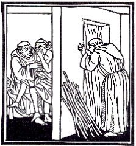
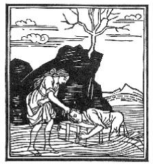
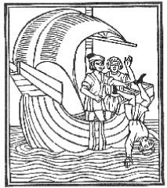
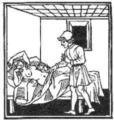
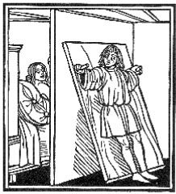
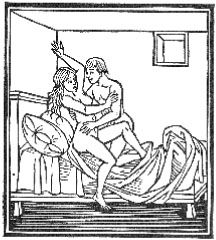
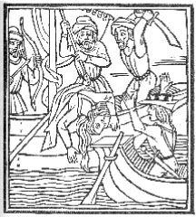
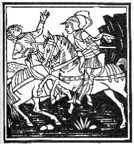
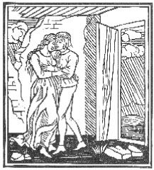

| デカメロン I | |
| ボッカッチォ | |
| (2013) | |
目次
第一話 聖チャッペッレット
第二話 ユダヤ人アブラハム
第三話 三つの指輪
第四話 同じ罪
第五話 牝鶏のご馳走
第六話 才人
第七話 スカーラ卿
第八話 ききめのあったひとこと
第九話 チプリの王様
第十話 アルベルト先生の逆襲
第一話 ぺてんがばれたマルテッリーノ
第二話 追剥にあったリナルド
第三話 アレッサンドロ
第四話 宝石の小箱
第五話 馬の仲買人アンドレウッチョ
第六話 ベリートラ夫人
第七話 バビロニアの王妃
第八話 アングェルサの伯爵
第九話 男装をした妻
第十話 細君をねとられたキンツィカ氏
第一話 園丁と尼たち
第二話 王妃と馬丁
第三話 恋のとりもち
第四話 僧フェリーチェ
第五話 馬のお礼
第六話 夫と思った女
第七話 巡礼をよそおったテダルト
第八話 まぬけのフェロンド
第九話 夫の恋人
第十話 悪魔は地獄へ
第一話 恋人の心臓
第二話 僧アルベルト
第三話 三人姉妹を恋した男たち
第四話 ジェルビーノの恋
第五話 リザベッタとめぼうきの鉢
第六話 夢の話をした二人
第七話 庭園でのあいびき
第八話 恋人サルヴェストラ
第九話 恋人の心臓を食べた妻
第十話 麻酔薬をのんだ恋人
第一話 チモーネ
第二話 死んだはずの恋人
第三話 駆け落ちした恋人たち
第四話 鴬の歌声
第五話 ひとりの少女を恋した二人
第六話 火あぶりにされかかった恋人たち
第七話 主人の娘とテオドーロ
第八話 ナスタジョの恋人
第九話 鷹料理
第十話 仲直りをした夫婦
これからデカメロンと呼ばれる書物がはじまる。この書物は別にガレオット公とも呼ばれ、十日間に七人の婦人と三人の青年によって話された百の物語が含まれている。
悩める者を思いやることは人の情というものです。そうした心やりは誰によらず望ましいことですが、特にこれまで自らが必要として人の情を身に受けたことのある人はぜひともそれに応えていただきたいものです。そうした人のうちで、これまでに慰めを望み、それを嬉しいと思い、あるいはすでに喜びを感じた人があるとしたら、実は私もその一人なのです。と言いますのは、私のような身分の賎しい者がこうしたことを申しあげるのは、何かおこがましいような気もしますが、実は年頃になってから今日まで高嶺の花に恋い焦がれてまいりました。この恋は、心ある方々でその間の消息に通じておいでの人たちからは賞賛もされ、深いご理解もいただいてはきましたが、それにしても悩みは果しなく苦しいものでありました。もちろんそれは愛する婦人が情ないからというのではなく、どうにもならない欲情が焔となって私の胸に燃えさかったためでありました。その焔はほどほどに私を満足させておくようなことはなかったので、必要以上の苦しみを私に感じさせたことも度々ありました。
このように私が苦しんでおりました時、ある友人が話してくれた愉快なお話と、慰めの言葉は、私の心に大きな安らぎを与えてくれましたので、私が死なずにすんだのもそのためだったと固く信じているのです。しかし御自身は終りなき身でありながら、不変の掟として、この世のすべての物には終りがあると定め給うた神さまの思召しのままに、私の恋は激しく燃えて、意思の力も忠告の力も、辱しめを受けることも危険をともなうことも、どんな力も私の恋を破壊するどころか、まげることさえできませんでした。ところが時のたつにつれて、恋そのものが次第に衰え、今はただ、底しれぬ大洋に危険も顧みず舟をだすようなことをしなかった人が、いつも味わうあの救われたような気持だけを私の胸に残していってくれました。以前は苦しみの連続でありましたが、今ではすべての苦しみから解放され、安らかな気持になったと言えるのです。
たとえ苦しみは消えたとしても、私の苦しみを気づかってくださった方々のご好意により、その方々から受けたご恩は、いつまでも心の中に残っていて終生忘れることはないと思います。報恩は徳の中でも特に賞賛に値するものであり、忘恩は非難されてしかるべきものであると思います。私は恩知らずと思われたくないので、わずかなことしかできませんが受けたご恩のお返しとして、恋の苦しみからのがれた今、私を慰めてくださった方々で、思慮ぶかくあられるか、あるいは幸運に恵まれておいでで慰めなど不必要な方は別として、せめて慰めを望んでおいでの方々になんとか愛の手をさしのべたいと考えたのです。
私のできる援助、あるいは慰めと申しましょうか、これを望んでおられる方々にはほんのささやかなものかもしれません。けれども最も望んでおいでの方にさしのべるのが至当だと思うのです。と申しますのは、そのほうがよりお役にたち、それだけ喜んでいただけると思うからです。
この慰めは、それがどんなにわずかなものであっても、男よりはご婦人たちに与えるほうがはるかに役にたつということに、どなたも異論はないと思います。ご婦人たちは、おそるおそる恥じらいながらも、かよわい胸に恋の焔を秘めておられますし、見かけ以上にそれがどんなに強い力を持つものであるかは、これを今までに経験した者のよく知るところであります。それにご婦人たちは、父や母や兄弟、夫といった人たちの希望や意向や命令などに抑えられ、一日じゅう小さな部屋に閉じこもって過ごしておいでです。そしてほとんど何もすることなく坐ったまま、あれこれと、それも楽しいものとばかりは限りませんが、ひとり物思いに耽っておいでです。このため激しい欲望が、「ふさぎの虫」となってご婦人たちの胸に生れると、何か新しい思いつきでこれを取り除かない限り、重苦しい「しこり」となって胸に残ることにもなるのです。それに婦人は男よりもこのような苦しみに耐える力が弱いものです。
このようなことはわかりきっていることですが、恋をする男には起らないものです。気が滅入ったり、心配事があって気がむしゃくしゃするようなことがあっても、そんな気持を和らげたり払いのけたりする方法はいくらでもあるのです。つまり、その気さえあれば、散歩をするとか、いろいろ見たり聞いたりするとか、鷹狩りや狩猟にでかけるとか、釣に行ったり馬を乗りまわしたり、「かけごと」をしたり商売をするといったことがいくらでもできるからであります。こういう方法は、いずれにしろ完全にとまではいきませんが、幾らかは心をまぎらし、少なくとも一時的には憂うつな気持を払いのけてくれるものであります。あとはまた、いろいろな方法で慰めも生まれましょうし、苦しみも薄れるものであります。
さて、かよわいご婦人たちを見てもわかりますが、運命の神は力の弱いものに救いの手をさしのべようとはいたしません。この矛盾を私の力でいくらかでも正すことができるように、恋をしておいでのご婦人たちをお救いし、慰めてさしあげようと思いまして（恋を知らぬ女なら、針や錘や紡車でけっこう満足していますから）、これから百のお話をいたしたいと思います。お話の中には、作り話や譬え話と、それに本当にあった話などがあり、数年前、死のペストが蔓延した時、七人の婦人と三人の青年が集まって、十日間に話しあったものであります。また婦人たちが楽しみにうたった歌の数々をも、あわせてお聞かせいたしたいと思います。
これらのお話の中には古いものも新しいものもありますが、恋の楽しい事件やつらい事件はもちろん、そのほかにもいろいろな不幸な事件がありましょう。これらの事件について、前に申しあげたご婦人方でこれをお読みになる方々は、お話の中にでてくる興味ぶかい事件から、楽しみと同時に有益な教訓をも感じとることができましょうし、また避けなければならないところや見習わなければならないことも同様にお気づきになることでありましょう。こうなりますと、ご婦人方は当然苦しみをお忘れになることと思います。神さまの思召しで苦しみをお忘れになったら結構ですが、恋の女神は私を絆から解放してくれましたし、ご婦人方のご機嫌をとることも許してくれましたので、皆さんから恋の女神に感謝の心を捧げていただきたいと思います。
デカメロンの第一日がはじまる。この日には、どんな理由で後にあげたような人たちが集まって、いっしょに話をはじめるようになったかを、作者が説明した後で、パンピネアが主宰して、各人その最も得意とするところを話しあう。
お優しい皆々さま、いかにあなた方が生来思いやり深くあられるかを考えるたびに、この作品があなた方にとって、さぞわずらわしくうとましいものではじめられているとお思いでしょう。それは心得ております。と申しますのは、この本の最初に記してある、今はすでに過去のものとなった、あのペストによる死の悲惨な思い出が、これを眼のあたりに見、あるいは人づてに聞いて知った方にはどなたにとっても忌わしくまことに傷ましいものであるからなのです。しかし、それだからといって、終始溜息と涙で読まなければならないものときめこみ、読み進むのを怖れないでいただきたいのです。この傷ましい書き出しは、あなた方にとって、ちょうど旅人の前に聳える嶮しい山のようなものでありまして、近くには美しく快い平地が横たわり、登り下りする苦労が多ければ多いほど、旅人たちには楽しみの多いものです。すべて歓楽の後には悲哀があるように、悲惨はそのあとに続く歓喜で終るものであります。このわずか数語で言い尽くされるほどの短い苦悩の後には、先ほど皆さまにお約束した甘美と悦楽が続いてまいります。しかしこれは、前もって誰かが申しあげないことには、このような書き出しからはとうてい予想もできないことでありましょう。もちろん、このような道を通らずに別の道を通って、自分の思うところへ皆さまを楽にご案内することができましたら、喜んでそうしたことでありましょう。しかし、皆さまがこれからお読みになるような事がどうして起ったか、この前置きなくしてはどうしても説明いたしかねましたので、いわば必要に迫られてこんな書き方をいたした次第であります。
さて神さまの御子が降誕されてから、すでに一三四八年になった頃、イタリア随一の優雅な町と言われているフィレンツェに恐ろしい疫病が見舞ったのであります。それは天体の作用によるものか、あるいは私たちの罪業に対する当然の怒りとして、これを矯そうと神さまが人間に科したもうたものか、いずれにしても二、三年前東洋の諸国に発生して、無数の人間の生命を奪ってから、留まることなく次から次へと各地に広がり、恐ろしいことにはとうとう西洋にまで蔓延してきたのであります。これに対して、人間がどんなに知恵をしぼり、これを防ごうといろいろ対策を講じてみても何の役にもたちませんでした。町では、そのために任命された係員たちの手であふれる汚物が取り除かれ、病人はすべて町に入ることを禁ぜられ、健康者の保護についてもいろいろな勧告がくだされ、あるいは信心深い人たちによる一糸乱れぬ行列などが度々行われたり、その他にもいろいろな方法で神に対して敬虔な嘆願が捧げられもしましたが何の効き目もなく、前に申しあげた年の春の初め頃には、疫病は恐ろしいまでに物凄い様相を呈しはじめたのです。
東洋では、鼻血がでたら死はまぬかれないというはっきりした徴候がありましたが、それとは違って、罹病の初期には男も女も同じように腿のつけねか腋の下に腫れものができ、中には普通のりんごぐらいの大きさになるものもあれば卵ぐらいのものもあり、その数も大小さまざまでありました。この恐ろしい「腫れもの」は、前にも申しあげたように腿のつけねか腋の下からはじまって、みるみるうちに全身いたるところに広がり、そのあとは病状が変化して黒色か鉛色の斑点が、腕といわず腿といわず、体じゅうに現われてくるのでありました。そして形は大きいが数が少ないとか、小さいが数が多いとか、それも人によってまちまちでありました。
はじめの頃は、もちろん今もそうですが、ペストの「腫れもの」が、確実な死の前兆であったように、身体にできた斑点は、その人にとって致命的なものでありました。こうした病気の治療には、医者の診察も、どんな薬の効能も何の役にもたたず、効き目もありませんでした。それどころか、病気の性質がこれをうけつけないのか、医者の無知から（医者の中には、医学を修めた人が大勢おりましたが、少しも医者の修業をつんだことのない者もずいぶんおりました）、この病気の原因をつきとめることができなくて適当な治療を施さなかったためか、癒る者はごくわずかで、ほとんど全部が多少の遅速はあっても、前に申しあげた徴候が現われてから三日以内に、熱もださず発作もなく死んでいったのです。
このペストはますます猖獗を極めました。病人が健康な者とつき合っただけで、火がそばにあった乾いた物や油性の物に燃え移ってゆくように感染してゆきました。いやそれだけではなく、病人と言葉を交わしたり、訪れたりしただけでも健康な者に感染し、ひいてはそれが死の原因になったのは申すまでもありませんが、甚だしきは病人が触れたり、ちょっとでも手を通した着物など、どんなものにさわってもたちまち感染するのでした。私がこれからお話し申しあげることをお聞きになれば、さぞ不思議にお思いになられるでしょうが、私でさえ、これが大勢の人たちや自分で直接見たものでなかったら、たとえどんなに信用のできる人から聞いたとしても、筆に表わすどころか本気にすることさえできなかったことでしょう。
全くこのペストの伝染力の恐ろしさといったらひどいもので、ただ人間から人間へ伝染するだけならまだしも、度々この眼で確かめたことですが、病人やペストで死んだ人の持ち物にさわると、人間はおろか動物でさえ感染し、たちまち死んでしまうのでした。ただ今も申しあげたように、こうしたことは度々見かけましたが、なかでもある日のこと、こんなことがありました。この病気で死んだ一人の貧乏人の「ぼろ」が道ばたに投げすてられていました。そこへ豚が二頭やって来て、例によって初めはしきりに鼻で「ぼろ」をいじくっておりましたが、やがて口にくわえて振りまわしました。すると間もなく毒でも喰ったように痙攣を起し、散々ひっかきまわした「ぼろ」の上に二頭とも倒れて死んでしまったのです。
このような、またはこれに類する、あるいはこれ以上のことがずいぶんあったものですから、生き残っている者はあれこれと恐怖や妄想を抱くようになり、その結果ほとんどすべての人たちの考えが残酷なものになってきました。つまり自分だけが助かりたいという一念から、病人や病人の持ち物を避け、これから遁れようとしたのです。
ところが中には生活を節制し、何ごとも過度を慎むのがこうした病気にかからない最上の策であると考えた人もありました。この人たちは仲間を作って他の人とは離れて暮し、病人の一人もいない気持よさそうな家に集まって、家の中に閉じこもったまま、とびっきりのご馳走とごく上等な葡萄酒をとり、暴飲暴食は一切これを避け、よその者と話したり外部のことや死人や病人のことには耳をふさいで、音楽とか手近にできる娯楽に気をまぎらして暮しておりました。
そうかと思うとこれとは全く反対に、思いっきり飲んで楽しんで、歌い歩いて遊びまわり、何でもできる限りの欲望を満足させて、何が起ろうと笑いとばすなりひやかすなりしていることが、こうした大きな災難には最も確かな薬だときめこんでいる人たちもありました。彼らは口先だけでなく、できるだけそうしたことを実行して、昼といわず夜といわず、ほうぼうの酒場を渡り歩いて「はめ」をはずして飲みまわり、人の家まで押しかけて行って、ひたすらしたい放題、好き勝手なことをしたのであります。
実際こんなことはわけもなくできました。もう誰も彼も生きのびる望みを失っていたものですから、生命はもちろん持ち物さえすてて顧みませんでした。従ってたいていの家は共有になっており、気に入ったとなると、まるでその家の持ち主みたいな顔をして赤の他人が使っておりました。この人たちは、こんな獣じみた考えを持っていながら、一方では常にできるだけ病人を避けようとしていたのです。こうして私たちの町が苦悩と悲惨のどん底に沈んでしまうと、神の掟も人間の法の権威もほとんど地に落ちて、全く無力になってしまいました。それというのも役人たちが他の人たち同様、みんな死んでしまったり、病気になったり、下役人の手が足りなくなったりしたために仕事ができなくなったからでありました。そのために人は好き勝手なことをしたい放題やっていたのであります。
しかし、今申しあげたどちらにも属さないで、中庸を歩む者も大勢おりました。つまり、特に食べ物を切りつめたり、飲酒放蕩に耽ることもなく、食べたい時にはじゅうぶん飲食もし、家にばかり閉じこもっていないで外へ出歩き、花や香りのいい薬草、さまざまな香料などを手に持ち、時おり香りをかいでは頭を休めるのが一番いい方法だと考えている人たちでした。これも、あたり一面に死体や病気や薬の臭いがたちこめているように思われたからです。中には更に非情な考え方をしている者もいて、ペストを避けるには逃げだすのが最上の方法だなどと言っていました。
こういう考えを持っていたものですから、男も女も自分のことだけで他のことには目もくれず、町や家や土地や親戚、財産を棄てて、どこかよその土地か、せめてもフィレンツェに近い田舎を探し求めて行ったのです。神の怒りがペストの猛威をかりて、人の住むところならどこまでも追跡し、人間の罪を罰してやろうとするならまだしも、ただこの町の城壁の中に生き残っている者だけを殲滅しようとしているかのようでありましたし、さもなければこの町に誰一人残ることを許さない、つまりこの町の最期の時がきたことを知らせているようでもありました。
このように人々の考えは千差万別でありましたが、すべてが死んでしまったわけではなく、かといって全部が遁れたというわけでもありませんでした。いずれの考え方をした人たちも、いたるところで大勢病に倒れたのであります。それも自分たちが健康であった時、今なお達者で生き残っている人たちに、生きる指針を与えていましたのに、ひとたび病気にかかるや見向きもされず、顧みられないまま憔悴していったのであります。市民は互いに避け合い、隣り同士でさえ面倒を見る者は誰一人ありませんでしたし、親戚といってもたまにしか、というよりはほとんど往来することもなく遠のいていたことは今さら申すまでもありません。なにしろこの惨事は、男であれ女であれ、その胸にひじょうな恐怖をまきおこしましたので、兄は弟を、叔父は甥を、姉は弟を棄て、時には妻が夫を見棄てるようなこともありました。また、中でも一番恐ろしく、ほとんど信じられないことは、父や母でさえも子供たちを、まるで自分の子供ではないように訪ねてもやらなければ看病もしてやらなかったのです。このため病気にかかった人の数は数えきれないほどで、ひとたび病気にかかると男女の別なく、ごく少数の友人たちの同情とか、不当に莫大な報酬にひかれて働いている召使いの貪欲以外、頼るべきものはなに一つありませんでした。しかもそのような召使いさえめったにおりませんし、いたところで男も女も気の利かない者が多く、看病などは全く不慣れで、ただやっと病人の必要なものを取ってやるとか、臨終の時に見守ってやるぐらいで、あとはなに一つできませんでした。こんな仕事をしながら病人から報酬を貰い、身の破滅を招いた者もずいぶんおりました。
このようにして病人は隣り近所の人たちや身内や友人から見はなされ、召使いは払底していましたので、今まで聞いたこともないような習慣が行われたのです。つまり、どんなに淑やかで美しく、優しいご婦人でも、いったん病気にかかると、老若の別なく男を平気で看病に使い、病気のために必要とあれば、女の前ならいざしらず男の前でも、恥ずかしげもなく体のすみずみまで出してみせることをはばかりませんでした。後日病気の快復した人たちが貞操観念を軽視するようになったのも、こうした習慣が起因しているのではないでしょうか。
それはさておき、死んでゆく人もずいぶんありましたが、看護の手さえ行き届いていたら、中には助かった人もあったことでしょう。こうして病人には看護の手もさしのべられず、ペストは猖獗をきわめておりましたので、町では昼夜をとわず死人が続出し、見ればなおのこと、人の話に聞いてさえ恐ろしいことでありました。その結果、生き残った人たちの間で、以前の習慣に反するようなことが行われだしたのもやむを得ないことでありました。
昔は、いや今日でも行われているのを見かけますが、人が死ぬと従来の習慣として、身うちの女や近所の女たちは故人の家に集まって、故人と最も親しかった人たちといっしょに泣き悲しみますが、男たちは大勢の町の人たちと故人の家の前へ集まったものです。そして故人の身分によって僧侶がまいり、故人と同じぐらいな身分の人たちの肩にかつがれ、蝋燭と讃美歌の葬列で、故人が死ぬ前に選んでおいた教会に運ばれていったものです。
ところがペストの猛威がふるいはじめてからは、このような習慣はすっかりと申しましょうか、大部分がすたれて、新しい習慣が起ってまいりました。ですから大勢の女たちに囲まれるどころか、臨終に立ち会ってくれる人もなくこの世を去っていく人がずいぶんあったのです。親しい人たちの泣きの涙で野辺の送りをされる者はほとんど見られないといっていいほどでした。それにかわるものとしては友達の笑い声や、冗談や、馬鹿さわぎだけがあったので、女たちは女らしい気持などあらかたなくしてしまって、わが身かわいさのあまりこのような習慣をたくみに身につけてしまったのです。死者のうちでも、十人ないし十二人以上の近所の人たちにつきそわれて教会へ行く者は滅多にありませんでした。棺をかつぐ人は立派な市民ではなく、下層階級からかり出された墓掘り人夫のようなもので、「死体運び」と呼ばれ、こうした仕事をして金を貰っている連中でした。こういう連中が棺をかつぎ、四人か六人の僧侶がわずかな蝋燭をともし、時にはそれさえないこともありましたが、死者が生前きめておいた教会などおかまいなしに、たいていは最も手近な教会へ駆け込むようにして死体を運んで行きました。僧侶たちは先ほど申しあげた「死体運び」の手を借りて、長ったらしい儀式や厳かな儀式など面倒なことはせず、どこでも空いている穴さえあれば、見つけしだい死体をほうり込みました。下々はもちろんのこと、中流どころのほとんどに至っては、その有様もいっそう悲惨なものでありました。と申しますのも、彼らの大半は、希望したものかそれとも貧乏のせいか自分の家に留まっていて、地域内にひきこもっておりましたので、日に何千もの人たちが病気になり、何の看病も世話もうけられないばかりか、何一つ救いの手もさしのべられずにみんな死んでいったのです。通りでは昼も夜もなく死んで行く人が沢山おりました。家の中で死ぬ者はもっと多く、近所の人たちは腐敗した体から発散する悪臭で、はじめてその死を知らされるという有様でした。
そんなわけで、どこもかしこも死人でいっぱいになり、悪臭があたり一面にたちこめておりました。隣近所の人たちは、死者に対する同情からというよりも、死骸が腐敗して自分たちに害をあたえはしまいかと気づかって、同じような手段を講じるようになりました。すなわち彼らは自分たちでやるか、人夫の手をかりるかして（そういう人夫が見つかった場合のことですが）、死体をその家から曳きずりだし、戸口の前へ置いておくのです。その付近を、特に朝方にでも通りましたら、数えきれないほどの死体を見ることができたでしょう。それから棺をとりよせるのですが、棺が足りないので死体を板の上にのせることもありました。一つの棺に二、三人の死体をいっしょに入れることも度々ありましたし、妻と夫や、二、三人の兄弟や、父親と息子といったような人たちの死体をいっしょにおさめている棺もずいぶんあったのです。また二人の僧侶が十字架を一つもって、ある死人の葬列の前を歩いておりますと、人夫にかつがれた棺が三つも四つも葬列の後について来て、僧侶が一人の死体を埋めようと思っていたのに、六人か八人、時にはそれ以上の死体があったこともしばしば見うけられました。これらの死体には涙を流す者もなければ灯明をあげる者もなく、つきそって行く者もありませんでした。それどころか、人間が死んでも、山羊一匹死んだ程度にしか考えられなくなってしまったのです。
このことから実にはっきり現われてきたことは、普通の状態でしたら、たとえ知恵のある人でさえ、ごくたまにしか起らない小さな不幸からは、我慢づよく諦めることなど学びとることさえできませんでしたのに、災害が大きかったばかりに、最も無知な人にまでそんな気持を感じさせるようになったのです。どの教会にも毎日、ほとんどひっきりなしに、すでに申しあげたような莫大な数の死体が続々と運びこまれるものですから、埋葬する墓地が足りませんでした。それに昔の習慣どおり、一人一人に特定の墓地をあてがおうとすると、なおのこと不足をきたすわけです。とにかくどこもかしこもいっぱいでしたので、教会の墓地にひじょうに大きな穴を掘って、その中へ新たに運びこまれる死体を何百となくほうりこみました。その中ではまるで船に貨物を積みこむように死体が何段にも積み重ねられ、穴からはみ出すほどで、土をかぶせるのもやっとのことでありました。
さて私たちの町に起った過去の悲惨な状態を、これ以上細部にわたってお話しするのは遠慮したいと思いますが、ただ町じゅうがこんな恐ろしい災害に見舞われていた時、一方では周囲の田舎もそれに劣らず災害をうけたことを申しておきます。小さな町は規模こそ小さいが都会と同様ですので、ここではふれないでおくとして、田舎では、散在している部落や畑で、あわれな貧しい百姓やその家族たちが、医者の手当ても召使いの世話もうけずに、道ばたや畑や家の中て、昼となく夜となく、人間というよりはまるで獣のように死んでいったのです。
そのため彼らも、町の人たち同様、風習はみだれてふしだらになり、身のまわりのことや仕事は何一つかまわなくなりました。それどころか、誰も彼もが、死ぬ日を待ってでもいるように、家畜や土地や、自分たちがこれまで苦労してきた勤労の成果などに目もくれないで、ただ現在手もとにあるものを使ってしまおうと、あらゆる知恵をしぼっておりました。ですから、牛や、驢馬や、羊や、山羊や、豚や、鶏はもちろんのこと、人間に最も忠実な犬までが、家から追い出され、畑の中を勝手気ままにうろつきまわっているという有様でした。しかもその畑には、取り入れどころか刈りとられてもいない穀類がほったらかしにされたままでありました。多くの家畜は、理性でもあるかのように、昼間食べるだけ食べて満腹し、夜になると牧人の手もかりずに小屋へ帰って行きました。
さて、田舎のことはこれくらいにして再び町の話にもどりますが、三月から七月までの間に、猖獗を極めたペストの猛威と、罹病しなかった者が恐怖のあまり、当然しなければならなかった病人の看護を怠りこれを放棄したために、フィレンツェの城壁内だけでおそらく十万人以上の人たちが命を奪われたのではないかと思われました。それほど天は無慈悲であり、一部には人間の残酷さもあずかっていたのでしょうが、全くひどいものでして、これだけ申しあげれば、もうお話しすることもないかと存じます。それにしても、この恐ろしい惨事が起る前は、それほど大勢の人間がこの町に住んでいようとは誰も思ってもいなかったことでありましょう。
ああ、その昔は大勢の召使いをかかえ、紳士淑女で賑わっていた壮大な宮殿や美しい館、すばらしい住宅が、今では召使いまでが姿を消し、そのほとんどが空家になってしまったのです。由緒ある血統や、莫大な遺産、世に聞こえた財宝で、正しい相続者を失ったものもずいぶんありました。またガリエーノやイッポクラーテやエスクラピオのような名医から、健康者として太鼓判をおされるほどの頑丈な男や、美しい女や、愉快な青年で、朝は親戚知友といっしょに食事をしていたのに夕方にはあの世で先祖たちと晩餐を共にするようになった者が大勢いたのです。
このような傷ましい惨事をくどくど申しあげることは、私といたしましても胸の痛むことです。したがって省略できるところは適宜省略して、本題に入らせていただきたいと思います。
さて、私たちの町がこのような状態で住む人もほとんどなくなっていた頃のことです。これは後日信頼できる人から聞いたことですが、あの由緒あるサンタ・マリア・ノヴェッラの教会で、ある火曜日の朝、ミサがすんで人影もなくなった頃、その頃にふさわしく、喪服を着た七人の若い婦人たちが集まりました。皆お互いに友だちとか、隣り同士とか親戚縁者といった親しい間柄の人たちでして、十八歳から二十八歳までの人たちばかりでした。いずれも聡明で、気品があり、容姿は美しくて身だしなみもよく、その上適当に快活な人たちでありました。名前はそのまま言いたいところですが、それにはそれなりの理由もあるので申しあげないことにいたします。実はこれから述べる人たちのお話ししたことや、その話をお聞きになったために、将来そのうちのどなたが恥ずかしい思いをされてもいけません。それに只今も申しあげましたように、当時はこの婦人たちと同じ年頃の人にはもちろんのこと、相当年をとられた人にも悦楽ということには法律もたいへん寛大でしたが、今日ではそれもいくぶん窮屈になってきておりますので、名前はふせておくことにいたしたいと思います。
またどんな賞賛に値するような生活をしておりましても、すぐにあれこれ非難がましいことを言う嫉妬深い人たちに口実をあたえて、この立派な婦人たちの貞淑さに少しでも「けち」をつけさせたくないからであります。そこで私は、めいめいの話すことが、あとになって紛らわしくなってもいけませんので、多少は各自の性格にふさわしいような名前をつけることにいたしましょう。
その中で最初の婦人は、最年長者でありますが、この人をパンピネアと呼びましょう。二番目はフィアンメッタ、三番目はフィロメーナ、四番目はエミリア、五番目はラウレッタ、六番目はネイフィレ、最後はエリザと呼ぶことにいたしますが、全く理由のないことではありません。
この人たちは、別に、前もって打ち合わせていたわけではないのですが、たまたま教会の中の同じ場所に来あわせて、まるく輪をつくって腰をおろしておりました。婦人たちは何度も溜息をついていましたが、やがてお祈りなどそっちのけで、当時の状況について、互いにいろいろお話をはじめました。しばらくしてお話がとぎれた時パンピネアはこう話しだしました。
「皆さま、皆さまも私と同じように、これまで何度もお聞きになったことでございましょうが、自分の権利を正しく行使いたしますことは、どなたにも迷惑をかけるものではございません。この世に生をうけております誰もが持っている本来の権利、それは、できるだけ自分の生命を大切にし、維持し、守ることでございます。これは誰しもお認めになるところでございまして、自分の生命を守るためには、人を殺してもなんら罪にならなかったことさえ、時にはあるのでございます。ですから、みんな安らかに生活できるようにいろいろ配慮している法律でさえ、これを認めております以上、誰にも迷惑をかけないで、私たちが自分の生命を維持するために、できる範囲内で、その方策をたてることは、私たちはもちろんのこと、どなたにとっても正しいことではございませんか。今朝も、いいえ今朝にかぎらず、この頃の私たちの生活ぶりを観察したり、また私たちがどんなことをどんなふうに話しあってきたかを考えてみますと、めいめい自分のことだけしか心配していないのでございます。これはなにも私にかぎらず皆さまもご同感のことと存じます。
私はそんなことを別に不思議に思っているわけではございません。ただいかにも不思議に思われることは、私たちはみんな女らしい感情をもっておりますのに、すべての人が当然恐れていることを防ぐような処置はなに一つしようとしないことでございます。考えてみますと、私たちは、どれくらい多くの死体がここへ運ばれて来て埋葬されるかということや、もうほとんどいくらも残っていないここの坊さんたちが、きまった時間におつとめをしているかどうかを聞いて、その証人になるためにこちらへまいっているようなものでございます。またここでおめにかかる方々に私たちの不幸がどんなにひどいものであり、どんなに多いかを、この喪服を着ていることでお見せしようとしているくらいなもので大した意味もないのでございます。
ここから一歩外へ出ますと、きまって死体や病人が運ばれて行くのを見かけます。また罪を犯して、当局から流罪を宣告されたような連中が、係官が死んだり病気にかかったりしているのを知って、当局をあざ笑うように、大威張りで町中を横行しているのを見かけることもございます。そうかと思うと、この町の屑みたいな連中が、血にうえて、「死体運び」などと称し、私たちに乱暴を働きながら、到るところ馬を乗り入れ、駆けずりまわり、みだらな歌を歌って私たちの不幸をあざ笑っているのを見かけます。
私たちの耳にはいるのは、『だれそれが死んだ』とか、『だれそれが死にそうだ』というようなことばかりでございます。もしまだ泣く力の残っている者がおりましたら、いたるところから悲しい泣き声が聞こえてきたことでございましょう。わが家にしても同じこと（私に起ったことが果して皆さんにも起るかどうかそれはわかりませんが）、以前は大勢の家族がおりましたのに、今では女中一人が残っているだけでございます。その恐ろしいことと申しましたら、髪の毛が全部さかだつような気がいたします。家じゅうどこへ行っても、どこにおりましても、よそへ行きましても、家におりましても、いやな気がしてなりません。私たちのようにまだなにがしかの財産があったり、行くところのある者で、こちらに残っております者はほとんどいないような気がいたしますだけに、一層この感を深くするのでございます。
それに私は何度も人の噂に聞き、あるいは実際この目で見たことでございますが、まだ財産をもっている者が何人残っておることやら、とにかくそういう人たちが善悪の見さかいもなく、ただ欲望のおもむくままに、単独かあるいは徒党をくんで、日夜歓楽の限りをつくしているのでございます。それも俗界の人たちならいざしらず、修道院の尼までが、人には禁じられていても自分たちには許されていると思いこみ、戒律を破って肉欲に耽り、こんなことで死をまぬがれようと考え、放蕩三昧に日を送っているのでございます。このような状態だといたしましたら（実際そうであることはたしかなことでございますが）、一体私たちはどうしたらよろしいのでございましょう。何を当てにし、何を夢みているのでこざいましょう。どうして私どもは自分の身を守ることに、人さまとくらべて、こうもおくれをとっているのでございましょう。
私たちは他の人たちより、自分の生命を粗末にしてはいないでしょうか。それとも私たちの生命が他の人よりはるかに強い鎖で肉体に結びつけられていて、私たちの生命をおびやかす何ものにも少しも怖れる必要はないとでも考えているのでしょうか。そうだとすれば私たちは考え違いをしております。そんなことを考えているとしたら、私たちは本当に愚かでございます。この恐ろしいペストで倒れた青年や婦人がどんなに多かったかを思いだすたびに、私たちの考え方が愚かだったという証拠を何度もはっきり見せつけられるのでございます。ですから私たちが怠慢と申しましょうか、無頓着でありますために、そのようなあやまった考えにおちいってはなりません。難をのがれようと思えばなんとかのがれることができるかもしれないのでございます。
皆さまも私と同じような考えをもっていらっしゃるかどうかは存じませんが、私たちは女でございますから、今まで大勢の人たちがなさってこられたようにこの土地から出て行くのが一番よい方法だと私は考えるのでございます。死をさけると同様に、人の悪習にまきこまれないように田舎へまいり、どなたも別荘はいくつもお持ちでございましょうから、そこで正しく生活し、なにをいたしますにも限度を越えないようにして、できるだけおもしろおかしく暮すのがなによりだと存じます。田舎では小鳥の歌声が聞こえ、緑したたる丘や野原、海原のように波うつ穀物の豊かに実る畑、種々さまざまな樹木、果しなくひろがる大空などが眼に入ります。大空はたとえまだ憂愁をたたえているといたしましても、この町の空虚な城壁を眺めているよりも、はるかに美しく、永遠の美を私たちに見せてくれることでございましょう。それに田舎は、空気もずっと新鮮ですし、こんな時世に生活しますのに必要な物資も都会よりははるかに豊富でございます。その上わずらわしいこともこちらよりは少ないかと存じます。もちろん、都会の人たちが亡くなって行くように、田舎でも百姓たちが死んで行くことでしょうが、それにしても、都会に較べると人家もまばらであり、住む人も少なく不快なこともずっと少ないわけでございます。
よく考えてみますと、私たちは人を見すてて行くのではなく、実は私たち自身見すてられたといったほうがよろしいかと存じます。と申しますのは、私たちの身うちの者が死んでしまったり、あるいは死から遁れたいばかりに、私たちを赤の他人のように振りすてて、こんな大きな不幸の中に置き去りにしていったからでございます。ですから私の提案どおりにいたしましても異論のあろうはずはございません。そうでもいたしませんことには、苦しい思いや嫌な思いはおろか、おそらく死に見舞われることになりましょう。もしよろしかったら、めいめい女中を呼び必要な品物をもってお供をさせ、今日はこちら、明日はあちらとめぐり歩き、このような時世にできるだけの楽しみや喜びを味わったとしても、当然のことだと思います。
このように日を送って、天がこの災害にどんな結果をもたらすか見とどけようではございませんか、もっともその前に死んでしまうかもしれませんが。ただ皆さまに考えていただきたいことは、他の人たちがふしだらな生活をしてこちらに残っているのにくらべたら、私たちがまじめな暮しをしようとしてこの町を出て行きましても、決してとがめられることはないということでございます」
婦人たちは、パンピネアのお話を聞くと、その考えを賞めそやしたことはもちろんですが、彼女の考えどおりにしたいと思い、さっそくお互いにもっと細部にわたって相談をはじめました。思い立ったらすぐにも出発しなければならないように考えたのです。けれども思慮ぶかいフィロメーナが申しました。
「皆さま、パンピネアのおっしゃったことはまことに結構なことではございますが、皆さまのようにそんなにお急ぎになることもないと思います。考えてもご覧なさいませ、私たちはみんな女ばかりでございましょう。女だけではどうも分別のつきかねるものでございまして、どなたか殿方のお口ぞえがありませんと一向にまとまらないものでございます。こんなことぐらい子供じゃありませんからおわかりでございますわね。大体私たち女というものは、移り気で、気侭で、疑い深く、小心なうえ臆病なものでございます。ですから、どなたか私たち以外の方で指導者になっていだだく方がいらっしゃいませんと、この一行は思ったよりも早く解散して、うけないでもいいような非難をうけるのではないかと、それが心配でなりません。そんなわけで、事をはじめる前には、よく気をつけたらよろしいと思います」
するとエリザが申しました。
「本当に殿方は私たち女の頭脳でございますわ。殿方のお指図がなければ、私たちのいたしますことで立派な成果をあげることはめったにございません。ですが、そのような殿方にどうしたらお目にかかれるでしょう。ご存じのように、私たちの家族の者はほとんど亡くなってしまいましたし、生き残っている人たちも、方々へいろいろな仲間に加わって私たち同様逃げ出そうとしておりまして、どこにいますものやら見当もつかない有様でございます。といって、見ず知らずの方にお願いするのもどうかと思います。と申しますのも、私たちは健康が目的で出かけます以上、楽しみや休養をとるのが本筋でございまして、不愉快なことや不和をかもしだすようなことがあってはなりません。そんなことがないようにできるだけ万全の策を講ずる必要があると思います」
婦人たちの間でこんな話が交わされておりますと、偶然三人の青年が教会へ入ってまいりました。その中で一番若い人でも二十五歳で、それより年下の人はおりませんでした。この人たちには、当時の頽廃的な世相も、友人や親戚を失ったことも、身にふりかかってくる恐怖さえ、恋慕の情を消すこともさますこともできなかったのでしょう。そのうちの一人はパンフィロ、二番目はフィロストラート、もう一人はディオネーオと呼ばれていて、いずれもひじょうに感じのいい礼節をわきまえた人たちばかりでありました。彼らはこうしたひどい混乱の最中に心を慰める一番よい方法は、意中の女性に会うことだと考えて、女性たちを探しに来たところでした。たまたま三人の意中の人が前にお話しした七人の女性の中にいましたし、縁戚関係の人たちも何人かおりました。彼らが婦人たちのほうへ視線をむけたのは、婦人たちが彼らを見たのと同時でした。するとパンピネアはにっこり笑って申しました。
「ご覧なさいませ、私たちの計画に運が向いてきましたわ。礼儀正しいご立派な方たちがいらっしゃいました。この仕事をお願いするのに私たちさえ異存がなければ、あの方たちは喜んで私たちの指導者にも従者にもなってくださるでしょう」
これを聞くとネイフィレは、その中の一人に愛されておりましたので、顔じゅうを赤くして申しました。
「まあ、パンピネア、お言葉にお気をつけあそばして。あの方たちでしたら、どなたも、申し分のない方ばかりでございますわ。こんなことよりもっと大切なことだっておできになる方々でございます。私たちどころか、もっと美しい高貴なご婦人方のお相手だってご立派におできになると思います。でも、あの方々は、こちらにいらっしゃるあるお方に恋をしていられることは、誰でも知っていることですので、あの方たちとごいっしょいたしますと、お互いになんのやましいところがなくても、非難がましいことを言われるのではないかと、それが気がかりでございます」
これを聞いてフィロメーナがこう申しました。
「そんなことご心配に及びませんわ。自分が正しい生活をしていて、良心にやましいところさえなければ、言いたい者にはなんとでも言わしておけばよろしいと思います。神さまと真実が私を守ってくださいましょう。あの方々がごいっしょに行ってくださるのでしたら、本当にパンピネアのおっしゃるとおり、私たちの門出は幸運にめぐまれていると申してよろしいですわ」
他の婦人たちは、彼女がこんなふうに言うのをだまって聞いていましたが、皆同じように青年たちを呼んで自分たちの計画を話し、ごいっしょしていただけたらどんなに嬉しいことか、お願いしてみたいと申しました。その中の一人と親戚の間柄であるパンピネアは、何も言わないで立ちあがり、婦人たちをじっと見つめていた青年たちの方へ近づいて行きました。彼女は優しい笑顔で挨拶をし、自分たちの計画を説明してから、どうか兄弟のように純粋な気持で仲間に加わっていただきたいと、一同に代わって頼みました。青年たちは最初はからかわれていると思っておりましたが、相手が本気で話していることを知ると、よろこんでお役にたちましょうと答えました。さっそく一同は別れる前に、必要なことをいろいろ相談しました。一切手順よく準備もととのったので、前もって荷物を行き先へ送り届けました。その翌日、つまり水曜日の明け方、婦人たちは何人かの女中をつれて、二人の青年たちも三人の召使いをつれて町を出、旅路につきました。一行は、町からわずか二マイルも離れないうちに、あらかじめきめておいた所に着いたのでした。
そこは小さな丘の上にあって、どの街道からも少し離れており、緑の葉の生い繁ったさまざまな樹木に蔽われていて、見るからに快い所でございました。丘の上の頂上に一つの館があって、その中央には美しい大きな中庭がありました。回廊や広間や部屋などいずれも華美を極めておりまして、素晴らしい絵が飾ってありました。周囲には芝生や美しい庭園があり、新鮮な水の湧き出る井戸や貴重な葡萄酒を貯えた穴倉がありました。もっともこれは慎み深く貞淑なご婦人たちよりも、お酒の好きな人たちには願ってもないことでございました。館はすっかり掃除ができていて各部屋には寝台がととのえられ、いたるところに季節の花が生けてあり、床には藺を敷きつめてありましたので、到着した一行の喜びはひと通りではありませんでした。
一行が到着して腰をおろすとすぐに、誰よりも快活で機智に富んでいるディオネーオが申しました。
「皆さん、私たちは先見の明があったからというよりも、皆さんの用心深いおはからいがあったのでこちらへ来たわけです。私はあなた方が、ご自分の心配ごとをどのように解決しようとしていらっしゃるのか存じませんが、私はつい先程、皆さんと町を出る時、自分の心配ごとはそこへ残してまいりました。ですから（皆さんも品位をおとさない程度に、と申しあげているのですが）、私といっしょに楽しくなさったり、お笑いになったり、歌ったりしていただきたいのです。でなければ私はお暇をいただきます。私は自分の心配ごとのために戻って、苦しみ悩む町に留まりましょう」
するとパンピネアは、自分も同じように心配ごとなどすっかり追い払ってしまったように、愉快そうに答えました。
「ディオネーオ、本当におっしゃるとおりですわ。楽しく暮しましょうよ。私たちが悲しみをのがれてまいりましたのも他の理由からではないのですもの。でも物ごとには節度がありませんと長続きしないものですから、こんな素晴らしい集いができ上がってみますと、最初に口をきいた私といたしましては、私たちの楽しみを長続きさせるために、どうしてもこの中からどなたかに主宰者になっていただいたほうがよろしいと思います。その方を私たちは最高の方として尊敬し、命令にも従うのです。またその方には私たちが楽しく暮すことができますように、いろいろ知恵をしぼっていただかなければなりません。なお、一人一人が命令を下すということは優越感を満足させることであり、同時にそうした心くばりが重荷ともなるわけでございますが、そういう役目を負わない方があれこれ嫉妬心などおこされてもいけませんので、それぞれ一日だけその重荷やら名誉を分担することにしたらいかがでございましょう。それにしても最初の方は私たち全員の選挙できめなければなりませんわね。その次の方には、その日の夕刻、当日主宰権をおもちになった方が好きなお方にご指名なさればよろしいと思います。その方は、ご自分の主宰権の続くあいだ、私たちが生活いたします場所と方法を、お好きなように命令し、お決めになればよろしいのでございます」
この言葉はすっかりみんなの気に入りましたので、一同声をそろえて、彼女を第一日目の女王に選びました。するとフィロメーナはさっそく一本の月桂樹のところへ駆けて行きました。この樹の枝がひじょうに尊いもので、それを頭にいただく人は大きな名誉を受けるに値するという話を何度も聞いていたからです。彼女は数本の小枝を折ってきて、立派な美しい花冠を作り、それを女王の頭にのせてやりました。それ以来この冠はこの集いが続いているあいだ、最高の主権者であるという明らかなしるしになったのです。
パンピネアは女王になると、一同に話をやめるように命じました。一同が話をやめると、彼女は三人の青年たちが連れてきた召使いと、前もって呼びよせておいた自分たちの四人の女中にこう申しました。
「私たちの集いが秩序正しく、愉快に、すこしもやましいことをしないで、できるだけ長続きをさせるにはどうしたらよろしいか、はじめに私がそのお手本を一つおめにかけたいと思います。ますディオネーオの召使いパルメーノを私の給仕頭に任命いたしまして、食事の世話を一任いたします。パンフィロの召使いシリスコは支出係兼会計係で、パルメーノの指図に従ってもらいたいと思います。ティンダロはお部屋でご主人フィロストラートのご用はもちろん、他のお二人の殿方のご用もしてあげてください。他の人たちは今申しあげたお仕事があってお世話できませんからね。私の女中のミシアとフィロメーナのリチスカは、いつも食堂のご用をうけもって、パルメーノの指図どおりお料理の支度に念を入れてください。ラウレッタのお女中のキメーラとフィアンメッタのお女中のストラティリアとは、ご婦人たちのお部屋を整頓し、私たちのいる場所をよくお掃除してもらいたいのです。それからこれは一般的なことですが、私たちの気持を大切にしようとお思いだったら、どこへ行っても、どこから帰ってきても、どんなことを聞いても、どんなものを見ても、嬉しいお話のほかは、決して外からもってこないように、めいめい気をつけるんですよ」
彼女は大体こんな命令を与えますと、一同の賛成を得ましたので、嬉しそうに立ち上って申しました。
「こちらには庭や芝生やそのほか楽しい場所が沢山ございます。ですからお気に召すようにお散歩なさいませ。九時になりましたらまたこちらへおいでくださいまして、涼しいうちにお食事にしたいと思います」
一同は、新しい女王のお許しがでましたので、青年たちは美しい婦人たちと連れだって楽しそうに話を交わしながら、ゆっくり庭を歩き廻って、いろいろな枝できれいな花輪を作ったり、優しい声で歌をうたったりしました。こうして、女王からいただいた時間をたっぷり使って館へ帰りますと、パルメーノがかいがいしく仕事にかかっておりました。地階の食堂には、真白いテーブル掛けのかかった食卓が用意され、銀色に輝くコップがならんでいて、「えにしだ」の花がどこにもいっぱい生けてありました。女王の指図で手を洗う水が配られると、一同はパルメーノのきめた席につきました。ご馳走はすばらしく、最上の葡萄酒がだされて、二人の召使いが静かに給仕をしてまわりました。このようになにもかもいたれりつくせりでありましたので、みんな楽しく、愉快におしゃべりしながらにぎやかに食事をいたしました。
食事が終って食卓が片づくと、女王は楽器をもってくるように命じました。婦人たちも青年たちもみな踊りが達者で、中にはとても上手に楽器を奏でたり歌ったりする人がおりました。女王の命令てディオネーオがリュートを持つと、フィアンメッタはヴィオラをとって、二人は甘い舞踊曲をひきはじめました。女王は召使いたちを食事にやって、他の婦人や二人の青年と輪を作り、ゆるやかな足どりで踊りだしました。これが終ると甘く楽しい歌がはじまりました。
このようにくりかえしながら長い時間すごしておりましたが、やがて女王は昼寝の時間だと思いましたので、一同に解散を命じました。三人の青年たちは、婦人たちの部屋と離れている自分たちの部屋に引きあげました。各部屋には寝台がととのえられていて、広間と同じように花がいっぱい飾ってありました。婦人たちの部屋も同様でありました。そこで彼女たちは着物を脱いで眠りにつきました。
午後の三時になると間もなく女王は起き上り、他の婦人たちを起させました。女王は昼間あまり眠り過ぎるのは身体によくないと思ったからであります。一同が芝生のところへまいりますと、そこには緑もしたたるような草が丈高く伸びて、陽かげになっておりました。皆は快くそよいでくる微風を身にうけながら女王の命令どおり、緑の草の上に輪を作って腰をおろしました。すると女王は一同にこう申しました。
「皆さま、ご覧のように陽は高く、暑さもきびしゅうございます。聞こえるものはただ橄欖の木に止まって鳴く蝉の声ばかりでございます。こんな時刻によそへ出かけるのはまったく愚かしいことであります。こちらにおりますのが一番涼しいようでございます。ご覧のように遊戯盤も将棋盤もございますから、皆さまお気に召したものをなんなりとお楽しみくださいませ。遊びのことで私の意見をいれていただけるなら、勝負ごとは負けた方がきっといやな思いをなさいますし、勝った方も見物なさる方もそれほど大して楽しいものでもございません。むしろ困る場合もあるものでございますから、これはやめにいたしまして、お話ししながらこの暑いひとときを過ごしたいと思います。（一人の方がお話をいたしますと、これを聞いている一同も楽しい思いをいたしますから）めいめいお話を一つずつしておりますうちに、陽もかたむきましょうし、暑さも弱まることでございましょう。そうしたら、お好きなところへおでかけになれると思います。私の申すことがもしお気に召しましたら（この点につきましては、私は皆さまのお望みどおりにいたしますので）、そうすることにいたしましょう。もしおいやでしたら、夕方までお好きなようになさってくださいませ」
婦人たちも青年たちも揃って、お話をすることは名案だと申しました。
「それでは」と女王が申しました。
「皆さまご賛成のようですから、この第一日目はめいめいのお好きな題で、ご自由にお話をしていただきたいと存じます」
そう言って女王は自分の右側に坐っていたパンフィロに向って、なにか一つ手はじめにお話をしてもらいたいと優しく申しました。パンフィロは命令をうけると、一同耳をすましているうちに、さっそく次のように話しはじめました。
第一話 聖チャッペッレット
チャッペッレット氏は偽りの懺悔をして信心深い僧侶をだまして死ぬ。彼は、生前ひどい悪党であったのに、死後、聖人と評判され、聖チャッペッレットと呼ばれるという話。
皆さん、人はどんなことをいたしますにも、まず万物の創造主であられる神さまの、気高く神聖な御名を唱えることからはじめるのがよろしいと思います。そこで、私が皮切りといたしまして、皆さんのお話に糸口をつけることになりましたので、神さまのご霊験のひとつをお話して幕を開けようと思います。このお話をお聞きになれば、神さまに対する私たちの信頼が、いつも変らぬものとして、ますます強固なものになり、神さまの御名は常に私たちに讃えられることでありましょう。
申しあげるまでもなく、すべてこの世のものは、はかなく死滅するものでありますだけに、身も心も苦悩や悲しみが満ち溢れ、限りない危険にさらされております。しかも私たちはその中に生き、その一部のようなものでありますだけに、もし神さまが特別な恩寵によって、私たちに力と分別とを授けてくださらない限り、とうていその危険に立ち向かうことも、身を守ることもできないでしょう。とは申せ、その恩寵は、私たちに功績があるから授かるのだなどと考えてはなりません。ひとえにそれは神ご自身の慈悲によるものでありまして、嘗ては私たち同様生身であり、生前神さまの思召しにそうよう心がけましたので、今では神さまと共に永劫不滅、至福の身となっておられる方々の祈願があって初めて授けられるものであります。私たちは、このような私たちの弱さを自己の体験をとおしてじゅうぶん心得ておいでの方々に代理人になっていただき、心の願いをうち明けるのです。直接、最高の審判者の御前で自分たちの祈願を申しあげるなどということは、とうてい私どもにはできないことですから。
ところが私たちによせられる慈愛に充ちた神さまの思召しに対しては、人間の眼ではどうしても御心を覗き知ることなどできませんので、時には判断を誤り、神さまの御前に、神さまから追放された者を代理人にするようなことがあるかもしれません。それにもかかわらず、何事もご承知の神さまは、私たち祈願する者の無知とか、祈願を受け入れる代理人が追放された者であるかどうかということより、私どもの純情さをご照覧になって、その代理人が、あたかも御前では祝福を与えられた者でもあるように、私どもの願いを聞き届けてくださるのです。それは、これから申しあげるお話の中に、はっきり現われてまいりましょう。はっきりと申しまして、それは神さまのご判断ではなくて、人間の判断によるものであります。
さて、話によりますと、フランスのムシアット・フランツェージという人がひじょうに裕福な大商人から貴族になって、フランス王の弟君、カルロ・センツァテルラ殿下が法王ボニファツィオに召されて旅立たれた時、殿下に随行してトスカーナへ行くことになったのです。商人にはよくあることで、彼はずいぶんほうぼうに商売の引っかかりがありましたが、そう簡単に片づくものでないことを承知していましたので、これを何人かの人に頼んで行こうと考えたのです。それで万事目鼻がついたのですが、ただボルゴーニャ人に貸したお金を取り立ててくれそうな男の物色には苦労しておりました。それというのも、ボルゴーニャ人といえば、喧嘩好きで、「たち」が悪く、いやな奴ばかりそろっていると聞いていたものですから、そういう悪さに太刀打ちできるような抜け目のない男は、どう考えても思いだせなかったのです。
しばらくの間その人選に頭を悩ましていると、彼はパリの自分の家によく出入りしていたチャッペッレッロ・ダ・プラート氏という男を想いだしたのです。その男は小柄でおしゃれでしたから、フランス人たちはチャッペッレッロという名の意味がよくわからないまま、フランス語のカッペッロ、すなわち花環のことだろうと思いこんで、今も申しあげたように、小男でしたから、彼のことをチャッペッロと呼ばないで、チャッペッレットと呼んでいたのです。
そんなわけで、どこへ行ってもチャッペッレットという名でとおっていて、チャッペッレッロという本名を知っている者はほとんどいませんでした。このチャッペッレットの生活ぶりはこんなふうでした。彼は公証人でありながら、ほとんど書類など作ったこともありませんでした。たまに作ったとしても「いんちき」ばかりで、本ものが一つでもあったら恥辱だと考えるような男でした。そういう「いんちき」書類なら頼まれればいくらでも書いてやるのです。
また沢山お礼を貰って他のものを書くより、「にせもの」ならただでも喜んで書いてやるのです。偽証なども人から頼まれようが頼まれまいが、自分から進んで申し立てました。当時フランスでは宣誓がひじょうに信頼されていて、偽証することなど思いもよらない時代でしたので、彼が呼び出されて、良心にしたがい真実を宣誓するような場合には、悪辣なやり方でいつも係争に勝ちました。彼は友だちや親戚、その他誰かまわずそうした人たちの間に不満や敵意や紛争をまき起こすことがとりわけ好きでして、その結果わざわいが大きくなればなるほどとびあがって喜んでいました。人殺しとかどんな悪事に誘われても、決して断らないばかりか率先してやるほうでして、自ら手を下して人を殺したり傷つけたりしたことも何度かありました。彼は、人一倍怒りっぽいたちでしたから、神さまや聖者というと、どんな些細なことでもとりあげてこっぴどく冒涜するのでした。教会へは行ったためしがなく、教会の儀式はどれも卑しいものと考えて、口ぎたなく罵りました。
そんなわけですから酒場とか不真面目な場所へは喜んで出かけ、遊びふけっておりました。女にかけては、犬が棒にからみつくように目がありませんし、男色にかけてもどんな悪党にもひけをとりませんでした。彼は、聖者が慈善を施すような気持で、こそ泥や強盗もはたらきました。またひどい大食漢で大酒飲みでしたので、時にはそのためにだらしなく病気になることもありました。それに「たち」の悪い賭博者でもあったのです。それにしてもどうして私は、こんなにくどくど説明したのでしょう。要するに彼は今までにないくらいの極悪人だったのですね。彼はこうした悪事を重ねてきましたが、長い間ムシアット氏の権力と身分が彼を庇護してくれていましたので、大勢の人たちはもちろん、裁判所でさえもたえず迷惑をこうむりながら、今まで彼に手をつけなかったのです。
さて、その人となりをよく知っていたムシアット氏の胸に、このチャッペッレッロ氏のことが浮かんだのです。この男ならボルゴーニャ人の悪辣さに太刀打ちできるだろうと考えたのです。それで彼を呼びにやってこう言いました。
「チャッペッレットさん、お前さんも知っているように、私はここをすっかり引き払わなくちゃならないんだよ。いろいろ取引きもあるんだが、その中で嘘つきのボルゴーニャ人たちと関わり合いがあってね、どうもお前さん以外には私の債権を取り立ててくれる適当な人は見当たらないんだ。それにお前さんは、今のところこれといって仕事もなさそうだし、もしこれを引き受けてくれるんなら、裁判所のほうのこともうまく話をつけてあげようし、取り立ててくれるものの中から、それ相当の分け前を上げようと思っているんだがね」
チャッペッレット氏は仕事もないし、暮し向きも楽ではなく、それに長い間厄介になっていた人がよそへ行ってしまうというのだから、まるでそうするのが当然でもあるように考えて、すぐにも喜んでお引き受けしようと答えました。二人は相談をすませ、委任状や王の推薦状をもらい、ムシアット氏が出発してから、チャッペッレット氏は誰一人知る者もいないボルゴーニャへ出かけて行きました。
彼はボルゴーニャへ着くと、でかけて来た目的を果そうと思って、最後まで腹をたてないように注意しながら、彼の性格とは似ても似つかぬ優しい物腰でおだやかに借金の取り立てをはじめました。
こんな仕事をしている間、彼はフィレンツェ生れのさる兄弟の家に泊っていました。二人はそこで高利貸をしていたのですが、ムシアット氏に好意をもっていましたので彼をひじょうに歓待してくれました。ところが彼は病気になってしまったのです。二人の兄弟はすぐに医者を呼び、召使いをつけて看病させ、快復に役立ちそうなあらゆる手を尽くしてやりました。しかしどんなに世話をしても一向にききめがありませんでした。このしたたか者も年はとっておりますし、でたらめな生活をしてきたために、医者の言葉によると日に日に病状は悪化して、いよいよだめらしく思われました。二人の兄弟はこれにはほとほと困ってしまいました。
そこで二人は、ある日のことチャッペッレット氏が病気で寝ているすぐ近くでこんな相談をはじめました。
「あの男はどう始末したらいいだろうね」と一人が言いました。
「まったくとんでもない奴をしょいこんだものだ。病気のままで追い出せば、ひどい非難をうけるだろうし、かえってこっちの薄情なことを見せつけるようなものだからね。世間じゃ、おれたちが最初あれを引きとったことも、こんなに手をつくして介抱したり医者にみせたりしていることも知っているからな。どっちにしてもこっちがてこずるだけだからといって、今さら、だしぬけに死にかけている病人を、この家から追い出せばこっちが悪いと思われても仕方あるまい。それにあの男は大分ひどい奴だから、懺悔もしなければ、教会の聖晩餐も受けようとはしないだろう。懺悔をしないで死ねば、どこの教会だって遺骸も引きとってはくれまい。まあ犬同様、溝にほうり込まれるのが関の山さ。懺悔をしたところで、いずれ罪業は多いし、恐ろしいものばかりだから落ちつく先は同じだろうよ。だってあいつの罪を赦してやろうとなさるような神父さまはどこを探したっていなさるはずはないのだからね。だから罪を赦されないで死んでしまえば、やっぱり溝へ投げ込まれるのがおちさ。
そんなことにでもなってみろ、この土地の連中ときたら、常日頃こっちの商売を「いんちき」だといって悪口のいい放題、それにおれたちから掠奪しようという魂胆もあるのだから、この時とばかり騒ぎたてて、『このロンバルディアの犬畜生め、教会だって引きとろうとしないじゃないか、ここにはおいておけんからな、もう我慢もなにもあったもんじゃない』などと怒鳴りちらすにきまっている。そして家の中までおしかけてきて、ひょっとしたらおれたちの持物をかっぱらって行くどころか、生命まで持って行ってしまうかもしれないんだ。だからどうしても、こいつが死んではおれたちが困るというわけさ」
チャッペッレット氏は前にも申しましたように、二人が話しているすぐそばに寝ていましたが、たいていの病人がそうであるように、耳が敏感になっていましたので、彼らが自分のことを話しているのを聞いてしまいました。そこで二人を呼んでこう言いました。
「あんた方が私のことでいろいろ気をもまれたり、私のためになにか迷惑でもかかりはしないかと心配なさるのはやめていただきたいのです。実はあんた方が私のことを話していられるのを聞いてしまいました。あんた方が思っていなさるようなことになったら、そりゃおっしゃるとおりになることはまあ間違いはないでしょう。しかしそうはさせませんよ。私はこれまで一生の間、神さまに対してずいぶん罪を犯してきましたから、いま死に際に、もう一つぐらい罪を犯したところで、別に大したこともないでしょう。ですからなんとかして一番徳の高い偉い神父さまを私のところへお連れしていただきたいのです。そのようなお方がおいででしたら、あとは私に任せてください。きっとあんた方のことも私のことも、いい具合に、ご満足のゆくようにうまくまとめてご覧にいれます」
二人の兄弟は、彼の言葉にそれほど期待もしておりませんでしたが、とにかく修道院へ出かけて行って、自分たちの家で病気にかかっているロンバルディア人の懺悔を聞いていただけるお方においで願いたいと頼みました。そこでさし向けられたのが、高徳で正しい生活を送り、聖書にかけては博識で、非常に尊敬され、市民の誰もが特別に畏敬の念をいだいていた老僧侶でありました。二人はこの人を連れてまいりました。その僧侶はチャッペッレット氏が寝ている部屋に入ってきて、そばに腰をおろすと、まず優しく慰めてから、前に懺悔をしてからどれくらいになるかと訊ねました。
懺悔などまだ一度もしたことのないチャッペッレット氏は僧侶にこう答えました。
「神父さま、少なくとも週に一度は懺悔するのが私の習慣でございます。それ以上懺悔する週も多いのですが、それは別でございます。実のところ、病気になってから八日もたっておりますが、懺悔をしておりません。なにしろ病気がひどうございましたからね」
すると僧侶は、「わが子よ、それは殊勝なことじゃ。これからもそうしてほしいものじゃな。ところであなたはそう度々懺悔をしてこられたなら、お聞きするにもお訊ねするにも大して骨は折れまいと思うんじゃが」と申しました。
チャッペッレット氏が言いますには、「神父さま、どうかそうおっしゃらないでください。私はこれまでずいぶん懺悔をしてきましたが、いつも生れた日からその日まで犯した罪を思い出せるかぎり一つ残らず懺悔をいたしたいと思っているのでございます。そんな訳ですから、どうぞ神父さま、まだ一度も懺悔したことのない者と思召して、なんなりとお訊ねくださいますようお願いいたします。病気だからといって手心を加えられませんように。と申しますのは、自分の体をいたわるあまり、せっかく救世主があの尊い御血で贖ってくだされた私の魂の破滅を招くようなことがあってはいけませんからね、肉体を苦しめたほうがどんなによいかしれないと思っているのでございます」
この言葉はすっかり聖者の気に入りまして、十分覚悟のできている証拠であると思われました。そこで僧侶はチャッペッレット氏のこの習慣を大いに賞め讃えてから、今日までに女色の罪を犯したことはないかと訊ねました。チャッペッレット氏はほっと息をついて答えました。
「神父さま、このことばかりは自惚れの罪を犯すようで、本当のことを申しあげるのは恥ずかしい気がいたします」
高徳の僧侶は、それに対して申しました。
「安心してお話しなさるがいい。本当のことを言う以上、懺悔の時はもちろん、他の時だって決して罪を犯すことにはならんのだよ」
するとチャッペッレット氏は、「そうおっしゃっていただいて安心いたしました。じゃ申しあげますが、私はまだ母親の体からでたままの童貞でございます」と言いました。
「ああ、神さまの祝福がありますように」と僧侶が申しました。「なかなかご立派なお心掛けじゃ、あなたなどは私たちや規則に縛られている者と違って、しようと思えばその反対のことでも自由にできる身であるのに、童貞を守ってこられたということはそれだけでも功績は大きいというものじゃ」
次に僧侶は、暴飲暴食の罪で神さまの御意に逆らったことはないかと訊ねました。するとチャッペッレット氏は大きな溜息をついて、たびたびありましたと答えました。彼は、信心深い人々が年にいちど行なう「四旬斎」の断食はもちろんのこと、週に少なくとも三日間はパンと水だけの断食をする習慣にしておりましたし、特に礼拝や巡礼をして少し疲れた時には、大酒飲みが葡萄酒にありついた時と同じように、大喜びで《水》をがぶ飲みしたというのです。また女たちが野良にでかける時に作る野菜料理を食べたいと思ったことも何度かありましたし、彼と同じように信仰のために断食している者が、おいしいと思っている以上に、食事をおいしいと思ったこともあったというのです。
それに対して僧侶が申しました。
「わが子よ、そんな罪はあたりまえのもので、大したものではありませんよ。だから必要以上に良心を苦しめてもらいたくないですね。どんな人間だって、それがたとえ聖人でも、長い断食をしたあとは食欲もでようし、難行苦行をしたあとは水も飲みたくなるものですよ」
「ああ神父さま、」とチャッペッレット氏は言いました。「気休めにでもそんなことをおっしゃらないでくださいまし。ご存じのように、神さまにお仕えいたしますには、なにごとも清らかに、心に一点の曇りもあってはならないと存じます。そうでなければどなたでも罪を犯しているわけでございます」
僧侶はすっかり満足して申しました。
「あなたがそういうお考えなのは、私も至極満足に思います。この点に関してあなたの《にごりない》善良なお心は大いに私の気に入るところです。で、あなたは必要以上に物を欲しがったり、持ってはいけないものを持ったりして、食欲の罪を犯したことはありませんか」
それに対してチャッペッレット氏はこう答えました。
「神父さま、私が高利貸の家に厄介になっているからといって、お疑いになるのはあんまりでございます。この家とはなんの関係もございません。それどころかこちらにまいりましたのも、彼らを諌め、責めたてて、この忌わしい金儲けをやめさせようと思ってのことでございます。もし神さまが私をこのように病気になさるようなことがありませんでしたら、それもできたことでございましょう。けれどもご承知おきいただかなければならないことは、父は私に相当の財産を残してくれましたが、父の死後私はその財産の大部分を貧しい人たちに恵んでしまいました。それからは自分の生活のためと、貧しい人たちを助けるために、私はささやかな商売をはじめたのでございます。もちろん商売をやりますからには儲けようと思いました。儲けの半分は自分の生活に使い、あとの半分はいつも貧しい人たちに恵んでやりました。これには神さまもお力をかしてくだされたのでしょう、商売は日ましに繁盛いたしました」
「それはなによりでした。それにしても腹をたてたことなど、たびたびあったでしょうな」と僧侶が申しました。
「いやもう、そのことでしたらたびたびございました。悪いことをしながら神さまの戒めもきかず、お裁きも恐れない人たちをしじゅう見ておりまして、どうして腹をたてずにおられましょう。それに若い者ときたら自惚れは強いし、誓いをたてるかと思えば破ってみたり、酒場へは出入りしても教会へは行かなかったりで、神の道より俗世の道ばかり追っているのを見まして、私は生きているよりいっそ死んでしまうほうがましだと思ったことが日になんどもございました」とチャッペッレット氏は言いました。
すると僧侶は、「わが子よ、それはもっともなお腹だちじゃ。私とてそんなことであなたに悔悛を求めることはできますまい。だがなにかの拍子で、腹だちまぎれに人殺しをしたとか、人に悪たいをついたとか、人を《ばか》にしたとかいうようなことはありませんでしたか」と申しました。
それに対してチャッペッレット氏はこう答えました。
「これはまあ神父さま、あなたさまは神さまのお遣わしになったお方だと思っておりましたのに、どうしてそんなお言葉をお使いになりますか。今あなたさまがおっしゃいましたようなことをしようという考えが、少しでも私にありましたら、どうして神さまがこんなに長生きをさせてくださいましょう。そんなことは追剥か罪人のすることでございます。そんな連中に出会うと、私はいつもこう申してきました。『さあ、神さまのご慈悲で改心するんだよ』と」
すると僧侶は、「わが子よ、神の祝福がありますように。では、人をおとしいれるために偽証をしたり、人の悪口をいったり、物をとって持主を困らせたようなことは一度もありませんでしたか」と訊ねました。
「ございますとも、神父さま」とチャッペッレット氏が答えました。
「人の悪口でしたら、以前近所の者で、別に理由もないのに細君を殴ってばかりいる男がおりました。それで私は一度、細君の身内の人に男の悪口をいったことがあります。その男は酒を飲み過ぎると、きまって細君をひどいめにあわせるものですから、不幸な細君が気の毒でなりませんでした」
「よろしい」と僧侶は申しました。
「それではもう一つ、あなたは商人だと言われたが、商人がよくやるように人をだましたことはありませんか」
「ございましたとも、確かにございました。神父さま」とチャッペッレット氏が答えました。
「誰だったか覚えておりませんが、ある人が私のところで反物を一反買って、代金をもってきてくれましたが、私は別に勘定もしないで銭箱に入れました。それが一カ月あまりたってから、四ピッチョリ余計にもらったことがわかったのでございます。私はなんとかしてお返ししようと思いまして、一年間は手もとにあずかっておきましたが、どうしてもその人と会う機会がありませんでしたので、貧しい人に施してやりました」
僧侶が申しました。
「そんなことは些細なことですよ。そのように処分されたのはいいことでした」
高徳の僧侶は、なおその他にもいろいろ訊ねましたが、そのつど彼はこんな具合に返事をしました。そこで神父は赦免を申し渡そうと言いました。
「神父さま、私はまだ申しあげていない罪があるのですが」
どんな罪かと僧侶が訊ねますと、彼は言いました。
「今でも覚えておりますが、いつでしたかある土曜日の三時過ぎ、召使いに家の掃除をさせたことがございます。これは主の日に対して当然払わなければならない敬意を忘れたことになります」
「ああ」と、僧侶が申しました。「そんなことは大したことではありません」
「いいえ、大したことではないなどとおっしゃらないでくださいまし。主の日こそ尊敬を払う日と思わなくてはいけません。この日に私たちの主は死から甦りたもうたのでございますから」とチャッペッレット氏が言いました。
すると僧侶が申しました。「では他になさったことはありませんか」
「はい、神父さま、一度神さまの教会で、ついうっかり唾を吐いたことがございます」とチャッペッレット氏が答えました。
僧侶は笑いだして申しました。
「わが子よ、そんなことは気にかけるほどのことではありません。聖職にある私たちだって、しょっちゅうそこで唾を吐いていますからね」
すると、チャッペッレット氏が言いました。
「それはずいぶんひどいことをなさるものですね。神さまに供物を捧げる神聖な場所ぐらい、清潔にしておかなければならないところはどこにもございません」
こうして、彼は、わずかの間に、このような自分の罪状をいろいろ僧侶に懺悔したのです。それから最後に大きな溜息をつくと、わっと泣きだしました。この男はいつでも思いのまま涙を流すことができたのです。
「わが子よ、どうなさったのじゃね」と高徳の僧侶が訊ねました。チャッペッレット氏はこう答えました。
「ああ神父さま、私はまだ申しあげていない罪がもう一つ残っておりました。申しあげるのは恥ずかしくてなりません。思いだすたびに、ご覧のように涙がでてくるのでございます。この罪のお蔭で、私にはもう神さまのご慈悲はいただけないと思われてならないのでございます」
すると高徳の僧侶は申しました。
「なにを言うんですか。あなたは、今日まですべての人間が犯し、またこの世の続くかぎりすべての人間が犯すあらゆる罪業が、よしんば一人の人間に集められるとしても、その人間が、今あなたが私の前でなされたように、後悔し悔い改めさえすれば、懺悔のあり次第、その罪をゆるしてくださるほど、神さまのご寛容とご慈悲は広大無辺なものであります。だから安心してお話しなさるがいい」
するとチャッペッレット氏はなおも激しく泣きながら、こう言いました。
「ああ神父さま、私の罪は何分にも重うございます。もしあなたさまにお祈りいただけなかったら、神さまがそれをお赦しくださろうとは、夢にも考えることはできません」
僧侶は「安心して話しなさい。きっとあなたのために、神さまにお祈りすることを約束するから」と言いました。
チャッペッレット氏は相変らず泣き続け、僧侶が励ましても何も申しませんでした。こうしてチャッペッレット氏は泣きながら、ずいぶん長い間僧侶をほうっておきましたが、深い溜息をつくとこう言いました。
「神父さま、あなたさまが私のために神さまにお祈りくださるとお約束なさいましたからには、私もお話し申しあげましょう。実は子供の頃、母に向って一度悪たいをついたことがございます」
こう言うと彼は、またもや激しく泣きくずれました。
僧侶は「ああ、わが子よ、あなたはそれがそんなに重い罪だと思われるのかな。人間は一日じゅう神さまを冒涜しているものなのです。それでも神さまは、ご自分を冒涜したことを後悔している者を、喜んでお赦しになるのです。それでもあなたは、神さまがお赦しくださると思えないのですか。さあ泣かないで、元気をだしなさい。よしんばあなたが主を十字架にかけた中の一人であったとしても、今のあなたぐらい後悔していられるんだったら、主は必ずお赦しくださるでしょうから」と申しました。
するとチャッペッレット氏が言いました。
「まあ神父さま、なにをおっしゃるのでございますか。私を昼も夜もなく九カ月の間胎内にはぐくんで、なん百回となく私を抱きかかえてくれた優しい母に、悪たいをつくなどということは、全くひどいことをしたものでございます。余りにも重い罪でございます。もしあなたさまが私のためにお祈りくださらなければ、決して赦されるものではございません」
僧侶はチャッペッレット氏がもうなにも話すことがなくなったのに気がついて、彼に赦免を行いました。そしてチャッペッレット氏の話をすっり真にうけていましたので、彼をこの上ない高徳の士と思いこんで、祝福を与えました。臨終の際にこんな話をする者を見て、誰だってそれを信じないわけにはいきません。
すべてが終りますと、僧侶は彼に申しました。
「チャッペッレットさん、神さまのご援助によって、あなたもやがて快復されるでしょう。だが万一、神さまが、祝福をうけてじゅうぶん昇天の心がまえができたあなたの魂を、お召しになるようなことがあったら、あなたの体を私たちの教会に埋葬しようと思うが、それには異存ないでしょうな」
それに対してチャッペッレット氏はこう答えました。
「神父さま、結構でございます。あなたさまが私のために神さまにお祈りくださるとお約束されましたからには、よそへ行きたくはございません。と申しますより、私は特別にあなたさまの宗派を尊敬しておりましたものですから。お願いでございますが、お帰りになりましたら、今朝あなたさまが祭壇にお供えになられましたあのキリストのご聖像をこちらへおつかわしくださるわけにはまいりませんか。もちろん私はそんな値打のある者ではございませんが、お許しをいただいて、拝受いたしたいと存じます。そのあとで神聖な塗油式をうけたいと思います。一生罪深い人間ではありましたが、せめてキリスト教徒として死んでゆきとうございますので」
高徳の僧侶は、それはよいことだ、よく言ってくれた、すぐにそうしてやろうと言って、そのとおり行われたのでございます。
二人の兄弟は、もしかするとチャッペッレット氏がだましはしないかとそればかり心配して、チャッペッレット氏が寝ている部屋と隣り合わせになっている部屋の壁板のそばに陣取っていました。二人が聞き耳をたてていると、チャッペッレット氏が僧侶に話していることが、手にとるように聞えてきてよくわかりました。彼らは彼が懺悔していることを聞いていると、何度もおかしさがこみあげてきて、もう少しでふきだしそうになりました。そこで二人は互いに話しあいました。
「まあ何という男だろう。年はとっているし、病気にはなっているし、死神は眼の前まできているし、もうすぐ神さまのお裁きの前に立たなければならないというのに、こわくないのかな。ひんまがった心を改めて、今までとはうってかわった人間になって死のうという気を起さないなんて驚いたね」
けれども彼が教会に引き取って埋葬してもらいたいと言っているのを聞いて、あとはどうなってもかまわないと思いました。チャッペッレット氏はその後間もなく聖晩餐をうけ、容態がひどく悪くなったので最期の塗油式をすませました。例の巧妙な懺悔をしたその日の夕方すこし過ぎた頃、息を引き取りました。二人の兄弟は彼の遺産で、立派に埋葬されるように準備をして、修道院へ使いの者をやり、習慣どおり、僧侶たちにお通夜に来てもらい、翌る朝死骸を引きとってもらうように、いっさい手はずをととのえてやりました。
彼の懺悔を聞いてくれた高徳の僧侶は、彼の死の知らせを聞くと、その修道院の院長と申し合わせ、僧侶集合の合図の鐘を鳴らさせました。そして集まって来た僧侶たちに向かって、チャッペッレット氏の懺悔したところによると、氏は聖者であったと説き聞かせました。神さまは彼によって必ず多くの奇蹟をお示しくださるだろうと思うから、遺体には特に尊敬を払い、鄭重に引き取らなければならないと説明しました。
修院長をはじめその他の僧侶たちもそれを信じ、賛成したのでありました。
夕方、一同はチャッペッレット氏の遺体が横たわっているところへ行って、彼のために盛大で、しかも厳粛なお通夜をいたしました。翌朝一同は白衣をまとい、外套を着て、手に手に聖書を持ち、十字架を先頭に立てて聖歌を歌いながら遺体を引き取りに来て、にぎやかなうちにも荘厳に、自分たちの教会へ運びました。ほとんど町じゅうの男女がこれに続きました。遺体が教会に安置されると、懺悔に立ち会った高徳の僧侶は、壇上に上り、故人の生活について、断食や、童貞や素朴や潔白や聖徳について驚異に値するようなことを説き聞かせました。中でもチャッペッレット氏が自分の犯した最大の罪として涙ながらに懺悔したことや、神さまはそれをお赦しくださるものであることを納得させるのに、どんなに骨が折れたかを物語ってから、今度は非難の鉾先を聴衆に向けて申しました。
「ところが皆さん、神に呪われた方々よ、あなたたちは麦藁一本足にまきついたからといって、神さまや聖母さまや天国のすべてを冒涜するではありませんか」
この他にも僧侶は、彼の誠実や純潔についていろいろ話しました。結局彼の言葉は、その土地の人たちからすっかり信頼され、居合わせた人々の敬虔な心にふかい感銘を与えることができました。ですから、儀式が終ると、みんなは押し合いながら、彼の足や手に接吻しようとして駆けよりましたので、身にまとっているものは全部引き裂かれてしまいました。ほんの一きれでも手に入れた者は仕合せだと考える始末でありました。彼の遺体は衆人の観覧に供するために、一日じゅうそのままにしておかなければなりませんでした。
さて夜になりますと、遺体は礼拝堂の中にある大理石の棺に恭しく安置されました。翌日はもう人々がお詣りに来て、灯明をあげお祈りをはじめました。中には彼の遺体に誓いをたてる者もあれば、たてた誓いによって蝋の像を遺体にかける者もありました。
こうしている間に、彼の聖徳は大評判になり彼を信仰する者がふえてきて、なにか不運に見舞われるようなことがあればきまって彼に助けを求め、ほかの聖者に助けを求めようとする者はほとんどいなくなりました。人々は彼を聖チャッペッレットと呼んでおりましたし、今でもそう呼んでおります。ですから人々は、神さまが彼によって多くの奇蹟をお示しになり、信心深く彼に祈りをささげる者には、常に神さまが奇蹟をお示しになることを信じて疑わないのであります。
さて、チャッペッレッロ・ダ・プラート氏はこのように生き、このように死んだのでありますが、お聞きのように、聖者になったのであります。彼が神さまの御前で祝福されるなんて全く見当違いだとは思いたくありません。なるほど彼の生涯は、非道で邪悪なものであったといたしましても、臨終に際して神も憐れに思召され、彼を天国にお迎えになったほど、彼は心から悔悟の念にかられたかもしれないからです。けれどもこんなことは私たち人間の知らないことでありますから、ただ表面に現われたところから判断して、この男は天国に行くよりはむしろ、悪魔の手に渡されて地獄の責苦にあうのが当然であると申しておきましょう。
さて、お話はそうであるといたしましても、私たちによせられる神さまの恩寵はいかに広大なものであるかを知ることができるのであります。神さまは、私たちが神さまの敵を仲介者にたてても、それを御自身の友とお考えくだされ、私たちの信仰の純情さをお汲みとりになって、まるで私たちが本当の聖者を仲介にたてて、神さまの恩寵を祈願したと同様に、私たちの願いを聞きとどけてくださるのです。ですから私たちに困ったことがあれば、神さまはきっと聞きとどけてくださることを信じて神さまを崇めたら、その恩寵によって現在の悲惨な状態においても、また神さまの御名を讃えながらはじめたこの楽しい集いも、無事にその日を送ることができると思います。
ここで彼は口を閉じました。
第二話 ユダヤ人アブラハム
ユダヤ人アブラハムは、ジャンノット・ディ・チヴィニーの勧めでローマの聖庁へ行ったが、僧侶たちの不行状を見てパリにもどり、キリスト教徒になるという話。
パンフィロが話している間、婦人たちは時々笑い声をもらしていましたが、すっかり気にいって熱心に聴いていました。お話が終ると女王は、はじめにきめた順番どおりパンフィロの隣りに坐っているネイフィレになにかお話をするように命じました。たいへん美人で物腰もしとやかなネイフィレは、快くひきうけ、こんなふうに話しはじめました。
パンフィロはお話の中で、神さまは慈悲ぶかくいらっしゃるから、私たち人間がうかつに過失を犯してもお咎めになるものではないということをお示しになりました。そこで私もこれから申しあげるお話で、神さまがいかに慈悲ぶかくいらっしゃるかを、自分の行為や言葉で証しをたてなければならない人たちが、反対のことをして過失を犯しても、神さまはその人たちの過失をじっとこらえられて、ご自身の誤りない真実の実証をお示しになるものであることを皆さまにおめにかけようと思います。これで私たちの信ずる神さまを、ますます強くゆるぎない心で信仰してゆくことができたらけっこうに存じます。
皆さま、これは私が前に聞いたお話でございますが、パリに気だてのいいジャンノット・ディ・チヴィニーという裕福な商人がおりました。この人はまことに正直な人で、手広く織物商を営んでおりましたが、同じ商人仲間で、これまたたいそう律義なアブラハムというユダヤ人と特別懇意にしておりました。ジャンノットはこのユダヤ人が正直で真面目だったものですから、こんなに立派でものわかりがよく、善良な人が信仰をもたないばかりに、身の破滅をまねくようなことになるのかと思うと気の毒でたまりませんでした。そこで彼は友だちがいに、ユダヤ教を信仰するのは間違っているから、真理であるキリスト教に改宗してはどうかとすすめてみました。キリスト教は神聖で健全な宗教であるから、日一日と繁栄し、盛んになっていくのに、アブラハムのユダヤ教は次第に衰えて、滅亡の運命にあることが眼に見えていたからでありました。
アブラハムはユダヤ教ほど神聖で健全な宗教はないと思っていましたし、自分はユダヤ教のなかで生れたのだから、この信仰に生き、死んでゆくつもりです、だからどんなことがあっても、この考えをまげることはできないと答えました。
ジャンノットはそんなことにすこしもひるまず、数日たつと、また同じようなことを、商人特有のぞんざいな口ぶりで、なぜ私たちの宗教がユダヤ教よりすぐれているかを説明し、説得しようといたしました。アブラハムはユダヤ教にかけては造詣が深かったのですが、ジャンノットとの深い友情が彼の心を動かしたのか、それとも聖霊がこの無学な男の口にのりうつって言わせた言葉が彼を納得させたのか、アブラハムはジャンノットの話にひどくのり気になってまいりました。とはいうものの自分の信仰にはひどく固執していて、どうしてもすてようとはしませんでした。
彼はなんとしてもこれを固く信じてゆずりませんでしたが、ジャンノットのほうもひるまず彼の説得に努めました。それでユダヤ人はとうとう相手の根気強い願いにたまりかねて申しました。
「なるほど、ジャンノット、あなたは私がキリスト教徒になれば気がすむというんですね。じゃひとつなりましょう。だがその前にローマへ行って、あなたのおっしゃるこの世における神さまのご名代とかいう方にもお会いし、その方はもちろん、兄弟であられる枢機卿といった方たちの習慣やご日常に接してみてからにしたいものです。それとあなたの言葉をあれこれ考えあわせた上で、あなたの信仰が私の信仰よりすぐれたものであることに納得がいったら、今申しあげたとおりにいたしましょう。もしそうでなかったら、私はやはり今のままのユダヤ教徒でいようと思います」
ジャンノットはこれを聞くと、とてもがっかりして、口にこそだしませんでしたが、こう独り言を言いました。
「この男を改宗させたと思って、大いに骨折りがいがあったと考えたんだが、無駄になってしまった。大体、ローマの聖庁へなど行って、坊主たちのでたらめな生活を見ようものなら、ユダヤ教徒からキリスト教徒になるどころか、たとえキリスト教徒であってもユダヤ教徒に逆もどりしたくなるだろう」
そこで彼はアブラハムにこう言いました。
「まあ、なんだってわざわざそんな苦労をして大金を使い、ローマくんだりまででかけて行こうとなさるんです。それにしてもあなたのような金持には、船旅にしろ陸を通って行くにしろ危険なことばかりですよ。この町じゃ洗礼を与えてくださる方がいらっしゃらないとでも思っているんですか。私がお話しした信仰のことでなにか疑問があったとしても、得心のゆくまで説明してくださる大先生やもののわかった方というものは、どこへ行ったってこの町以上にいなさるものじゃありませんよ。だからあなたの旅行は余計なことだと思いますね。向うにおいでのお偉い坊さんだって、あなたがここで見かけるような方々と同じようなもので、せいぜい法王のお膝もとにいるというだけが取りえなんですよ。だから私の言うことをきいて、そんな骨折りは、いつか免罪をお願いに行く時までとっておくんですね。その時は私もごいっしょできるでしょうから」
するとそのユダヤ人は答えました。
「ジャンノット、そりゃ私だってあなたのおっしゃるとおりだと思いますよ。しかしてっとりばやく言えば、もしあなたがどうしても私をあなたの思いどおりにしようというんでしたら、私はどうしてもむこうへ行ってこようと思うのです。でなけりゃもう改宗なんて考えないことにします」
ジャンノットは相手の決心がなみなみでないのを知って、「じゃ、気をつけて行っていらっしゃい」と言いましたが、胸の中ではローマの聖庁を見たら、とてもキリスト教徒にはなれまいと思っていました。といって、これ以上どうすることもできないので、しつっこくは申しませんでした。
さてユダヤ人は馬に乗ると、早々にローマの聖庁めざしてでかけて行きました。ローマに着くと、彼は友だちのユダヤ人から大歓迎をうけました。けれども彼は、滞在している間、旅行の目的については誰にも言わないで、法王や枢機卿や位の高い坊さんたちや聖庁関係の人たちの生活ぶりを、子細に観察しはじめました。彼はひじょうに炯眼な男でしたので、自分で気のついたことや、人から聞いたことなどから、ローマでは階級の別なく、みんなだらしなく淫蕩に耽っていて、女色ばかりか男色にもうつつをぬかし、恥も外聞も忘れているような有様で、なにか大きなことをするには、淫売婦やちんぴらどもが少なからず幅を利かしていることなどを知りました。それにみんな大食漢で、大酒飲みの酔っぱらいで、まるで畜生みたいに、色気についではまず胃袋の言うなりになろうという連中であることもはっきりわかりました。なおよく観察してゆきますと、誰も彼もが貪欲でお金に目がなく、人間の血、いやキリスト教徒の血や神聖なものを、それがお供物でも教会の収益であっても見境なくお金で売買しており、その取引きときたら、当時パリで行われた織物やその他の品物の取引き以上に大きなもので、仲買人の数もはるかに多く、公然と行われる聖職売買を「斡旋料」と呼び、大食することを「扶持」などと言っておりました。
これらの言葉の意味は別といたしまして、まるで神さまがそんな悪党どもの「たくらみ」をご存じないかのように、人間なみに名前だけでごまかせるとでも思っているようでありました。こういうことや、そのほかいろいろ口にだして言えないことなどがいっしょになって、真面目で慎み深いユダヤ人をたいそう憤慨させました。彼はじゅうぶん見つくしたと思ったので、パリへ帰ることにきめ、やがて帰って行きました。
ジャンノットは彼が帰って来たことを知ると、彼がキリスト教徒になろうなどとは全然期待もしないで彼を訪ね、まず心から再会を喜びあいました。そののち二、三日休息してから、ジャンノットは彼に、法王や枢機卿やそのほか聖庁の人たちについて感想をきいてみました。
アブラハムはすぐにこう答えました。
「どうも感心しませんね。あの人たちには神さまの罰があたりますよ。まあ私の眼に狂いがなければ、どの坊さんを見ても聖徳とか敬虔とか善行とか模範的な生活などというものはしていないようでした。それどころか、淫蕩で貪欲で暴飲暴食はするし、それににたようなもっと悪いこと、あるとすればですよ、そんなことばかりが喜ばれているように見えました。あれじゃ神さまのというより悪魔の仕事場のようです。私の見るところでは法王さまをはじめとして、坊さんたちまでがありとあらゆる手をつかってキリスト教を破壊し、自分たちがキリスト教の礎石であり支柱でなければならないのに、まるでこの世からキリスト教を放逐しようとけんめいになっているように思われました。
ところがですよ、あの人たちの求めているようなことが起らないで、かえってあなたの宗教がますます盛んになり、繁栄してゆくところを見ると、聖霊は他のどの宗教よりも真実で、神聖であり、これこそキリスト教の神髄であることを、はっきり認めることができるように思えるのです。ですから前にはあなたのおすすめにも頑として耳をかさず、なんとしてもキリスト教徒になろうとはしなかった私でしたが、今はどんなことがあってもキリスト教徒にならないではいられない気持になっていることを、はっきり申しておきましょう。さあ、教会へごいっしょしてください。そこであなたの神聖な宗教の慣例によって、私に洗礼をうけさせてください」
ジャンノットは、これとは全く反対の結果を予想していただけに、友だちの言葉をきくと踊りあがらんばかりに喜びました。彼はさっそくパリのノートルダム寺院へ行ってアブラハムに洗礼をうけさせてもらいたいと僧侶たちに頼みました。彼らは彼の願いをきくとすぐ洗礼を行ってくれました。ジャンノットは友だちの名づけ親になってジョヴァンニと名づけました。その後彼は、すぐれた坊さんたちに頼んで、友だちを心から私たちの信仰に通暁するよう仕こんでもらいました。彼はすぐにこれを習得し、やがて善良で立派な人になり、信心ぶかい生活を送ったのであります。
第三話 三つの指輪
ユダヤ人メルキセデックは三つの指輪の話をして、サラディーノがたくらんだ大きな危難をのがれるという話。
ネイフィレのお話がみんなの喝采をうけて終ると、今度はフィロメーナが女王のお望みによって話しはじめました。
ネイフィレのお話をうかがって、私は以前あるユダヤ人の身にふりかかった災難を思いだしました。神さまのことや私たちの信仰につきましては、すでにたいへんよいお話がございましたので、こんどは少し趣をかえて、俗界に起った出来事や人の行為についてお話しすることもよろしいのではないかと思い、ひとつそれをお話ししてみましょう。このお話をお聞きになれば、人からものを尋ねられたような場合、そのご返事には特に用心深くなられることでございましょう。
皆さま、人は自分の愚かさのために、時々幸福な境遇から不幸のどん底にたたきこまれるものでございますが、それと同じように、りこうな人は賢さのために、ひじょうに恐ろしい危険からも免れて、ゆるぎない大きな安らぎを得るものでございます。実際、愚かさが人を幸福から不幸に陥れるという例はいくらもございます。それは今さらお話しするまでもなく、毎日ひじょうに沢山の実例がこれをはっきり示しております。そこで賢さが身を救うものであるということについて、お約束どおり短いお話をお聞かせいたしましょう。
サラディーノという人はとても勇敢な人で、卑しい身分からバビロニアの王にまでなった人ですが、サラセンやキリスト教国の王たちとも戦って数多くの勝利をおさめましたものの、たびたびの戦争や贅沢を極めた生活のために、その財産をすっかり使い果してしまったのでございます。そこへあらたにある事件がもちあがったため、かなり多額なお金が必要になりましたが、そんな大金をおいそれと、一体どこから手にいれたものか見当もつきかねておりますと、ふとある金持のユダヤ人のことが頭に浮かんだのでございます。
その男はメルキセデックと申しまして、アレキサンドリアで高利貸を営んでおりました。サラディーノは、この男なら本人さえその気になれば、それくらいの金を用立てられないことはないだろうと思っておりました。ところが大のけちんぼうでしたので、自分からすすんで用立ててくれそうにもありませんでしたし、かといって権力も用いたくはありませんでした。必要の日は遠慮なく迫ってきましたので、彼はなんとかこのユダヤ人に融通させる方法はないものかと思案をしておりましたが、権力に訴えるにしても多少は口実をもうけてやらなくてはと心にきめたのでございます。
そこで彼を呼びよせ親しく迎えいれると、自分のそばに坐らせてこう申しました。
「さて、わしはお前がことのほか聡明で、神さまのことについてはたいへん物識りだと聞いている。そこでユダヤ教と回教とキサスト教という三つの宗教のうちでどれが本物か、ぜひともお前から聞きたいのたが」
そのユダヤ人は実にかしこい男でしたので、サラディーノがなにか言葉尻をとらえて、いいがかりをつけようとしてうかがっているのをあっさり見抜きますと、その手にのらないために、三つのうちどれか一つを特にとりあげて賞めることはできないと考えました。罠にひっかからないように答えるにはいかにしたらと知恵をしぼったところ、適当な言葉がすぐに胸に浮かんでまいりました。
「王さま、あなたのお訊ねはまことにご立派なものでございます。そこで私の意向を申しあげたいと存じますが、つきましては、あるちょっとしたお話をお聞かせいたしたいと存じます。それは、私がたびたび耳にいたしたもので、記憶もたしかなお話でございます。昔、お金持で立派な男がおりました。その男が、自分の持っている宝物のうちでも特に大切にしていた宝石のなかに、とても美しい高価な指輪が一つございました。その値うちといい、美しさといい、彼はこれを誇りにして、末代まで家宝として伝えたいと思いましたので、自分の子供たちのうちでこの指輪を授けられる者は相続者であると思って、一族の者から家長としての名誉と尊敬を受けなければならないといいわたしました。そしてこの指輪を譲りうけた者も、同じように子孫にいい伝え、父親の例にならったのでございます。つまりその指輪は幾代かの相続者の手から手へとひき継がれて、とうとう三人の子をもつ人の手にわたりました。その子供たちは、いずれも顔立ちがよく、品行方正で、大へん素直な者たちばかりでございましたので、父親は三人とも同じように可愛がっておりました。子供たちも指輪のいきさつを知っておりましたし、それぞれ自分こそ最高の名誉を得たいと願っておりましたので、すでに年老いた父親に、もし万一のことがありましたら、ぜひ自分に、その指輪を譲っていただきたいとお願いしておりました。人のいい父親は、三人に同じように愛情を抱いておりましたので、とくに誰を選んで、それを譲ったらよいものやら自分でもわかりませんでした。
そこでどの子供にも指輪をやる約束をして、三人とも満足させてやろうと考えたのでございます。彼はこっそりある腕ききの細工師に頼んで、二つの指輪を作らせました。それは、いずれも最初の指輪とたいへんよく似ていて、どれが本物なのか、作らせた父親自身でさえ、見分けがつきかねるほどでございました。
さて、臨終の時を迎えた父親は、秘かにこの三つの指輪を子供たちの一人一人に分けあたえました。父親の死後、子供たちはそれぞれ、家長としての名誉と遺産とを一人じめにしようと思って、互いに相手の権利を否定しあい、納得のいくようにそれを解決するために、証拠として、めいめい自分の指輪をとりだしました。その指輪はみんなたいへんよく似ていて、どれが本物なのか見当もつきませんでした。そのために、誰が本当の相続者なのかということも決められず、未だにそのままだということでございます。
そこで、王さま、父なる神によって三つの民に与えられた三つの宗教について、王さまからいただきましたお尋ねに対しましても同じことが言えると思います。それぞれの民が、おのおのその遺産とその神の教えと掟とをもっていると思っているのでございます。しかし、いずれの民のもつものが真実であるかという問題は、指輪の場合と同様にまだ解決されていないのでございます」
サラディーノは、ユダヤ人がその足もとにかけられた罠から巧みにのがれでたことを知りました。そこで思いきって、自分の要求をうち明け、それをひき受けてくれる意志があるかどうか聞くことにいたしました。もし、相手が今のような答え方をしなかったら、こうしようと心の中で考えていたこともかくさずにうち明けたのでございます。ユダヤ人は、サラディーノが要求した金額をそのまま、気前よく用立てました。やがてサラディーノは、借金を残らずかえして、なおそのほかに沢山の贈物を彼に与えました。そして末長く、側近としての名誉ある地位に彼を迎えて、友情をもって厚くもてなしたとのことでございます。
第四話 同じ罪
ある僧が厳罰に値する罪におちいるが、同じ罪を犯した修院長を巧みに咎めだて、罰を免れるという話。
 フィロメーナが手ぎわよく話をすまして口を閉じると、その隣りに坐っていたディオネーオは、女王の命令も待たないで、それまでの順序からすれば、次は自分がお話をする番だと思っていましたので、こんな具合に話しだしました。
皆さん、私たちがここに集まってお話をしているのは、自分たちが楽しい思いをしたいからなんですね。ですからこの目的にそれないようにさえすれば、さきほど私たちの女王もおっしゃったように、お一人お一人ができるだけ皆さんを楽しませるような話をなさってさしつかえないと思います。ジャンノット・ディ・チヴィニーのよい勧めでアブラハムの魂が救われたお話や、賢明なメルキセデックがサラディーノのしかけた罠から自分の財産を守ったお話は、ただ今うかがいましたので、皆さんからお叱りをうけるようなことはよもやあるまいと思い、手短に、ある僧がどんなに巧みに自分の肉体を厳罰から救ったかをお話ししてみようと思います。
ここからそう離れていないルニジャーナという片田舎に、今はありませんが、昔聖者や修道僧が大勢住んでいた修道院がありました。そこに一人の若い僧がおりましたが、この僧は気力と若さにあふれ、断食をしてもお通夜をしても、いっこう体力に衰えをみせませんでした。ところがある日の午後、ほかの僧がみな昼寝をしていた時、彼はたった一人でとても淋しい所にある教会の近くを歩いておりました。するとたいへん綺麗な一人の娘に逢ったのです。彼女は多分その辺の百姓の娘でしょうが、畑へ野菜をとりに来ていたのです。彼は一目その娘を見ると、むらむらと肉体の欲情におそわれました。近づいて彼女と言葉をかわし、いろいろ話をしているうちに、うまく話がついて、誰にも知られないようにして自分の部屋に娘をつれこみました。彼は狂おしい欲情にすっかり夢中になって、少しも用心しないで娘と戯れあっていますと、修院長が午睡からさめて、その僧の部屋の前を静かに通りかかり、二人がたてる物音を聞いてしまいました。修院長はもっとよく聞きわけようと思って、そっと部屋の扉に近づいてきき耳をたてました。すると中に女がいることがはっきりわかりました。すぐに扉を開けさせようかと思いましたが、別なやり方をしてみようと考えなおしました。
そこで自分の部屋へもどって、僧が外へでてくるのを待ちました。僧はまだその娘を相手にこの上ない逸楽と歓喜に浸っておりましたが、やはり絶えず不安な気持がつきまとっておりました。彼は、寝室の方で何か足をするような音がしたと思いましたので、小さな隙間に眼をあてて見ますと、修院長が聞き耳を立ててそこにいるのがよく見えました。もう自分の部屋に娘がいることを修院長に知られたことは、はっきりしてしまいました。彼は重い刑罰を受けるに違いないと思って、ひじょうに悲しみました。でも娘には心配しているような様子を少しも見せないで、すぐになにかよい方法はないものかと、いろいろ頭をめぐらせました。その時彼は想像どおりうまくゆきそうな新しい奸策を思いついたのです。
そこで、彼はこれ以上その娘といっしょにはいられないといった様子で言いました。
「どうしたらお前がここから人に知れないように出て行けるか、見に行ってくるから、私が帰って来るまで、じっとしているんだよ」
彼は外へ出て、部屋に鍵をかけると、すぐに修院長の部屋へ行き、誰でも外出の時には鍵を差し出すのですが、彼もそのようにしてなにくわぬ顔で申しました。
「院長さま、伐らしておいた薪を今朝、全部運ばせることができませんでしたので、お許しをいただいて森へまいり、それをもってこさせたいと存じますが」
修院長は、この男が自分に見つけられたことに気がついていないのを知りますと、この男の犯した過ちをもっとじゅうぶんつきとめることができると思って、これ幸いと、喜んで鍵を受けとり、そのとおり許可を与えました。彼が立ち去ったのを見て修院長は、その僧を罰した場合、あとになって僧たちが自分に対して文句のつけようがないようにするために、みんなの眼の前で、あいつの部屋を開けて、その落度を見せてやろうか、それともまず女からどうしてそんなことが起ったのか聞いてやろうか、どちらを先にしたものかと考えはじめました。また修院長はその女は、いずれ誰かの女房か娘であろうが、みんなの前で女を恥さらしにする気もないしなどと考えましたので、まず女が何者であるか会ってみて、それから処置をとろうと思いました。
彼はそっと部屋へ行って、扉を開けて中へ入り、扉を閉めました。娘は修院長が入って来たのを見て、びっくり仰天して、恥ずかしさと怖ろしさで、泣きだしてしまいました。
修院長は彼女を一目見て、娘が美しく水々しいものですから、もう年をとっていましたが、たちまち、あの若い僧にもおとらないほど肉体の刺激が燃えさかるのを覚えました。そしてこんな独り言を言いました。
「ああ、楽しみを味わうことができるのに、どうしてわしは手をつけようとしないんだ。不愉快なことや不満なことは、望めばいつだってあるものなのに。こいつは綺麗な娘だ、ここにいるなんて誰も知っている者はない。彼女を口説いてわしの意のままにすることができるのに、それをしないって法があるものか。誰かに知れるって。そんなはずはない。人に知られない罪なんて半分は赦されているんだ。こんな機会はまたとあるもんじゃない。神さまが恵んでくださる時に、それをいただくってことは至極賢明なことだと思うな」
こんなことを言いながら、彼はそこへやって来た時とは全く違った気持で、娘に近づくと優しく慰めて、泣かないようにとなだめはじめました。そしてあれこれ話してゆくうちに、その欲望を打ち明けるにいたりました。娘は鉄でも金剛石でもありませんでしたので、やすやすと修院長の意のままになりました。彼は彼女を抱擁すると何度も接吻してから、僧の小さな寝台に上り、おそらく自分の威厳の重々しさと娘のかよわい年頃とを気づかったのでしょうか、またあまり自分の身体が重いので、彼女を苦しめてはいけないと心配したのでしょうか、彼女の胸の上にはのらないで、自分の胸の上にのせて、長い間二人で娯しんでいました。
森へ行くふりをした僧は、寝室に隠れていましたが、修院長が独りで自分の部屋に入って行くのを見ましたので、すっかり安心して、自分の計画が思いどおりうまく行くに違いないと思いました。そのうち中から錠をかけたのを見て、これはてっきり確実だと思いました。彼は今まで隠れていた場所から出ると、そっと隙間のところへ行って、そこから修院長がしたり、言ったりしたことを聞いたり見たりしていました。修院長は娘とじゅうぶんいっしょに過したと思いましたので、彼女を部屋に残して鍵をかけ、自分の部屋へ帰って行きました。
しばらくすると、例の僧の声がしましたので、森から帰って来たのだと思って、彼を散々叱りつけ牢にぶち込ませ、うまく手に入れた獲物を独り占めしてやろうと思いました。そこで彼を呼びにやり、いかにも厳しい態度で、しかめっ面をして叱りつけ、牢に入れてしまえと命令しました。
僧は待っていましたとばかりにこう答えました。
「院長さま、私は聖ベネデット派に入ってから、まだそれほど長くございませんので、この宗派の細かい部分を全部は存じておりませんでした。あなたさまはまだ、修道僧は断食やお通夜と同じように、女で苦行しなくてはいけないということを私にお教えになっておられませんでした。しかし今あなたさまがそれをお示しくださいましたからには、私をお赦しくださいますなら、今後は決して過ちを犯すことなく、あなたさまをお手本としてまいりたいと思います」
修院長は物わかりのいい方でしたので、すぐにこの男は自分より上手であるばかりか、自分のしたことを見たのだなと気がつきました。それで、自分も同罪であるのに気が咎めて、彼が受けるなら自分も受けなければならない刑罰をその修道僧にだけ加えることを恥ずかしく思いました。そこで彼を赦してやり、彼の見たことを黙っているように命じまして、その娘をこっそり外に出してやりました。その後何度も娘を呼びよせたことは、疑いもないことですね。
第五話 牝鶏のご馳走
モンフェルラート侯爵夫人は牝鶏のご馳走と気品のある警句で、フランス王の気狂いじみた恋慕を抑えるという話。
ディオネーオのお話を聞いていた婦人たちは、はじめのうちはほのかに胸がときめくような面はゆさで頬をそめていましたが、やがて互いに顔を見あわせると、笑いをこらえながら耳を傾けました。女王はそのようなお話は婦人たちの前では慎んでもらいたいと二言三言やさしくたしなめました。それからディオネーオの隣りで草の上に腰をおろしていたフィアンメッタをふりかえると、次にお話をするように命じました。彼女は女王にやさしく微笑みながら、こう話しはじめました。
私たちがこれまで伺ってまいりましたお話のうちで、当意即妙の返答がどんなに大きな効果を与えるものであるかというお話は、私もたいへん面白く伺いました。殿方はご自分よりも身分の高い婦人を愛そうとなさいますが、ご婦人方におかれましても、自分より身分の高い殿方の愛をおうけいれにならないよう用心なさることが、まずはなによりも大切な心掛けかと存じます。ちょうど順番が私にまわってまいりましたし、ふと思いついたお話でございますが、ある貴族のご夫人がそのような場合、どうして言葉や行為で自分の身を護り、相手の気持をそらせることができたか、そのお手並みを、美しい皆さまにお話ししてみたいと思います。
ローマ教会の護衛長官だったモンフェルラート侯爵はたいへん武勇の誉れの高い方で、キリスト教徒が結成した十字軍に加わって、軍隊をひきい海外に出征したことがありました。侯爵の武勇については斜視のフィリップ王の宮廷でも噂にのぼっておりましたが、王も十字軍に加わるためにフランスを出発する準備をしておりました。その時一人の騎士が、モンフェルラート侯爵夫妻のような似合いの夫婦はこの星の下に二つとあるまい、侯爵がすべての騎士の間に徳望があるように、夫人も誉れ高い侯爵に劣らずこの世の女という女のうちでもっとも美しく、気品のある方だと申しました。フランス王はその言葉にたいそう胸をうたれ、まだ一度も夫人に会ったこともないのに、たちまち激しい恋のとりこになり、どうしてもジェノヴァから海を渡ろうと決心しました。そうすればそこまでは陸続きで行けるし、侯爵夫人に会えるもっともらしい口実も作れよう、それに侯爵は不在のことだし、ひょっとしたら望みを達することができるかもしれないと思ったからであります。
王は決心したことをそのとおり実行しました。そのために部下の者は全部前もって出発させ、自分はごくわずかな貴族をお供につれて、でかけて行きました。やがて侯爵の領地に近づくと、一日前に夫人のところへ使いをだし、明朝のお食事にご相伴いただきたいと伝えさせました。
夫人は賢く、よく気のつく方でしたので、それはまことに光栄に存じます、喜んでお迎えさせていただきましょうと答えました。それにしても夫の留守を承知で、そのように王さまが訪ねてこられるということは、一体どうしたわけかしら、と考えてみました。きっと自分の美貌の噂が王をひきつけたのだと気づきましたが、それはまったく図星でありました。しかし、気品の高い夫人でしたので礼をつくして王をお迎えしようと心に決めると、居残っていた貴族を呼びよせ、彼らの意見も聞いて、すべてにわたって適切な命令を与えました。ただお料理については自分が指図をしようと思っておりました。そこで大急ぎで領内の牝鶏を集められるだけ集めさせ、牝鶏だけの料理を幾種類も作って王の食卓にだすように命じました。
さて約束の日に王が来ますと、夫人は礼をつくして鄭重に王を迎えました。王は夫人を一目見ると、かねて騎土から聞いて想像していたよりはるかに美しく、上品でしとやかな夫人の物腰が目にとまり、たいへん感動して賞賛の言葉を惜しみませんでした。夫人はこれまで聞いていた評判以上に素晴らしい夫人でしたので王の欲望はいやが上にも燃えさかりました。
さて、このような王をお迎えするにふさわしいかずかずの調度で飾りたてられた部屋で、王はしばらくお休みになりましたが、ほどなく食事の時間がまいりました。王と侯爵夫人が同じ食卓につかれると、ほかの人たちも身分に応じてそれぞれ別の食卓につきました。
その席で、王は沢山のご馳走と貴重な美酒のもてなしをうけましたが、それにもまして、このたぐいなく美しい夫人を王はときどきうっとり眺めてはたいそうご満悦でありました。ところが次ぎ次ぎに運ばれてくるいろいろな料理が、どんなに目先の変った珍らしいものであっても、どれもこれも牝鶏ばかりなのに気がついて、王は幾分不思議になってまいりました。それに王は、この地方ではいろいろな獣がたくさんいることも知っていましたし、前もって訪問のことも知らせておいたのだから、狩りをするくらいの余裕はあったはずだと思いました。王は少なからず驚かされましたが牝鶏のことだけは、なんとか夫人の口から聞いてみようと思い、にこやかな顔を夫人に向けて尋ねました。
「ご夫人、こちらでは牡鶏は一羽もいなくて牝鶏ばかり生まれるのですか」
その質問の意味をじゅうぶん理解した夫人は、神さまが自分の願いをおいれになって、胸のうちを示す機会を与えてくだされたものと思い、質問した王の方へ向きなおり、きりっとした口調でこう答えました。
「いいえ王さま、そうではございません。けれども女というものは、服装や身分に多少のちがいはございましても、どこの国でも女は女であることに変りはございません」
この言葉を聞くと王は牝鶏のご馳走のわけと、その言葉の中に秘められている真意に気づき、このような夫人にはどんなことを言って口説いてみても無駄だし、権力をふりまわすわけにもゆくまいと思いました。そこで、不覚にも夫人に抱いたよこしまな気持を、自分の名誉にかけても手ぎわよくもみ消さなければなりませんでした。王は夫人の返答をおそれて、それからは冗談一つ言わないで自分の抱いていたあらゆる希望をすてて食事をいたしました。食事が終ると早々に出発しなければならないからと口実をもうけて、この度の恥ずべき訪問をとりつくろい、夫人の厚いもてなしに感謝の言葉をのべました。また夫人からは道中無事であるように祝福をうけ、ジェノヴァに向けて出発いたしました。
第六話 才人
ある才人が言葉巧みに、僧侶のまちがった偽善に恥をかかせるという話。
侯爵夫人の立派な行いとフランス王を優しく懲らしめたお話は一同の賞賛を博しました。するとフィアンメッタの隣りに坐っていたエミリアは、女王の命をうけて元気よく話しだしました。
笑うことは褒めることにも通じるという諺がございますが、その諺どおり私もある奇智に富んだ貪欲な僧侶をやりこめたお話をいたしましょう。
さて皆さま、そう昔のことではありませんが、私たちの町に異教徒の悪質な行為を裁く裁判官で、聖フランチェスコ派の僧侶がおりました。彼はキリスト教の愛好者であると思われたいため懸命でございました。
ところが誰しもそうでありますように、彼も人の信仰の足りないところを調べる一方、誰の財布にお金が沢山あるかも実によく調べておりました。こうして彼が物色しておりますと、たまたま、あまり利口ではないが大そうお金を持っている好人物が眼に入りました。その人は信仰が足りなかったわけではありませんが、多分お酒でも飲んでいたのでしょうか、それとも機嫌がよくてはしゃいでいたのでしょう、ある日会合の席で、ついうっかり口をすべらして、キリスト様でもお飲みになるような上等な葡萄酒を持っていると言ってしまいました。それが例の裁判官の耳に入ったからたまりません。彼はその男が広い土地を持っていて、財布もふくらんでいることを知っておりましたので、権力をふりまわし、たちどころにその男を拷問にかけようといたしました。もちろんその男の不信仰を改めさせようというのではございません。相手のお金で自分の財布をふくらませるように裁判をしなければならないと考えたのでございます。彼はその男を召喚し、申し立てられていることは事実かどうか、訊ねました。人のいい男はそのとおりでありますと答えて、事の次第を話しました。
それに対して聖ジョヴァンニ・バルバドーロの崇拝者で、いとも敬虔な裁判官は申しました。
「さてお前はキリストさまを酒飲みか酒通にしてしまったな。それはまるでキリストさまが大酒飲みのチンチリオーネかお前たち酔いどれや酒屋通いの仲間のようではないか。今お前は事もなげに軽々しく話しているが、これが大したことではないと思えるか。お前の考えているようななまやさしいことではないぞ。わしらが当然やるべき処置をとろうと思ったら、お前は火刑に相当するのだ」
彼はこれに類したようなことを散々ならべたて、おそろしい顔つきで、まるでその男が霊魂の不滅を否定したエピクロスででもあるようにつめよりました。男はたちまち怖じ気づいてしまって、仲介人をたて、（聖ジョヴァンニ・ボッカドーロの脂肪にも匹敵するくらいの）金貨を山と積んで彼に握らせました。それによってぜひとも彼の慈悲にすがろうと思ったからでございます（これは僧侶の中でも、特に金には手もふれないフランチェスコ派の僧侶の間にはやっている悪質な貪欲病に大へん効き目があるのでございます）。この媚薬の効力の大きいことと申しましたら大したもので、もっともかのガリエーノの医学書の中にはどこにもそんなことは書いてありませんが、そのお蔭で、彼を脅かしていた火刑は十字架に変ってしまったほどでございました。裁判官はその男が十字軍の遠征にでもでかける時のように、旗を一段と美しくしてやろうと思い、黒地に黄色い十字架を入れてやりました。
そのうえ彼はお金を受けとってからも、なお数日間その男を自分のところに留めておき、贖罪として毎朝聖クローチェ寺院でミサを聞くこと、食事の時には自分の前に出頭すること、ただしその他の時間は自分の好きに過してもよいということをとり決めました。
男は言われたことを忠実に実行しておりました。ところがある朝、ミサをきいておりますと福音書の一節で『汝らその各々につき百を得、永遠の生命を得べし』という言葉が唱えられるのを耳にいたしました。男はその言葉をしっかり記憶に留めておきました。それから命令どおり食事の時間に裁判官の前へまいりますと、彼は食事をしておりました。裁判官は男に今朝のミサをきいたかどうか訊ねました。
「はい、裁判官さま」と男は即座に答えました。
「そのミサを聞いて何か疑問に思ったことや質問したいようなことはなかったかな」と裁判官は訊ねました。
「確かに」と男は答えました。
「伺いましたことにつきましてはなに一つ疑問に思うことはございません。むしろすべてが真実であると確信いたしております。ただ一つ耳にいたしましたことで、あなたさまや他の坊さまたちがお気の毒でならないことがございました。来世であなたさま方が酷い目におあいになると思うと、今でもお気の毒でならないのでございます」
すると裁判官が申しました。
「お前にそんな気持を起させたという言葉は、どんなことだったのかね」
人のいい男は答えました。
「裁判官さま、それは福音書の『汝らその各々につき百を得ん』というお言葉でございました」
裁判官が申しました。
「それは本当のことだ。しかしどうしてその言葉がお前の心を動かしたのかね」
「裁判官さま」とその男が答えました。
「では申しあげましょう。私はこちらへまいりましてから、毎日こうして見ておりますと、こちらの坊さま方やあなたさまには多すぎると見えまして、大釜のスープを時には一釜も二釜も外にいる大勢の貧乏人に施しておられます。ですからあの世で皆さまが一釜について百釜もお受けになるといたしますと、多すぎて皆さまスープの中に溺れておしまいになるのではないかと思われたのでございます」
裁判官の食卓についていた人々はどっと笑いましたが、裁判官はその男が自分たちの偽善を皮肉っていることに気がついてすっかり面喰ってしまいました。彼は自分の行った裁判でこうした非難を受けたのでなかったら、その男をもう一度裁判にかけたことでしょう。なぜならその男は裁判官はじめ怠け者の僧侶たちを滑稽な言葉で皮肉ってやったからでございます。
裁判官はかっとなって、どうとも勝手にしろ、もう二度とわしの前に顔をだすなとその男に命じました。
第七話 スカーラ卿
ベルガミーノはプリマッソとクリーニーの修院長の話をして、カーネ・デッラ・スカーラ卿がふしぎにけちん坊になったのを巧みに諷刺するという話。
エミリアの愉快なしゃれとお話には、女王をはじめ他の人たちもみんな思わず笑いを誘われて、贖罪者の奇抜な忠告を賞めそやしました。やがて笑いもおさまり、一同落ちつきをとりもどすと、話の順番に当っていたフィロストラートはこんなふうに話しはじめました。
皆さん、じっと動かない的を射とめることは素晴らしいことですが、なにかま新しいものが不意に現われた時、すぐさま射手がこれを射とめたとすれば、それこそまさに奇跡と申してよろしいでしょう。僧侶社会の汚れきった生活については、いろいろな点で醜悪という動かない的を提供しているようなものですから、誰でもしようと思えばたいした困難もなく口の端にのせたり諷刺したり攻撃することもできましょう。ですから先ほどの男が、豚にくれるか棄ててしまうようなものを貧之人に与えた僧侶たちの偽善的な慈悲について、裁判官をやりこめたことは、まことに素晴らしいことではありますが、そのお話から思いついてこれからお聞かせする人物は、もっと賞賛に値すると思うのであります。
その人は、気前のいいことで有名なカーネ・デッラ・スカーラ卿が急にうって変ってけちん坊になった時、ある面白い話をして、自分と卿のことで言いたいと思っていることを、他人にかこつけて話し、卿をやりこめたというのです。そのお話というのはこんなお話です。
カーネ・デッラ・スカーラ卿はいろいろな点で幸運に恵まれた人で、その輝かしい名声は全世界にひびいておりましたし、皇帝フェテリゴ二世以来イタリア王侯のうちでは最も有名で立派な人でありました。この人がある時、ヴェローナで素晴らしく豪華な饗宴をはる計画をしたことがありました。しかもその席には各方面から大勢の人たちを招待し、中でも宮廷に出入りするいろいろな芸人を列席させました。ところがどうしたわけか、卿は急にその考えを変えて、そこへ集まって来ていた人たちに贈り物を与え、引きとってもらいました。その中でただ一人、ベルガミーノという男だけは贈り物ももらわず、引きとっていいとも言われないで残っておりました。なにしろこの男の弁舌といったら、その流暢さにかけては、これを聞いた者でなければとうてい想像もできないくらいさわやかなものでありました。彼はいまにきっと風向きが変って、いいことがあるだろうと待っておりました。ところがカーネ卿は、彼にはなにをやっても、火に投げこむよりもつまらないことだと思っていたものですから、言葉もかけなければ、人をやって言伝ようともしませんでした。
ベルガミーノは幾日たっても呼ばれませんし、自分の芸を所望されるでもありませんので、宿屋の方では自分だけでなく馬や召使いをつれて来ているので経費もかさみ、憂うつになってきました。かといって出発するのもどうかと思いましたので、なおも待っておりました。彼は饗宴にはぱりっとした身なりで出席しようと思って、よその王侯からもらった三着の美しい高価な着物を持ってきておりましたが、宿の主人に宿料を請求されたので、まずその一着を与えました。その後また滞在が長びきましたし、もっと長く滞在しようと思っていたので二着目の着物を与えなければなりませんでした。それから三着めの着物も担保にして食費にあて、それでやってゆけるだけやってみて、出発はそれからにしようと決心しました。
さて、彼が三着めの着物を担保にして食費にあてておりましたある日のこと、カーネ卿が食事をしておりますと、彼は至極憂うつな顔をして御前にまかりでました。カーネ卿はそれを見て、彼になにか面白い話でもさせて楽しもうというよりは、彼をいやがらせてやろうと思って申しました。
「ベルガミーノ、どうしたのかね、だいぶ機嫌がわるそうだが、なんなら一つ話でもやってみないかね」
するとベルガミーノは、待っていましたとばかり、まるで長い間考えてでもいたような、自分の境遇によくあてはまったお話を、さっそくいたしました。
「お殿さま、ご承知とは存じますが、プリマッソという人はラテン語に精通していた男でございまして、誰にもまして優れたえらい即興詩人でございました。こうしたことが彼をたいそう有名にいたしまして、どこへまいりましても彼の顔を一目見て、すぐそれだとわかるというところまではまいりませんでしたが、名前や名声を聞けば、プリマッソがどんな人物か知らない者は一人もないほどでございました。
この人が昔、パリで貧乏ぐらしをしておりました頃のことでございます。もっとも彼の真価を認めてくれるような金持はどこにもいませんでしたので、長い間そんな貧しいくらしをしておりました。ところが彼は、ふとクリーニーの修院長の噂を耳にいたしました。なんでもその修院長は、神さまの教会を預っておいでの方のうちで、収入の点から申しますと、法王についで裕福な方であったそうでございます。それにこの方の驚くほど気前のいいことは、いつでも謁見してくださることと、ちょうどおられるところへ行きますと誰にでも飲食を断るようなことはないということでございました。もっともお食事時これを希望する者だけだそうでございますが。これを聞いてプリマッソは、もともと名士や貴族と近づきになることが好きでしたから、この修院長の気前のほどに接して見ようと思いました。
そこで当時修院長のおられるところは、パリからどれくらい離れているかきいてみました。すると六マイルほど離れた別荘においでだということでした。プリマッソは朝早くでかければ、食事時にはそこへ着けると考えたのでございます。けれども誰一人道づれはありませんし、道順を教えてはもらいましたが、運わるく道に迷ったり、すぐに食事にありつけないようなところへ入りこんだりしてはと心配して、そんなことになっても食物がなくて困らないようにパンを三つ持って行こうと思いました。水は格別好きで飲むということもありませんでしたし、どこにでもあるだろうと思っておりました。彼はパンを懐に入れてでかけました。
うまい具合に彼は食事の時間前に修院長の屋敷に着きました。彼は中へ入って行って方々見てまわり、支度のできたたくさんの食卓や、おおがかりな調理場の様子や、そのほか食事のために用意されているいろいろなものを見て独り言を言いました。『これは全く評判どおりのたいしたお方だ』
しばらくの間あたりのものに気をとられておりますと、修院長の執事が、食事時になりましたので、手洗い水を配るように言いつけました。水が配られると一同は食卓につきました。ところが偶然プリマッソは、修院長が食堂に入って来られるにはどうしてもそこを通らなければならないその部屋の戸口の、ちょうど真正面に坐らされました。院内では修院長が食卓につかれない限り、葡萄酒もパンもその他の食物も飲物も決して運ばれない習慣になっておりました。そこで執事は食事の用意ができましたので、いつでもお好きな時に召し上れるようになっておりますと修院長に伝えさせました。
修院長は食堂に行こうとして部屋を開けさせ、歩きながらふと前を見ると、たまたま彼の眼についた最初の男がプリマッソでありました。大そうみすぼらしいなりをしていて、一面識もない顔でした。これを見たとたんに、修院長は今までにないさもしい考えが心にうかんで、『一体わしは誰にご馳走しているんだ』と独り言を申しました。そして踵をかえすと、部屋を閉めるように命じ、お側の者に、誰かあの部屋の入口の正面の食卓についているけがらわしい男を知らないかとお訊ねになりました。みんなは存じませんと答えました。プリマッソは歩いては来ましたし、断食には慣れていませんでしたので、お腹がへってきました。
しばらく待っていましたが、修院長が出てこられないのを見て、懐から持って来た三つのパンのうちの一つを出して食べはじめました。
修院長はしばらくしてから、このプリマッソが出て行ったかどうか見てくるように召使いの一人に言いつけました。その召使いは『いいえ、院長さま、それどころか自分でもってきたらしい、パンを食べております』と答えました。
すると修院長は、『それなら自分のパンを食べるがいい、今日はこちらのご馳走はしないから』と申しました。修院長はプリマッソが自分から帰ってくれることを願っていました。追い出すのはよくないような気がしたものですから。プリマッソは一つのパンを食べてしまっても修院長が来られないので、二つめのパンを食べはじめました。そのことも、彼が出て行ったかどうかを見とどけにやった修院長に、報告されました。とうとう、修院長が来られないので、プリマッソは二つめのパンを平らげ、三つめのパンを食べはじめました。そのこともまた修院長に報告されました。
修院長は心の中でこんなことを考えるとはじめて申されました。『おや、今日は一体なんてことを考えたんだろう、なんてけちな、恥しらずの考えなんだろう、一体誰にこんなことを、わしは長年、わしのご馳走を欲しいという者には誰にだって、それが貴族であれ、賎しい者であれ、貧乏人であれ、金持であれ、商人であれ、風来坊であれ、区別もしないで食事を与えてきたのだ。それに無類のやくざな連中が食いちらすのをこの眼て見てきたが、今日あの男を見てわしの心に起ったような考えが、一度だってわしの胸に浮かんだことはいままでにないことだ。あのやくざ者と思われる男は、わしに尊敬する気持をこんなにもにぶらしたのだから、誰かえらい人にちがいない』
そこでこう言いますと、彼は、その男が誰であるか知りたいと思いました。
その男は、自分の気前のほどを聞いて、それに接しようとやって来たプリマッソであることがわかり、修院長は、かねがねその名声を聞いていた立派な人物であることを知って恥じ入りました。そしてその償いをしようと思い、ありとあらゆる方法で彼の歓待につとめました。そして食事がすむと、プリマッソの価値にふさわしいように、立派な衣裳を着せ、そのうえ金子や騎馬を贈り、出立するなり、滞在するなり自由にするようにいたしました。プリマッソはそれに満足して、せい一杯のお礼を述べ、来る時には歩いて来たパリへ、馬に乗って帰って行きました。
カーネ卿はりこうな方でしたので、それ以上の説明をまつまでもなく、ベルガミーノの言いたいことを察し、にっこり笑って申しました。
「ベルガミーノ、君は、自分の窮状や、値打やわしのけちな根性や、それに君がわしに希望することを実にはっきり言ってくれた。実際、わしも今君に対してけちな根性をいだいたようなことは、これまでに一度だってなかったことなんだよ。だが君が与えてくれた鞭で、この根性を追い払うことにしよう」
それから人をやってベルガミーノの宿屋の主人に支払いをすませ、彼の三着の着物を返させてやり、自分の着物の一着を与えて、彼を立派な身なりに整え、金子と騎馬とを贈って、出立するなり、滞在するなり彼の好きなようにさせました。
第八話 ききめのあったひとこと
グィリエルモ・ボルシェーレが言葉巧みにエルミーノ・デ・グリマルディ氏の貪欲をこっぴどくやっつけるという話。
フィロストラートの隣りにはラウレッタが坐っておりました。ラウレッタはみんなでベルガミーノのとんちを讃えているのを聞きますと、次は自分の番だと考えて、命令も待たずに、笑顔で話しはじめました。
皆さま、私はただ今のお話からある宮廷人が同様に大へんお金持であった商人の強欲ぶりを皮肉って、目的を果したというお話をしてみたくなりました。お話の本筋としては前のものと似ておりますが、上々の首尾で終っている点を考えますと、皆さまにとって、前のお話以上に面白いものではないかと思われます。
さて大分以前のこと、ジェノヴァに、エルミーノ・デ・グリマルディ氏という貴族がおりました。彼についてはみんなそう思っていたのですが、当時イタリアで指折りの富豪たちをはるかにしのぐ広大な土地と財産の持主でございました。それに彼はその富においてイタリア人の誰にもひけをとらなかったように、貪欲と「けち」の点でも、世の中のどんな強つくばりもけちん坊もとうてい彼に太刀打ちできませんでした。
そんなわけで、もちろん人をもてなす場合でも決して財布の口をゆるめるようなことはいたしませんでしたし、身なりを上品にととのえるのがジェノヴァ人の常でありましたのに、彼はその風習に反して、金を惜しむのあまり極度の不自由にも耐えておりました。また飲食についても同様でございました。そんなわけで当然のことですが、彼のデ・グリマルディという姓は地に落ちて、皆からエルミーノ・アヴァリツィアと呼ばれておりました。
この人がお金も使わず財産を殖やしていた頃のことですが、ジェノヴァに、グィリエルモ・ボルシェーレと呼ばれる教養もあれば弁舌もさわやかな、特にすぐれた宮廷人が訪れたことがございます。彼は今日そのへんに見かけるような宮廷人とはおよそ違っておりました。今日の宮廷人と申したら、一応貴族や紳士などと呼ばれ、またそう思ってもらいたい人たちばかりで、腐敗したひどい生活をしているのに別に恥ずかしいとも思わない連中でございます。ですから彼らは宮廷で育ったというより最も下賎な人々の醜悪の中で育った驢馬とでも申してよい連中でございます。昔の宮廷人は、貴族たちの間に争いや憎しみが生じますと、平和に事をおさめるために骨を折ったり、結婚や親戚関係のことや友情のとりもちなどをしたり、疲れた人があれば優しい言葉をかけてその心をいやし、時には宮廷の人たちを楽しませ、しかも悪人の過失に対してはあたかも慈父のようにきびしく責めたてたりもいたしました。そうしたことが彼らの仕事でございまして、報酬などほんの僅かなものでありました。ところが今日では、かえって互いの悪いことをふれまわったり、不和の種をまいたり、悪口や忌わしいことを言ったりしております。更にもっと悪いことには、彼らは人前をはばからずそうした振舞いをしたり、真実であろうとなかろうと、悪いことや恥になること、迷惑のかかることなどを言いふらしたり口先だけの追従で善良な人たちをそそのかし悪事にさそうなど、こうしたことでいたずらに日を送っているのでございます。
それにもかかわらず、人一倍醜悪なことを口にし行ったりしている者が、堕落した貴族たちから大切にされ、厚遇もされ、過分な報酬でおだてられているのでございます。これはまさに現代社会における恥辱であり大いに糾弾して然るべきもので、道徳はこの世から姿を消し、憐れむべき人間どもが罪悪の泥沼に身を投じている明らかな証拠でございます。
つい憤懣のあまり思いのほか横道にそれてしまいましたので、もとのお話にもどりますが、先ほど申しあげたグィリエルモは、ジェノヴァじゅうの貴族からたいへんな歓迎を受け、喜んで引見されました。彼はしばらくの間この町に滞在しているうちに、エルミーノ氏の「けち」と貪欲ぶりについていろいろな噂を耳にいたしましたので、当人に会ってみたくなりました。エルミーノ氏としてもグィリエルモ・ボルシェーレの才能についてはかねがね聞いて承知しておりましたので、大のけちん坊とは申しながら多少の親切心は持ちあわせておりましたので、けっこう親しみある言葉で、しかも明るい笑顔をもって彼を迎え入れ、いろいろ話をいたしました。話の最中エルミーノは、そこにい合わせた他のジェノヴァ人とともに、立派な普請の新居へ彼を案内いたしました。彼はその家を隅々まで見せたあとで申しました。
「さて、グィリエルモさん、あなたは大へん広い見聞をおもちとのことですが、これまでにかつて見たこともないようなものを一つお教えいただけませんか、実はそれを私はこの部屋に描かせたいと思いますが、いかがなものでしょう」
グィリエルモはこの横柄な言葉を聞いて彼にこう答えました。
「さあ、今までに見たことのないものと申しますと、なんでしょう、《くさめ》といったものしか私には思い当たりませんが。でもたってのお希みとおっしゃるのでしたら、あなたがこれまで一度も見たことがないと思われるものを、一つお教えいたしましょう」
エルミーノ氏は、「それは一体どんなものですか、ぜひともおっしゃってください」と、まさか次のような返答があろうとは思いもかけませんでしたのであっさり申しました。
グィリエルモはすかさず、「《恩恵》をそこにお描かせになるんですな」と言いました。エルミーノ氏はこの言葉を耳にすると途端にふかく恥じ入り、今までとはうって変った気持になって申しました。
「グィリエルモさん、ぜひとも私はそれを描かせましょう。なんとしてもあなたをはじめ他の方々に、私としたことがそれをかつて見たこともなければ知りもしないなんて言われたくありませんからね」
そして、これ以来、グィリエルモの一言が大へんなききめをみせまして、彼は最も雅量ある、優しい貴族となり、当時のジェノヴァ人の誰にもひけをとらないほど外国人や市民を歓待するようになりました。
第九話 チプリの王様
チプリの王さまが、グァスコーニャの一婦人から侮辱され、意気地なしから勇敢な王さまになったという話。
最後に女王の指名をうけてお話をする番になっていたエリザは、指名も待たずに、大はしゃぎで話しはじめました。
皆さま、人からとやかく非難されたり、ずいぶんひどい仕打を受けながら、どうすることもできなかったのに、たまたま、それもなんの気なしに言われた一言が、その人を動かしたという例は、今までにずいぶんございました。これは、ラウレッタがなさったお話の中にも、実によく現われております。それで私も、もう一つごく短いお話をして、それを皆さまにお聞かせしようと思います。なぜなら、よいお話というものは、どなたがお話しになっても、ためになるものでございまして、よく気をつけて聞かなければならないものだからでございます。
さて、私がお話し申しあげますのは、チプリの初代の王さまの頃で、ゴッティフレ・ディ・グリオーネが聖地を征服した後のことでございます。グァスコーニャのある貴婦人が、キリストのお墓へ巡礼にまいりまして、その帰りにチプリに着いた時、数人の無頼漢からひどい辱しめをうけたことがございました。彼女はなんとも慰めようのないほど悲しんで、王さまに訴え出ようと思いました。しかし、そんな骨折をしても無駄だと、ある人に言われました。と申しますのは、ここの王さまときたら、意気地がなくって、人に善を行ってやるなど到底できない方ですから、人が辱しめをうけたからといって、正義をもって復讐してくださるどころか、ご自分がおうけになった数限りない侮辱でさえ、情ないほど卑屈な態度で我慢していらっしゃるのです。ですから、なにか腹の立つことでもあると、誰も彼も、王さまを馬鹿にしたり、悪口を言ったりして、うっぷんを晴らしているのだそうでございます。
これを聞いて婦人は、復讐をしてもらおうという期待はすっかりはずれてしまいましたが、せめてもの腹いせに、前に申しあげた王さまの意気地なさを非難してやろうと考えました。そこで彼女は、涙ながらに王さまの前へ出て申しました。
「王さま、私は自分の身にうけました災難に対して復讐をしていただこうと思って、御前にお願いに上ったわけではございません。けれども、あなたさまご自身が、ずいぶんご災難をおうけあそばされていると承っておりますが、それを、どのようにしてご辛抱あそばされておいでですか、どうぞお教えいただきとうございます。そういたしましたら、あなたさまにお倣いして、私も身にふりかかった災難を、辛抱強くこらえることができるかと存じます。実を申しますと、できることなら、この災難も喜んで、あなたさまに差し上げたいとさえ思っているのです。あなたさまならご立派にご辛抱あそばされるのでございますから」
王さまは、その時まで、「のろま」で「なまけもの」な方でございましたが、まるで夢から醒めたように、まず、この婦人のうけた災難を、厳しく復讐され、それからは、王冠の名誉に逆らう者に対しては、きつく処罰するようになられました。
第十話 アルベルト先生の逆襲
ボローニャのアルベルト先生がある婦人に思いをよせるが、その婦人から恥をかかされようとして、逆に彼女を辱しめるという話。
エリザが口をつぐみますと、お話をするのはあと女王だけになりました。女王はいかにも女らしい優しさをたたえながら次のように話しはじめました。
皆さま、星は晴れわたった夜空の飾りであり、花は緑もえる春の野の飾りでありますように、上品な警句は立派な作法や快い談話に花を添えるものでございます。大体そうした警句は簡潔なものですから、殿方より婦人むきといえるようでございます。そんなわけで、やむを得ない場合は別として、殿方よりもご婦人方の長話はさけたいものでございます。
このごろでは警句などわかるような、あるいは理解できてもすかさずこれにうけ応えできる婦人は少なく、全くないと申してもいいようでございます。こうしたことは私たちはじめこの世に生れあわせた婦人すべての恥辱ともいえるのでございます。それと言うのも、昔の女は心のうちに美点を秘めていましたが、現代ではただ身を飾ることにのみ汲々としているのでございます。
婦人たちは沢山飾りをつけ、色とりどりの縞模様の衣裳を着て、それでこそ人々から重くみられ、他の婦人たちからも尊敬されるに違いないと考えているのです。もし、そうした飾りを驢馬に積んだり着せたりする者があれば、驢馬のほうが彼女たちよりはるかに沢山担うことができるのでございます。だからといって、驢馬は驢馬なりの敬意しかうけないものだなどとは、ゆめ考えないのでございます。こんなことを申しますと、私は自分でも恥ずかしくなります。と申しますのは、自分のことを棚にあげて人のことをとやかく申すことはできませんもの。
ところでこんなふうに飾りたて、塗りたくって、色とりどりの着物を着ている婦人たちは、まるで大理石の彫像のように黙りこんで無感動であり、問われれば答えもいたしますが、その返事ときたら黙っていたほうがまだましなくらいでございます。それでいながら彼女たちは他のご婦人たちや立派な殿方といっしょにお話しできないのは純潔な心のせいだなどと思いこみ、自分たちの愚かさを貞淑などと呼んで、女中や洗濯女やあるいはパン焼女と口をきく女は別として、貞淑な婦人など一人もいないと思っているのでございます。
彼女たちが考えているように自然の意志もそうでありますから、自然は彼女たちのたわいもないおしゃべりをまず制限したことでございましょう。もちろん他の場合と同様に、人と話す場合も、時と場所と相手を考慮に入れてかからなければなりません。ですから男にしろ女にしろ、うまい言葉で相手を赤面させてやろうと思いましても、自分の力と相手の力をよく弁えていなかったばかりに、相手に加えようと思った恥辱が、かえって自分の身に戻ってきていたということがしばしばあるのでございます。
そこで、皆さまにお気をつけていただき、世間でよく言われております「女はいつも貧乏くじを引く」という諺が皆さまにあてはまりませんよう、今日私が最後にお話しする番にあたっておりますので、これから申しあげるお話で皆さまに聡明になっていただきたいと思います。そして皆さまは他の方々と違って気高い心をお持ちでいらっしゃいますから、ご日常でも他の方々をはるかに凌いで、ご立派であられるということをみせていただきたいと存じます。
さてそう昔のことではありませんが、ボローニャに大そう偉いお医者がおりまして、その名声は世界じゅうにひびいておりました。多分まだお達者だと思いますが名前をアルベルト先生と申しました。この先生はもう七十歳に近い老齢ではありましたが、気持はまだかくしゃくたるもので、すでに肉体そのものの熱はほとんどなくなっていましたのに、恋の焔を胸にうけ入れることは拒みませんでした。
二、三の人の話によりますと、彼はある宴席で、マルゲリータ・デ・ギゾリエーリというそれは美しい未亡人を一目見てすっかり気に入り、まるで若者のように年老いた胸に情炎を燃やしました。彼は昼にその美しい婦人の優しく愛らしい顔を見ないと、夜もおちおち眠れないような気がいたしました。ですから彼は機会を作っては、歩いたり馬に乗ったりしてしょっちゅうこの女の家の前を行き来するようになりました。そんなことから、彼女はもちろん他の大勢の女たちも彼の足しげく通ってくるわけがわかってきますと、あんなにいい年をして、しかも分別のある方がこともあろうに恋に身を焦しているものですから、しばしばいっしょになって冗談まじりに噂をしておりました。この人たちは、恋などというひじょうに快い情熱は、ただ若い者の純真な胸にだけ芽生えるものであって、それ以外のところには起るものではないと思いこんでいるようでありました。
ところでアルベルト先生は相も変らず通って来ておりましたが、あるお祭りの日にこんなことがありました。
この婦人が大勢の女たちと自分の家の門口に坐っておりますと、向うからアルベルト先生がこちらへやって来るのが見えました。みんなは彼女といっしょになって、先生をお招きして歓待し、あとで先生の恋をからかってやろうと相談いたしました。そしてそのとおりにいたしました。そこで一同は立ち上って、先生を涼しい中庭にお通しし、ごく上等の葡萄酒と甘いお菓子を運ばせました。婦人たちは終りにのぞんで、とても上品な優しい言葉づかいで、あなたはこの方が大勢の美しい、優しい快活な青年たちから思いをかけられているのをご存じのはずなのに、どうしてこの美しい婦人に思い焦がれていらっしゃるのかと訊ねました。
先生は大そういんぎんなあてこすりに気づきましたが、いかにも晴れやかな顔つきでそれに答えました。
「ご婦人、聡明なお方でしたらどなたでも、殊にあなたは、わたしが恋をしたからといって不審には思われないはずです。あなたは愛されるだけの価値がじゅうぶんおありです。もちろん老人には恋をとげるに必要な精力はありませんが、だからといって好意だとか、愛されるだけの値打ちの有無を判断する力まで失ったわけではありません。むしろ老人は分別において若者に勝っておりますから、愛されるだけの値打ちのあるものはよく心得ております。若者の多くが恋しているあなたをこの老人のわしが恋し、そうした希望を抱くようになりましたのも、実はこれまでに度々ご婦人たちが間食に、うちわ豆や韮を召し上っている時にい合わせたからであります。韮というものは別に取り立ててうまいものではありません。もっとも球根のほうはそう悪い味でもなく、けっこういけるものですが、そんな韮をあなた方ご婦人は一般にお好みが逆で、球根のほうを手にして、なんの足しにもならない、むしろおかしな味のする葉のほうを召し上ります。ご婦人、恋人を選ぶにも同様になさるかどうかそれはわかりませんが、もしあなたが同じようにされるというのでしたら、あなたがお選びになるのはこの私で、他の連中は捨ててかえりみもしないでしょう」
その貴婦人は他の婦人ともども少なからず恥じらいを見せて申しました。
「先生、あなたはとてもお上手に、しかも優しく私たちの思い上ったたくらみをこらしめられました。先生のようにもののわかったご立派なお方の愛情でございますから、私はよろこんでお受けいたします。どうか私の名誉を傷つけない程度に、あなたのものとしておいつくしみくださいませ」
先生は仲間の人たちといっしょに腰を上げ、婦人に礼をのべると、明るく笑いながら暇を乞い、帰って行きました。こんなわけで婦人はからかう相手に注意を払わなかったので、勝てるつもりが負けてしまいました。どうぞ皆さまも、賢明でいらっしゃいますなら、じゅうぶん心してご用心遊ばされますように。
若い婦人たちと三人の青年の話が終った頃には、すでに夕方近く陽も傾いて、暑さも幾分しのぎやすくなりました。すると女王は優しくこう申しました。
「皆さま、本日私の主宰で行いますことは全部終りました。ただ一つ残っておりますのは、次の日の新しい女王を皆さまにご推薦いたすことでございますが、新しい女王は、ご自分のお考えによって、ご自分をはじめ私たち一同の生活をつつましやかな喜びにひたしてくださる方であって欲しいと思います。それでただ今から夜になるまでは、まだ今日という日が続いているわけでございますが、前に幾分でも余裕をみておきませんと、将来のためにじゅうぶん準備ができるとも思われませんし、新しい女王が明日のご準備をなさいますにも、今からもう翌日がはじまるものとなされたほうがよろしいかと存じます。そこで万物の生命のおおもとでもあられる神さまを畏れあがめながら、私たちの慰藉のために、次の日はひじょうに思慮ぶかいお方でいらっしゃるフィロメーナが女王となられ、私たちの王国を導いてくださることでございましょう。
彼女はこう言って立ち上り、月桂冠をとって、恭しくフィロメーナの頭に載せました。そしてまず自分が最初に、続いて他の婦人たち、それに青年たちも同じように、フィロメーナに女王としての挨拶をし、こころよくその治下に身を捧げました。
フィロメーナは、自分が王国の王位に推薦されたことを知りますと、面はゆさに幾分頬を染めましたが、弱気を見せまいとして、さきほどパンピネアの言った言葉を思いだし、勇気を呼びおこしました。そして、まずパンピネアから申し渡された役割のすべてを引きうけ、翌日の朝と夕食の時に、現在一同が揃っているこの場所で、とり行なわれるよう命令しました。そのあとで、彼女は次のように挨拶をいたしました。
「皆さま、パンピネアのご厚意によりまして、私の力というわけでもございませんのに、私を皆さまの女王にご指名くださいました。そうは申しましても、私は自分の判断だけで、私たちの生活の方針を決めようなどとは思っておりません。自分の考えと、皆さま方のご判断をあわせ考えましてやってゆきたいと存じております。それで私がやりたいと思いますことを前もって皆さまにお含みいただき、そのうえで皆さまがご自由に手加減をなされるようにと思いまして、簡単にご説明いたしたいと存じます。
今日パンピネアがおとりになった方法につきまして、私の考え方にあやまりがないものといたしましたら、それは大へん賞賛に値する、楽しいものだったと思います。ですからお話が長過ぎるとか、またその他の理由で退屈なものになりましたら別でございますが、特にこれまでのやり方を変えようとは考えておりません。さあ、これで私たちの相談は終りました。お立ちになって、しばらくその辺を散歩いたしましょう。もう太陽も沈みかけておりますので、涼しいところで夕食にいたしましょう。その後で歌でも歌ったり、面白い遊びでもして、おやすみになったらよろしいかと思います。あすの朝は涼しいうちにお起きください。そしてそれぞれお好きなように、どこか散歩いたしましょう。でも今日と同じように、きめられた時間には食事に帰って来て、そして踊り、つづいて昼寝をして、また今日の例にならい、ここに戻ってお話を続けましょう。
とにかくこのお話のうちには、楽しみもありますが、教訓も大半をしめているように思います。実はパンピネアが、女王にえらばれたのがおそ過ぎたためにおできになれなかったことと思われますが、ひとつそれを私はやってみたいと存じます。と申しますのは、私たちがお話ししなければならない内容を、お話の題の中に制限いたしまして、これをあらかじめ皆さまにお知らせいたし、それぞれ皆さまが与えられた題について面白いお話を考えられるだけの時間をお持ちいただきたいからでございます。それでよろしかったら、その題はこんなふうにしてみたいと思います。
つまり、この世がはじまって以来、人間はいろいろな運命の波にもてあそばれてまいりましたが、おそらく最後まで続くものと思います。そこでごめいめいは、『いろいろなことで苦しめられた人が、はからずも仕合せな結果になった』というようなことについて、お話しになってみていただきたいと存じます」
婦人たちも青年たちも、口をそろえてこの提案をほめ讃え、それに従おうと申しました。ディオネーオだけは、一同が黙りますとこう言いました。
「女王さま、皆さんがおっしゃったように、私もあなたの下された命令は、とてもたのしいご立派なものだと思います。けれども私にだけは特別に恩典を与えてくださるよう、それを私たちの団体が続くかぎり、許していただきたいのであります。それは他でもありませんが、私がその規則に縛られないで、つまり私が気の進まない場合は、与えられた題に従って無理にお話ししなくとも、好きなお話をしてよいということなのです。ところでこんな特典をお願いして、お話の手持がないように他の人たちに思われたくありませんから、これから私はいつもお話を最後にまわしていただいて結構です」
女王は、彼が明るくて愉快な男であることを知っていましたので、彼がこんな要求をしたのも、一同が同じ調子の話に飽きてきた時など、なにかふきだすような話をして、皆の気持をうきたたせようという腹であることを、すぐに察し、他の人たちの同意を得て、よろこんでその恩典を彼に与えました。
女王が立ち上ると、一同もゆったりとした足どりで、きれいに澄みきった小川の方へ歩いて行きました。その小川は小高い丘から流れてきて、白い石や緑の若草の間をぬい、こんもり茂った樹々のかげりにある谷間へ流れ落ちておりました。ここで一同は素足になると腕もあらわにして水に入り、互いに嬉々とたわむれはじめました。やがて食事の時間が近づきましたので、館に帰り、楽しく夕食をとりました。食後、女王は楽器をもってこさせ、ラウレッタの手びきで踊りはじめるように、またエミリアはディオネーオの伴奏で歌をうたうように命じました。その命令で、ラウレッタはすぐ踊りはじめました。それにつれてエミリアも愛情をこめて次のような歌をうたいました。
みめうるわしきわれにしあれば、
あだし思いは夢にしも
思うゆえなくかがよいぬ。
わが面てらし見るごとに
心うれしきしあわせよ、
しのぶ昔も今の世も
などこの歓びを奪うべき。
さればうれしきわが胸に
新たなる火をかきたつる
たのしきもののあるべきや。
わが慰めにあくがれ見れば、
逃げさりもせずかの幸は、
心のままに影やどす
いと懐かしきわが思い
言葉につくす術もなし、
かかる思いに燃えざれば
誰か味わんこの思い。
瞳こらせばいやます思い、
心はなおも燃えはやる
すべてを君にゆだねつつ
われにちぎりし幸に酔う。
ああ大いなる喜びの、
この憧れを過ぎし日も
今も人は知らざらん。
一同は楽しくこの歌を合唱していましたが、中にはこの歌の歌詞を熱心に考えている人もありました。この舞踊歌が終って、他に二つ三つ踊りをやっているうちに、もう短い夜もその一部が過ぎてしまいましたので、女王はこれで第一日の終りにしたいと思い、炬火をつけさせると、それぞれあすの朝までやすむように命じました。
一同は命令どおり部屋に戻ってそのようにいたしました。
デカメロンの第一日が終り、第二日がはじまる。この日には、フィロメーナが主宰して、いろいろなことで苦しめられた人が、はからずも、仕合せな結果になったことを話しあう。
すでに太陽は、あたり一面に燦々と輝いて、新しい日が訪れました。小鳥たちは緑の小枝で、楽しげに歌を歌いながら、新しい日の訪れを知らせてくれました。婦人たちと三人の青年たちは、それそれ起きあがって、庭へ下りると、ゆったりした足取りで露に濡れた草を踏みしめながら、あちらこちらと散歩して、美しい花輪を作ったりして長いあいだ楽しく過しました。そして今日も昨日と同じことを繰り返したのです。涼しいうちに食事をし、少し踊ってから昼寝をしに行きました。しばらく休んで、午後三時過ぎに起きますと、女王のお望み通り、涼しい芝生のところへ行き、女王のまわりに坐りました。容姿も美しく、顔立ちも優しい女王は、月桂冠をつけて、しばらく口をつぐんでいましたが、みんなの顔を見渡して、今日のお話を最初にはじめるようネイフィレに命じました。彼女は逃口上など言わず、とても嬉しそうに話しだしました。
第一話 ぺてんがばれたマルテッリーノ
マルテッリーノは麻痺患者を装って、聖アルリゴの遺体の上にのせられると、たちどころに癒ったと見せかける。ところが、そのぺてんが見破られて、殴られ、おまけに捕えられ、絞殺されようとしたが、しまいに助かるという話。
皆さま、他人を、特に尊敬しなければならない相手を嘲笑しようとして、かえって自分が嘲笑されたり、時には自分だけが被害をうけたというような例は、よくあることでございます。それで、私は女王のご命令どおり、まず出されている主題によって、ある人の身に起った事件で、はじめは不幸な目にあいましたが、あとで、はからずもひじょうに仕合せになったというお話をいたしましょう。
まだそう昔のことではございませんが、トリヴィジにアルリゴというドイツ人がおりました。この人は貧乏でしたので、人に頼まれて、荷物を運んでやり、それで賃金をもらっておりました。こうはしておりましても、彼はとても徳が高く善良な人だと考えられておりました。ですから、真偽のほどはわかりませんが、トリヴィジの人たちの言うことに、彼の臨終には、誰も鳴らさないのに、トリヴィジの大教会の鐘という鐘が全部鳴りだしたというのでございます。皆はそれを奇蹟だと思い、アルリゴを聖人だと言って、町じゅうの人たちが、彼の遺体の横たわっている家へ押しかけ、ご聖体でも扱うように遺体を大教会へ運んで行きました。そして足の不自由な麻痺患者や、目の見えない人や、そのほかどんな病気でも障害者でも、これに悩んでいる者を連れて行き、遺体に触れると、誰でも癒ってしまうに違いないと思い込んでおりました。
人々が大騒ぎをして、右往左往しておりました時、トリヴィジに三人のフィレンツェ人が着きました。一人はステッキ、もう一人はマルテッリーノ、三番目はマルケーゼと呼ばれていて、王公たちの宮廷を訪ねては、百面相をしたり、人のもの真似をしたりして、見物人を楽しませている連中でした。彼らは、一度もこの土地に来たことがありませんでしたので、町じゅうの人たちが走り廻っているのを見ておどろき、そのわけを聞くと見に行きたくなりました。彼らは荷物を宿屋へ置くと、マルケーゼがこんなことを申しました。
「その聖人とやらを見に行きたいものだね。だが、ちょっと行けそうもないね。だって人の話じゃ、広場ではドイツ人や、土地の市長が騒ぎの起きないように警備に当たらせた人たちでいっぱいなんだって、それに、これも人聞きだが、教会はもう人っこひとり入れないくらいぎっしり詰っているそうだ」
すると、マルテッリーノもこれを見たくてたまらないものですから、「そんなことは心配ないよ。わしが聖人のご遺体のところまで行くいい方法をみつけてやるよ」と言いました。
マルケーゼは、「どうやって行くんだい」と訊ねました。
マルテッリーノがそれに答えて申しました。「それはだよ、わしが麻痺患者に化けようじゃないか、そして、一人じゃとても歩けないといった格好をして、お前さんとステッキが両側からわしを支え、その聖人にわしを癒してもらいに連れて行きたいようなふりをするんだよ。わしたちを見たら、誰だって道をあけて通してくれるさ」
マルケーゼとステッキは、そいつは面白いと、さっそく宿屋を出、三人揃って人気のない所へまいりました。マルテッリーノは、手や指や腕や脚はもちろん、口や眼にいたるまで顔じゅう、見るもおそろしいくらいひきつらせました。それを見たら誰だって、彼の顔つきがひきつってしまってすっかり変りはてていたので、これが本当に彼だと思う者はなかったでしょう。
こうして彼は、マルケーゼとステッキに支えられ、三人は信心ぶかそうな顔で、前にいる人たちに、ペコペコしながら、どうか道を開けてもらいたいと頼み、教会の方へ進んで行きました。そして、やすやすと思い通りになったのでございます。やがて三人は、みんなにいたわられ、まわりの人たちが口々に、「道をあけてやれ、道をあけてやれ」と叫んでいるのを聞きながら、聖アルリゴの遺体が安置してある所に着きました。マルテッリーノはすぐに、回りにいた身分の高い人たちに抱えられ、快癒の恩寵を受けるように遺体の上にのせられました。
人々はみんな、彼がどうなることかと固唾をのんで見ていますと、マルテッリーノは、しばらくそのままでいましたが、そうしたことは実によく心得たもので、まず指を一本伸ばし、それから片手を、次ぎに片腕をといった具合に伸ばすようなふりをして、次第に、全身を伸ばしはじめました。これを見て人々は、聖アルリゴのご利益を讃え、大騒ぎをいたしましたので、雷がなっても聞えないくらいでございました。
ところがたまたまその近くに、マルテッリーノをとてもよく識っている一人のフィレンツェ人がおりました。しかし彼は、マルテッリーノが連れてこられた時には、あまりにも顔かたちが変っていて、それとは気がつきませんでした。彼はその男が身体を伸ばしたのを見て、はじめてマルテッリーノだとわかったものですから、急にふきだして申しました。
「罰が当たりゃいいんだ。ああしているのを見たら、誰だって本ものの麻痺患者だと思うよ」
この言葉を何人かのトリヴィジの人たちが聞きつけて、すぐに彼に訊ねました。
「えっ、あいつ麻痺患者じゃなかったんですか」
そのフィレンツェ人は彼らにこう答えました。
「とんでもない、あいつはいつも、わしらと同じに、まともな身体をしているんですよ、だがお前さんたちもご覧のように、あいつは自分の思いどおり姿を変えるくらいの芸当は、誰よりもうまいんですからね」
その人たちは、これだけ聞いたら、もうそれ以上聞く必要はありませんでした。わっとばかりにおしかけると、どなりはじめました。
「裏切者をつかまえろ、やつは神さまや聖者を愚弄したんだ、そいつは片輪のまねをしやがって、俺たちや聖者をからかいに来たやつなんだぞ」と、こう叫びながら、彼を捕えると、そこから引きずり下して、髪の毛をつかみ、着ている着物を全部はがして、殴ったり、蹴ったりしはじめました。その場に駆けつけてこれに加わらない者は一人もなかったようにさえ彼には思われました。
マルテッリーノは「堪忍してください」と叫びながら、必死になって身を護りました。しかし、そんなことはなんのかいもありませんでした。時がたつにつれ、群衆はますますその数を増してきました。ステッキとマルケーゼはこれを見て、互いに、こいつはまずいことになったと言いはじめ、自分たちの身が心配になって、彼を助けだそうとするどころか、ほかの人たちといっしょになって、殺してしまえとどなっておりました。そうはしながらも、どうしたら彼を群衆の手から引き離すことができるか考えておりました。人々は、マルケーゼがとっさに思いついたある考えがなかったら、きっと彼を殺してしまったことでございましょう。そこには、市長の警官が全部出ておりましたので、マルケーゼは大急ぎで、市長代理でそこに詰めていた人のところへ行って申しました。
「お願いでございます。あいつは金貨百フィオリーニはじゅうぶん入っていました財布を、私から掏り取った悪い奴でございます。どうぞ、あいつをつかまえて、取り返してくださいまし」
これを聞くとすぐに、十二人もの憲兵が、さんざんマルテッリーノがいためつけられているところに割り込んで、やっとのことで群衆を引き分けて、その手から、こづき廻されている彼を引き離し、市庁へ引っぱって行きました。彼に侮辱されたと思っている大勢の人たちが、彼について押しかけて来て、彼が掏摸として捕えられたと聞いたものですから、彼をひどい目にあわせるには、ほかにこれといってよい口実もなさそうなので、同じように、彼に財布を掏られたと言いだしました。これを市庁の裁判官が聞きました。
この裁判官は手荒な人で、すぐに彼を連れてくると、訊問をはじめました。ところが、マルテッリーノは、まるでつかまったことなど何とも思っていないように、ひやかし半分で、受け答えをしておりました。それには裁判官も腹を立て、彼を縄にかけると、あとで首をくくってやるために、人々が申し立てたことを白状させようと思って、思いきり、縄を何度も引っ張らせました。
しかし、彼が地上に下ろされると、裁判官は、皆が申し立てていることは本当かどうか彼に訊ねました。彼は違うと言ったところで無駄だと思ったので、こう言いました。
「裁判官さま、すぐにも本当のことを申しあげます。しかし、私を訴えている一人一人に、いつ、どこで私が財布をとったか、申し立てさせてくださいまし。そういたしましたら、私もやったことやらないことを一つひとつ申しあげましよう」
裁判官は「よろしい」と言って、何人かの者を呼びよせました。一人が八日前にとられたと申しますと、ある者は六日前だとか、四日前だとか、ちょうどその日にとられたとか申し立てました。これを聞いて、マルテッリーノは、こう申しました。
「この人たちはみんな、口から出まかせを申しておるのでございます。本当のことを申しあげます。その証拠をお見せすることができます。私はつい先ほどこちらへ来たばかりで、今までに来たことはございません。本当にこんな所へ来るのではありませんでした。私がこちらへ着いて、運悪く、この聖者のご遺体を見にまいり、そこでご覧のようにひどい目にあったのでございます。それで、私の申しますことが事実であることは、入市外国人係の市庁のお役人や、その記録や、私の泊っている宿屋の亭主が証明できるかと存じます。でございますから、私が申しあげる通りだとおわかりになりましたら、これらの悪人たちの願いを容れて、私を拷問にかけたり、死刑にしたりなさらないでくださいまし」
事態がこうなっている間に、マルケーゼとステッキは、市庁の裁判官がマルテッリーノに対して厳しい裁判を行って、すでに彼を絞首刑にしてしまったと聞きましたので、ひどく気をもんで、互いにこんなことを話しあいました。
「へまなことをやってしまった。これじゃ、まるっきり鍋から取り上けて火の中へ抛り込んでしまったようなものだ」
そこで、気が気でなくなり駆け出すと、宿屋の亭主のところへ行って事の次第を一部始終、物語りました。亭主は笑いながら、トリヴィジの住人で市長から大そう重んじられているサンドロ・アゴランティという人のところへ連れて行ってくれました。そして一つ一つ順序立てて話してから、彼らといっしょに、マルテッリーノのことをよろしく頼みました。サンドロも大笑いをして、市長のところへ出かけて行き、マルテッリーノを引きとっていただきたいと願い出て、そのようにされました。
彼のために出向いて行った人たちは、彼がまだ裁判官の前で、肌着一枚で途方にくれ、おびえきっている姿を見つけました。それは裁判官が、彼の申し開きを何一つ聞いてやろうとしなかったからでごさいます。それどころか、たまたまフィレンツェ人たちにひどく反感をもっておりましたので、彼を絞首刑にしてやろうと、すっかり腹を決めていて、どうしても市長に手渡そうとはいたしませんでした。でも結局は、不承不承、彼を引き渡さなければならなくなりました。それで、市長の前に呼び出され、一部始終を順序立てて話し、フィレンツェに帰るまでは、しょっちゅう首に縄がかかっているような気持がするから、特別の思召しで、ここを立退かしていただきたいとお願いいたしました。
市長は、こんな事件に腹をかかえて大笑いをし、めいめいに着物を一着ずつ贈らせました。三人は思いがけなくも大きな危険からのがれ、無事に家へ帰って行きました。
第二話 追剥にあったリナルド
リナルド・デスティが追剥にあい、カステル・グィリエルモに着いて、ある未亡人に宿を提供される。そして盗られたものを取り戻して無事に自分の家に帰るという話。
ネイフィレがお話ししたマルテッリーノの事件については、婦人たちも大笑いをいたしました。青年たちの中ではフィロストラートが一番笑っておりました。彼はネイフィレの隣りに坐っておりましたので、女王は彼女の後をうけてお話をするように命令しました。彼は少しのためらいもなく話しはじめました。
皆さん、私は信心と災難と恋愛がからみ合っているお話をいたします。このお話は、特に恋愛のおぼつかない国々をご旅行なさる方々には、お耳に入れておかれたほうがひょっとして何かのお役にたつのではないかと思われます。なにしろそういう国々では、聖ジュリアーノのお祈りを常に唱えようとしない者は、たとえよい寝床にありついても、寝心地が悪いと言われております。
さて、アッツォ・ダ・フェルラーラ侯の時代に、リナルド・デスティという一人の商人が商用でボローニャにやってまいりました。やがて用もすみ、家路につく途中、フェルラーラを出てヴェローナに向け馬を走らせておりますと、一見商人ふうの男たちに出逢いました。ところがその連中は追剥どもで、悪事を働いて暮している悪い奴らだったのです。リナルドは不注意にも彼らと話をしながら同行しました。
彼らは相手が商人だと見て、金をもっているに違いないと思い、折があったらその金をまきあげてやろうと決心しました。そこで彼らは相手に少しでも疑われないように、慎み深く、よい身分の人たちでもあるかのように、まじめなしかつめらしい話ばかりもちかけて、できるだけ自分たちが控えめで親切な人間のように振舞っておりました。彼は馬に乗った召使いをただ一人連れているだけでしたので、彼らに逢ったことをひどく喜んでおりました。
さてこうして馬を進めておりますと、よくあることですが、それからそれへと話がはずんで、神さまに捧げるお祈りの話になりました。すると三人いた追剥の中の一人が、リナルドのほうを向いてこう言いました。
「旦那さん、一体あなたは旅行しておいでのとき、どんなお祈りをなさいますか」
それに対してリナルドが答えました。
「実を言うと私はそんなことには全く不躾で格別やったこともないのです。旧式な暮し方をしているものですから、お祈りなどもほとんど持ち合わせがありません。なにしろ二十四デナリオもかかるところをほんの二ソルドで間に合わせておくといったつましさなものでして。それでも旅行に出ている間はいつも、朝宿屋をでる時に、聖ジュリアーノさまのご両親の霊のために主のお祈りとアヴェマリアのお祈りをするようにしております。その後で、今夜もよい宿を授けてくださるよう神さまと聖ジュリアーノさまにお祈りをしています。今までずいぶん旅行中に大きな災難にあったこともありますが、みんなのがれてきましたし、その晩もよい所にうまく泊めてもらいました。ですから、ただ聖ジュリアーノさまのお蔭で神さまのお恵みが私に授かるのだと固く信じています。私は朝そのお祈りをしないと、その日を無事に過して、夜はいい宿にありつけそうもないような気がするのです」
彼に訊ねた男が、「ところで今朝もお祈りをなさいましたか」とききました。
「ええ、もちろんやりましたとも」とリナルドは答えました。
するとこれからどんな事になるか前もってじゅうぶん心得ていたその男は、腹の中でこう言いました。「そのお祈りとやらが必要だろうよ。俺たちさえ《へま》をしなきゃ、わしの考えではお前はろくな宿にありつけんだろうからな」
そこで彼に言いました。
「私もご同様これまでずいぶん旅行をしてきました。そしてお祈りはいいものだと大勢の人たちがすすめているのを何度も聞きましたが、自分ではまだ一度もお祈りをしたことはありません。それでも結構いい宿にありついています。ところで今晩はお祈りをなさったあなたと、別段お祈りなどしたこともない私と、どっちがよい宿をとることになるか、多分おわかりになるでしょう。本当のところ私はお祈りの代りに、『ディルピスティ』とか『ンテメラータ』とか『デプロフンディ』といった文句を唱えていまして、これはうちの婆がしょっちゅう申しておりますが、なかなか霊験あらたかなものであります」
こうしていろいろなことを話しながら旅を続けていましたが、彼らは悪だくみをするのに都合のよい場所と機会を待ちかまえておりました。だいぶん時間もおそくなって、カステル・グィリエルモをすぎ、とある川を渡ろうとすると、この三人の追剥は、日も暮れかかっているし、場所も人里から離れてあたりは一面草木でおおわれていましたので、しめたとばかり彼にとびかかって持ち物を剥ぎとり、馬から引きずり落して肌着一枚にしてしまうと、立ち去りぎわにこう言いました。
「お前の聖ジュリアーノとやらが、今晩いい宿をあてがってくれるかどうかためしてみるんだな。俺たちにはあんじょういい宿を恵んでくださるんだから」
そして川を渡ると向うへ行ってしまいました。リナルドの召使いは主人が襲われたのを見ると、卑怯にも少しも助けようとはせず、馬首をかえして、カステル・グィリエルモめがけて一目散に逃げだしてしまいました。そこへ着いた時はもう夜になっていましたので、召使いはそのまま何もしないで宿を取りました。
一方リナルドは肌着一枚になった上、おまけに裸足にされ、寒さは寒いし雪まではげしく降り出して、どうしていいやらわかりませんでした。もう夜になっていましたので、彼は体をふるわせ歯をがたがたいわせながら、凍え死なないように、せめて一夜を明かすことができるような隠れ家はないものかとあたりを見まわしはじめましたが、そのあたりはつい最近戦争があって、すっかり燃えてしまっていましたので、それらしいものはなに一つ見当たりませんでした。彼は寒さにどうすることもできず、カステル・グィリエルモのほうへ夢中で駆けて行きました。自分の召使いがそっちへ逃げて行ったものか、それとも別の方へ行ったものか皆目わかりませんでしたが、もしその町へ入ることができれば、なにか神さまのお恵みがあるかもしれないと考えたのです。けれども城壁に囲まれた町まであと一マイルというところで、すでに日はとっぷり暮れてしまいました。ですから町に着いたのは大分遅かったので城門は閉ざされ、跳橋もあげられてしまってどうしても町の中に入ることはできませんでした。
途方にくれた彼は悲しくなって泣きながら、せめて雪をしのいで身を置くところはないものかと、あたりを見まわしました。ところが、ふと城壁の上に幾分突きでている一軒の家が眼にとまりましたので、彼はその家の廂の下で夜明けを待とうと決心しました。そこへ行ってみると廂の下に戸口が一つありましたが、それも閉まっていました。彼はそのへんにあった藁屑をかき集めて、その軒下にみじめな悲しい気持で腰をおろし、聖ジュリアーノに向って、これは自分が日頃よせている信心に対してあまりにもひどすぎると、何度もぐちりました。けれども聖ジュリアーノは彼のことをお見すてになった訳ではなく、さっそく彼のために上等の宿を用意してくださいました。
この町には世にも稀な美しい未亡人がおりましたが、彼女はアッツォ侯が生命に代えて愛している夫人でありまして、侯はそこに夫人をかくまっておいたのでした。この夫人は、リナルドが廂の下に身をよせたその家に住んでいたのです。たまたまその日は、侯が彼女と一夜を過ごそうと思ってこの地へ来ておりまして、彼女の家に風呂を沸かさせ、ぜいたくな晩餐を用意しておくようにひそかに命じておいたのでした。ところがすっかり準備もととのい、あとはただ侯の到着を待つばかりになっていたところ、一人の家来が城門に着いて侯にある報告をもたらしましたので、侯はそのためすぐに馬に乗って出発しなければならなくなりました。そこで侯は彼女に使いをやって待たなくていいと言伝てし、すぐに出かけてしまいました。
未亡人は幾分しょげておりましたが、他にどうしようもなく、侯のために用意しておいた風呂に入り、夕食を食べて寝てしまおうと思いました。そして彼女はまず風呂に入りました。ところがこの風呂は気の毒なリナルドがその城壁の外で身をよせていた出口のすぐそばにありましたので、彼女が風呂に入っていると、リナルドが鸛のように歯をがたがたいわせながら、泣いたりふるえたりしているのがよく聞えました。そこで彼女は女中を呼んで申しました。
「ちょっと行って、この出口の下の城壁の外に誰がいるのか、何者か、何をしているのか見てきておくれ」
女中がでていってあたりの雪明かりをたよりに見てみると、そこには前に申しあげたように例の男が肌着一枚で裸足のまま、ぶるぶる震えながら坐っておりました。女中はどなたですかと訊ねてみました。リナルドはあんまりふるえていたので、ほとんど言葉にもなりませんでしたが、それでもできるだけ簡単に、自分が何者であり、どうしてまた、なんのためにここにいるのかを話して聞かせました。それからできることならここで、今晩自分を凍え死にさせないでもらいたいと憐れっぽく頼みました。
女中は気の毒に思って主人のところへ戻り、一部始終を話しました。未亡人も同じように憐れみ、侯がおしのびの時に二、三度用いたことのある入口の鍵のあることを思いだして、こう申しました。
「行ってそっとあけておあげ。ここにはご馳走があるのに、召し上る方がいらっしゃらないんだからね、それにその方をお泊めするお部屋だって十分あるのだから」
その女中は主人のこうした「なさけ」を大いに賞めてから、出て行って戸を開けてやりました。彼を家の中へ入れてみると、今にも凍え死にしそうな様子なので未亡人は「さあ、まだお風呂が熱いようですから、とにかく早くお入りになって」と申しました。
彼はさっそく案内も待たずに湯舟にひたりました。風呂にあたたまってすっかり身体も休まり、まるで生きかえったような気がいたしました。未亡人はつい二、三年前に亡くなった夫の着物を用意させました。彼はそれを着ると、ちょうど自分の体に合わせて作られたようにさえ思われました。彼は夫人から何か話があるだろうと心まちにしながら、神さまと聖ジュリアーノに、自分が予感していたようなこんな悪い夜から救ってくだされ、とてもよさそうなこの宿に導いてくださったことを感謝しました。その後しばらく休んでいた未亡人は火をたくさんたかせておいた広間に入って来て、あの方はどうしたかと訊ねました。女中はこう答えました。
「奥さま、あの方は着物をお召しになりました。おきれいで、それにとても上品な礼儀正しいお方のようでございます」
「では向うへ行って」と夫人が申しました。「お呼びしていらっしゃい。こちらへ来て火におあたりなさるよう申しあげるんですよ、それからお食事をなさるはずよ、まだすんでいらっしゃらないんだからね」
リナルドはその広間に入って来て夫人を見た時、これは相当身分のある方だと思いましたので、ていねいに彼女に挨拶をすると、自分に示された厚意について精いっぱいお礼を申しました。夫人は彼を見、彼の言葉を聞いて、女中が言っていたとおりに思われましたので、喜んで彼を迎え、親しそうに炉ばたの自分の側に座をすすめると、彼がここまで来るようになった事件についていろいろ訊ねました。
リナルドは事の次第を順序だてて彼女に話して聞かせました。夫人はリナルドの召使いがこの町へ逃げて来たことについてそれとなく聞いておりましたので、相手の言うことをすっかり信じておりました。夫人は彼の召使いについて知っていることを話して、夜が明ければわけなく見つけだすことができるでしょうと申しました。その間に食卓の用意もできましたので、リナルドは夫人の言われるままに、いっしょに手を洗ってから食事をはじめました。
彼は体も大きく美男で、人好きのする顔をしておりました。それに物腰もひじょうに上品で愛嬌もあり、年配も中年の盛りでした。夫人は何度も彼を見つめておりましたが、彼をとても好きになりました。それに彼女のもとへ泊りにくることになっていた侯のために、すでに情欲を燃やしていましたので、はや心の中では彼を受け入れておりました。食事がすんで食卓を離れると、夫人は、今夜は侯がお欺しになったのだから、いま幸運が私の前に与えてくれたこの幸福を私が利用したとしても当然ではないかと女中に相談をもちかけました。
女中は女主人の欲望を知って、極力その欲望に従うように勧めました。そこで夫人は、リナルドを一人残しておいた炉ばたに戻って来て、愛情のこもった眼で彼をじっと見つめながら申しました。
「まあリナルド、どうしてそんなに考えこんでいらっしゃるのですか。失くされた馬や着物を取りかえすことができないと思っていらっしゃるの？ 元気をおだしになって、楽しくなさってくださいまし。ご自分のお宅においでのつもりでいていただきたいわ。いいえ、もっと申しあげたいことがたくさんございますの。私の亡くなった主人の着物をそうしてお召しになっているのを拝見しますと、あなたがまるであの人のような気がいたしますの、今夜はどうしてもあなたを抱擁し、接吻したいという気持がしきりにおきております。もしおいやだと思っていらっしゃってはという心配さえ私にございませんでしたら、きっとそうしておりました」
リナルドはこんな言葉を聞いたり、夫人の眼がきらめくのを見たりしますと、馬鹿ではありませんから、両腕をひろげて夫人の前に歩みより、こう申しました。
「奥さま、考えてみますと、私が生きていられますのはあなたのお蔭でございます。私を助けてくださいました時のことを思いだしても、あなたがお喜びになられることでしたらどんなことでもやるように努力しなかったら、私はたいへんな恩知らずになりましょう。ですから私を抱擁なさろうと、接吻なさろうとどうぞあなたのお好きなようになさってください。私も喜んで抱擁し接吻いたしましょう」
これ以上は何の言葉もいりませんでした。愛欲に身を焦がしていた夫人は、いきなり彼の両腕に身をなげかけました。そして情欲に燃えて彼を抱きしめると幾度も幾度も接吻を浴びせかけ、同じように彼の接吻をうけました。やがて二人は立ち上ると寝室へ行って、さっそく寝台に身を横たえ、心ゆくまで何回となく、夜の明けるまで二人の欲情を満喫しました。しかし夜も明けはじめましたので、夫人の言うままに二人は起きあがりました。彼女はこのことを誰にも気づかれないようにと、あまり上等でない着物を着せ、彼の財布にお金をたくさん入れてやり、くれぐれも秘密にしてもらいたいと頼みました。それから彼の召使いに会うにはどの道を行ったらよいか教えて、彼を入れた戸口から外へ出してやりました。
夜がすっかり明けてから、彼はさも遠くからはるばるやって来たような振りをして、城門が開かれると町に入り、召使いをさがし出しました。そこで鞍袋に入れておいた自分の着物に着かえ、召使いの馬にまたがろうとしますと、まるで神さまの奇蹟でも行われたように、前の晩に彼を襲った三人の追剥が何かまた別の悪事をはたらいて、あれから間もなく捕えられ、その町へ引っぱられて来たのです。追剥どもが白状したので、彼には馬も着物も金もすっかり戻ってまいりました。失くしたものといったら靴下どめくらいなものでした。
そんなわけでリナルドは、神さまと聖ジュリアーノに感謝しながら馬にまたがって無事に家へ帰って行きました。三人の追剥は翌日絞首刑に処せられました。
第三話 アレッサンドロ
三人の若者が財産を使い果たして貧乏になる。その甥が絶望のあまり家へ帰る途中、ある修院長と懇意になり、それがイギリスの女王であることを知る。女王は彼を夫に迎え、彼の伯父たちの一切の損失を償ってやり、再びよい身分にもどしてやるという話。
リナルド・デスティの話に、婦人たちも青年たちもいたく感嘆して聞き入っておりましたが、同時に彼の篤信を讃え、彼が窮地に陥った時、救いの手をさしのべてくだされた神さまと聖ジュリアーノとには心から感謝の気持を捧げました。そんなわけで、たとえ婦人たちがこっそり囁き合っておりましたにせよ、神さまが自分の家におつかわしになった幸福をうまく掴んだその女を決して愚かだとは申していないようでありました。一同は彼女の過した楽しい夜について笑いながら話しあっているうちに、パンピネアは自分がフィロスラートの隣りにいることに気づき、次は自分の番だと知って、一体どんな話をしたものかと考えはじめました。やがて女王の命令が下りると、彼女は臆する様子もなくさも嬉しそうにこう話しだしました。
皆さま、運命のなす業につきましては、用心深くありたいと思う方の参考になる例は、いくらでもあるものでございます。これは、愚かにも私たちが《自分のもの》と呼んでいるすべてのものも、実は運命の手に握られているものでありまして、運命の不可思議な判断一つで、絶えずある人から他の人へと私たちにはその順序もわからないまま転々として移り変ってゆくものでございます。このことを心して考えてみますと、運命のなす業と申してもさほど驚くには当たらないことでございましょう。このようなことはなにによらず毎日のように眼につくことでありまして、これまでのお話の中にもいくつかございましたが、女王の思召しでこうしたことをお話しすることになっておりますので、お聞きになる皆さまにはお役にたたないこともあるまいと思い、私のお話もつけ加えさせていただくことにいたしましょう。それはきっと皆さまにお気に召していただけると思います。
昔、私たちの町にテバルドという騎士がおりました。この人のことをランベルティ家の人と言う者もありますが、人によってはアゴランティ家の人だと言っている者もございます。もっともこの説は、その人の子供たちが後にやっていた職業が、たまたまアゴランティ家の人々が代々やってきている職業と同じだという、ただそれだけの理由からのようでございます。しかし彼がどちらの家の人かは別といたしまして、ただ申しあげておきたいことは、彼はその当時ひじょうに裕福な騎士でありまして、三人の子供があったことでございます。その長男はランベルトといい、次男はテバルド、三男をアゴランテと申しました。
大金持のテバルド氏が亡くなって、その動産や不動産の全部が、正しい相続人として三人の子供たちに遺贈された時には、長男はまだ十八歳にもなっておりませんでしたが、それでも三人はそれぞれ美しい立派な青年になっておりました。さてこの三人は、自分たちがお金や土地で大金持になったことを知ると、遊ぶことだけ考えて何をすることもなく、人にしばられることもないのをさいわい、どんどんお金を使いはじめたのでございます。
彼らは大勢の召使いをおき、見車な馬や犬や鷹を沢山飼い馴らし、しょっちゅう饗宴をはり、人に贈物をしたり、武芸試合を催すなど、貴族のするようなことならなんでも若さにまかせてしたい放題のことをやっていたのでございます。そのうちに父親から遺された財産は次第にへってきましたので、こうした生活も長続きはいたしませんでした。これまでのような浪費を続けてゆくには、とうてい彼らの収入だけではまかないきれませんでしたので、彼らは土地を抵当にしたり売ったりするようになりました。それで今日はこれを、明日はあれをと売っておりますうちに、三人はほとんど無一物になってしまったことに気がつきました。今までお金にくらんでいた眼が、貧しくなってはじめて開いたのでございます。
そこでランベルトは、ある日二人の弟を呼んで、亡き父や自分たちがどんなに華やかな生活をしてきたか、その富がどんなに大きなものであったかを話して聞かせ、それが自分たちのだらしない浪費のためにすっかり貧乏になってしまったのだと言いました。自分たちの窮乏が底をつかないうちに、残っているわずかばかりの持ち物を処分していっしょにこの町を立ち退こうではないかと、しきりにすすめました。そしてそのとおりいたしました。
彼らは誰にも別れを告げないで、こっそりフィレンツェを離れ、そのままイギリスへ渡りました。ロンドンで一軒の小さな家を手に入れると、彼らは経費をせいいっぱいきりつめて生活し、情容赦もない高利貸をはじめました。さいわいこの商売には運が向いてきて、何年もしないうちに莫大なお金を貯めこみました。そこで彼らはお金を持つと、つぎつぎにフィレンツェへ帰り、もとの土地の大部分を買いもどしましたが、さらに沢山土地を買い求め、それぞれ妻を迎えたのでございます。
彼らはそのまま引き続きイギリスで金貸しをしておりましたので、その仕事をやらせるために、彼らの甥に当たるアレッサンドロという若者をロンドンへやりました。三人はフィレンツェで生活しておりましたが、以前にふしだらな浪費をしてどんな結果に陥ったかも忘れ、しかも妻子まである身でありながら、今まで以上にひどい金の使いようで、商人という商人から莫大な借金をしょいこみました。
一方アレッサンドロは貴族たちに、お城や収入を抵当にしてお金を貸しつけ大もうけをしておりましたので、彼から送ってよこすお金で、二、三年の間は、三人の浪費生活をもちこたえて行くことができました。
このように三人の兄弟が浪費をほしいままにして、いよいよお金がなくなると、その度にロンドンからの送金をあてにして借金を重ねていたのでございます。ところが思いがけないことに、イギリスでは王と王子との間に戦争がはじまり、そのため国じゅうが王につく者と、王子につく者との二つに分かれてしまいました。そんなわけで、借金の担保になっていた貴族の城はすっかりアレッサンドロから取り上げられ、彼の収入はなに一つなくなってしまいました。アレッサンドロは毎日のように、今にきっと王と王子との間も丸くおさまって、そうなれば貸したお金も利子がついて返ってくるに違いないと思い、イギリスを去ろうとはしませんでした。
一方フィレンツェにいた三人の兄弟は、あいかわらず毎日借金をしながら、ひどい浪費生活を一向やめようとはしませんでした。しかし何年たっても、希望どおり事がはこばれなかったものですから、三人の兄弟はすっかり信用を失ってしまいましたし、その上、債権者はその返済を迫って彼らを捕えてしまいました。どうみても三人の財産では返すこともできませんでしたので、残りの債務のために三人とも牢屋へ入れられてしまいました。彼らの妻や小さな子供たちは、ひじょうに貧しい身なりをして、あちこちの田舎へちりぢりになってしまい、前途にはなんのあてもなく、ただただみじめな生活を続けるばかりでございました。
一方アレッサンドロは何年もの間イギリスでひたすら平和の訪れるのを待っておりましたが、いつまでたってもその兆も見えませんでしたし、そんな所に留っていても無駄骨を折るばかりで命にかかわるようなことにもなりかねないと思い、イタリアへ帰ることにして、ただ一人旅路につきました。ところがたまたま彼がブルッジャを出た時、白衣をまとった修院長が大勢の僧侶に伴われ、多数の従者や沢山の荷物を先頭にしてその町を出て行くのが眼に入りました。そのあとから二人の老騎士がついて行きましたが、その人たちは王の親戚で、アレッサンドロとは顔見知りの間柄でしたので、彼は一行に加えていただきたいと親しく頼みましたところ、喜んで承知してくれました。
途々アレッサンドロは、こんなに大勢のお供を連れて先に馬を進めて行かれる坊さんたちは一体どなたで、どこへ行かれるのですかとおだやかな言葉で二人に訊ねてみました。すると一人の騎士がこう答えました。
「前の方に馬に乗っておいでの方は私どもの親戚の青年で、このたび新たにイギリスの大きな修道院の修院長に選ばれたのですが、何分にもそうした高職に就くには法律が定めている年齢より年が若いものですから、私どもがこうしてお供をしてローマへまいり、法王さまのご許可をいただいてからにしようというわけなのです。しかしこのことは他人にはおっしゃらないでくださいよ」
さて、諸侯のご旅行にはよく見かけることですが、その若い修院長も従者の先になったり後になったりして馬を進めているうちに、自分のそばを歩いているアレッサンドロに眼をとめました。アレッサンドロは大そう年も若く、容姿ともにすぐれて美しい上、その振る舞いも洗練されていて好ましく、誰にもひけをとらないものでありました。修院長は彼を一目見て、これまでにそんな気持を起したことなど一度もありませんでしたのに、すっかり彼が気に入り、自分のそばへ呼びよせて楽しそうに話しかけ、お前は何者か、どこから来てどこへ行くのか親しく訊ねました。
アレッサンドロは自分の身の上をつつみかくさず打ち明けてその質問に答えました。そして、自分には何のとりえもありませんが、何なりとお申しつけいただきますようにと申しました。修院長は彼の話ぶりがいかにも立派そうで筋道も通っておりますし、その態度をつくづく眺めてみて、いよいよ好感をよせました。また彼の不運に心から同情し、親身になって慰めの言葉をかけ、あなたは立派な人だから、神さまはあなたが落ちぶれたとしても再びもとの、いやそれ以上高い地位にもどしてくださるでしょう。だから希望を棄てないようにと申しました。それから自分はトスカーナへまいるので、もしあなたもそちらへ行かれるのでしたら、ごいっしょしてほしいとも申しました。アレッサンドロはそうした慰めの言葉に感激して、どんなご命令にも従うつもりですと言いました。
さてその修院長は、アレッサンドロに会って以来、妙な気持に胸をときめかせながら旅を続けておりましたが、そのうちに幾日か過ぎ、一行は大した宿屋もないような村に着きました。修院長はその村で宿をとりたい希望でしたので、アレッサンドロは自分が懇意にしていました宿屋の主人にかけあって修院長を案内し、馬からおろすと、その家で一番いい部屋を用意させました。彼はなかなか気のきく男でしたので、もう修院長の執事といった役を勤め、従者たちを方々に分宿させるなどできるだけ世話をしたのでございます。
修院長が食事を終えますともう大分夜も更けておりましたので、一同は寝床につきました。アレッサンドロは自分はどこで寝たらよかろうかと宿の主人に訊ねました。すると主人が答えました。
「実は私もわからないんですよ。ご覧のとおりどこもいっぱいで、私や家族の者は長椅子の上で寝ている有様です。でも、修院長さまのお部屋には麦の箱がいくつかありますからそこへあなたをご案内して寝床らしいものをしつらえてさし上げましょう。そこでよろしかったら、今晩は我慢してお休みになってください」
アレッサンドロは申しました。
「どうして私が修院長さまのお部屋へなど行けるものですか。部屋は小さいし、どなたも寝ることができないくらい狭いじゃないですか。帳をおろす時にそんなことができるとわかっていれば、お坊さんたちに麦の箱の上で休んでいただいて、いま坊さんたちの休んでいる部屋へ私が行っていたでしょう」
すると主人が言いました。
「それはごもっともでございますが、もしおさしつかえなかったら、そこで休んでいただけませんか。あれでけっこう寝心地はよろしいんですよ。もう修院長さまはお休みになっていらっしゃるし、帳もおりています。私がそっと布団を運んでさしあげますから、お休みください」
アレッサンドロはそれなら別に修院長の迷惑になることもないだろうと思って承知すると、できるだけ静かに身を横たえました。ところが修院長は眠ってはおりませんでした。それどころかはじめて覚えた欲望に激しく胸をときめかせながら、主人とアレッサンドロの話を聞いて、アレッサンドロがどこに寝たかということも知っておりました。ですから修院長は内心すっかり嬉しくなって、こう独り言を申しました。
「神さまは私に思いをとげるいい機会を恵んでくたさったのだわ。今をおいてはもうこんな機会はないでしょう」
修院長はなんとかこの機会をうまく捕えてやろうと心に決め、家じゅうひっそりと寝しずまった頃を見はからって、低い声でアレッサンドロを呼び、自分のそばへ来ていっしょに休むようにと申しました。彼は再三おことわりしたのですが、たっての申し出に着物を脱いで身を横たえました。修院長は、いかにも恋をする乙女が愛しい人にでもするように、彼の胸に手をあてて、体を愛撫しはじめました。アレッサンドロは、「きも」をつぶし、もしや修院長は不倫な恋のとりこになって、このように自分の体に触れるのではないかと疑いました。修院長自身もそんなふうに疑われているらしいと察したものか、それともアレッサンドロの様子からそう感じたのでしょうか、すぐにそれと気づいてにっこり笑いました。そして素早く身につけていた肌着を脱ぎすてると、アレッサンドロの手をとって、自分の胸の上にのせて申しました。
「アレッサンドロ、つまらない考えはおよしなさい。さてここを探して、私のかくしているものをごらんなさい」
アレッサンドロは修院長の胸に手をのせてみると、そこにはまるい二つのふっくらした軟かい乳房があったのでございます。それはまさに象牙でできているようでありました。それを知ると、彼はとっさにそのお方が女性だとわかったものですから、相手の言葉も待たずに、いきなり彼女を抱擁し接吻しようとしました。するとその時、彼女は、「そばへおよりになる前にあなたにお話しいたしたいことがあります。おわかりになったように、私は女で男ではありません。実を申しますと、私は処女としてわが家を出まして、法王さまのもとへは夫をお世話願おうと思ってまいるところだったのです。ところが先日あなたにお目にかかった時から、あなたにはお仕合せなことか、私には不幸なことかわかりませんが、あなたに愛情を抱くようになりました。今までこんなに激しく男を恋した女はおそらくないでしょう。そこで私は、夫としてはあなたをおいてはないと心に決めたのです。もしあなたが私を妻になさりたくなかったら、すぐにここから出て、ご自分の寝床におもどりください」と申しました。
アレッサンドロは、彼女がどういう方かは知りませんでしたが、お供の一行から考えてみても、彼女が身分の高い裕福な方であるに違いないと思いましたし、ひじょうに美しい方であることは見て知っておりました。ですから、彼は別に深く考えもしないで、あなたさえそれでよろしければ、自分としてはこの上ない喜びでありますと答えました。
すると彼女は寝台の上に起きあがり、聖像の描かれてある小さな板の前に坐って、彼の手に指輪をはめてやり、結婚の誓いをさせました。それから二人は抱き合って、その夜残っている時間を心ゆくまで娯しみながら互いに愛を分け合ったのであります。やがて夜が明けると、二人はお互いにいろいろこれからの手はずを話しあい、アレッサンドロは起き上って、その晩どこで休んだかは誰にも気づかれずにもとの所を通り寝室を出ました。彼は浮きたつような気持で再び修院長やその一行と旅を続け、幾日もかかってようやくローマに着きました。
そこで数日滞在してから、修院長は二人の騎士とアレッサンドロだけをつれて法王に謁見し、恭しく挨拶をしたのち次のように話しはじめました。
「法王さま、あやまちのない正しい生活を送りたいと望んでおります者が、それをさえぎられるような事態に到りました場合、誰によらずその原因をとり除くよう心がけねばなりません。こうしたことはあなたさまが誰よりもよくご承知のはずでございます。そこで私自身常々正直な生き方をしたいものと思っておりましたので、ご覧のとおりの服装で、イギリス国王である父君のもとからその財産のあらかたを持ってひそかにのがれてまいりました。父君はまだ若い私を、大分お年を召したスコットランド王のもとに嫁がせようとなさいました。それで私はなんとかして、あなたさまのお力で夫を探していただきたいものと旅を続け、こちらへまいったのでございます。私がのがれてまいりましたのはスコットランド王がお年寄りだからというだけではございません。もし私が王と結婚いたしましても、若気のいたりで神聖な掟に叛き、父王家の名誉をそこなうようなことをやりかねないという懸念があったからでございます。こうした考えでおります時、すべての人の望んでいるものを誰よりもよく知っておられる神さまのご慈悲によるものでございましょうか、実は、お心にかなった立派な方を私の夫にするようにと、眼の前にお連れくださいました。それが、私のそばにおりますこの方だったのでございます」
彼女はアレッサンドロを指さしました。
「この方は、王族ほど高い血筋をひいた立派な人ではありませんが、その態度と人格のすぐれていることと申しましたら、どんな貴婦人のお相手としても決して恥ずかしくない方でございます。ですから私はこの方を選び、夫にいたしたいと思います。父君や他の方々がどうお考えになられても、私は他の方とは結婚しないつもりでございます。そんなわけでございますので、私が旅に出たおもな意味はなくなってしまいました。それでも私がこの旅程を果たしてみたいと思いましたのは、一つにはこの都市のいたるところにある聖地や名所を訪ね、あなたさまにお目にかかりたかったためでございまして、もう一つは神さまの御前で誓ったアレッサンドロと私の婚約を、あなたさまのお力ぞえにより、あなたさまはじめ他の皆さま方の前で披露させていただきたかったからでございます。
これが神さまの御心にかない、私の喜びがあなたさまの喜びとなり、祝福を授けてくださいますように心からお願い申しあげる次第でございます。神さまの御名代をつとめられますあなたさまの祝福は、とりもなおさず神さまのお喜びともなり、それが一段と確かなものとなりますので、私たちはともども、神さまとあなたさまの弥栄を讃えて一生を送ることができることでございましょう」
アレッサンドロは自分の妻がイギリス国王の王女と聞いてすっかり驚いてしまいましたが、心の中ではいい知れぬ喜びでいっぱいでございました。けれども二人の騎士はそれ以上にびっくりして、法王の御前でなかったら、アレッサンドロはもちろんのこと、王女に対しても無礼な言動をあえてしたことでございましょう。
一方法王は王女の身なりや、彼女のえらんだ道に大へん驚かれましたが、ここへきてはどうしようもないと思われ、その願いを聞きとどけてやろうとお考えになりました。そこで騎土の立腹に気づかれましたので、まず二人をなだめ、王とアレッサンドロとの仲をお取りもちになって、これからしなければならないことをご命令になりました。
法王は御自らお定めになった日がきますと、これまた御自身で準備なされた盛大な祝宴に招待されて列席した枢機卿一同をはじめ大勢のご歴々の前に、王族にふさわしい装をこらした王女をお呼びになりました。その美しく可愛らしいことと申しましたら、列席者一同の賛辞の的でございました。法王はアレッサンドロをも同様にお呼びになりましたが、彼は立派な衣装を身につけ、外見といい物腰といい、高利貸しをしていたとは思えないくらいで王族のような気品まで備え、二人の騎士でさえ多大の敬意を払ったほどでございました。そこで法王は改めておごそかに婚約の儀式を行なわれ、引き続き素晴らしい豪華な結婚式を挙げられまして、祝福をお授けになり、二人に暇をお与えになりました。
アレッサンドロも夫人もローマからの帰りはフィレンツェへ立ち寄ろうということになりましたが、そこにはもう二人の噂が伝わっておりました。二人は市民から最高の栄誉をもって迎えられましたが、夫人はまず例の三人の兄弟にめいめい借金を払わせて、牢から出してやり、彼らとその妻たちをそれぞれの所有地に帰してやりました。そんなわけでアレッサンドロは夫人といっしょにアゴランテを連れて、皆に感謝されながらフィレンツェを発ちました。パリに着くと、彼らは王に謁見を賜わりました。二人の騎士はそこから先にイギリスへ帰り、王にいろいろお話し申しあげましたので、王も王女をお許しになり、王女と花婿を大歓迎されました。
王はその後まもなく、お婿さんに大そう大きな名誉を与えて騎士にとりたて、コルノヴァリア伯爵領をお与えになりました。彼は大そう敏腕でしたので、王と王子の間をうまく取りまとめ、その結果、国には再び輝かしい平和が訪れました。また彼は国中の人々から愛情と好意をよせられたのでございます。アゴランテはその地にあった債権の全部を回収して、大金持になり、フィレンツェへ帰って行きましたが、その前にアレッサンドロ伯爵より騎士の称号をいただいたのでございます。伯爵はその後夫人とともに栄光に満ちた日々を送りました。また人々の話によると、彼は生来の利発さと勇気と、義父王の援助によりまして、その後スコットランドを征服し、王位についたということでございます。
第四話 宝石の小箱
ランドルフォ・ルフォロは落ちぶれて海賊となり、ジェノヴァ人に捕えられたが船が難破し、高価な宝石がいっぱい入っている小箱にのって難を免れる。やがてグルフォに流れついて、ある女に迎えられ、金持になって自分の家へ帰るという話。
 パンピネアの隣りに坐っていたラウレッタは、パンピネアのお話が素晴らしい結末で終ったので、なにも言われないうちにこんなふうに話しはじめました。
皆さま、ただ今お聞きしたパンピネアのお話の中で、主人公アレッサンドロの身に起ったことがでてまいりましたが、人が悲惨のどん底から王者の地位にまでのぼるくらい、運命の仕業の偉大に見えるものは他にないように私には思われるのでございます。さて、あたえられた題についてお話しすることになっておりますので、その範囲内でお話し申しあげなければなりません。不幸な点では前よりはるかに大きな内容をもっておりますが、結末はそれほど輝かしいものではないというようなお話をいたしましても、私は別に恥ずかしいとは思っておりません。ただ結末だけに関心をおもちの方には、それほど身を入れて私のお話をお聞きいただけるとは思いませんが、他のお話に変えるわけにもゆきませんので、これでご容赦くださいませ。
レッジョからガェータにかけての海洋はイタリアでも最も景色のよい地方といわれておりますが、そこのサレルノよりのところに海を見下ろす斜面がございます。土地の人たちはこれをアマルフィの海岸と呼んでおりまして、小さな町や庭園や噴泉が沢山ございます。ここには他の土地にくらべて特に金持や商売熱心な人たちが大勢おりました。これらの小さな町のなかにラヴェッロという集落がありますが、そこは今日でも金持の多いところでございます。
昔ランドルフォ・ルフォロというそれはそれは大金持が住んでおりました。この人は自分の財産だけでは満足しないで、それを二倍にふやそうと思い、そのために全財産を失ったばかりでなく、それといっしょに自分の生命さえも失おうとしたのでございます。つまりこの人も世間の商人がよくやるようにひともうけしようと思い、素晴らしく大きな船を一隻買い入れ、自分の全財産をつぎこんで仕入れたいろいろな商品を積み込んでチプリへ向かいました。ところがそこに着いてみると、自分が持って来たのと同じ種類の商品を積み込んだ船が他に何隻も入っていましたので、持って来た商品を二束三文に売り払う羽目になったばかりでなく、その商品をさばくのに棄てるも同様の始末でございました。そのため彼は破産の一歩手前まできてしまいました。
彼はこのことですっかりしょげてしまって、どうしてよいやら見当もつかず、金持からあっという間に貧之人になり下ってしまったことを覚り、いっそひと思いに死んでしまおうか、それとも盗みでも働いて損害をとり戻そうかと思案しておりました。それもそのはず、出かける時は金持でしたのに、今さら乞食になって国へ帰る気もしなかったからでございます。彼は自分の大船の買い手を見つけて売り払い、そのお金と商品を売ったお金を合わせて、海賊用の細長い小船を買い込み、その仕事に必要な武装をほどこし、手落ちのないように準備万端整えました。それからいよいよ人の財産を、特にトルコ人の財産を掠奪しにかかったのでございます。
この仕事で彼は、商売をやっていた時よりもはるかに幸運に恵まれました。彼は一年ぐらいの間に、トルコ人の船を何隻も掠奪したり押収したりして、商売で失くした財産を取り戻したことはもちろん、もとの財産の倍以上のものを手に入れたのでございます。彼は財産を失くした最初の不幸にこりごりしておりましたので、二度とあのような失敗を繰り返しては困ると思い、もうそれ以上欲をださず、それまで手に入れたもので満足しなけばならないと自分に言い聞かせておりました。
そこで彼はその財産をもって自分の家へ帰ろうと決心いたしました。それにもう商売には恐れをなしていましたので、自分のお金を他に投資してみようなどとしないで、儲けるのに使っていた小船に乗って、橈を水に入れると家路についたのでございます。ところがすでにアルチペラーゴに着いた晩、シロッコという東南風が吹いてまいりました。その風は彼の進路を妨げ、海を大荒れに荒れさせましたので、彼の小船では到底たえられそうもありませんでした。それで小さな島かげにある入江にのがれて風をさけ、そこで天候の回復を待たなければなりませんでした。
その入江に入ってまもなく、コンスタンチノープルから帰航中のジェノヴァ人の二隻の大きな船が、ランドルフォと同じように暴風をさけて生命からがら逃げこんできました。その船の人たちはその小船を見て、それが誰のものか聞き、すでに彼が大金持であると噂に聞いていましたので、生れつきお金に貪欲で掠奪好きな連中でしたから、自分たちのものにしようと思って、小船の出口を塞いでしまいました。それから乗組員の何人かに弩をもたせ、しっかり武装させた上で上陸させ、小船の乗組員がおりてきたらみな殺しにしてやるのに都合のいい場所に彼らを配置しました。その後彼らはボートに乗り、潮の流れに助けられてランドルフォの小船に近づき、わけなくほんのわずかの間に、その船を乗組員もろとも一人ものがさず、何の抵抗もうけないで手に入れてしまいました。そしてランドルフォを自分たちの船の一隻に移してから、小船の荷物を全部奪い取って、船を沈めてしまいました。ランドルフォには粗末な胴衣一枚だけしか残してやりませんでした。
翌日風も変ったので、二隻の船は西方に向って出帆し、その日一日は無事に航海をしました。ところが夕方になると暴風が起って、高波がおしよせ、二隻の船は互いにはなればなれになってしまいました。この風のために、哀れなランドルフォの乗っていた船は、ものすごい勢いでチファロニア島の岩礁に叩きつけられ、まるで壁に投げつけられた硝子瓶のようにこっぱみじんになってしまいました。船に乗っていた気の毒な人たちは、早くも商品や箱や板切れが海一面に浮いていましたので、こんな時にはよくあることでして、夜はまっ暗闇で、海は大荒れに荒れ狂っていましたが、泳げる者は泳いで、たまたま眼の前に流れてくるものがあればそれにしがみつこうとしました。
その中で気の毒なランドルフォは、前にも申しあげたように、以前は乞食になって家へ帰るくらいならいっそ死んでしまいたいとまで思って何度も死を願ったこともありましたが、死を目の前にしては、やはりこわくなってしまいました。そして他の人と同じように、手にふれた板切れにしがみついて、なんとか溺れないでいれば、神さまがお助けくださるかもしれないとはかない希望を抱いておりました。彼はできるだけうまくその板切れに乗りかかって、波と風にあちらこちら押し流されながら、夜が明けるまで身を支えておりました。
夜が明けてあたりを見廻しましたが、眼に入るものはただ雲と海だけで、箱が一つ波間に漂っておりました。その箱は時々彼のそばに近づいてきてはひやひやさせましたが、万一ぶつかって怪我でもさせられてはと心配でならなかったのです。彼は箱がよってくるたびに、もうろくに力もありませんでしたが、精一ぱいの力をふりしぼって、片手で向うへ押しやりました。ところがそんなことにはおかまいなしに、突然空中に旋風がまき起り、海に向かって吹きつけ、その箱に激しく打ち当たりましたので、箱はランドルフォのしがみついていた板切れにぶつかって、ひっくりかえってしまいました。そのためランドルフォは波の下に沈んでしまいましたが、自分の力というよりも恐怖のあまり海面に浮き上ってみると、板切れははるか遠くへ押し流されていました。それにはもう手が届かないと思いましたので、彼は自分のすぐそばにあった箱に近づいて、その蓋の上に胸をのせ、両腕でうまい具合に箱をまっすぐに支えました。
こんな格好で波のまにまにあちらこちらと漂いながら、食べ物も手に入らないまま、水をいやというほど飲んで、どこにいるのか知るよしもなく、ただ見るものは海ばかりで、その日一日と次の晩を過したのでございます。
翌日、神さまのお思召しか風の吹き廻しかわかりませんが、彼は海綿のようになって、溺れる者が手当たり次第なんでもかまわずつかむ時のように、箱の縁を両手でしっかりつかみながら、グルフォ島の岸に漂着しました。
ちょうどそこに一人の貧しい女が、皿小鉢を砂と塩水で洗ったり磨いたりしておりました。女は彼が近づいてくるのを見た時、それがなんだかわからなかったものですから、こわくなって声をあげながらあとずさりをしてしまいました。彼は口もきけず眼もよく見えませんでしたので、彼女に話しかけることができませんでした。それでも波の具合で彼が岸に送られてきたので、彼女はそれが箱の形をしているのに気がつき、なおもよく眼をこらして見ていますと、まず箱の上に両腕が伸びているのがわかり、ついで顔も見えてきましたので、ようやくそれがなんであるか想像できました。
彼女は気の毒になってきて、幾分海もないでいましたので、入って行って髪の毛をつかみ、箱もろとも彼を岸辺に引き上げました。彼女はやっとの思いで彼の手を箱からはなし、その箱をいっしょにいた自分の娘の頭にのせて、自分はまるで小さな子供でも連れて行くように彼を村へ連れて行きました。そして彼を風呂に入れ、よく体をさすったり、熱いお湯で洗ってやったりしましたので、失いかけていたぬくもりと体力を幾分回復させることができました。それから頃合を見て彼を風呂からあげ、上等の葡萄酒とビスケットを少し与えて元気をつけさせました。
こうして数日間、できるかぎりの看護をしましたので、彼は体力をとりもどし、どこにいるのかわかるようになりました。女は彼のためにそのままにしておいた箱を渡し、もう身の振り方をきめるように言う時がきたと思いましたのでそういたしました。
彼はそんな箱のことなど少しも覚えておりませんでしたが、女が自分に差し出したので受けとりました。彼はその中身が二、三日で使ってしまえるぐらいの大して値打のないものとは思っていたのですが、それもあまり軽かったものですから、はかない望みもすっかり消えてしまいました。けれども女が家にいない時、なにが入っているのか見ようと思って、その蓋をこじ開けてみました。するとその中には、紐で結んであるのや、ばらの宝石がたくさん入っておりました。宝石については多少の心得もありましたので、一目見てそれが莫大な値打のあることがわかりました。彼はまだ自分をお見棄てにならなかった神さまを讃え、有頂天になって喜びました。
しかし彼は、ほんのわずかの間に二度も運命からこっぴどくやられておりましたので、三度目を心配して、これらの品を家へ持って帰りたいと思ったら、じゅうぶん注意しなければならないと考えました。そこで何枚かの「ぼろ」に宝石をうまく包んでから、女に向かって、箱はもういらないから取っておいてもらいたい、その代りできたら袋を一ついただきたいと申しました。
人のいい女は喜んでそのようにしました。彼はその女からこれまでうけた親切に対して精いっぱいのお礼の言葉をのべて袋を首にかけると、彼女に別れを告げ、ボートに乗ってブランディツィオに行き、そこから海岸ぞいにトラーニまでやってまいりました。その土地には同郷の者で呉服商を営んでいる人たちがいましたので、彼はこの人たちに例の箱のことだけはふれないで、今まで起ったあらゆる出来事をすっかり話して聞かせました。有難いことに彼らは着物を恵んでくれただけでなく、馬を貸してくれるやらお伴までつけてくれて、彼がなんとか帰りたいと申していたラヴエッロにまで送り届けてくれました。
そこへ着いてもう安心だと思ったので、彼は自分をここまで連れてきてくださった神さまに感謝してその袋を開きました。そして前よりもっと念入りに一つ一つ調べてみると、それは適当な値段で売って、いやそれよりずっと安く売っても、自分が出発した時より二倍もの金持になれるだけのものであることがわかりました。で、彼はその宝石を売りさばく方法を見つけてから、自分を海から引き上げてくれた善良な女に、世話をうけたお礼として、相当なお金をグルフォへ送ってやりましたし、自分に着物を恵んでくれたトラーニの人たちにも同じようにお礼をいたしました。残ったお金は手許に残し、もう商売もしたくありませんでしたので、それで一生安楽に送ったのでございます。
第五話 馬の仲買人アンドレウッチョ
アンドレウッチョ・ダ・ペルージャが馬を買いにナポリに来て、一晩のうちに三度も大きな災難にあうが、どの災難からものがれ、一個のルビーを持って家に帰るという話
お話の順番がまわってきたフィアンメッタはこう話しはじめました。ランドルフォが見つけた宝石は、私に一つのお話を思いださせてくれました。それはラウレッタのお話に劣らないくらい多くの危険を含んでいるのでございます。しかし前のお話は長年の出来事でしたのに、このお話は、これからお聞きになるように、たった一晩のうちに起ったという点でラウレッタのお話とはずいぶん違っているのでございます。
これは前に私が聞いたお話でございますが、ペルージャに、アンドレウッチョ・ディ・ピエトロという、馬の仲買人をしている一人の青年がおりました。彼はナポリによい馬市がたつということを聞いて、財布に金貨五百フィオリーノを入れ、今まで一度もよそへ出たことがありませんでしたので、他の商人たちと連れだってナポリへ出かけて行きました。
ある日曜日の夕方、日も沈む頃、その土地に着いて、宿の主人から市場を教えてもらい、翌朝出かけて行きました。そして多くの馬を見てずいぶん気に入りましたので、何度もかけ合ってみましたが一つもまとまりませんでした。彼は田舎者で粗忽な男でしたので、本当に馬を買いにきたのだということを見せようと思って、市場を行き来する人々の前で、何度もお金のたんまり入っている財布をちらつかせたりしておりました。こんなふうに値切ったりこれ見よがしに財布をだして見せたりしていると、わずかのお金で誰にでも喜んで身を任せる、とても美しいシチリアの若い女が、彼の知らないうちに通りかかって彼の財布に眼をとめたのでございます。そして「あのお金が私のものだったらどんなにいいだろう」と、こんな独り言を言って通り過ぎて行きました。
この若い女は、やはり同じシチリア生れの一人の老婆といっしょでした。老婆はアンドレウッチョを見かけると、若い女をそのままにして、懐かしそうに駆けよって彼を抱擁しました。若い女はこれを見て、何も言わずにわきにより、少し離れたところでじっとこれをながめておりました。アンドレウッチョはその老婆が知り合いのお婆さんでしたので大喜びで挨拶をいたしました。
老婆はあとで彼の宿をたずねるからと約束して、そこではあまり長話はしないで別れました。アンドレウッチョはまた取引きをはじめましたが、その朝も何も買いませんでした。若い女ははじめアンドレウッチョの財布を見、次に召使いの老婆が彼と知り合いであることを知って、なんとかしてそのお金をそっくり、でなければ一部でもまきあげてやる方法はないものかと考えてみました。そこで注意深く、彼が何者であり、どこから来てこちらで何をしているのか、またどうして彼を知っているのかなどいろいろ老婆に尋ねてみました。老婆ははじめシチリアで、それからペルージャで長いあいだ彼の父のところに奉公していたことがありましたので、まるで彼が話しているように、アンドレウッチョのことを何から何まで詳しく彼女に話してやりました。また彼がどこに泊っていて、なんのために来ているのかも問われるままに話してきかせたのでございます。
若い女は彼の親戚のことや、その人たちの名前まで十分知りましたので、巧妙な手段を用いて自分の貪欲を満足させようと思い、この知識をもとにして計画をたてました。家に帰ると老婆がアンドレウッチョのところへ訪ねて行けないように一日かかるような仕事を言いつけました。それからこういう用事にはまことにうまくしこんである女中を一人呼んで、夕方アンドレウッチョが泊っている宿屋へやりました。女中が行ってみますと、運よく彼がたった一人で戸口のところにおりましたので、当人にアンドレウッチョのことを訊ねました。彼は女中に向って、自分がそうだと言いますと、彼女は彼をわきへ引っぱって行ってこう言いました。
「旦那さま、もしご都合がよろしかったら、この町のあるご婦人がおめにかかってお話しいたしたいと申しておられますが」
彼はそれを聞くと、頭の上から足のつま先までつくづく眺めて、これで私もけっこう美男子なのだと自惚れ、まるでナポリには自分以外に美男子はいないみたいに思って、すっかりのぼせあがり、これはてっきりその婦人が自分に恋をしているのだなと思いこんでしまいました。そこですぐに承諾した旨を答え、その婦人がいつ、どこで自分に話したいというのかと女中に訊ねました。
女中はそれに答えて、「旦那さま、よろしかったら、奥さまはおうちでお待ちかねでいらっしゃいます」と言いました。
アンドレウッチョは宿にはなんにもことわらないで、すぐにこう言いました。
「じゃ案内してもらおうか、あんたのあとからついて行こう」
すると女中は、マルペルテゥジョ（悪い穴）と呼ばれていて、名前を聞いただけでも、どんな通りか想像のつくその通りにある女の家に彼を案内いたしました。しかし彼は、そんなことには少しも気がつきませんし、疑いもしないで、ただもう素晴らしくいい所で、愛する女のところへ行くのだとばかり思いこみ、何の気なしに、女中のあとについて女の家へ入って行きました。
階段を上って行くと、女中はもう主人を呼んで「アンドレウッチョさまがお見えになりました」と言っておりますので、彼女は階段の上で彼を待っているような様子をしておりました。
彼女はまだ年も若く、大柄な美人で、とても上品に着飾っておりました。アンドレウッチョが近づいて行くと、彼女は三段も上から両腕をひろげて降りてきて彼を迎え、首に抱きついて愛情のあまり口もきけないといったように、しばらくの間は何も言わずにそのままじっとしておりました。やがて涙を流しながら彼の額に接吻すると、感極まったような作り声で、「ああ、アンドレウッチョ、よく来てくれましたね」と申しました。
彼はこうした優しい愛撫に驚いて、すっかりめんくらいながら、「奥さま、おめにかかれて仕合せでございます」と言いました。
彼女は彼の手をとって、客間に案内し、無言のまま、そこから彼を自分の寝室に連れて行きました。その部屋は薔薇やオレンジや、その他いろいろな花の香りがあたり一面に立ちこめておりました。その部屋には、帳のかかったとても美しい寝台が一つあって、衣桁には土地の習慣で沢山の衣装がかけてあり、その他にも素晴らしい高価な道具がいくつも置いてありました。これを見た彼は、まだ「うぶ」な男でしたので、彼女を身分の高い女に違いないと思い込んでしまいました。二人がその寝台の足もとにある箱の上に並んで腰をおろしますと、彼女は彼に向ってこう話しかけました。
「アンドレウッチョ、私がこんなに愛撫したり、涙を流したりして、あなたはきっとびっくりなさったでしょう。だってあなたは私をご存じないでしょうし、私のことなんかお聞きになったこともないでしょうからね。でも私があなたの姉であるとお聞きになったら、もっとびっくりなさるでしょう。神さまのお引き合わせで、こうして生きている間に私の姉弟の一人におめにかかることができたのですもの、それにつけても、どんなに皆さんにお会いしたいことでしょう。もういつ死んでも結構ですわ。多分あなたは今までこんなことをお聞きになったこともないでしょうから、お話ししましょう。
私のお父さまであり、あなたのお父さまでもあるピエトロは、あなたもご承知のはずでしょうが、長いことパレルモに住んでいらっしゃいましたわね。お父さまは優しく親切な方でしたからお知り合いの皆さんからとても愛されていらっしゃいましたし、今でもそうなのです。けれども、そのうちで一番愛した人は私の母でした。母は貴族の出でして、当時未亡人でありました。母の愛は大そう強いものでしたので、父や兄弟たちが怒るのもかまわず、自分の名誉もふりきって、あの方といっしょになったので、ご覧のように私が生れたのです。
ところがその後、事情があって、ピエトロはパレルモを発ってペルージャへお帰りになりましたが、まだ小さな子供であった私と私の母とを残して行ったきり、私の知っている限りでは、ただの一時も私のことや母のことを思いだしてはくださいませんでした。
そのことにつきまして、もしあの方が私のお父さまでなかったら、母に対してお見せになった恩知らずなお仕打ちのことで、ひどくあの方を非難もいたしましたでしょう（女中とか卑しい女から生れたのではない私にも、自分の娘として、当然もたなければならない愛情のことは、今ふれないでおきましょう）。母はあの方がどんな方か少しも知らないで、心からの愛情を捧げ、自分の財産も身も、ともどもあの方に委ねてしまったのです。
ところがどうでしょう。いったん犯したあやまちというものは、大分時間がたつと、償うよりも非難する方がずっとやさしいものです。やはりそのようになったのです。あの方は私を小さな子供の時にパレルモに残して行かれたので、そこで私は今のように大きくなりました。母はお金持でしたから、貴族で立派な人柄のジェルジェンティのある人に私を縁づけました。
夫は私の母と私のためにパレルモに来てくれました。夫は熱心な教皇党でしたので、カルロ王と何か締結しはじめたのです。ところが、その成果のあがらないうちに、フェデリゴ王の耳に入り、ちょうど私はシチリアきっての貴婦人になるところでしたが、それがもとでチチリアを遁れなくてはならなくなってしまいました。私たちは持てるだけのわずかなものを持って（わずかなと申しますのは、当時私たちが持っていた莫大な財産に比べてのことです）、土地や家屋をすてて、この町に逃げてまいりました。こちらへまいりますと、カルロ王が私たちにとても親切にしてくださって、私たちが王のために受けた損害の一部を補償してくだされ、土地や家屋を賜わり、私の夫、ですからあなたの義兄弟に、その後も絶えず御下賜金を賜わっているのです。それについてはいずれおめにかけることもあるでしょう。こうして私は今こちらにまいっておりますが、お懐かしい私の弟にあたる方にお目にかかることができたのは、神さまの御慈悲によるものでして、あなたのお蔭ではありません」
アンドレウッチョは、彼女がなんのこだわりも、よどみもなく、きちんと順序だててすらすら話す作り話を聞き、実際自分の父がパレルモにいたことを思い浮かべ、自分の経験から、若い時は自分から進んで恋をする習慣を知っておりましたので、彼女のやさしい涙や抱擁や、清らかな接吻を見て、彼女の話したことは全く本当であると思いました。彼女が話し終えると、彼は申しました。
「奥さま、私がびっくりいたしましても、お気になさらないでください。実際、私の父がどんな理由からそんなことをしたといたしましても、あなたのお母さまやあなたのことは一度だって話したことはありませんでした。あるいは話したところで、私の耳には入っておりません。私はあなたのような方がおられようなどとは少しも存じませんでした。私はこれまで一人ぼっちでしたし、こんなことは夢にも思っておりませんでしたので、こちらにあなたのようなお姉さまがおられて嬉しくてたまりません。本当に私は、あなたがたとえどんな高い身分のお方でも、愛さないではおられないと思います。まして卑しい商人である私などはなおのことでございます。しかし、一つだけお伺いしたいのですが、どうして私がこちらに来ていることをご存じになりましたか」
それに対して彼女はこう答えました。
「それは今朝、私のところによく出入りしている気の毒な女の人が知らせてくれたのです。その人の話では、私たちのお父さまのところに、パレルモやペルージャで長い間奉公していたことがあるのだそうですもの。私がよそさまのお宅をお訪ねするよりも、こうして私の家に来ていただく方がはるかによろしいのではないかしらと思いましたので、いらしていただいたのです。そうでなかったら、とうの昔にお訪ねしておりましたわ」
こう言って彼女は、親戚の者全部を一人一人名前をあげてくわしく尋ねはじめたのです。アンドレウッチョはそれに一つのこらず答えてやりました。そのために彼はますます彼女を信用し、信じなくともよいようなことまで信じこんでしまいました。
話は長びき、暑さもきびしかったので、彼女はギリシャ産の白葡萄酒とビスケットをもってこさせて、アンドレウッチョをもてなしました。そのうちに食事時になりましたので、彼は帰ろうとしましたが、彼女はどうしても許しません、心から困ったようなふりをして、彼を抱擁し、こう言いました。
「ああ、あなたは私のことなんかちっともいとしく思ってくださらないのね。あなたはご自分の姉のところにいらっしゃるのよ。しかも今日までまだ一度もあったことのない姉の家にこうしていっしょにいるのです。本来ならこちらへ来たら、この家にお泊りにならなくてはいけませんのよ。それなのにもうお帰りになって宿でお食事をなさるなんて。ね、ぜひ私とお食事してくださいな。残念なことに夫は今家にはおりませんが、女としてささやかなおもてなしぐらいはできましょう」
これにはアンドレウッチョもどう返事してよいものやらわからず、こう言いました。
「私だってあなたを親身の姉と思って愛しております。けれども私が帰りませんと、宿屋では一晩じゅう私の夕食を待っているでしょうから、失礼なことになるかもしれません」
すると彼女が申しました。
「さいわい、家にはあなたをお待ちにならないように言いにやる者がおります。それよりも使いをだしておつれの方たちに、こちらへ来てお食事をなさるように言っていただいたほうがどんなに親切かわかりませんし、あなたもそうなさるのが当然でしょう。その後でお帰りになりたかったら、皆さんとごいっしょにお帰りになればよろしいでしょう」
アンドレウッチョは、今晩は仲間のことなどどうでもよろしいが、自分のことで、たってとおっしゃるなら、お好きなようにしていただきたいと答えました。すると彼女は宿屋に人をやって、夕食には彼を待たなくてもよいと伝えさせたような振りをいたしました。それから他にもいろいろなことを話してから、二人は食卓につきました。彼女は素晴らしいご馳走を幾皿もだして、夜おそくまで巧みに夕食を長びかせました。食事も終って二人は食卓から立ちあがり、アンドレウッチョが帰ろうとしますと、彼女はどうしてもきいてくれません。このナポリは夜分、特に他国者が出歩くところではないし、夕食には待っていないようにと使いを出したから、宿でも帰らないと思っているに違いないと申しました。彼はこれを信用し、嘘いつわりを本当だと思いこみ、彼女といっしょにいることが嬉しかったので、そのまま泊ることにいたしました。
さて夕食後もいろいろ長話をしましたが、それにはわけがあったのです。夜も大分おそくなったので、彼女はアンドレウッチョに自分の寝室でやすむように言って、なにか用があったら言いつけてくださいと小さな少年を彼のそばに残して、自分は女中たちと別な部屋へ行ってしまいました。
なかなか暑うございましたので、アンドレウッチョは一人になると、すぐに下着だけになり、ズボンや靴下までぬいで、それを寝台の枕許へ置きました。ところがお腹がはって用便を催してきましたので、どこでやったらよいのかとその少年にたずねました。少年はその部屋の隅にある扉を指して、「あそこですよ」と答えました。アンドレウッチョは安心して中へ入り、なにげなく一枚の板に片足をのせました。ところがその板は、反対側の梁を外してあったものですから、彼もろとも落ちてしまいました。ずいぶん高い所から落ちたのに、怪我ひとつしなかったのは、神さまの御慈悲があったからでござましょう。それにしても彼はそこに一杯つまっていた汚物ですっかり汚れてしまいました。
ただ今申しあげたことや、これからお話しいたしますことをよく理解していただくために、その場所がどんなふうになっていましたか、説明しておきましょう。
それは二軒続きの家の間によくあるように、狭い路地にあって、一軒の家ともう一軒の家の間に渡した二本の梁の上に、なん枚かの板が打ちつけてあり、腰を下ろすようになっている所でございます。彼といっしょに落ちたのはその板の一枚でございました。
さて路地の下に落ちこんだアンドレウッチョは、これはとんでもないことになったと思って、その少年を呼びました。ところがその少年は彼が落ちた物音を聞くと、すぐに主人のところへ駆けつけて報告しました。彼女は寝室へ駆けこんで、すぐに彼の着物があるかどうか探してみました。そして着物をはじめ、彼が人を信用しないで、いつもやっきになって身につけていたお金までいっしょに見つけました。彼女はこれまで、パレルモ生まれの身でペルージャ生まれの男の姉だなどと偽って、罠をかけたのも、この目的のためであって、お金を手に入れたからには、もう彼のことなどおかまいなしに彼が出て行った扉を急いで閉めに行きました。
アンドレウッチョは、少年の返事がないので、ますます大声で呼びはじめました。しかしなんの甲斐もありませんでした。彼はおかしいと思いましたが、やがて自分が欺されていることに気がつきました。彼は路地を通り、塞いでいる壁の上に登って道路にとび下りると、見おぼえのある家の戸口のところへ出ました。そこでもしばらくの間呼んでみたり、力まかせに戸をゆすぶったり、叩いてみたりしましたが、これも無駄でした。彼は今さらのように自分の不幸をはっきり知りましたので、泣きながら言いました。
「ああ、とんでもないことになった、ほんのちょっとの間に五百フィオリーノのお金と、一人の姉を失くしてしまった」
なおもいろいろなことを言っていましたが、彼はまた戸を叩いたりどなったりしはじめました。それがあんまりひどかったものですから、近所の人たちが大勢目をさまし、騒々しさに我慢しきれなくなって、起きてしまいました。そのうちに例の女の女中の一人が、まるで眠くてたまらないようなふりをして窓から顔を出し、ひやかすような口調で言いました。
「誰、下で叩いてるのは」
「ああ」と、アンドレウッチョが言いました。「私を知らないのかい、アンドレウッチョだよ、フィオルダリーゾさんの弟だよ」
彼に女中が答えました。
「お前さん、飲み過ぎかい、帰っておやすみ。明日の朝またくるんだね。あんたの言っているのは、どこのアンドレウッチョか、何をぐずぐず言っているのかさっぱりわからないよ。ね、ごしょうだから私たちを寝かしておくれ」
「なんだって」とアンドレウッチョは言いました。「私の言うことがわからないって。本当だよ。だがシチリアの親戚なんてそんなものかな、ちょっとの間に忘れてしまうのだったら、せめて私の着物だけでも返しておくれよ。あそこへおいてきたんだから。そうすりゃ喜んで帰ってやるさ」
すると女中はあざ笑うように言いました。
「まあお前さん、ねぼけているのかい」
こう言うと中へ入って窓を閉めてしまいました。これにはアンドレウッチョも自分の被害がはっきりわかったので、悲嘆のあまり、怒りに狂いそうになりました。彼は言葉でかけあっても無駄だと思い、腕ずくでも取り返してやろうと決心しました。そこで今度は大きな石を拾うと、前よりもっと激しく、どんどん戸を叩きはじめたのでございます。こうなっては、隣近所の人々も、前に目をさまして起きだしていましたので、彼をどこかのいやな奴で、あの女にいやがらせをしようと思って、いいかげんな言いがかりをつけているのだと思いこみ、彼の叩く音がやかましくてたまらないので、窓から顔をだすとまるで町じゅうの犬が一匹の犬に吠えかかっているように、がなり立てました。
「こんな時間に、女ばかりの家にそんなでたらめを言いに来るなんてけしからんぞ。さあ、あっちへ行きやがれ。頼むからわしらを寝かせてくれ。あの女に用があるなら明日くるがいい。今夜みたいな騒ぎはやめてもらいたいものだ」
こんな言葉を聞くと、その女の家で客引きをしていた一人の男が、勇気がでたのか窓から顔を出して、太い凄味のある大声で、「そこにいるのはど奴だ」とどなりつけました。もちろんアンドレウッチョはそんな男のことなど見たことも聞いたこともありませんでした。
アンドレウッチョはその声を聞いて頭をあげてみると、一人の男が眼に入りました。よくはわかりませんが、顔に黒い濃い髭を生やして、なかなか大物のように見えました。今までよく眠っていたのが今寝台から起きてきたばかりのような顔をして、あくびをしながら眼をこすっておりました。アンドレウッチョはこの男に、おそるおそる答えました。
「私はあの家にいる婦人の弟なんです」
ところがその男は、アンドレウッチョが言い終らないうちに、前よりも一層恐ろしい声でどなりました。
「下りていって、足腰の立たないくらいうちのめしてやりたいんだが、どうして我慢しているか自分でも気がしれねえ。うるさい酔どれ野郎め、お前のお蔭で今夜はおちおち寝れんじゃねえか」
こう言うと中へ入って窓を閉めました。
その男の素性をよく知っていた近所の人たちが二、三人、親切にアンドレウッチョにこう言いました。
「ねえ、お前さん、早くお帰り。ぐずぐずしていると今夜、ここで殺されてしまうよ。お前さんのためだ、お帰り」
アンドレウッチョはその男の声や顔つきにびっくりし、同情して自分に言ってくれたらしい人たちの慰めの言葉に動かされて、すっかりしょげかえり、失くしたお金をとりもどす望みもなくなって、昼間女中について来た方へ、それがどこへ行く道やらわかりもしないのに、宿屋へ帰ろうと思って歩きだしました。ところが彼は、自分の体からでてくる悪臭にたまりかねて、海へ行って体を洗おうと思い、左手に折れて、ルーガ・カタラーナという通りに出ました。それから町の高台の方へ歩いて行くと、たまたま、二人の男が、手に角灯をさげて向こうからやって来るのが目につきました。これは警吏か、でなければ何か悪事を働く連中ではないかと思ったので、二人をさけて、すぐわきにあった空家の中にこっそり身をひそめました。しかしその二人の男も、同じ所に誘いこまれでもしたように、その空家に入ってまいりました。中へ入るとそのうちの一人が、首につるしていた金具のようなものをおろして、相手の男としらべながら、いろいろその道具について話しはじめました。
こうして二人は話していましたが、ふと一人の男が言いました。
「これは一体どうしたことだ、どうもただの臭いじゃないぞ、こんなくさい臭いは今までかいだことがない」
こう言うと角灯をすこしもちあげてみました。すると気の毒なアンドレウッチョの姿が眼に入ったのです。二人はびっくりして、「そこにいるのは誰だ」と訊ねました。
アンドレウッチョは黙っていましたが、二人は明りをもって彼に近づき、こんなところでどうしてそんなに汚れたのかとききました。アンドレウッチョは彼らに、一部始終残らず話して聞かせました。二人はこの男がどこでそんな目にあったか大体見当がついたものですから互いにこう話しあいました。
「そいつはもう確かにあの《ならず者》のブッタフォーコの家に違いない」
すると一人が彼の方を向いて言いました。
「お前さん、お金を失くしなさったというが、へんなところへおっこって二度と家の中へ入れなかったのは、神さまにうんとお礼を言わなくちゃいけないよ。もし落っこちなかったら、眠るが早いか殺されて、金をとられるどころか命までとられてしまうにきまっているんだからね。だが今さら泣いてみたところではじまらんよ。そんな金なんか空の星でもとるようなもんで、とうてい取りかえすことなんかできっこないね。もしこんなことをお前さんがしゃべっているとわかってみろ、きっとお前さんを生かしちゃおかないよ」
こう言うと二人は、しばらくの間相談していましたが、彼に言いました。
「いいかね、俺たちもお前さんに同情してるんだ、ところでものは相談だが、これから俺たちがやりに行こうとしている仕事に一枚加わってくれれば、間違いなくお前さんが失くした金よりずっと沢山、分け前としてあげられると思うんだが」
アンドレウッチョはやけを起していましたので、なんでもやろうと答えました。
ちょうどその日はフィリッポ・ミヌートロというナポリの大司教が埋葬された日でした。大司教はひじょうに高価な飾りを身につけ、指には金貨五百フィオリーノ以上の値打のあるルビーの指輪をはめたまま埋葬されたのでした。彼らはその死骸から品物を盗みとろうと思っていたのです。そしてこの計画をアンドレウッチョに打ち明けました。アンドレウッチョは欲に目がくらんで理性を失い、彼らといっしょにでかけました。
こうして大教会に向かって歩いて行くと、アンドレウッチョの臭いがあんまりひどいので二人が言いました。
「どこかでちょっと体を洗って、この男が臭わないようにできないものかね」
するともう一人の男が、「そうだな、ここは井戸のそばだよ。たいてい滑車かつるべがついているもんだ、あそこへ行って大急ぎで洗ってやろうじゃねえか」
その井戸へ来てみると、綱はありましたが、つるべはあげてありました。ですから二人は彼を綱にくくりつけ、井戸の中につり下げてやることにしました。彼は下で体を洗って、洗い終ったら綱をふる、そうすれば彼らが上に引き上げてやるというのでありました。
ところが彼を井戸に下ろした時でした。そこへ市庁の警吏が数人、暑いのと誰かを追跡したのでもありましょう、喉がかわいて水を飲みにやってまいりました。二人はそれを見るとすぐに逃げだしてしまったので、水を飲みに来た警吏たちは二人のことに気がつきませんでした。井戸の底ではすでにアンドレウッチョが体を洗い終わって、綱を動かしました。喉のかわいている警吏たちは木剣や武器や上衣を下において、綱には水が一杯入った「つるべ」がついているものとばかり思いこみ、その綱を曳きはじめました。アンドレウッチョは井戸の縁に近づくと、綱をはなしてその縁に両手でしがみつきました。
これを見た警吏たちは、急にこわくなって、一言も言わずに一目散に逃げだしてしまいました。これにはアンドレウッチョもびっくりしました。もししっかりつかまっていなかったら、井戸の底まで落ちてしまって、おそらく大怪我をしたか、死んでしまっていたかもしれません。それでも、井戸から出てきて見ると、そこに武器がありました。それは仲間の持っていたものではないことに気づきましたので、もっとびっくりいたしました。彼はへんに思いながらもどうしていいやらわからず、自分の運命を嘆きながら、そんな物には手もふれないで、でかけることにきめました。もっとも彼はどこへ行っていいのかさっぱりわからないでとにかく歩きだしました。
こうして歩いて行くうちに、彼を引き上げてやろうと思って引き返して来た二人の仲間にばったり出会いました。二人は彼を見るととても驚いて、誰が井戸からあげてくれたのかと訊ねました。アンドレウッチョは自分にもわからないと答えました。そして二人にどんなことが起ったかを順序だてて説明し、井戸の外で見つけたもののこともつけ加えました。
すると彼らは、ことの成りゆきに気がついて、笑いながら、なぜ自分たちが逃げたのか、また彼を引き上げてくれた者は誰であったかを話して聞かせました。もう夜中になっていましたので、話はそれくらいにして、彼らは大教会へ行き、その中へ何の苦もなく入りこみました。そして大理石でできているとても大きな墓のところへ行きました。彼らはもってきた鉄の道具で、ひじょうに重いその蓋を持ちあげ、人がやっと入れるぐらいにして「つっかい棒」をしました。
それがすむと一人が、「誰が中へ入るんだい」と言いました。
すると別の男が「俺じゃないよ」と言いました。
「俺でもない」と先の男が言いました。「じゃあ、アンドレウッチョだ」
「そいつはご免をこうむりたいもので」と、アンドレウッチョが申しました。
二人は彼の方に向きなおると、食ってかかりました。
「どうして入りたくないんだ。よし、それならこの鉄棒をガンといっぱつ食らわせて、くたばらしてやるからな」
アンドレウッチョはおそるおそる中へ入り、入ると独りでこう考えました。
「あいつらはわしを欺すつもりでこんな中へ入らせたんだな。何もかも渡してしまって、わしが墓から出ようとしてぐずぐずしているうちに、用がすんだとばかり逃げてしまい、あとにはなんにも残さず、わしはおいてきぼりをくうだけだ」
そこで彼は前もって自分の分け前はとっておこうと考え、二人が話していたのを聞いていたあの高価な指輪を思いだし、下りていった時、大司教の指からぬきとって、それを自分の指にはめておきました。それから笏杖や帽子や、手袋などをとり肌着まで脱がせてしまって、全部彼らに渡し、もうなんにも残っていないと言いました。彼らはまだ指輪があるはずだからよく探してみろと言いました。けれども彼は見つからないと言いながら探すようなふりをして、しばらく彼らを待たせておきました。外にいた二人も彼におとらず食えない連中でしたので、それでもよく探してみろと言いながら、頃合を見て、墓の蓋をささえている「つっかい棒」を抜きとり、彼を一人閉じこめたまま逃げて行ってしまいました。それを知った時のアンドレウッチョの気持はどんなだったでしょう、どなたもご想像いただけると思います。
彼は頭や肩をつかって、蓋を持ち上げることができるかどうか何度もやってみましたが、なにをしても無駄でした。彼は悲嘆のあまり気が遠くなり、大司教の死骸の上に倒れてしまいました。もしその時彼を見た人があったら、死んでいるのは大司教なのか、それとも彼なのか区別するのもむずかしかったはずです。でもしばらくして正気にもどると、彼はもうここではいずれにしろ二つの場合しかないとわかっておいおい泣き出しました。もし誰も開けに来てくれなかったら、この墓の中で、死骸の蛆虫にたかられて飢えと悪臭のために死んでしまうでしょうし、もし誰かがここへ来て自分が中にいることを発見したとすれば、泥棒として捕えられ、絞首刑にされるにきまっていると思ったからです。
こうしていろいろ思いをめぐらし、悲嘆にくれていますと、教会の方へ行く人たちや、大勢の話し声が聞こえてきました。その人たちも彼の考え通り、自分と仲間のものがすでにやったと同じことをしにきたらしいのです。ですから彼はますます恐ろしくなりました。しかし彼らは墓をあけて「つっかい棒」をしてから誰が入るかということで言い合いをはじめました。誰も入ろうとはしませんでした。長いあいだ言い争っていましたが、とうとう一人の司祭が申しました。
「あなた方は何をこわがっているんです。食いつくとでも思っているんですか。死人は人間を食ったりはしませんよ。じゃ私が入ります」
こう言うと彼は墓の縁に胸をのせ、頭を外へ向けて足の方からすべりこもうとしました。アンドレウッチョはこれを見て立ち上り、司祭の片足をつかまえて、下へ引きずりこむ真似をしました。それを感じた司祭は、きゃっと悲鳴をあげ、とび出してしまいました。これを見た他の連中もすっかり驚いて、墓をあけたまま、まるで十万の悪魔に追いかけられでもしたように逃げて行ってしまったのです。
それを見るとアンドレウッチョは夢かとばかり喜んで、すぐに外へとび出し、もと来た道を通って教会を出て行きました。もう夜も明けようとしていましたので、彼は指に例の指輪をはめたまま、どこという当てもなく歩いていますと海岸に出ました。そこから自分の宿屋に帰ってみると、宿屋では彼の仲間のものたちや宿屋の主人が一晩じゅう彼のことを心配しておりました。彼は皆に自分の身に起ったことを話してきかせました。宿の主人の忠告によると、一刻も早くナポリから出発しなければならないような気持になりましたので、彼はすぐに出発しました。
こうして彼はペルージャへ帰って行きました。彼は馬を買いに行ったのに、その金を一つの指輪に投資したわけでございます。
第六話 ベリートラ夫人
ベリートラ夫人は二人の子供を失い、ある島で見つけた二頭の仔鹿を連れてルニジャーナへ行く。その地には子供の一人が彼女の主人に仕えていたが、その娘を恋したため牢に入れられている。シチリアがカルロ王に反乱を起した時、その子は母親に自分の子供であることを認められ、主人の娘と結婚する。またその弟も見つけられ、二人とも高い身分にもどるという話。
婦人たちも青年たちもフィアンメッタの話したアンドレウッチョの事件には大笑いをいたしました。エミリアはお話がすんだと思いましたので、女王の命令どおり、次のように話しはじめました。
運命の有為転変はまことに痛ましく悲しいものでございます。そうした移り変りについてのお話は、日ごろとかく甘い夢にひたりがちな私たちを目醒めさせてくれるものでございます。ですから、こうしたお話をお聞きになることは幸福な方にも不幸な方にも、決してご迷惑ではないと私は考えております。幸福な方は身を慎まれ、不幸な方は慰めを得られることになるからでございます。そこで、これまでもいろいろ素晴らしいお話がありましたが、私はもう一つ悲しいお話ではありますが、実際にあったことをお話ししてみたいと思います。このお話は嬉しい結末で終ってはおりますものの、苦悩は大きく果てしないものでありまして、やがて幸福が訪れて心もやわらぐものであろうとは私自身とうてい思いもよらなかったのでございます。
皆さま、フェデリコ二世がお亡くなりになって、マンフレーディがシチリアの王にお即きになったことは皆さまもご存じのことと思います。その王のもとに、ナポリの貴族でアルリゲット・カペーチェという人が重要な地位についておりましたが、その奥さまもやはりナポリの方で、ベリートラ・カラッチョラ夫人と申し、美しい貴夫人でございました。
さて、このアルリゲットは島を統治しておりました時に、王カルロ一世がベネヴェントの戦でマンフレーディを破って殺し、そのため全王国がカルロ一世に靡いてしまったという噂を聞きました。アルリゲットはチチリア島の住民がいつまでも忠誠を尽くしてくれるとは信じられませんでしたし、主君の敵に今さら臣下として仕える気もありませんでしたので、逃走の準備をいたしました。ところがこの計画はチチリア島民に知られてしまい、彼をはじめとして大勢のマンフレーディの味方や臣下はすぐに捕えられ、カルロ王に引き渡されましたので、島はカルロ王の所有になってしまったのでございます。
ベリートラ夫人は事変があまりにも急だったものですから、アルリゲットの身にどんなことが起ったかわかりませんでしたし、その事変には絶えず恐怖を感じておりましたので、万一身に辱しめを受けるようなことがあってはいけないと思い、財産は全部すてて、やっと八歳になったばかりのジュスフレーディという子供を一人連れると身重の体ではありましたが、小舟でリパーリへ避難しました。そこで男の子を生み、スカッチャートと名づけました。それから乳母をやとい、ナポリの親戚のところへ戻ろうと思って、皆といっしょに小さな舟に乗りこみました。
ところが思いがけなく、ナポリに向うはずの舟が風のためにポンツォ島におし流されてしまったのでございます。一同はしかたなく小さな入江に入って、天候の回復を待つことにいたしました。ベリートラ夫人も他の人たちと同じようにその島に上陸し、人気のない離れた場所を探して、そこで一人、夫のアルリゲットの身を案じて悲しんでおりました。夫人はこんなことを毎日のようにくり返していましたが、ある日のこと、船乗りや他の誰にも知らせないで一人悲しみにくれ我を忘れておりました間に、海賊船がやって来て何の抵抗もなしに彼らを捕え、立ち去ってしまいました。
さてベリートラ夫人は、日課のようにしていました悲嘆のひと時を終え、いつものように子供たちに会おうと思って海岸へもどってみると、そこには誰一人見あたりませんでした。はじめはただ不審に思っておりましたが、もしやと思って、すぐに沖の方へ眼をやると、そう遠くないところをガレー船が小さな舟を曳いてゆくのが眼に入りました。そんなわけで夫人は夫を失ったばかりか、子供たちまで奪われてしまったことをはっきり知ったのでございます。
夫人はそのうちの一人にさえどこで会えるものやら見当もつかず、気の毒なことにただ一人そこに見すてられたまま、夫や子供の名を叫び続け、そのまま気を失って海岸に倒れてしまいました。そこには冷たい水でひやしてくれる者もいなければ、何らかの方法で失った力を取りかえしてくれる者もおりませんでした。ですから夫人の魂は肉体を離れ自由気侭にさまよっていたのでございます。しかしそのあわれな肉体にもやがて失われた力が戻ってきますと、夫人はまたもや悲嘆にくれて、いつまでも子供たちの名を呼びながら、洞穴という洞穴を隅々まで探し歩いたのでございます。けれどもそんな骨折りは自分でも無駄だとわかりましたし、やがて日も暮れてきましたので、一縷の望みは捨てないまでも、それさえ何を頼りの望みやらわからないまま、夫人は今さらのようにわが身のことが気になってまいりました。そこで夫人は海岸を離れるといつも泣き悲しんで時を過してきたあの洞穴の中にもどりました。
果てしない恐怖と悲しみのうちにその夜はすぎて、夫人が翌朝気づいた時には、はや九時を少し廻っておりました。彼女は前の晩から何も食べていませんでしたので、空腹のあまり草を食べて飢えをしのぎました。それもすむと彼女はまた泣きながら、これから先の生活のことをあれこれと考え悩んでおりました。
そのような思いに耽っていますと、ふと一頭の牝鹿が近づいてきて、隣りの洞穴へ入りこんだと思うと、すぐそこから出て森の方に駆けて行くのが眼に入りました。腰を上げて彼女は牝鹿の出て行ったところへ入ってみると、そこには多分その日にでも生まれたらしい仔鹿が二頭おりました。彼女にとってそれは何にもまして優しい可愛らしいものに感じられました。そこで、お産をしてからまだ日も浅い彼女のお乳がさいわいいくらか出ていましたので、仔鹿を捕えると、胸に抱きあげました。仔鹿たちはそうされても別にいやがらず、いかにも母親の乳を吸うように、夫人の乳房をふくんで吸いました。
それからというものは仔鹿たちも、母鹿と夫人を少しも区別をしないようになりました。こうなりましては貴婦人も、人里離れたところで仲間を見つけたような気持になり、草を食べ水を飲んでは夫のこと、子供のこと、それに昔の生活など思い出してはそのたびごとに涙を流してはおりましたが、ここで仔鹿同様牝鹿をも可愛がって一生暮し、死んでゆこうと決心いたしました。
貴婦人は、こうした生活をくり返しているうちに、いつか野性の動物のようになってしまいました。やがて幾月かたったある日のこと、以前彼女が流れついて何日か過した場所に、幸なことにこれもやはり海が荒れて、ピサの小舟が入ってまいりました。その船には、マンスピーニ侯爵家のクルラードという貴族と、貞淑でしかも信仰心の厚いその妻が乗っておりました。この人たちはプリア王国内の聖地をことごとく巡礼し、家へ帰る途中でございました。
ある日、侯は気晴らしのため、妻や数人の召使いを従え、犬を連れてその島を散歩いたしました。するとクルラード侯の犬が、ベリートラ夫人のいるすぐ近くで、すでに大きくなって草を食べていた二頭の仔鹿を追いかけはじめました。仔鹿は犬に追われて、ベリートラ夫人がいる洞穴に逃げ込みました。夫人はこの様子を見て立ちあがり、杖をとりあげて犬を追いはらいました。そこへ犬のあとを追ってきたクルラード夫妻がやってきまして、褐色に陽焼けした、しかもやせこけて毛ぶかい彼女を見てびっくりいたしました。それよりももっと驚いたのは夫人のほうでした。クルラード夫妻はいろいろなだめすかして、夫人の名前やこんなところで何をしているのか話してはいただけないかと頼みました。夫人は自分の身の上や、災難にあったこと、固い決心をしたことなどをのこらず話して聞かせました。それを聞くとクルラードは、アルリゲット・カペーチェをひじょうによく知っていましたので、同情のあまり涙を流し、言葉をつくして彼女のそうしたかたくなな決心をひるがえさせようといたしました。そして神さまが好運を授けてくださるまで、自分の家へお連れし妹のようにお世話しようと申しでました。
けれども夫人はどうしてもこの申しでを受けようとはしませんでしたので、クルラードは彼女のそばに妻をのこし、食物を運ばせたり、すっかりぼろぼろになった着物を着替えさせてあげたりして、何とかいっしょにお連れするよう、できるだけのことをしてほしいと申しました。貴婦人はベリートラ夫人と二人だけになると、夫人の不幸を思いやって長いあいだ泣いておりましたが、やがて着物や食物を持ってこさせ、着替えをしたり食事をするようになにくれとなく世話をしました。しかし、いくら頼んでみても夫人は顔見知りの人のいるようなところへはどうしても行きたくないと申しますので、貴婦人はそれならぜひとも自分たちといっしょに二頭の仔鹿と牝鹿も連れてルニジャーナに行こうと得心させました。
ちょうどその時もどってきた牝鹿が彼女にいじらしいほど身をすりよせたのには、貴婦人もすっかり驚かされました。
やがて天候も回復したので、ベリートラ夫人は、クルラードやその夫人とともに船に乗り、牝鹿と仔鹿もいっしょに連れこみました。船では誰も彼女の名前を知りませんでしたので、牝鹿、つまりカヴリウォーラと呼ばれました。折から風は順風でしたので、船は早々にマグラ河の河口にはいり、そこで船をおりると一行はクルラードのお城へまいりました。そこでベリートラ夫人は、未亡人らしい黒い着物を身にまとい、侍女としてクルラード夫人のそばにかげひなたなくつつましく、しかも従順にかしずいておりました。そしていつも鹿たちを可愛がり食物を与えておりました。
一方ポンツォで、ベリートラ夫人の乗っていた船を掠奪した海賊たちは、見おとした夫人を一人残したまま、他の者を全部連れてジェノヴァに行きました。さてその地で船の持主たちは掠奪品を山分けしましたが、たまたまベリートラ夫人の乳母は連れていた二人の子供と他の品物とひとまとめにされてグァスパルリン・ド・オリアという人の手に渡ることになりました。この人は乳母や子供たちを奴隷として家事に当たらせようと思い、自分の家へ送りました。乳母は女主人を失ったばかりか、今また自分もろとも二人の子供までが悲惨な運命にあってしまったことをいたく悲しんで、長いあいだ涙にくれておりました。
しかし、いくら泣いても所詮は無駄であり、いずれ自分たちは奴隷にすぎないと思い、卑しい女ではありましたが思慮も分別もありましたので、まず気をおちつけてよく考え、こんな惨めな状態では、もし今ここで二人の子供の素性が人に知れでもしたら、きっとわずらわしいことが起こるに違いないと考えつきました。また彼女は、そのうちに運命も変わるだろうから、生きてさえおれば二人の子供は失った身分をとりもどすことができるかもしれないと希望を持っておりましたので、そうした時機のくるまでは誰にも彼らの身分は知らせまいと考えました。
なお彼女は人からそのことを訊ねられると、そのつど二人とも自分の子供であると答えました。そして兄のほうをジュスフレーディとは呼ばず、ジャンノット・ディ・プロチダと名づけ、弟のほうはそのままかえませんでした。なおジュスフレーディには得心のゆくように、どうして名前をかえたのか、もし誰かに身分を知られたらどんな危険な目にあうかも知れないということを、何度もくりかえして言って聞かせ、彼の頭の中にしみ込ませました。利口な子供でしたので、用心ぶかい乳母の教えをよく守り、その通りにしました。こうして二人の子供は粗末な着物を着て、ボロ靴をはき、あらゆる下働きに使われながら、乳母といっしょに辛抱して、何年も何年もグァスパルリーノ氏の家に暮しておりました。
そのうちにジャンノットはすでに十六歳になっていましたが、いつか奴隷にそぐわない気品ある感情を備え、卑しい下僕の境遇をきらって、グァスパルリーノ氏から暇をもらい、アレッサンドリアに向かうガレー船に乗って、方々へ行ってはみましたが、いっこうにその境遇から抜けることができませんでした。ついにグァスパルリーノ氏のもとを去ってかれこれ三、四年は経ったでしょうか、その間に彼はますます容貌もすぐれ、堂々たる体格の青年になっておりました。その時彼は今まで死んだものとばかり思っていた父親がまだ生きていて、カルロ王のために投獄されており、悲惨な生活を送っていることを耳にしたものですから、すっかり自分の運命に絶望し、さすらいの旅を続けながら、いつかルニジャーナにたどり着きました。そこで彼は偶然にもクルラード・マレスピーナのところに召使いとして奉公することになりましたが、かいがいしく働きましたので主人からも気に入られました。彼はよくクルラード夫人のそばにいた生みの母と時には顔を合わせることもありましたが、一度として気づいたことはありませんでした。彼女のほうでも彼が自分の子であろうとは夢にも思いませんでした。それほど年月の流れは、最後に別れた時の面影をすっかり変えてしまっていたのでございます。
こうしてジャンノットがクルラードのもとに働いておりますうちに、スピーナというクルラードの娘が、夫のニッコロ・ダ・グリニャーノが亡くなって未亡人になり、実家にもどってまいりました。彼女はたいへん美しくしとやかで、年も若く十六歳を少しでたばかりでしたが、たまたまジャンノットに眼を向けると、彼も彼女に眼を注ぎ、二人はいつか激しい恋におちてしまいました。こうした思いはそういつまでも実を結ばないはずはございません。さいわい誰にも気づかれないまま、何カ月か続いていたのでございます。そのため二人はすっかり気をゆるしてしまって、こういうことには特に必要な注意ぶかい心づかいを、ついおこたりがちになっておりました。
そんなある日、美しく茂った森へ散歩に行きましたが、いつか娘は一行と離れて、ジャンノットと二人きりで森の中へはいって行きました。彼らはとうに他の人たちを追いこしたものとばかり思って、樹立ちに囲まれた快い場所をえらんで草や花に埋もれ、互いに恋のよろこびを味わいはじめました。二人はもう大分長い間いっしょに過ごしておりましたが、悦楽に夢中になっていましたので、そんなに時間がたっているとは思ってもいませんでした。とうとう二人はそうしているところを娘の母親に、次いでクルラードにも見つけられてしまいました。クルラードはこの有様を見るとひどく腹をたて、一言も言わないで三人の従者に命じ、二人を捕えさせてお城へ連れて行かせました。彼は怒りと悲しみのあまり体をふるわせ、二人を恥ずかしい目にあわせて死刑にしてやろうと思いました。娘の母親もすっかり腹をたて、娘の過失にはどんなひどい罰を与えてもかまわないとは思いましたものの、クルラードの言葉のはしはしに、彼が二人に何をしようとしているかがうかがわれましたので、だまってそれを見ていることができず、いきり立っている夫のところに急いで駆けつけました。
そこで夫に向かって、年甲斐もなくかっとなって娘を殺したり、召使いの血で手を汚すようなことはなさらないでください、二人を牢に入れて苦しい思いをさせ、罪を悔い涙を流させるなど、なんとか他の方法でお怒りをしずめていただきたいと頼みました。このように信心ぶかい夫人からいろいろと口説かれましたので、ついに彼は二人を殺す決心をかえてしまいました。彼は二人を別々に牢に入れ、厳重に監視して、あらためて別の命令をだすまでは、食物も少しにして、せいいっぱい不自由な思いをさせるようにと言いつけました。命令はそのとおり実行されたのでございます。
牢獄の中で絶えず涙に明けくれ、必要以上に長い断食まで科せられた二人の生活がどんなものでありましたか、それは皆さまにもじゅうぶんお察しがつきましょう。こうしてジャンノットとスピーナは、いつかクルラードに放念されたまま、すでに一年あまり苦しい月日を送ったのでございます。
ところがそのころ、ラオーナのピエロ王がプロチダのジャン氏と共謀してシチリア島に反乱をおこし、これをカルロ王から奪い取ってしまいました。たまたま皇帝党だったったクルラードはこれをたいへん喜びました。
そのことをジャンノットは自分を見張っていた牢番の一人から聞いたものですから、大きな溜息をついて申しました。
「ああ、一体なんということだ、私はこれだけを望みに食うや食わずで世界じゅうを歩き廻り、ついに十四年をふいにしてしまった。そんな望みはとうにすててしまったのに、今になってこんなことになったところで、どうせ私は生きて出られそうにもない牢屋に入っているのだ」
「何だって」と牢番が言いました。
「お偉い王さまたちのなさっていることが、お前になんの関係があるというんだい、一体お前はチチリアで何をしようとしたんだい」
ジャンノットはそれに答えて申しました。
「以前、私の父があそこでやっていたことを思うと、この胸は張り裂けるような気がするのだ。当時そこからのがれた私はまだ幼い子供だったが、マンフレーディ王のご治世にそこを統治していた父の姿がいまだに思い浮かんでくるのだ」
続いて牢番は申しました。
「それじゃ、お前の父親というのは誰であったのか」
「私の父は」と、ジャンノットは申しました。「誰なのか、ここまでくればなんの心配もなく打ち明けることができる。今まではもしそれを《あからさま》にしたらどんな危い目にあうかもしれないと案じていたが、すでにこうしてその危険の中に落ちこんでしまっている。父の名はアルリゲット・カペーチェと言って、もし生きておいでとすれば、そう呼ばれているはずだ。実は私もジャンノットではなく、ジュスフレーディが本名なのだ。私がもしここから出られるものなら、シチリアではどうしてまだまだ高い地位につけることはなんの疑いもないことだ」
その男は、これ以上聞こうともしないで、さっそくクルラードにこのことを伝えました。それを聞いたクルラードは、牢番の前でもあり、一応は何気ないふうを装いましたが、すぐベリートラ夫人のところに行って、彼女とアルリゲットとの間にジェスフレーディという子供があったかどうか鄭重に訊ねてみました。夫人は、もし私と夫との間に生まれた二人の子供のうち長男が生きておりましたら、たしかにそういう名前で、年は二十二歳のはずでございますと涙ながらに答えました。
これを聞いたクルラードは、あの男に間違いないと思いました。そこで、もしそうだとすると、娘をその男の妻にしてやれば、ふかい慈悲をあたえることができ、なお、自分はじめ娘の恥も取り除くことができるだろうと、そうした考えを胸にいだいたのでございます。
そこでジャンノットをひそかに自分のもとへ呼んで、これまでの身の上をつぶさに問いただしました。それによってほぼたしかな証拠をつかむことができましたので、彼がアルリゲット・カペーチェの子ジュスフレーディであることに間違いないとわかり、彼に申しました。
「ジャンノット、お前はわしの娘にとんだことをしてくれた。おかげでわしはすっかり恥をかかされたが、それがどんなにひどいものであったかよくわかったはずだ。わしとしてはそれこそ親身になってお前の面倒を見てきたのだから、お前としても召使いの分をわきまえて、わしや家族の者たちの名誉を守って、これを傷つけないようにしなくてはいけなかったのだ。もしお前がわしにしたようなことを他の人にしたら、大ていの人は情容赦もなく殺してしまったことだろう。しかしわしの心はそれをゆるさなかったのだ。お前がわしに話してくれたことが本当なら、当然お前は貴族の間に生れた子だ。お前さえよかったら、これまでの苦役をやめさせ、現在の悲惨な獄中の生活から救い出してやり、同時になんとか方法を考え、お前とわしの名誉をとりかえしたいと思うのだ。ところでお前が恋したスピーナは、お前も知ってのとおり、二人にとっては不都合な話だが未亡人だ。しかし相当な財産を持っている。それに娘の気ごころや、親のわれわれがどんな人間か、お前にもわかっているはずだ。わしは現在のお前の境遇について何も言うまい。お前さえその気なら、娘はあまり感心できないお前の情婦だったが、あらためてお前の貞淑な妻となるようにすすめてみたいと思うが、そうなったら、お前はわしの子も同然、わしや娘といっしょにいつまでもここに暮らしてもらっていいのだよ」
牢獄の生活はジャンノットの肉体こそいためつけましたが、貴族の血をうけついだ彼の高貴な心はいささかも損われず、なお娘へのはげしい慕情はつのる一方でございました。彼にとっては、クルラードの申し出は願ってもないことでありましたし、また自分が彼の掌中に握られていることも知ってはおりましたが、気高い心から言うべきことは言わねばならないと思い、次のように申しました。
「クルラードさま、私は権力や金銭欲のために、いいえ、どのような理由からも、あなたさまのお命や財産を目当てに、裏切り者の真似をしようなどとは決していたしませんでした。たしかに私はあなたさまのお嬢さまに思いをよせました。今でも愛しておりますし、永遠に愛し続けるでありましょう。と申しますのも、お嬢さまこそ愛する値打ちのある方だと思っているからでございます。私が世間の人たちの思惑どおり、お嬢さまとただならないことがあったといたしましても、それは青年にありがちな罪を犯したまででございます。もしその罪を取り除こうとなさいますなら、青春をこそ無きものにすべきだと思います。そうした意味でも、お年を召した方たちがそれぞれの青年時代を思いおこし、他人の過ちは自分がその身になって考え、逆に自分の過失は他人がその立場で思いやりをよせてくれるなら、その非は、あなたさまをはじめ他の皆さまがお考えになるほど重いものではないはずでございます。
なお、私が罪を犯しましたのは決してあなたさまの敵としてではなく、むしろ味方としてだったのでございます。あなたさまが申しいでてくださったことは、私の常々望んでいたことでありました。そんなことが許していただけるものとわかっていましたら、とうの昔にお願いしておりましたでしょう。まさかと思っておりましただけに、ことのほか嬉しく思うのでございます。もしただ今のお言葉が実のないものでしたら、どうか私に無駄な希望を持たせるようなことはなさらないで、牢獄にかえしてください。そこでお気のすむまで私を苦しめてください。私がスピーナさまを愛している限り、いつもあなたさまを愛します。あなたさまが私に何をなさろうと、私はあなたさまを尊敬いたしております」
クルラードはこの男の言葉を聞いて驚きました。そして彼が気高い精神と燃えるような愛情を抱いていることを考えて、ますます気に入りました。そして立ち上ると彼を抱擁して接吻いたしました。それから時を移さず、スピーナをひそかにそこへ連れてくるよう命じました。彼女は獄中の生活ですっかり痩せ衰え、顔色も青ざめて、弱々しく、以前とは全く違った別人のように見えました。ジャンノットも同様ほかの人のようでありました。二人はクルラードの前で、私たちの習慣どおり、お互いの同意を得て婚約しました。
数日してクルラードは、誰にも気づかれないようにこっそり二人のため必要なものや欲しいと思うものを全部用意してから、そろそろ二人の母親たちを喜ばせてもよい頃だと考えて、自分の妻とカヴリウォーラを呼んでこう申しました。
「奥さま、私があなたのご長男をお手許にお返しして私の娘のお婿さんに迎えたら、一体あなたはなんとおっしゃいますか」
カヴリウォーラはそれに答えました。
「私が現在もっております感謝の気持以上に、感謝することができますなら、わが身にもまして愛しんでいたものを返していただくのでございますから、今までよりももっともっと感謝申しあげるというほかはございません。あなたさまのお言葉どおりお返しいただけるものでございましたら、とうに失ってしまった希望があなたさまのおかげで私の胸にふたたびよみがえることでございましょう」
彼女は涙にくれ、口をつぐみました。それからクルラードは妻に申しました。
「もしわしがお前にこのような娘婿を引き合わしたらお前はどう思うかね」
彼に妻は答えました。
「あなたのお気に召した方でしたら、たとえ貴族でなくて卑しい身分の者でも私はいっこうにかまいません」
するとクルラードは申しました。
「それでは二、三日中にあなたがたを喜ばしてさしあげましょう」
それから彼は、二人の若者がもとどおり元気な顔になったのを見はからって、立派な衣装をつけさせてから、ジュスフレーディに尋ねてみました。
「もしここでお母さんに会うことができたら、お前の喜びはこの上ないものになるだろうね」
ジュスフレーディは彼に答えました。
「あんなにも悲しい目にあいながら、母がまだ生きていられるとはどうしても考えられません。もしご健在だとしたら、母の口添えをいただいて、今すぐにもシチリアで私の地位の大部分を取りもどすことができましょうし、私にとっては何よりの喜びでございましょう」
そしてクルラードは二人の夫人を呼ばせました。彼女たちは新婦にともども心から喜びの言葉をのべました。とはいえ、クルラードが急にジャンノットと娘を結婚させるような優しい心に変ったのはどうしたわけだろうと、これには少なからず驚きました。ベリートラ夫人は、クルラードの言葉を思いだして、ジャンノットをじっと見つめました。すると不思議な力が働いて、わが子の幼い面影がはっきりとよみがえってきたのでございます。
もう何の説明もいりませんでした。彼女は両手をひろげて駆けよると、彼の頚に抱きつきました。母親としての深い愛情や嬉しさが一時にこみあげてきて、一言も口をきくことができず、死人のようにぐったりと息子の腕に倒れかかってしまいました。彼は、この夫人なら前に何度も同じお城の中で見かけておりましたのに、一度もそれが母であることに気づかなかったものですから、すっかり面くらってしまいました。しかし、すぐに母の面影を認め、今までの「うかつさ」に自責を覚えながらも、彼女を胸に抱きしめ、涙にぬれながら優しく接吻しました。ベリートラ夫人は、クルラード夫人やスピーナから冷たい水でひやしてもらうやらいろいろ手厚い介抱をうけて意識をとりもどすと、さめざめと涙を流し、繰りかえし優しい言葉をかけながら、再びわが子を抱きしめました。そして母の愛情をこめて何度も何度も接吻しましたが、息子も心から尊敬して母を見つめ、それに応えました。
二人は心から嬉しそうに何度も挨拶を交し、回りの人たちも大そう喜んでくれました。それから二人は互いにそれぞれの身に起ったことを語りあいました。クルラードはすでにこの新しく結ばれた婚約のことを友人たちに知らせ、ひじょうな賛同を得ましたので、さっそく美しく豪華な祝宴を開くよう命じました。するとジュスフレーディは彼に申しました。
「クルラードさま、あなたさまはいろいろ私を喜ばせてくださいました。それに長いあいだ母を大切にお世話くださいました。その上と申すわけではありませんが、どうか私の弟をお呼びくださいまして母や私を喜ばせ、私の結婚式を楽しいものにしていただきたいのでございます。弟は前にもお話ししましたように、私といっしょにグァスパルリン・ド・オリア氏に捕えられ、今では奴隷としてその家にいるのでございます。それからもう一つございますが、誰かをシチリアへお遣わしになって、島の現状をつぶさに調べさせ、私の父のアルリゲットが生きているかどうか、もし生きていたらどのような境遇におかれているかを調べて、詳細に報告にもどってくるようお取り計らい願いとうございます」
クルラードはジュスフレーディの願いを快く思いました。そこでさっそく、思慮ぶかい者どもを、ジェノヴァとシチリアに遣わしました。ジェノヴァへ行った使いの者は、グァスパルリーノ氏に会い、クルラードがジュスフレーディとその母親につくしてくれたことを順序よく話して聞かせ、主人クルラードからのぜひにもというお願いですから、スカッチャートと乳母を引き渡していただきたいと、心をこめて頼みました。
グァスパルリーノ氏はこれを聞くと大へん驚いて申しました。
「私はクルラードさんのためならお望みどおりなんでもできるかぎりのことをいたしましょう。確かに私は十四年前、あなたのお尋ねになった男の子と、その母親と名のっている者を家に引き取りました。私は喜んでその二人をクルラードさんのもとへお送りしましょう。ところで、お話の様子では今ではジュスフレーディとか呼ばれているジャンノットの作り話など今後ともあまり信用しないように注意されたがよかろうと、ご主人に私からだとお伝えください。大体あの男はクルラードさんがお考えになっておられるより、はるかに悪い男です」
こう言って、その使者を歓待させている間に、こっそり乳母を呼びよせ、用心ぶかく事の次第を訊ねてみました。彼女はすでにシチリアの反乱のことも、アルリゲットが生きておいでのことも知りましたので、今までもっていた警戒心をすてて一切を順序立てて彼に打ち明け、どうして今までのような態度をとっていたかそのわけもつけ加え説明しました。グァスパルリーノ氏は、乳母の言葉と、使者の言葉が、いかにもつじつまが合っているものですから、ようやくその言葉を信じはじめました。しかし彼はなかなかもって狡い男でしたので、このことについてあらゆる方面から調べてみました。ところが調べれば調べるほど、それが真実であると肯けることが、次々とでてまいりましたので、彼は今までその男に対してやってきたひどい仕打ちを恥じ入り、その償いとして十一歳になる美しい自分の娘に莫大な持参金をつけて、その男に妻として与えました。それというのも、アルリゲットがどんな身分の人であったかを承知していたからでございます。彼は立派な祝宴を開いてから、その男と娘とクルラードの使者、それに乳母を連れて、よく武装を施したガレー船に乗り、レリチに着きました。そこでクルラードの出迎えをうけると、彼は一行の者とつれだって、その近くにある、すでに大祝宴の準備が整っているクルラードのお城へ行きました。
母親が自分の子供に再会した時の喜びはどんなものでありましたでしょう。二人の兄弟の喜び、忠実な乳母に対して三人の喜び、グァスパルリーノ氏とその娘に対して一同の喜び、また一同に対して氏の喜び、一同がクルラード夫人や子供たちやその友人たちといっしょにどんなに喜んだことか、言葉ではとても言い表わすことができません。ですからそれは皆さまのご想像におまかせいたしましょう。神さまは一度お恵みをお授けになると、存分に授けてくださるものでありまして、一同の喜びをもっともっと完全なものにしてやろうと思し召されたのでありましょう。この上アルリゲット・カペーチェが今なお達者で、しかも幸福な境遇にあるという嬉しい便りを恵んでやろうとまでなされたのであります。と申しますのは、その大祝宴に招待された紳士淑女のかたがたが食卓について、まだ最初のお皿に手をつけたばかりの時に、シチリアに派遣された使者がもどって来て、いろいろな報告をもたらしましたが、その中でも特にアルリゲットについて次のように報告したからでございます。つまり、アルリゲットはカルロ王のためにカタニアで牢に入れられておりましたが、その地で王に対する反乱が起った時、住民は怒り狂って牢におし入り、番人どもを殺して彼を救い出したのでございます。
彼はカルロ王の最大の敵でありましたから、住民たちは彼を指導者として彼の指揮でフランス人たちを追い払い、殺戮してしまいました。そのため彼はピエトロ王の覚えもめでたく、王は彼に財産のすべてとあらゆる名誉をとりもどしてくださったのであります。そんなわけで彼は立派な地位を得たのでございました。さらに使者は、アルリゲットが自分を鄭重に歓待してくれたことを語り、彼が捕われの身になって以来、絶えて消息のなかった妻や子供たちのことを聞いて喜びはひととおりではなく、さっそくみんなを引き取るために貴族たちを乗せた快速船を一隻こちらに向かわせたこともつけ加えました。
やがて彼らは到着しました。使者は大喜びで皆に迎えられ、一同はその報告に耳を傾けました。さっそくクルラードは数名の友人と連れだって、ベリートラ夫人とジュスフレーディを引き取りに来た貴族たちを出迎えました。そして喜んで一行を迎えると、まだ半ばにも達していない宴会場へ案内したのでございます。夫人をはじめジュスフレーディ、その他同席の人たちは大喜びで一行を迎えましたが、その喜びようといったら今までに聞いたこともないほどでございました。
貴族たちは食卓につく前に、クルラードやその夫人に、アルリゲッド夫人や子供たちによせられた厚意について、アルリゲッドに代り礼をつくして感謝の言葉をのべ、アルリゲッドにできることならなんなりとお望みになっていただきたいと申しでました。なお、彼らはグァスパルリーノ氏に向かって、彼がスカッチャートにつくしてくれた恩恵は、これまで知らなかったとはいえ、アルリゲットのお耳に入れましたら、彼も私たち同様どんなにか感謝されることでしょうと申しました。こののち一行は、二組の新郎新婦といっしょに、大喜びのうちにご馳走をいただきました。
クルラードは花婿や大勢の親戚縁者や友人たちのために、その日はおろか幾日も祝宴を続けました。やがてその祝宴も終ると、ベリートラ夫人やジュスフレーディやその他の者は、そろそろ出発しなければならない頃だと思ったので、クルラード夫妻、それにグァスパルリーノ氏に涙ながらの別れを告げ、スピーナをともなって快速船に乗り出発しました。船は折からの順風で早々にシチリアに着きました。そこパレルモでは子供たちや夫人の一行が、アルリゲットにどのように大きな喜びをもって歓迎されましたか、とうてい言葉では言い表わすことができません。彼らはいつまでもいつまでも神さまの御恵みに感謝しながら、そのよき下僕として幸福な日々を送ったということでございます。
第七話 バビロニアの王妃
バビロニアの皇帝がその姫の一人をガルボ王に妃として送る。ところが姫は幾多の災難にあい、方々の土地で四年間に九人の男の手に渡るが、結局は処女として父親のもとにかえされ、ふたたびガルボ王のもとへ妃として赴くという話。
 エミリアのお話がもう少し長びいたら、さぞかし若いご婦人たちは、ベリートラ夫人の身の上に起きた数々の災難に同情して、涙を流さずにはいられなかったことでしょう。しかしそのお話も終ると、女王の思召しでパンフィロがあとを続けてお話しすることになりました。彼はとても従順な人でしたのでさっそく話しはじめました。
皆さん、何が自分の身に幸いするかなどということは、そう容易にわかるものではありません。と言いますのは、度々私たちの眼にふれることですが、大ていの人は金持にさえなればなんの心配もなく安楽な暮らしができるものと考えて、神さまにお祈りして頼んだりもしますが、それだけではありません。なんとかして金持になろうと、どんな苦労も危険もいとわないものであります。
ところがひとたびその願いが達せられてみると、莫大な遺産に野心を抱いている連中、つまり金持になる前には自分たちの命を守ってくれ、愛してくれた連中の手にかかって殺されるような羽目に陥るのです。また中には卑しい身分から身を起こし、数々の戦争を経験して、しかも自分の兄弟や友人の流血をみてまで王位という高い地位につき、そこにこそ至上の幸福があると思いこんでいた人たちがありました。ところが彼らは、その幸福にまつわって身に感ずる限りない不安や恐怖はともかくとして、殺されてはじめて、王者の食卓の黄金の盃から毒を飲まされたという事実を知ったのであります。また体力や美貌や装身具などを欲しがって夢中になり、そうしたものが原因して死や悲しみをもたらし、はじめて自分たちの欲望がまちがっていたことに気づく者が多かったのであります。
ところであらゆる人間の欲望を一々とりあげてお話しするのもどうかと思いますので、これだけ申しておきますが、われわれ人間がどんなに用意周到であっても、不幸な出来事から安全なものとして選びだせるようなものは何一つないということです。ですから、もし私たちが正しい行いをしたいと思いましたら、神さまだけは私たちに何が必要か見透しておられ、それを私たちにお恵みになれるただ一人のお方でありますから、そのお恵みをいただいてもっているように心がけることが肝要であります。男はいろいろなことに欲望を抱いて罪を犯しますが、皆さんはただ一つのこと、それも美しくありたいと願うことで大きな罪を犯します。あなた方は自然が恵んでくれた美しさだけではあきたらず、もっと美しくなろうと一生懸命手をつくします。そこで私は、あるサラセンの女が美貌であったばかりに、わずか四年の間に九回も結婚式を挙げたというお話をしてみたいと思います。
だいぶん昔のことですが、バビロニアの皇帝でペミネダブというお方がおられました。この方は生きておいでの間、ひとつとして思いのままにならないことはありませんでした。皇帝には大勢の男の子や女の子がありましたが、なかでもアラティエルという姫は当時世界きっての美女であると、姫を見た者は口を揃えて申しておりました。ところで、アラビヤの大軍がこの皇帝を襲った時でありますが、敵を大敗北させたのはガルボ王のなみなみならぬ援助によるものでありました。そのガルボ王が特に姫を欲しいと言ってまいりましたので、皇帝は姫を妃として王に与えることにいたしました。そこで皇帝は彼女に身分の高い男女の従者をつけ、素晴らしく豪華な沢山の道具といっしょに、よく武装され用意万端ととのった一隻の船に乗せて、神のご加護を祈りながら、王のもとへと旅立たせました。空模様も大丈夫とみた船乗りたちは、順風に帆をはらませながらアレキサンドリアの港を出て幾日か平穏無事の航海を続けておりました。
ところが長旅も終りに近く、サルデーニャ島も過ぎた頃、ある日突然つむじ風が起こり、恐ろしい勢いで姫や船乗りを乗せた船を揺り動かしたので、一同はもう駄目かと何度も観念したほどでありました。しかし腕ききの船乗りたちばかりでしたので、みんなはあらゆる手をつくしてのたうち廻る海と闘い、なんとか二日の間はもちこたえました。暴風が起ってもう三日目の夜になっても風はいっこうにやまず、ますます激しくなるばかりで、さすがの船乗りたちも自分たちがどこにいるものやら見当もつかなくなってしまいました。それに雲まで出て、空は真暗闇でしたので、航海術によろうにも視界を頼ろうにもどうにもなりませんでした。
そのうちマイオリカ島も間近い沖合にさしかかった時、彼らは自分たちの船がこわれてゆくのに気づいたのです。こうなったら船乗りたちももう助かる見込みはないと思って、てんでに自分のことだけ考えて、他人のことなどおかまいなしに、一隻のボートを海に投げおろすと、こわれた船にいるよりこっちの方がはるかに安心だと思ったのでしょう、その上にとび乗りました。それに続いて船に残っていた人々は、先にボートに乗り移った者たちが片手に短刀をかざして後から乗り込もうとする人たちを拒みましたが、それでも次々と押し込むようにボートにとび乗りました。
このようにして彼らは死をのがれたいばかりに、自ら死の中へとび込んでいったのであります。こんな嵐に、しかも大勢の人を乗せるにたえられないボートは間もなく沈み、乗りこんだ者は一人残らず死んでしまいました。
一方強い風に押し流されていた船は大破してほとんど水浸しになっていたものの、ひじょうな速さで走り、いつかマイオリカ島の岸辺に乗りあげてしまいました。その船には、わずか姫と侍女たちだけしか残っていませんでしたが、それも海荒や恐ろしさのため気を失い、まるで死人のように船の上にころがっておりました。その船はよほどひどく打ちあげられたものとみえて、海洋から小石をひと投げしたほど離れた砂の中に船全体をつっ込んでおりました。そのため船は夜どおし波に打ちつけられながら、吹きつける風にも動こうとせず、そのままでありました。
やがて夜も明け、さしもの暴風も幾分おさまったので、なかば意識をとりもどした姫は、頭をもたげて供の者一人一人を呼んでみましたが、なにぶんにも精魂つきはてておりましたので、無駄なことでありました。名前を呼ばれた者たちはあまりにも離れすぎていたためでした。姫はいくら呼んでも誰一人答える者もなく、姿を見せる者もありませんでしたので、ひじょうに驚き果てしない恐怖におそわれてきました。そこで力をふりしぼって立ち上ってみますと、あたりには侍女やほかの婦人たちが揃ってごろごろ転がっていましたので、夢中で声を限りにその名を次々と呼んでみましたが、彼女たちは激しい胃の痛みや恐怖のためにすでに死んでしまっていて、わずか少数の者だけが虫の息であえいでおりました。
この有様を見て姫はますます恐ろしくなりました。けれども、姫はそこにただ一人とり残されてしまったことに気づくと、なんとかして助かりたいという一念から、自分がどこにいるのかわかりませんし、知るよしもありませんでしたので、とにかく生き残っている女たちを励まして起きあがらせてみました。しかしその女たちにも男たちがどこへ行ってしまったものやらさっぱりわからない様子でしたし、そのうえ船が地面にめり込んで水浸しになっているのをまざまざと見て、姫は女たちとただ涙にくれるばかりでした。彼女たちは誰か自分たちを気の毒に思って助けに来てくれそうな人を、そのあたりの海岸で探してみようにも、時刻はすでに午後の三時になっていました。
同じ頃、偶然にもペリンコ・ダ・ヴィザルゴという貴族が自分の領地からの帰り途、大勢の家来を連れて馬でそこにさしかかりました。彼はその船を見つけて、すぐにも事情を察し、家来の一人にさっそく船によじのぼり、中の様子を知らせるようにと命じました。家来はやっとの思いでともかくも船の上にあがってみると、若い貴婦人が船の舳先の下でわずかに生き残った侍女たちといっしょに恐ろしさに慄えながら身をかくしておりました。彼女たちはその男を見つけて何度も涙ながらに助けを求めましたが、自分たちの言うことも相手の言うことも互いに通じないことに気づいたので、手真似でなんとか自分たちの不幸について説明しようと努めました。
家来はできるだけ詳細に調べてから、ペリコーネに船上の様子を話しました。さっそくペリコーネは女たちや船の上にあった持ち出せる限りの貴重な品々をおろさせ、これといっしょに自分の城へまいりました。そこで女たちに食物や休養をあたえ、いたわって元気をとりもどしてやりました。またその贅沢な身なりから、彼は自分の助けだした女は身分の高い貴婦人であるに違いないと思いましたし、他の女たちも彼女一人に特別の敬意を払っている様子なので、すぐにもどれが貴婦人なのか見分けがつきました。また海でさんざん苦しめられていたものですから、その時は姫の顔色も青ざめ、体もやつれていましたが、それにしてもペリコーネにはその顔容がこの上なく美しく思われました。そんなわけで彼はすぐに、彼女がもし人妻でなければさっそく自分の妻にしたいと思い、それが叶わなければ、せめて彼女の歓心だけでも買いたいものと、ひとり心に決めておりました。
ペリコーネは精悍な顔立ちで、体格もひじょうに頑丈な男でした。彼は幾日か手を尽くして姫の世話をさせましたので、彼女はすっかりもとのように元気になりました。彼女が思いのほかずっと美人であることを知った彼は、ただお互いに言葉が通じないだけでなく、彼女の身分も知ることができないのをひどく残念に思っておりました。しかし彼女の素晴らしい美貌に心ひかれて、思いはますますつのる一方でした。彼は優しく愛情をこめたしぐさで、なんとか自分の意に従わせようといろいろ骨を折ってみました。でもそれは無駄なことでした。彼女が愛撫を拒めば拒むほど、ペリコーネの情熱はますます激しく燃えてゆきました。
姫はそれに気づきましたものの、そこに幾日か滞在してみて、その生活様式から自分がキリスト教徒の中にいることを知り、たとえ叶うことであっても、今さら身分を明かしてみたところで無益なことも悟りました。きっとそのうちには力ずくか、あるいは抜きさしならない愛情から、ペリコーネの喜びを満たしてやらねばならない羽目にも陥りかねないと考えましたので、姫は健気にも自分の悲しい運命を踏みこえて行こうと秘かに決心いたしました。そこで姫は三人しか生き残っていなかった侍女たちに、自分たちが確かに助け出されるという見透しがつかないうちは、決して誰にも身分を明かしてはならないと命じました。なお姫は侍女たちに固く操を守るように励まし、自分も夫以外の男には誰にも肌身をゆるさない覚悟であると申しました。侍女たちは姫の心がまえを讃え、あくまでもその命に従うと言いました。
一方ペリコーネは、恋しい女に近よれば近よるほど、また無下にあしらわれればあしらわれるほど、日毎に胸の焔は燃えさかるばかりでありました。彼は自分の甘い誘いも無意味なことを知って、しまいには腕ずくででもと考え、いろいろ手を尽くしてみました。ところで彼女は常々宗教の戒めから、葡萄酒はたしなみませんでしたが、いつからかこの味を覚え、口にしているのを度々見かけたペリコーネは、恋の女神ヴェネレの手先として酒の力をかり、彼女をほしいままにしようと考えました。そこで彼は彼女が自分を嫌っていることなど気にもかけていない様子で、ある晩、盛大な晩餐会を催し、姫もこれに列席しました。それは沢山のご馳走で大へん楽しい雰囲気のものでしたが、彼は姫の給仕をしていた者に命じて、彼女にいろいろまぜあわせた葡萄酒をすすめるように仕向けました。給仕はなかなか手際よくそれをやってのけました。
そんなことにいっこう注意していなかった彼女は、つい口当たりのいいのにつられて、慎みぶかい人にも似合わず度を過ごしてしまいました。そんなわけで彼女はこれまでの不運をすっかり忘れ、陽気になって、二、三人の女がマヨリカ風に踊るのを見て自分はアレキサンドリア風に踊ったりもしました。それを見たペリコーネは、自分がかねて望んでいたものが手の届くところにあるように思い、引きつづき、ご馳走や、飲物を沢山運ばせ、夜のふけるまで晩餐会を引きのばしておりました。ついに客も帰ってしまったので、彼は姫と二人きりで寝室に入りました。彼女は酒のせいとはいえ日頃の慎みも忘れ、ペリコーネを侍女の一人とでも思いこんでいるように、なんの恥らいも見せず彼の前で着物を脱ぐと寝床に入りました。ペリコーネはすかさず灯りを全部消すとそのあとにつづいて、別の方から彼女と並んで身を横たえ、いささかの抵抗も受けずに彼女を抱きよせ、愛情をこめて彼女とともに娯しみはじめました。
それまで男とはどんな角で女を突き刺すものかわからなかったのですが、ひとたび味を知った彼女は、これまでペリコーネの甘言を避けてきたことさえ悔まれ、このような甘く快い夜の誘いを待つまでもなく、折々自分のほうから言葉では通じないものですから、素振りで伝えて誘うようになりました。
こうしてペリコーネと彼女は歓楽の限りを尽くしていましたが、運命は彼女を王妃から城主の情婦に身をくずさせただけではあきたらず、さらに残忍なまでの情事を彼女の前に出現させたのであります。
さてペリコーネにはマラートという二十五歳になる弟が一人おりましたが、彼は薔薇の花のように美しくはつらつとしておりました。マラートは彼女を一目見て、たちまち恋のとりこになってしまいました。それに彼女の素振りからみて満更ではなさそうな様子がうかがわれました。彼は自分の欲望を邪魔だてするのは、いつも彼女に看視の眼を光らせているペリコーネだけだと思ったので、ある残忍な計画を思いつきました。それはたちどころに恐ろしい結果をもたらしたのであります。
ちょうどその頃、この町の港に一隻の船が入っておりました。その持ち主は二人のジェノヴァ人で、ロマーニヤのキアレンツァに行くため、商品を沢山積み込んでいました。船は帆を張って風向きさえよくなったらすぐにも出発できるように準備を整えておりました。マラートは彼らと相談して、次の晩自分と姫をいっしょにその船に乗せてもらうように話をつけておきました。
やがて夜のおとずれとともに、かねて手はずは胸の中にきめてありましたので、その企みに助けを頼んでおいた二、三の特に信用のおける仲間といっしょに、少しも彼を疑っていないペリコーネの家の中にこっそりしのびこみ、前もって仲間と決めておいた計画どおり、家の中に身をひそめました。そのうち大分夜もふけてきましたので、彼は仲間の先に立って寝室を開け、ペリコーネが姫と寝ているところへふみ込み、ぐっすり寝入っていたペリコーネを刺し殺し、眼を覚して泣きくずれる姫を、騒ぎたてたら殺してしまうとおどかしながら捕え、そのうえペリコーネの最も大切にしていた貴重な品々の大部分を盗んで、誰にも気づかれず、急いで海岸へ行きました。そこでマラートと姫はすぐ船に乗り込み、仲間の者たちは引きかえして行きました。船は順風に帆を張って航海をはじめました。
姫は一度ならず二度までも自分に与えられた不幸をふかく嘆き悲しみました。しかしマラートは、神より恵まれた貴い宝を手にして、彼女を慰めることにぬかりはありませんでした。すでに彼に馴じんでいた姫は、いつかペリコーネのことも忘れ、その境涯も悪くはないと考えはじめた頃、運命は、これまでの不幸でもなお不足とばかり、新たに悲しい出来事を彼女のために用意したのであります。
前にも度々申しあげたように、姫は、あでやかなうえに、何ともいえない気品ある物腰をしていましたので、若い二人の船主は、彼女にすっかり気をとられ、すべてを忘れて、一途に姫に仕え、ただ心のうちをマラートに気どられないようにしてその歓心を買おうと努めました。二人の間では互いの恋に気づいておりましたので秘かに相談をし、恋をまるで商品や儲けごとと同じように考えてでもいるように、この恋を共同で手に入れようと話をまとめました。
そこで二人は、常々彼女がマラートに厳重な見張りをされているために、容易に思いを遂げることができないのを知って、ある日のこと、船が帆を張ってひじょうな速さで走っていた時、たまたま船尾にいたマラートは彼らのたくらみなど知る由もなく、沖の方を眺めていましたので、二人はしめし合わせ、近よっていきなり彼を後からおさえつけ海に投げ込みました。誰かがマラートの海に落ちたことを気づいた時は、船ははや一マイル以上も進んでいました。やがて姫はマラートが海に落ちたことを知って、もはや彼を救う方法もないとわかり、ふたたび不幸なめぐり合わせを嘆き悲しみました。
二人の男はすかさず彼女を慰めようと駆けより、彼女には通じないことを承知のうえで、甘い言葉や、大げさな約束などをして、亡くなった夫のことより自分の不運を悲しんでいる彼女の心をなだめようと手を尽くしました。くりかえしなだめすかしているうちに、ようやく彼女の心もほぐれたように思われましたので、彼らはどちらが先に彼女をものにするか互いの間で相談しました。もちろん彼らはそれぞれ自分が先になりたいと思いましたがなかなか折り合いがつかず、はじめのうちは口先で激しく争っていましたが、次第にいきり立ち、果ては短刀を手にして狂ったように相手にとびかかりました。船の上の人たちは二人を引き離すこともできなかったので、彼らは互いに激しく突き合いました。その挙句、まもなく一人は倒れて死に、相手は体じゅうに深傷を負いましたが、どうにか命だけは取りとめました。
姫はこの様子を見てひどく悲しみました。と申しますのも、姫には誰一人助けてくれる者も相談にのってくれる者もなく、ただ一人そこにとり残されてしまったことと、二人の船主の親戚や友人たちの怒りが自分の身にふりかかってきはしまいかと、それが心配でならなかったからであります。けれども深傷を負った船主の願いもあり、まもなくキァレンツァに着くということがせめてもの望みとなって死の危機から姫を救ったのであります。
キァレンツァに着くと、姫は傷を負った船主とともに上陸して、ある宿に泊まりした。姫の美貌はたちまち町じゅうの噂となって広まり、ちょうどその頃キァレンツァに滞在していたモレアの王公の耳にも入りました。すると王公は一度彼女に会ってみたいと思いましたが、一目見るなり彼女が噂以上の美人であることを知り、たちまち彼女に夢中になって、そのため他のことは一切頭に入らないくらいになってしまいました。王公は姫がこの町へやって来たわけを聞きますと、それなら彼女を手に入れることができるに違いないと思いました。王公がその方法を考えていると、傷を負った船主の親戚がそれを知って、さっそく姫を王公に献上しました。そんなわけで王公のお喜びは大へんなものでした。姫としても、それで大きな危機をのがれることができたように思って満足しておりました。
王公は彼女が美しい上、身のこなしにも王公にふさわしい気品を備えていると感じたものですから、彼女の身分については知る由もありませんでしたが、貴婦人に違いないと思いました。そのため王公の姫に対する恋心はますますつのる一方でありました。彼は心から敬意をはらって彼女を留めておき、情婦としてではなく正妻としてもてなしました。そんなわけで、姫の方でもこれまでの不幸に比べて大へんしあわせになったような気がしましたので、すっかり元気をとりもどし、朗らかになりました。
そのうちに姫の美貌もあでやかに返り咲きましたので、ロマーニアじゅうが彼女の噂でもち切っているようでありました。これを聞いたアテネ公はぜひ彼女を見たいものだと思いました。公はまだ年も若く美男であり、そのうえ堂々たる体格をした人で、王公とは友だちであり親戚の間柄でもありました。
さて公は、今までも度々あったことですから王公を訪ねるという口実で、立派なお供を連れてキャレンツァにでかけて行きました。そこで彼は大歓迎をうけて鄭重にもてなされました。やがて数日後、二人の話題が姫の美貌に及ぶと、アテネ公は、噂どおり本当に彼女はそれほど美しいのかと尋ねました。王公はこう答えました。
「いやそれ以上ですよ。私の言葉よりあなたが実際ごらんになって確かめられたらよろしいでしょう」
そこで王公はアテネ公をうながして、いっしょに彼女のもとへまいりました。二人が来ることを彼女はすでに知っていましたので、顔にこぼれるようなほほえみをたたえ、優しく迎えました。二人は彼女を間に坐らせましたが、彼女にはその言葉がほとんどというより、まったく解りませんでしたので、互いに語りあうよろこびを味わうことはできませんでした。そんなわけで二人はただ不思議なものでも見るように、じっと相手を見つめておりました。特に公はくいいるように瞳をこらしておりました。公には彼女がこの世の者であろうとは、とうてい信じられそうもありませんでした。公は彼女に見入っているうちに、いつかその眼から愛欲の毒がしのび入るのを気づきませんでした。彼はただ彼女を眺めているだけで欲望が満たされると思っていましたが、焦がれる胸は苦しいまでに燃え、この思いをいかにしたものかと考えあぐんでおりました。
やがて王公とともに彼女のもとを辞した公は、一人もの思いに耽けると、あんなにも美しい人をほしいままにできる王公はなんと幸福者なんだろうと考えました。公はいろいろ考えをめぐらしておりましたが、自分の潔癖な心よりも燃えるような恋を大切に考え、あとはどうなろうとこの幸福を王公の手から奪って、その分とも自分が楽しみたいものだと心に決めました。それにはさっそくとりかかった方が賢明だと思いましたので、公はあらゆる理性も正義もふりすてて、ただよこしまな企みだけを考えておりました。
そこで公はある日のこと、王公が最も信頼していたチュリアーチという召使いとぐるになって企んだ計画どおり、ひそかに自分の馬や荷物を全部取りまとめ、いつでも出発できるように用意させました。そしてその夜、公は供を一人連れると、めいめい武器を手に、チュリアーチの案内でそっと王公の寝室に入りました。見ると姫は眠っておりましたが、王公はあまり暑いので、真裸になったまま、海に面した窓ぎわで潮風をうけておりました。これを見た公は、かねて連れの者と手はずをしめしあわせておきましたので、こっそり寝室を通って窓辺にしのびより、やにわに短刀を振りかざして王公の「わきばら」のあたりを切先がつき抜けるほどふかく刺し、すぐに彼を抱きかかえ窓の外へ放り投げました。
その館は海に面していてひじょうに高く、その時まで王公がよりかかっていた窓の下には、嵐で打ち壊され、今では人の出入りも全くなくなったような家が二、三軒あるばかりでした。そんなわけで、公の予想していたとおり、王公の死体が落ちたことは誰にも気づかれませんでしたし、気づかれるはずもありませんでした。公の連れの男は仕事が終ったと見ると、いかにも親しそうな様子で、かねて用意してきた綱をいきなりチュリアーチの頭に投げつけて、ぐいと引っ張ったからたまりません。チュリアーチは物音ひとつ立てることもできませんでした。そこへ公が現われると、二人がかりでチュリアーチを締め殺し、王公をほうり投げたと同じところから彼を投げこみました。
これがすむと、自分たちのことは、姫をはじめ、他の誰からも感づかれなかったことをはっきり確かめ、公は灯りを手にしてそれを寝台の上にかざしました。そして、ぐっすり寝入っている姫の布団をそっとはねのけてみました。その姿をすみずみまで眺めた公は心から感嘆の声をもらしました。着物をまとった彼女の姿も好ましいものではありましたが、一糸まとわぬ姿こそ、なににもまして公の気に入ったのであります。彼は激しく燃えさかる欲望に身をまかせ、先ほど犯した罪に悔いる様子もなく、手を血に染めたまま、姫の側らに身を横たえると、夢うつつで彼を王公と思いこんでいる彼女とそい寝しました。
公は身も心もとろけるような悦楽を味わいながら、しばしの間彼女と時を過ごしておりましたが、やがて起き上ると、供の者数人をそこへ呼びよせ、騒ぎたてないように姫を捕えさせ、先に忍びこんだ秘密の扉から彼女を連れだし、ただちに馬に乗せ、物音ひとつ立てないように心をくばり、供の者たち全部を引き連れて、アテネをさして帰途につきました。しかし公には夫人がありましたので、アテネには入らず、ほど近い町はずれの、それはそれは美しい海辺の別荘に傷心の姫を匿まっておいて、いたれり尽くせりの世話をさせました。
翌朝、家来たちは王公のお眼覚めを午後の三時まで待っておりましたがその様子もありませんので不審に思い、鍵もかけていない部屋の扉を開けて中へ入ってみました。しかしそこには誰一人見当たりませんでした。きっと王公は美しい姫といっしょに、おしのびで数日どこかへお楽しみに出かけられたのだろうと考えて、皆はそれほど気にもしませんでした。ところがその翌日、一人の狂人が王公とチュリアーチの死骸のあったあばら家に入りこんで、チュリアーチの首にかけてあった綱を引張りだし、それを曳きずって歩いておりました。これを見た大勢の人々は肝をつぶし、狂人をおだてて死骸を引きずり出したところへ案内させました。そこには王公の死骸もありましたので、町じゅうはただ悲嘆にくれましたが、とにかくそれをねんごろに埋葬いたしました。
その後家来たちは、恐ろしい罪を犯した犯人の捜索をしているうちに、アテネ公の姿が見あたらず、しかも早々に出発してしまっていることを知りますと、多分公がこのような大それた事をして姫をかどわかしたに違いないと、事実そのままの憶測をしました。そこで彼らはさっそく、今は亡き王公に代ってその弟君を王公の位につかせ、彼を扶けるとともに、熱誠を誓い、復讐を勧めました。新しい王公は、やがて人々の思わくも、いろいろ確かな証拠により明らかに事実とわかりましたので、方々の友人、親戚、家来たちの助けをかりて、ただちに立派な、しかも強力な大軍を集め、アテネ公と一戦を交えるために進撃を開始しました。
これを聞くと公も、自衛のために全軍を挙げて要撃の準備を整えました。彼の援軍として多くの諸公が馳せつけましたが、その中にはコンスタンチノープルの皇帝から派遣されたコンスタンティーノ皇子と、皇帝の甥に当たるマノヴェッロとが堂々たる大軍を率いて加わっておりました。この二人は公にはもちろんのこと、自分たちの妹にあたる公妃からも殊のほか鄭重に迎えられました。そのうちにも戦は日一日と迫ってくる気配を感じさせていましたので、公妃は折を見て二人を自分の部屋に呼びよせ、戦争の原因について説明し、涙ながらにこれまでのいきさつを一部始終話して聞かせました。公妃の思うには、公がその女を秘かに匿まっているために自分は恥辱を受けているのだと訴えました。そして公妃はそのことで深い悲しみを味わっておりましたが、なんとか公の名誉を取りもどし、自分の心を慰めてもらいたいと二人に頼みました。
二人の若者はすでにその間の事情をよく知っていましたので、それ以上問いただすこともなく、つとめて妃を慰め彼女の心に明るい希望をみたしてやると、女のいどころをきいて部屋を出ました。二人はかねがね姫が素晴らしい美貌を備えているという噂を聞いていましたので、なんとか一度会ってみたいと思い、姫に引き合わせてほしいと公に願いでてみました。公は自分に姫をあわせたばかりに、王公がどんな目にあったかということも忘れて二人に姫を会わせてやろうと約束しました。そこで公は姫を住まわせてある別邸のとても美しい庭に、素晴らしいご馳走を用意させ、翌朝ごく少数の人たちといっしょに二人を招いて姫と会食させました。姫の隣りに坐りあわせたコンスタンティーノは驚きの眼をみはって姫をまじまじと見つめておりましたが、今までにこんなにも美しい女は見たことがないと独り考えました。それにこんなに美しい女を手に入れるためなら、公に限らずどんな男だって裏切りや卑劣な行為にでるのも止むを得ないことであり、赦されていいはずだと思うようになりました。
こうして彼はしげしげと姫に見入っているうちに、ますますその美しさに心うたれ、前に公が感じたと同じような気持になってしまいました。そのため彼はすっかり恋のとりこになって姫のもとを辞しましたが、もう戦争のことなど少しも念頭になく、自分の恋を誰にも気づかれないように胸の奥深く秘めて、どうしたら公の手から姫を奪い取ることができるだろうかと、そればかり考えはじめました。
しかし彼が恋の焔に身を焦がしている間にも、すでに王公の軍勢は公の領地に迫って来ていましたので、いよいよ進撃を開始する時がやってきました。公やコンスタンティーノや他の諸公は、かねて協定しておいた作戦にもとづいてアテネを出発し、王公の進撃を阻止するために国境へ向かいました。そして国境に幾日か滞在していましたが、コンスタンティーノはしじゅう姫のことばかり考えて頭から離れませんでした。彼は今なら公も姫のそばにいないことだし、自分の思いをとげるにも好都合だと考えて大げさに病人をよそおい、アテネにもどる口実を作りました。公の許しがでると、彼は自分の権限をマノヴェッロに譲り、アテネの妹のところに帰りました。
数日の後、彼は公妃と話しているうちに、公が女を匿まっているために公から恥辱を受けていることに話を向け、もしあなたさえその気なら大いに力になってあげ、女を今のところからどこかへ連れ出してあげようと言いました。
公妃はコンスタンティーノがそんなことをしてくれるのも自分を不憫に思っているからで、その女を恋しているからではないだろうと思い、自分が同意したことを公に知られないようにさえしていただければ、それこそ願ってもないことだと申しました。コンスタンティーノはきっとそのようにしようと約束しました。公妃のほうでも彼の思いどおりに事を運んでほしいと同意しました。
コンスタンテイーノは秘かに一隻の小舟に武装をほどこして、ある晩あらかじめなすべきことを言い含めておいた家来たちをその舟に乗り込ませ、姫の住む別邸の庭近くに差し向けておきました。そうしておいて彼は、他の家来たちを連れて姫の館にまいりました。そこでは姫の召使いをはじめ、特に姫自らの大歓迎をうけました。姫はコンスタンティーノの希望をいれて、召使いや彼の家来たちに守られながら、二人で庭に下りました。
すると彼は、いかにも公よりの言伝をしたいような素振りで、海に面している木戸の方に姫を伴って歩いて行きました。その木戸はすでに彼の家来の手で開けられていたのです。そこへ着くと彼は合図をして舟を呼び、いきなり姫を捕えさせその舟に乗せると、姫の召使いたちに向かって言いました。
「命が惜しかったら騒いだり声をたてたりするな、わしは公から女を奪おうというのではない、ただ公がわしの妹にあたえている恥辱を拭い去ってやるまでだ」
この言葉に誰一人答えようとする者はありませんでした。そこでコンスタンティーノは家来たちと舟に乗り込み、泣き悲しんでいる姫のそばに腰を下ろし、橈を水に入れて漕ぎだすように命令しました。彼らは漕ぐというよりも飛ぶように舟を走らせ、次の日の明け方近くエジナに着きました。そこで舟を下り休息している間に、コンスタンテイーノは姫と娯しみましたが、姫は美貌がわざわいして不幸続きのわが身を嘆くばかりでありました。それから再び舟に乗り、数日のうちにキオスに着きました。彼は父の怒りと、せっかく奪ってきた姫を取られはしまいかと恐れて、安全な場所と考えたキオスに逗留しようと思いました。美しい姫は幾日かの間そこで自分の不幸を嘆き悲しんでおりましたが、そのうちにコンスタンテイーノの優しい言葉に慰められて、前にもそんなことがあったように、運命がまたもや彼女にもたらしてくれたものを娯しむようになりました。
このように事が運ばれている間に、当時のトルコ王オスベックは絶えずコンスタンチノープルの皇帝と戦を交えておりましたが、たまたまズミルレにやって来て、コンスタンティーノが不用意なことになんの防備もなく、奪って来た姫とキオスで酒色におぼれて暮らしていることを聞き込みました。彼は数隻の船に武装をほどこし、ある晩キオスに侵入すると部下を引き連れて秘かに上陸し、相手が敵の来襲も気づかず寝入っているところを大勢寝床の上で捕え、気づいて武器を手にした者はこれを殺害し、そのあたり一帯を焼き払って戦利品や捕虜を船に運び込むと、ズミルレに引き揚げました。その地へ着くと若いオスベックは、戦利品を検べているうちに美しい姫を見つけ、これがコンスタンテイーノと寝床をともにしていて捕えられた女だということを知ったものですからすっかり喜んでしまいました。彼はさっそく姫を自分の妃にし、結婚式を挙げて、何カ月かの間は彼女と楽しく枕をかわしておりました。
この事件に先だってコンスタンチノープルの皇帝は、カパドチャの王バザーノと協定してバザーノの率いる軍勢が一方から下ってオスベックを襲い、他方からは皇帝の軍勢がこれを攻略しようという手はずになっていたのですが、バザーノが出した要求のなかに二、三皇帝にとって不都合なものがありましたので、それを容れたくないばかりに、この協定はまだ完全には結ばれておりませんでした。
ところが皇子の身に起ったことを聞き及んだ皇帝はひじょうに悲しみ、ただちにカパドチャ王の要求を容れて極力オスベックを攻撃するように王をせきたて、自分も他方から攻撃する準備を整えました。これを聞いたオスベックは、二人の強豪の率いる大軍に挟撃されるようなことにならないうちに、自分の軍勢を集めて、カパドチャ王に向かって進撃しました。オスベックは自分の友人でもあり忠実な家来でもある一人の男に今は自分のものになった美しい姫の警護を頼んで、ズミルレに残してきました。そして彼はカパドチャ王との間に激戦を交え、その戦で斃れ、軍勢は全滅してしまいました。勝利を博したバザーノは、傍若無人にズミルレに向けて進撃を開始しました。沿道の住民は挙って勝利者である彼に従いました。
美しい姫の警護を頼まれたオスベックの家来アンティオコは、姫がこの上ない美人であることを知ると、年甲斐もなく、自分の友人でもある主君への忠誠も忘れて、姫に思いをよせました。姫は自分の言葉が彼に通じましたので、ひじょうに喜びました。それもそのはず、彼女はこれまで数年のあいだ誰の話もわからず、自分の言うこともわかってもらえずに、まるで耳も聞こえず口もきけない者のような生活をしてきたわけですから無理もないことだったのです。アンティオコは恋にせきたてられるままに、わずか二、三日で姫の歓心を買い、やがて二人は戦場にいる自分たちの主人のことなど忘れて親しみを交わすようになりました。それはいつか友情の域を越えて激しい恋に変り、互いに一つ褥に素晴らしい喜びを味わったのであります。
ところが、そのうちにオスベックが敗れて殺され、バザーノが掠奪をほしいままにしていることを耳にすると、二人はこんなところでバザーノの来襲を待ちうけているようなことはしまいと決めました。そしてオスベックがその地に残した財宝をことごとく奪って、ともども秘かにロードスへ行きました。二人がその町に住んでまもなく、アンティオコは死病に取りつかれてしまいました。たまたまその時チプロの商人が彼の家に泊っておりました。彼はこの商人を殊のほか「ひいき」にしており、また大へん懇意な間柄でもありましたので、死期の近づいたことを知ると、自分の財産や愛する姫を彼に遺してやりたいと考えました。
いよいよ臨終という時に二人を呼んでこう言いました。
「私はどうも助かりそうにもありません。今ほど生甲斐を感じていることはないのですから、それを思うと死んでしまうのはたまらないのです。でもただ一つこの上なく満足に思っていることは、どうせ死ぬにしても、この世で誰よりも愛している二人の腕に抱かれて死ぬことができるからです。それはね、あなたの手と、知りそめてこの方、わが身よりもいとしく思っているこの女の手なのです。私が死んだのち、この女が知らない土地で、誰一人援けてくれる者も相談相手もなしに取り残されるのかと思うと、本当に気が重くなるのです。あなたが私のことをいろいろ心配してくだされたように、この女にもなにかと気づかってくださることと思いますが、もしあなたがここにおいででなかったらどうなっていたことでしょう。私が死んだら、私の財産とこの女を預ってください。私の霊が慰められると思われたら、どちらをもよろしくお願いします。それから、ねえお前、お前にも一つお願いがあるのだが、どうか私が死んでも、私のことは忘れないでおくれ。そうすればこの世で一番美しい女に愛されたということをあの世で自慢することもできるからね。もしあなたがたがこの二つのことを守ってくれるなら、私も思い残すことなく息を引きとることができるでしょう」
友だちの商人も姫もこの言葉を聞いてともに泣きました。やがて彼が話し終えると、二人は彼を慰めてからあなたにもしものことがあったら、頼まれたことは必ずはたしましょうと誓いました。そのうちに彼は息を引きとり、二人の手で鄭重に埋葬されました。
この後数日して、チプロの商人は、ロードスでの商用を終えると折しも碇泊中のカタローニャ人の三本マストの船に乗って帰途につこうと思い、美しい姫に、私はチプリに帰らねばならないが、あなたはどうするかと訊ねてみました。姫は、彼がアンティオコへのよしみで姉としてもてなし、敬意を払ってくれることを期待しながら、もしあなたさえ差しつかえなかったらごいっしょにまいりたいと申しました。商人はそれにこしたことはないと答え、二人がチプリに着くまでは彼女につまらない謗りを受けさせたくないと思って、姫を自分の妻だと言っておきました。
やがて船に乗ると、舳の小さな部屋に小型の寝台をひとつ当てがわれましたので、口先だけだと思われてもいけないと思い、彼女といっしょに寝ました。こうなると、ロードスを発つ時には二人とも考えてもいなかったことが起きてしまったのです。と言いますのは、あたりは暗く気侭な上、寝床のぬくもりも手伝って、こういうことはなかなか大きな力があるものでして、いつか二人は亡くなったアンティオコへの友情も愛情さえも忘れ、どちらも同じような情欲にかられて互いに相手の体にふれ合い、彼の郷里であるチプリのバッファに着くまでには、切っても切れない仲になってしまっておりました。バッファに着くと彼女は大分長い間その商人といっしょに暮しておりました。
ところがたまたま、アンティゴーノという貴族が所用のためバッファにやってまいりました。この人は大分年をとっておりましたが思慮ぶかい人でありました。彼はチプリ王に仕えていろいろな仕事にたずさわっていましたが、運のない人で裕福ではありませんでした。ある日のこと、チプリの商人がエルミニアへ商用ででかけておりました時、彼は美しい姫の住んでいる家の前を通りかかり、はからずも窓のところにたたずんでいた姫に眼をとめました。彼はその女があまりにも美しかったので、じっと眼をこらして見つめておりますと、どうも前に見たことがあるような気がしましたので、なんとか思い出そうとしましたが、どこで会ったものやらどうしても思い出せませんでした。
長い間運命にもてあそばれた美しい姫にも、ようやくその不幸が終りを告げる時が近づいたのでしょう。彼女はアンティゴーノをひとめ見て、彼はアレキサンドリアで父王に仕え、相当な地位にあった人であることを思い出しました。そこで彼女は、彼の口ぞえで、もう一度王族としての身分にもどれるかもしれないという希望が急に湧いてきて、夫の不在を幸い、さっそくアンティゴーノを自分のそばに呼びよせました。彼がやって来ると、彼女は面映ゆげな様子で、もしやあなたはファマゴスタのアンティゴーノではないかと訊ねました。アンティゴーノはそうですと答えて、こうつけ加えました。
「奥さま、私はあなたを存じあげているように思うのですが、どこでお目にかかりましたものやら、どうしても思い出せないのでございます。もしお差しつかえなかったら、どなたさまでしたか思い出させていただきとうございます」
姫は彼の名前を聞くと、彼の頚にだきついて泣きくずれてしまいました。しばらくすると姫は、びっくりしている彼に、もしやあなたは私をアレキサンドリアで見たことはないかと訊ねました。こう聞かれてアンティゴーノは、すぐに彼女が海で溺れ死にしたと思われていた皇女アラティエア姫であることに気づき、当然それなりの敬意を表わそうとしましたが、姫はそれをさえぎって、しばらく私といっしょに坐っていてほしいと彼に頼みました。アンティゴーノは言われるままに腰をおろすと、鄭重な言葉で、エジプトじゅうの人たちが、あなたはもう何年も前に確かに海で溺れて死なれたものとばかり思い込んでおりましたのに、一体どうして、何時、どこからこんなところへ来られたのかと訊ねました。彼女は彼に申しました。
「私がこれまで送ってきたような生活を続けるくらいなら、そのように溺れて死んだほうがましだったのです。父君がお知りになったら、きっと同じようにお考えになると思います」
こう言うと彼女は、また激しく泣きくずれてしまいました。そこでアンティゴーノは彼女に申しました。
「姫、まだそうお気を落しにならないでください。もしお差しつかえなかったら、どんな目におあいになったか、どんなお生活をあそばしたか、お聞かせになってはいただけませんか。事と次第によっては、神さまのお助けをいただいて、なんとかいい方法が見つかるかもしれないのでございます」
「アンティゴーノ」と美しい姫は申しました。
「私はあなたにお目にかかって、父君にお会いしたような気がいたしました。それで、かくしておこうと思えばそうもできましたものを、父君によせるようなしたわしさとお懐かしさから、こうしてあなたに身分を打ち明けたのです。誰よりも先にあなたにお会いして、あなたがどなたかわかった時、私はどんなに嬉しく思ったことでしょう。他の方とお会いしても、きっとこんなに嬉しくはなかったと思います。ですから私は、不運な目に会っている間ずっとかくしていたことを父君に打ち明けるつもりで、あなたにお話しいたしましょう。それをお聞きになって、もし私がなんとかして以前の身分にもどれそうだとお思いでしたら、どうか力を貸してください。とうていかなわぬこととお考えでしたら私にお会いになったことはもちろん、私のことをお聞きになったことも一切誰にもおっしゃらないようにしていただきたいのです」
こう言って、なおも泣きながら、姫はマイオリカ島で難破した日以来、これまでの間に起った出来事を話して聞かせました。それを聞いたアンティゴーノは、いたわしさのあまり涙を浮かべて、しばらくは思案しておりましたが、
「姫、あなたはそんな不幸な目におあいになられても、ご身分をお明かしにならなかったのですから、今まで以上に父君があなたを愛しくお思いになられるように、父君のところへお連れし、ガルボ王にはお妃としてお迎えいただけるようにいたしましよう」と言いました。どうしてそんなことができるのですかと姫に聞かれて、彼は自分の計画を順序立てて説明しました。アンティゴーノは、ぐすぐずして誰か邪魔が入ってはいけないと思いましたので、すぐにファマゴスタに帰り、王の前に伺候してこう申しあげました。
「陛下、もしお気に召しますなら、陛下ご自身が大いに面目を施すことがおできになり、同時に、陛下の御為にこうして貧しい暮しをしております私にも、ご無理なく、大きな褒賞をお授けくださることがおできになるのでございます」
王はどうしたわけかとお訊ねになりました。するとアンティゴーノは申しました。
「実はだいぶん前に溺死なされたと噂されておりました皇帝の美しい姫君が、バッファにおいでになっておられます。姫君はご自分の操をお守りになるために、長い間それは容易ならないご苦労を耐え忍んでこられまして、今では哀れな境遇におられ、ひたすら父君のもとへお帰りになりたいと望んでおられるのでございます。もし陛下が私を案内役にして、姫君を皇帝のもとにお送り遊ばすお気持がございましたら、これは陛下の大きな名誉でございます。皇帝におかれましても、このような陛下のお心尽くしは、決してお忘れになるはずはないと思います」
王は、いかにも王者にふさわしい気高い気持から、すぐにそれはいい考えだと仰せられました。そして立派な使者をつかわして、姫をファマゴスタに迎えました。そこで姫は王や王妃から、言葉につくせないほどの歓待を受け、大へん鄭重に迎えられました。その後、お二方は姫の身に起った災難についてお訊ねになりましたので、姫はかねがねアンティゴーノから受けていた指図どおりに答えて、すべてを話しました。それから教日たって姫の願いもありましたので、王は男や女の素晴らしい従者をつけて、アンティゴーノを先に立て、皇帝のもとに姫を送り返されました。皇帝がどんなにお喜びになって姫を迎えられたか、今さらお聞きになるまでもないことであります。もちろんアンティゴーノはじめ従者の一行も同様大へんな歓迎をうけました。
やがて姫がいくぶん身を休めますと、皇帝は、姫は一体どのようにして無事に暮してきたか、またどうして自分に身の上の事を何にも知らせてくれないで、そんなに長い間どこに住んでいたのか知りたいものだと思いました。姫はアンティゴーノの指図をよくのみこんでおりましたので、父のあとを続けてこう話しだしました。
「父上さま、私が父上のもとを出発いたしまして、たしか二十日目だったと思います。ひどい暴風雨のために私たちの船はくだけてしまい、ある夜、アクアモルタという土地に近い西海岸に打ちあげられてしまったのでございます。船に乗っていた人たちがどうなりましたものやら今もってわからないしまつでございます。ただ覚えていることを申しますと、夜が明けてようやく生きかえったような気持でおりますと、すでに土地の人々がその難破船を見つけて掠奪しようと、方々から駆けよって来ておりました。私と二人の侍女は取りあえず海岸に連れて行かれたのでございますが、たちまち若者たちにつかまってしまい、侍女もそれぞれ別の方に離ればなれに連れ去られてしまいました。侍女たちがどうなりましたものやら、その後の消息はいまもってわからないのでございます。私は抵抗いたしましたが、とうとう二人の若者に捕えられてしまいました。二人は私の髪の毛をつかんで曳きずるものですから、私はますます大声で泣き叫んでおりました。
ところが私を曳きずっていた男たちが深い森の中へ入ろうとして道を横切ろうとしますと、ちょうどその時、四人の男が馬に乗って通りかかりました。二人はそれを見て、私を放り出し、あわてて逃げてしまいました。その四人の方々は、お見うけしたところ、とても立派な人たちのように思われましたが、その様子を見て、私のそばに駆けより、いろいろなことをお訊ねになりました。私もあれこれとお話はいたしましたが、何分にも私のお話しすることは通じませんし、相手のおっしゃることも私にはわかりませんでした。その方々は長いことなにやら相談しておいででしたが、結局私を馬に乗せ、その国の宗教上の規則かと思われますが、私を女修道院へ連れていってくださいました。そこで、その方々がどのようにおっしゃられたかは存じませんが、とにかく私は皆さんから大へん快く迎えられ、終始鄭重に扱われておりました。それからその国の女たちがとても崇拝しておりました聖クレシィン・ヴァルカヴァさまに心からのお祈りを捧げ、尼僧の方たちとともにお仕えしておりました。
そのようにしばらくの間彼女たちといっしょに暮しておりますうちに、その言葉もいくらかわかってまいりました。すると尼僧の方たちは、私がどういう者で、どこから来たのかと訊ねました。私は自分のいるところがどこであるか知っておりましたので、もし本当のことを申しましたら彼女たちの信仰の敵として排斥されはしまいかと案じられましたので、私はチプリの貴族の娘で、クレーティにいる夫のもとへ送られる途中、思いがけなく難船の憂目をみたのですと答えました。私はこのうえ不幸に見舞われたくありませんでしたので、何事につけても、いつも彼女たちの風習に従っておりました。そのうち、修院長と申す一番偉いお方にチプリに帰りたくはないかと聞かれましたので、帰りたいのはやまやまでございますと答えました。しかし修院長は私の身の上をお案じくださいまして、チプリに向けて旅立つ人のどなたにもなかなか私を頼もうとはなさいませんでした。
そうこうしておりますうち、たしか二月ほど前のことでございました。その地へフランスのご歴々がご夫人同伴でおいでになりました。たまたまそのなかに修院長のご親戚の方もおいででした。その方々が神と崇めておられ、ユダヤ人に殺され埋葬されているというお方のお墓にお詣りするため、イェルサレムへ行かれることをお聞きになると、修院長は私をその人たちにお願いして、チプリで父君に引き合わせてほしいと頼んでくださいました。その方々が、ご夫人ともども、どんなに私を鄭重にもてなしてくだされ、喜んで迎え入れてくださいましたかは、いちいちお話し申しあげるのもきりがないくらいでございます。
やがて私たちは船に乗り幾日かたって、バッファに着きました。そこに着いてはみましたものの、私には誰一人知っている人はおりませんでした。修院長のお願いで私を父君に引き合せたいと思っておられた紳士方には、どう申していいか思案にくれておりますと、神さまはきっと私に憐れみをおかけくださったのでございましょう。私たちがバッファに上陸したちょうどその時、海岸ぞいにやってくるアンティゴーノに会わせてくださいました。さっそく私は彼の名前を呼び、紳士やその夫人たちにわからないように、自分たちの国の言葉で、私を娘として引き取ってほしいと頼みました。彼はすぐ私の言ったことを察して、大へん喜んで私を迎えてくれました。なお彼は、その紳士たちや夫人たちを、お粗末ながら彼なりにせい一杯心こめて歓待した上、私をチプリの王のところへ連れて行きました。王は口では言いつくせないほどそれはそれは鄭重に私を迎えて、そして今ここに父君のもとへ送り届けてくださったのでございます。なおお話ししきれないところがございましたら、私は幾度もアンティゴーノに身の上話をいたしておりますから、どうぞ彼に後を続けさせてくださいませ」
そこでアンティゴーノは皇帝に申しました。
「陛下、私は姫君から度々お伺いいたしましたし、なお姫君とごいっしょにこられた紳士たちのお話にもありましたことですが、姫君が陛下にお話しになったうちで一つだけ言い残されたことがございます。姫がそうなされたのもご自分で話されるのもどうかとお考えになってのことと思います。それは、姫君が修道院で尼僧たちとお過ごしになった潔いご生活やご高徳であられたことや、いろいろと賞賛に値するご様子など姫とごいっしょに旅をして来た紳士や夫人たちが私に話してくれましたこと、それに姫君を私に返しましてからその紳士やご夫人方が、姫との別れを惜しんでどんなに心からの涙を流し嘆いてくれたかということでございます。もし私がこれらのことにつきまして、その方々からお聞きしましたことをそのままいちいち申しあげておりましたら、今日はおろか、今夜じゅう語り続けましてもなお終らないことでございましょう。彼らの申しておりましたことや、また私自身お見うけしたことによりましても、今日国王の地位にお就きになっておられるどなたにもまして、陛下は最も美しい、最も操の固い、しかも最も優れた姫君をお持ちになったことをどんなにご自慢なさってもよろしいかと存じます。そのことだけ申しあげて置きたいと思います」
これらのことをお聞きになって、皇帝は殊のほかお喜びになり、姫を親切にもてなしてくれた人々、殊に自分のところへ鄭重に送り届けてくれたチプリの王にはそれ相当の感謝の気持を表わすことができるようにお恵みを給えと、幾度も神に祈られました。その後幾日かして、アンティゴーノには大へん立派な贈物を用意させチプリに帰るよう暇をくださいました。王には特使をつかわし、親書をもって姫のために尽くしてくれたご好意について、大いに感謝の意を表わされました。なおその後、皇帝は、はじめに手がけたことでもあり、なんとか実を結ばせたいものと考えられ、ふたたび姫をガルボ王のもとへ王妃として送りたいものと、一切のことを王に書面で知らせるとともに、もし姫を妃とする意志がおありなら娘のもとへ迎えをよこしてほしいと申し入れました。これを知ったガルボ王はひじょうに喜んで立派な使者を立て、浮き立つ心で彼女を迎えました。ところで彼女はすでに九人の男を相手に一万べんは衾をともにしていたはずでありますのに、処女として、しかもそう信じられ、王のかたわらにともにふせり、王妃として末長く幸福な生活を送りました。ですから世間によく言う、「一度接吻された唇は、艶を失うどころか、むしろ月のごとくに輝きを増す」というたとえのようなものであります。
第八話 アングェルサの伯爵
アングェルサの伯爵は無実の罪を問われて亡命し、二人の子供をイギリスの別々の地に残して去る。その後ひそかに帰ってみて、二人の子供がそれぞれ幸福な境遇にあることを知る。彼はフランス王の軍隊に厩舎の番人として入り、無実であることを認められ、もとの地位に復したという話。
婦人たちはその美しい姫に起ったいろいろな事件を聞いて何度も溜息をついておりましたが、どうしてそんなに溜息がでたのでしょうか、それはきっと彼女に同情したからだと思いますが、それとも度々結婚したことを羨しがって溜息をついたのかもしれません。しかし今はそんなことにはふれないでおきましょう。一同はパンフィロの最後の言葉を聞いてどっと笑いましたが、女王もそれを耳にすると彼の話が終ったことを知り、エリザに順番どおりお話をするよう命じました。エリザは嬉しそうに次のように話しはじめました。
今日私たちが駆けまわっているのは広い広い原野でございます。この原野で馬上槍試合の一回はおろか十回ぐらい、それもいとやすやすとできないようなお方は一人もいらっしゃいません。それほどこの原野には珍しい重大な事件が数限りなくあるのでございます。そこで私もこのおびただしい事件の中から一つだけとりあげてお話ししてみたいと思います。
ローマ帝国の実権がフランス人の手からドイツ人の手に移って以来、両国民の間にはひじょうに激しい敵意が生じ、絶えず激しい戦が続きました。そこでフランス王とその王子は、自国防衛と他国攻撃の目的で、国を挙げて徴募し得るかぎりの友人縁者を集め、敵に向かって進撃するために大軍を編成いたしました。いよいよ進撃を開始するに先立って、王と王子は国を統治する者を置いておく必要があると思い、それにはアングェルサの伯爵グァルティエリが、人柄も温和で賢く、友情にも厚く、人並み以上に忠実な人であることを知っておりましたので彼を王の代理とし、自分たちに代ってフランス王国を治めるよう全権を委任して征途につきました。もちろんこの伯爵も兵法には明るい人ではありましたが、戦場に働かせるよりも彼は宮廷の生活のほうがより適切であると王たちに思われたからでございます。グァルティエリはこの大任を賢明に手際よく処理し、何事につけても常に王妃と皇太子妃の二人に相談をしておりました。二人は彼の監視と権限のもとに置かれておりましたが、彼はあくまでも二人を自分の主人であり目上の人として尊敬しておりました。
グァルティエリは稀に見る立派な体の持主でございました。年も四十歳ぐらいで、どんな貴族にも劣らないほど好感がもて、立居振舞も洗練されており、その上当代きっての優雅で上品な騎士でありましたし、とりわけ衣装は華やかで人目をひくものがありました。
フランス王と王子はすでに申しあげましたように出征中でありました。グァルティエリの妻はとうに亡くなって、妻の忘れ形見である男の子と女の子の二人の幼児だけが残っておりましたが、彼が宮廷に出入りしてしばしば国政について王妃や皇太子妃と協議しておりますうちに、いつしか皇太子妃が彼に眼をとめたのでございます。彼女は限りない愛情を胸に秘めて、彼の風采や物腰を見つめながら、彼への道ならぬ恋に激しく胸を燃やしました。
彼女はまだ年も若くみずみずしいし、それに彼には妻のないことも知っておりましたので自分の思いをとげることはきっと易しいことに違いないと考えました。邪魔をするものといえば、ただ自分自身の恥ずかしい思いくらいなもので、あとは何一つないと考えました。そこで彼女はこの気持を払いのけて心のすべてを打ち明けようと決心しました。
ある日彼女が一人きりでおりました時、ちょうどよい機会だと思い、国政を離れて彼とお話をしたいといって、彼のもとへ使いの者をやりました。伯爵は皇太子妃がそんなことを考えていようとは夢にも思っていませんでしたので、さっそくやってまいりました。そして彼女の望むままに部屋へ入り安楽椅子に二人きりで腰をおろしました。伯爵はどうして自分をお呼びになったのか、くりかえし訊ねたのですが彼女は黙っておりました。ついに彼女は胸の思いにたえかね、恥ずかしさのあまり顔を真赤にしながら、泣いてでもいるように体じゅうをふるわせて、言葉もとぎれがちにこう言いました。
「お優しいお方、あなたは賢い方でいらっしゃるから、男や女の心がどんなに脆いものであるかよくご存じでしょう。もちろん心の脆さと言っても人によってさまざまでして、いろいろ違った理由もあることと思います。それを思うにつけ、公平な裁判官の前では同じ罪でも、人それぞれの身分の相違によってあながち同じ罰を受けることはないと思うのです。そこでもし、その日の糧を求めて働かなければならないような貧しい者が、男であれ女であれ恋にそそのかされ、情熱の赴くままに身を委ねたとしたらそれはお金もあり暇をもてあまし、欲しいものは一つとしてかなわぬことのないような恵まれた女の場合よりも、そう大して非難するには当たらないことだ、などと言う者がどこの世間にありましょう。まあそんな方は一人もいらっしゃらないと思うのです。ですからもしそのような女が、でき心から恋に陥るようなことがあっても、ただ今申したようなことがその女を弁解してくれる大きな力になるものと私には思われるのです。まして恋をする女が分別のある立派な恋人を選んだとしたら、それこそあとの言い訳はじゅうぶんたつはずです。私の場合はそのいずれにも当てはまっていると思うのですが、他にも私を恋にさそうものが沢山あるのです。例えば私の若さとか夫と離れていることなどです。これは今こそ私の燃えるような恋心を弁護してあなたの眼の前に現われてこなければなりません。物の判った方ならきっとお察しいただけると思いますが、もし、これがあなたにも通じましたら、どうか私の願いに忠告やら助言を与えてくださるようお願いいたしたいのです。
実を言うと、私は夫が留守のため、肉のうずきや恋の力にさからうことができませんでした。その力の激しいことと言ったら、かよわい女性ならともかく、強くたくましい男の方だってその力に打ち負かされたことが今までに何度かあったほどです。ご存じのように私は安楽に暇をもてあましておりますので、恋の喜びにひたり、恋の虜になってみたいという気持が起きたのです。こんなことは、もし世間に知られでもしたら、それこそ面目ないことだと私もわかってはおりますが、それでも人にさえ知られなかったら、不貞だなどと思われることは何一つないのです。愛の神は私にひじょうな好意をよせてくださったので、恋人を選ぶにも私を盲目になさるようなことはなく、かえってお力を貸してくださって、私のような女から愛されるにふさわしいお方としてあなたをお示しになりました。私の考えが間違っていなかったら、あなたこそこのフランス国中で最も美しく、最も好感が持て、及ぶ者もないほど上品で賢明な騎士であられると思います。あなたには奥さまがいらっしゃいませんが、今の私は夫のない身も同然です。ですからどうぞ私があなたによせている熱い恋に免じて、あなたの愛を私から拒まないでください、また私の若さを不憫と思召しくださるようお願いいたします。本当に私の若さは、あなたのお蔭で、火にかけた氷のように溶け、身も細る思いなのです」
こんなことを話しているうちに涙がとめどなく流れてきましたので、彼女は更に言葉を尽くして頼んでみようと思っておりましたが、もう言葉も出ませんでした。彼女は打ちのめされたようにうなだれて泣きじゃくりながら、伯爵の胸に頭をもたせかけました。伯爵はひじょうに律義な騎士でしたので、彼女の道ならぬ恋を強くたしなめ、もう少しで自分の頚にしがみつこうとした彼女を払いのけました。彼は、それがわが身であれ他人であれ、いやしくも主君の名誉を損なうような行為は絶対に許しておくことはできません。それが許されるぐらいならいっそ八つ裂きにされる方がましであります。これは神かけてお誓いいたしますと申しました。
彼女はそれを聞くと、今までの恋はどこへやら、にわかに激しく怒り狂って言いました。
「まあ話のわからない騎士、私があんなことを望んだからといってこんなにまであなたから侮辱されなければならないの。いいわ、あなたが私を殺させようというんでしたら、私の方からあなたを殺させるか、牢屋にぶちこんであげますからね」
こう言うと同時に、彼女は両手で髪の毛をかきむしり、着ている着物の胸のあたりを引き裂いて大声で叫びました。
「助けて、助けて、アングェルサの伯爵が私を手ごめにしようとしているんですよ」
伯爵はこの有様を見て、宮廷の人々の嫉妬にかかっては自分の良心などひとたまりもないことをひどく心配しましたし、自分がいくら無実だと言ったところで彼らには彼女の嘘のほうを信用するにきまっていると思いましたので、大急ぎで立ち上り部屋をでると、宮廷をあとに家へ逃げ帰りました。家へ帰ると彼はもう何も考えずに、子供たちを馬に乗せ自分も馬にまたがって一目散にカレーゼさして急ぎました。
彼女の叫び声を聞いて、大勢の者がその場へ駆けつけました。彼らは彼女の有様を見、叫び声をあげた訳を聞いて、彼女の言葉をそのまま信用してしまいましたが、そればかりでなく、伯爵が長いあいだ立派な態度や優雅な物腰をとっていたのも、この悲望をなしとげるためだったのだと取沙汰いたしました。彼らは怒り狂って伯爵を召し捕えようと彼の邸宅へ駆けつけましたが、その時はもう伯爵の姿は見えませんでした。彼らはまっ先に邸内のありとあらゆるものを掠奪し、しまいには土台石にいたるまで滅茶滅茶に取り壊してしまいました。このようなひどい噂はやがて出征中の王や王子の陣営まで伝わりました。二人はひじょうに怒って、伯爵とその子孫を永久追放の刑に処し、生死を問わず彼を召し捕えてきた者には、莫大な賞金を取らせると約束しました。
伯爵は罪もないのに逃亡しましたので、かえって罪をきてしまったことを悲しみましたが、誰にも身分を明かしませんでしたし、見破られることもなく、子供たちといっしょにカレーゼに着きました。彼はそこからすぐイギリスへ渡り、みすぼらしいなりをしてロンドンへ向かいました。ロンドンに入る前に、彼は二人の小さな子供によく言いきかせ、特に次の二つのことを強調しました。第一に、運命にあやつられて罪もないのに哀れな境遇に陥ってしまったが、二人ともじっと辛抱して耐え忍ぶこと、それから、もし命が大切だと思ったら、できるだけ用心して、自分たちがどこから来たか、誰の子供であるかは決して人に明かしてはならないとよく言い含めました。ルイジと呼ばれる男の子は九歳ぐらいで、ヴィオランテという名前の女の子は七歳ぐらいでした。二人はまだいたいけな年ごろでしたが、それなりによく父親の教えを聞き分け、その後の行動にも現わしました。伯爵はできるだけ人に悟られないようにするには、子供たちの名前を変えてやらなければなるまいと思い、男の子をペロット、女の子をジャンネッタと名づけました。三人はみすぼらしいなりをしてロンドンへやって来ると、よくフランスの乞食がするように物乞いをしてまわりはじめました。
ところがある朝、彼らが乞食をしながら教会へまいりますと、一人の貴婦人が教会から出て来て、伯爵と子供たちが物乞いをしている姿を見かけました。この夫人はイギリス国王直属の将軍の奥方だったのです。夫人は彼にどこから来たのか、その子供たちはお前の子供かと尋ねました。彼は夫人に、自分はピッカルディアの者であるが長男が悪者で罪を犯したため、二人の子供をつれてやむなく逃げてまいった者であり、二人とも自分の子供であると答えました。この夫人は同情心の厚い人でした。彼女は女の子に眼を注いでおりましたが、少女がいかにも美しく顔立ちも上品でかわいらしかったものですから、すっかり気に入ったらしくこう言いました。
「ねえ、よろしかったらこの娘さんを私のところへ置いて行ったらどう。とてもかわいらしい顔をしているんですもの、喜んで預ってあげますよ。立派な娘さんになったら、折りを見て結婚させ、仕合せにしてあげましょう」
伯爵はこの申し出をひじょうに喜んで、二つ返事で承諾し、涙ながらに娘を夫人に渡し、くれぐれもよろしくとお願いしました。こうして娘を託してからは、預け先もわかりましたので、彼はもはやロンドンには留っていまいと決心しました。彼はペロットとともに物乞いを続けながらイギリス本土を横断しました。なにしろ徒歩で旅をするのには慣れていませんでしたので、ひじょうな辛苦をなめながら、とうとうガレースまでやってまいりました。ガレースでも王の直属の将軍がおりましたが、ひじょうに権力もあり、召使いも大勢使っておりました。伯爵はしばしばその庭へ行って息子といっしょに食べ物を乞うておりました。庭には将軍の子供や貴族の子供たちが駆けっこや跳びっこをして遊んでいましたので、ペロットもその子供たちにまじって、負けず劣らず次から次へとその遊戯をやってのけましたが、誰よりも上手でした。
将軍はそれに時々眼をやっていましたが、ペロットの態度や仕草が大そう気に入って、その子はどこの子かと訊ねました。それは時々物を貰いに庭へ入ってくる貧しい男の息子であると聞かされましたので、将軍はその男から子供を貰いうけるように交渉させました。伯爵はそのことばかり願っていたものですから、子供と別れることは悲しいことではありましたが、喜んで子供を将軍に譲りました。
こうして息子と娘のことはうまい具合に片づきましたので、伯爵はもうイギリスにはいたくないと思い、できるだけの手を尽くしてアイルランドに渡りました。彼はスタンフォルダへ行き、その土地のある伯爵の騎士のもとで召使いになり、召使いや厩番のするような仕事をなんでもしました。そこでは誰にも知られず、ひじょうな艱難と辛苦を味わいながら彼は長いあいだ留まっておりました。
ジャンネッタと呼ばれているヴィオランテは、ロンドンの貴婦人のもとで年を重ねているうちに容姿も美しくなり、貴婦人やご主人からはもちろんのこと、その家のあらゆる人たち、いや彼女を知っている人たちの誰からも大そうかわいがられ、見るからに素晴らしい娘になりました。なにしろ彼女の立居振舞を見て、彼女こそ最大の幸福と名誉に値する者だと言わない者は誰一人ありませんでした。そんなわけで彼女を父親から預っていた貴婦人は、彼女の素性についてその父親から聞いただけでそれ以外のことは何一つ知りませんでしたので、大体彼女の身分を考え、それにふさわしい結婚をさせようと思いました。しかし他人の業績を正しく見透しておられる神さまは、彼女が名門の出であり、罪なくして他人の罪のために苦しみ悩んでいることをご承知でしたので、貴婦人の考えとは全く裏腹な処置をおとりになったのであります。と申しますのは、彼女の身に起ったことは、貴族の娘が賎しい男の手に渡らないようにとの思召しから、神さまがお恵みを垂れたもうたとしか考えられないのでございます。
ジャンネッタを預かってくれた貴婦人には、夫との間に一人の男の子がありました。両親ともこの息子を限りなく愛しておりました。それは自分たちの息子だからではありますが、それよりも彼の徳と真価には当然それだけの値打ちがあったのです。と申しますのは、彼は誰にもまして礼儀正しく、勇敢で、容姿も端麗であったからでございます。彼はジャンネッタより六つほど年上でありましたが、彼女が大へん美しくしとやかなのを見て、すっかり熱をあげ彼女の他には女はないといった有様でございました。彼は彼女を賎しい身分の者に相違ないと思っておりましたので、彼女を妻に欲しいと両親に申し出る勇気もありませんでしたし、自分がこんな賎しい恋に陥っているのを叱られはしないかと怖れて、極力その恋をかくしておりました。そのためかえって恋は募るいっぽうで打ち明けられた以上にその恋は彼を苦しめました。あまりの苦しさに堪えかねた彼はとうとう重い病気になってしまいました。この病気の治療には大勢の医者が招かれ、病状についていろいろ診察しましたが、どういう病気であるか彼らにもさっぱりわかりませんでした。しまいには医者という医者はそろって彼に匙を投げてしまいました。
それを聞いた彼の両親はすっかり悲嘆にくれ、これ以上の悲しみはあるまいと思われるくらいの嘆きようでありました。両親は優しく頼むように彼に何度も病気の原因を尋ねてみましたが、彼はただ溜息をつくばかりで、時には体がすりへってゆくような気がすると答えるだけでございました。
ところがある日のこと、年こそひじょうに若いけれど、医学についてはなかなか造詣の深い医者が、彼の傍に腰をおろし、腕をとって脈をはかっておりました。するとそこへ日頃彼の母親に厄介になっているという気持からかいがいしく彼の看病をしていたジャンネッタが用を足すために彼の寝ている寝室へ入ってまいりました。彼は彼女を見ると、一言も口もきかなければ何もしないのに、心臓に激しく恋の焔が燃えるのを感じたものですから、脈搏がいつもより強く打ちはじめたのです。医者はすぐそれに気づいてびっくりしましたが、どれくらいその動悸が続くものか見てやろうと思い、そのままじっとしておりました。ところがジャンネッタが部屋を出ると、動悸はまたもとにかえりました。医者は青年の病気の原因がどこにあるのかわかったように思いました。医者はしばらくしてから何かジャンネッタに訊ねたいことがあるような様子で、病人の腕をとったまま、彼女を呼んでもらいました。彼女はすぐにやってまいりましたが、入ってくるかこないうちに青年の脈搏はまた激しく打って、彼女が出て行くとやみました。
これで医者もじゅうぶん確信がもてたと思いましたので、立ち上って青年の両親を呼び、こう言いました。
「ご令息の病気を癒すのは医者ではどうにもなりません。むしろジャンネッタさんの掌中にあると申せましょう。その確実な証拠を私ははっきり知ったのでありますが、ご令息はジャンネッタさんをとても愛しておいでです。もっとも私の見たところでは、ジャンネッタさんはまだ少しもそれに気づいていらっしゃらないようです。もしご令息の命が大切とお考えでしたら、どうなさったらいいか、もうおわかりでございましょう」
紳士とその夫人はこれを聞くと、自分たちの気にしていたこと、すなわちジャンネッタを息子の嫁にしてやらなければならないことが本当になったことはいかにも心苦しいことではありましたが、とにかく息子を救う方法が見つかったということで満足しました。
そこで二人は医者が帰った後、病人のところへ行き、夫人の方から申しました。
「ねえお前、まさかお前が自分の望みを私にかくしていようとは思いませんでしたよ。しかもその望みがとげられないと思って、体までこわしているなんて。たとえ幾分身分が違っていて恥ずかしいようなことがあっても、お前を喜ばせることができるのでしたら私は自分のことと同様、どんなことでもしてあげるのですから安心していなければならなかったのです。今もそうですよ。お前はこんなことをしてくれましたけれども、神さまの方がお前にご慈悲をお垂れになったのです。神さまはお前がこの病気で死なないように、お前の病気の原因を私に知らせてくださったのです。その原因というのは、お前があるお嬢さんによせている思いあまった恋なのでしょう。そのお嬢さんがどなたであってもですよ。本当にお前はその恋を打ち明けるのを恥ずかしがってはいけなかったのです。そんなことはお前の年頃には当然なことです。お前が恋をしていなかったら、かえって私はお前を意気地のない人だと思ったかもしれません。ですから、ねえお前、私には遠慮することはありませんから、自分の望んでいることはみんな私に打ち明けてくださいね。お前のこの病気の原因になっている憂うつな気持や気がかりなことなんかすてて、元気をおだしなさい。そして私に言いさえすればどんなことでもかなえてあげてお前を満足させてあげるのですからそう思っていてください。私はお前を自分の命よりも愛しているのですからね。さあ恥ずかしいとか心配だなどという気持は棄てて、私がお前の恋にどんなお手伝いができるか言ってごらんなさい。もし私がお前のために一生懸命に尽くしてあげることもできず、首尾よくいかなかったら、子を持つ母親のなかで最もむごい母親だと思ってくれていいのですよ」
青年は母親の言葉を聞いて、はじめのうちは恥ずかしがっていましたが、やがて自分の願いをみたしてくれる者は母親以外にないと考えて、羞恥心を追い払いこう申しました。
「お母さま、私が恋をかくしておりましたのは他でもございません。たいていの人は年をとると、自分の若かったことなど思いだしてみようともしないものだと思ったからです。けれどもお母さまはこの事に思いやりがあられるということがわかりましたので、お気づきになったとおっしゃられたことは事実で否定いたしません。それどころか相手が誰であるかはっきり申します。ただしこれはお母さまのお力でお約束を守ってくださるという条件であります。そういたしましたら私は健康になってごらんにいれます」
夫人は今まで自分の考えどおりにはゆくまいと思いこんでいましたので、息子にどうか安心してなんなりとお前の望みを打ち明けてもらいたい、お前が喜びを得られるようにすぐにも力になってあげようと、きっぱり申しました。
「お母さま」とその時青年は言いました。
「ジャンネッタの気高いまでの美しさと立派な態度、私のせつない恋について彼女の同情を買うどころか、知らせることさえできなかったこと、それに誰にも自分の気持を話す勇気のなかったことなどが私をご覧のような状態にしてしまったのです。もしお母さまのお約束なさったことがどうしてもだめでしたら、私の命もきっと短いことでありましょう」
夫人は今息子を叱るよりは、慰めてやらなければならない時だと思いましたので、にっこり笑って申しました。
「まあ、お前、じゃお前はそんなことで病気になっていたの。元気をだして、よくなったら私にお任せなさい」
青年は明るい希望にみちて、瞬くうちに回復の兆をみせました。これには夫人も大へん喜んで、どうしたら約束したことが果せるかやってみようと考えました。そこで夫人はある日ジャンネッタを呼んで、冗談でも言うように、誰か好きな人でもあるかどうかと優しく訊ねてみました。ジャンネッタはすっかり真赤になって答えました。
「奥さま、私のように家を追われ、人さまにご奉公しております哀れな娘には、恋などに気を向ける必要はございませんし、そんなことをしてはいけないことでございます」
彼女に夫人が申しました。
「あなたに恋人がないのなら、一人さしあげたいんだけど、そうしたらとても楽しく暮せるし、あなたの美しいことを一層嬉しく思うことでしょう。だってあなたのような綺麗な娘さんが恋人なしでいるなんて、いけないわ」
ジャンネッタは夫人に答えました。
「奥さま、奥さまは父が貧しく困っている時に私を助けてくだされ、娘同様育ててくださいました。ですから奥さまのお気に召すことでしたらどんなことでもいたさなければなりません。でもこのことばかりはどうしても思召しにそうわけにはまいりません。そのほうがいいと存じております。でももし奥さまが私に夫をお世話くださいますなら、私はその方を愛して他の男を愛すことなどいたさないつもりでございます。私に残されている遺産と申しましても貞淑だけでございますもの。この貞淑を私は命の限り守り続けるつもりでございます」
この言葉は夫人にとって息子との約束を守るためにしようと思っていたことと全く違ったもののような気がいたしました。そうは思っても賢い夫人のことですから、心の中では娘を大そう賞め讃えました。そこで夫人は申しました。
「じゃあね、ジャンネッタ、もし国王陛下が、お若い騎士でいらっしゃるし、あなたはとても美しい娘さんですから、そのお方があなたから愛の喜びを得たいとお望みになられたら、あなたお断りできて」
娘は夫人にすぐさまこう答えました。
「それは王さまでいらっしゃいますから、私に権力をお用い遊ばすことはできましょう。でも正しいことならいざしらず、それ以外のことは私の同意がなかったら、王さまでもおできになりませんわ」
夫人は娘の気持がどんなものかわかりましたのでその話はそれだけにして、彼女を実際に試してみようと考えました。そこで夫人は息子に、病気が癒ったら彼女と一つ部屋に入れてあげるから、なんとか思いを遂げるようにやってごらんなさいと申しました。夫人は息子のために女衒のようなまねをして、奉公している娘に頼んだりすることはあまりいいことではないような気がしたからと申しました。これには青年としても少しも満足しませんでした。そしてたちまち容態は前よりも悪くなってしまいました。夫人はこの様子を見てジャンネッタにすっかり自分の考えを打ち明けました。しかしジャンネッタの気持が梃子でも動かないことを知ると、夫人はこれまで自分がやってみたことを夫に話しました。二人は困ったことだと思いましたが、息子に妻をもたせないで死なせるよりは、釣合わなくとも妻をもたせ生きていてくれた方がいいと思いましたので、とうとう二人とも彼女を息子の嫁にすることに決めました。二人はそれからもあれこれと相談をした末、考えどおりにいたしました。これにはジャンネッタもひじょうに喜んで神さまが自分をお忘れにならなかったことを心から感謝いたしました。こんなことがあっても彼女は自分がピッカルドの娘であることだけしか申しませんでした。青年は回復し、誰よりも仕合せな結婚をして、彼女と楽しい日々を送るようになったのでございます。
ガレースでイギリス国王の将軍のもとで暮していたペロットも成長し、主人の寵愛を受けておりましたが、容姿はひときわ美しく、イギリス本土においても誰ひとり彼に並ぶ者のないほど勇気のある若者になりました。馬上試合や槍術は申すに及ばず、いかなる武芸においても国中で彼に匹敵するものは一人もおりませんでした。そのため彼はピッカルドのペロットと呼ばれ、勇名を天下にとどろかせたのでございます。神さまは彼の妹をお忘れにならなかったように、彼のこともお心にとめておられるということをお示しになりました。と申しますのは次のようなことがあったからでございます。
その頃その地方にひどい疫病が流行し、住民のほとんど半数が病に倒れましたが、生き残った人々も大部分は恐ろしさのあまり他の地方へ逃げて行きましたので、その地方には全く人影も絶えたように見えました。こうした疫病のために彼の主人である将軍や夫人はもちろんのこと、息子やその他大勢の兄弟や甥や姪など親戚縁者はことごとく死に絶えて、後にはすでに年頃になっていた姫が一人だけで、他には召使い数人とペロットが残っただけでありました。
疫病が幾分おさまってきた時、姫は生き残った少数の人たちの勧めもあって、勇敢で有能なペロットを夫に迎えました。こうして彼は遺産として姫のものになった総てのものを支配するようになったのでございます。それからまもなく、イギリス国王は将軍の亡くなったことをお聞きになると、かねてからピッカルドのペロットが立派な人物であることを知っておいででしたので、亡くなった将軍の後を彼に継がせ、将軍にいたしました。以上かいつまんで申しあげましたが、これがアングェルサの伯爵が手ばなした二人のいたいけな子供たちに起ったことでございます。
アングェルサ伯爵がパリを逃れてから早くも十八年の歳月が流れました。彼はこの間アイルランドで幾多の辛苦を嘗め悲惨な生活を送っておりましたが、すでに老齢に達していることに気づき、できることなら子供たちがどうなったか知りたいものだと思いました。彼は以前とはすっかり姿も変ってしまっておりましたし、長い間労働をしてきましたので、楽な暮しをしていた頃より体もずっと頑丈になったような気もいたしました。そこで彼は長いあいだ厄介になっていた主人から暇をもらい、ひじょうに貧しい粗末な身なりのままイギリスへ渡りました。そしてペロットを残して来たところへ行ってみると、ペロットは将軍になり立派な紳士になっていましたし、体も健康でたくましく容姿も美しくなっておりました。これを見て彼は大そう喜びましたが、ジャンネッタの様子がわかるまではペロットに自分のことは知らせまいと思いました。彼はその足でロンドンに向かいましたが、向こうに着くまでは休みもしませんでした。
ロンドンへ着くと、彼は娘を託してきた貴婦人のことやらその様子などを用心ぶかく訊ねてみました。そしてジャンネッタが貴婦人の息子の妻になっていることがわかったので、彼の喜びはひじょうなものでありました。子供たちはみな健在で、それぞれ幸福な身分になっていることを知り、今までの自分の不運などは何でもないように思われました。彼は娘に会うことができたらという一念から、娘の家の近くを乞食をしてまわりました。
ところがある日のこと、ジャケット・ラミエンス（これがジャンネッタの夫の名前でした）が彼を見て、彼が貧しく年をとっていましたので気の毒に思い、召使いを呼んで彼を家に入れ食べ物を恵んでやるように言いつけました。召使いは喜んで言いつけられたとおりにしてやりました。
ジャンネッタとジャケットとの間にはもう幾人も子供ができておりました。一番上の子はまだ八歳にもなっていませんでしたが、どの子も皆、世にもまれな美しいかわいらしい子供ばかりでありました。子供たちはその伯爵が食事をしているのを見ると、みんな彼のまわりに集まって来て、大はしゃぎをはじめました。その様子は、まるで眼に見えない力に動かされて、その人が自分たちのお祖父さまであることを知っているようでありました。
伯爵はこの子供たちが自分の孫であることがわかりましたので、いろいろかわいがってやりました。そんなわけで子供たちは、家庭教師がいくら呼んでも彼のそばを離れようとしませんでした。ジャンネッタはそれを聞いて、伯爵のいるところへ入って来ました。そして先生の言うことをきかないとうちますよと強くおどかしました。子供たちは泣きだして、先生よりももっと自分たちをかわいがってくれるこの人のそばにいたいと申しました。これには母親も伯爵も笑いだしてしまいました。伯爵は父親のような素振りは少しも見せないで、乞食のような様子で立ち上り、娘に対して貴婦人にするような挨拶をしようといたしました。
彼は娘を見ると心の中で不思議な喜びを感じました。けれども娘の方では、その時も、それから後も、彼が自分の父親であることに少しも気がつきませんでした。それは彼の様子が以前に較べて全く変ってしまったからでありましょう。年はとって髪は白く、ひげは生えていましたし、そのうえ痩せこけて陽にやけておりましたので伯爵というよりは別人のように見えたのでございます。母親は子供たちが彼から離れたがりませんし、離そうとすれば泣きだしてしまうので、家庭教師に、いましばらくそのままにしておいてもらいたいと申しました。
子供たちがその男といっしょにいるところへ、ジャケットの父親が帰って来て、家庭教師からそのことを聞きました。彼はジャンネッタを軽蔑しておりましたのでこう言いました。
「神さまがそうなさったのだからいいようにさせておくさ。素性というものは争われないのだね。母方からすれば乞食の出だから、乞食といっしょにいたいからって別に驚くことはないよ」
伯爵はこの言葉を聞いて、ひじょうに苦々しい気がしました。けれどもこうした侮辱は今までに何度も耐え忍んできたので、彼はただ肩をすぼめただけでじっとこらえておりました。ジャケットは子供たちがその男、すなわち伯爵にまつわりついているのを聞いて嫌な気もしましたが、それでも子供たちを大そうかわいがっていましたので、子供たちが泣くのを見るに忍びず、もしその男がこの家で何か奉公したい気でもあるなら置いてやってもいいと言わせました。伯爵は願ってもないことで、ぜひにも置いていただきたいが、自分はこれまで一生の大部分を過してきたことと言えば馬の世話をしてきたぐらいのことで、その他には何もできないのですと答えました。そこで彼は馬一頭渡されました。彼は馬の世話をすませると子供たちを遊ばせてやっておりました。
これまでお話し申しあげてきましたように、運命がアングェルサ伯爵とその子供たちをもてあそんでいる間に、フランス国王はドイツと何度も休戦協定を繰りかえしていましたが、とうとう亡くなり、その後を継いで王子が王位につきました。この王妃こそ伯爵を追放の憂き目にあわせた女でありました。王はドイツとの最後の休戦協定も切れましたので再び大激戦を展開しました。イギリス国王は新たに親戚になったフランス国王を援助するために、将軍ペロツトともう一人の将軍の息子ジャケット・ラミエンス指揮のもとに大軍を派遣しました。その男、すなわち伯爵はジャケットとともに征途につきました。伯爵は誰にも素性を知られずに馬丁として長いあいだ陣地で過しましたが、優れた人物として数々の忠言を申し述べたり働いたりして、身分以上の素晴らしい手柄をたてました。
ところがこの戦争の間にフランスの王妃が病気になり重態に陥りました。王妃は死期の近づいたことを知って、それまで自分の犯してきた一切の罪過を後悔し、徳も高く立派な人物としてあまねく知れわたっていたルーアンの大司教に心から懺悔をしました。王妃はいろいろ犯した罪を告白しましたが、特に自分のためにアングェルサの伯爵が無実の罪を受けたことを物語りました。王妃はこれを大司教に告白するだけでは満足しないで、大勢の主だった人々の面前で、一部始終ありのままに物語りました。そして伯爵がまだ生きているなら伯爵を、もし亡くなってしまっていたらその子供たちの誰かを、もとの地位に戻すよう王にとりなしてもらいたいと彼らに頼みました。
その後まもなく王妃は亡くなって、厳かに埋葬されました。王妃の告白が王に伝えられると、王は誤って立派な人を罰したことを知り、幾度か苦しい吐息をついておいででしたが、全軍は申すに及ばず他の多くの地方にも布告を出し、アングェルサの伯爵もしくはその子息の何れかを報らせる者は、その一人一人につき莫大な賞金をとらせるであろうというものでありました。伯爵が追放の刑に処せられたことは、王妃の告白によって無実であることがわかりましたので王は伯爵をもとの地位に、というよりはそれ以上の地位に戻したいと思われたからでございます。
このことは馬丁の姿をしていた伯爵の耳にも入り、それが事実であることを認めましたので、すぐさまジャケットのもとにまいり、ペロット将軍のところまで同道していただきたいと願いでました。彼は王の探しておられるものを知らせてあげたいというのでありました。
さて三人が全部そろいますと、伯爵はもう自分の素性を明かそうと考えていましたので、ペロットに申しました。
「ペロットよ、ここにおられるジャケットはお前の妹を妻にもらってくだされたのであるが、まだ持参金も受けてはおりません。だからお前の妹が持参金もなくて嫁いでいるということがないように、わしは王がお前のためにあんなにも莫大な額を約束してくだされた賞金をジャケットに、他の人ではいけません、もらっていただきたいのです。そしてジャケットには、お前の妹であり自分の妻であるヴィオランテのために、そしてまたアングェルサ伯爵でありお前たちの父であるこの私のために、お前をアングェルサ伯爵の息子として王にお報らせしてもらいたいのです」
ペロットはそれを聞くと、相手の顔をじっと見つめておりましたが、すぐに父親だとわかりましたので、泣いてその足もとに身を投げかけ、それから父を抱擁して申しました。
「お父さま、ようこそおいでくださいました」
ジャケットははじめに伯爵の言っていることを聞き、次にペロットのとった態度を見てびっくりするやら嬉しいやらでどうしていいかわかりませんでした。けれどもその言葉が本当であると思いましたので、彼はこれまで厩番だった伯爵に向かい、今までいろいろ失礼なことを言ったことを心から恥ずかしく思って、涙ながらに伯爵の足もとにひれ伏し、これまでの非礼について辞を低くして赦しを請いました。伯爵は彼を立ち上らせると、温い気持で、彼を赦しました。こうして三人は互いの身に起ったいろいろな出来事を語りあい、ともに涙を流し喜びあったのでございます。
ペロットとジャケットは伯爵に着替えてもらうように勧めましたが、伯爵はどうしても聞き入れませんで、ジャケットが約束の賞金を貰えることを確かめたら、自分をこの馬丁の服装のまま王の前へ連れて行ってもらいたいと言いました。これは王にいっそう恥ずかしい思いをさせてやろうというのでありました。
そこでジャケットは伯爵とペロットとともに王の前に伺候し、さきに出されている布告どおり賞金を賜わるならば、伯爵とそのご子息をお連れいたしましょうと申しでました。王はさっそく三人分の賞金を持ってこさせましたが、その額は莫大なものでジャケットは眼をみはって驚きました。王は約束どおり伯爵とその子供たちが実際どこに住んでいるのか知らせてくれたらその賞金を受けとるように申されました。そこでジャケットは後を向いて、自分の馬丁である伯爵とペロットを前に出して申しました。
「陛下、こちらに父とご子息がおいででございます。息女は私の妻でございまして、こちらにはまいっておりませんが、神さまのお恵みによりまして、まもなくお目にかけることができようと存じます」
王はこれを聞くと伯爵をご覧になりました。伯爵の姿はすっかり変って、昔の面影もないくらいでありましたが、しばらくじっと見つめているうちに、王にもそれが伯爵であるとわかりました。王は眼に涙を浮かべてひざまずいている伯爵を立ち上らせ、彼に接吻し抱きしめました。それからペロットを親しく迎え、直ちに伯爵には貴族の身分にふさわしいような衣服や従者や馬やいろいろ道具を整えてやるようお命じになりました。この命令はすぐに実行されました。そのうえ王はジャケットを厚くおもてなしになり、彼の今までのことを逐一うかがわれたのであります。ジャケットが伯爵と子供たちのことを王に知らせたことにより、莫大な賞金を受けた時に、伯爵は彼に申しました。
「国王陛下からの御下賜と思ってお受けするがいい。そしてあなたのお父上に、お父上の孫であり、私の孫でもあるあなたの子供たちは、母方からいっても乞食の出ではないということを忘れずに伝えていただきたい」
ジャケットは賜物を受けて、妻と母親をパリに呼びよせると、ペロットの妻もパリへまいりました。一同は伯爵をかこんで大喜びをいたしました。王は伯爵にもとの財産を全部返し、以前にもまして彼を重く取りたてました。その後めいめい別れて、それぞれの家へ帰って行きましたが、伯爵は死ぬまでパリで、昔よりはるかに輝かしい生活を送ったのでございます。
第九話 男装をした妻
ジェノヴァのベルナボはアンブロジュォロにだまされて財産を失い、罪もない妻を殺すように命じる。妻は夫のもとをのがれ、男の服装をして皇帝に仕えるが、そのうちにだました男を見つけ、夫ベルナボをアレキサンドリアに呼ぶ。だました男はその地で罰せられ、彼女は再び女の姿にかえり、夫とともに金持になってジェノヴァに帰るという話。
 エリザが悲しいお話をして役目を果たしますと、美人で大柄で、顔には誰にもまして、こぼれるような愛嬌をたたえた女王フィロメーナは、じっと考えこんでおりましたが、やがてこう口を開きました。
「ディオネーオとのお約束は守らなければなりません。まだお話をしていないのはディオネーオと私だけでございますので、私が先にお話をさせていただきまして、ディオネーオにはご自分も望んでおいでのことですから、殿を勤めていただくことにいたしましょう」
こう言うと彼女は次のように話しはじめました。
世間では「だます者はだまされる者の思いのままになる」という諺が、よく使われております。これが真実であるかどうかは実際そういう事件が起きてはじめてわかることでございます。そこで皆さま、私は今日の題にふさわしいお話をして、世間で言われていることが本当であることをお目にかけようと思います。このお話をお聞きになれば、人をだます者をどのように警戒したらいいかおわかりになり、決してご損はないでしょう。
パリのある宿屋に商用で来ていたイタリア人の大商人が数人泊り合わせたことがございます。ある晩のこと、彼らは賑やかに夕食をすませた後、四方山話をはじめました。話がはずんで彼らの話題は家に残してきた妻のことになりました。一人の男がふざけ半分にこんなことを言いだしました。
「私は女房が何をしているものやら、そんなことはわかりません。でもこういうことは心得ていますよ。たとえばこちらへ気に入った若い女がとびこんできたら、女房のことなど忘れて、せいぜいその女と娯しくやるということです」
別の男が申しました。
「そりゃ私だって同じことですよ。私のほうで家内のやつが何かいいことをやっているなと思っていると、あいつはちゃんとやっているんですからね。そんなことを思わなくたって、きっとやっていますよ。だからお互いにやっていることは五分五分だということです。諺にも『人をだませばだまされる』といいますからね」
次の男も話しているうちに同じ考えになりました。結局家に残してきた女房たちはこの暇にけっこういいことをやっているということに、みんなの考えが落ちついたようでした。
ただ一人、ジェノヴァ生れのベルナボ・ロメッリンという男だけがこれとは反対のことを言いました。つまり彼は神さまの特別のお恵みで、女が持っているような徳はことごとく、いやそれどころか騎士や小姓が持っているような徳まで備えている女を女房にしている。こんな女はおそらくイタリアじゅうに二人とおるまいと豪語しました。というのは、彼女は姿も美しいが年もひじょうに若く、体はぴちぴちしていて丈夫であるし、絹細工とかそんな種類の仕事で、女の仕事なら誰にもひけをとるようなものはないからだと申しました。その上どんな給仕人でも召使いでも、自分の家内ほど食卓で気のきいた給仕のできる者はおるまい、それほど家内はよくできていてものわかりもよく、万事に気のつく女だと彼は申しました。それから彼は、馬に上手に乗れるし、鷹使いはできる。そのへんの商人よりは読み書きどころか勘定だって大した腕前なんだと女房を賞めちぎり、その他にもいろいろなことで賞めておりましたが、やがて前の話題に話をもどして、自分の女房ほど誠実で貞淑な女はどこにも見当たらないだろうと大見栄をきりました。だからたとえ彼が十年、いや一生涯家を離れていても、自分の女房に限って他の男とそんな浮名を流すようなことはよもやあるまいと自分では固く信じている、と申しました。
こんなことを話しあっていた商人の中に、ピアチェンツァのアンブロジュォロという若い商人がおりました。この男はベルナボが自分の妻を賞めて最後に言った言葉を聞くと、腹をかかえて笑いだし、相手を嘲るように、それなら皇帝はあなただけにそんな特権を与えられたというのですかと訊ねました。ベルナボは少しむっとして、それは皇帝ではない、皇帝よりは少々力のある神さまが自分にそうした恩恵を与えてくださったのだと答えました。
するとアンブロジュォロが申しました。
「ベルナボ、あなたが自分の言ったことを本当だと言うんでしたら私としてもそれは疑いません。それにしてもあなたは物の本質というものなどほとんど考えていらっしゃらないような気がするのですが。と言うのは、もし物の本質を弁えていたら、今のようなことにはもっと言葉を控えて話さなければならないと気づかれるだろうし、また気づかないほど愚かなあなただとは思われませんからね。私たちは女房のことでずいぶん勝手なことを言いましたが、そうかといって何も私どもはあなたの奥さんとは違った特別な女房を持っていると思いこんでいる、などとあなたに思われてもいけません。ただ私どもは人間の本質というものを考えてあんなことを言ったまでなのです。この問題について少しあなたとお話ししてみたいものですね。
私はいつも、男は神さまのお創りになったもののうちで一番高尚な動物であり、女はその次に位するものだと聞いております。確かに男は普通考えられておりますように、仕事を通してみても女よりは完全なものだと思います。男が完全なものを持っているとすれば、当然それだけ確かなものを持っていなければならないはずです。事実そのとおりなんですよ。というのも一般に女は男より移り気だからです。それについていろいろ本質的な理由をあげて説明することもできますが、今はやめておきましょう。
ところで自分のほうから言いよってくる女は別として、男というものは自分の気に入る女を求めるものなのです。しかもそういう欲望ばかりではありません、その女となんとかしていっしょになりたいという気持になるものです。男はいくらしっかりしていてもそうした気持になりやすいものだとしたら、そんなことは考えられないなどといったところで、そんな気持が月一回はおろか日に千回も起るところからみれば、生来移り気な女が、自分を恋してくれる男から頼まれたり、甘い言葉をかけられたり贈物をされたり、その他いろいろなことをされて何ができると思いますか、そういう男の手管に女が耐えられるとでも思うのですか。
もちろん、あなたがいくらそんなことができるとおっしゃったところで、私はあなたが本気で信じられるとは思いませんね。あなただって、自分の奥さんが女であり、他の女と同じに肉と骨とからできていることをお認めでしょう。そうだとすれば、奥さんの欲望だって他の女と同じ程度じゃないですか。ですから奥さんがどんなに貞淑な方でも、世間の女のすることはなさるはずです。どんなことだってあなたみたいにそうむきになって否定したり、反対のことを主張することはできませんよ」
彼にベルナボが答えて申しました。
「私は商人で哲学者ではありません。ですから商人としてお答えしましょう。あなたのおっしゃるようなことでは羞恥心など全然ない馬鹿な女にはあることでしょう。けれども利口は、自分の名誉をひじょうに重んじておりますから、名誉のことなど気にもかけない男よりはるかに強くなるものです。私の家内などはそういう女ですよ」
アンブロジュォロが言いました。
「そうですかね、艶事をするたびに、その女の額に証拠になるような角が一本生えるというのでしたら、そんなことをする女も滅多にないと思います。ところがそんな角など生えはしませんからね。利口な女には跡かたも見えないものですよ。恥をかくとか名誉を傷つけることなどは、それが暴露した時はじめて起ることです。ですから女たちはできるだけこっそりやっているのです。やらないのは馬鹿ですからね。今までに誰からも口説かれたことのない女か、自分から思いをよせてもはねつけられた女だけが純潔なんです。本当ですよ。たとえ私がごく当たり前でもっともらしい理由をあげてそれに違いないと思っていても、私が何回となく大勢の女を試してきていなかったら、私はこんなふうに大それた口はきかないでしょう。こんなことを言うのも、もし私がそんなあなたの貞淑そのものの奥さまとお近づきになられたら、ほんのわずかの間で、あなたの奥さんをこれまで大勢の女を陥れたところへお連れする自信があるからです」
ベルナボは怒って答えました。
「言葉で言い争っていてもきりがないでしょう。あなたが何か言えば私も言う。結局、なんの結論もでませんよ。しかしあなたは、女はみんな浮気であり、あなたの腕も相当なものだと思っておいでのようだから、家内の貞淑さを納得してもらうために、もしあなたがそんなことで家内を口説きおとすことができたら、いつだってこの首を切ってさしあげましょう。もしできなかったら金貨千フィオリンだけいただきますよ」
アンブロジュォロもその話にはすでに熱中してきていましたので、こう答えました。
「ベルナボ、もし私が勝ったとしてもですよ、あなたの血など貰ったところでどうしようもありません。でもさきほど私が言ったその証拠を見たいとおっしゃるんでしたら、私が千フィオリンだすのですから、あなたは五千フィオリンおだしなさい。あなたの首に比べたら高くはありませんよ。あなたは別に期限をきっていませんが、私はジェノヴァへ行き、このパリを出発した日から三カ月以内に、奥さまを思いどおりにしてご覧に入れましょう。その証拠に、私は奥さまの一番大切なものを、あなたがこれは間違いないとおっしゃるような、また事実と認められる手掛りとなるものを持ってきてお目にかけます。ただしお約束していただきたいのですが、この期間にジェノヴァへ行ったり、なにかこのことについて奥さまに手紙を書いたりはしないでください」
ベルナボは、大いに気に入ったと申しました。居合わせた商人たちは、そういうことからえてして取りかえしのつかないことが起るものだと知っていましたので、極力それを止めさせようと努めましたが、二人の商人は昂奮していましたので、人の言うことなど耳もかさず、立派な証文を取り交して互いにぬきさしならないようにしてしまいました。
約束が結ばれると、ベルナボはその地に残って、アンブロジュォロはできるだけ早くジェノヴァへでかけて行きました。アンブロジュォロはジェノヴァに着いて二、三日滞在しているうちに、せいぜい用心しながら夫人の住んでいる通りの名前やら彼女の生活振りを聞いてみると、ベルナボの言ったとおりで、むしろそれ以上にしっかりした夫人であることがわかりました。そんなわけでさすがの彼もとんでもないことを企んだものだと思いました。
しかしそれでも彼は、夫人の家によく出入りしていて夫人から大へん気に入られている一人の貧しい女と近づきになりました。彼は別にどうしてみようというあてもなかったので、女に金を握らせて買収し、自分の体に合うような箱を作らせ、その中に身を忍ばせて夫人の家へ、それも寝室の中へ運ばせました。女はアンブロジュォロのいいつけどおり、ちょっとよそへ行って来たいようなことを言って二、三日箱を寝室に保管していただきたいと夫人に頼みました。こうして箱は寝室に残されたまま夜になりました。アンブロジュォロは夫人が寝入ったと知ると、巧みに箱を開けてそっと寝室に体をすべらせました。寝室では灯りが一つついていました。彼は寝室の構造や絵やその他部屋の中にあるめぼしいものを一つ一つ見まわして、しっかり記憶にとどめました。それから寝台に近づいてみると、夫人とその側に小さな女の子がぐっすり眠っておりました。彼はそっと夫人の着ている夜着を全部はいでみますと、確かに彼女の裸体は着物を着ている時と同じように美しく見えました。夫人の体には、これといってその夫に報らせてやることができるような証拠は見当たりませんでしたが、ただ一つ彼女の左乳房の下に黒字があり、そのまわりには黄金のようなうぶ毛が少し生えておりました。それを見ると彼は夫人の体のあまりの美しさに見とれて、命にかけても夫人といっしょに寝てみたいという欲望がむらむらと湧いてきましたが、再びそっと夜着をかけました。なにしろ夫人はこういう艶事にはとても厳しいと聞いておりましたので、彼はあえて危険を冒すようなことはいたしませんでした。彼はその夜ほとんど一晩じゅう寝室で気ままに過ごしましたが、その間に夫人の長持から財布や着物をぬきとり、指輪や帯やその他手当たり次第箱に入れ、自分も同じように中へ入って、すっかりもとどおり錠をおろしました。
このようにして彼は二晩過ごしましたが夫人は少しも気がつきませんでした。三日目になると指示されたとおり例の女は箱をとりにやって来て、もとの所へ運んで行きました。アンブロジュォロは箱から出ると約束どおり女にお金を払い、とった品物を持ってできるだけ早く、約束の期限よりも前にパリに戻りました。
パリへ着くと、彼は言い争いや賭けに立会った商人たちを呼び集め、ベルナボの面前で、自分は必ずやってみせると言ったことをやりとげたのだから、二人の間で取り決めた賭には勝ったのだと言いました。彼はその証拠を見せてやろうと思って、まず夫人の寝室の構造や中にかけてある絵のことを説明し、その後で夫人の所から持ち帰った品物を出して見せ、これは夫人から貰って来たものだと言いました。ベルナボは、寝室の様子は実際相手の言うとおりであるし、その上それらの品も確かに妻のものに違いないと認めました。けれども彼は、寝室の様子は家の召使いの誰かから聞いたかもしれないし、品物だって同じようにして手に入れたかもしれない、だから他になんとか言ってくれなければ、それだけで相手が勝ったとは思われないと言いました。するとアンブロジュォロが申しました。
「いや実際これでじゅうぶんなはずですがね、でもあなたがどうしてもこれ以上話せとおっしゃるんでしたらお話ししましょう。あなたの奥さまのズィネヴラ夫人には、左の乳房の下にかなり大きな黒字がおありでしょう。その囲りには黄金のようなうぶ毛が確かに六本ありましたが」
ベルナボはこれを聞いた時、心臓を短刀で突き刺されたような苦痛を感じました。彼はすっかり顔色を変えて一言も口をききませんでした。これはアンブロジュォロの言い分が事実であることをはっきり証明したようなものでした。やがて彼は、「皆さん、アンブロジュォロの言われたことは本当です。ですから彼が勝ったのです。いつでもお好きな時にいらっしゃればきっとお払いします」と申しました。こうしてその翌日アンブロジュォロは約束のお金を全額払ってもらいました。
さてベルナボはパリを出発すると、妻に対して内心憤懣やるかたなくジェノヴァに向かいました。ジェノヴァの近くまで来た時、彼は町に入ろうとしないで、そこから二十マイルほど離れたところにあった自分の別荘に留まりました。そしてひじょうに信頼していた召使いに二頭の馬をひかせ、手紙をそえてジェノヴァにやりました。その手紙には妻に自分が帰って来たことと、召使いといっしょに来てもらいたいということをしたためました。召使いには妻といっしょに来て、ちょうど手頃な所に差しかかったと思ったら、容赦なく妻を殺し、自分のところへ戻ってくるようにと、ひそかに命じました。
さて、召使いはジェノヴァに着いて手紙を渡し、使いの役をすませると、夫人から大喜びで迎えられました。夫人は翌朝、召使いといっしょに馬に乗り、その別荘へ出かけて行きました。
二人は共に馬を進めながら四方山話をしておりましたが、やがて高い岩壁と樹木に囲まれたひじょうに深い淋しい谷間にさしかかりました。召使いはこここそ主人の命令を果たすには絶好の場所だと思いましたので、短刀を抜き夫人の腕を抑えて言いました。
「奥さま、お覚悟なさってくださいまし。一歩も先へ行かれてはいけません。死んでいただかなければならないのでございます」
夫人は短刀を見、その言葉を聞くと、すっかり胆をつぶして申しました。
「後生だから助けておくれ。私を殺す前に、私がお前にどんな悪いことをしたか言っておくれ」
「奥さま、」と召使いは言いました。「私には何一つ悪いことなどなさってはおりません。けれどもあなたさまがどんなことでご主人の怨みをお買いになったか、私にはわからないのでございます。ただご主人があなたさまをこの道で情容赦なく殺すように命令されただけでございます。もしそのとおりにしなかったら、旦那さまは私を絞首刑にするとおどかされるのでございます。ご承知のように私は旦那さまから大恩を受けておりますので、命ぜられたことをいやだなどとどうして申せましょう。私があなたさまをお気の毒に思っておりますことは神さまもご存じでございます。ではございますが、私にはどうしようもないのでございます」
夫人は涙ながらに申しました。
「ああ後生だから助けておくれ。他人に尽くすために、お前になんの悪いこともしない者を殺すようなことはしないでおくれ。私は夫からそんな目にあわなければならないようなことは一つだってしていないのだよ。神さまが何もかもご存じだわ。でも今はそんなことはどうだっていい。それよりもお前さえその気になってくれたら、こうしてくれない。そうすれば神さまにもお前の主人にも私にも同時に気に入られることができるのよ。つまりね、この私の着物を取って、代りにお前の上衣と頭巾だけを私にくれればいいの。これを持って主人のところへ戻り、私を殺してきたと言っておくれ。私は姿を消して主人にもお前にも、この付近にも私の噂など少しも耳に入らないような土地へ行ってしまいましょう。これはお前から助けてもらったその命にかけても誓います」
召使いはもともと夫人を殺す気などなかったものですから、すぐに憐れを催しました。彼は夫人の着物を取ると自分の上衣と頭巾を彼女に与え、彼女が持っていたお金はそのまま持たせて、この付近から姿を消してもらいたいと頼むと、谷間に立ちすくんでいる夫人をあとに残したまま、主人のところへ帰って行きました。主人にはもちろん命令どおり行ったし、夫人の死体を狼の餌食にして来たと報告いたしました。
それからしばらくしてベルナボはジェノヴァに帰りましたが、この事実は世間に知られ、非難の的になりました。
夫人は一人とり残されて悲嘆にくれておりましたが、夜になったので、できるだけ姿をやつして近くの村に辿り着きました。この村で夫人は一人の老婆から必要なものを手に入れ、上衣を体に合うように仕立て直して短くし、下着で半ズボンを作り、髪の毛を短く切って、すっかり水夫の姿に変装しました。そしてその姿で海へやって来ると、偶然エン・カラル氏というカタローニャの紳士に逢いました。この人はそこからやや離れたところにあった自分の船からアルバに上陸して、泉に水をくみに来たところでありました。夫人はこの人に話して彼の給仕になることになり、名もフィナーレ生れのシクラーノ（男の名前）と改めてその船に乗りこみました。船ではその紳士から上等の服を着せてもらい、真面目に甲斐甲斐しく奉公しはじめたので、この上なく主人の気に入りました。その後まもなくこのカタローニャ人は、荷物を積んでアレキサンドリアに向けて出帆しましたが、船には皇帝に献上するよく馴らされた鷹を数羽のせておりました。彼はこの鷹を皇帝に献上しました。皇帝は彼を二、三度食事に招きましたが、いつもシクラーノがお供について行きましたので、その態度をご覧になり、お気にめされて、召使いを譲ってもらいたいとカタローニャ人に頼みました。これには彼も弱ったことになったとは思いましたが、召使いを皇帝に譲りました。
シクラーノはまもなくその真面目な奉公ぶりでカタローニャ人から受けたと同じように、皇帝の寵愛を受けました。こうして時が経つうちに、アクリの町に大勢のキリスト教徒や回教徒の商人たちが毎年定期的に開いている見本市がありました。この市は皇帝の支配下で行われていましたので、皇帝は、商人や商品の安全を期すために、役人の他に、腹心の部下に警備の者をつけてその町へ派遣するのを例年の習にしておりました。ちょうどその時期になったので、皇帝はすでに土地の言葉も完全に覚えていたシクラーノをその任に当てようと考え、そのとおり実行しました。シクラーノは商人や商品を警備する警備隊長としてアクリに着くと、自分の職責を忠実に手際よく行ない、あたりを監視しながら方々とび廻っておりました。大勢の商人やシチリアやピサやジェノヴァやヴェネツィアの人たちに会いましたので、さすがに故郷が思いだされ、これらの人たちと自分から進んで言葉を交すようになりました。
するとある日のこと、こんなことが起こりました。シクラーノがヴェネツィア人の商人の店に立ちよってみると、いくつかの宝石の中に、ふと一つの財布と一本の帯が目につきました。それはすぐに自分のものだと気がついたものですからびっくりしてしまいました。しかしシクラーノはその驚きを顔色にも見せないで、この品物は誰のもので、売る気があるのかどうか優しく訊ねました。
そこにはピアチェンツァのアンブロジュォロがヴェネツィア人の船に沢山の商品を積み込んで来ていたのであります。彼は警備隊長が、その品の持ち主を訊ねているのを聞くと、前にでて来て笑いながらこう言いました。
「閣下、この品物は私のものでして売り物ではございません。でもお気に召しましたら喜んで閣下に差し上げましょう」
シクラーノはその商人が笑っているのを見て、相手はどこかで自分の正体を見破ったのではないかと心配しました。けれども少しも顔色を変えないで申しました。
「わしのような軍人がこんな婦人の持ち物のことを訊ねたのでお前は笑ったのだな」
アンブロジュォロが言いました。
「閣下、私が笑いましたのはそんなことではございません。私はただこの品物を手に入れた時のことを思い出して笑ったのでございます」
するとシクラーノは、「なるほど、神さまがお前に幸福を恵んでくだされたのであったら、それに話してさしつかえないことなら、どうしてお前がこれを手に入れたか話してもらいたいものだな」と申しました。
「閣下」とアンブロジュォロが言いました。「これらの品物はベルナボ・ロメッリンの奥さんで、ズィネヴラ夫人というジェノヴァの貴婦人が、ほかの品物といっしょに私にくれたものでございます。実は私がある晩その奥さんと楽しんだ時に、奥さんが恋の思い出に取ってくれと頼んだのでございます。今私が笑いましたのはベルナボという男の愚かさを思いだしたからでございます。彼は自分の妻が私の思いどおりになるようなことはあり得ないといって、金貨千フィオリンに対して五千フィオリンものお金を賭けたほどのぼせあがっておりました。私は思いどおりやって賭けに勝ったのでございます。その奥さんはどの女もみんなやっていることをやったまでですから、彼は奥さんより自分の思いあがりを罰しなければならなかったのに、パリからジェノヴァに戻ると、これは後で聞いた話でございますが、奥さんを殺させたそうでございます」
シクラーノはこれを聞いてすぐにベルナボが自分に対して怒っていた理由が何であったかを理解し、自分の不幸の原因はすべてこの男であることをはっきり知りました。そしてどんなことがあっても、この男を罰せずにおくものかと胸に決めました。シクラーノはその話をさも面白かったような振りをして、うまうまと彼と親交を結びました。アンブロジュォロはシクラーノに勧められた見本市が終ると、商品を全部持ってともにアレキサンドリアへやってまいりました。そこでシクラーノは彼のために店を開いてやり、そのうえ彼の手に自分のお金を沢山用立ててやりました。彼はひじょうに得をしたと思い、喜んでアレキサンドリアに住みつくことになりました。シクラーノはベルナボに対して早く身の潔白をたてたいと思い、なんとか口実をみつけて当時アレキサンドリアにいた数人のジェノヴァの大商人の力をかりてベルナボをその地に呼ぶまでは気が気ではありませんでした。ベルナボはずいぶんみすぼらしい様子をしていましたので、シクラーノは友人にこっそり頼んで、自分がしようと思っていたことを実行するのに適当な時期がくるまでは彼をその家に泊めてもらうことにしました。
シクラーノはアンブロジュォロに例の話を前もって皇帝の前で話させて、皇帝の興味をひいておきました。しかしベルナボがこの地に来ていることを知ってからは、もはや自分の計画を実行するのに躊躇すべきではないと考えて、適当な時期を見て、アンブロジェォロとベルナボを皇帝の御前に召しだしていただきたいと願いでました。シクラーノは、ベルナボの前で穏便にとりはこぶことができなければ厳しい訊問をしても、アンブロジュォロに、彼がベルナボの妻を口説いたと自慢していたことが事実であったかどうかはっきりさせたいというのでありました。アンブロジュォロとベルナボが出頭すると、皇帝は大勢の家来たちの面前で、きびしい顔をアンブロジュォロに向け、どうしてベルナボから五千フィオリンの金貨を勝ちとったのか、事実を述べるように命じました。そこにはアンブロジュォロがひじょうに信頼していたシクラーノがおりましたが、シクラーノはもっとこわい顔つきで、本当のことを言わないと拷問にかけるぞとおどかしておりました。そんなわけでアンブロジュォロは両方からおどかされ、身動きがとれなくなり、ベルナボや大勢の人たちの前で、どうせ金貨五千フィオリンと、例の品を返すだけで別に罪にするようなことはあるまいと思い、事の次第を一部始終はっきり物語りました。
アンブロジュォロが話し終えると、シクラーノは皇帝直属の裁判官として、直ちにベルナボのほうに向き直り、申しました。
「ではそれは嘘だったことになるが、お前は妻をどうしたか」
彼にベルナボが答えました。
「私は、お金をなくした怒りと、妻から恥辱を受けたような気がしましたが、そのくやしさに堪えかねて召使いに命じて妻を殺させてしまいました。召使いの報告によりますと、妻はすぐに多くの狼の餌食になったそうでございます」
これらのことが、こうして皇帝の前で語られましたので、その一部始終が皇帝の耳に入り、大体の様子が知れましたが、シクラーノがこんなことを命令したり訊問したりして一体どうしようとしているのか、まだ皇帝にはわかりませんでした。その時シクラーノは皇帝に申しました。
「陛下、その女がどんなに恋人と夫を誇りに思うことができたかよくおわかりになったと思います。と申しますのは、その恋人は嘘をついて彼女の名誉を奪い名声を傷つけたばかりか、彼女の夫をも不幸のどん底におとし入れました。また夫は長い経験からじゅうぶん認めていたはずの真実よりも、他人の嘘のほうを信じて妻を殺させ、狼の餌食にしてしまったのでございますから。けれども陛下は、この両人が受ける刑罰をよくご存じだと思いますが、どうぞ私に特別のご慈悲をもちまして、この詐欺師を罰し、欺かれた男をおゆるしいただけますなら、私は陛下とこの二人の男の前にその女を連れてまいりましょう」
皇帝は、この事件では一切シクラーノの好きなようにさせたいと思っていましたので、よろしい、さっそくその女を連れてくるがいいと申しました。ベルナボは妻が死んたものとばかり思いこんでいましたので、ひじょうに驚きました。アンブロジュォロはこれはとんでもないことになりそうだ、ただお金を返すだけではすみそうもあるまいとびくびくしておりました。ここへ女が現われるのは喜んでいいのか、怖れていいのかさっぱり見当がつきませんでした。それでも彼は驚異の眼で女の来るのを待っておりました。
皇帝のお許しがでるとシクラーノは泣きながら皇帝の前にひざまずき、それと同時に男の声をすててしまいました。もう男と思われる必要もありませんでした。彼女はこう申しました。
「陛下、私がその哀れにも不幸なズィネヴラでございます。六年の間、男のなりをして世界中をうろつきまわり、やっとの思いで生きてまいりました。私はこの裏切者のアンブロジュォロにたばかされて身に覚えもない辱しめをうけ、この冷酷無分別な男からその召使いに殺されようとし、狼の餌食にまでなるところでございました」
こう言うと着物の前のほうをひきちぎり胸を見せ、自分が女であることを皇帝や居並ぶ人々に証明しました。それから彼女はアンブロジュォロに向って、いかにも腹立たしげに、お前は先ほどほこらしげに言っていたが、一体いつ自分と寝たのかと訊ねました。彼はもう彼女のことをはっきり認めましたので、恥ずかしさのあまり黙りこくって、一言も口をききませんでした。
皇帝は今まで彼女を男とばかり思い込んでおりましたが、この有様を見聞きしてすっかり驚いてしまい、自分が見たり聞いたりしたことは事実であるというよりも夢ではないかと何度も思ったほどでありました。しかしそうは思いましても、驚きが鎮まって、それが事実であることを知ると、それまでシクラーノと呼ばれていたズィネヴラの生活や意志の堅固なことや態度や徳性を大いに賞めそやしました。皇帝は立派な女の衣裳を持ってこさせ、幾人かの女を呼んで彼女の世話をさせました。ベルナボには、当然死刑にするところでありましたが、彼女の願いをいれ許してやりました。ベルナボは彼女が自分の妻であることを知ると、涙を流して彼女の足許にひざまずき、許しを乞うたのであります。本来ならば彼は許される資格などありませんでしたが、彼女は温い気持で彼を許し、立ちあがらせると、夫として優しく彼を抱擁しました。
皇帝は時を移さずアンブロジュォロを町の小高い丘の棒に縛りつけ、蜂蜜をぬって日向にさらしておき、自然にのたれ死にするまでは縄を解いてはいけないと命令しました。そしてその命令どおりに実行されたのであります。その後皇帝はアンブロジュォロの財産を夫人に贈るように命じました。それは少なく見積もっても金貨一万ドブレを下るものではありませんでした。そのうえ皇帝は豪華な饗宴を準備させ、ズィネヴラ夫人の夫としてベルナボを招き、ズィネヴラ夫人を女性の鏡として彼女の名誉を賞め讃え、彼女に宝石や金銀の什器やお金など優に一万ドブレ以上のものを贈りました。饗宴が終ると皇帝は一隻の船を二人のために艤装させ、いつでも好きな時にジェノヴァへ帰るように暇を与えました。
二人は大金持になって、喜び勇んで故郷へ帰りましたが、そこでも二人は礼を尽くして迎えられました。特にズィネヴラ夫人は死んだとばかり思われていましたので、その歓迎ぶりはひじょうなものでありました。夫人は生涯の間、いつも大勢の人たちからその高い婦徳を讃えられたのであります。一方アンブロジュォロは棒に縛られ蜜をぬられたその日に、その国で殊に多い蝿や蜂や虻などにさんざん苦しめられて殺されましたが、それだけでなく骨まで食いつくされてしまったのであります。その骨は白くなったまま、長い間取り払われることもなく、見る者の眼に彼の悪らつなやり方の証拠を見せておりました。このようにだます者はだまされる者の思いのままになったのであります。
第十話 細君をねとられたキンツィカ氏
パガニーノ・ダ・モナコはリッチャルド・ディ・キンツィカ氏から妻を盗む。リッチャルドは彼女の行く先を知ってパガニーノと友だちになり、妻を返してもらいたいと頼む。パガニーノは、彼女が帰りたがっているなら返してやろうと言う。ところが彼女は夫のところへ帰ろうとしない。やがてリッチャルドは死んで彼女はパガニーノの妻になるという話。
一同は、女王のお話を素晴らしいといって賞賛しました。この日最後にお話をすることになって、ただ一人残っていたディオネーオは大へんな賞めようでありました。彼はそのお話を口を極めて賞めたあと、次のように申しました。
皆さん、ただ今の女王のお話を伺って、私はその一部から思いつき、申しあげようとしていたお話を変更し、別なお話をしてみたくなりました。その一部と言いますのは、ベルナボにとってはよい結果になりはしましたが、ベルナボの馬鹿さかげんのことについてであります。また、ベルナボと同じような考えを持っている他の人たち全部のおろかしさについてであります。つまり自分たちが世の中をわたり歩いて、女から女へとしょっちゅう娯しんでいながら、家に残してきた妻たちはなんにもしないでただぼんやりしているとでも思っているんですからね。まるで、私たちが女の間に生まれ、育ち、こうしていながら、女たちがどんなことをしたがっているかなど少しも知らないでいるようなものなのですから、全く馬鹿なものです。私はこのお話をして、同時にこの人たちがどんなに馬鹿であるか、また自然の力よりも自分たちの方が強いと思って、できもしないことを架空の例をあげてできると思いこんだり、他人を自分たちと同じ線に引っ張って、引っ張られている者の性質がそんなことに耐えられもしないのに無理に引っ張っていこうとやっきになっている人たちのいかにおろかしいことであるかを、皆さんにお目にかけようと思います。
さて、昔ピサの町に、体力よりも才能に恵まれたリッチャルド・ディ・キンツィカという裁判官がおりました。この人は学問をする時と同じようなやり方で妻を満足させることができると思っていたのでしょう、ひじょうに裕福でしたので、いろいろ気を配りながら、美人で若い女を妻に迎えようとしていました。もし彼がいつも他人に対して忠告しているように、自分にも忠告することができたとしたら、そのどちらをも避けるべきだったのです。ところが彼の希望は達せられました。ロット・グアランディ氏がバルトロメアという自分の娘を彼に縁づかせたからでした。ピサの町では女はみんな美しい蜥蜴のように見えるのですが、その中でも彼女は特に美しく可愛らしい娘でした。裁判官は彼女を大喜びで家へつれて来て、華やかで盛大な結婚式をあげました。それでも初夜には、結婚の契りを結ぶためにどうにかこうにか一度だけ彼女に触れましたが、それも危く失敗するところだったのです。なにしろ彼は痩せて貧弱な体つきをしていた上、元気のない男でしたので、翌朝は白葡萄酒や強精剤やその他ありとあらゆる薬で体力を回復させなければならない状態でした。
そこでこの裁判官殿は、今までよりも自分の体力についてよく考えてみる必要があったので、細君に前からラヴェンナで作られていたらしい子供向きの読物になっている暦を教えはじめました。というのは、彼が細君に見せた暦によると、毎日毎日何かの祭日になっていて、それも一日にいくつもの祭日が重なっていることもあり、そうでない日は一日だってないくらいだったからです。彼はいろいろな理由をあげて、こういう祭日に敬意を払うには、男も女もお互いにそうした交接は絶たなければならないものだと教えました。それに加えて彼は、断食や四季の斎日、使徒やその他千人からの聖者の祭日の前夜、金曜日、土曜日、主の日曜日、全四旬節、月の満ち欠け、その他多くの例外などを並べて、彼が時々裁判所で訴訟事件を扱う時と同様、女と寝床を共にする場合も休日は守らなければならないと教えたのです。
こんな方法を彼は長い間守っていきましたが、細君の方ではおそらく月に一度、それもようやく自分の日が廻ってくるくらいでしたから、憂鬱でたまらなかったのです。彼は自分が細君に祭日を教えていたように、もしや誰かが働く日を教えはしないだろうかと、しょっちゅう彼女に監視の目を光らせておりました。
ところがひじょうにむし暑い頃のこと、リッチャルド氏はモンテ・ネロの近くにある美しい彼の別荘へ行って、そこで数日間滞在し、新鮮な空気を吸ってこようと思い、美しい妻を連れて出ました。彼はそこに滞在しているうちに、細君にも何か気晴らしをさせてやろうと思って、ある日魚釣に行きました。自分は漁夫たちといっしょに一隻の小舟にのり、細君の方は他の夫人たちともう一隻の舟にのって見物に行きました。彼らは面白くなって、気がつかないうちに数マイルも沖合に出ていました。彼らがますます夢中になっている間に、当時ひじょうに有名であったパガニン・ダ・マーレという海賊のガレー船が一隻、突然現われて小舟を見つけ、彼らの方へ突進してきました。二隻の小舟はそう速くは逃げられなかったので、パガニンは夫人たちの乗っていた小舟に追いついてしまいました。彼は舟の上の美人に目をつけると、他の女には目もくれないで、すでに陸に逃げ上っていたリッチャルド氏の目の前で彼女を自分のガレー船に乗せ、立ち去ってしまいました。ちょっとした素振りを見せても心配するくらい嫉妬深かった裁判官が、この有様を見て、どんなに悲嘆にくれたかは今さら申しあげるまでもないでしょう。彼らはいたずらにピサやその他の町々に、海賊の邪悪を嘆いて廻りましたが、誰が妻を奪ったものやら、どこへ連れて行かれたものやら皆目見当がつきませんでした。
パガニンの本名はパガニーノといいましたが、彼ははその女が大へん美しいのを見て、いい気持になりました。彼は妻がなかったものですから、いつまでも彼女を手もとにおいてやろうと思って、泣きわめいている彼女を優しく慰めはじめました。彼にはもちろん暦など手許になく、従って祝祭日のことなど念頭になかったものですから、夜になると、昼間いくら言葉で慰めても一向ききめがなかったようでしたので、今度は行為をもって彼女を慰めにかかりました。このためモナコに着かないうちに彼女は裁判官のことも、その掟のこともすっかり忘れてしまってパガニーノとこの上なく楽しく暮らすようになりました。彼は彼女をモナコへ連れて行って、昼夜を問わず彼女に慰めを与えたことは言うまでもありませんが、自分の妻として丁寧に扱ってやりました。
しばらくすると、リッチャルド氏の耳にも妻の居所が伝わってきました。彼は自分ほど必要な事柄を完全にやりとげることのできる者は一人もあるまいと思っていたので、燃えるような欲望を抱いて、自分で彼女のところへ出かけて行き、彼女の身代金としていくらでも金を払おうと決心しました。こうして海を渡ってモナコへ行きました。モナコで彼は彼女を見かけましたが、彼女の方でも彼を見つけ、その晩さっそくパガニーノにそのことを話し、自分の決心を知らせておきました。あくる朝リッチャルド氏はパガニーノに会うと近づいて行って、一時間もしないうちにたいへん懇意になり、友情を交すようになりました。パガニーノは彼を知っていることなど素振りにも見せないで、彼がどうでてくるか心待ちにしておりました。リッチャルド氏は頃合を見計らって、できるだけものやわらかな口調で、自分がやって来た理由を説明し、いくらでも身代金を出すから妻を返してもらいたいと頼みました。パガニーノはにこやかな顔で答えました。
「これはようこそいらっしゃいました。ところでお話のことでございますが、簡単にお答えいたしますと、こういうことでございます。なるほど私の家には一人の若い女がおります。それがあなたの奥さんであるか、人の奥さんであるか私にはわかりません。と言いますのも私はあなたを存じておりませんし、同様に彼女のことも、しばらくいっしょに暮しているだけのことで、それ以外のことはあまり知っておりませんからね。もしあなたがおっしゃるとおり、彼女のご主人でしたら、お見うけするところあなたは人のよさそうな紳士でいらっしゃるので、あなたを彼女のところへお連れしましょう。きっとあなたをよく存じあげているでしょうからね。もし彼女があなたのおっしゃるとおりであなたといっしょに帰りたいというなら、あなたのお好きなように、ご自分が身代金として考えていらっしゃる金額を払ってくださればよろしいのです。もし万一そうでなかったら、私からとりあげることになるわけですから失礼なことをなさるわけです。私はまだ若いし、人さま同様女一人そばへ置くことくらいはできますし、特に私が今まで見たうちでは一番可愛いと思っている女ですから、なおさらそばへ置きたいですね」
するとリッチャルド氏が申しました。
「本当にあれは私の妻です。もしあれのいるところへお連れくだされば、すぐにおわかりになります。いきなり私の首にとびついてくるでしょうからね。ですから、ただ今あなたがおっしゃるようにしていただく以外、ほかにお願いをしてみようもありません」
「じゃまいりましょう」とパガニーノが言いました。
二人がパガニーノの家へ行って客間に入りますと、パガニーノは彼女を呼んでこさせました。彼女は美しく着飾って寝室から出てきて、リッチャルド氏とパガニーノのいるところへやってまいりました。彼女はリッチャルド氏に対して、パガニーノといっしょに来た誰か知らない人にでもするような素気ない挨拶をしただけでした。大喜びで迎えてくれるに違いないと思っていた裁判官は、これを見てひじょうに驚いて、こう独り言を言いました。「あれを見失ってから、あんまり私が憂鬱になって長いこと苦しんでばかりいたものだから、きっと顔が変ってしまって、私を思い出せないのかもしれない」
そこで彼はこう言ってみました。
「ねえお前、お前を釣に連れて行って、私はとんだ目にあってしまったよ。お前がいなくなってからは、私はこれまで味わったこともないような苦しい思いをしたからね、お前は私に気がつかないようだし、ずいぶん素気ない挨拶をするじゃないか。私がお前のリッチャルドで、こちらにいらっしゃるお方に、お好みどおりのお金を払ってお前を引き取り、いっしょに連れて帰るためにわざわざここまでやって来たのがお前にはわからないのかね。この方はご親切にも、私が差上げるだけのものでお前を私に返してくださるとおっしゃっているんだよ」
夫人は彼の方を向くと、ちょっと微笑んでこう申しました。
「まああなた、それは私に対しておっしゃっておいでですか。どなたかとお間違いになっていらっしゃるのではないでしょうか。だって私でしたら、今まであなたにお目にかかった記憶もございませんもの」
リッチャルド氏が言いました。
「まあ、何を言っているんだい。私をよく見てごらん。そうすれば私がお前のリッチャルド・ディ・キンツィカであることがよくわかるはずなんだがね」
すると夫人が申しました。
「失礼お許しくださいませ。あなたをそんなによく見つめますことは、私といたしましてあなたがお考えになるほど、慎み深いことではございません。でもずいぶんよく拝見いたしましたが、結局今まで一度もお見受けしたことがありませんでした」
リッチャルド氏は彼女がそんなことを言うのは、パガニーノがこわいから、彼の前では妻も自分を知っているとは打ち明けたくないのだろうと思いました。それでしばらくしてから、彼は寝室で彼女と二人きりで話をさせてもらいたいとパガニーノに頼みました。パガニーノはそれは結構であるが彼女がいやがるのに接吻したりしてはいけないとつけ加え、彼女には彼といっしょに寝室へ行って彼の話したいことを聞いてやり、自分も好きなように返事をしてやるがいいと言いつけました。
さて夫人とリッチャルド氏は二人きりで寝室へ入り腰をおろすと、リッチャルド氏はこう口をきりだしました。
「ああ、私の心であり優しい魂であり私の希望でもあるお前、生命よりも愛しているお前のリッチャルドがわからないのかい。一体そんなことがあるだろうか。そんなに私の顔が変ってしまったのかい。あの私の美しい眼、ちょっとでいいから私を見ておくれ」
夫人は笑いだして、それ以上彼に一言も言わせないで申しました。
「あなたが私の夫のリッチャルド・ディ・キンツィカさんであることぐらいわかっておりますわ。それがわからないほど忘れんぼうじゃございません。そんなことご存じのはずですわ。でも私があなたといっしょにおりました時、あなたは私のことなどちっともご存じないようでございましたわね。だって、もしあなたが自惚れていらっしゃるほど物のわかったお方でしたら、私が若くて元気いっぱいだってことぐらい当然わかっていらっしゃらなければならなかったのです。ですから、若い女にはきれいな着物を着たり、おいしいものを食べたりする他に、恥ずかしいので口にだしては申しませんが、何を欲しがっているかということをご存じなければいけなかったのです。知っていらっして一体どんなふうになさいまして？ もっともあなたには妻なんかよりも法律の勉強の方がお好きであったかもしれませんが、そうでしたら結婚などなさらなければよかったのです。一体あなたという方は私には裁判官じゃなくて、祝日や祭日の宣伝家みたいな気がいたしました。それくらいあなたはよく断食日だの祭日の前夜のことをご存じでした。あなたに申しあげたいことは、もしあなたが、あなたの土地を耕している百姓に、ちょうど私の小さな畑を耕さなければならなかった人に守らせたくらいの、沢山の休日を守らせたとしてごらんなさい。あなたは一粒の小麦だってとり入れることができなかったでしょう。
ところが神さまは私の青春をご覧になって憐みをかけてくだされ、神さまの思召しで私は今の人と出会ったのです。その人と私はいっしょにこの部屋で過ごしておりますが、ここでは女に奉仕するよりも神さまへの信仰にご熱心なあなたが、あんなにお守りになっている祭日のことなどてんでお構いなしなんです。あの入口からは土曜日も金曜日も、祭日の前夜も四季の斎日も、あの長ったらしい四旬斎も絶対に入ってはまいりません。それどころか昼も夜も働いて、今朝もよく覚えておりますが朝のミサの鐘が鳴ってから、一度以上は仕事がはかどりました。ですから私はあの人といっしょに暮らし、若い間は働いて、祭日とか赦罪とか断食などは、年をとってからすることに残しておきたいと思っています。ではお仕合せに、一刻も早くお発ちになって、私のことなどお構いなく、お好きなだけ祭日をお祝いくださいまし」
リッチャルド氏はこの言葉を聞いて、じっと悲しみをこらえておりましたが、彼女が黙りましたのでこう言いました。
「ああ、私の優しい心よ、お前はなんということを言うのだ。それじゃお前はもうお前の親戚の名誉や、私の名誉などなんとも思っていないのだね。ピサで私の妻になっているよりも、大罪を犯してまでここであの男の娼婦になっていたいのかい。あの男はお前がいやになったら、遠慮会釈もなくお前を追いだしてしまうだろう。私はいつまでもお前を愛しているよ。私がいやだといってもお前は私の家の主婦なのだ。それなのにお前はこんなだらしない不貞な欲望のために、自分の名誉と、生命よりお前を愛しているこの私を棄てようというのだね。ああ、私の愛する希望よ、そんなことを言わないでおくれ。私といっしょに帰っておくれ。私はもうお前の望みがわかったのだから一生懸命努めるよ。ねえ、どうか考え直して私といっしょに来ておくれ。お前がいなくなってからは、ちっとも楽しい気持にはなれなかったんだよ」
彼に夫人はこう答えました。
「私の名誉につきましては、もうどうにもなりません。どなたからもご心配していただくつもりはございません。私の親戚も、私をあなたに縁づかせた時に、そんなことを気にかけてくれたらよかったのですが。あの当時親戚の人たちは私の名誉など気にもかけていなかったのですから、今さら私はあの人たちの名誉など問題にしないつもりでおります。もし私がいま大罪を犯しているといたしましたら、いつかはきっとひどい目に会うでしょう。でも私のことにはご心配なさらないでください。ひとこと申しあげておきたいのですが、ここでは私はパガニーノの妻であるような気がいたしますが、ピサではあなたの娼婦であるような気がいたしますの。月の満ち欠けとか幾何学の測定によって、あなたと私との間では遊星を接合させなければならなかったのに、こちらではパガニーノが夜どおし私を抱いて、しめつけたり、かみついたりするんですの。
あの人が私をどんなふうにするかは、神さまが私に代ってお話しなさるでしょう。こんなことを考えますとなおのこと、そんな気がするのです。あなたも努力なさるとおっしゃっておいでですが、それは一体何をですの。三べんやっても勝負なしで、竿を立てるということですか。お目にかからなくなってからあなたもご立派な騎士におなりになったわ。さあお帰りなさい、しっかりしてくださいよ。あなたはやっと生きているという感じなんですもの、それほどあなたは、ひ弱で見るもお気の毒なくらいだわ。もっと言わしていただくわ、あの人が私を棄てるようなことが、いいえ私がいる限りそんなことはないと思いますが、あったとしてもあなたのところへは決して帰ったりはいたしません。いくらあなたを搾ってみたところで、小皿一ぱいのソースもいただけないんですもの。私は大きな損得をかけて一度あなたといっしょになったんですから、今度は別のところで儲け口を探しますわ。もう一度繰り返して申しますが、こちらでは祭日もなければ前夜もありません。ですから、私はここにいたいのです。さあ一刻も早くお帰りなさい。お発ちにならなければ、あなたが無理をおっしゃるといって大声をあげますよ」
さすがのリッチャルド氏もこれはまずいことになったと気がついて、体力もないのに若い女を妻にして馬鹿をみたことを知りました。彼は悲しみにくれながらしょんぼり部屋を出ると、パガニーノになおもくどくど頼んでみましたが、何の効果もありませんでした。とうとう彼は何も果たさず、妻を残したままピサに帰って行きました。彼は悲しみのあまり気がへんになり、ピサの町を歩いていて彼に挨拶をしたり何か訊ねたりする人があっても、ただこう答えるだけでありました。
「悪い穴は祭日がいやなんですよ」
それからまもなく彼は死にました。パガニーノはそれを聞くと、夫人が自分によせている愛を知っていましたので、彼女を正妻として迎え、祭日も前夜もお構いなしに、四旬斎も守ることなく、足腰の続く限り耕して、幸福を分け合いました。ところで皆さん、そういう訳ですから、ベルナボはアンブロジュォロと言い争って、《へま》をしたような気がしますね。牝山羊を坂道に乗りつけるというではありませんか、まさにそれですよ。
このお話がたいへん面白かったので、一同は顎が痛くなるほど大笑いをしました。そこで婦人たちは口をそろえて、ディオネーオの話はもっともであるし、ベルナボはほんとうにおろかだったと申しました。
しかしそのお話も終り、笑い声がおさまると、女王はもう大分時刻もおそいし、皆のお話も全部すんだことでもあり、主宰として自分の役目も終ったものと考え、はじめの順序に従って冠をぬぐと、それをネイフィレの頭にのせ、嬉しそうな顔つきで申しました。
「さあ、この小さな国民を統治なさるのをあなたにお願いしますわ」
そしてまた腰をおろしました。ネイフィレはその名誉をうけてほんのり顔を赤らめました。そしていかにも明けの明星といった感じの美しい輝くばかりの眼をふせかげんにして、その顔には四、五月頃の朝陽に照り映えるすがすがしい薔薇の花にもにた色が浮かびました。でもまわりの人たちが、女王に対する親愛の気持を、嬉しそうに述べあっているつつましやかなざわめきがしずまると、女王も気をとりもどし、いつもよりやや高めに腰をかけて申しました。
「さて、私が皆さまの女王にならしていただきました。皆さまは前任の女王さまの行政に従われ、これを賞賛なさっていらっしゃいましたが、私もその方法にそれないようにいたしまして、簡単に私の考えを申しあげたいと存じます。もし皆さまのお考えで、これにご賛同いただけましたら、そのようにいたしたいと存じます。ご存じのように明日は金曜日、次は土曜日でございます。したがってどちらの日も、その日の食事からみると、大抵の人たちにはちょっといやな日でございます。それに金曜日は私どもの命のために死に給うた主が受難に耐えられた日でございますので、それを考えても、特に敬意を払わなければなりません。ですから神さまのためには、お話をいたしますより、お祈りを捧げたほうが、正しいまことに慎みぶかいことだと存じます。それに続いて土曜日は、婦人たちが髪を洗い、その週の仕事でたまった埃や汚れを全部とり除く習慣になっております。
ですから、大勢の婦人たちはこれにならって、神さまの御子の御母であらせられる聖母マリアさまを敬い、断食をしまして、その後は次の日曜日のために、普通あらゆる仕事を休むようにしているのでございます。そんなわけで、その日は私たちもほかの日と同じ生活様式をじゅうぶんに続けることができませんので、やはりその日もお話はよしたほうがいいように思います。
そういたしますと私たちはこちらに四日もとどまることになりますので、もし他の人たちがこちらへやって来るのを避けたいと思いましたらこちらを引き払って、よそへまいるほうがよろしいかと存じます。もちろんその場所はすでに考えてございますし、用意もしてございます。そちらへ日曜日の午睡の後に集まるといたしますと、今日はかなり広範囲のお話をいたしましたが、それまでにはじゅうぶんお考えになる時間もございましょうし、話題を選択する自由をもう少しせばめ、運命によって起るいろいろな事件の一つについてお話しするほうがもっとよいものになると存じます。そこで私は、この上なく望んでいたものをうまく手に入れたり、また失ったものをふたたび取りもどした人について話してみたら、と考えました。つきましては、皆さま方ごめいめいが、なにかこの集まりにとってためになるような、少なくとも楽しいものになるようなことをお考えくださいませ。もちろんディオネーオの特権はこれまでどおりにいたします」
一同は女王のお話と提案を賞め讃え、そのとおりにしようと決めました。女王は、このあとで、給仕頭を呼ばせ、晩の食卓をととのえる場所と、その後自分の統治する間しなければならないことを、じゅうぶん言いつけました。それがすむと、女王は一行の人たちといっしょに立ちあがり、各自思いのままにしてよろしいと、一同に暇を与えました。
そこで婦人たちと青年たちとは、小さな庭のほうへ行き、しばらくの間楽しく過ごしました。やがて夕食の時間になったので、にぎやかに食事をいたしました。食卓が片付けられると、女王の希望で、エミリアが先に立って踊り、パンピネアが次のような歌をうたうと、他の婦人たちもいっしょに歌いだしました。
わが喜びを歌わずば
いかなる女の歌うべき。
いざ来れ、愛よ、汝は
わが幸と望みと喜びの泉。
いざしばし、ともに歌わん。
ため息ともだえかきすて、
汝が喜びに酔いしれる。
あかきほむらを、
燃ゆる心に身をゆだね、
神とあがめ慕いつつ。
わが眼のあたりにうつりし愛よ、
はじめてわが身のもえし日に、
若き男あらわれぬ、
君眉秀で心たけく
智にもまさりて人をぬき、
肩をならぶる者もなし
君ゆえに胸の焔の燃えたてば、
汝と楽しく歌わなん。
わが喜びの極わまるは
たがいにかわす胸のうち、
愛よ、そは汝が恵みなれ。
この世の望みとげたれば
あの世に祈るやすらぎを
汝にささげんこの誠、
天を仰ぎて神にこう
いざ昇天の道あけ給え。
この歌が終ってからも一同は、他にいくつか歌をうたい踊りをおどり、いろいろな楽器を奏でました。けれども女王は、もう寝る時刻だと思いましたので、めいめいは燭台を皿にたてて各自の部屋に戻りました。次の二日間は、前に女王のお話があったようにして過ごし、日曜日のくるのを待ちこがれておりました。
デカメロンの第二日が終り第三日がはじまる。この日にはネイフィレが主宰して、熱望していたものを努力して手に人れた人のことや、一度失ったものを努力して取りかえした人のことについて話し合う。
太陽が昇るにつれて、真紅の暁の光はいつしか橙色に変ってきました。その日は日曜日でしたが女王は目をさますと一同を起こさせました。給仕頭は大分前に次の目的地へ必要な手まわりの品や準備する召使いたちを送りだしておきました。一同はもう女王がお出かけになるのを見て、すぐに残っている品を車に積みこませ、まるで陣地でも引き払うように、その荷物につきそい、居残っていた召使いたちといっしょに出発しました。
女王はゆるやかな足どりで、婦人たちや三人の青年につきそわれ、かれこれ二十羽ほどの鴬やその他の小鳥たちの歌声に導かれながら、緑の芝生や、朝の光をうけて一斉に咲きそろった花に埋もれた人通りのない小径を通って、西の方へ歩いて行きました。女王は途中一行の人たちとおしゃべりをしたり、ふざけあったり、笑ったりしながら二千歩も歩かないうちに、七時半すこし前、小高い丘の上にあるそれは美しい立派な館へみんなを案内しました。
一行が中へ入ってみると、大きな部屋や、掃除のゆきとどいて美しく飾られた寝室がいくつもあり、これに付属した調度が申し分ないくらい整えられておりました。それには一同心から感嘆し館の持ち主を素晴らしい人だと思いました。下へ降りてみると、広々としてまことに気持のよい中庭があり、穴倉には上等な葡萄酒がぎっしりつまっておりますし、こんこんと湧きでている清水はしびれるように冷たかったので、いっそう持ち主を賞めそやしました。ひと休みしたくなった一同は外廊に上ってみました。外廊から一望のうちに見下ろせる中庭には、季節の花が咲き競い、若葉が匂っておりました。腰をおろすと、《そつ》のない給仕頭がやって来て、素敵な砂糖菓子と上等の葡萄酒で一同を迎えもてなしてくれました。
しばらくして一同は塀垣のめぐらしてある庭園を開けてもらい、中へ入りました。一歩入るとそこは目をみはるばかりの美しさでしたので、一同は心ゆくまで庭園のあちこちを見てまわりました。庭園の周りと中央を通っている幾すじかの広い道は、どれも矢のようにまっすぐで、それぞれ葡萄棚でおおわれ、ひとめで今年の葡萄の豊作がうかがえるほどでした。今を盛りと咲き乱れている花は強烈な匂いを庭いっぱいにただよわせ、他のいろいろな花の香りと入りまじって、さながら東洋に産するあらゆる香料に埋もれてでもいるような気分にさそいました。道の両側は白や赤の薔薇やジャスミンの花でおおわれ、朝はもちろん陽が高く昇ってからも、陽ざしをさけて、豊かな香りにつつまれたここちよい木蔭を歩いて行くことができました。
この庭園に植えてある木の種類や数を一々お話していたらきりがないでしょう。それにしてもこちらの気候にあっていながら、この庭園にない木があったら、いずれたいしたものではないはずです。庭園の中央に一箇所、ごく細かい真黒に見えるほど濃い芝生がありましたが、これもまた素晴らしいものでありました。一面が何千種類もの花に彩られ、その周りには緑濃いオレンジやレモンの樹が生い茂り、うれた実や青い実をつけた樹や花の咲いている樹もあって、見るからに快い木蔭を作っておりましたし、よい香りをただよわせておりました。芝生の中ほどに見事な彫刻のしてある真白い大理石の噴水があり、その中心の柱の上の彫像からは、天然のものか人工のものかわかりませんが、少なくとも水車ぐらいらくに動かせるほどの豊富な水を空高く吹きあげ、水は澄みきった池の中にさわやかな水音をたてながら落ちておりました。噴泉から溢れでた水は芝生の下の溝を通って流れ、再び姿を見せて、芝生の周りに作られている美しい堀を通り、また同じようないくつもの堀を流れて、最後に美しい庭園の出口で一つに集まり、そこから平地へと清らかな流れになって落ちておりました。もっとも流れ落ちる手前に激しい勢いで二台の水車をまわし、館の持ち主に相当な利益を与えてはおりましたが、この庭園、その美しい様式、それに樹木、せせらぎの源になっている噴泉などを見て、婦人たちも青年たちもたいへんな気に入りようでした。もしこの世に楽園が作られるものなら、この庭園の様式以外にどんな様式も考えられはしないだろうし、これ以上の美しさはどこにもないだろうと言い切れるほどでありました。
さて一同はすっかり満足してあたりを散歩したり、いろいろな木の枝で見事な花輪を作ったり、二十種類はあろうかと思えるようなさまざまな啼き声で、互いに競いあってでもいるように囀る小鳥の歌声に聞き惚れているうちに、今まで他の美しさに気をとられて、ついうっかりしていたある愉快なものに気がつきました。それは庭国のあちこちに百種類もあるかと思われるような、かわいらしい動物たちが沢山いるのが眼についたからです。皆は互いにそれを指さしながら見ていると、こっちのほうから家兎がでてきたかと思うと、あっちからは野兎がとびだしたり、牡山羊がねそべっているかと思うと、小鹿が草を食べたりしているのです。そのほかにも、おとなしい動物がめいめい好き勝手な形をして、人になれっこのようにたわむれあっておりました。こうしたことがまた、なににもましていっそう大きな喜びを感じさせました。
一同はあちこちと眼をくばりながら、心ゆくまで散歩をしたのち、美しい噴泉の周りに食卓の用意をさせ、六つほど小歌を歌い、いくつか踊りを踊ってから女王の仰せに従って食事をとりました。豪華で素晴らしくその上ゆったりした接待にご馳走をおいしくいただいた一同は、すっかりいい気持になって立ち上ると、再び楽器を奏でたり、歌や踊りをはじめました。そのうちに暑さも加わってきましたので、女王はそれぞれ自由に午睡をする頃合だと考えました。一行のうちにはやすみに行った者もありましたが、庭園の美しさに心をひかれて昼寝を望まない者もありました。他の人たちがねむっている間、そこに残っていた人たちは小説を読んだり将棋をしたり、遊戯盤を囲んだりして楽しく過ごしておりました。
しかし午後三時になると一同は起きてきて、冷い水で顔を洗い、女王の仰せで噴泉のそばに集まりました。そしていつものように腰をおろすと、女王がおだしになった題についてお話をする番を待ちました。女王が最初に白羽の矢をたてたのはフィロストラートでした。彼はこんなふうに話しだしました。
第一話 園丁と尼たち
ランポレッキオのマゼットは唖をよそおって女修道院の園丁になる。すると尼たちはみんな競って彼と寝るという話。
皆さん、世間には若い娘の頭に白い布をかぶせ、体に黒い上衣をかけさえすれば、もう女でなくなり、女の欲望も感じなくなると思いこんでいる考え違いの人が、男にも女にもずいぶんいるものでありますが、娘を尼にすることが、まるでその娘を石にでもしてしまうように思っているのでしょうね。そんな人たちに限って、そういう自分たちの考えと反対のことを耳に入れようものなら、自然に対して何かとんでもない悪事でもしでかしたように、憤慨するものであります。そのくせ自分のしたい放題のことをやっていながら、それでもまだ飽きたりないと思っている人は、決して自分自身を反省してみようとも思わなければ、怠惰とか気の病いがどんなに恐ろしい力をもっているか、考えてみようともしないものです。また同じように、鍬とか鋤とか粗食とか苦労とかいうものが、百姓たちから、すっかり肉欲を奪って、彼らを無知蒙昧にしてしまうと思いこんでいる人の数はもっと多いのであります。さいわい女王の命令もございましたので、私たちに出された題目からそれないように、私はこれから短いお話をして、そう思いこんでいる人たちがどんなに大きな思い違いをしているかを、皆さまにはっきりさせてみたいと思います。
私たちが住むこの地方に、神聖をもって名高い女修道院がありました。現在もまだありますが、少しでもその名声を傷つけないために、名前は申しあげないことにいたしましょう。そう以前のことではありませんが、そこに当時女修院長と、八人の尼さんが住んでおりまして、いずれも若いご婦人たちばかりでありました。それに美しい庭の手入れをする小男がおりましたが、この男は手当が少ないのを不満に思っていましたので、管理人にかけあって手当の清算をし、郷里のランポレッキオに帰ってまいりました。彼をよろこんで迎えてくれた人たちの中に、屈強でたくましい体つきをした、百姓男にしては美男子の、マゼットという青年がおりましたが、その青年は彼に長い間どこにいたのかと、訊ねました。ヌートという名前のその男は、これまでのいきさつを話しますと、マゼットは一体君は修道院でどんなことをしていたのかと訊ねました。ヌートは彼にこう答えました。
「わしは、あの美しい大きな庭の手入れをし、時には薪を採りに森へ行ったり、水汲みをしたり、他にもいろいろこまごまとした仕事をしたよ。ところが、尼さんのくれる手当などはしれたもので靴代も払えねえ始末さ。どいつもこいつも年は若いし、あいつらの体ときたら悪魔でも飼っているみたいなんだ。何をしたって気に入らねえのさ。いつだったか庭で仕事をしていると、一人の尼が『これはこちらへおいてちょうだい』と言ったと思うと、別の尼が『それは違う』とぬかしやがる。するとまた別の尼がわしの手から鍬をとって『これじゃ駄目よ』だってさ。それに、どいつもこいつもやかましくってたまらんもんだから、わしは仕事をほっぽって庭を出てしまったがね。まあこんな具合で、しまいにあんなことをしているのがいやになって、帰って来たというわけさ。わしが帰る時、管理人の奴、もし誰か適当な者がいたら、よこしてくれと言っていたが一応約束はしてきたものの、わしの知ったこっちゃねえや。誰が探してやったりするもんか」
マゼットはヌートの言葉を聞きますと、なんとかしてその尼たちといっしょに暮らしてみたいという欲望がしきりに胸に湧いてきました。彼は、ヌートの言葉から考えてみて、自分の願いが叶うかもしれないと思ったのです。ヌートにそれを言ってしまっては目的も達せられないと思って、彼にはこう申しました。
「そりゃ、帰ってきてよかったよ。一人の男が何人もの女といっしょに暮らしていたら、どうなるんだい、悪魔といるほうがよっぽどましなくらいさ。あいつらときたひにゃ、七回のうち六回までどうしてもらいたいってことが自分でもわかっちゃいねえんだからな」
しかし話が終ると、マゼットはどうしたら彼女たちといっしょに暮せるかを考えはじめました。ヌートの言っているような仕事はじゅうぶんできると思っていたし、その点でことわられる気遣いはありませんでした。けれども自分が若すぎるのと、顔立ちのいいのとで、使ってもらえないようなことがあったらと、それが心配だったのです。そこでいろいろ思案したあげく、こんなことを思いついたのです。
「あそこは、ここから大分離れているし、わしを知っている者は誰もいないはずだ。口のきけない男に化けることができたら、きっと雇ってもらえるだろう」
こんな思いをめぐらして腹をきめると、斧をかついで、どこへ行くとも誰にも告げず、乞食のようななりをして修道院へ出かけて行きました。そこへ着いて、中へ入って行く途中、思いがけなく庭で管理人に出会いましたので、口がきけないような手真似をして、どうか食べ物を恵んでいただきたい、その代り、もしよかったら薪を割って差しあげようと申し出ました。管理人は喜んで彼に食べ物を与え、そのあとで数本の薪を出してきました。この男はとても力の強い男でしたので、ヌートも割ることができなかった薪を、一時間もしないうちに全部割ってしまいました。管理人は森へ行かなければなりませんでしたので、彼をいっしょに連れて行って、薪を伐らせ、驢馬をつれてきて、手真似で、それを修道院へ運ぶようにいいつけました。彼はひじょうに手ぎわよくそれをやってのけましたので、管理人はいろいろ仕事をさせようと思い、幾日も彼を留めておきました。
ところがある日、修院長が彼を見て、何者かと管理人に尋ねたのです。
管理人は彼女にこう申しました。
「院長さま、この男は気の毒に口もきけず耳も聞こえない者でございます。先だって物乞いにまいりましたので、めんどうをみてやり、ちょうどやってもらいたい仕事もありましたし、いろいろやらせてみたのでございます。もしこの男に庭仕事ができて、ここに留まる気がありましたら、私たちは大変調法すると思うのでございますが。実は、ちょうどこんな男を欲しいと思っておりましたし、それに力もあり、好きなように仕込むことができましょう。なんと申しましても、尼さんにいたずらをしでかすようなご心配は毛頭ございません」
彼に修院長はこう申しました。
「それはごもっとも、お前のいうとおりですね。この男に庭仕事ができるかどうかきいた上で、引き留めておくようにしておくれ。靴を二、三足と古い頭布でもやってごきげんをとり、かわいがってやるのだね。なにかおいしいものでも食べさしておあげ」
管理人はそうしましょうと申しました。マゼットはあまり遠くないところにおりましたが、庭を掃いているような振りをして、実はこれらの言葉をすっかり聞いてしまい、独り胸の中でほくそえんで申しました。「わしをここへおいてくれたら、あなたのお庭を、今までにないくらいうまく手入れしてみせますよ」
さて、管理人は、この男をなかなかの働き手だと思いましたので、ここにいる気があるかどうか、手真似で訊ねてみました。するとその男も手真似で管理人のいいようにしたいと答えました。管理人は彼を雇い入れることに決め、庭を手入れするようにいいつけて、仕事の指図をいたしました。管理人は別に修道院の仕事がありましたので、彼を残して行ってしまいました。彼は毎日働いておりましたが、そのうちに尼たちは、彼にうるさくつきまとったり、からかったりするようになりました。よく人が口のきけない者にむかってするように、尼たちは彼に聞かれるはずはないと思って、聞くに耐えないようなひどい言葉を彼に浴びせかけました。修院長もまた、彼に尻尾がないように、舌もないのだと思っていたのでしょう。そのことをすこしも気にかけておりませんでした。
ところがこんなことが起りました。ある日、男がいろいろ仕事をしたあとで休んでおりますと、庭を通りかかった二人の若い尼が彼のいる方に近づいて来ました。彼が寝たふりをしておりますと、じっと見つめはじめました。そのうち、いくらか大胆な尼が相手にこんなことを申しました。
「もしあなたがないしょにしていてくださるなら、私が今まで何度も考えてきたことを申しあげたいのですが、これはきっとあなたにもお気に召すことでしょう」
「安心しておっしゃってください。きっと誰にもお話しいたしませんから」と相手は答えました。すると、大胆なほうがこんなことを言いはじめたのです。
「あなたもお気づきになっているかどうか存じませんが、私たちってずいぶん厳重に監視されておりますでしょう。この中にいる男といえば、あのお年寄りの管理人と、この口のきけない男だけなんですもの。ところで、私はこちらへ来られる女の方から何度も聞いたことですが、この世には女が男と味わう時の快感くらいいいものはないのだそうでございます。私はそれが本当かどうか、他の男とは試してみることもできませんから、この口のきけない男と試してみたいという気が今まで何度もおこっておりましたの。それにはこの男が一番都合がよろしいでしょう。この男なら言おうと思ったって人に言うことができません。ご覧のように、この男は頭はいかれておりますが、体は立派です。ねえ、あなたはいかがですの」
「まあ」と相手は答えました。「なんということをおっしゃいますの。私たちは神さまに純潔をお約束したのでございましょう」
「ああ」と彼女が言いました。「毎日どんなに沢山のことが神さまにお約束されているのでしょう。そのうちの一つだって守られておりませんのに。私たちがお約束したのですもの、それを守る方が他に一人や二人はおりますでしょう」
彼女に向かって相手が申しました。「まあ、もしお腹でも大きくなったら、どうなりますの」
すると彼女はこう答えました。「まだ悪いことが起こりもしないうちから、そんなご心配をおはじめになるの。そうなったらなったで、その時考えましょうよ。いくらだってとる方法はありますわ。私たちが自分の口から言わない限り、誰もわかりっこないんですもの」
その女はこれを聞くと、相手の女以上に男ってどんな動物か試してみたい欲望が激しく起こってきましたので、言いました。「それもそうですわね。ではどうしたらいいのですか」
彼女に相手が答えました。「ねえ、もう午後の三時をまわっております。ですから他の方たちはみんな眠っていると思います。でも誰か庭にいるかもしれませんから見てまいります。もし誰もいなかったらこの男の手をとって小屋へ連れて行きましょう。一人はこの男といっしょに中へ入り、一人は見張番をしておればいいと思いますわ。これは馬鹿ですから、何を言っても、こちらの言いなりになりますよ」
マゼットはすっかりこの話を聞いておりました。それで、その言いなりになろうと思って、どちらか一人に連れて行かれるのを待ちかまえておりました。尼たちはあたりをよく見まわしてから、どこからも見られていないことを確めました。話をもちかけた方の尼がマゼットに近づくと、彼をゆりおこしました。彼はすぐに立ち上りました。彼女は誘いこむような仕草で彼の手を取ると、にやにや笑っている彼を小屋へ連れこみました。そこでマゼットは、あまりじらさないで彼女の望むようにいたしました。義理堅い彼女は望みを果たしてしまうと、友だちと代りました。一方マゼットは、相変らず馬鹿を装って、二人の欲望をみたしてやりました。彼女たちは立ち去る前に、この口のきけない男がどれくらいの乗手であるかを、それぞれ何度も試してみました。それから二人は、自分たちが聞いていたとおり、いやそれよりもずっと気持のよいものだと何度も語り合いました。その後も二人はおりをみては、この男のところへ行って娯しんでおりました。
ところがある日のこと、彼女たちの仲間の一人が自分の部屋の小窓からこの様子を見て、他の二人にそれを見せました。はじめのうちは、二人を修院長に訴えなければと屁理屈をこねておりましたが、やがて、考えを変えて一人と話し合いをつけ、マゼットの恩恵にあずかるようになりました。また別の三人も別の機会に仲間に入りました。最後に、こんなことには一向気がつかなかった修院長が、ある日のこと、あまり暑いので、一人で庭を散歩しておりますと、夜の馬乗りが過ぎたのでしょう、日中ほとんど仕事をすることもできないで、巴旦杏の木蔭で、長々とねそべって眠っているマゼットを見つけました。風が前の方から吹いてきておりましたので、着物がめくれ全身がまる見えでした。
それを見て修院長は、自分がたった一人でいることに気づき、尼たちと同じ欲情にかられてしまいました。そしてマゼットをおこすと、自分の部屋に連れこんで、何日かのあいだ留めておきました。その間じゅう尼たちは、園丁が庭の手入れに来ないとぶつぶつ苦情を言っておりましたが、修院長は、本来なら誰よりも自分が真先になって非難するはずのあの快感を繰りかえし繰りかえし味わっていたのでした。ようやく、彼女は自分の部屋から彼を帰してやりましたが、彼女はその後も何度となく彼を呼び入れては、自分の分け前以上のものを要求いたしました。
マゼットはそうそう大勢の女を満足させることはできませんので、これ以上口のきけない真似をしていたら大変なことになってしまうと考えました。そこである晩、修院長といっしょに過ごしておりました時、口を開きました。
「院長さま、一羽の牡鶏は十羽の牝鶏を満足させると聞いておりますが、十人の男でも一人の女を満足させることは仲々できませんし、それに骨の折れることだそうでございます。ところが手前は九人の方々にお勤めしなければなりません。これについては、お金をいくら頂いても、これ以上もちこたえることができません。むしろこれまでやってきたお蔭で、もう何もできないような有様になってしまいました。でございますからお暇をいただかせてください。それもかないませんようなら、なんとかほかにいい方法を考えていただきたいのでございます」
修院長は、口がきけないとばかり思いこんでいたその男がしゃべるのを聞いてすっかり驚いて申しました。
「どうしたっていうんでしょう。私はお前を口のきけない男だとばかり思っていたのに」
「修院長さま」とマゼットは言いました。
「今のいままで、まったく口はきけなかったのです。でも生れつきではございませんで、病気のために口がきけなくなったのでございます。ところが、今夜はじめて口がきけるようになったようでございます。このことにつきましては、心をこめて神さまをお讃え申しあげます」
修院長はその言葉を信じて、九人にお勤めしなければならないということは、一体どんな意味かと訊ねました。マゼットはありのままを話しました。これを聞いて、修院長は、尼がみんな、自分よリずっと利口であったことに気づきました。もともと物わかりのいい人でしたので、マゼットに暇を出して、修道院の悪口を言われたりすることがないように、尼たちといっしょになって、その解決策を見つけようと決心しました。ところがちょうどその頃、管理人が亡くなりましたので、今までめいめいがやってきたことを残らず打ち明けてから、マゼットの同意を得て、彼女たちの祈祷と、その修道院の名と同じ名前の聖者の功徳によって、長いあいだ口のきけなかったマゼットが、口がきけるようになったと近隣の人たちに思いこませようということに話をまとめました。
それから彼を管理人にして、彼の体が耐えてゆけるような方法で、彼の骨折りを分け合ったのであります。彼女たちの間に、彼は沢山の小坊主を生ませはいたしましたものの、万事うまい具合に事をはこびましたので、修院長の死後にいたるまで、誰一人として気づきはいたしませんでした。
やがてマゼットも年をとり、お金もたまりましたので、自分の家に帰りたいと望むようになりました。簡単に彼の願いはいれられました。
さて、こうして、年老いたマゼットは、父親になり、金持となって、そのうえ子供たちを養う苦労も、その費用さえも知らずに、彼の先見の明は、青春時代を巧みに使い、斧一本かついで出て来た故郷へ再び帰ってまいりました。そしてキリストさまはご自分の女房を盗んだ者を、こんなふうにもてなしてくだされたと、彼はいつも話しておりました。
第二話 王妃と馬丁
一人の馬丁がアジルルフ王の妃といっしょに寝る。王はひそかにこのことを知ると、その馬丁を探しだし、馬丁の髪の毛を切り落してしまう。髪を切られた馬丁は一人残らず仲間の髪を切り落し、あやうく危難を免れるという話。
フィロストラートのお話を聞いて、婦人たちは時々ほんのり顔を赤らめたり、笑ったりしておりましたが、やがてそのお話も終ると、女王は続いてパンピネアにお話をするように申しました。彼女は顔をほころばせながら話しだしました。
世間には、別に自分たちが知らないでもいいようなことを知ったり聞いたりして、それをわざわざひけらかそうとする分別のない人がいるものでございます。そういう人は、誰も知らない他人の落度をあばきたて、それで自分の恥を軽くしようと思っているのでしょうが、実際は際限もなく恥の上塗りをしているようなことが往々にしてあるものでございます。私はこれからマゼットよりももっとつまらない男が、ある偉い王さまのお考えに対して行なった悪だくみを皆さまにお聞かせし、このことが真実であることを、逆の立場から証明してみたいと思います。
ロンゴバルディアの王さまアジルルフは、その祖先たちと同じようにロンゴバルディアの町パヴィアに都を定め、これもまた同じロンゴバルディアの王さまの一人であったアウタリの未亡人テウデリンガを妃として迎えられました。妃はたいそう美しく聡明で、その上ひじょうに貞淑な方でございましたが、愛情には恵まれないお方でありました。
さて、このアジルルフ王は勇敢で英邁な王さまでしたので、そのお蔭でロンゴバルディアの国がかなり繁栄し、平穏な日が続くようになった頃のことでございます。ただ今申しあげました妃の馬丁の一人に、ごく卑しい生まれではありましたが、そうしたいやしい仕事には勿体ないような精神の持ち主で、容姿なども王さまのように美しく堂々としておりましたが、身のほどもわきまえずに王妃にひどく熱をあげてしまったのでございます。しかし、その男の身分が低いために、とうていその恋が遂げられそうもないことを知っておりましたし、利口な男でしたので、誰にもそれを打ちあけようとせず、秋波を送って妃に意中を伝えるようなこともいたしませんでした。
彼はこうして妃のご寵愛を得る望みもなく、ただ高嶺の花に思いをかけたことを一人誇りとして日を送っておりました。それでも恋の焔に焼かれた身であってみれば、妃のお喜びになると思われることは、なにかにつけて仲間の誰よりも熱心に勤めておりました。そのためか、妃も馬のご用がある時には、ご自分から他の馬をさしおいても彼の手入れしている馬にお乗りになるようになりました。そんな時には、彼は無上の光栄と思って、片時も妃の鐙のそばを離れないので、その裳裾にさわっただけでも、自分は仕合せな男だと思っておりました。
ところでこんなことは世間にもよくあることでございますが、望みがうすれれば、うすれるほど恋はますます募るものでして、それと同じようなことがこの気の毒な馬丁にも起ったのでございます。彼はその大きな欲望を、これまでのように何の希望もなくじっと胸に秘めて我慢していくことはとうてい覚束なくなってしまいました。彼はこの恋のきずなからどうしても逃れることができないものですから、ひと思いに死んでしまおうとひそかに決心したことも何度かありました。そこでいろいろ思案したあげく、自分が妃に恋い焦れて死んでいったということを妃にもわかるような方法をとろうと考えました。
彼は、どうせ死ぬなら、妃に対して自分の欲望のすべてでなくとも、せめてその一部でも遂げることができるかどうか賭けてみる気になったのでございます。しかし、彼は自分の口から妃にお伝えしたり、手紙で打ちあけようなどとは思いもよりませんでした。それはいずれにしても無駄なことだと知っていたからでございます。それよりも何とかうまい手を用いて、妃のおそばに寝ることはできないものかどうか一つ試してみようと決心いたしました。彼は王さまが必ずしも毎晩妃とごいっしょにお寝みにはならないことを知っておりましたので、その目的を達するには、自分が王さまの姿をして妃のもとに行き、その寝室に忍び込む以外にはこれといった方法もみつかりませんでした。
そこで彼は、王さまがどんな服装をし、どんなご様子で妃のもとに行かれるのかを見ようと思って、お二人の寝室の間にある宮廷の大広間に、夜何度も身をひそめておりました。
するとある晩のこと、彼は王さまが大きなマントに身をつつみ、片手には松明を持ち、もう一方の手には小さな杖を持って寝室から出て行かれるのを見ました。妃の寝室に行かれると王さまは何もおっしゃらないで、一、二度その杖で扉を叩きました。するとすぐに扉が開いて松明が受けとられたのです。
彼はこの有様を見ておりましたが、また同じように王さまが戻って行かれるのを見て、自分もこれと同じようにしなくては、と思いました。そこで王さまと同じようにマントや松明と、小さな杖とを手に入れました。彼はまず熱い湯に入り、念入りに体を洗って、よもや厩舎の臭いで妃のご機嫌をそこねたり、自分のたくらみまでも気づかれることがないようにいたしました。こうして用意の品々を持つと、彼はいつものように大広間に身をひそめておりました。やがてあたりがすっかり寝しずまったのを見とどけますと、彼はいよいよ欲望を達するか、あるいは立派に自分の望んでいる死を選ぶか、どちらかを決める時がきたと思いました。そこで持ってきた鉄と石をうちつけて松明に火をつけ、体をすっぽりマントにくるんで寝室の扉に近づき、そこを二度杖でたたきました。寝室は、ねぼけ眼の侍女の手で開けられました。そして灯がうけとられてかくされました。彼は何も言わないで帳の中に入り、マントをぬいで妃の眠っている寝台に身を滑らせました。彼は夢中で妃を抱きしめましたが、わざと不機嫌なふうをよそおっておりました。それというのも王さまの癖で、ご機嫌のわるい時にはいっさい口をきこうとなさらないことを彼は知っていたからでございます。彼は一言も口をききませんでしたし、妃にも何も言わせないで、何度もくりかえし妃の肉体を娯しみました。
さて妃のおそばを離れることはひどく気のすすまないことではありましたが、長居が過ぎては、せっかく味わった悦びも悲しみのもとになると思いましたので、彼は起きあがって再びマントと松明をうけとり、何も言わないで立ち去りました。そして大急ぎで自分の寝床にもどりました。
彼がやっと寝床に行きついたかつかないうちに、こんどは王さまが起きあがり、妃のお部置へ行かれました。妃はたいそうびっくりされましたが、王さまが寝台に入られてから機嫌よくお言葉をかけられましたので、それに力を得て申しました。
「まあ王さま、今夜はなんとお珍しいことでございましょう。たった今私のところからお戻りになられたばかりで、それにいつにもましてお娯しみでございましたのに。こんなに早くまたおいで遊ばすなんて。ご自分のお体のことですもの、お気をつけ遊ばしませ」
王さまはこのお言葉を耳にされると、とっさに妃が服装や姿が自分と似た者に瞞されたのだとお察しになりましたが、そこはご聡明な王さまのこと、妃はもちろん誰もまだそのことは気づいていない様子でしたので、そのまま妃にも知らせないようにしようとお考えになりました。そのへんの愚かな人たちでしたら、とてもそんなことはできるものではなく、「わしは来てなどいない。一体誰が来たというんだ。どうしたのだ。誰がやって来たというんだ」などと申したことでございましょう。そんなことから往々にしていろいろなことがもち上がるものでございますし、そのために王さまは必要以上に妃に悲しい思いをさせたり、一度味わった娯しみをもう一度欲しがらせたりするようなことにもなるのです。黙ってさえおれば、恥をかくこともないものを、口にだしたばかりに嘲りをうけることにもなるのでございます。
王さまは顔や口にこそだしませんでしたが、胸の中は思い乱れて、ただこうお答えになられただけでした。
「妃よ、わしが先ほどまでここにいたからといって、またすぐそなたのもとにもどってこられないような男だとでも思っているのかね」
妃は、「陛下、ごもっともでございます。でもお体にお気をつけ遊ばすようお願いいたします」と申されました。すると王さまは申されました。
「わしは喜んでそなたの忠告に従おう。この度はもうそなたに厄介をかけないでもどることにしよう」
王さまは、そのことがご自分に対して行なわれたことを知りますと、怒りと憤懣で胸がいっぱいになり、再びマントを着ると部屋を出て行かれました。そして誰がそんなことをやったのか、きっと家の中にいる誰かに違いない、いずれにしろまだ外には出ていまい、こっそり犯人を探しだしてやろうとお考えになりました。そこで王さまは小さなランプにかすかな火をともして、宮廷の厩舎の上にある、細長い部屋に行かれました。そこには召使いたちがほとんど全員、いろいろな寝台に眠っておりました。王さまは、妃が言ったようなことをやった者があれば、きっと激しい疲労のためにまだ脈搏も、胸の動悸も鎮まっていないはずだとお考えになり、そっと部屋の片端から一人残らずその胸にさわって、動悸の激しさを検べていかれました。みんなぐっすり眠っておりましたが、妃のところへ行って来た男だけはまだ眼をさましておりました。その男は王さまが入って来られたのを知ると、王さまが何を探しておいでなのかわかりましたので、たいそう不安になり、さきほどの疲労に加えてさらに胸の鼓動をたかぶらせました。もし王さまがそれにお気づきになったら、すぐさま自分を殺しておしまいになるだろうと、そればかり思っておりました。男はどうしたらよいものかと、あれこれ思いをめぐらせましたが、王さまがなにも武器らしいものを持っておられないことがわかりましたので、眠ったふりをして、王さまがどんなことをなさるか見てみようと決心しました。
王さまは大勢の者をお検べになっておられましたが、それらしい者が見当たらないうちに、その男のところへおいでになりました。そして、その動悸がただならないのを知ると、「さてはこの男に違いあるまい」と独り言を申されました。しかし王さまは、ご自分の計画を少しでも人に知られたくありませんでしたので、持ってきた鋏で、その男の片側の髪の毛をほんのちょっぴり切り落しました。当時は男たちもたいへん長く髪をのばしておりました。こうして目印をつけておけば、翌朝その男がわかるからでございます。それだけのことをすますと、王さまはそこを出て、ご自分の部屋におもどりになりました。一部始終を見ていたその男は、なかなか悪知恵にもたけておりましたので、目印をつけられた「わけ」がはっきりとわかりました。彼はすぐに起き上がって、馬に使うために厩舎においてある数丁の鋏の中から一つとりだし、部屋の中に寝ている者は誰彼を問わず、そっと近づいて、みな一様に耳の上の髪の毛を切り落してしまいました。それがすむと彼は、誰にも気づかれないで、自分のところへもどって寝てしまいました。
翌朝、王さまは眼をさまされると、宮廷の門が開かないうちに、召使いは全員、自分の前に出頭するようお命じになりました。そしてそのとおり行なわれました。一同が頭になにもかぶらないで王さまの前に並びますと、王さまは、ご自分で髪を切り落した者を見定めようと全員をご覧になりました。ところがその大部分の者が、同じように髪を切り落されているのをご覧になって、王さまはびっくりされ、一人胸の中で申されました。「わしの探している男は身分は低いが、なかなかの《きけ者》だとみえるわい」
王さまは、その男を探しだすには、まずひと騒動は避けられまいとお考えになりました。そして些細な復讐のために大きな恥を蒙りたくないというお気持から、ただ一言その男に注意をうながして、自分はちゃんと知っているのだということを知らせてやればそれでよいとお考えになりました。そこで一同の者に向かって、「身に覚えのある者がいるだろうが、今後二度とあのような行ないがあってはならない。さあ、もう引き退ってもよいぞ」と申されました。
もし、これが他の人でしたら、吊り首や拷問にかけたり、吟味や訊問でもしなければとうていおさまらなかったでございましょう。しかも誰しも隠そうと努めることを、かえって明るみにだしてしまったに違いありません。王さまは、たとえ犯人がわかって、心ゆくまで復讐をとげたといたしましても、ご自分の恥を軽くするどころか、かえって恥の上塗りをするようなことになったことでございましょうし、妃の貞節まで台なしにしてしまったことでございましょう。王さまのお言葉を聞いた召使いたちは驚いて、どうしてあんなことをおっしゃられたのだろうと、しばらくの間それぞれ自分の胸に尋ねてみましたが、ただ一人そのことに関りのある者を除いては、誰にもわかろうはずはありませんでした。彼は利口な男でしたから、王さまのご在世の間は決してそのことを口外いたしませんでしたし、再びそのような行ないをして身を危険にさらすようなこともいたしませんでした。
第三話 恋のとりもち
ある青年に恋した婦人が、懺悔と良心の呵責とを口実にして、謹厳な僧侶をそそのかし、僧侶には気づかれないで自分の悦楽をたっぷり味わうという話。
パンピネアが話し終えると、みんなは馬丁の大胆で抜け目ないことや王さまの英邁なことを賞めそやしました。その時、女王はフィロメーナの方を向いて、続いてお話しするように命令しました。フィロメーナは、いかにもかわいらしい様子で話しはじめました。
私はこれから、ある美しい夫人が謹厳な坊さんに実際に行なったいたずらをお話したいと思います。これは俗界の人でしたらどなたにも、大そう興味の深いものであると思います。坊さんというものはたいていそうでございますが、とても間抜けで、風俗や習慣も一風変っておりますのに、何事につけても他の人より優れていて、もの識りだと思いこんでおります。ところがどういたしまして、あの人たちこそ全くくだらない人間でございます。と言うのは、自分で働いて生きてゆこうとしないで、まるで豚のように、食べ物にありつけるところならどこへでも逃げこんでいるのでございますもの。魂の卑しい証拠でございますわ。
皆さま、私がこのお話をいたしますのも、ただ命令されたからそれに従う、ということだけではございません。極端に信じ易い私たちが、あまりにも信用し過ぎている坊さんたちでさえ、殿方からはもちろんのこと、私たち女性のどなたからも巧みにいたずらされるかもしれませんし、時には実際にいたずらされていることをお知らせいたしたいからでございます。
私たちの町といえば、愛とか信仰とかよりも欺瞞にみちているといったほうがいい所でございます。この町に、まだそう昔のことではありませんが、人一倍美しく物腰も淑やかで、高尚な精神と明晰な頭脳に恵まれた一人の貴婦人が住んでおりました。私はこの方のお名前も、これからお話にでてくる方々のお名前も存じておりますが、申しあげないことにいたします。と申しますのは、まだご存命の方もございまして、こんなことは笑ってすませばそれまでのことでございますが、お気にさわる方もあるかもしれないからでございます。
さてこの貴婦人は貴族の出でありますのに、羅紗職人の妻になっておりました。そのためとても裕福ではありましたが、夫を軽視するという気持は、どうしても拭いさることができませんでした。それというのも、身分の低い男というものは、どんな金持ちであっても、貴婦人には釣り合わないと思っていたからでございます。それにまた、夫はありとあらゆる富を持ちながら、交織織りのことを考えたり、布を織らせたり、糸繰女と紡糸のことで言い合ったりするほか、これといって取柄のないことを知っておりました。ですから夫人は、夫からの抱擁も、どうしても拒みきれない時は仕方ありませんが、なるべく受けつけないようにしておりました。そしてその代りに、誰でもいいから職人風情の夫よりは自分にふさわしい男を見つけたいと考えました。事実、夫人はある中年のとても立派な貴族にすっかり熱をあげてしまい、昼間その人を見ないと、その夜は安心して眠れないぐらいになってしまいました。しかし当の貴族はそんなことは知らないものですから、夫人のことなど少しも気にとめておりませんでした。夫人はとても用心深い人でしたので、いつか事が起きてはたいへんだと思って、女中を使いにやったり、恋文を送ったりして相手に意中を知らせるようなことはいたしませんでした。
ところが夫人は、その貴族がある坊さんとしょっちゅう往き来していることを知っておりました。この坊さんは間抜けで、くそ真面目な人でしたが、ひじょうに信仰の厚い生活をしておりましたので、世間の人たちから大そう立派なお坊さんだともっぱら評判されておりました。そこで夫人は、この坊さんこそ自分と恋人との間を取りもつのに最も適した人に違いないと考えました。夫人は、一体どんな方法をとったらよいものかと独り考えをめぐらせておりましたが、適当な時をみはからって教会へ行き、その坊さんを呼びだしてもらって、ご都合のよい時にあなたのもとで懺悔をしたいと申し出ました。坊さんは夫人を一目見て、貴婦人に違いないと思いましたので、喜んで夫人の言うことを聞いてやりました。夫人は懺悔をしてから申しました。
「神父さま、これから申しあげますことにつきまして、ぜひあなたのご助力とご意見をお願い申しあげたいのでございます。今までのお話で、私の親戚のことや夫のことはおわかりになられたことと思います。夫は私をとても愛してくれております。しかも大そうお金を持っておりますので、私の望みはなんでもかなえてくれますし、欲しいものはすぐに買ってくれます。ですから私も夫をひじょうに愛しております。私が夫や名誉や機嫌を損うようなことをすればもちろんですが、そんなことを考えただけでも、私はどんな女よりも真先に火焙にされなければなりません。
ところで近頃、ある方が、私をつけねらっていらっしゃるようでございます。その方のお名前は存じ上げておりませんが、相当身分の高いお方と思われます。もし私の思い違いでございませんでしたら、あなたさまと大そう親しくていらっしゃるご様子で、お姿も美しく体格もご立派な方で、いつもきちんとした褐色の服を召していらっしゃいます。その方は、私がそうした考えをもっていることを多分、ご存じないのでございましょう。私が門口や窓から顔を出しますと、すぐに私の前においでになるんですもの、今ここにあの方がいらっしゃらないのが不思議なくらいでございますわ。そのことで私はずいぶん迷惑いたしておりますの。だって、そんなことをされますと、たとえ貞淑な女でも、とかくあらぬ浮名を流すものでございます。これまでも私は、兄弟たちに頼んであの方に話してもらおうと何度思ったかわかりませんでした。でも考えてみますと、男の人の使いでは、せっかくの話をへんにこじらせてしまって、かえって悪い返事をもらうようなことになり勝ちでございますし、言い争いから果ては腕力沙汰にまでなってしまうことがよくあることでございます。そんな不幸や騒ぎが起こってもいけませんから、私は黙っておりました。そしてこれは他人よりあなたさまに聞いていただこうと決心いたしたのでございます。と申しますのは、お見うけしたところあなたさまはあの方のお友だちのようでございますし、こうしたことは、知らない人にだってお叱言をおっしゃられるお方でございますもの、ましてお友だちの間柄でしたらなお、おできになると思ったからでございます。ただ神さまにお願いするだけでございます。どうぞあの方にご注意くださいまして、もうこんなことをなさらないようお願いしてくださいませ。もっともこうしたことのお好きな婦人もずいぶんいらっしゃると思います。そんな婦人でしたら、あの方に見つめられたり秋波を送られたりしましたら、さぞ喜ぶことでございましょう。でも私は、どうしてもそんなことをする気になれませんし、本当にいやでございます」
こう言うと夫人は涙を流さんばかりにして頭を垂れました。
徳の高い坊さんは、夫人の言っている相手の男が誰であるか、すぐにわかりましたので、夫人のとった処置を賞めそやし、その言葉を真にうけてしまいました。そして二度とその男から、そんな煩わしいことをされないようにしてやろうと約束いたしました。
ところでこの坊さんは、かねがね夫人がひじょうに裕福であることを知っておりましたので、布施や寄付をするように勧め、自分の窮乏を訴えました。
すると夫人は、「ではどうぞよろしくお願いいたします。もしあの方がそんなことはないとおっしゃいましたら、私があなたさまにお話しして苦衷を訴えましたと、はっきりおっしゃってくださいませ」と申しました。
それから夫人は懺悔をし、贖罪をすませると、坊さんから勧められた寄付のことを思い出し、その手にこっそりお金を握らせて、亡くなった身内の者の霊にミサをあげてくれるように頼みました。そして彼の足許から身を起こし家へ帰って行きました。
やがて例の貴族はいつものようにその徳の高い坊さんのところへやってまいりました。坊さんはしばらく四方山話をしてから、彼をそばへ呼んで極めて鄭重な言葉で彼をたしなめました。坊さんは夫人の言葉から、彼が夫人を口説いたり秋波を送ったりしたと信じこんでいたからでございます。ところが、その貴族は、そんな夫人など見つめたこともなければ、夫人の家の前を通ったこともほとんどありませんでしたので、驚いて弁解をはじめました。しかし坊さんは言葉を遮って申しました。
「さあ、そんなびっくりしたようなふりをするもんじゃありませんよ。どう言ってみたところで否定できないものはできませんからね。私は近所の人たちの噂を耳にしたのではないのですよ。あなたのことで大へん迷惑しておられるそのご本人が私におっしゃったのです。たとえあなたがどうあろうと、そんな馬鹿なまねはいけません。これだけは言っておきますが、誰だってそうした馬鹿げたことは嫌っているのですから、あの夫人だって同じことですよ。ですからあなたの名誉のためはもちろんですが、あの夫人の気持を慰めるためにも、どうかそんなことはやめて夫人をそっとしてあげてください」
その貴族は徳の高い坊さんよりずっとものわかりのいい人でしたので、大して手間をかけないで、その夫人の気転に気づきましたが、それでも幾分恥ずかしそうなふうをよそおって、もう決してそんな迷惑はかけないと申しました。それから坊さんのもとを辞して夫人の家に向かいました。夫人は小窓に寄って、貴族が通りはしないかと絶えず見張っておりました。彼がやって来るのを見ると、夫人はさも嬉しそうに、優しい素振りを見せましたので、彼は坊さんの言葉の意味が自分の考えどおりであったことをはっきり知りました。
その日から貴族は、用心に用心をして、自分も楽しみ、夫人もたいへん喜び慰められましたので、なにか用があるようにみせかけてはその道を絶えず通るようにいたしました。
そのうちに夫人の方でも、その貴族が自分の気に入っているように、自分も相手の気に入っていることがわかってきましたので、いっそう相手の心をたきつけ、自分の抱いている恋心をもっとはっきり相手に知らせたいと思ったものですから、折りを見てまたその坊さんのところへ行き、教会で彼の足許に跪くとわっと泣きだしました。坊さんはそれを見ると、すっかり同情して、どうしたのですかと訊ねました。
夫人は「神父さま、それは他でもございません。先日あなたさまに愚痴を申しましたあなたさまのあの呪わしいお友だちのことでございます。あの方ったら私を苦しめたり、私が少しも喜ばないどころか二度とあなたさまの足許に跪けないようなことを、私にさせようと思って生れてこられたのだと思います」と答えました。
「何ですって、あの男はまだあなたにご迷惑をかけているんですか」と坊さんが言いました。
「ええ、そうでございます」と夫人が申しました。「それどころか、私があのことであなたさまに苦情を申しましてからは、まるで私を怨んででもおられるようなのです。きっとあなたさまに申しあげましたことで、へんにとっておいでなのでしょう。今までは一度しかお通りにならなかったのに、あれからは七回もお通りになるんですもの。お通りになって私をご覧になるだけでご満足なのでしたらよろしいのでございますが、あの方はなかなか大胆と申しましょうか、厚かましい方で、昨日なども家へ女中をよこし、ご自分の近況やら、つまらないことを伝えさせ、私が持っていないと思っていらっしゃるのか、財布と帯を下さるのでございます。私はいまだに腹がたっております。あの時私が、罪の恐ろしいことに気がつかなかったり、あなたさまのことを忘れておりましたら、きっとあの方をどなりつけていたことでございましょう。でも私はじっと我慢いたしました。私は何事もあなたさまのお耳に入れてからと思いまして、何もいたしませんでしたし、言いもいたしませんでした。財布と帯とは、持ってきた女中に持ち帰るように、いやみを言って返してやりましたが、あのような女には、ままあることですが、自分で品物をとっておいて、先方には私が受けとったように言いはしまいかと気にかかりましたので、その女を呼び戻し、いまいましいとは思いましたが、その品を取りかえし、こちらへ持ってまいりました。これはあなたさまからお返しいただいて、そんな品物など必要でないことをお話していただきたいと存じます。だって、私は神さまと夫のお蔭で、そんな財布や帯など、あの方が中で窒息してしまうほど沢山持っているのでございますもの。私はあなたさまを父親のように思っておりますので、お許しいただきたいと存じますが、あの方がどうしてもおやめにならなかったら、その時は私も夫や兄弟たちに言いつけようと思っております。どんなことが起こるかしれません。だって私があの方のためにあらぬ浮名を流すよりは、あの方がご自分で辱しめをおうけになった方がずっとよろしゅうございますもの。神父さま、それでよろしゅうございますね」
こう言うと夫人は、激しく泣きながら外套の下からとてもきれいで素晴らしい財布と、派手でかわいらしい帯をとりだし、坊さんの膝の上にほうりました。坊さんは夫人の話をすっかり真にうけ、腹をたてて、それを手にとると申しました。
「奥さま、お腹だちごもっともです。あなたを責めようとは思いません。それどころか私の忠告どおりなさったのだから、大いに賞めてあげましょう。私は先日注意してやりました。あの男は約束したことを守らなかっただけです。ですから、前のこととこの度のことで、もう二度とあなたにご迷惑をかけることがないように、うんと叱ってやりましょう。あなたは神さまの御加護をお願いし、一時の怒りにまかせてお身内のどなたかにおもらしになるようなことがないように、どんなことが起こらないとも限りませんからね。このことであなたがとやかく言われる心配は決してありません。あなたの潔白は、いつだってこの私が、神さまの前でも人さまの前でもしっかりした証人になってさしあげますから」
夫人はいくらか安堵したような様子をして聞き流しておりましたが、坊さんというものはこの人に限らず貪欲なものであることを知っておりましたので、申しました。
「神父さま、この二、三日、夜になりますと何人も身内の者の霊が現われるのでございます。何かとても苦しそうで、どうか喜捨をしてくれと願っているように思えてなりません。中でも私の母は、見るも哀れなくらい苦しんでいるようでございます。きっと私が悪い人にこんなに苦しめられているのを見て、母はひじょうに心を痛めているものと思います。ですから、神さまがあの人たちを劫火の苦しみからお救いくださるように、あの人たちの霊のために聖グレゴリオさまへ四十回のミサと、ご祈祷をしていただきたいと存じます」
こう言って彼の手に一フィオリーノのお金を握らせました。徳の高い坊さんは喜んでそれをうけとると、言葉巧みにいろいろな例をあげて夫人の信仰の厚いことを認め、祝福を与えて帰らせました。夫人が帰ると、坊さんは自分が瞞されているのも気がつかず、友人の貴族を呼びにやりました。貴族が来てみると、坊さんがぷりぷりしておりましたので、すぐに夫人から何か便りをもらえるだろうと思い、坊さんがどんなことを言うだろうかと心待ちにしておりました。坊さんは前に言ったことをまた繰りかえしてから、再び咎めるように一段と声を荒げて、夫人の話ではあなたがしたと言っているが、それに違いあるまいと強く叱りつけました。貴族は、坊さんが何を言おうとしているのか、まだわかりませんでしたが、自分が財布や帯を贈ったことをごく曖昧に否定いたしました。もし夫人が自分にその品を贈ってくれたのでしたら、坊さんにそのことを疑われては困ると思ったからでございます。
しかし坊さんは、ますますかんかんになって申しました。「どうして否定することができますか、悪い人だ。それこれをご覧、あの夫人が泣きながら自分で持って来たんですよ。見覚えがあるでしょう」
貴族はひどく恥ずかしそうな様子で、「ええ、見覚えがございます。本当に私がわるうございました。夫人のお気持もわかりました以上、もう何もお聞きにならないでください」と申しました。
二人はそれからもいろいろお話をしておりました。ようやく馬鹿な坊さんは、財布と帯を友人に渡し、もうこんなことはしないようにとよく言って聞かせたり頼んだりいたしました。貴族もそれに約束してくれましたので坊さんは帰してやりました。貴族は、夫人が自分を恋しているということがはっきりわかりましたし、素晴らしい贈物まで貰いましたので大喜びでした。そして坊さんのもとを引き下ると、夫人のところへ行き、品物は二つとも手に入れたことを用心深く見せました。夫人もそれを見ると大そう満足し、自分の計画がうまくいったことと思いましたので、ひどく喜んだのでございます。こうなればもう夫人としても、ことをうまく仕上げるためには夫がどこかへ出かけるのを待つほかはありませんでした。
ところがその後まもなく、夫が所用でジェノヴァへ行くことになりました。その朝、夫が馬に乗って出かけてしまいますと、夫人はさっそく徳の高い坊さんを訪ね、さんざん泣きごとをならべてから申しました。
「神父さま、お聞きくださいませ、私はもう辛抱できなくなりました。でも一昨日お約束いたしましたように、何事もまずあなたさまにお話しいたしてからにしようと思いまして、そのことをおことわりしにまいりました。私が泣いたり、愚痴をこぼしたりするのも無理はないと思召しくださいませ。あなたさまのお友だちが、いいえ、あの地獄の悪魔のような方が、今朝、ミサの少し前に、私にどんなことをなさったか、それについてお話しいたしたいと思います。夫が昨日の朝ジェノヴァへ出かけましたことが、どんな悪い風の吹きまわしであの方のお耳に入ったのか存じませんが、今朝、先程申しあげた時間に、あの方は庭へ忍びこんで樹によじのぼり、庭に面した私の寝室の窓際まで来られたのです。もう窓を開けてしまって、中へ入ろうとなさるところでした。その時私ははっと思って眼を覚まし、すぐに起きあがりましたが、もう少しで声をたてるところでございました。あの方はまだ中へは入っていらっしゃいませんでしたが、もしご自分の名前をおっしゃって、神さまとあなたさまに免じて赦してくれと謝られなかったら、きっと大声をあげておりましたわ。でも私はあの方のお話を聞きながらあなたさまのためを思って黙っておりました。そして素裸のまま駆けよって、あの方の眼の前で窓を閉めてしまいました。あの方はがっかりしたような様子で、どこへか行っておしまいになったのでしょう。それ以来なんの音沙汰もございませんもの。さて、こうしたことがよいことでございましょうか、やはり辛抱しなければならないことでございましょうか。私はもうこれ以上辛抱する気はございません。どうもあなたさまのことを思って、これまで我慢し過ぎたように思えてなりません」
坊さんはこれを聞いてひどく腹を立てました。そして夫人の見たのは確かにあの男で、人違いではないでしょうね、と何度も念をおして聞くほかは、なんと言っていいかわかりませんでした。夫人は申しました。
「まあ、私があの方と他の方の見わけができないなんて、確かにあの方でございますわ。あの方が違うとおっしゃっても、そんなことを本気になさらないでくださいませ」
すると坊さんが申しました。
「奥さま、これはまた何というひどいことをしたものでしょう。悪さなどという生易しいものじゃありません。それにしても、あなたがあの男を突き返されたのはご立派です。ところでお願いですが、神さまもあなたを恥からお守りくださったのですから、これまで二度も私の忠告をお聞きくださったように、今回もそうしていただきたいのです。あなたのお身内のどなたにもお洩らしにならないで、私にお任せいただきたいのです。私としては立派な男だと思っておりましたのに、本当は鎖の切れた悪魔のような男だったのですね。そいつを捕えることができるかどうか、見ていてください。もし私が、あ奴の獣みたいな根性を叩き直すことができればそれでいいでしょう。もしできなかったら、私が許しますからどうぞお好きなようになさって結構です」
「ではそういたしましょう。この度のところは、あなたさまにご迷惑をかけたり、仰せにそむいたりはしないことにいたしましょう。でもあの方が、これ以上私にうるさくつきまとったりなさらないようにおとりなしくださいませ。こんなことで今後あなたさまをお騒がせしないようお約束いたしますから」
こう言って夫人はそれ以上何も言いませんでしたが、ひどく不機嫌な様子で坊さんのもとを去って行きました。夫人がまだ教会を出て行くか行かないうちに、例の貴族がやってまいりました。坊さんは彼をそばへ呼んで、不真面目者とか、偽善者とか裏切者などと、今まで誰も言われたことがないようなひどい悪口を浴びせかけました。貴族はこれまで二度も坊さんから叱られておりますので、そのことがどんなことを意味しているか知っておりました。彼はいいかげんに聞き流しながら、なんとか坊さんから話しをひきだそうといろいろ考えたあげく、まずこう尋ねました。
「どうしてそんなに怒っていらっしゃるのですか、神父さま。私がキリストを十字架にかけたとでもおっしゃられるのですか」
すると坊さんは答えました。「えっ、この恥知らず、何てことを言うんです。まるで一年も二年もたってしまって、自分のしでかした悪事や不正直なことを忘れてしまったような口振りじゃないか。今朝、それも朝のミサの時までに、もう他人の名誉を傷つけたことをお忘れか。今朝、夜明け少し前にどこへ行っておられた」
貴族は、「さあ、どこにおりましたか存じません。それにしても早ばやとお使いが来たものですね」と答えました。
「もちろんです」と坊さんが申しました。「使いの者が来たのは確かです。あなたはあの夫人のご主人が留守にしているので、夫人は腕をひろげてあなたを迎えてくれるに違いないと思いこんだのだろう。馬鹿馬鹿しい。これが立派な人ですかい。夜出歩いて、よその庭に忍びこみ木のぼりするとは何ごとです。夜中に木によじのぼって窓のところへ行き、しつっこくやれば夫人の貞淑に打ちかてるとでも思ったのだろう。あんたがするようなことは、夫人にとってはこの世で一番いやなことなんだよ。しかも性こりなしに何べんでもやっている。本当は、夫人があなたにどんな態度をとったか、それもいろいろ知っているのだが、まあそのことはふれないでおこう。それにしてもあなたは私の忠告を肝に銘じてこりごりしているはずなんだがね。これまであの夫人があなたの仕打ちを黙っていたのは、あなたに好意をもっていたからではない、私が頼んだからなんたよ。だがそうそう黙ってはいまい。私はこの上まだあなたがあの夫人の気にさわるようなことを続けるようなら、自分の好きなようにしなさいと夫人に許しを与えておいたからね。もし夫人が兄弟たちに話したら、あなたはどうするつもりかな」
貴族は自分の知りたいと思っていたことをすっかり聞いてしまいましたので、できるだけ上手にいろいろ約束し、坊さんの気を宥めてから別れを告げました。翌朝、貴族は夜明けを待って庭に忍びこみ、木によじのぼると開いている窓をみつけて寝室に入り、さっそく美しい夫人の腕の中へとびこみました。夫人は情欲に身を燃やして彼を待ち焦がれておりましたので、「本当に神父さまのお蔭ですわ、私の許へ来られる道をこんなにうまく教えてくださったんですもの」と言いながら、さも嬉しそうに彼を抱擁いたしました。それから二人は互いに楽しみを交わしました。二人は頓馬な坊さんの馬鹿さかげんを大いに語りあい、毛糸の束や、櫛や、梳刷ばかりいじくっている夫をあざ笑いながら、大きな歓楽に酔いしれて娯しみをわかちあいました。
二人は互いの間で手はずをきめ、もう坊さんのところへは行かないで、幾夜となく同じ喜びを味わったのでございます。私をはじめとして、同じ欲望をお持ちのすべてのキリスト教徒の方々に、神さまの聖なる御慈悲をもちまして、そういう夜へ早く導いてくださるよう私はお願いするものでございます。
第四話 僧フェリーチェ
ドン・フェリーチェ氏はフラーテ・プッチョにどうしたら贖罪をして至福になれるかを教える。フラーテは贖罪をする。フェリーチェ氏はその間にフラーテの妻と娯しむという話。
 フィロメーナが話し終えて口をつぐみますと、ディオネーオは、言葉たくみに夫人の利発さと、フィロメーナが最後に行なった祈祷を賞めそやしました。女王は微笑を浮かべながらパンフィロに眼を注いで申しました。
「さあ、パンフィロ、なにか愉快なお話をして、私たちを楽しませてください」
パンフィロはさっそく、そういたしましょうと答え、次のように話しはじめました。
貴婦人、世間には自分たちが天国に行けるように努めておりながら、その実、他人が天国へ行くのを手伝っているといった人が案外多いものです。実はまだそう古いことではありませんが、私どもの近くに住んでいるある婦人にそうしたことが起こったお話をお耳に入れたいと思います。
これは私が前に聞いたことでありますが、聖ブランカツィオの近くに、プッチョ・ディ・リニエリという人のいい金持が住んでいました。この人は後年宗教に凝って、聖フランシスコ派の平信徒になり、フラーテ・プッチョと呼ばれました。彼はこうした精神生活を送っていましたが、家族といっても妻と女中が一人いるだけで、別にこれといった職業につく必要もありませんでしたので、しょっちゅう教会にばかり行っておりました。彼は無学で頭のにぶい男でしたので、主のお祈りを唱えたり、説教を聞きに行ったり、ミサに参加したり一般の人たちが讃美歌を歌う時などはかかさず姿を見せておりました。それに彼は断食をするやら、自分の体に鞭打ったりして修業をしていましたので、世間では彼を熱狂的信徒団に属していると言っておりました。
彼の妻はイザベッタ夫人といって、まだ二十八歳から三十歳ぐらいという若さで、カゾラナ林檎のように水々しく丸顔の美人でしたが、夫が信仰にばかりかまけ、それに年を取っていたものですから、やむなく長いあいだ禁欲することも度々ありました。そんなわけで夫婦がいっしょに寝たり、二人で楽しい思いをしたいと思っても、夫はいつもキリストの生涯だとか、フラーテ・ナスタジョの説教とかマッダレーナの嘆きなど、それに類したことをいろいろと彼女に話して聞かせるのでした。
ちょうどその頃、ドン・フェリーチェという聖ブランカツィオの僧侶がパリから帰ってまいりました。彼はひじょうに若く、容姿も端麗で、頭もよければ博識でもありましたので、まもなくフラーテ・プッチョは、彼とごく親しいつき合いをするようになりました。彼はプッチョが疑問に思うことをすべてあっさり解決してやりましたし、プッチョの性格をのみ込むと、いかにも自分が聖人であるかのように見せかけたものですから、フラーテ・プッチョは彼を時々自分の家に招き、時には昼食や夕食を出してもてなすようになりました。妻の方でもプッチョのために女中のようになって、心から彼を鄭重にもてなしました。
やがて僧侶はフラーテ・プッチョの家に通っているうちに、その妻が水々しくいきいきとして、豊満な体つきをしているのを見るにつけ、彼女が一番不足して困っているものは何であるかを察しましたので、もしできることなら、フラ・プッチョの労をはぶいて、プッチョの代りをつとめてやりたいものだと考えました。そこで彼は、度々彼女の体に意味ありげな視線を送っていましたが、ついに彼女の胸にも自分と同じ欲望を燃えたたせました。僧侶は、これはうまくいったと思いましたので、さっそく機会をうかがって、彼女に胸のうちを伝えました。ところが、相手がいかにその気になっていることがわかっても、どうしてそれを実行に移したらいいか見当がつきませんでした。というのは、彼女も自分の家でならいいが外へ出てまでこの僧侶と逢曳きしようという気がなかったからです。それにフラ・プッチョは自分の町から一歩も外へ出たことがなかったので、彼女の家でそんなことはできません。これには僧侶もほとほと困っておりました。彼は長い間考えあぐんでいましたが、フラ・プッチョが家にいても少しも疑われないで、しかも彼女の家の中で彼女と楽しむことができる方法を考えだしました。
そこである日のこと、フラ・プッチョが訪ねて来た時、僧侶はこんなことを言いました。
「フラ・プッチョさん、あなたのご希望はといえば、すべてこれ聖人になろうということなんですね、よくわかっております。それには近道があるのですが、どうもあなたは遠まわりをしているように私には思えるのです。法王さまをはじめとして偉い坊さんたちはみんなその近道をご存じだし、そこを通っていらっしゃるわけです。もっとも、これを一般の人に知られては困ると思っていらっしゃいますがね。大体僧侶の階級は、そのほとんどがお布施で生活しているわけですから、そんなことがわかろうものなら、世間の人たちだってお布施どころか何もしてくれないでしょうし、たちまち破滅してしまいます。しかし、そうは言ってもあなたは私の友だちでもあり、いろいろご親切にもしてくださっておりますので、もしあなたがその近道を通ってみたいというご希望で、誰にも口外しないと約束してくたさればお教えしてもよろしいですよ」
フラーテ・プッチョはそのことが知りたくてたまらなくなり、ぜひとも教えていただきたいと頼みました。それから自分にもその近道が通れるものなら必ず通っておめにかけますし、あなたのお許しがない限り決して誰にも申しませんと誓いました。
「あなたがそう約束されるのでしたら」と僧侶が申しました。「その近道をお教えしましょう。徳の高い方々が申しておられますが、およそ祝福を得たいと願う者は、これからお話しするような贖罪をしなければなりません。でもよく私の言うことをお聞きくたさい。私は、あなたが贖罪さえしてしまえば、現在のような罪人ではなくなるなどと申しているのではありません。ただこういうことになるでしょう。つまり、あなたが贖罪をなさるまでに犯した罪業はすべて浄められ、その贖罪のお蔭であなたは許されます。その後あなたが罪を犯すようなことがあっても、決して身の破滅を招くようなことはありませんし、すでに犯した罪同様、聖水で浄められるようになるでしょう。さて、贖罪をはじめるには、まず心から自分の罪を懺悔することが大切です。それから断食を行ない、四十日間は厳重に禁欲生活をしなければなりません。その間他の女はもちろんのこと、奥さまに触れることも慎まなければならないのです。この他に、あなたの家の中で、夜になって空を眺められるような場所を用意する必要があります。そして夜のお祈りの時間になったら、そこへ行って、用意してある大きな板に立ったまま背中をもたせかけ、足を地につけて両腕をのばし、十字架にかけられた人のようにしていただきます。もし両腕を支えておきたいとお考えなら、二、三本釘を打っておかれてもいいでしょう。こうして朝のお祈りの時まで空を仰ぎながら、じっとそのままの姿勢でいるのです。もしあなたに学問の素養がおありなら、その間に私のお教えするご祈祷を二、三唱えていただくところですが、それは無理なようですので三位一体の神を讃え、主へのお祈りを三百回とアヴェマリアを三百回唱えていただきます。そうして空を仰ぎながらしじゅう、神さまが天地の創造主であられたことを考え、またあなたはキリストが十字架にかけられたと同じような姿勢でいるわけですから、キリストのご受難などについて思い浮かべていなければなりません。そのうち朝のお勤めの鐘が鳴ったら、お望みによっては、そこから出られて、着たままご自分の寝床でおやすみになれるのです。翌朝は教会に行き、少なくとも三つのミサを聞き、主のお祈りとアヴェ・マリアをそれぞれ五十回唱えます。そのあとは、気持をほぐして自分のやりたい事をやり、食事をして、夕べのお祈りが済んだら教会へ行って、私が書いてさしあげる祈祷を二、三回唱えるのです。これは必ずやっていただきます。そして最後のお勤めには、前に申しあげたとおりのことをくりかえしていただければよろしいのです。私自身この道を歩んできましたが、あなたも敬虔な気持で心からこれを実行されれば、贖罪の終らないうちに、永遠の祝福という大いなるよろこびを感じられましょう」
これを聞いてフラーテ・プッチョは申しました。
「それでしたら、あまり無理なことでもありませんし、長過ぎるとも思いません。きっとやりおおせるでしょう。では神さまに誓ってこの日曜日からはじめたいと思います」
彼は僧侶のもとを辞して家へ帰り、特に僧侶の許しもありましたので、妻にすべてを順序だてて話しました。夫が朝のお祈りの時まで動かないでいると聞かされた妻は、僧侶の言おうとすることにじゅうぶん察しがつきました。そこで、それはひじょうによい方法だと思いましたので、そのことはもちろん、夫の霊魂の救いのためになることなら何事によらず自分は満足であるし、神さまが夫の贖罪をよくお聞きとどけてくださるように、他のことまではおつき合いできないが、断食ぐらいはごいっしょしましょうと申しました。
そこで話もまとまり、日曜日になりますと、フラーテ・プッチョは贖罪をはじめました。僧侶はあらかじめ、彼女と話がついておりましたので、夜ごと、他人にとがめられない時刻を見はからっては彼女のもとにまいり、ご馳走やお酒を運ばせ、ともに食事をとり、朝のお勤めの時刻まで彼女と添寝して、その時間になると起き上って帰って行きました。すると入れちがいにフラーテ・プッチョが寝床にもどるのでした。
さてフラーテ・プッチョが贖罪の場として選んだところは、妻の寝室と隣り合っていて、その部屋とはひじょうに薄い壁一枚で仕切られているだけでした。ですから僧侶と彼女が互いに調子づいてひどいふざけ方をしていた時、フラーテ・プッチョは床板がきしむような気がしました。彼はもう百回目のお祈りをすましていましたのでちょっとやめ、体はそのまま動かさないで、妻に声をかけ、何をしているのだと尋ねました。妻はなかなか洒落が上手でしたので、その時も多分、聖ベネデットか聖ジョヴァンニ・グァルベルトの獣に乗っているところだったのでしょう、こう答えました。
「まあ、あなた、私は一生けんめい暴れているんですよ」
するとフラーテ・プッチョが言いました。「暴れているんだって、どうしてまたそんなまねをしているんだい」
妻は利口な抜け目のない女でしたので、笑いながらさも満足げに答えました。多分笑うだけの理由もあったのでしょう。
「どうしてだかおわかりにならないの。『夕べに食せざれば、夜もすがらのたうちまわる』とあなたがおっしゃっているのを私は千べんも聞いておりますもの」
フラーテ・プッチョは妻が眠れないで寝床の中で暴れているのは断食のせいなんだなと信じてしまいました。そして彼は心から妻に言いました。
「ねえお前、断食などしないようにとあれほど私が言ったのに、自分から断食をしたいなどと言ったんじゃないか。もうそんなことは考えないで寝なさい。本当にお前は寝床の中で家じゅうを揺するような暴れ方をしているよ」
すると妻は申しました。
「そんなことご心配なさるには及びません。私だってどうしたらいいかぐらいよくわかっていますから。私はできるだけ上手にやりますから、あなたもしっかりおやりなさい」
それを聞くとフラーテ・プッチョは静かになって、また主のお祈りを唱えはじめました。その夜から、彼女と僧侶は家の別の場所に寝床を用意させ、フラーテ・プッチョの贖罪が続く間、大はしゃぎをしたのであります。そして時間がくると僧侶は帰って、彼女は自分の寝床に戻って行く。そこへ贖罪をすましたフラーテ・プッチョがやって来る。といった具合にフラーテは贖罪を続け、妻は僧侶と悦楽をくりかえしていたのです。彼女はよく僧侶にこんな冗談を言っておりました。
「あなたがフラーテ・プッチョに贖罪をさせてくださったおかげで、私たちは天国にでもいるようですわね」
こうして彼女は大へんいいめをしていると思っているうちに、僧侶の与えてくれる食べ物にすっかり馴れてしまいましたし、長いこと夫にひもじい思いをさせられたせいもあって、フラーテ・プッチョの贖罪が終ってからも、別の場所で僧侶と互いに味わい合う方法を見つけ、手際よくいつまでもその娯しみを続けておりました。
そんなわけで、この最後の言葉がはじめの話とくい違わないよう、結果はこんなふうになったのです。つまり、フラーテ・プッチョは贖罪をして楽園へ行けると思っておりましたのに、その彼が、楽園へ行く近道を教えてくれた僧侶と、自分のために大きな不足を感じながらいっしょに暮らしていた妻とを楽園へ送ったのであります。僧侶は慈悲深い精神で彼女の不足をたっぷり充たしてやりました。
第五話 馬のお礼
ツイマがフランチェスコ・ヴェルジェッレージに一頭の馬を贈り、その代り彼の妻と話をする許しを得る。しかし彼女は黙って答えないので、彼が彼女に代って返答する。こうして彼の返答どおりの結果になるという話。
婦人たちの笑いのうちにパンフィロはフラーテ・プッチョの話を終りました。女王はエリザにそのあとを続けるようにと、しとやかに命じました。エリザは別に人を軽蔑しているわけでもないのですが、前からのくせで、なんとなく取りすました態度で次のように話しだしました。
あまりにも知識が豊富なために、他人の無知をみくびり、自分では相手を欺いていると思いながら、あとになって自分の方が欺かれていることに気がつく、といった例が世間にはよくあるものでございます。そんなわけで私は、必要もないのに他人の判断力をためしてみようなどとするのは、とんでもない馬鹿げたことだと考えるのでございます。そうは申しましても、皆さま方が必ずしも私と同じ意見だとは限らないと思いますので、ちょうどお話をする番に当たりましたのを幸い、ピストイアの騎士の身に起こったお話をいたしましょう。
ピストイアのヴェルジェッレージ家に、フランチェスコ氏という騎士がおりました。この人はたいへんお金持で、頭もよく、その上分別のある人でしたが、ただけたはずれのけちん坊でございました。彼はメラノの市長に赴任しなければなりませんでしたので、その職に就くのに恥ずかしくないだけの必要なものはみんな調えましたが、ただ彼にふさわしい立派な馬はまだ手に入りませんでした。彼は自分の気に入るような馬がどうしても見つかりませんでしたので困りきっておりました。
ところが当時ピストイアにリッチャルドという青年がおりました。この男は身分こそ低うございましたが、ひじょうなお金持で、世間の人たちからツイマ（しゃれ男）と呼ばれていたほどきれいに着飾り、いつもきちんとした身なりをしておりました。この男は、とても美人で貞淑なフランチェスコ夫人に長い間かなわぬ思いを抱き、恋い焦がれていたのでございます。ところで彼は、トスカーナでも指折りの名馬を一頭持っており、その馬をとても大切にしていました。この彼がフランチェスコ氏の夫人に恋い焦がれていることは、もう誰知らぬ者もないくらいでしたので、もしフランチェスコがその馬をほしいと言えば、ツイマは夫人を愛しているのですから、あるいはその馬を手に入れることができるかもしれない、とフランチェスコ氏に言う人がありました。フランチェスコ氏は欲にひかれて、ツイマを自分の家へ呼び、その馬を贈らせようと思って、なんとか馬を売ってはもらえまいかと聞いてみました。
ツイマはそれを聞くと、喜んで騎士に申しました。
「閣下、たとえあなたが全財産を私にくださったところで、私の馬はおゆずりするわけにはまいりません。しかし、私からの贈物としてなら、いつだってお手に入りましょう。それには条件がございます。と申しますのは、あなたが馬をお受けになる前に、あなたのお許しを得て、しかもあなたの眼の前で、あなたの奥さまにほんの少しお話させていただきたいのです。その場合他人は絶対に近づけないで、奥さま以外に私の話は誰にも聞かれないようにしていただきたいのでございます」
騎士は強欲ぶりを発揮して、これなら相手をだませそうだと思ったものですから、それならよろしいでしょう、どうぞご自由に、と答えました。そこで彼を自分の館の広間に残して妻の部屋に行き、馬をいかにたやすく手に入れることができたかを話したうえ、彼女にツイマのところへ行って彼の話を聞いてやるよう、ただし、じゅうぶん注意して彼がどんなことを言っても適当にあしらって受け答えをするようにと命じました。夫人はこうした取引をひじょうに非難いたしましたが、夫の気に入るようにしなければなりませんでしたので、そういたしましょうと言いました。そしてツイマの話したいということを聞きに、夫のあとについて広間へ入って行きました。
ツイマはもう一度騎士と固く約束してから、みんなから離れて、広間の片隅に夫人といっしょに腰を下ろすと、こう話しはじめました。
「奥さま、あなたは私がこれまでお目にかかったどなたよりもお美しい方です。私はあなたの美貌にひかれて、どんなにあなたを恋い慕ってまいりましたか、ご聡明なあなたのことですから、すでによくご承知のことでございましょう。あなたのご立派な態度や特に優れたご性格は、どんな男のどんな高い魂をも魅了せずにはおかないものでありますが、そのことは申しあげないことにいたしましょう。ですから、私の愛がこれまで男が女によせた恋のうちでも最も大きく、最も熱烈なものだなどとは今さら口に出して申しあげる必要もございますまい。私の生命がたとえとるにたらないのでありましても、こうして手足を支えている限り、いつまでもあなたを愛し続けて行くことでありましょうし、人がもしあの世でもこの世と同じように愛し合うものでしたら、私は永久にあなたを愛し続けるでしょう。
そんなわけであなたが、ご自分のものと思召していただけるような、あるいはいかなる場合にも頼りにしてくださっていいものといえば、ご覧のとおりのいたらない私自身と、私の持物があるだけでございます。たとえあなたがそれを貴重なものと思われようと、つまらないものだと考えられましょうと、それだけはあなたのものなのだと深く信じていただきたいのでございます。なおこれについて確信を持っていただけますように、あなたのお気に召すことで私のできることがありましたら、なんなりとお申しつけいただきたいのです。私は世界じゅうが自分の意のままになるより、はるかに有難い仕合せだと考えております。ただ今も申しあげましたように、私は奥さまのものでございますから、失礼とは存じますが、あえてお願いを申しあげます。奥さまあってこそ私の平和や幸福や健康が恵まれるのでございまして、決して他から得られるものではございません。
私はあなたの最も賎しい下僕として重ねてお願いいたします。あなたは私の愛しいお方、あなたに思いをよせ、恋の焔に育まれた私の魂の唯一の希望とも申すお方であります。どうかこの私を憐れと思召して、これまでのつれない態度を和らげてください。あなたのお美しさに恋い焦がれた私の生命を、もう一度その美しさで生きかえらせたと言えますようにお願いいたします。もしあなたの気位が高く、私の願いに耳をかくしてくださらなければ、私はきっと生きる希望を失って、自殺するようなことになってしまいます。そうなればあなたは、私を死に追いやったのだと人に言われもいたしましょう。それに私が死んだところであなたにとってはなんの名誉にもなりませんが、いつかは良心の呵責に堪えかねることもおありになろうと思います。そしてご自分のなさったことを悔まれて、時にはしみじみと、『ああ、私としたことがツイマに少しの憐れみもかけてやらないで、本当に悪いことをしてしまった』とおっしゃられるに違いありません。しかし後悔先に立たずで、あなたにとってはますます深い悩みの種となることでありましょう。ですから、そんなことにならないうちに、私をお救いできる今、どうぞお心残りのないように、私が死なないうちに憐れみをかけていただきたいのでございます。と申しますのも、この私を世界じゅうの一番幸福にも、また一番あわれな男にするのも、ひとえにあなたのお力にかかっているからであります。こんなにも深く、こんなにも激しい愛の酬として、私が死ぬなどということはあなたが黙ってお見のがしになるはずもなく、きっとあなたの眼の前でおそれおののいている私の胸のうちを、優しいいたわりのお言葉で慰めてくださると信じます。きっとあなたのお心はおおらかで憐れみ深いものであることを願っているのでございましょう」
こう言って口をつぐむと、彼は大きな溜息をついてしばらくは涙を流しながら、夫人の答えを待っておりました。
ツイマが彼女のために、久しく抱いてきた恋心や、馬上での槍試合や、あるいは暁の恋歌などどれにも心を動かさなかったさしもの夫人も、恋人の口からほとばしり出た熱い愛の言葉にはさすが胸を打たれて、これまでにはついぞ感じもしなかった、なにやら恋のあわれを覚えはじめたのでございます。
しかし彼女は、夫の言いつけを守るために口をつぐんでおりましたが、なにげなしに洩らした溜息は、なんとかして打ち明けたいものと願ったツイマへのうれしい胸の思いを見すかされてしまったようなものでございました。
ツイマはしばらく待っておりましたが、なんの返事もありませんので不審に思いました。が、やがて彼女の夫の用いた策略に気がついてまいりました。しかしなおも彼女の顔をじっと見つめておりますと、彼女の瞳も時々、自分に注がれて閃くのを見たばかりか、彼女の胸の思いをそのつつましやかな吐息にも感じることができましたので、彼は幾分明るい希望を抱きました。そしてそれに力を得て、もう一度別の方法でやってみようと決心いたしました。つまり彼は夫人の代りに、彼女の聞いている前で、次のような返事を自分で自分に言いはじめたのでございます。
「可愛いツイマさん、実はずっと以前から、私に対するあなたの愛情がひじょうに大きくまた完全なものであることに気づいておりましたが、今あなたのお言葉でそれが確かなものとわかり、心底から喜んでおります。たとえこれまであなたに情なく冷酷であるとさえ感じられたといたしましても、顔に現われたほどに心のうちまでがそうだとお考えになられては残念でございます。それどころか誰よりもあなたをお慕いし、愛しいお方と思っておりましたのに、世間の人たちに対する気がねやら自分が貞淑であるという評判を保ってゆきたいばかりに、つい今まであのように情なくしなければならなかったのでございます。でも今は、私が本当にあなたを愛していること、あなたがこれまで私に抱いてきてくださった愛に報いることができるとはっきり申しあげられる時がまいりました。ですからどうぞ元気をだされ、希望をお捨てにならないでいてください。
と申しますのは、あなたが私を愛しく思うあまり、大切な馬を主人に贈ってくださいましたのでご承知でもありましょうが、フランチェスコは二、三日中にメラノの市長として赴任いたします。フランチェスコさえ出かけてしまえば、あなたは数日のうちに私とお会いになれましょうし、私たちの思いも叶うわけでございます。これは私の心に誓って、それから私があなたによせる熱い思いにかけても、きっとお約束いたします。これは二度と使いの者をやる必要がないように、これからは庭に面した私の寝室の窓に、二枚のタオルをかけておきますから、それが見えましたら、その日の夜、誰にも見とがめられないように心して、庭の入口を通って私のところへおいでください。そこで私はあなたをお待ちいたしましょう。それから二人は一晩中、お互いに心ゆくまで楽しもうではございませんか」
夫人の代りにこう話し終えたツイマは、今度は自分にかえって次のように答えました。
「いとしい奥さま、嬉しいあなたのお返事を承って喜びのあまり私はすっかり気がゆるんでしまって、つい申しあげるはずのお礼の言葉さえ思うようにでない有様でございます。たとえ思いのままに口をきくことができたといたしましても、自分の気のすむように、感謝の気持を言い表わすためには、いくら申しあげても足りはいたしません。ですから心で思っていても言葉で申しあげることのできないところは、よろしくご判断くださいますように。ただこれだけは申しあげておきますが、私にお命じになりましたことは、必ず実行しようと思っております。その時には、お恵みくださる愛の贈物に、私もきっと元気がでて力の限り感謝の意を表したいと思います。私はもうこれ以上申しあげることはございません。けれども、いとしい奥さま、私は神さまに、あなたがお望みになる最も大きな喜びと幸福をお授けくださるようにお祈りいたしましょう」
こんな話をしている間、夫人は一言も口をききませんでした。ツイマは立ち上って騎士の方へ戻って行きました。騎士はツイマが立ち上ったのを見るとすぐ彼に近づいて、笑いながら申しました。
「どうです、私は立派に約束を守ったでしょう」
「とんでもございません」とツイマは答えました。「だって、あなたは奥さまと話をさせてくださるとお約束なさいましたのに、大理石像と話をさせてくださったのですから」
この言葉は大へん騎士の気に入りました。彼は妻に心をゆるしてはおりましたものの、なお一層信用を深めました。そこで申しました。
「これまではあなたのものだった馬も、これではっきり私のものになったわけですね」
ツイマは彼に答えました。「はいさようでございます。しかし、せっかくあなたからいただいた恩恵も、実際こんな結果になるとわかっておりましたら、なにもそんな恩恵などあてにしないであなたに馬をさし上げましたものを、本当にそうしたらよろしゅうございました。あなたは馬を買ったとおっしゃいましょうが、私は馬を売ったことにはなりませんでしたからね」
騎士はこれを聞くと笑いました。そして馬も手に入りましたので、彼は、二、三日して、市長職に就くためメラノに向かって旅だちました。ところで夫人は、独り気ままな身になって家に残されてみますと、今さらのようにツイマの言葉や、自分によせている愛情や、愛するがゆえに贈ってくれた馬のことなどが何くれとなく思いだされるばかりか、その後も足しげく家の前を通るツイマの姿を見るにつけ、こんな独り言を申しました。「一体私は何をしているのでしょう。どうして自分の青春を無駄に過ごしているのでしょう。夫はメラノに行って六カ月は帰ってこないはずなのに、その埋めあわせをいつ彼がしてくれるというんでしょう。
きっと私がお婆さんになってからのことでしょうよ。それにしても、ツイマのような恋人が二度とふたたび見つかるでしょうか。今私は一人ぼっちだし、誰も怖い人はいない。しようと思えばなんでもできるこんないい機会を捕えないなんて自分でもわからないことだわ。二度とふたたびこないかもしれないんですもの。そんなことは誰もわかりっこないし、たとえ人に知られるようなことがあっても、何もしないで後悔するより、した上で後悔した方がはるかにいいにきまっているわ」
こんなふうにいろいろ独り考えておりましたが、夫人はある日とうとうツイマの言ったとおり、庭に面した窓のところに二枚のタオルをさげておきました。ツイマはそれを見るとすっかり喜んで、夜になるとただ一人そっと夫人の家の庭の入口のところへ行ってみました。すると入口は開いておりました。それから彼は家に通じている一つの戸口のところへ来てみますと、そこには夫人が彼を待ちうけておりました。夫人は彼が来たのを見ると、立ち上って彼の方へ近より、大喜びで彼を中へ招じ入れました。そこで彼は幾度もくりかえし彼女を抱き、接吻してから、彼女のあとに続いて階段を上りました。そしてすぐさま寝床に入った二人は、恋のきわみを心ゆくまで味わいました。しかもこれが最初ではありましたが、決して最後ではございませんでした。と申しますのは、騎士がメラノに行っております間はもちろんのこと、帰ってまいりましてからも、ツイマはしげしげと夫人のもとへ通いつめ、二人は互いにはかりしれない悦楽を味わいつづけたのでございます。
第六話 夫と思った女
リッチャルド・ミヌートはフィリッペッロ・シギノルフォの妻に思いをよせる。リッチャルドは彼女が嫉妬深いと聞いて、自分の妻がフィリッペッロと翌日温泉に行く手はずをしていると思いこませ、彼女をそこへ出向かせる。彼女は自分の夫と寝ていると思いこんで、実はリッチャルドと寝ていたことに気がつくという話。
 エリザの話が終りますと、女王はツイマの頭のよさを賞め讃え、今度はフィアンメッタに続いてお話をするように命じました。フィアンメッタはにっこり笑って、「かしこまりました、女王さま」と答えて話しはじめました。
私たちの町と申しますと、他のことは言うに及ばず、話の種にはこと欠かない所でございますが、ただ今エリザがお話しになりましたように、よその土地に起った出来事を少しばかりお話しすることにいたします。そこで場所をナポリに移してみましょう。
色恋のことをいえば、とかく嫌な顔をしてみせるある信心深い婦人が、彼女を恋している男の手管に操られて、恋の花も知らないうちに、その実を味わってしまったというお話をお聞きいただきたいと思います。このお話は、これから先のいろいろな出来事に皆さまのご用心を促すことにもなりましょうし、また過去の出来事に当てはめてご覧になっても興味深いものであろうと存じます。
イタリアの町はどこも素晴らしい町ばかりでありますが、とりわけ古い都ナポリは楽しいところでございます。そのナポリに、リッチャルド・ミヌートロという貴族の出で、しかも大金持としてその名を轟かせていた青年がおりました。この青年には、とても美しくて可愛らしい、若い奥さんがありましたのに、どうしたはずみかある婦人に恋をしてしまいました。世間の評判では、その婦人はナポリ随一の美人ということでございました。その名はカテッラと申しまして、フィリッペッロ・シギノルフォという同じ貴族生れの青年の奥さまでありました。この夫人は淑徳の誉れも高く、何にもまして夫を愛し大切にしておりました。
さてリッチャルド・ミヌートロは、このカテッラを愛するあまり、およそ女の好意と愛情を手に入れることができそうなことは、ありとあらゆる手を尽くしてやってみましたが、思いをとげることは何一つできませんでしたので、すっかり絶望しておりました。かといって彼は、その恋から手をひくことはおろか、死ぬこともできず生きる喜びもないといった有様でございました。こんな気持で彼が日を送っておりますと、ある日親戚の女たちがやって来て、もうそんな恋はどうしてみたところで無駄骨を折るようなものだから、諦めた方がよかろうと言葉を尽くして彼を諌めました。それというのもカテッラは、夫のフィリッペッロだけを大切にして他のものには眼もくれないし、フィリッペッロのことになるととても嫉妬探くて、空飛ぶ小鳥を見ても夫を奪われはしまいかと思っているくらいだから、と言うのでございました。リッチャルドはカテッラが嫉妬深いと聞くと、すぐに自分の思いをとげる名案を思いつきました。つまり彼は、カテッラに対する恋をすっかり諦めたような振りをして、別の婦人に思いをよせ、それまではカテッラのために催してきた闘技会や騎馬槍試合などを、今度はその婦人のために催すといった態度を見せはじめたのでございます。
するとまもなく、ナポリの人たちはもちろんのこと、当のカテッラでさえ、彼が愛しているのはもはやカテッラではない、別の婦人に現をぬかしているのだと思いこむようになりました。しかも彼はこのような態度を続けておりましたので、誰も彼もがそれに違いないと思いましたし、他人はおろかカテッラでさえ、彼が抱いていた恋のために自然ととっていたすげない態度をやめて、往来で逢っても他の人にでも挨拶するように、お隣り同士としてなれなれしく挨拶を交わすようになりました。
さて、暑い季節になりますと、ナポリの人たちの風習で、貴婦人や貴族たちは仲間と誘いあって海岸を散歩したり、海岸で涼を求めて昼食や夕食をいただいたりしますが、ちょうどそんな時節になりました。リッチャルドは、カテッラが仲間といっしょに海岸へでかけたことを知りますと、同じように自分も友人たちと連れだってその海岸へでかけて行きました。彼は、はじめのうちはそんなところに長くいる気はないような顔をしながらも、カテッラたちの婦人の一行から何とかして自分を誘ってくれるように仕向け、その一行に加えてもらいました。すると婦人たちは、もちろんカテッラもいっしょになって、リッチャルドの新しい恋愛について彼をからかいはじめました。リッチャルドも、その恋にはひどく熱をあげていると見せかけて、婦人たちの間にことさら話の種をまきちらしました。
しばらくすると、こうした場所にはありがちなことですが、居あわせた婦人たちが一人去り二人去りして、とうとうおしまいにはリッチャルドとカテッラのほか数人の婦人たちだけになってしまいました。すると彼はカテッラに、彼女の夫フィリッペッロのある情事をほんのちょっびりほのめかしました。それを聞くと彼女はたちまち嫉妬心を起こして、リッチャルドの言わんとしていることを知りたくてたまらなくなってしまいました。彼女はしばらくじっと我慢しておりましたが、とうとうこらえきれなくなってリッチャルドに向かい、夫フィリッペッロのことを先ほどお洩らしになりましたが、あなたが特に愛してくださった女のために、そのことをはっきり聞かせていただけませんか、と頼みました。彼は夫人に申しました。
「あなたにそうおっしゃられると、むげにお断りするわけにもまいりませんね。ではさっそくお聞かせいたしましょう。ただし、これからお話しすることが事実であるということを、はっきりお確めになってからでなければ、ご主人にはもちろん、どなたにもおっしゃらないと約束していただきたいのです。もっともその現場をご覧になりたいというのでしたら、いつでもお好きな時にご覧になれるようにしてさし上げてもよろしいのですが」
夫人は彼の申出をもっともだと思い、いよいよ彼の言うことを間違いないと信じて、決して他言はしないからと誓いました。さてこうなりますと他の者に聞かれてはなりませんので、二人が道の片側にそれてから、リッチャルドはこう言いだしました。
「奥さま、もし私が今も昔のようにあなたを愛しているのでしたら、あなたを苦しめるようなことをわざわざ申しあげる気はございませんでしょう。ですが、その恋も過ぎ去ってしまいましたので、何もかも、いくぶん気楽な気持でその真相を打ち明けましょう。実はあの当時、私があなたを愛しておりましたことでご主人のフィリッペッロさんはかねがね快く思っていらっしゃらなかったのでしょうか、それとも一度ぐらいは私があなたから愛されたことがあるかもしれないと思っていられたのかもしれません。そのへんのところは存じませんが、いずれにいたしましてもご主人はそれらしい素振りも私には見せられませんでした。
ところが今になって、多分私の方でも大して気にもしていないだろうと思われたのか、そんな時期のくるのを待っておられたのでしょう。ご主人は前に私にしてやられたとでも思って、それと同じことを今度は私になさろうというご様子なのです。つまり、私の妻を慰みものにしようとしていらっしゃるのです。私の知っておりますところでも、ご主人は最近しばしば私の妻のところへ内密に使いの者をよこして、妻に言伝をさせておられます。そのことはみんな妻から聞いて知っておりますが、妻はいつも私の言うとおりにご返事申しているのです。ところが今朝もまた、こちらにまいります前に、私の家で妻とひそひそ話している女がありました。私はすぐにその女が何者であるかわかりましたので、妻を呼んでその女の言ったことを聞きだしました。すると妻はこう言うのです。
『フィリッペッロさんのしつっこい誘惑ですの。あなたが私に返事を書かせたり、期待をもたせたりなさるから、いつまでもうるさくつきまとうのです。あの方ったら、私の考えをぜひ知りたいんですって、そしてもし私さえよければ、この土地の温泉宿へ私がこっそり行けるように取り計らうからと、おしつけがましくおっしゃっているのだそうです。何のためだかわかりませんが、あなたさえ私にあんな返事をさせていなかったら、二度とあの方が私の方へ眼を向けられないように、きっぱり片をつけましたものを』
こうなりますと余りにも度が過ぎておりますので、私もこれ以上我慢すべきことではないと思いまして、あなたにお話し申しあげようと思った次第でございます。これをお聞きになれば、あなたの貞節が、お蔭で私は以前死ぬ思いをさせられましたが、どんな酬いを受けているかご自分でおわかりになるでしょうから。ところで、これが口先だけの作り話だとお思いになってもいけませんので、いつでもあなたのお好きな時にこの事実をはっきりご覧になることも、触って確めることもできますように、私は妻に、それでは明日午後三時頃、家の者が昼寝をしている間にその温泉宿へまいりましょうと、まだ返事を待っていた使いの者に答えさせました。使いの女は大そう喜んで帰っていきました。あなたは、よもや私が妻をそんなところへやろうとはお考えにならないでしょう。けれども私があなたの立場でしたら、ご主人がそこでお会いになるつもりの女にすりかわり、私がそこにいるようにいたしますね。そしてしばらくご主人といっしょに寝てから、ご主人が誰と寝ていらっしたか知らせてあげ、せいぜい厭味を言ってやりますよ。そうすればご主人に恥ずかしい思いをさせることもできましょうし、同時にご主人があなたと私に加えようとなされた侮辱にも復讐することができるというものです」
カテッラはこれを聞くと、自分に話している相手の男が誰であるか、その男の嘘いつわりではないのかなどとは少しも考えないで、嫉妬深い女の常として、すぐにその言葉を真にうけてしまいました。そして前にもあった二、三の事件をもみんなこれに結びつけて考えようといたしました。彼女はたちまち怒りに燃えて、きっとおっしゃるとおりにしてみましょう、大して骨の折れることでもないのだから、もし夫がそこにやって来たら、これから先どんな女を見ても必ず思いださずにはいられないような恥をかかせてやりましょうと答えました。リッチャルドはその言葉に満足しました。そして自分の計画が当ってうまくゆきそうな気がしましたので、なおいろいろと言葉を尽くして夫人の考えを励まし、ますます確信を抱かせるようにいたしました。が、同時に彼は、こんなことを自分の口から聞いたことは決して口外しないようにと頼みましたので、彼女も誓ってそんなことはしないと約束したのでございます。
リッチャルドは、カテッラに話しておいた温泉宿へ行き、そこの女将に自分の計画を話して聞かせた上、できるだけ力をかしてもらいたいと頼みました。その女将は彼に大そう厄介になっておりましたので、喜んでお力になりましょうと言って打ち合わせ、言うこと為すことにつじつまの合うように取り決めました。女将の家には温泉が湧いていて、明りとりの窓一つないような真暗な部屋が一つありました。女将はリッチャルドの指図どおりにその部屋を片づけ、そこへできるだけうまく寝台を一つしつらえました。リッチャルドは食事をすますとすぐにその寝床に入って、カテッラの来るのを待っておりました。
一方カテッラはリッチャルドの言葉を聞くと、必要以上にそれを信用してしまい、かんかんに腹を立てて家へ帰ってまいりました。すると、たまたま夫のフィリッペッロも何か考えごとをしているような様子で帰って来ましたが、いつものように妻に対して打ち解けた態度をみせませんでした。それを見た彼女は、いつになく疑い深くなって、胸の中でつぶやきました。『本当にこの人ったら、明日は思いっきり楽しもうと思っている女のことばかり考えているんだわ。でもいいこと、きっとそうはいきませんから』
こんなことを考えたり、彼と会ったら何と言ってやろうかと、あれこれ思いをめぐらしながら、まんじりともしないで一夜を明かしてしまいました。それからのことはさておきまして、いよいよ午後三時になりますと、カテッラはお伴を一人連れ、別に考えを変えようともしないで、リッチャルドが教えてくれた温泉宿へやってまいりました。そして女将に会って、フィリッペッロが来ているかどうか訊ねてみました。
女将はリッチャルドからよく言いふくめられておりましたので、こう言いました。
「あの方にお話があっておいでになるというお方はあなたさまでございますか」
カテッラは「ええ、私です」と答えました。「それではこちらへどうぞ」と女将は言いました。
カテッラは会いたくない人を探しているようなものですから、リッチャルドのいる部屋に案内されると、頭から薄布をかぶって部屋に入り、鍵をかけました。リッチャルドは彼女が入って来たのを見て、喜んで起き上り、彼女を胸に抱いて小声で申しました。
「ああ、ようこそ来てくださいました」
カテッラは全く別の女と見せかけるために、彼を抱擁し接吻して大そう嬉しそうにしてみせかけましたが、もし口を開いて正体を見抜かれてはいけないと思って一言も口をききませんでした。部屋が真暗だったのは、どちらにとっても好都合でございました。ずいぶん長い間その部屋にいても、いっこうに眼は馴れてきませんでした。リッチャルドは彼女を寝床につれこみましたが、二人は声をだしたら相手に気づかれるかもしれませんので、互いに口もきかずに長い間大きな歓楽をむさぼり合ったのでございます。やがてカテッラは、胸の憤りを吐きだすのはこの時だと思って、激しい怒りに燃えながらこう言いました。
「ああ、女の運命なんて本当に惨めなものだわ、一生懸命愛していた夫からこんな目にあわされるんですもの。情ないことだわ。あなたを私の生命よりも愛してきてもう八年になるというのに、あなたという人は、私が聞いたとおりじゃありませんか。よその女に夢中になって痩せる思いをしているなんて。何とまあ恥しらずな悪い人なんでしょう。一体、誰を抱いていたとお思いになって。あなたはよその女を愛しながら、私にはごまかしのお上手を言って、いかにも私を愛しているように見せかけ、ずいぶん長いあいだ騙していらっしゃったのね。あなたといっしょに寝ているのは、あなたから騙された本人よ。私はカテッラでリッチャルドの奥さまではございません。何という不実な裏切者なんでしょう。
さあ、よくお聞きになって、私の声がおわかりでしょう。まぎれもなくあなたの妻ですよ。私は灯りがつくのを千秋の思いで待っているのです。あなたにふさわしい恥をかかせてあげようと思って。本当に汚ならしい野良犬だわ。ああ、何て情ないんでしょう。あんなに長い間、あんなに愛してきたのは、こんな不実な犬だったのね。よその女を抱いているとばかり思って、ここでいっしょに過ごしたわずかな時間に、妻の私が今まで一度も味わったことのないような優しい激しい愛撫をなさるなんて、本当に卑怯よ、家ではいつもあれほど意気地なしで、まるで甲斐性のない負け犬みたいなのに、今日の奮いたちようったら、ご立派なこと。でも本当にいい気味だわ。あなたが耕したのはご自分の畑、あなたの思惑どおりにはいかなかったわ。昨夜私によりついてもこなかったのはちっとも不思議なことじゃなかった。あなたはよそでお荷物をおろそうっていうおつもりだったのね。元気溌刺とした騎士として戦場に臨もうっていう腹だったのね。でも神さまのお恵みと私の知恵のお蔭で、水が低い方に流れるように自然収まるところに収まったというわけですね。
どうしてご返事なさらないの、ひどい人、どうして何もおっしゃらないの。私の言葉を聞いて口がきけなくなったっていうの。本当に、この手であなたの眼玉をくりぬいてやりたいくらいなのに、どうして我慢しているのかわからないわ。こんな裏切りを人に知られないでこっそりやれるとでもお思いになって。とんでもないことだわ。自分が知っていることは他の人だって知っているものよ。そううまくは運びませんからね。私はあなたが思いつきもしない素晴らしい猟犬にあとをつけさせていたのですから」
リッチャルドは内心この言葉を楽しんでおりましたが、それには何も答えないで、彼女を抱擁したり接吻したりして一そう激しく愛撫しました。すると彼女は言葉を続けて言いました。
「何てうるさい犬なんでしょう。そう、わかったわ。あなたは今になって一生懸命愛撫なさったりして、そんなことで私を騙したり機嫌をとったりなさっても、それは見当違いというものよ。私は親戚じゅうの人たちやお友だちや隣近所の人たちの前であなたに恥をかかせてからでなければ承知しませんからね。さあ、私がリッチャルド・ミヌートロさんの奥さまほどきれいでないっておっしゃるの。あの方より身分が低いとお思いなの。どうしてご返事なさらないの。厭らしい犬みたい。あの方のどこが私より素晴らしくって。離れていただきたいの、触らないで。今日は大へんご奮闘ぶりだったわ。もう私が誰だかおわかりになれば、あなたが今何をなさろうと、いやいやなさっていることはわかっておりますもの。でも、もし神さまのお許しがいただけるものなら、これからもっとあなたにひもじい思いをさせてあげますからね。どうして私って遠慮してリッチャルドさんを呼びにやらないのかしら、わからないわ。あの方は、私をご自分の生命よりも愛してくださったのに、一度だってあの方にいい顔一つして見せたこともありませんでした。それくらいのことをしてあげてよかったのに。あなたは私をてっきりあの方の奥さまだとお思いになっていらっしたのだから。あの奥さまを手に入れられたも同然だわ。それにはあなたとして何の手落ちもなかったわけですもの。ですから私だって、もしあの方といっしょにいたとしても、あなたは私を咎めだてする筋合はないはずね」
こうして果しない彼女の言葉は深い女の嘆きを訴えるのでした。そう信じて疑うこともない彼女をこのまま帰してしまえば後にとりかえしもつかない禍も招きかねないと思ったリッチャルドは、いよいよ自分の正体をあかして、彼女を陥れた罠から救いあげようと決心したのでございます。そこで彼はカテッラを抱きよせると、逃げださないようにしっかり抱きしめたまま、申しました。
「ねえあなた、驚いてはいけません。ただお慕わしく思っていただけではどうしても手に入れることができなかったものを、愛の神さまは計略を用いて手に入れるよう私に教えてくださいました。私はリッチャルドです」
カテッラはそれを聞いて、声の主を知るが早いかたちまち寝床からとびだそうとしました。が思うにまかせませんでした。そこで声をたてようとしましたが、リッチャルドは片手で彼女の口を押えたまま、申しました。
「奥さま、たとえあなたがこれから一生のあいだ叫び続けたといたしましても、もうできてしまったものは取り返しがつかないのです。もしあなたが大声をたてたり、別な方法でこの事実を人の耳に入れようとするなら、二つのことが起るものと考えなければなりません。その一つは、もちろんあなたは無関心でいらっしゃるわけにはまいりません、あなたの名誉や評判が台なしになってしまうことです。だって、私があなたを騙してここへおびきよせたなどとおっしゃっても、私は、それは嘘です。あなたが来られたのは私が約束したお金や贈物に眼がくらんだためなのです。ところがあなたは、それがご自分の期待していたほど多くはなかったので、腹だちまぎれにああだこうだと騒ぎたてているのです、と申しますからね。それにあなたもご承知のように、人はいいことよりも悪いことを信じやすいものですから、多分あなたのおっしゃることよりも私の言うことの方が本当だと思います。それから起ることは、ご主人と私との間で生命のやりとりです。いずれ私がご主人を殺すか、ご主人が私を殺すという事態にもなりましょう。そうなればあなたも喜んだり、満足したりもしていられません。私の大切なあなた、どうかご自分の名を汚したり、ご主人や私を危険に陥れて争わせようなどとお思いにならないでください。何もあなたがこの世ではじめて騙された方でもありませんし、これからも騙される人はあるのですから。それに私は、あなたの愛を奪おうとしてあなたを騙したのでなく、私が抱いているこの上ない愛のためだったのです。私はいつまでもそれをあなたに捧げて、最もつつましい愛の下僕となるつもりなのです。長い間、私自身はもとより、私の財産も、私の能力や権力で叶えられることはすべて、あなたのものとなってお役にたつことを望んでおりましたが、これからは今まで以上にそうあってほしいものでございます。何事につけてもご聡明なあなたのことですから、この度のことにもよくわかってくださるものと信じております」
リッチャルドがこんなことを言っている間、カテッラは激しく泣いておりました。彼女の憤りと嘆きは並大抵のものではありませんでしたが、リッチャルドの言葉にもそれなりの真実があることを認めまして、彼の言うとおり、そうした事態を招くかもしれないと悟ったのでございます。そこで彼女は申しました。
「リッチャルドさん、私は神さまから特別な御慈悲でもいただかない限り、こんな悪辣な仕打ちにはどうして耐えていいかわかりません。こんなことになったのも、私の愚かしさと並はずれた嫉妬心のためですから、今さら騒ぎたてはいたしません。でも何とかして、あなたの仕打ちに復讐しなければ、どうしても胸がおさまらないということだけはよく肝に銘じておいていただきたいのです。ですから、どうぞ私を押えないで放してください。あなたはお望みのものを手においれになったのですし、お好きなだけ私をいじめたのですもの。もう放してくださってもいいはずですわ。お願いです、放してください」
リッチャルドは、彼女がまだ大分怒っているなと思いましたので、平静をとりもどすまでは決して放すまいと心に決めました。そこで一生懸命甘い言葉を並べたり、彼女をなだめたり頼んだりしましたので、とうとう彼女も根がつきて彼と仲直りをいたしました。それから二人は、お互いの合意の上で寝床へ入り、長いあいだ、限りない歓びに浸ったのでございます。恋人の口づけが夫のものよりはるかにこころよいものであることを知った今となっては、夫人の頑な心もリッチャルドに対する甘い恋に変り、その日からは譬えようもない優しさをこめて彼を愛したのでございます。その後二人は幾度も、ぬかりなく事を運んでは、互いの恋を楽しみました。神さま、私たちにも同じような恋を楽しませ給え。
第七話 巡礼をよそおったテダルト
テダルドは自分の女に腹をたててフィレンツェを去る。しばらくして彼は巡礼の姿を装いフィレンツェへ帰って来る。彼は昔の女に会ってその誤りを悟らせ、その女の夫が自分を殺したという嫌疑で死刑にされようとしていたのを救い、自分の兄弟たちと仲直りをさせる。それからは巧みに彼女と娯しむという話。
フィアンメッタは一同の賞賛のうちにお話を終えましたので、女王は時間を無駄にしてはいけないと思い、さっそくエミリアにお話をはじめるように命じました。エミリアは次のように話しはじめました。
先のお二人は好んで故郷から離れた所のお話をなさいましたが、私は再び故郷に舞い戻って、私たちと同じ都市に住むある人が一度失った恋人をどんなふうにして再び手に入れたかということをお話しいたしたいと存じます。
さてフィレンツェに、テダルド・デリ・エリゼイという貴公子が住んでおりました。彼はアルドブランディーノ・パレルミーニという人の妻エルメッリーナ夫人に深い思いをよせておりましたが、持ち前の素晴らしい態度を発揮して胸の思いをとげることができました。ところがその喜びも束の間、幸福な人につきものの悪運がこれに歯向かったのでございます。と申しますのは、これまではテダルドを娯しませていた夫人が、どうしたわけか急にすっかり態度を変えて、彼を娯しませようともしなくなり、使いの者をやってもその言葉に耳をかすどころか、会ってもくれないようになってしまったからでございます。そのため彼は深い悲嘆にくれておりましたが、もともと彼はこの恋を人にかくしておきましたので、誰一人としてこれが彼の悲嘆の原因だとは思いもよりませんでした。自分では何の罪もないのに恋を失ってしまったような気がしましたので、彼はその恋をもう一度もとに戻そうと思って八方手を尽くしてみましたが、何をやってみても無駄だとわかりました。そこで彼は、自分をこんな不幸に陥れた女に、やつれてゆく自分の姿を見せて喜ばせるのもくやしいことだと思い、いっそどこかへ行ってしまおうと心に決めました。
彼はできるだけのお金を身につけると、一切の事情を知っている友だち一人には話しましたが、それ以外の友だちや親戚の者には一言も言わないでこっそり町を去り、アンコナへ行ってフィリッポ・ディ・サン・ロデッチョと名のりました。彼はその地である金持の商人と親しくなり、召使いに雇われてその人といっしょに船でチプリ島へ行きました。テダルドの上品な立居振舞はすっかりその商人の気に入りましたので、その商人は彼に多額の給料を支払ったばかりか彼を仲間として扱い、自分の商売の大部分を任せました。テダルドはそれらの仕事を手際よくしかも熱心に行ないましたので、何年もしないうちに、世間に有名を轟かせるほどの立派な金持の商人になることができました。彼はこうして商売を続けているうちにも時折はあの冷酷な夫人を思いだし、失恋の痛手に堪えかねて、なんとかしてもう一度あの夫人に会ってみたいものだとしきりに思っておりましたが、じっと我慢をして七年間というものは自分の気持に打ち勝ってまいりました。
ところがある日のこと、彼が以前に作った歌で、自分とかの夫人とが互いによせあった愛情や恋の喜びを詠ったものがチプリ島で歌われているのを耳にいたしました。それを聞いた彼は、彼女が自分を忘れることなどあり得ないと思いましたので、彼女に会いたいという一念は火と燃え、矢も楯もたまらなくなって急にフィレンツェへ帰る決心をいたしました。
そこで彼は自分の商売を片づけると召使いを一人だけ連れてアンコナにまいりました。そこへ彼の荷物が全部着きましたので、彼はその荷物を、アンコナにいる仲間の友だちでフィレンツェに住んでいる人がいましたので取りあえずそこへ送っておき、そのあとから自分はイェルサレムからの帰りだといったような巡礼姿をして召使いといっしょに出かけました。フィレンツェに着きますと、彼は例の夫人の家のすぐ近くにある自分の二人の兄弟が経営している小さな宿屋へ行きました。彼はひょっとしたら彼女に会えるかもしれないと思って、まず真先に彼女の家の前まで行ってみました。するとどうでしょう。窓も戸口もすっかり閉めきってあるではありませんか。それを見た彼は、もしや夫人が死んだのではあるまいか、それともどこかへ引越してしまったのではないかとひどく不安になってきました。思案にくれた彼は、自分の兄弟たちが住んでいる家のほうへ歩いて行きますと、今度は彼の兄弟たちが四人とも喪服を着て門口に立っていました。これには彼もすっかり驚いてしまいました。それにしても自分は、姿もみなりも家を出た時とはおよそ変っていて、そう易々と正体を見破られることもないだろうと思いましたので、平気な顔をしてある靴屋へ行き、あの人たちはどうして喪服など着ているのですかと訊ねてみました。すると靴屋は彼にこう答えました。
「あの人たちの兄弟で大分前から家をあけていたテダルドという方が殺されてからまだ十五日とはたっておりませんので、ああして喪服を着ていなさるんですよ。人の話によりますと、なんでもあの人たちはアルドブランディーノ・パレルミーニという男がテダルドさんを殺したと法廷へ訴えでたので、今パレルミーニがつかまっているのだそうです。どうして殺したのかと言いますと、なんでもテダルドさんがその男の細君に熱をあげていたのが、こっそり帰って来て、その細君に近づこうとしたとかいうことでございますよ」
テダルドは、きっと誰か自分によく似た男が自分と間違えられたのだなと思ってびっくり仰天しましたが、アルドブランディーノの不幸にも胸をいためました。彼はとにかく夫人が無事で元気なことを知りましたが、すでに夜になっておりましたので、千々に心を乱しながら宿屋に戻りました。それから召使いといっしょに夕食を済ませますと、彼はその宿の一番高いところにある部屋に寝かされました。さて寝床に入りましたものの、寝台の具合が悪かったせいか、それとも夕食がお粗末だったせいか、いろいろな考えに悩まされて、彼はとうとう夜中を過ぎても寝つくことができませんでした。
そんなわけで眼を覚ましておりますと、夜中だというのに、数人の人が屋根づたいに家の中へ忍び込んでくる気配を感じました。それにつづいて、部屋の戸の隙間から灯が一つ近づいてくるのが見えました。彼はそっと隙間に身をよせて、これは一体何ごとだろうと覗いてみました。そこにはうら若い綺麗な女が手に灯を持って立っていて、屋根づたいに下りて来た三人の男がその女に近づいて来るところでした。彼らはお互いに挨拶を交わしておりましたが、三人の男のうちの一人がその女にこんなことを申しました。
「やれやれこれで一安心というものだ。なにしろテダルド・エリゼイが殺されたのはアルドブランディーノ・パレルミーニの仕業であると、あの兄弟たちも証明してくれたし、あいつもそれを白状して、もうちゃんと判決も下っているんだからね。しかし口だけはくれぐれも用心してもらいたいよ。もし俺たちが下手人だとわかった日には、今のアルドブランディーノ同様、今度は俺たちが危い目にあうんだから」
言い終ると彼らは、いかにも満足そうな顔をして、それを聞いていた女といっしょに、下へ寝に降りて行きました。テダルドはこれを聞いて、人間の判断力などというものはずいぶん数多くいろいろな間違いをしでかすものだとつくづく考えました。第一に自分の兄弟たちが見ず知らずの男を自分だと思って涙を流したり埋葬したりしたばかりか、誤った疑いをかけて罪もない人を訴え、偽証を行なってその男を死に追いやるようなことになったこと。第二に法律や裁判官の盲目的な厳格さであります。裁判官というものは往々にして真相の究明をあせり過ぎ、苛酷に陥って偽証をも敢えてさせるものであり、自分では正義と神の下僕だと申しながら、その実は不正と悪魔の執行者なのです。彼はこうした考えをめぐらせておりましたが、最後にアルドブランディーノの救出に思い当たり、これを自分の手でやりとげようと心に決めました。
翌朝彼は起きると、召使いを残したまま、頃合を見計らってただ一人例の夫人の家へ出かけて行きました。たまたま戸口が開いておりましたのでそのまま入ってみると、寄りつきの小部屋でその夫人が床に坐ったまま涙にかきくれて嘆き悲しんでおりました。それを見て彼も同情のあまり涙を流し、夫人のそばへ近よってこう申しました。
「奥さま、おなげきになることはございません。すぐ慰めがありましょうから」
夫人は彼の言葉を聞いて顔をあげ、泣きながら申しました。
「まあ、あなたはよそから来られた巡礼のようにお見うけいたしますが、どうして慰めだとか私の悲しみだとかおっしゃるのでございますか」
すると巡礼は申しました。
「奥さま、私はコンスタンチノープルから、あなたの涙を笑いに変え、あなたのご主人を死からお救いするため、神さまから遣わされてただ今こちらへまいった者でございます」
「なんですって」と夫人は申しました。「あなたがたった今コンスタンチノープルから着かれたというなら、どうして私の夫や、私の素性をご存じなのですか」
巡礼はアルドブランティーノの不幸な身の上についてはじめからすっかり話して聞かせ、さらに夫人の名前やら彼女が結婚してからどれくらいになるかとか、その他自分のよく知っていることをいろいろ話しました。それを聞いて夫人はすっかり驚いてしまいました。そしてこれはきっと予言者に違いないと思い込み、彼の足もとに跪くと、もしあなたが本当に夫アルドブランディーノを救うためにおいでになったのでしたら、躊躇している場合ではございません、どうぞ一時も早くお願いいたしますと頼みました。
巡礼はいかにも信心深い人のような顔をして申しました。
「奥さま、お立ちなさい。もうお泣きあそばすな。これから私の申しあげることをよくお聞きになって誰にも決して口外なさらないようにじゅうぶんご注意なさってください。神さまのお告げによりますと、あなたが今お受けになっている悲しみは、あなたがこれまでに犯した罪が原因なのです。神さまはその罪をある程度こうした責苦で清めようとされたのです。またあなたご自身の力でその罪が償われるようにと希っておいでなのです。もしそれができないというなら、あなたはもっと大きな苦しみにさいなまれることでしょう」
すると夫人は申しました。
「師よ、私はずいぶん罪を犯してまいりました。神さまが私にどの罪を償うようお望みなのかわかりません。もしあなたさまにそれがおわかりでしたら、私にお聞かせくださいませ。私はその罪を償うためにできるだけのことはいたしたいと思っております」
「奥さま」と巡礼は申しました。「私はその罪がどんなものであるかよく存じております。ですからあなたにお尋ねするにしても、そのことをもっと詳しく知りたいからではございません。ただあなたご自身がそれをお話しされることによって、さらに良心の呵責を感じていただきたいからであります。では話の本筋に入りましょう。おっしゃっていただきたいのですが、以前あなたはどなたか恋人をお持ちになったことがおありでしょう」
夫人はそれを聞くと、深い吐息をついて大そう驚きました。それというのも彼女は、テダルドだと思われて埋葬された男が殺された当日、その秘密を知っていたテダルドの仲間が不用意につまらないことを洩らしたため蔭口をきかれましたが、それ以外の人はよもや知るまいと思っていたからでございます。そこでこう答えました。
「私は、神さまが人間の秘密をすべてあなたさまにお示しになっていることがわかりました以上、私の秘密もあなたさまに隠しだてするつもりはございません。仰せのとおり、私は若い頃不幸な青年を心から愛しておりましたが、その青年が死んだのは私の夫のせいだとされているのでございます。もちろん私はその死を深く悲しみ涙にくれております。その方が旅に出られる前には、私もその方にきびしく情ない態度をとってきたかもしれません。しかし、その方がご出発になられても、長い間離れておられても、それにまた不幸な最期をとげられましても、その方のお姿を私の胸から引き離してしまうことはできなかったからでございます」
巡礼は申しました。
「あなたが愛しておられたのは、その殺された不幸な青年ではありません。テダルド・エリゼイその人を愛しておられたのです。それにしてもあなたがテダルドに腹を立てられたというのはどういうわけですか。あの頃彼が何かあなたのお気にさわるようなことでもしたのですか、おっしゃってごらんなさい」
夫人は答えました。
「いいえ、あの方は私の気にさわるようなことは少しもなさいませんでした。私が腹を立てました《もと》は、私がかつて、懺悔をした《たち》の悪い僧侶の言葉でございます。私があの方によせていた恋や、二人の間にはぐくまれた情愛をその僧侶に話しましたところ、僧侶は今思いだしてもぞっとするほど私を酷しく責めたて、もし私がその恋をやめないようなら地獄の底で悪魔の口に落ち込み、責苦の業火に投げこまれるだろうと言ったからでございます。それで私も怖ろしさのあまりあの方の情けは受けまいと心に決めまして、そうした機会を作らないように、それからというものはあの方の便りも使いの人をも避けようといたしました。でも心の中では、あの方が希望を棄てて旅に出たりなさらず、あのままじっと辛抱していてくださったら、いつか私の固い決心も陽ざしを浴びた雪のように弱まっていったことだろうと思いました。だってこの世であの方ほど大切に思った方はなかったのでございますもの」
すると巡礼が申しました。
「奥さま、それこそ今あなたを苦しめている罪なのです。私はよく存じておりますが、テダルドはなに一つあなたに無理強いするようなことはなかったはずです。あなたが彼を愛されたのは彼があなたのお気にめしたからで、あなたがご自分から進んで彼を愛されたのです。そこで彼もあなたのお望みどおりあなたに近づいて親しみを増していったのです。その間にあなたは言葉や素振りでずいぶん嬉しさをお見せになったものですから、もともと彼の方があなたを愛していたとしても、あなたはなおいっそうその愛を募らせるようなことになってしまったのです。私は確かにそうだったと思いますが、それなのに一体どんな理由があってあなたはあんなに冷たく彼から離れるようなことになったのでしょうか。こういうことは前もってよく考えておかねばならないことでして、悪いことをしたと後悔なさるようなら、はじめからなさらないことです。
ところが彼はあなたのものとなりましたし、あなたは彼のものになってしまいました。あなたはご自分のものを手放そうとどうしようと、それはあなたの勝手かもしれません。ですが、彼のものであるあなたを、彼から奪ってしまうということは、彼の同意がない限り盗むも同然で、いけないことでした。ご覧のように私は僧職にある身ですから、僧侶の風習はどんなことも知っております。たとえ私が多少いらぬ話をもちだしましても、それはあなたを思えばこそで、他の人ならともかく私ならかまいますまい。私がこんなことをお話したいのは、おそらく今までお考えにもならなかったと思いますが、あなたに今まで以上に僧侶というものを知っていただきたいからなのです。
昔の僧侶は徳もひじょうに高く立派な人たちでありました。ところが今僧侶だなどと言われたり、僧侶の扱いをうけたがっている人たちは、ただ法衣だけが僧侶らしいもので他には何一つ持っていないのです。その法衣にしたところで僧侶の法衣ではありません。そもそも僧衣というものは、はじめの僧侶たちが幅を狭くして貧弱に、しかも粗悪な布地で作らせたものでありまして、そういう粗末な着物を着ていた時には、法衣も俗界のことをさげすんだ魂を現わしておりました。それが今日の僧侶は、法衣も幅を広く、二重に、派手に、しかもひじょうに上質の布で作っていますし、形も伊達に威厳のあるように仕立てております。ちょうど俗界の人たちがいい着物を着て歩いていると同じように、僧侶はそうした法衣を着て教会や広場を練り歩いて別に恥ずかしいとも思っておりません。また漁師が投網を使って一度に川の魚をたくさんとるように、僧侶はだだっぴろい縁のついた法衣を着こみ、その下に大勢の女信者や未亡人や愚かな男女を抱きこむことばかり考えております。
そんなわけでもっと本当のことを申せば、彼らは法衣を着ているのではなく、ただわずかに法衣の色合を着ているにすぎません。昔の僧侶は人々に救いの手をさしのべようと希っておりましたが、今の僧侶は女と金が目当なのです。それに声を大にしたり色彩画を使ったりして愚かな人たちの心を怖れさせ、布施を供え、ミサをあげさえすれば罪は償われるものだなどと教えこむのに専念しているのです。それというのも、彼らは敬虔な気持から僧侶になったのではありません、卑しい根性と、骨を折りたくないために僧侶になった連中ですから、そういう自分たちのところへ、パンや葡萄酒を届けさせたり、死者の霊のために食膳を供えるように仕向けるためなのです。
確かに布施やお祈りが罪を消滅させることにはなりましょう。しかし布施やお祈りをする人たちが、誰のためにそんなことをしているのかわかったら、おそらく布施などしないで自分のためにとっておくか、でなければ豚にでもくれてやることでしょう。僧侶たちは大きな富を所有する者が少なければ少ないほど、暮らしが豊かになることを知っています。ですから、富を一人占めしたいばかりに騒ぎたてたりおどかしたりして他人を近づけないように一生懸命です。彼らは人に肉欲をいましめます。これはいましめられた者が肉欲をつつしむことによっていましめた自分たちに女がまわってくるからなのです。彼らはまた高利や不正な儲けを非難します。それというのも不正な儲けをもとへ返してやるのが自分たちの役目だとばかりにまきあげ、その金でさらに幅の広い法衣を作ったり、司教や高い僧職の地位に就けるようにしたいからです。しかもその金については、持っていれば必ずや破滅に導かれるだろうと所有者に説いてきたものなのです。こういったことその他いろいろな不正なことを人が非難すると、彼らはきまってこう申します。
『私たちの言うことを守り、行為をまねてはいけません』
こんなことを言って彼らはすべての重い責任から免れたと思っているのです。それは、まるで羊飼いよりも羊のほうがしっかりした心をもっていると言っているようなものです。それにしても大部分の僧侶は、こうした返事をしたところで当の相手が、自分たちの言葉をそのまま理解しない者がいかに多いかをちゃんと心得ております。今日の僧侶はあなた方が彼らの言うように行なうことを望んでおります。すなわち、彼らの財布を金で満たしてやり、秘密を打ち明け、貞操を守り、辛抱強く誹謗されても許してやり、悪口を言わないようにすることなのです。もちろんそういうことはみんないい、正しい、敬虔なことばかりです。しかしどうしてそんなことをしなければならないのでしょうか。それは、もし俗界の人々がそんなことをすれば、自分たちがしたくともできなくなるようなことを、自分たちだけでやれるようにしたいからなのです。お金がなくては怠惰な生活も長つづきしないことぐらい誰でも知っております。もし皆さんがめいめい自分の楽しみのためにお金を使ってしまったら、僧侶も寺院で怠けているわけにはまいりません。もし皆さんが近所のご婦人たちのところへいらっしゃれば僧侶の行き場がなくなります。またもし皆さんが辛抱強くなかったり、人の誹謗も許せないようなら、僧侶は皆さんの家まで行って家族に悪態をつくようなまねはできません。どうしてこんなことを一つ一つ申しているのでしょう。彼らがそうした弁解がましいことを言うのは、識者から見れば、われとわが身を非難していることになるのです。
もし彼らが節制ある敬虔な生活を送ることができないと思うなら、どうして家に引き篭っていないのでしょう。また、そうした生活に身を捧げたいと願ったたら、どうして福音書にある『キリストは行ない且つ教えることをはじめ給えり』という聖なるお言葉に従おうとしないのでしょう。まず彼らは自ら行なった上で人を教えるべきなのです。私はこれまでに大勢の僧侶がお追従を言ったり、恋をしたり、女の家へ訪ねて行ったりするのを見てきましたが、それも世間の女にばかりではありません、尼さんにまでです。そんな連中が説教台で偉そうなお説教をして名をあげているのです。そういう連中に私どもは見倣わなければならないのでしょうか。見倣いたい人は見倣う、それもいいでしょう。しかしそれが賢いやり方かどうかは神さまがご存じです。
それにしても、妻としての貞操を破るのは重大な罪であると言って、あなたを叱った僧侶の言い分は理屈に合ってもおりましょう。しかし人から盗むということは、もっと大きな罪ではないでしょうか。人を殺したり、出奔させて散々苦しい思いをさせることはもっと大きな罪ではないでしょうか。これは誰だって認めるところでしょう。女が男の愛を受けることは罪としても自然の罪です。しかし男から盗み、男を殺し、男を追放するなどということは悪意から生ずることです。前にも申しあげたように、ご自分から進んでテダルドのものとなったあなたが、彼から離れたということは、彼から盗んだも同様です。なお申しあげれば、彼があなたの手中にあったというだけで、あなたは彼を殺したのです。なぜならあなたが彼に冷酷な態度をとりながら、彼が自分の手で生命を断たなかったとしても別にあなたのお蔭ではないのです。法律は悪が行なわれる原因をなす者は、悪を犯した者と同罪であるとしております。彼の出奔や七年ものあいだ方々を悲惨に放浪し続けたことに対してあなたが原因でないとは到底申されません。
今、申しあげたこれら三つの罪のいずれをとってみても、あなたが彼の愛を受けておられた時の罪にくらべれば、はるかに重い罪を犯しておられるのです。
ところでそのテダルドという男はあなたからあのような目に会わなければならなかったかどうかを考えてみましょう。もちろんそんなことはありませんでした。あなた自身もそうおっしゃっておられます。それでなくてさえ、彼があなたをわが身以上に愛していたということは、私がよく存じております。彼が率直に、しかも誰にも誤解されないであなたの話をすることができるような場合、彼は誰よりもあなたを尊敬し、賞賛し、誇りにしておりました。彼は自分のあらゆる幸福も名誉も自由もすべてあなたの手中に納めておきました。彼は立派な青年ではなかったでしょうか。彼は他の人たちに比べて美しくはなかったでしょうか。青年にふさわしいことをやらせて彼は勇敢ではなかったでしょうか。彼は誰からも愛され、尊敬され、歓迎されなかったでしょうか。
こういう事柄についてもあなたは否とは申されないでしょう。だとしたら、どうしてあなたはたかが一人の気違いじみた、馬鹿な、焼もちやきの僧侶の言葉などうのみにしてあの男に残酷な仕打ちをする決心などなさったのですか。男をみくびる女の錯誤もはなはだしいと言えましょう。それどころか、女は自分たちがどういうものであるか、また男性の天賦の気高さが、他のあらゆる動物にもましていかに偉大であり、いかに優れているかをお考えになれば、女が男から愛される場合は身の光栄と感じ、その男をなによりも大切にして、男の愛を失わないように一生懸命男の気に入るようにしなければならないはずです。それなのにあなたは、いかさま坊主の言葉に乗せられて何をなさったか、ご存じのとおりです。おそらくその坊主は人をしきりと追いたてて自分がそのあとがまに居坐ろうという腹だったのでしょう。ですからこういう罪は人間のあらゆる行為を正しい秤にかけてお裁きになる神の正義がお見逃しになるはずがありません。あなたが何の理由もなしにテダルドを引離そうと努められたように、あなたのご主人もテダルドのために危険な目にあっておられるのは別に理由があったわけではありません。そしてあなたは苦しみ悩んでおいでなのです。もしあなたがこの苦しみから遁れたいと思召すなら、次のことを約束していただかなければなりませんし、更には実行に移していただかなくてはなりません。
つまり、もしもテダルドが長い追放の旅から再びこの地へ戻って来るようなことがありましたら、その時は、あなたの優しさと愛情と好意と親交とを彼に捧げて、あなたが愚かにもあの気違いじみた坊主の言葉を信じた以前の地位に彼を引き戻してやることです」
巡礼は話を終えました。夫人はその話がいかにも真実らしく思われましたのでじっと聞き入っておりました。そしてその話を聞いているうちに確かにその罪のために自分が苦しめられていると思いましたので申しました。
「あなたさまのおっしゃることは、まさしく本当であると思います。あなたさまのご説明で、これまで私が徳の高い方たちばかりだと思っていた坊さんたちが、どんな人たちであるかわかりました。それに私がテダルドに対してとった態度は私の大きな手落ちであることもはっきりわかりました。もしできることなら、あなたさまのおっしゃったとおり私は進んでその罪を償いたいと存じます。けれどもそれには一体どうしたらよろしいのでございますか。テダルドがこちらに帰ってくるはずはございません。あの方はお亡くなりになったのです。だとしたら、今さらせんないことをあなたさまにお約束してみたところではじまりませんもの」
巡礼は夫人に申しました。「奥さま、神さまの啓示によりますればテダルドは決して亡くなってなどおりません。立派に生きております。もしあなたの愛を受けることができれば幸福なのです」
すると夫人が申しました。「おっしゃることにお気をつけ遊ばせ。私はあの方が、家の門先で短刀で刺されて死んでいるのを見ました。私はこの腕であの方を抱え、その死顔にとめどない涙をそそいだのでございます。その涙ゆえに世間ではとかくあらぬ噂を私に申すようになったのでごさいましょう」
すると巡礼が申しました。「奥さま、あなたが何とおっしゃられようとも、私はテダルドが生きていることを保証いたします。そしてもしあなたが先ほど私の申したことを必ず守ると約束してくださいますなら、あなたはすぐにも彼にお会いになれると思います」
夫人は申しました。「もちろんお約束いたします。喜んでお約束いたしましょう。夫が無事に釈放された上、テダルドの生きていらっしゃるお姿にお目にかかれるなんて、こんな嬉しいことはございませんもの」
テダルドは、今こそ自分の正体を現わして、彼女の夫の身についても、一層確かな希望を持たせて夫人を喜ばせてもいい頃だと思ったものですからこう申しました。
「奥さま、ご主人のことで安心していただきたいために、私はあなたにある大きな秘密を申しあげなければなりません。この秘密は一生涯お守りになって、誰にもお洩らしにならないようにしていただきたいのです」
夫人はその巡礼に敬虔なものを感じ、彼を信頼しきっていましたので、二人は誰もいないところで二人きりで過ごしていたのでございました。そこでテダルドは、それまで肌身離さず大切にしまっていた指輪を取りだしました。これは彼が夫人と過ごした最後の夜、夫人から贈られたものでありました。彼はその指輪を夫人に見せながら申しました。
「奥さま、あなたはこれに見覚えがありますか」
夫人はその指輪を見るとすぐにそれと覚って、「はい坊さま、これは私が前にテダルドに贈ったものでございます」と申しました。すると巡礼は立ち上って、さっと巡礼の装いを脱ぎすて、頭から帽子をとると、フィレンツェの言葉で申しました。「それなら私を覚えておいでですか」
夫人は彼を見たとたんに、彼がテダルドであることを知って、すっかり驚いてしまいました。そしてまるで死人が生きた人間の姿をかりて現われでもしたように彼を怖れました。ですからチプリ島から帰って来たテダルドをいそいそと迎えるような様子を見せるどころか、墓場から出て来たテダルドの姿でも見るように怖れて今にも逃げだそうといたしました。テダルドは夫人に申しました。
「奥さま、何も怖がることはありません。私は元気に生きているあなたのテダルドです。あなたをはじめ私の兄弟たちがどんなふうに思いこんでいても、私は死にもいたしませんし、殺されもいたしませんでした」
夫人は幾分安心しました。そして彼の声がわかってからもしばらくの間彼を見つめておりましたが、それがはっきりテダルドであることに納得がいきましたので、泣きながら彼の頚にとりすがって接吻いたしました。そして申しました。
「お懐かしいテダルドさま、ようこそ帰って来てくださいました」
テダルドは彼女に接吻して抱擁すると申しました。
「奥さま、今はこれ以上親しい挨拶などしている場合ではありません。私はさっそく出かけて行って、アルドブランディーノさんが無事にあなたのお手許へ帰って来られるようにいたしたいと存じます。明日の晩までには何とかいい報せをお聞かせできると思います。もし私が今考えておりますように、ご主人の救助について吉報がありましたら、私は今夜にもあなたのところへまいりまして、今より落ちついた気分でゆっくりお話しいたしたいと思います」
彼は再び巡礼の着物を着、帽子をかぶるともう一度夫人に接吻しました。そして明るい希望で夫人を慰めてから、アルドブランディーノが投獄されている牢へ行きました。アルドブランディーノは助けだされる望みもなく、今はもう目睫の間に迫った死の恐怖におののいていたのでございます。テダルドは教誨師になりすまし、牢番の許しを得てアルドブランディーノのいるところへ入って行きました。そして彼のそばに腰をおろして申しました。
「アルドブランディーノ、私はあなたを救うために神さまより遣わされたあなたの友です。神さまはあなたの無罪をあわれと思召しておいでです。ですから、もしあなたが神さまに対する敬虔な気持から、私があなたにお願いする小さな贈物を承知してくださるなら、死刑の判決が下される明晩にならないうちに、あなたは必ずや釈放の判決をお受けになるでしょう」
彼にアルドブランディーノは答えました。「それはまた有難いことでございます。私はあなたを存じておりませんし、一度もお目にかかったような覚えもございませんが、こうして私の救出にお骨折りくださいますからには、おっしゃるようにあなたは私の友だちに相違ございません。実際私は世間の申しますように、死刑を受けるような大それた罪を犯した覚えはいささかもございません。他の事ではずいぶんいろいろ罪らしいものも犯してきましたので、それでこんな始末になったのでございましょう。しかしもし神さまが現在の私をあわれと思召してくださるならば、私は神さまに対するつつましい心から、小さなことは言わずもがな、どんなことでもお約束いたしますし、喜んでお贈りいたしましょう。さあお望みのものをお申し出ください。私がここを出ることができましたら、必ずそのお約束を実行いたします」
すると巡礼が申しました。「私が望んでおりますことは他でもありません。あなたを自分たちの兄弟殺しの下手人だと思いこんで、あなたをこんな目にあわせたテダルドの四人兄弟を許してやっていただきたいのです。彼らがあなたに許しを請うた時は、どうか彼らをあなたの兄弟とも友人とも思っていただきたいのであります」
アルドブランディーノはそれに答えました。「自分で辱しめを受けた者でなければ、復讐の喜びがどんなものであるか、またそれがどんなに熱望されるものかわかるものではごさいません。しかし私は神さまに救出を計っていただきたいと存じますので、喜んで彼らを許しましょう。いや今はもうあの人たちを許しております。もし私が生きてこの牢を出、難を免れましたら、あなたのお気に召すように取り計らいたいと思います」
巡礼はこれを聞くと満足して、それ以上は言葉をひかえ、明日じゅうには確かに釈放されるという報せをうけるに相違ないから、勇気をだして待っているようにと心をこめて頼みました。
彼はアルドブランディーノの許を去ると市庁へ出かけて行きました。そして長官に内々で面会を求め、次のように申しました。
「閣下、人は誰によらず事の真相を明かすために進んで努力をいたさなければなりませんが、特に閣下がお就きになっているお役所の役人方は、罪なき人に刑を負わせるようなことはなく、まことの罪を犯した人を罰するためにもそうあっていただきたいものでございます。これが閣下の名誉にもなり、当然罰を受けるべき者に刑が下されるようにと思いまして、参上した次第でございます。
ご存じのように、閣下はアルドブランディーノ・パレルミーニに対して厳しいお裁きをなさいました。閣下はテダルド・エリゼイの下手人は彼であるとお決めになって処刑なさろうとしておられます。ところがそれは全くの誤りでございます。私は今夜、夜半前にもその青年を殺した真犯人どもを、閣下にお渡しいたし、確かな証拠をお目にかけることができると思っております」
長官はアルドブランディーノのことを気の毒に思っていましたので、自分から進んで巡礼の言葉に耳を傾けました。そして巡礼からなおもいろいろと申し立てを聞いた上、彼に案内させて例の宿屋へ行き、寝入ったばかりのその家の主人である二人兄弟と、その召使いを難なく引っ捕えました。長官は事の真相を知るために彼らを拷問にかけようといたしましたが、その手数を煩わすまでもなく、はじめのうちは一人一人白状しましたが、最後は口を揃えてテダルド・エリゼイを殺したのは自分たちであると白状いたしました。それも誰であるか知らなかったというのでございます。どうしてそのようなことをしたのかと訊ねられますと、彼らは宿を留守にしていた間に、その男が自分たちのうちの一人の妻にうるさく言いよって、むりやり意に従わせようとしたからだと申しました。
それを知った巡礼は、長官の許しを得てその場を去り、こっそりエルメッリーナ夫人の家にまいりました。家じゅうは寝しずまっていましたが、夫人だけは起きておりました。夫人は夫についていい報せを聞きたいのと、恋しいテダルドと心ゆくまで仲直りがしたかったので彼を待っておりました。彼は夫人のそばへ行くと顔をほころばして申しました。
「私の心から愛する奥さま、お喜びください。ご主人アルドブランディーノさまは明日きっとご無事でこちらへお帰りになりましょう」
こう言うと彼は夫人にそのことをもっと信頼してもらうために、自分のしたことをことごとく話して聞かせました。夫人はこのような二つの全く思いもかけない出来事、つまり死んだものとばかり思って悲しんでいたテダルドが生きて帰ってくれたことと、数日のうちにはその死を悼み悲しまなければならなかった夫アルドブランディーノが、危険を免れて帰って来ようということにすっかり嬉しくなって、愛情をこめて愛しいテダルドを抱きしめ接吻いたしました。それから二人はつれだって寝床へ入り、互いに歓びにひたりながら心ゆくまで悦楽を味わったのでございます。いつか夜も明けはじめましたので、テダルドは起き上り、夫人には前もって自分のしようと思っていたことを話してありましたが、改めてこの事は絶対に秘密にしておいてほしいと念をおし、再び巡礼の着物を着ると夫人の家を出て行きました。それというのも頃合を見て、アルドブランディーノの事件にとりかかるつもりだったのでございます。
市庁は事件をじゅうぶん究明したと思いましたので、翌日になると即刻アルドブランディーノを釈放し、その後数日して殺人を犯したと同じ場所で犯人どもの首を刎ね処刑いたしました。アルドブランディーノは晴れて自由の身となりましたので、自分はもとより妻も友人親戚もみんな大喜びでございました。夫妻は、これもひとえに巡礼のお蔭であることをよく知っておりましたので、彼を自分たちの家へ案内し、この町にいたかったらいつまでも滞在してもらいたいと言いました。それから彼を至れりつくせりに歓待いたしましたが、ことに夫人は、尽くす相手が誰であるかを知っておりましたのでなおさらそうでありました。しかし数日すると、彼は自分の兄弟たちとアルドブランディーノとを仲直りさせなければならない時機だと思いました。それというのも彼は、自分の兄弟たちがアルドブランディーノの釈放で面目をつぶされたと思っているばかりか武器まで手にしていると聞いたものですからアルドブランディーノにかねての約束を要求いたしました。アルドブランディーノはいつでもそのとおりいたしましょうと答えました。
巡礼はアルドブランディーノに、それでは明日盛大な饗宴を開いて、その席にはあなたが親戚の人たちや夫人たちといっしょに四人の兄弟夫妻を招待していただきたい、なお和解と饗宴には、あなたに代って私がさっそくにも出かけて行って招待してまいりましょうとも申しそえました。アルドブランディーノは巡礼の好きなようにしていただきたいと言いましたので、巡礼は早々に四人兄弟の許を訪ねると、事情をこと細かに説明し、相手の納得しそうな理屈を申しのべて易々と彼らを説得し、アルドブランディーノに謝罪して再びその友情を求めるようにいたしました。それがすむと彼は、明朝アルドブランディーノと食事をともにするように彼ら夫妻を招待しました。彼らも今はすっかり相手を信頼し、喜んでその招待に応じました。
さて翌朝食事時になりますと、テダルドの四人の兄弟たちはいつものように喪服を着て、数人の友人たちとつれだって彼らを待ちうけていたアルドブランディーノの家にやってまいりました。そこで彼らは、自分たちのご相伴をするためにアルドブランディーノから招待されていた一同の前で、武器を床に投げ棄て、身柄をアルドブランディーノに預けると、これまで彼にとってきた自分たちの態度に対して赦しを乞いました。アルドブランディーノは涙ながらに憐れみをこめて彼らを招じ入れ、四人の唇に接吻すると、言葉すくなにこれまで自分が受けたすべての侮辱を赦してやりました。彼らにつづいてその姉妹たちや夫人たちが、同じように褐色の喪服を着てやってまいりましたが、エルメッリーナ夫人をはじめ他の婦人たちはみんなを優しく迎えました。
饗宴には男も女も素晴らしい饗応を受け、それには何一つ感心できないものはありませんでした。ただ一つ難を言えば、テダルドの身内の者たちが喪服を着ておりましたので、それが新たな悲しみをそそり、黙りこくっていることでした。そのため、中には巡礼の計画や招待を非難する者もあったのでございます。彼はそれに気がついておりました。そこで彼はかねて考えていたとおり、その沈黙を追い払っていい時期が来たと思いましたので、他の人たちがまだ食後の果物を食べている時に、すっくと立ち上って申しました。
「テダルドさえここにおりましたら、この饗宴は楽しいものになるはずでございます。そのテダルドはあなた方とずっとごいっしょしておりますのに、あなた方はそれにお気づきにならないようですから、ただ今お目にかけようと存じます」
こう言って彼は巡礼の外套や衣装をすっかり脱ぎすてると、緑色のうすい絹地の胴衣一枚になりました。誰かが思いきって、これはたしかにテダルドに違いないと言いだすまでは、皆はただ驚きとまどい、いつまでも彼を見つめながら不思議そうに首をかしげておりました。それを見たテダルドは、彼らの親戚のことや彼らの間に起ったことや自分の身に起こったことなどを話して聞かせました。兄弟たちはもちろん、居合わせた人たちは嬉し涙を流しながら彼のそばに駆けよって接吻しました。すると夫人たちもそれにつづいて、親戚の者もそうでない者も同じように彼を抱擁いたしました。ただ一人エルメッリーナ夫人だけはいたしませんでした。
アルドブランディーノはそれを見て申しました。
「エルメッリーナ、お前はどうして皆さんのようにテダルドさんにお歓び申しあげないのだ」
夫人は一同の聞いているところで答えました。「私はあの方のお蔭であなたを救っていただいたのですもの、どなたさまにもましてあの方にご恩を受けている身でございます。ですから私が真先にお喜び申しあげるのが本当でございましょう。けれどもこの前テダルドさまだと思って涙を流しました時、世間からいやな噂をたてられましたので、こうしてご遠慮申しあげているのでございます」
アルドブランディーノは夫人に申しました。「そんなことだったのか、私がそのような口さがない人たちの噂など信じるとでも思っているのか。あの方が私を助けだすために力を尽くしてくださったのだもの。それだけでもあんな噂は嘘であることぐらいわかるはずじゃないか。それでなくても、私はそんなことを信じていなかったのだよ。さあ早く立って、あの方を抱擁しておやり」
夫人はただそれだけを望んでおりましたので、すぐにも夫の言葉に従いました。彼女は立ち上ると他の夫人たちがしたように彼を抱擁し喜びの言葉をのべました。アルドブランディーノのこのような寛大な態度は、テダルドの兄弟たちをはじめそこに居合わせた一人一人にひじょうにいい印象を与えました。中には前の噂を聞いて快く思っていない人もおりましたが、これによってその気持もすっかり消えてしまいました。こうしてめいめいから喜びの言葉を受けると、テダルドは自分から進んで兄弟たちの黒い喪服と姉妹たちや義妹たちの褐色の喪服を脱がせて、別の衣装をそこへ運んでこさせました。着替えをすませると一同は歌を唄ったり踊ったり、その他いろいろな遊戯を大いに楽しみました。ですからはじめはみんな黙りこくっていた饗宴もにぎやかな終幕となったのでございます。それから一同は大喜びでテダルドの家へ行き、夕食をしたためました。その後数日間もこのようなお祭りさわぎが続きました。
フィレンツェの人たちはテダルドをまるで死から甦った人間ででもあるように、長い間不思議そうに眺めておりました。大勢の人たちは、いや兄弟たちでさえ、内心ではこれが本当にテダルドなのかと半信半疑でありました。もし殺された男の身許が判明するような事件が起こらなかったら、彼らはいつまでも彼だと信じきることはできなかったでしょう。その事件というのは次のようなものでございました。
ある日のこと、ルニジャーナの兵士たちが彼らの家の前を通りかかり、テダルドを見ると近よって来て、「ファツィウォロ、ご機嫌よう」と声をかけたのでございます。
するとテダルドは兄弟たちのいる前で、「あなた方は人違いをしていますよ」と答えました。兵士たちはテダルドの言葉を聞くと、きまりわるそうに失礼を詫びて言いました。
「実際他人の空似というんでしょうが、あなたは私たちの仲間であるポントエモリ生れのファツィウォロに全くよく似ていられるんです。その男はかれこれ十五日前か、それ以前にこちらへ来たはずなんですが、その後どうしたものやら皆目わからないのです。といっても彼は私たち同様兵士ですからあなたの服装で不思議には思ったのですが」
これを聞いたテダルドの兄は前にのりだして、そのファツィウォロとやらはどんな服装をしていたかと訊ねました。それについて彼らが話したところでは、殺された男のものが彼らの言うとおりだったことがわかりました。そこで、あれこれ考え合わせ、殺された男は、確かにファツィウォロであって、テダルドでないことがはっきりいたしました。そんなわけで兄弟たちはじめ皆の胸のうちからテダルドへの疑いもすっかり晴れました。
ところでテダルドはもとの大金持にもどりその恋を続け、夫人としても彼とは二度ともめごとなどおこさず、二人はぬかりなくいつまでも互いの恋を娯しみました。神さま願わくは私たちに私たちの恋を娯しませ給え。
第八話 まぬけのフェロンド
フェロンドはある粉薬を飲んで死人として埋葬される。ところが彼は、自分の妻とねんごろになっていた修院長の手で墓からひきだされ、牢獄に入れられて煉獄にいると思いこまされる。やがて彼はもとの姿にもどされて、修院長が自分の妻に生ませた子供を自分の子として育てるという話。
エミリアの長いお話も終りましたが、長いからといって誰一人退屈する者もいませんでした。そればかりか、そのお話がいろいろ複雑な事件を扱っていたのに、簡潔にまとまっていたと、一同は感心いたしました。そこで女王は、ラウレッタにちょっとめくばせをして自分の意向を伝え、話しだすきっかけを作ってやりました。
皆さま、私は一つ実際にあったお話をいたしてみたいと思います。でも本当の話にしてはいかにも作り話じみたところのあるお話なのでございます。ただ今ある男が他の男と取り違えられて悲しみのうちに葬られたというお話を伺いましたので、私もこのようなお話を思いだしたのでございます。さて私のお話というのは、ある男が生きているのにどうして死人として葬られたのか、しかもその後になっても、自分はずっと生きてきたものとも思わず、甦って墓から出てきたのだと、当人はおろか他の大勢の人たちまでどうしてそんなふうに思いこんだのか、またそのために罪人として当然罰せられなければならなかった男がどうして聖者として崇められるにいたったか、というお話なのでございます。
さて、トスカーナに今でもございますが、修道院がありました。ご承知のようにどこの修道院もそうでありますが、ご多分にもれず、その修道院も人里離れた所にありました。その修道院に、女関係を除いては、まことに徳の高いご立派なお坊さんが修院長になっておりました。この方は女遊びがお上手で、それも大へん用心深くなさっておりましたので、そんなことがあろうなどとは誰一人知る者もありませんでしたし、疑う者さえありませんでした。ですから世間の噂では、何事につけても聖者のように高徳で正義の人でとおっておりました。
ところがここに、フェロンドという大そうお金持の百姓がおりまして、修院長とは昵懇の間柄でございました。この男は底抜けの愚か者でしたので、修院長も時々彼の馬鹿さかげんをからかっては慰みにするくらいなもので、彼の人懐っこさには厭気がさしておりました。そのうちに修院長は、フェロンドが世にも稀な美人を妻に持っていることを知りましたので、いつかその細君にすっかり熱をあげ、夜も昼もそのことばかり考えるようになりました。
けれどもフェロンドは、ほかの事ではすべてに単純で抜けてこそおりましたが、なかなかどうして、妻を愛することとその見張りだけは、注意深く、けっこう頭も働くのだと聞いて、修院長は全く絶望といった様子でございました。といってもそこは達者な修院長のこと、なんとかフェロンドを説きふせて、彼を妻といっしょに時々修道院の庭へ散歩がてら来るように仕向けました。そこで彼は二人を前にして永遠の生命だとか今はすでにあの世の人となった大勢の善男善女の聖なる業績などについて、いかにも敬虔な態度で語り聞かせたものですから、細君としても彼のもとで懺悔したいという気になり、フェロンドの許しを求めましたところ、さっそく許されました。そこで細君は修院長のところへ懺悔にまいりましたので、修院長はすっかり喜んでしまいました。細君は修院長の足許にひざまずくと、他のことはさておいてこんなことを言いだしました。
「修院長さま、もし神さまが私に夫らしい夫をお恵みになるか、でなければむしろ全くの一人身にしておいてくださったなら、私はきっとあなたさまのお導きによりまして、人を永遠の生命に導いてくださるとかいうその道を歩むことも容易であると存じます。でも私は、フェロンドがどんな人間であるか、またその愚かさを考えますと、私はもうこの点では《やもめ》だと申してもいいようなものでございます。けれども私は、とにかく夫のある身であります以上、夫が生きている限り、他の男を夫に持つわけにもまいりません。夫は全くの変り者でございまして、私のことになりますと、どういうわけか、ひどいやきもちやきになるのでございます。お蔭でいっしょに暮らしておりましても、涙ながらの苦しい惨めな明け暮れでございます。そんなわけで、他の懺悔をいたします前に、この点につきましてお教えくださいますように、心からお願い申しあげる次第でございます。と申しますのも、このへんで私の生活によりよい見通しがたたないかぎり、いくら懺悔をしたり、いいことをしてみても何の甲斐もないことでございますもの」
この話を聞いて、修院長は内心大いに喜びました。彼は自分に運が向いてきて、かねがね一番望んでいたものを手に入れるきっかけができたと思いました。そこで彼は申しました。
「そうでしたか、大体あなたのように美しい方で、しかも心の優しいご婦人が愚かな男を夫に持っていられるということは、どんなにつらいだろうとお察しいたします。それにもましてやきもちやきのご亭主ではなおのことつらいお気持でしょう。あなたのご亭主はその両方をお持ちなのですから、あなたのご心痛はさぞかしと思われます。ですが、かいつまんで申しますと、それにはご忠告と申しましょうか、方法といったものは一つしかないでしょう。つまりフェロンドさんのやきもちぐせを治してあげることですね。そんなやきもちを治す薬ぐらいなら、私がうまく調合できるのですが、私の申しあげることは、どこまでも秘密にしてくださるというお気持がなければ困りますよ」
細君が申しました。「神父さま、そのことでしたらどうぞご心配なさらないでくださいまし。あなたさまが話すなとおっしゃることを他人に洩らすぐらいなら、いっそのこと私は死んでもかまいません。でも、どうしてそんなことができましょう」
修院長はそれに答えました。「もし私たちが、ご亭主のやきもちを治したいと思うなら、どうしてもご亭主に煉獄へ行ってもらわなければなりません」
「どうしてでございますの」と細君が申しました。「生きていて、そんなところへ行けるものでございましょうか」
修院長は答えました。「それは死ななければなりません。死んでそこへ行くのです。そして、さまざまな艱難辛苦をなめて嫉妬が治ったら、私たちであるお祈りをして、もう一度生きかえることができるように神さまにお願いするんですよ。神さまはきっとききとどけてくださいます」
「それじゃ、私は《やもめ》にならなければならないのでございましょうか」と細君が訊ねました。
「そうです」と修院長が答えました。「しばらくの間ですがね、でもその間、あなたは誰とも再婚などなさらないようにくれぐれも用心していただかなくてはなりません。そんなことがあれば神さまだって御気分を害ねられましょうし、フェロンドさんがこの世に帰って来られたら、あなたはまた彼のところへ戻らなければならないでしょう。そうしたら彼は前よりももっとやきもちやきになりますよ」
細君が言いました。「主人のやきもちさえ治ってくれましたら、いつも牢屋に入られているような目にあわなくていいわけでございますから、私はそれで結構でございます。どうぞ、お好きなようになさってくださいませ」
すると修院長は申しました。「ではそうしましょう。ところでそんな骨折りをして、私はあなたからどんなお礼がいただけるのでしょう」
「神父さま」と細君は言いました。「私にできることでしたら、何なりとおっしゃってくださいませ。けれども私のような者に、あなたさまのようなご立派なお方のお気に召すものをさしあげることができますのでしょうか」
修院長が申しました。「奥さん、それは私がこれからあなたのためにしてあげようと思っていることと同じことをしてくださればいいのです。つまり私はあなたの仕合せと慰みになるようなことをしようとしているのですから、あなたも私の生命の救いと安息になるようなことをしてくださればいいのです」
すると細君は言いました。「そんなことでしたら、おやすいことでございます」
「それなら」と修院長は申しました。「私にあなたの愛をください。あなたの体で私を楽しませていただきたいのです。私はあなたのために思いを焦がし、身も痩せる思いなのです」
細君はこれを聞くとびっくりして答えました。「まあ神父さま、あなたさまは何ということをお求めになるのでございますか。私はあなたさまを聖者とばかり思っておりましたのに。聖者ともあろうお方がお教えを仰ぎに来た女に、そんなことをお望みになってよろしいものでございましょうか」
修院長は申しました。「奥さん、何もそう驚くにはあたりませんよ。そんなことで神聖さが失われるものではありません。神聖さというものは霊魂の中に宿っているもので、私があなたに求めているものは肉体の罪ですからね。それはともかくとして、あなたがあんまりお美しいものですから、愛の神がやむなく私にこんなことをさせるのです。とにかくあなたのお美しさは、誰にもひけをとらないものですよ。天国の美しさに見慣れている聖者でさえ、あなたのお美しさをお気に召していられるのですから。
それに私は修院長であるとは申しながら、私だって他の者同様人間ですし、ご覧のようにまだ年をとっているというほどでもありません。ですから私の言ったようになさったところで、あなたに苦しい思いをさせるものでもありませんし、むしろお望みになるものと思います。そんなわけで、フェロンドさんが煉獄にいる間、夜は私があなたのお相手をして、彼が当然あなたを慰めるはずのところを、私が代って慰めてさしあげましょう。こんなことは誰にも気づかれはしませんよ。世間の人たちはみんな、つい先ほどまであなたが思いこんでおられたよりも、いやそれ以上に、私のことを聖者だと信じておりますからね。神さまがせっかくあなたにお授けになった恩恵をお拒みになるものではありません。あなたが私の言うことをお聞きになれば手に入れることもできましょうし、また必ず手に入るものと思いますが、そういう恩恵を望んでいるご婦人方は大勢いらっしゃるんですからね。
そればかりではありません、私は美しい宝石や高価な品物を沢山持っておりますが、誰にもやらないであなたにだけ差しあげようと思っております。ですからお優しいあなた、私があなたのために喜んですることを、どうか私にもなさってください」
細君はうつむいて、どうしてそれを断ったものかと途方にくれてしまいました。相手に身を許すということはどうしてもいいこととは思われませんでした。修院長は、彼女が自分の言うことを聞いてくれて返事をしぶっているのではないかと思ったものですから、もうなかば説き伏せたような気になりました。彼は更にご託をならべて口説いておりましたが、まだその話も終らないうちに、まんまと事が運ばれるように彼女を説得してしまいました。彼女はいかにも恥ずかしそうにしながら、私は何なりとあなたさまのお言葉どおりにいたしますが、フェロンドが煉獄に行かないうちは困りますと言いました。修院長はすっかり満足そうに申しました。
「それではさっそくご主人に煉獄へ行っていただくようにしましょう。明日か明後日か、ご主人を私のところへおよこしになってください」
こう言うと修院長は、そっと彼女の手に、それは見事な指輪を握らせて帰してやりました。細君はその贈物にほくほくして、これからもいろいろなものを貰えるだろうと思いながら、仲間の人たちのところへ戻り、修院長の高徳についてあれこれ不思議なことを話し、連れだって家へ帰りました。
それから数日して、フェロンドが修道院へやってまいりました。修院長は彼の顔を見るとさっそく煉獄へ送りこんでやろうと考えました。そこで彼は、東洋のある偉い君主から貰いうけた素晴らしいききめのある粉薬をだしてきました。その君主の話によりますと、この粉薬は、山の老人が誰かを眠ったまま楽園に送りこむか、あるいは連れ戻す時にいつも決って用いていたものだそうでございます。しかも使う量によっては少しも害がなく、飲んだ者を長くも短くも好きなだけ眠らせることができますし、薬の効いている間はその人が生きているとは思えないくらいよく眠っているのだそうでございます。修院長はこの粉楽をじゅうぶん三日間は眠らせるくらいとりだすと、まだよく澄んでいない葡萄酒の中へ入れ自分の部屋へフェロンドを連れてきて何気ない顔で飲ませました。それから彼を回廊に連れだし、他の坊さんたちといっしょになって彼の馬鹿さかげんをからかいはじめました。ところがそれもほんのちょっとの間でした。例の粉薬が効いてきて、たちまち激しい睡魔が彼を襲いましたので、彼は立ったまま眠りだし、そのまま倒れてしまいました。
修院長はこの出来事に面喰らったような顔をして、彼の着物をゆるめさせるやら、冷たい水を持ってこさせて顔にかけさせるなどしていろいろ手当をさせました。その有様は、いかにも彼の胃や体のどこかにたまっている毒気をだして、失いかけた生命や意識を呼びもどしてやろうとしているようでございました。こんなことをしてみても、彼は息を吹きかえしませんでしたし、修院長や坊さんたちが脈をとってみても少しも動いておりませんでしたので、みんなは彼が死んでしまったと信じこんでしまいました。そこで使いの者をやって彼の妻や親戚の者に彼の死を伝えましたので、みんなはすぐにやって来ました。細君は親戚の人たちとしばらくの間涙を流しておりましたが、修院長は彼を着物を着たままの姿で墓の中へ葬らせました。細君は家へ帰ると、夫との間にできた子供とはどうしても離れたくないと言って、そのまま家に留まり子供の面倒を見たり、フェロンドが残していった財産を管理したりいたしました。
一方修院長は、平生ひじょうに信用していて、その日ボローニャからやって来たボローニャの坊さんと夜分こっそり起きあがり、フェロンドを墓からひき出して「あなぐら」の中へ運こびこみました。その「あなぐら」は過ちを犯した僧侶の折檻部屋として作られていて、灯ひとつない所でありました。
二人はフェロンドがそれまで着ていた着物を脱がせると、僧侶の着物を着せ、藁束の上へ寝かせたまま、正気にもどるまでうっちゃっておきました。その間ボローニャの坊さんは、修院長からしなければならないことをよく言い含められておりましたので、誰にも気づかれないようにしてフェロンドが正気にかえるのをじっと待っておりました。
翌日修院長は数人の坊さんを連れて例の細君の家へお悔みに行きますと、細君は喪服を着て悲嘆にくれておりました。修院長はしばらく彼女を慰めてから、かねて約束したことをそっと促してみました。細君は今はもう自由の身で、フェロンドはもちろん誰からも干渉されない身であることがわかりましたし、修院長の指にまたもや美しい指輪が光っているのを見て、いつでも心づもりはできておりますからと言い、今夜にでも訪ねて来ていただきたいと彼と相談をまとめました。
やがて夜になると、修院長はフェロンドの着物を着て変装し、腹心の坊さんを連れて細君のところへやってまいりました。そして夜の明けるまで細君と限りない歓喜と悦楽にひたりながら一つ衾にふせり、やがて修道院に帰って行きました。彼はこんな用事をするために足しげく同じ道を通りました。そのため彼の姿は行き帰りの途中に何度も人に見つけられましたので、フェロンドの亡霊がその辺をさまよって贖罪をしているのかもしれないと考えられるようになりました。やがてこの噂は愚かな村人たちの間で取り沙汰され、事の真相を知りつくしている当の細君の耳にも度々聞こえてまいりました。
ボローニャの坊さんはフェロンドが眼をさまし、自分がどこにいるものやら見当もつかないでいるところへ、恐ろしい声でどなりたてながらその中へ入って行って彼を押さえ、手に持っていた鞭で激しく打ちつけました。
フェロンドは泣きわめきながらもただ、「ここはどこでございますか」と訊ねるだけでありました。
坊さんはそれに答えて、「お前は煉獄にいるのだ」と言いました。
「なんですって」とフェロンドが申しました。「それでは私は死んだのでございますか」
「そのとおりだ」と坊さんは言いました。それを聞いてフェロンドは何やらおかしなことを口走りながら、自分のことや妻子の身の上を案じておいおい泣きだしてしまいました。坊さんは彼に食物と飲物を少しばかり持ってきてやりました。それを見てフェロンドが申しました。「おや、死んだ者が食べたりするのですか」
坊さんが言いました。「そうだ。わしがお前に持ってきてやったものは、以前お前の妻だった女が、お前の霊をなぐさめるためにミサをあげてもらいたいといって、今朝教会に届けてまいった。それを神さまがここでお前に与えるようにと思召されたのだ」
するとフェロンドは申しました。「主よ、私の妻に御恵みをたれ給え。私は死ぬまであいつを大へん可愛がってやりました。ですから夜どおし抱いて接吻ばかりしてやりましたし、気がむけばその他のことだってしてやったものでございます」
そのうちに彼は激しい空腹にかられましたので、さっそく飲んだり食べたりしはじめました。ただ葡萄酒があまり上等でないような気がしましたので申しました。「神さま、私の妻を呪い給え。あいつは壁のそばにある樽の葡萄酒をお坊さんに差し上げなかったものと見えます」
彼が食事を終えますと、またもや坊さんは彼を押えつけ、前と同じ鞭でいやというほど打ちつけました。フェロンドは大声で泣きわめいておりましたが、「どうしてこんなひどい仕打ちをなさるのですか」と訊ねました。
坊さんが言いました。「神さまが、日に二回はお前にこうしてやれとお命じになったからだ」
「これはまたどうしてでございますか」とフェロンドが申しました。
坊さんが言いました。「それはお前が、このあたりきってのいい女を妻に持ちながら、やきもちばかりやいていたからなのだ」
「ああ」とフェロンドが申しました。「ごもっともでございます。あの女は本当に可愛い奴でありまして、甘いことといったら砂糖菓子以上でございました。それにしても男がやきもちをやいたからといって、神さままでがお腹立ちになるなんてつい存じませんでした。そうとわかっておりましたら、やきもちなどやきはいたしませんでしたのに」
坊さんは言いました。「そんなことは娑婆にいる間に気づいて直すようにしなければならなかったのだ。もしお前が万に一つも娑婆にもどれるようなことになったら、わしがこれからしてやることをよく覚えておいて、二度と再びやきもちなどやかないように気をつけるがいいぞ」
フェロンドが申しました。「これはまた一体、死んだものが生きかえるのでございますか」
坊さんが言いました。「そうだとも、神さまの思召しによっては」
「ああ」とフェロンドは申しました。「もしもう一度娑婆に帰るようなことがありましたら、私は世界一の亭主になっておめにかけます。もう決して女房を殴ったり、叱ったりはいたしますまい。ですが、今朝あいつがよこした葡萄酒だけは別にしてくださいまし。それにあいつは蝋燭一本よこしてくれません。お蔭で私は、暗がりで食事をしなければなりませんでした」
坊さんが言いました。「それだってちゃんと持ってきてくれたのだが、ミサでみんなとぼしてしまったのだ」
「ああ」とフェロンドが申しました。「そうでござましょうとも、今度娑婆に帰りましたらあいつには好きなことをさせておきましょう。それにしても、こんなことを私になさるあなたさまは、どなたさまでいらっしゃいますか。お聞かせくださいまし」
坊さんが言いました。「わしだって死んだ身だ。元はといえばサルディーニャ生まれの人間だが、生きている時分、主人のことをやきもちやきだといってさんざんとがめたものだから、神さまからこんな罰を受けてしまったのだ。この先、神さまがわしとお前とに別な判決を下さるまでは、こうしてお前に食物や飲物を運んでやったり、お前を鞭で打ったりしなければならないのだ」
フェロンドが申しました。「私ども二人のほかには誰もいないのでございますか」
坊さんが言いました。「いや何千という人間がいる。ただしお前は彼らの姿を見ることも、声を聞くこともできないのだ。彼らとて同様なわけだ」
するとフェロンドは申しました。「ああ、私たちは今まで住んでいたところからどれぐらい離れているのでございましょうか」
「そうだな」と坊さんは答えました。「なにしろ、めっぽう遠く離れているのだ」
「へえ！ それはまたずいぶん遠いところへ来たものでございますね」とフェロンドは申しました。「それじゃ、もう私たちは娑婆から外へ出てしまったのでございましょう」
こうしていろいろ話を交しながら、食べたり打たれたりして、フェロンドはかれこれ十カ月あまりもそこに引き留めておかれました。その間修院長は、たびたび例の美人の細君を訪ねては、二人でこの世の悦楽の限りを味わい続けていたのでございます。ところが、こうしたことにはとかく禍がつきものでありまして、女が妊娠してしまったのでございます。しかし早いうちにそれに気がつきましたので女はそのことを修院長に打ちあけました。こうなったらもう二人もぐずぐずしている場合ではありませんので、フェロンドを煉獄からこの世に連れもどし、細君のところへ帰してやり、細君の口からフェロンドの種を宿したと言うようにした方がいいと考えました。そこで修院長は、その夜牢獄へやって来て、作り声でフェロンドを呼びよせて言いました。
「フェロンドよ、安心するがいい。神さまはもう一度お前をこの世に帰してくださろうとおっしゃるのだ。お前が帰ったら、お前の妻は子供を産むであろう。その子にはベネデットと命名するがいい。それはあの高徳類のない修院長とお前の妻の祈りはさることながら、聖ベネデットさまのご慈愛があったればこそ、神さまがこの御恵みをお授けになったからじゃ」
フェロンドはこれを聞いてひじょうに喜んで申しました。
「それは有難いことでございます。神さま、主イエスさまに御恵みをたれ給え。また修院長さまと聖ベネデットさま、それからチーズのように蜜のように甘い私の妻にも御恵みをたれ給え」
修院長は葡萄酒の中へ四時間ぐらい眠らせるだけの例の粉薬を自分で入れ、それを彼に飲ませました。そして再び元の着物を着せてから、腹心の坊さんに手伝わせて、彼をこっそり最初埋葬されたお墓の中へもどしておきました。翌朝、夜の明ける頃、フェロンドは眼をさまして、墓穴の隙間から、かれこれ十カ月あまりも見なかった陽の光を目にしたのでございます。彼は、自分が生きていると思ったものですから大声で叫びだしました。
「開けてくれ、開けてくれ」
そして自分の頭で墓の蓋を力いっぱい押しあげてみたら、もともとそんなに力を入れなくとも動かすことができましたので、その蓋をずらし取りのけかけました。ちょうどその時、朝のお勤めを終えた坊さんたちがそこへ駆けつけてまいりました。彼らはフェロンドの声に聞き覚えもありましたし、見れば彼が墓から出てくるところであったのです。一同はこの奇怪な出来事にすっかり驚いて逃げだし、修院長のもとへ駆けつけて行きました。
修院長はたった今お祈りがすんだといった顔つきで申しました。「お前たち、何もそう怖れることはない。十字架と聖水を持ってわしのあとからついてくるがいい。神さまの御力が私どもにお示しになるところを拝見するとしよう」
一同はそのとおりにいたしました。フェロンドは長いあいだ陽の目を見なかったものですから、真青になって墓から出て来ました。彼は修院長の姿を見るとその足許にひざまずいて申しました。
「神父さま、お告げによりますと、私を煉獄の苦しみから解放してこの世に引きもどしてくださいましたのは、ひとえに、あなたさまや聖ベネデットさま、それに妻のお祈りによるものでございます。そこで私は神さまがあなたさまの上に今日はおろか永遠によき年とよき日々をお恵みくださるようお祈りいたします」
修院長は申しました。「神さまのご霊験はあらたかなものです。とにかく神さまはあなたをこの世へ帰してくださったのですから、さっそく行ってあなたが亡くなってからというもの、涙にあけくれておられたあなたの奥さんを慰めておあげなさい。そしてこれからはいつまでも神さまのよき友、よき下僕となられますように」
フェロンドは申しました。「修院長さま、よくおっしゃってくださいました。どうぞご心配なく。家内に会いましたらすぐにも接吻してやりましょう。それくらい私は家内を可愛がっているのでございますもの」
修院長は坊さんたちとあとに残り、この様子をいかにも驚嘆しているようなふりをして、ミゼレレの歌を厳かに歌わせました。
一方フェロンドは自分の村へ帰って行きましたが、村人たちは何か恐ろしいものでも見たように、彼の姿を見ると一人残らず逃げて行ってしまいました。しかし彼はその人たちを呼びもどして、自分は甦ったのだと言ってきかせました。細君までが同じように彼を怖れておりました。しかしいつか村人も次第に彼を怖れなくなり、彼の生き返ったことがわかってからは、いろいろなことを彼に訊ねるようになりました。彼も以前よりは大分賢くなって生きかえったような気になり、皆の質問にいろいろ答えてやりました。そして村の人たちの亡くなった家族の霊魂のことや煉獄についても奇妙な作り話をでっちあげたりいたしました。また彼は大勢の人たちの前で、自分が甦える前にラニョロ・フラギエッロの口を通して受けた啓示のことも話してきかせたのでございます。それから彼は細君といっしょに家へ帰り、再び元の財産を手に入れ、すくなくとも彼の考えでは細君を懐妊させることもできたのでございます。
幸いなことに、女というものはちょうど九カ月で子供を産むものであると信じている愚かな人たちの思わくどおり、まさしくその時期にこの細君は男の子を産みおとしました。そしてその子はベネデット・フェロンティと名づけられました。フェロンドが事実帰って来たことと、彼の言葉とは、本当に彼が甦ったことを信じて疑う者は誰一人としてありませんでしたので、いやが上にも修院長の高徳の名声を高めたのであります。ところで、生来の嫉妬のために多くの鞭を受けたフェロンドは、その嫉妬も治りましたので、修院長が細君に約束したとおり、その後は二度とやきもちをやくことはありませんでした。細君は大そうそれを喜んで、もとどおり貞淑な妻として彼といっしょに暮らしました。とは申しますものの、細君は機会をみては高徳の修院長とよろしく逢引きを重ね、修院長はぬかりなくせっせとその細君相手に限りない欲望をみたしたのでございます。
第九話 夫の恋人
ジレッタ・ディ・ネルボーナはフランス王の瘻を癒し、その報酬としてベルトラモ・ディ・ロッシリオーネを夫に迎えたいと願いでる。彼はやむなく彼女と結婚するが怒ってフィレンツェへ行ってしまう。そしてその地である娘に思いをよせる。ところがジレッタはたくみにその婦人になりすまし、彼と衾をともにして二人の子供を儲ける。そのうちに彼もジレッタを愛するようになり妻として遇するという話。
ラウレッタのお話が終りましたので、あとはディオネーオの特権を奪わない限り、次は女王がお話をする番になりました。そこで女王は他の人たちから催促されないうちに、愛嬌をふりまきながら話しはじめました。
ラウレッタのお話を伺ったあとでは、皆さまのお気に召すようなお話のできる方は一人もございませんわ。それにしてもラウレッタが最初にお話しにならなかったことは幸いなことでした。と申しますのは、そのあとでお話しいたしましても、皆さまの喝采を博すことなど到底できなかったでしょうから。私がこれから申しあげるお話も、いずれそうしたことになりかねないと思うのでございます。でもそれはそれといたしまして、決められた題について一つ皆さまにお話しいたしてみましょう。
フランスの王国に、ロッシリオーネの伯爵でイスナルドという貴族が住んでおりました。この方はあまり健康に恵まれておりませんでしたので、いつもご自分のそばにジェラルド・ディ・ネルボーナ先生というお医者を侍らせておりました。この伯爵には男の子が一人だけしかなく、その名をベルトラモといい、とても綺麗で愛嬌のある子供でした。この子といっしょに、同じくらいな年頃の子供たちも育てられておりましたが、その中にジレッタというただ今申しあげたお医者の娘がおりました。この娘はベルトラモに大へんな熱をあげ、その熱のあげようといったら年に似合わず燃えるように激しいものでございました。ベルトラモは父伯爵が亡くなりますと王さまの手もとにあずけられ、どうしてもパリへ行かなければならなくなりました。そのために少女はすっかりしょげかえっておりました。
それからまもなく、少女の父親も亡くなってしまいましたので、何かうまい口実さえあれば彼女はさっそくベルトラモに会いにパリへでかけて行ったことでしょう。ところが莫大な財産とともに彼女がただ一人あとに残されたものですから、監督の眼がきびしくて、彼女としても適当な口実が見つからないままでおりました。
そのうちに彼女も結婚していい年頃になりましたが、どうしてもベルトラモのことを忘れることができず、親戚の人たちが結婚させようと思って何人かの男を世話しましたが、彼女は別に理由も言わないですげなく断わっておりました。
ところがある時、人づてにベルトラモが大へん立派な青年になったと聞きましたので、彼女は今までになくベルトラモに恋い焦がれておりました折も折、ふとある噂が耳に入ってまいりました。それは、フランスの王さまが胸に腫瘍ができて、その手当がわるかったために、あとに残った瘻がいつまでも重苦しく、激しい痛みとなって王さまを悩ましているとのことでございました。なお大勢の医者が治療に当ったそうでありますが、癒しきる医者は一人もなく、どの医者もかえって病勢を悪化させるばかりだというのでございます。そのため王さまはすっかり治療を諦めておしまいになり、誰の診察も手当も受けようとはなさらなくなったという噂でございました。
これを聞いて彼女は大へん喜んで、これはパリへ行くいい口実ができたものだ、それに王さまのご病気がもし自分の考えているようなものであったら、ベルトラモを夫に迎えることもそう難しくはあるまいと思いました。そこで彼女は、これまで父親からいろいろ教わっておりましたので、これなら王さまのご病気に効くと思った薬草で粉薬を作り、馬に乗ってパリへ出かけて行きました。彼女はまず真先にベルトラモに会おうと努めました。それから王さまの御前に伺候して、どうぞ患部を見せていただきたいとお願いいたしました。王さまは、彼女が若くて美しい娘であるのをご覧になって、断わりきれず、患部をお見せになりました。
彼女はそれを見るとすぐに、これならお癒しできると思ったものですからこう申しました。
「陛下、もし陛下のお許しさえいただけましたら、私はこの上陛下にご不快やお苦しい思いをおさせしないで、陛下のご病気を八日の間にきっと治してご覧に入れます」
王さまは腹の中で少女の言葉をせせら笑いながら、「世界じゅうの名医ができもしなければ、知りもしなかったものを、どうしてこんな小娘にできるものか」と独り言を申されました。そして彼女の好意を謝してから王さまは、もう医者の手はかりるまいと心に決めているのだと答えられました。
それに対して少女が申しました。
「陛下、陛下は私が《年は》もゆかず、しかも女の身でありますために、私の医術をばかになさるのでございましょう。でもここでお考えいただきたいことは、私だけの知識で治療いたそうというのではなく、神さまのお力ぞえと、私の父で生前は名のある医師でございましたジェラルド・ネルボーナの知識をもちましてお治し申しあげようというものでございます」
すると王さまはまた独り言を申されました。「あるいはこの娘は、神さまが私のためにお遣わしになったのかもしれない。わしに不快な思いもさせないで、しかも短い間で治してくれようと言っているものを試してみないという法もあるまい」
そして、それなら治療させてみようとお思いになり、こう申されました。
「娘よ。こうしてわしの決心をかえさせておいて、もしこの病気を治せないとしたら、そちはどうするつもりじゃな」
「陛下」と少女は答えました。「どうぞ私を看視させておいてくださいませ。もし私が八日の間に陛下のご病気をお治し申すことができませんでしたら、どうぞ私を火焙りの刑に処してくださいませ。けれども、もし私がお癒し申しあげましたら、どんなご褒美がいただけるでございましょうか」
王さまはお答えになりました。「そちはまだ独り者のようだが、もし癒すことができたら、誰か身分のある者と結婚させてあげよう」
少女は王さまに申しました。「陛下、陛下が私に夫を授けてくださろうとおっしゃるのはまことに有難いことでございます。でも私は、自分からお願い申しあげる方を夫にいただきとうございます。そうは申しましても陛下のお子さまとか、王家の方とかをお願い申しあげるつもりはございません」
王さまはさっそく希望どおりにしてあげようと約束なさいました。少女は治療にとりかかり、短期間に、しかも約束の期間内に、王さまをもとどおりの健康体にかえしてさしあげました。王さまはお元気になられると、こう申されました。
「娘よ、そちは望みどおり夫を手に入れたというわけだな」
少女は王さまに答えました。「陛下、私はベルトラモ・ディ・ロッシリオーネさまを夫にいただきたいと思います。実は子供の頃からあの方をお慕い申しあげ、今日までずっと深い愛情を捧げてまいりました」
この少女にベルトラモを与えることは、王さまとしても容易なことではないとお考えになりましたが、いったん約束をなされた以上、その言葉をたがえたくはございませんでしたので、ベルトラモをお呼びよせになって申されました。
「ベルトラモ、そなたももう立派に成人し、教養も身についたことである。ついては、郷里へ帰って、伯爵領を治めてもらいたいのだ。なおそなたの妻には、かねてわしが心がけていた娘があるから、それをいっしょに連れて行ってほしいのだ」
ベルトラモは申しました。「陛下、その娘とは一体何者でございましょう」
王さまはお答えになりました。「その娘というのは、あの薬でわしの健康をとりもどしてくれた女だ」
ベルトラモは以前からその娘を知っておりましたし、彼女を見てとても美しい女だとは思っておりましたが、自分のような貴族の身分にはふさわしい女でないことも承知しておりましたので、すっかり腹を立てて申しました。
「陛下、それでは陛下は私にあの女医者を妻に下さろうという思召しでございますか。どんなことがありましても私はあんな女を妻にすることはいやでございます」
彼に王さまが申されました。「それじゃそなたは、わしが約束をたがえてもいいと申すのか。わしは健康を回復するためにあの娘と約束をしたのじゃ。あの娘はその褒美に、そなたを夫にほしいと申したのじゃ」
「陛下」とベルトラモは言いました。「陛下としては、私の持っておりますものをお取り上げになることも、陛下の家臣である私を陛下のお気に召した方にお与えになることもできましょう。しかし私はこのような結婚には気がすすまないことだけははっきり申しあげておきたいと思います」
すると王さまは申されました。「いや、気にいるようになるだろう。あの娘は美人でしかも頭が良く、そなたをひじょうに愛しているからな。そうであってみればそなたも血筋の正しい貴婦人と結婚するより、あの娘といっしょになったほうがはるかに仕合せな毎日を送れるというものじゃ」
ベルトラモは黙ってしまいました。王さまは盛大な結婚式の準備をさせました。定められた日がまいりますと、ベルトラモはいやいやながらも王さまの御前で、自分の身以上に彼を愛しているその娘と結婚いたしました。それがすみますと、彼はかねてから自分のなすべきことを心に決めておりましたので、自分の領地に帰り、そこで結婚生活を送りたいという口実で王さまにお暇を乞いました。それから彼は馬に乗りましたが、自分の領地には行かないで、トスカーナへやってまいりました。おりしもフィレンツェ人たちがシェーナ人たちと戦争状態にあることを知って、彼はフィレンツェ人たちに味方してやろうと決心いたしました。彼はそこで大歓迎を受け鄭重にもてなされました。そして一方の指揮官にまつり上げられ多額の報酬を受けましたので、彼はフィレンツェの人たちのためにその地に留まって、かなり長いあいだ働いておりました。
一方新婦は、こうした冒険を少しも喜びませんでした。そしてなんとか自分が立派な行ないをして、夫を伯爵領に呼び戻したいものだと思いながらロッシリオーネに帰ってまいりました。彼女はみんなから伯爵夫人として迎えられました。なにしろ長いあいだ伯爵が留守にしておりましたので、すべてが荒廃し秩序は乱れておりました。彼女はそれを見ると、聡明な女でしたので、ひじょうに熱心にてきぱきと仕事を処理し、万事をもとのように整理いたしました。そのため住民たちはひじょうに喜んで、彼女を心から尊敬し深い愛情を捧げるようになりました。そしてこのような夫人を嫌う伯爵をさかんに非難するようになったのでございます。彼女は領地をすっかり建て直しましたので、二人の騎士を遣わして伯爵にその旨を報告させ、あわせて次のように願いでました。
伯爵がもし自分のためにご帰国にならないのであれば、どうかそう言っていただきたい、そうすれば自分としても伯爵のお望みどおりお暇いたしますからと。
伯爵は二人の騎士にいとも冷酷に申しました。
「そんなことは彼女の好きなようにさせておくがいい。わしとしては、あの女がこの指輪を指にはめて、わしの子を腕に抱くようになれば、その時はわしも国許へ帰っていっしょに暮さないものでもないぞ」
その指輪というのは彼が最も大切にしていたもので、何か不思議な力がひそんでいると思い、いつも肌身はなさず持っていたものでありました。二人の騎士は、その不可能に近い二つの事柄を無理な条件であるとわかりましたが、自分たちの言葉ではとうてい伯爵の決意を翻すことができないものと思いましたので、そのまま夫人の許へ帰り、伯爵の返事を報告いたしました。夫人はひどく悲しんでおりましたが、長いあいだ考えあぐんだ末、いつか夫を呼び戻すためには、その二つの条件が一体どこで果たすことができるか、ひとつ試してみようと決心いたしました。
そこで彼女は自分がしなければならないことを考えた上、領地内の長老たちやお偉方を呼び集め、これまで自分が伯爵のために行なってきたことを順序だてて、しかも悲しみをこめて話して聞かせました。最後に、自分がこの地に留まっているため伯爵はいつまでも帰っていらっしゃらない、これは自分としても不本意であるから、いっそのこと自分の魂の救いのために巡礼と慈善事業に余生を捧げたいと思っていると申しました。そして彼女はその人たちに領地の管理と監督を依頼し、自分は領地をそのまま残して、ロッシリオーネには二度と再び帰って来ない覚悟で旅に出たということを伯爵に伝えてほしいと頼みました。彼女が話している間にも善良な人々はしきりに涙を流しながら、何とかその考えを変えてここに留まっていていただきたいとくりかえし頼みましたが、どうしても彼女はききいれませんでした。
夫人は神さまの御加護を願いながら、従弟一人と侍女一人を連れ、巡礼姿に身をやつし、お金と高価な宝石をじゅうぶん用意して、誰にも行先を告げずに旅立ちました。そしてフィレンツェに着くまでは、ひと休みもいたしませんでした。その地で彼女はたまたまある善良な未亡人が経営している小さな宿屋に泊ることになりましたが、何とかして夫の消息を聞きだしたい一念から、どこまでも哀れな巡礼でとおし、毎日をつつましく送っておりました。
ところが次の日のことでございます。夫人は宿屋のまえを馬にまたがり従者を従えて通って行くベルトラモの姿を見かけました。彼女はそれが誰であるかわかり過ぎるくらいわかっておりましたが、わざと宿屋の女将にあの方はどなたですかと訊ねてみました。
女将は答えました。
「あの方はよその国の貴族でベルトラモ伯爵と申されます。とても気さくな優しいお方で、この町では皆さん大へん好感をもっておいでです。それにあのお方は、この近くに住んでいる貧しい貴族の婦人にいたくご執心のようでございます。その婦人というのはとてもお淑やかなお嬢さまでございますが、貧しくいらっしゃるため、いまだに結婚もなさらないで、しっかりした品のいいお母さまと二人でお住いでございます。おそらくそのお母さまさえごいっしょでなかったら、お嬢さまもとうに伯爵の思いどおりになっておられたことでございましょう」
伯爵夫人はこの言葉を聞いて大切に胸にしまっておきました。そしてさらに詳しくあらゆる点を調べてみて、すっかり様子がわかると自分の決心を固めました。そこで夫人は伯爵が思いをよせている婦人の名前や母親の名前を聞き、住所を調べてから、ある日こっそり巡礼姿のままその家を訪ねました。その親子はいかにも貧しそうな様子をしておりました。夫人は二人に挨拶をしてから、母親に、もしお差しつかえなかったら折り入ってお話したいことがあるのですがと申し入れました。
貴婦人は立ち上って、どうぞ何なりとお話しくださいと申しました。二人が部屋に入って腰をおろしますと、伯爵夫人はさっそく話しはじめました。
「奥さま、お見うけしたところ、あなたも私と同様、不運なお方のように思われます。でももしあなたさえその気におなりになれば、ご自身はもちろん私も仕合せにしてくださることがおできになるのでございます」
貴婦人はもう少しましな暮らしができさえすれば、別にこれという望みもございませんと答えました。伯爵夫人はつづいて申しました。
「あなたをご信頼いたしたいのでございますが、もしお洩らしになったりいたしますと、あなたも私も馬鹿を見ることになるのでございますよ」
「どうぞご心配なさらないで」と貴婦人は申しました。「何なりとおっしゃってください。決してあなたを裏切るようなことはいたしませんから」
すると伯爵夫人は、自分が最初に恋をしたことからはじめて、自分の素性や今日まで自分の身に起ったいろいろな出来事をしんみりと話して聞かせました。貴婦人の方でもすでにそのことは多少ながら人から聞いて知っておりましたので、夫人の言葉を信用し、同情する気持になりました。伯爵夫人は、自分の身の上を話してから、こうつづけました。
「お聞き及びのように、夫を呼び戻そうといたしますと、困ったことにその二つのものを手に入れなければならないのでございます。ところで、これは人の噂でございますが、私の夫の伯爵がお宅のお嬢さまに心から思いをよせておりますとか、もしそれが本当なら、あなたより他にこの二つのものを私にかなえてくださることのできる方はないと思うのでございます」
貴婦人は申しました。「奥さま、伯爵がうちの娘に思いをかけていらっしゃるかどうかは存じません。でもそう言えば、伯爵はそれらしい様子をお見せのようでございます。けれども、そうだからと申しまして、あなたのご希望をかなえてさし上げることなど私に何ができましょう」
「奥さま」と伯爵夫人は答えました。「それをただいま申しあげます。けれどもその前に、あなたが私のためにご助力くださいますなら、あなたにどんなお礼をしたいと思っているか、それからお話し申しあげたいと思います。お見うけいたしましたところ、お宅のお嬢さまはお美しくいらっしゃいますし、もうご結婚なさっていいお年頃と思われますが、伺いましたところ、ご結婚のためのお支度がじゅうぶんおできにならないため、お嬢さまをお家においておかれるようでございます。私はあなたさえお力をかしてくださるなら、そのお礼といたしまして、これならお嬢さまを立派に嫁がせることができるとお思いになるだけの費用を、私の財産の中からすぐにでも差し上げたいと思っております」
貴婦人は困っておりましたので、その申し出を嬉しく思いました。しかし立派な心の持ち主でしたので、「奥さま、私があなたのためにどんなことをすればいいのかお聞かせくださいませ。もしそれが私にふさわしいことでしたら、喜んでさせていただきます。そのあとでお好きなようになさってくださいませ」
すると伯爵夫人は申しました。「それではこのようにしていただきたいのです。まずどなたか信頼のおける方を私の夫の伯爵のところへおつかわしになって、伯爵が素振りでお見せになるように、本当にお嬢さまを愛していらっしゃるということがはっきりすれば、お嬢さまはいつでも伯爵のお心に従うつもりでありますと伝えさせるのでございます。それにお嬢さまは、伯爵がいつも指にはめておいでの、とても大切にしていらっしゃると伺っている指輪を贈ってくださるのでなければ、伯爵のお心を信用するわけにはまいりませんということを言っていただくのです。もし伯爵がその指輪をあなたに贈ってきましたら、それを私にお渡し願いたいのです。そのあとで、伯爵には、お嬢さまはいつでもお心に従う用意ができていると知らせてやってくださいませ。その上で伯爵を人目につかないようにこちらへ案内していただき、お嬢さまの代りに私をそっと伯爵のそばへ連れていってくださいませ。きっと神さまのお恵みで私は懐妊することでございましょう。そうなりましたら私は伯爵の指輪をはめ、伯爵の子供を抱いて再び伯爵をとりもどし、あなたのお蔭で、世の夫婦同様いっしょに暮せることになるのでございます」
貴婦人はそんなことをして娘に悪い噂が立ちはしまいかと心配して、これは容易なことではないと思いました。しかし考えてみますと、善良な夫人が夫を呼びもどすために力をかしてやることは正しいことであり、自分はその正しい目的のために骨を折ることになるのです。彼女はそういった自分の気持を立派な正しいものであると信じて、仰せのようにやってみましょうと伯爵夫人に約束したばかりか、数日のうちに秘かに手はずをきめ、伯爵夫人の指図どおり、伯爵は手放すことをいたく惜しんだようでございますが、とにかくその指輪を手に入れ、手際よく夫人を娘の代りに伯爵と添寝させました。伯爵が優しく愛情をこめて求めた最初の交わりで、神さまの思召しどおり、夫人は男の双生児を懐妊いたしました。もっともこれは月満ちて分娩の際にわかったことでございます。
貴婦人が伯爵夫人に夫との抱擁をとりもったのは一度だけでなく、何度もございました。それもごく内密にことを運びましたので、噂一つたつこともありませんでした。ですから伯爵はいつまでも、自分は妻とではなく、愛する女と寝ていたのだと思いこんでおりました。伯爵は朝の別れ際に、それは美しい高価な宝石類を彼女に贈っておりましたが、伯爵夫人はことごとくそれを大切にしまっておきました。
夫人は自分が妊ったことを知りますと、もう貴婦人をそのような仕事で煩わせたくありませんでしたので申しました。
「奥さま、神さまとあなたのお蔭で、私は望みどおりのものを手に入れました。ですからあとは、ただただあなたのご満足のゆくようにいたしまして、出発すればよろしいのでございます」
貴婦人は、伯爵夫人がお望みのものを手に入れられたということは自分としても嬉しいことである。けれども自分のしたことは、決して報酬目当ではなくて、ただそうすることはよいことをするように思われたからであると申しました。彼女に伯爵夫人は申しました。
「奥さま、それはまことに殊勝なことでございます。ところで私といたしましても、あなたが報酬として望まれるものを差し上げようと思っているのではございません。ただよいことをするためでございます。だってそうするのが当然のような気がいたしますもの」
すると貴婦人はやむをえず、さも恥ずかしそうにして娘を嫁がせるために百リレばかりいただけたらと願いでました。伯爵夫人は貴婦人の恥ずかしそうな様子を見、控えめな申し出を耳にいたしましたので、彼女に五百リレのお金と、おそらくそれと同じくらいの値打のある美しい高価な宝石を贈りました。それには貴婦人も大そう喜びまして、伯爵夫人に言葉を尽くして感謝の意を表しました。
伯爵夫人は彼女に別れを告げて宿屋へ帰って行きました。貴婦人は、ベルトラモがその後も自分の家に使いをよこしたり、訪ねて来たりする機会をなくするために、娘を連れて田舎の親戚の家へ行ってしまいました。それからまもなくベルトラモは、夫人がどこかへ姿をくらましてしまったという報せを受けると、家来たちの要請もありましたので故郷に帰ってまいりました。
伯爵夫人は夫がフィレンツェを発って自分の領地に戻ったと聞いて大そう喜びましたが、フィレンツェに滞在している間に出産の時がまいりました。そして父親そっくりの二人の男の子を生みおとしたのでございます。夫人はしばらくの間二人の子供を育てるのに専念いたしておりました。やがて適当な時機がきたと思いましたので、夫人は旅路につき、途中誰にも気づかれないで、二人の子供ともどもモンポリエに着きました。そこで幾日か休息したのち、夫人は伯爵の近況や居所などを探っておりますと、たまたま万聖節の当日、ロッシリオーネで貴婦人や騎士たちを招いて大宴会を催すという噂を耳にいたしました。夫人はそれまでどおり巡礼姿のままその会場へ出かけて行きました。
貴婦人たちや騎士たちが伯爵の館に集まって、今しも食卓につこうとしていると聞きますと、夫人は着がえもしないで二人の子供を抱いて大広間へ入って行きました。そして人々の間をぬって伯爵の前へ出ると、その足もとにひざまずいて涙ながらに申しました。
「お殿さま、私はあなたさまがお帰り遊ばして館にお暮らしいただきたいばかりに、長いあいだ物乞をしながら巡礼の旅を続けてまいりました哀れなあなたの妻でございます。私があなたさまに遣わしました二人の騎士を通じて、私にお命じになった条件を、どうか私のためにお守りくたさいますよう、神かけてお願い申しあげます。さあご覧くださいませ、私の腕にはあなたさまの子供が、一人ではございません、二人いるのでございます。それからあなたさまの指輪もございます。では今こそお約束どおり私はあなたさまの妻として迎えられていい頃でございましょう」
伯爵はこれを聞いてすっかり驚いてしまいました。と申しますのもその指輪は自分のものであると認めましたし、子供たちも自分にそっくりだったからでございます。けれども伯爵はなおも、「一体どうしてこのようなことが起ったのか」と訊ねました。
伯爵夫人は事の次第を順序だてて話しました。伯爵をはじめ参会者一同の驚きはひじょうなものでありました。伯爵はそれを聞いて彼女の話が真実であると思いましたし、彼女が辛抱強く思慮深い女であることを知り、二人の可愛い子供に見入りました。そして自分の約束したことを守り、今こそ彼女を正妻として迎え遇するべきだと願ってやまない家臣全員の意向をもくんで、伯爵は依怙地な気持を棄てました。そして伯爵夫人を立ちあがらせ、彼女を抱擁して接吻し、改めて彼女を正式の妻として認め、その子供たちをも自分の子として認めたのでございます。ついで彼は夫人にふさわしい衣装を着せ、列席している人たちやそのことを伝え聞いて集まってきた家臣全員の大喜びのうちに、その一日はおろか幾日も盛大な祝宴を催しました。
伯爵は以来、いつまでも彼女を自分の妻として敬い、愛し、こよなく大切にいたしたのでございます。
第十話 悪魔は地獄へ
アリベックが隠者になると、僧ルスティコは彼女に悪魔を地獄に追い返すことを教える。だが、やがて彼女は郷里へ帰され、ネエルバーレの妻になるという話。
皆さん、あなた方はおそらくまだ、どのように悪魔が地獄に追い返されるか、お聞きになったことはないでしょう。そこで私は、皆さんが今日一日お話しになった題目から、あまりそれないで、そのお話をしたいと思います。これを覚えておかれれば、おそらく今以上に魂をお救いになれると思います。更にまた、恋というものは、貧しい小屋よりも、とかく立派な宮殿や、美しい室内に住みたがるものですが、それでもまた、時には深い森の中や、嶮しいアルプスの山あいや、荒野の洞窟の中でも、その力を感じさせるものであるということをおわかりいただけると思います。つまり、恋の力はあらゆるものを従わせるものなのですね。
さて、いよいよ本題に入りますが、昔バルベリアのカプサの町に大金持がおりました。この人には数人の子供がありましたが、その中にアリベックという美しく優しい一人の娘がありました。彼女はキリスト教徒ではありませんでしたが、町のキリスト教徒たちが、キリストの信仰や神さまの奉仕をひじょうに賞賛しているのを耳にして、ある日のこと、一体どうしたら、しかも面倒なことをしないで、神さまに仕えることができるかと、人に訊ねてみました。するとその人は、テバイダの砂漠の人里離れたところへ出かけて行った人たちがやるように、世の中の俗事から遁れれば遁れるだけ、神さまによく奉仕することができると答えました。
その娘はいたって無邪気で、まだ十四歳ぐらいでしたから、別にはっきりした欲望というわけではなく、ほんの子供らしい衝動にかられ、誰にも言わないで、あくる朝ひそかに、ただ一人でテバイダの砂漠を指して出かけて行きました。そして大へんな苦労を重ねましたが、はじめの気持を失わず、数日後には、その僻地に到着しました。娘は遠くのほうに一軒の小屋を見つけましたので、訪ねてみますと、一人の聖者が戸口に立っておりました。聖者は、こんなところに娘がやって来たのを見て不思議に思い、何をしているのか訊ねました。娘は、神さまの勧めで、これに仕えようとしている者で、どのようにして仕えるのか自分に教えてくれる人を探しているのだと答えました。
聖者は、娘が年若く、ひじょうに美しいのを見て、もし自分が彼女を引き留めておいたら、悪魔に騙されはしまいかと心配になりましたので、娘のよい心がけをほめて、食べ物には、草の根や野生の林檎やなつめ椰子の実を少々と、飲み物には水を与えて、こう申しました。
「娘さん、ここから余り離れていないところに、一人の聖者がおられるが、その方は、あなたが探しておいでのことには、私などよりはるかに優れた先生です。その方のところへ行ってごらんなさい」
そして娘を発たせました。娘はその聖者のもとにまいりましたが、やはり同じような言葉を聞かされましたので、さらに奥へ進んで行きますと、一人の若い隠者の小屋にたどり着きました。この人は、誠に信仰心の厚い善良な人で、ルスティコという名前でした。娘は、他の聖者にしてきたと同じような質問をしてみました。ところが彼は、自分の確固たる信念に一大試練を試みようとこれまでの聖者のように彼女を追い返したり、よそへやったりすることなく、自分の小屋に留めておきました。夜になりますと、部屋の片隅に棕櫚の枝で小さな寝床を作り、その上で休むように言いました。すると、さっそくさまざまな誘惑が、この隠者の力に戦いを挑みかけてきました。彼は自分の力に大へんな思い違いをしておりましたので、その誘惑にあっさり降参してしまいました。
こうなってしまってはもう、神聖な考えも、祈祷も規律もあったものではありません。さらりと棄ててしまって、その娘の若々しさと美しさを胸に思い浮かべたのです。ところが、それだけではないのです。自分がふしだらな男であると彼女に気づかれないで、どうしたら自分の望んでいるものを手にいれることができるだろうかと、考えるようになりました。そしてまず、娘にいろいろ訊ねてみて、まだ一度も男を知らない、見かけどおりのほんの無邪気な娘であることがわかりました。そこで神さまに仕えるということにかこつけて、自分の思いどおりにしてやろうと心に決めました。そこでまず、いかに悪魔が神さまの敵であるかというようなことから、神さまがお突き落しになった地獄の中へ、悪魔を追い返してやることが、一番神さまのお気に召す奉仕であると言葉をつくして説き聞かせました。
若い娘は、どうしたらそれができるか訊ねました。ルスティコは彼女に、「すぐにわかります。まあ私のするとおりにしてご覧なさい」と言いながら、着ていた僅かばかりの衣服を脱ぎすてて、真裸になりました。それを見て娘もそのとおりにいたしました。それから彼はお祈りをする時のように跪きますと、自分の前に彼女を立たせました。
こうしておりますとルスティコは、滴るばかりに美しい彼女の肢体を眼のあたり見て、欲望はいやが上にも燃えあがり、肉が勃起してまいりました。アリベックはそれを見て、驚いて申しました。
「ルスティコさま、あなたさまにはこんなに外に突き出ていて、私にないものがございますが、何でございましょう」
「ああ、娘さん、これが先ほどお話した悪魔ですよ。ね、おわかりでしょう。もうどうにも我慢ができないくらい私をひどく苦しめているのです」とルスティコは答えました。
すると娘が申しました。「ああ、有難いことでございます。私のほうがあなたさまより仕合せのようでございますわ、私にはそういう悪魔がございませんもの」
ルスティコは申しました。「なるほど、ごもっともです、しかしその代り、あなたは私の持ってないものを持っているんですよ」
「まあ、何でございましょう」とアリベックは訊ねました。
ルスティコは答えて、「あなたは地獄を持っておいでです。神さまは私の霊魂の救済のために、わざわざあなたをここへお遣わしになったのだと、私は思っております。ですから、この悪魔が私に、こうした苦しみを与えても、あなたさえ私を憐れんで、悪魔を地獄へ追い返すのをこらえてくださるお気持があれば、私に大きな慰めを与えてくださるだけでなく、もしあなたがおっしゃったように、そのためにこちらへ来られたのでしたら、この上なく神さまの思召しにかない、神さまにお仕えすることになるわけです」と申しました。
娘はすっかり信頼していましたので、「まあ、神父さま、私が地獄を持っているのでございましたら、いつでもお好きな時に、悪魔をお戻しくださいませ」と言いました。するとルスティコは申しました。「娘さん、神さまのお恵みがありますよう、では今後悪魔が私を苦しめることがないように、地獄へ追い返してやりましょう」
こう言いますと、彼は娘を小さな寝床の上へ連れて行って、神さまに呪われた悪魔を、地獄に追い返すにはどうしなければならないかを彼女に教えました。
娘は、今まで一度も悪魔を地獄へ入れたことなどなかったものですから、最初は少し痛みを感じました。そこでルスティコにこう申しました。
「神父さま、たしかにこの悪魔は悪い奴に相違ございません。本当に神さまの敵でございます。中へ入りますと、ほかばかりか地獄までが痛みますもの」
ルスティコは申しました。「娘さん、いつもそうだとは限りませんよ」
そしてこんなことが起らないようにするために、二人は寝台から下りる前に、六回も悪魔を地獄へ追い込みました。ですからその時は、さすがの高慢の鼻もへし折れて、快く静かになりました。
しかし、その後も悪魔は、度々高慢の鼻をもち上げましたので、娘はいつも従順に、それを挫くのに身を任せていました。ところがそのうちに、娘は、この戯れに快感を覚えるようになってきました。そしてルスティコにこんなことを言いだしました。
「神さまにお仕えすることは、とても気持のよいことだと、カプサの方々が申しておりましたが、それが本当であることがよくわかりました。確かに悪魔を地獄へ追い込むくらい、私にとって楽しく、気持のよいことは今までほかにしたような覚えがございませんもの。ですから、神さまにお仕えすること以外に心を向けるような人は、本当にお馬鹿さんだと思いますわ」
こんなわけで彼女は、何度となくルスティコのところへ行って、彼に申しました。
「神父さま、私はこちらへ神さまにお仕えするためにまいったのでございまして、怠けているためではございません。さあ、悪魔を地獄へ追い込みにまいりましょう」
こんなことをしながら、彼女は時々申しました。
「ルスティコさま、どうして悪魔が地獄から逃げ出すのか私にはわかりません。地獄が喜んで悪魔を受け入れてしまっておきますように、悪魔が喜んで地獄の中におりましたら、悪魔は決して地獄から出ないでしょうからね」
こうして娘は、度々ルスティコをさそっては、神さまにお仕えしようとして彼を慰めましたので、彼の着ている着物の綿をむしりとり、彼をすっかり消耗させてしまって、ほかの人なら汗をかくような時に、彼は寒さを覚えるようになりました。そこで彼は彼女に、悪魔というものは高慢の頭をもち上げない限り、懲らしめたり、地獄に追い込んだりするものではないと言いだしました。
「私たちは神さまのお慈悲によって、悪魔をじゅうぶんに懲らしめたから、きっと悪魔もそっとしていたいと、神さまにお願いしているのですよ」
こう言って、彼はしばらく娘に黙っているように言いきかせました。ところが娘は、その後いっこうにルスティコが悪魔を地獄に追い返そうと言ってこないので、ある日彼にこう申しました。
「ルスティコさま、あなたさまの悪魔が懲らしめられて、もうあなたさまを苦しめないといたしましても、私の地獄をそのままに、ほうっておかないでくださいませ。私は、私の地獄であなたさまの悪魔の高慢さを懲らしめるお手伝いをいたしましたように、あなたさまも、あなたさまの悪魔で、私の地獄の怒りを和らげるお手伝いをよろしくやってくださいませ」
ルスティコは、草の根と水だけで暮らしていましたので、このさそいにじゅうぶんに応えることができませんでした。ですから、地獄を鎮めるにはひじょうに多くの悪魔が必要であるが、自分としてはできるだけのことはしてやろうと言って聞かせました。そして時々は彼女を満足させてやりはしたものの、それはあまりにも稀のことでしたので、獅子の口に一粒の豆を投げこんでやるくらいにすぎませんでした。それで娘は、自分の思っているように、神さまに仕えていないような気がして、幾分不平を言うようになりました。
しかし、ルスティコの悪魔とアリベックの地獄との間には、その激しすぎる欲望と、弱すぎる力のために、こうした問題が起っていましたが、その間に、カプサの町に火事がおこり、アリベックの父親は、子供たちや他の家族の者たちといっしょに、自分の家の中で焼け死んでしまいました。このため、アリベックは、全財産の相続人になったのです。ところが、ネエルバーレという一人の青年が、柄にもないことをして自分の財産を使い果したのですが、彼女がまだ生きていることを耳にして、彼女を探しに出かけました。そして彼女の父親の財産を、相続人なしで死んでしまった者の財産として、政府が没収してしまわない前に、彼女を見つけ出しました。ルスティコは大喜びいたしました。青年は、彼女が厭がるのもかまわず、カプサの町に連れ帰り、彼女と結婚し、二人でその莫大な財産の相続人になりました。しかし、彼女は砂漠では、どんなことをして神さまに仕えていたのかと、女たちに訊かれましたが、まだネエルバーレと一つの床に寝ていませんでしたので、自分は悪魔を地獄に追い込んで神さまに仕えていたので、こういうお勤めから、自分を引き離したネエルバーレは大きな罪を犯したのだと答えました。
女たちは、「どうやって悪魔を地獄へ追い込むの」と訊ねました。娘は言葉と手真似で、それをみんなに説明しました。これを聞いてみんなは、腹をかかえて大笑いし、今でも笑い草にしているくらいですが、こう申しました。
「まあ驚いた。でもね、心配ないことよ、あなた。だって、ここだって立派にやっているんですもの、ネエルバーレはあなたとごいっしょにちゃんと神さまにお仕えするわ」
やがて女たちは、この話を、次から次へと町じゅうにふれまわったものですから、神さまに対してする一番楽しい奉仕は、悪魔を地獄へ追い込むことだという世俗の諺まで、できてしまいました。その諺は、海を渡ってここまで伝わり、今なお続いております。ですから、みなさん、神さまのお恵みの心要であるお若いご婦人のみなさん、悪魔を地獄へ追い込むことを覚えることです。と申しますのも、それは神さまの思召しに叶うことであり、二人の歓びであり、多くの仕合せがそこから生れ、続くかもしれないからです。
ディオネーオのお話は、たびたびつつましやかな婦人たちを笑わせました。それほど、彼の言葉は面白かったのです。やがて彼が話しおえますと、女王は自分の治める期間が終ったことを知りましたので、頭から桂冠をぬぎ、それをいかにもやさしい手つきでフィロストラートの頭にのせながら、こう申しました。
「これまでは羊が狼を導いてまいりましたが、今度は狼が羊をそれより上手に導いてくださるかどうか、さっそくお手並みを拝見いたしましょう」
それを聞くとフィロストラートは笑いながら申しました。
「もし私の言ったことがそのまま聞き入れていただけたら、ルスティコがアリベックにしたと同じように、狼どもも羊たちに悪魔を地獄に追込む方法を教えていたことでしょう。ところがあなた方は羊ではなかったようですから、私たちを狼などと呼ばないでくださいよ。でもお任せいただいたからには、私がこの王国を治めることにいたしましょう」
するとネイフィレが彼に言いました。
「ねえ、フィロストラート、あなたは私たちに教えてくださろうとお考えですが、それよりマゼット・ダ・ランポレッキオみたいに尼さんたちからその道を教えてもらったらいかが、それに骨の髄までしゃぶられてから、そんなことをおっしゃるものですわ」
フィロストラートは、自分がひとこと言えば必ず、しっぺ返しを食うことを知って、酒落を言うのをやめ、任された王国の政治にとりかかりました。そこでまず給仕頭を呼ばせ、すべてどのようになっているか聞きたいと思いました。そのうえ彼は、自分が統治する間じゅう、万事とどこおりなく行なわれ、一行の人たちにも満足の行くようにしたいという気持から、慎重に命令を下しました。それから婦人たちの方に向くと、申しました。
「皆さん、私は善悪の見分けがつくようになってから、不幸なことに、あなた方のうちのどなたかの美貌のために、恋のとりこになってしまいました。恋とはそんなものかしれませんが、私もできるだけつつましくもし、従順にもなり、これに従おうとしてきましたが、さっぱりききめがありませんでした。ですから明日のお話の題といたしましては、この私の身の上にふさわしいもの、すなわち、恋が不幸な結果に終った人について話していただきたいと思います。それは私もゆくゆくは、ひじょうに不幸な結果を予想しておりますし、皆さんが呼んでくださる私の名前も、その意味をよく知っておられる方がつけてくださったのですから」
こう言うと彼は立ち上って、夕食の時間まで一同に暇を与えました。庭園がとても美しく楽しかったので、誰もよそへ行ってそれ以上の楽しみを求めようとする者はありませんでした。それに陽もかげってきて、今まで庭に坐っていた婦人たちのまわりを絶えずうるさく跳びまわっていた牡鹿や野兎やその他の動物たちを追いかけるのにちょうどいい頃となったので、中には動物たちを追いまわす人たちもありました。ディオネーオとフィアンメツタは、グィリエルモ氏やヴュルジュ夫人の歌をうたいだしました。一方ではフィロメーナとパンフィロは将棋をはじめたりして、それぞれ思い思いのことに興じ、時のたつのも忘れているうちに、いつしか夕食の時間になりました。食卓は美しい噴水のまわりに並べられましたので、一同その夜はとても楽しく食事をいたしました。
フィロストラートは、これまで王位についてきた婦人たちにならって、食卓が片づけられると、ラウレッタに一つ踊りをおどって歌をうたうように命令しました。ラウレッタは申しました。
「王さま、私は他の歌は勿論でございますが、こうした楽しい集いにふさわしいものは一つだって存じておりませんの、でも、もし私の思いつきのでおよろしかったら、よろこんで歌いますわ」
彼女に王が申しました。「あなたの歌でしたら、どれだって素晴らしくて楽しくないものなどありませんよ。その思いつきで結構ですから、一つそれをやってください」
するとラウレッタはとても優しい声でしたが、ややもの悲しい調子で歌いだすと、他の婦人たちもそれについて合唱しました。
いかなる女もわれほどに
悲しみなやむ者はなし、
恋の吐息のはかなさよ。
天しろしめす御神は
なぐさみまでにわが身をば
みめうるわしく創り給いぬ、
高き心の人みなに
天にまします美の神の
せめて面影伝えんと。
されど人の世ままならず、
いっかなわが美を知りもせで、
喜びもせず、厭うのみ。
その昔われを恋せし人ありて、
若きみそらのこの身をば
腕にいだきて愛おしむ
眼こらせば身を焼く想い、
楽しき日々は過ぎゆけど
ただひとすじにかの人は、
われを恋しぬわれもまた
やさしく恋をかえせしに
あわれ悲しき夢なれや。
やがて来りし若者は、勇み肌にて気おいこみ、
勇気、家柄はなにかけ
嫉妬に狂いいたずらに
われをかくまい身をしばる
なべての人の幸のため、
この世に来つるとおぼえしに、
一人じめされこのわれは、
絶ゆるばかりの気持なれ。
喪服すつると口にせし、
あの日の不幸なげかるる、
喪服まといてそれなりに
清くたのしき日々なりし
いまは晴衣に身をつつむ、
誉れはそしりにかえられし
ああいまわしき饗宴かな、
にがき盃かわさぬ間に、
などてわれは死なざりし。
ああいとしき人よ、その昔
こよなく愛せし君なりし、
いまは天の人となり
神にはべりてある君を
わすれてわれは他の人に、
なびかぬ心、君いとおしめ、
君ゆえにもやせし焔きえやらで
み胸にこそありとしれ、
いざおん許にわれ召したまえ。
ラウレッタの歌はここで終りました。その歌で彼女は一同の注意をひきましたが、歌の解釈の仕方はその人その人によっていろいろでありました。中には綺麗な娘より肥えた豚のほうがいいというミラノの諺のように解釈する人もあれば、もっと崇高な優れた本当に知的な意味だと考える人もありました。いずれにしろ、今ここでとやかく申しあげる場合ではないでしょう。それから王は、草や花の上に沢山の蝋燭をともさせ、中天の星がすっかり沈む頃まで、ほかの婦人たちに歌をうたわせました。やがて王は寝る時間になったと思いましたので、おやすみの挨拶を交わして各自部屋に入るよう命じました。
デカメロンの第三日が終り、第四日がはじまる。この日にはフィロストラートが主宰して、恋が不幸な結果に終った人たちのことを話しあう。まずその前に、ボッカッチォ自身が登場してひとこと述べる。
皆さん、私が今までに聞いた見識のある言葉や、何度もこの眼で見たり書物で読んだりしたことから考えあわせて、嫉妬という激しい風は、高い塔とかそびえたつ木々の梢だけを揺り動かすものとばかり思っていました。ところが気がついてみると私は考え違いをしておりました。それというのも、私はこの激しい嫉妬の猛威を避けながら、いつもなるべくこの風に当たらないように、平地を歩いたり、時には人目につかないようにこっそりと深い谷間を通るようにしてきたからでございます。この物語は私がフィレンツェの俗語で、散文の形式をとり、四角ばらないで、できるだけわかりやすい文体で書いてきましたので、読んでくださる方には私の気持がじゅうぶんおわかりいただけると思います。
このようにあらゆる心づかいをしてきましたのに、私は今申しあげたような風に激しく揺り動かされ、というよりはほとんど根こそぎにされ、嫉妬に咬みつかれて全身をずたずたに引き裂かれてしまうのをどうすることもできませんでした。そんなわけで《惨めであるということだけがこの世では嫉妬を免れ得る》という賢者の言葉が真実であることを今こそはっきり理解することができました。
さて皆さん、この物語を読んでくださった人たちの中には、私が必要以上にあなた方を愛しているのではないかと言っている人もありますが、私があなた方を喜ばせたり、慰めたり、賞めたりしていい気になっているのは、どうも私らしくないなどと、ひどいことを言っている人もあるのです。また中には自分の考えがいかにも練れているといわんばかりに、私の年配ではもう婦人たちの話題をもちだしたり、婦人たちにちやほやとり入ることで憂き身をやつしているのは感心できないなどと言っている人もあります。そうかと思うと、大部分の人たちは、いかにも私の名声を気づかってくれるような口振りで、私がこうした洒落を言って皆さんとおつきあいしているより、パルナスの山で詩人ミューズたちといっしょにいるほうがはるかに賢明ではないかと申しております。さらに、私がこうしたたわいもないことにかかずらっているより、パンを得る術でも考えたほうが利口な生き方だなどと言って、思いやりというよりはむしろ軽蔑したような口振りをみせている者もあるのです。とかく言う人があるかと思えば、中には私の作品に《けち》をつけようとして、この物語は、私があなた方にお話していることと全く違うものだなどと言って、それを指摘しようとやっきになっている人もあります。
さて皆さん、私があなた方にお勤めしている間に、こんなにも多くの、こんなにも激しい嫉妬の風に吹きまくられ、苦しめられ、突き倒されて生命にもかかわる傷手を受けたのでございます。私は心静かにそれに耳を傾けて聞いております。それは神さまだけが知っていてくださるのです。私がただ頼みにしているのはあなた方だけであります。だからと言って、私は自分の力に手加減を加えようなどとは毛頭思いません。それどころか、面と向かってたてつくようなことはせず、適当にあしらっておこうと、ふと思いついたのでございます。と申しますのも、私の作品がまだ三分の一にも達していないのに、もうとやかく言う人が多くて、いろいろと勝手な想像をしているとしたら、何とか前もってそれに反駁でもしないことには、まだ完結もみないうちに、その数はふえる一方で、彼等がちょっとひと押ししようものなら、容易に私を打ちのめしてしまうことでしょう。たとえあなた方の力がどんなに強いといったところで、これに到底たちうちできるものではないと思います。
それにしても誰かに申しひらきをする前に、私自身のためにもお話をしてみたいのです。それもあなた方にお目にかけたような、こんな素晴らしい方々のお話と、自分の話をいっしょにしたい魂胆があるなどと思われてもいけませんので、まとまりもありませんがあるお話の一部分をお聞かせいたしましょう。つまりそのまとまりのないことで、例の方々のお話と区別をつけていただきたいのでございます。そこで私は攻撃なさる方たちに申しあげるのですが、大体こんなお話です。
もう大分前のことですが、私たちの町にフィリッポ・バルドウッチという人がおりました。この人はかなり卑しい身分の人でしたが金持で、その境遇にしてはなかなか知識もあり、経験も豊かな人でありました。彼には細君がありましたが、彼はこの細君を心から愛しており、細君のほうも彼をひじょうに愛しておりました。彼は気楽な生活を送っていましたので、お互いに楽しく暮らしてゆこうというだけで別にこれといった気がかりなこともありませんでした。ところが誰にでもいずれは起こることですが、その人のいい細君が亡くなって、あとには二人の間にできたやっと二つぐらいになった息子が一人、フィリッポに残されました。彼は細君の死にひじょうにがっかりしてしまいました。愛する者を失ってこんなにがっかりした者はおそらく今までなかったことでしょう。彼は最愛の伴侶に先立たれて独りとり残されてしまいましたので、もうこの世に生きる望みをいっさい棄ててしまって、神さまへの奉仕に身を捧げようと決心し、幼い息子にも同じようにさせようといたしました。
こんなわけで、彼は全財産を人に施すと、さっそくアジナイオの山へ登り、そこで息子といっしょに小さな僧房に入りました。彼は人から施し物をうけて、息子といっしょに断食や祈祷で日を送り、息子の前では俗世のことを何一つ口にもしなければ眼にもふれさせないようにじゅうぶん注意をしておりました。つまり俗世のことが、こういう奉仕の生活から息子を引き離してしまわないようにというわけなのでした。彼は永遠の生命の光栄とか、神さまとか、聖者のことばかり息子に話して聞かせ、敬虔な祈祷以外のことは何も教えませんでした。彼はこういう生活の中に長年息子を閉じ込めておいて、決して僧房からも出さなければ、自分以外に他人の姿を見せることもなかったのです。
ところが彼は時々フィレンツェに出かけることがありました。彼はそこで生活に必要な物を信心深い人たちから貰い、また僧房へ帰って来るのでした。
息子はすでに十八歳になり、フィリッポは年をとりました。ある日、息子は父親にどこへ行くのか訊ねてみました。フィリッポは本当のことを息子に話して聞かせました。それを聞いて息子は言いました。
「お父さま、お父さまはもうお年を召していらっしゃるし、お骨折りになるのはお体にもさわりましょう。お父さまはどうして私を一度もフィレンツェへ連れて行ってくださらないのです。お友だちや信心深い方々やお知り合いの方に紹介してくだされば、これからは若くてあなたよりももっと骨折り仕事のできる私が、必要な物を貰いに、いつでもフィレンツェへ出向くことができますし、お父さまはここにじっとしていらっしゃることができるじゃありませんか」
父親は息子ももう大きくなって、信心の生活にも大分慣れていることだから、めったなことでは世俗のことに惑わされることもあるまいと思って、「この子の言うとおりだ」と心の中で言いました。そこでフィレンツェへ行くときに息子をいっしょに連れて行きました。
フィレンツェに着くと若者は、屋敷や家や教会や、その他都市じゅうのありとあらゆるものを見て、今までにそんなものは一度だって見たことがありませんでしたのですっかり驚いてしまいました。そして父親に、あれは何だとか、どう呼ぶのかと一々訊ねました。父親はそれに説明してやりました。彼はそれを聞くとまた別の物を訊ねるのです。こうして息子が訊ねたり、父親が答えたりしているうちに、たまたま綺麗に着飾った美しい若い女の人たちに会いました。その人たちは結婚式からの帰り途だったのです。若者はその女たちを見て、あれは何ですかと父親に訊ねました。父親はそれに答えました。
「眼をふせておいで、あんなものを見てはいけないよ、いけないものなんだからね」
すると息子が言いました。「じゃ、何という名前ですか」
父親は若者の心に、少しでも無益な《へんな》気持を起こさせまいとして、女という本当の名前で呼ぶことを避けて、「あれは鵞鳥というものだよ」と言いました。
何と奇妙な返答を耳にしたことでしょう。これまで一度だって女というものを見たことのなかった息子は、屋敷や牛や馬や驢馬や金や、その他それまで見てきたものには眼もくれないで、すぐさまこう言いました。
「お父さま、お願いですから、あの鵞鳥を一羽買ってください」
「とんでもないよ、お前」と父親は言いました。「お黙りなさい、あれはいけないものだと言ったじゃないか」
若者は父親に、「じゃ、いけないものって、みんなあんなふうにできているんですか」と聞きました。
「そうなんだよ」と父親は答えました。
すると息子はまた訊ねるのです。「私にはお父さまのおっしゃることがわかりません。どうしていけないものかわからないのです。あんなに美しい、あんなに感じのいいものは一度だって見たことがないような気がいたします。お父さまが何度も見せてくださった天使の絵よりもずっと綺麗ですよ。さあ、私のことをかわいいと思ってくださるなら、あの鵞鳥とかいうものを一羽連れて行けるようにしてください。餌は私がやりますから」
父親は、「私は承知しないよ。あれがどうやって餌を食べるかお前は知らないじゃないか」と言って、自然の力が自分の理知よりもはるかに大きな力を持っていることを感じ、息子をフィレンツェに連れて来たことを後悔しました。
しかしこのお話はここまででじゅうぶんだと思いますので、私はこの話をしてきた当の相手の人たちに話しかけてみたいと存じます。私を非難なさる人たちの中には、私があなた方ご婦人に好かれようと思って懸命になっているのはけしからんとか、あまりにもあなた方を好いているとか申している人があります。こういう非難、すなわち私がご婦人を好きだとか、ご婦人に好かれようとして懸命になっているということは、私も事実としてはっきり認めます。そしてその人たちがこんなことを不思議に思っているのかどうか私は聞いてみたいのです。時々あなた方から受けるあの愛にみちた接吻や、快い抱擁、娯しい肉の交わりなどを味わったことは別として、ただあなた方の粋な風習や、惚れ惚れするような美しさや、優しい愛嬌、またそれにもましてあなた方のつつましさなどを絶えず心にかけているということだけを考えてです。
人も来ない寂しい山の中で、小さな僧房の中に閉じこめられ、父親の他には誰一人として友だちもなく、養い育てられて大きくなった人間が、あなた方を見るとすぐにあなた方だけを欲しがったり、求めたり、愛情をこめて追いまわしたりするのですからね。天が私の肉体を、あなた方を愛するのに全くふさわしくお創りになって、あなた方の眼の輝きや、蜜のように甘い言葉の美しい響きや、ほのかな恋心をさそうような吐息から燃えあがる焔を感ずるようになった子供の頃から思いをあなた方によせてきた私が、あなた方を好きになったり、あなた方に好かれようと懸命になっているからといって、どうしてあの人たちは私を非難し、咬みつき、八つ裂きにするのでしょう。しかも世捨人が、何も知らない若者が、いや野生の動物までが、まず何よりもあなた方を好きになったことを考えても、どこに非難するところがあるでしょう。実際、自然の愛情の喜悦や力を感じもしなければ知りもしないような、あなた方を愛してもいないし、あなた方から愛されることを望まない人たちが、このように私を非難しているのです。だから私はそんな人の言うことなど少しも気にとめていないのです。
それから、何かと言うと私の年齢のことをとやかく言う人もありますが、そういう人たちは、どうして韮の頭が白くても尻尾が緑なのかよく知らないのだろうと思います。そういう人たちにお答えしますが、冗談はぬきにして、グィード・カヴァルカンティやダンテ・アリギェーリ、チーノ・ダ・ピストイアのような人たちは晩年になってもなおご婦人たちの気に入ることを名誉と思い、貴重なものと思ったように、私も生命ある限りご婦人たちの気に入るように努めなければならないと思っております。しかも決してそれを恥ずかしいことであるとは思っておりません。こんな調子でお話を進めてゆくのでしたら、歴史をひきあいに出して、どんなに年をとってもご婦人たちに気に入られようとして懸命になった昔の偉大な人たちがいかに大勢いたかを見せてやりたいくらいです。あの連中がそういう事実も知らないというなら、どこかへ行って大いに研究してもらいたいものです。
私がミューズの神々と共にパルナスの山に住んでいたほうがいいというお言葉は、結構なご忠告だと思います。ですが、私たちはいつもミューズの神々とばかりいるわけにはゆきませんし、ミューズの神々も私どもといっしょにいることはできません。もしミューズの神々から離れているようなことがあっても、その神々に似ているものを見て喜ぶことは、非難すべきではありません。ミューズの神々とはご婦人たちのことです。たとえご婦人たちには、ミューズの神々ほどの値打がなくとも、一見女神に似ておられます。ですからこの点だけでも私の気に入らないはずはありません。そればかりではありません。ご婦人たちはこれまでに数多くの詩を作る動機になりましたが、ミューズの神々にはまだ一度もそんなためしがありません。私がこれまで沢山の詩を書くに際して、ミューズの神々が援助と指示を与えてくだされたことは確かです。私がこの物語を書くに当っても、たとえそれがどんなにつまらないものでありましても、神々はおそらく何度も私のもとに、何かの役に立とうとされ、ご婦人たちがご自身に似ているのにあやかっておでましになられたことでしょう。ですから私はこの物語を書きながらもたまたま大勢の人たちが思っておられるほど、パルナス山やミューズの神々からも離れているわけではありません。
それにしても、私の飢えに大そう同情してパンを得ることでも考えたほうがいいと忠告してくださる人たちには何と申したらよろしいでしょうか。本当に私にはわからないのです。けれども私が困り果ててその人たちに訴えたら何と答えるでしょう。「お前の作品から求めたらいいだろう」とおっしゃると思うのです。これまでも詩人は自分の作品で、大勢の金持の財宝よりもはるかに多くの収入をあげてきたこともあります。また自分の作品を追求してその時代に花を咲かせた詩人も今までにはかなりいるのです。ところがその反対に自分に必要以上のパンを得ようとして若死した詩人も多いのです。これ以上何を申しあげることがありましょう。私がその人たちにお願いしたら、追い払ってくださればいいのです。ですが有難いことに私はまだ困っておりません。また、たとえ困るようなことがあっても、私は使徒の教えに従って、過剰にも困窮にも堪え忍ぶことを知っております。そんなわけで、自分のことは自分でやりますから、どなたも私のことに気をつかわないでいただきたいのです。
これらの物語が、実際とは違うとおっしゃる人たちは、その真相を知らせてくださればまことに有難いと思います。もしもその真相が、私の書いたものと一致していなかったら、その人たちの非難を正しいものとして自分の過ちを改めるように努めましょう。しかし言葉だけで実証しようというのでしたら、私はその人たちの言うに任せておきます。そして彼らが私のことをとやかく言っていることを私も言い返してやり、自分の考えどおりにしてゆきます。
この度は、以上でじゅうぶんお答えしたと思いますので、私は神さまのご援助と、私が望みを託しているあなた方みなさんのご援助と、それに忍従の心とをもちましてこの嫉妬の風に背を向け、吹くに任せながら先へ進んでまいりましょう。と言いますのも、もう私はそれが細かい埃を立てるぐらいしかできないことを知っているからです。風が吹いて、もし埃をまき上げるようなことがあり、それが高く上って、時には人々の頭の上や、国王や皇帝の冠の上や、時には高い宮殿や、聳えたつ塔の上にまき上って、そこから落ちるとしても、まき上げられたもとの所へ落ちてしまうことはありません。今まで私があるものに好かれようとして全力をあげて努めてきたとしましたら、これからもなおいっそう精進するつもりでおります。それは、他の人たちも私と同様あなた方を愛し、自然の法則に従って行動しているという以外、誰も正当な理由をもって否定できないことを知っているからであります。自然の法則に反抗して行こうとするにはあまりにも大きな力が必要であります。しかもその苦難をおし通そうとする人の力は、しばしば無益に使われるばかりか、大損害をまねくもとにもなるのです。そんな力は私にはありませんし、持ちたいとも思いません。そんな力があったら、自分のために使うより人に貸してあげます。ですから非難する人たちには黙っていてもらいたいのです。もし彼らがご婦人に熱をあげることができなければ、冷く凍えて暮らしてゆけばいいのです。そういう人たちはそういう人たちの快楽、というより腐敗した欲望に浸っておればいいのです。私には、私に与えられたこの短い生涯を、自分の好きなようにさせてもらいたいのです。
ところで皆さん、大分話が横道にそれましたので、はじめにもどり、順序に従ってお話を続けなければならない時になりました。
フィロストラートが起き上って、一同を全部起させた時には、太陽はもう空からすべての星を、地上から夜の湿った影を追い払っておりました。一同は美しい庭に出ると気の向くままに散歩をはじめました。食事の時間になると、前の晩夕食を食べたと同じ所で食事をいたしました。太陽が高く昇ると午睡から起き上り、いつものように美しい泉のほとりに腰をおろしました。そこでフィロストラートはフィアンメッタにお話をはじめるように命じました。フィアンメッタはそれ以上催促されるまでもなく優しく話しはじめました。
第一話 恋人の心臓
サレルノ公タンクレーディは娘の恋人を殺し、その心臓を金の盃に入れて娘に送る。娘はそれに毒水をそそぎ飲んで死ぬという話。
私たちの王さまは、今日は悲しい題をお出しになりました。私たちは楽しむためにこちらへまいったのでございますが、このような題をいただきますと、お話しなさる方もお聴きになる方も同情の心を起さないではいられないような他人の涙話をお話ししなければなりません。多分、王さまはこれまでの浮き浮きした気分を幾分ひきしめようというお気持から、こんな題をお出しになったのでございましょう。しかし王さまがどんなお気持からおっしゃられたにせよ、私は王さまのお好みを変えることはよくないと思いますので、一つの悲しい、というよりも不幸な、しかも皆さまの涙を誘わずにはおかないような事件をお話しいたしましょう。
サレルノ公タンクレーディは、年をとってからご自分の手を若い恋人たちの血で汚すようなことさえなさらなかったら、とても人情味のある気立のやさしい方でございました。公は一生の間に一人の娘しか恵まれませんでした。しかもその娘さえなかったらもっと幸福だったはずでございます。この娘は父親から大そう可愛がられておりました。こんなに可愛がられた娘は今までに聞いたこともないくらいでありました。公は娘可愛さのあまり、娘が婚期を大分過ぎておりましたのに、自分のお手許から離すことができないで、結婚をさせませんでした。しかしそうばかりも言っておられず、ついに娘をカポヴァの公爵の息子に嫁がせました。彼女はしばらく公爵といっしょに暮らしておりましたが、まもなく未亡人になって父親のもとに帰ってまいりました。彼女は容姿ともに他のどんな女よりもすぐれて美しく、年も若くてしっかりしておりましたし、女には不必要だと思われるくらい利発な方でありました。
彼女は優しい父親といっしょに、貴婦人らしく大へん安楽に暮らしておりましたが、父親は自分によせている愛情から、もう再婚させようとは思ってもおりませんし、自分のほうから再婚のことを口にだすのもはしたないことだと考えましたので、できることならこっそり素晴らしい恋人をもちたいものだと考えました。そこで彼女は、どこの宮廷にもあるように、父親の宮廷に出入りする多くの貴族や平民たちに眼をつけ、大勢の男たちの態度や物腰を観察いたしました。なかでも気に入ったのは、父親の若い従者で、グィスカルドという名前の男でした。素性はごく賎しい男でしたが性質や態度から申しますと、他の男よりもずっと貴族らしかったのです。彼女はしばしばその従者を見ているうちに、特に彼の身のこなしが立派でしたので、人知れず激しく思い焦がれるようになりました。若者もまた血のめぐりの悪い男ではありませんでしたので、彼女のことに気がつき、同じように思いをよせると、彼女を愛することばかり考えて、他のことには目もくれないといったほどでありました。
さて、こうして二人はお互いにひそかに愛し合っておりましたが、彼女は何とかして男と二人きりで逢いたいものだとそればかりしきりに望んでおりました。また誰にもこの恋を打ちあけたくなかったものですから、その方法を相手に知らせようと奇抜な一計を考えだしました。彼女は手紙を一通書いて、その中で翌日自分と逢うためにしなければならないことを教えました。それからその手紙を葦の管の中に入れ、「今晩これで女中さんに火吹きを作っておあげ、これで火がおこせるわよ」と冗談を言いながらそれをグィスカルドに渡しました。
グィスカルドはそれをうけとると、姫が理由もないのにこんなものをくださるはずはないし、そんなことをおっしゃるわけもあるまいと考えながら、引き下り、それを持って家へ帰りました。葦をよく調べてみると、ひびがはいっているので開けてみると、中に姫の手紙が入っておりました。彼はそれを読んで、自分のなすべきことをじゅうぶん察することができました。彼はすっかり有頂天になって彼女に教えられた方法に従い、彼女のもとに行く仕事にとりかかりました。
公の屋敷のそばの山に大昔から作られていた大きな洞窟がありました。その洞窟には山に掘りぬかれた空気抜きから幾分光が入るようになっており、洞窟は使われないままになっていましたので、その空気抜きも茨や雑草が生い茂りふさがれておりました。その洞窟へは秘密の階段を通って行くことができました。階投は屋敷の地階にある彼女の寝室に通じていて、厳重な扉でしめきってありました。この階段は大分前から使われていませんでしたので、皆忘れてしまっており、そんな階段のあることなど覚えている者は一人もないくらいでありました。しかし恋の眼を蔽いかくせるような秘密など何一つあるはずはありません。恋する一念は彼女に階段のあることを想いださせたのです。彼女は誰にも気づかれないようにして手許にあった道具で、幾日もかかってやっとその扉を開けることができました。扉が開くと彼女はただ一人その洞窟へ下りて行って空気抜きを見つけ、グィスカルドにそこを通って下りて来るようにと手紙で知らせ、さらに空気抜きから地上までの高さを書きそえておきました。グィスカルドはこれを実行にうつすために、急いで綱を用意し、その綱にいくつもの結び目や環を作って、それを伝って降りたり昇ったりできるようにしました。それから茨を避けるために革の胴着を着こみ、誰にも何も言わないで、その夜、空気抜きのところへやってまいりました。そこで、空気抜きの口のそばにあった頑丈な木の幹に、綱の片端をしっかり結びつけ、それを伝わって洞窟の中へ降りて行って彼女のくるのを待っておりました。
彼女は翌日、眠りたいようなふうをよそおって、侍女たちを遠ざけ、ただ一人寝室に閉じこもって例の扉を開けると洞窟へ降りて行きました。そこにはもうグィスカルドが来ておりましたので、二人は大喜びで挨拶を交わし、互いに手をとり合って寝室に入ると、言い知れぬ歓楽にひたったまま、その日の大部分を過ごしました。二人の恋が秘密にしておけるように手ぬかりなく打ち合わせてから、グィスカルドは洞窟に帰り、姫は扉を閉めてから侍女たちのいるところへ出て行きました。やがて夜になってからグィスカルドは綱をたよりによじ登り、前に入ってきた空気抜きから外へ出て家へ帰って行きました。さてこの道が見つかりましたので、二人はその後も長いあいだ、何度も逢う瀬を楽しんだのであります。
しかし運命はこのように長い大きな悦楽を妬ましく思い、傷ましい事件をひき起して、二人の恋人の歓喜を悲しい涙に変えてしまったのでございます。タンクレーデイは時々たった一人で娘の寝室へ入ってきては、そこで彼女といっしょに過ごし、しばらく話してから帰って行くことがありました。ある日のこと、タンクレーディ公は食後下へおりてきて、娘のギスモンダが侍女を全部ひき連れて庭に出ておりましたので、誰にも見られも気づかれもしないで娘の寝室へ入って行きました。公は娘の楽しみを妨げたくなかったし、見ると寝室の窓が閉まっていて、寝台のカーテンが下りていましたので、寝台の足もとにある片隅の肘掛椅子に腰をおろし、頭を寝台にもたせかけたまま、いかにもわざと体をかくしでもするように、カーテンを自分の体の上に引きよせてそのまま眠ってしまいました。
こうして公が眠っておりますと、運わるくその日グィスカルドを呼びよせていたギスモンダは、侍女たちを庭に残したまま静かに寝室に入ってまいりました。そして鍵をかけると、他の人がいようなどとは思いもよらず、彼女を待っていたグィスカルドに扉を開けてやりました。
二人はいつものように寝台の上で互いに戯れ合ったり楽しんだりしておりますと、タンクレーディが眼をさましてグィスカルドと娘の仕草をすっかり見たり聞いたりしてしまいました。公はそのことをひどく悲しんで、はじめはどなりつけてやろうと思いましたが、そのうちにできることならじっと息をころして、このまま隠れていようと心に決めました。とるべき処置についてはすでに公の胸に浮かんでおりましたので、なるべく自分の恥にならないように、できるだけ慎重にそれを実行に移そうと思ったからであります。
二人の恋人たちはタンクレーディには気もつかないでいつものように長いあいだよりそっておりました。やがて二人は終えてもいい頃だと思いましたので寝台からおりると、グィスカルドは洞窟へ帰り、彼女は寝室から出て行きました。タンクレーディはすでに老齢ではありましたが、寝室の窓から庭へ飛び下り、誰にも気づかれないで、死ぬような悲しみを胸にいだいたまま自分の寝室へ帰って行きました。
革の胴着をつけてよく身動きのとれないグィスカルドは、人々の寝静まる頃、空気抜きから出るところを、公の命令をうけた二人の家来に捕えられ、こっそりタンクレーディのところへ連れられて来ました。タンクレーディは彼を見ると涙を流さんばかりにこう申しました。
「グィスカルド、わしはお前に目をかけてきたつもりだが、よくもわしの顔に泥を塗り娘を辱めたな、今日わしはこの眼ではっきり見たのだぞ」
それに対してグィスカルドはただこう答えるだけでした。
「恋はあなたさまよりも私よりも、はるかに大きな力をもっているものでございます」
そこでタンクレーデイは彼を屋敷内の一室にひそかに監禁するように命じました。そしてそのとおりに行なわれました。
翌日になって、ギスモンダはこのことを何も知らないでおりますので、タンクレーデイは胸の中でいろいろ考えた挙句、食後いつものように娘の寝室を訪ね、娘を呼んでこさせると二人きりで中から鍵をかけ、涙ながらに申しました。
「ギスモンダ、わしはお前が立派な心がけで正しい行ないをしているとばかり思っていたので、もしわしがこの眼で見たのでなかったら、お前が夫でもない男に身を任せようとは、たとえ誰がわしにそんな告げ口をしたとしても、夢にも考えられないことだったよ。年をとってわしの命もあとわずかしか残っておらないが、これからわしはいつもそのことを思い出しては嘆くことだろう。お前がそんな不貞なことをやってしまったのも神さまの思召しと言うのなら、せめてお前の貴族の身にふさわしい男を選んでくれたらと思うのだよ。それもよりによって、この宮廷に出入りする大勢の男の中でグィスカルドを相手に選んでくれるとは一体どうしたことだ。あれは小さな子供の頃から、この宮廷でただお情で養われてきたような下賎きわまる若者なのだ。
お前はとんでもないことをしてくれた。お蔭でわしの胸ははりさけるばかりだ。わしはお前をどう処置したらよいか、わからないのだよ。グィスカルドについては昨夜空気抜きから出るところを捕えさせて牢屋に入れてあるので、もうどう始末しようかわしの決心はついている。だがお前のほうはどうしたらいいか見当がつかないのだ。一方では、わしはこれまでどんな父親が娘に対して抱いている愛情よりも、ずっと多くの愛情をお前にそそいできたのだが、その愛情にひかされ、もう一方ではお前の気違いじみたやりかたを見て怒りが胸にこみあげ、いても立ってもおれないのだ。愛情はお前を許してやりたいという気を起こさせるのに、怒りはわしの気持に逆らってお前を残酷に処罰させようとしている。けれどもわしは腹を決める前に、お前がこれについてどう考えているか聞きたいと思っているのだ」
こう言うと公は顔をふせて、滅茶苦茶にぶたれた子供のように激しく泣きました。
ギスモンダは父の話を聞いて、彼女は自分の秘密の恋が暴露しただけでなく、グィスカルドまで捕えられたことを知って、言うに言われぬ悲しみに打たれました。そして世間の女のように、何度も危うく大声をあげ涙を流して悲しみを見せるところでありました。しかし健気にも彼女はこの女々しさをじっとこらえ、不思議なくらいしっかりした気持で、顔色も変えませんでした。彼女は自分のために何とかお願いしてみようと思いましたが、恋しいグィスカルドはすでに死んでいると思いましたので、自分ももう生きてはいまいと決心しました。ですから彼女は、悲しんだり、自分の過ちを叱られているような女の様子は少しもなく、平然とした顔つきで、涙一つ浮かべることもなく、少しも困った様子も見せず父親に向かってこう申しました。
「タンクレーディお父さま、私は否定もお願いもいたしません。否定をいたしましても無駄でございましょうし、お願いも容れていただきたくございませんから。それにお父さまの寛大なお気持やお情におすがりしようなどとは夢にも思っておりません。それよりもまず本当のことを申しあげ、正しい筋道を立てて私の名誉を守り、あとは実行によって私の心の気高さに従おうと思っております。私がグィスカルドを愛してまいりましたことは本当でございます。今も愛しております。私の命もどうせ長くはございませんでしょうが、命の限り愛してゆきます。もし死んでからでも愛することができますなら、私はあの方を愛することをやめはいたしません。しかし私がこうなりましたのも、私の女の弱さからではございませんで、お父さまが私を積極的に結婚させようとなさらなかったことと、あの方の徳が優れていたからでございます。
タンクレーディお父さま、あなたが生身であられる以上、お生みになった娘の私も生身であり石や鉄でないことはご承知願わなければなりません。お父さまはただ今お年を召していらっしゃいますが、青春の法則がどんなものであり、どんな力で襲ってくるものであるかということを覚えていらっしゃいましょう。お父さまは男盛りの頃、たとえある時には武芸に励まれてお過ごしになったことでございましょうが、お暇な時とか気侭にお過ごしになっている時に、若い者はもちろんのこと、お年を召された方もどんなことをするものかぐらい、ご存じないはずはございませんでしたでしょう。
ところで私はお父さまの子として生身であります上に、経験も少なく、まだ若うございます。ですからこの二つの理由によりまして官能の欲望に充ち溢れているのでございます。ことに私は一度結婚しておりますので、その欲望をみたすということがどんなに快いものであるかも知っておりますだけに、その欲望に恐ろしい力を与えたのでございます。私のような若い、しかも女の身といたしましては、どうしてもそのような力に打ち勝つことができなくなり、ひかれるままに身を任せようと決心し、恋に落ちたのでございます。もちろんこれには、私がやむにやまれない過失を犯したのでございますから、お父さまにも私にもできるだけ恥辱にならないようにしたいとあらゆる注意をしてまいったのでございます。これにつきましては憫れみ深い愛と慈しみ深い運命とが、私にごく秘密の道を見つけ教えてくれましたので、私はその道を通り、誰にも気づかれないで欲望を達することができました。誰がそれをお父さまに告げ口をしたか、どうしてお父さまがご存じなのか、それはともかくといたしまして、私は否定はいたしません。
私は多くの女がいたしますように、グィスカルドを一時の気まぐれに選んだのではございません。よく考えてから誰よりもあの人を選んだのでございます。そして用心深く気を配りあの人を私のところへ呼び入れ、二人とも充分辛抱いたしまして、私の望みを長く楽しんでまいりました。お父さまは私が恋の虜になって過ちを犯したことは別といたしまして、真理よりも世俗の考え方に重きを置かれて、私が賎しい身分の男と関係したなどとおっしゃり、もし私が貴族の方を相手に選んでおりましたら決してお困りになるはずがなかったような口振りをなさって、ひどくご立腹になっているようでございます。そうなさりながらお父さまは、私の過ちをお叱りになろうとしないで、運命の過ちばかり責めていらっしゃることにお気づきになりませんのね。運命などというものはとるにたらない者をもち上げて、本当に値打のある者をどん底へたたきつけてうちすてておくことがしょっちゅうございます。でも今はそんなことにはふれないでおきましょう。それよりももう少し物の起源をよく考えていただきとうございます。そういたしましたら、私たちは誰でも同じ肉の塊から肉体を得ておりますことや、私たちみんなの魂も同じ一人の創造主によって創られ、同等の力や権力や徳を同じように与えられておりますことにお気づきになると思います。
私たちはみんな平等に生まれてきましたし、今後もそのように生まれてくることでございましょうが、私たちを最初に差別したものは徳でございます。この徳の大部分を持ち合わせ行なった人たちは貴族と言われ、残りの人たちは貴族にならなかったのでございます。その後、これに反するような習慣がこの法則を覆いかくしてしまったとは申しましても、それはまだ自然からも世の良俗からも取り去られもしなければ、損なわれてもおりません。ですから徳に従って行動する人がはっきりその気高さを明かしているのでございまして、その人を卑しいとおっしゃるのは、言われた当人ではなくそうおっしゃる方ご自身が誤りを犯しているのでございます。
お父さまのおっしゃる貴族の方たちを全部よくご覧になって、その方々の人物や習慣や態度をお調べになり、グィスカルドと較べていただきたいのでございます。もしお父さまが何の憎しみも交えないでご判断なさりたいお気持がございましたら、お父さまはあの方がひじょうに立派であり、お父さまのおっしゃる貴族は全部田舎者だとおっしゃるでございましょう。グィスカルドの徳と値打につきましては、お父さまのお言葉による判断と私の眼の判断によります他はどなたの判断も信頼しておりませんでした。お父さまはあの方を立派な男だとあらゆる点でお賞めになっておられましたが、今までにあの方をあんなにお賞めになった方がございましたでしょうか。確かにそのお言葉は間違っておりませんでした。と申しますのは、もし私の眼に狂いがございませんでしたら、あの方はお父さまのお言葉以上に素晴らしく、お父さまがおっしゃいましたお賞めの言葉を受けるにふさわしい行ないをしているのをはっきり見届けたからでございます。
それでもなお、私がこの点で何かだまされているといたしましたら、それはお父さまのせいでございます。これでも私が賎しい男と関係を結んだとおっしゃいますか。そうならお父さまは本当のことをおっしゃらなかったことになります。でも、もし私が貧しい男と関係したとおっしゃるのでしたら、誰しも認めることでございましょうが、ご自分の家来の立派な男をよい地位につかせなかったということでかえってお父さまの恥辱になります。でも貧乏は誰からも高潔さを奪いはいたしません、高潔さを奪うのはむしろ富でございます。以前は王さまや大公で貧乏な方も大勢ございました。かと思うと土地を耕したり、羊の番をしている人たちでひじょうなお金持も沢山ございましたし、現在も沢山おります。お父さまは私をどう処置なさろうと本当はお迷いになっていらっしゃいますが、そんなお気持はすっかりお棄てになってくださいませ。お父さまはお若い時になさらなかった残酷な処置をこんなにお年を召された今になってなさるおつもりなんですもの、どうぞ私にそのお仕打ちをなさってくださいませ。もしこれが罪でございましたら、そもそもこの罪のもとはお父さまでございますから、私はなんのお願いもいたそうとは思っておりません。はっきり申しあげておきますが、あなたがグィスカルドになさった、あるいはなさろうとしていらっしゃるのと同じお仕打ちを私になさらなかったら、私はこの手でやっておめにかけましょう。さあ女たちといっしょにお泣きあそばせ。もし私たちのやりましたことがお仕打ちをうける資格があると思召したらお構いなく、一撃のもとに私たち二人を斬り殺してくださいませ」
公は娘の心の立派なことを知りました。しかしそうは言うものの、娘が口に出して言っているほど固く決心している訳ではあるまいと、娘の言葉をそのとおりには信用いたしませんでした。そこで娘のもとを立ち去ると、娘の体に少しは痛い目をさせてやろうというはじめの考えを捨て去って、娘の燃えるような恋を他の苦しみでさましてやろうと考えました。そこでグィスカルドを見張っていた二人の家来に、今夜物音をさせないようにグィスカルドを締め殺し、心臓をとりだして持ってくるように命じました。二人の家来は命じられたとおりに事をはこびました。
さて翌日になりまして公は大きな美しい黄金の盃を持ってこさせ、その中にグィスカルドの心臓を入れ、腹心の家来に命じてそれを娘のところに届けさせました。そしてその盃を渡す時にこう言うように命令しました。
「これはあなたさまのお父上からのお届けものでございますが、あなたさまが、お父上の最も愛しておられたものでお父上をお慰めになられたように、あなたさまの最も愛していらっしゃるものであなたさまをお慰め申そうというお父上のお心でございます」
ギスモンダは恐ろしい考えをすてないで、父親が出て行くとすぐに、毒草や毒のある木の根をとりよせ、それを煮つめて毒薬を作り、自分の恐れていることが事実となって現われたら、すぐに飲んでやろうと考えておりました。そこへ家来がやってまいりまして、公の贈物と伝言をもたらしたのでございます。彼女は平気な顔でその盃を手にとりました。蓋をとって心臓を見、父親の言葉を聞きますと、それはまぎれもなくグィスカルドの心臓であることがわかりました。そこで家来のほうに顔をあげると申しました。
「このような心臓にふさわしいものは黄金の墳墓以外にはありません。その点についてお父さまのなさり方はご立派なものです」
こう言うと彼女は、その心臓に口をよせて接吻し、続いて申しました。
「私は何事につけても常に、それも私の命の最後の時まで、私におよせになったお父さまの限りなく優しい愛情を感じてまいりました。でもただ今はこれまでになく、ひとしお強く感じております。ですからこうした素晴らしい贈物について、どうしても申しあげなければならない最後の感謝の気持を、私からと言ってお父さまに伝えてください」
こう言うと彼女は、自分の身にしっかり持っていた盃の上に身をかがめ、心臓を見つめたま申しました。
「ああ、私のあらゆる喜びの限りなく優しい住家よ、今私の眼の前にあなたの姿をさらけださせた人の残虐さに罰が当ってくれたらいいのです。私はいつも心の眼であなたを見つめて喜んでおりましたのに、あなたはもう自分の命を終えて、運命の定めたものから解放されてしまったのです。あなたは誰もが行きつく終局まできてしまったのです。あなたは世の中の悲惨や苦労をあとにして、あなたの価値にふさわしい墳墓をあなたの敵その人から贈られたのです。あなたが生きておられた時にあれほど愛された女の涙がありましたら、それこそ立派なお葬です。それ以外何ひとつ欠けているものはありません。その涙もあなたのものになるように、神さまは、あのむごいお父さまの心に、あなたを私のところに送り届けようと思いつかせてくださいました。私は眼には涙も流さず、顔はどんなことがあっても驚きを見せないで死のうと心に決めてはいたのですが、あなたにだけは涙を流してあげましょう。涙を流したら私はすぐに、あなたが以前大切になさっていた魂と、私の魂が、あなたの力で結びつくようにいたしましょう。あの方の魂をさしおいて、私はどんな道づれといっしょに、より満足して、より安心して未知の世界に行くことができるでしょうか。きっとあの方の魂はまだこの中に宿っておられて、二人の歓喜の場所を見ていらっしゃるに違いないわ。それに今でもきっと私を愛していらっしゃるし、こんなに愛した私の魂を待っていらっしゃるんだわ」
こう言うと彼女は、普通の女が声をあげて泣くようなことはしないで、盃の上にうつむくと、さめざめと涙を流しました。それはまるで顔に涙の泉でもあるのではないかと、見ていて驚くほどの涙をそそいで、その死んでいる心臓に無数の接吻を浴びせかけました。彼女の周りにいた侍女たちには、これが何の心臓なのか、彼女の言葉がどんなことを意味しているものかわかりませんでした。それでもみんなは同情のあまり泣きました。そして気の毒そうに彼女の悲しみの理由を訊ねたりいたしましたが、何の返事もありませんでした。みんなはせめてできるだけ彼女を慰めてやろうと、いろいろ手を尽くしておりました。
彼女は存分に泣いたような気がしましたので顔をあげると眼を拭いて、こう申しました。
「おお私の愛しい心臓よ、あなたに対する私のお勤めはもう全部すみました。あとはただあなたに宿っているあの方の魂と私の魂をいっしょにすることだけで、何も残っておりません」
こう言うと彼女は、前の日に作っておいた毒薬の入っている壷を持ってこさせ、心臓が彼女の涙にひたっている盃の中へ毒薬をつぎこみ、そして少しも恐れずに盃に口をあてると、それを全部飲みほしてしまいました。飲み終えると盃を片手に自分の寝台に上り、その上でできるだけ行儀よく姿勢をととのえ死んだ恋人の心臓を自分の胸に押しあてながら一言も言わないで死を待っておりました。
侍女たちはこうした事を目のあたりに見、彼女の言葉を聞きましたので、彼女の飲んだ水がどんなものであるか知りませんでしたが、一部始終をタンクレーディに報せにやりました。公はただ事ではないと心配して、急いで娘の寝室に駆けつけた時はちょうど彼女が寝台の上に横たわった時でありました。公は優しい言葉で娘を慰めましたが、もう遅かったのでございます。娘の容態がただならないのを見て公は悲しさのあまり泣きだしてしまいました。すると娘が申しました。
「タンクレーディお父さま、その涙はこの私のためではなく、何かお望みにならないご不幸があった時のためにしまっておおきあそばしたら。その涙を欲しくない私のためにお流しにならないでください。ご自分でお望みになって泣いていらっしゃるのはお父さまだけですわ。どこにそんなお方がございまして。でもお父さまがこれまで私におよせくださいましたあの愛情がほんの少しでもまだお心に残っておりましたら、私がこっそり人目を忍んでグィスカルドと過ごしましたことはたとえお気に召さなかったといたしましても、最後の贈物として、どうぞ私の体を、どこへお捨てになったか存じませんが、あの方の体といっしょに、ちゃんとした所へ埋めていただきとうございます」
公は悲嘆の涙にくれて答えることができませんでした。彼女はいよいよ自分の最期の時がきたことを知りますと、死んだ心臓を胸に抱きしめながら、「どうぞお仕合せに、もう私はこれまででございます」と申しました。そして眼はかすみ意識は消えて、彼女はこの悲しい世を去ったのであります。
ただ今皆さまがお聞きになりましたように、こうしてグィスカルドとギスモンダの恋は悲しい終局を告げました。タンクレーデイはひじょうに嘆き悲しんで、遅ればせながら自分の残酷な仕打ちを後悔いたしました。その後サレルノ全市民の悲しみのうちに、二人を同じ墓に懇に埋葬してやりました。
第二話 僧アルベルト
僧アルベルトはある夫人に、天使ガブリエッロが彼女を恋していると思いこませ、天使の姿になって何度も彼女といっしょに寝るが、その後彼女の親戚の者たちを怖れて、その家から身を投げ、ある貧乏人の家に隠れる。貧乏人は翌日、彼に野蛮人の姿をさせて広場へ連れて行くと、そこで仲間の僧侶たちに見破られて、捕えられ牢屋に入れられるという話。
フィアンメッタのお話は、仲間の人達の眼に何度も涙をさそいました。でもそのお話ももう終りましたので、王さまは顔をこわばらせてこう申しました。
「ギスモンダがグィスカルドと味わった恋のよろこびの半分でも得られるなら、私は自分の生命をなげだしても安いものだと思います。そう思いましても、あなたたちの中で誰一人それを不思議に思う方はいらっしゃらないでしょう。だって、こうして生きていて、私はしじゅう死ぬほどの苦しみをなめておりますが、ほんの少しばかりの楽しみも味わったことがないのですからね。でも、まあ自分のことはよしにして、パンピネアにお願いし、私の不幸と幾分似通っている痛ましいお話を続けていただきたいと思います。パンピネアがもしフィアンメッタがはじめられたようにお話をお続けになったら、きっと私は自分の焔に雫が落ちて気持も和らぐだろうと思います」
パンピネアは自分に命令が下ったのを聞いて、持ち前のやさしい気だてから、言葉にあらわれた王さまとしての気持よりも、友だちとしての気持の方をいっそうよく見抜きました。そこで彼女は王さまの命令に従ってお話をし、王さまを喜ばすよりも、みんなを楽しませたいと考え、出されている題目からそれないように、一つの滑稽な話をすることに決めました。そしてこう話しはじめました。
世間の人たちはこんな諺を使っております。「悪人のくせに善人だと思われている人は、悪いことをしても、その人がしたとは思われない」と。
この諺は、私に与えられた題目についてお話の広範な材料を提供してくれます。それにまた宗教家たちの偽善がどんなにひどいものであり、どんな性質のものであるかをよく表わしているのでございます。彼らときたら、あの幅の広い長い衣を着、わざとらしい青白い顔をして、他人に物を乞う時には慎ましやかな猫なで声で、他人の中に見える自分たちの非行にがみがみとがめだてているのです。自分たちは布施を受けて、他の人たちは布施をするおかげで永遠の救いを得るものだとお説教する時には、いかにも高い傲慢な声をたてるものでございます。
そればかりではございません、私たちのように天国を追求しなければならない人間とは違って、まるで天国の所有者か主ででもあるように、死んで行く者に対しても、その人たちが後に残してゆく金額によって、天国の上下を左右するものであるというのでございます。こうして、もし本当にそうと思い込んでいるのでございましたら、まず第一に自分たち自身を、次に自分たちの言葉を信じている人たちを懸命になって騙しているのでございます。彼らのことを私がいくらでもお話ししてよろしいのでしたら、すぐにでも、彼らがあの幅の広い僧衣の下にかくしているものを、多くのお目出度い人たちにお知らせしたいのでございます。けれども今は、その嘘について、あの聖フランチェスコ派の一僧侶に起こったようなことが彼ら全部に起こってくれればよいと思っているのでございます。
その僧侶といいますのは、もう若さを通りこし、ヴィネージャでは最高の疑義決定者として世間に名のとおった人々のうちの一人でございました。この人についてぜひともお話しして、ギスモンダの死に対する同情で一杯になっている皆さまのお心を笑いと喜びで幾分でもお慰めしようと存じております。
さて皆さま、イモラという町に、ベルト・デッラ・マッサという名の下劣ででたらめな生活を送っている男がおりました。その男の破廉恥な行為はイモラの人たちにあまねく知れ渡っておりましたので、嘘をつけばもちろんのこと、本当のことを言っても、誰一人イモラの町では信じてくれる人がありませんでした。ですから彼はこの町ではもう自分の欺瞞が行なわれる余地がないものとわかりましたので、がっかりして、あらゆる悪事の寄せ集め場と言われているヴィネージャに引っ越し、そこで、よそではやらなかった自分の悪業に何とか別なやり口を見つけようと考えました。そしてそれまでやってきた数々の悪業に対して良心の苛責にあい、ひじょうに謙虚な心に打ちひしがれたような顔をして、誰よりも敬虔なカトリック信者になりすまし、僧侶になって、僧アルベルト・ダ・イモラという名で呼ばれました。
彼はこうして僧衣をまとって、外見はきびしい生活を送り、口をきわめて贖罪や節制を推奨しだして、自らも決して肉食もしなければ、葡萄酒も好みに合うものがないときには口にしませんでした。彼が大泥棒や、女衒や詐欺師や人殺しからたちどころに偉大な説教師になりすましたのだとは誰も気がつきませんでした。とは申しましても、こっそりやれる時には前にお話しした悪習をやめてしまったわけではありませんでした。またそればかりではございません、司祭になって、いつも祭壇でミサをあげる時、大勢の人たちが見ていますと、好きな時に苦もなく涙が出てくる人のように、救世主のご受難にさめざめと泣いてみせるのでございました。一口に申しますと、彼は説教と涙とでヴィネージャ人をすっかり篭絡してしまいましたので、そこで作られる大部分の遺言状の受取人や受託者になったり、あるいは大勢の人たちの金銭の管理人になったり、ほとんどといっていいくらい多くの男女の聴罪師や忠告者になったりするほどでございました。
こんなことをしながら、彼は狼から一変して羊飼になりすましたのです。そして聖者としての彼の名声は、そのあたりでは、アシェージの聖フランチェスコの名声よりも遥かに高いものとなりました。
さて、リゼッタ・ダ・カ・クイリーノ夫人という馬鹿でとんまの若い女がおりました。この女は当時フィアンドラにガレー船で出かけていた大商人の細君でしたが、他の女たちといっしょにこの信心深い僧侶のもとに懺悔にまいりました。女はヴィネージャ人がするように僧侶の足許に跪いて、（ヴィネージャ人はみな法螺吹きですが）自分の身の上を少しばかり話しましたので、僧アルベルトに、誰か情人があるのではないかと訊ねられました。
僧侶に向かって夫人は顔をしかめて答えました。
「まあ、神父さま、あなたさまは顔に目がついていらっしゃらないのでございますか。私の美しさが他の女の人たちの美しさと同じように作られているとお思いでいらっしゃいますか。情人など持とうと思えば何人だって持てますわ。でも私の美しさは、誰にでも愛させるようなものではございません。あなたさまは私のように美しく作られている女を何人ご覧になりまして？ 天国へ行っても私、美人でございましょうよ」
こう言って、その他にも女は、聞いておれないほど自分の美しさについていろんなことを申しました。僧アルベルトは、すぐにこの女は愚か者らしいのを見抜いて、自分の鋤を入れるのに適当な土地だと思ったものですから、一も二もなく、しん底からこの女に惚れこんでしまいました。しかし、甘い言葉はもっと都合のよい時まで差し控え、その時はただ信心深い人らしく見せて、女を叱りつけ、そういうことは虚栄だとか、その他いろいろなことを言って聞かせました。すると女は、僧侶は馬鹿で、美人というものは他の女より優れているものだということを知らないのだと申しました。けれども僧アルベルトは、あまりこの女を怒らせたくありませんでしたので、懺悔が終りますと、他の女たちといっしょに帰してやりました。
それから二、三日して、僧は気心のしれた友達といっしょにリゼッタ夫人の家へやってまいりました。そして夫人と広間の片隅へ行きますと、他の人たちから見られないようにして、夫人の前に跪き、こう申しました。
「奥さま、日曜日に私があなたの美しさのことでお話しいたし、あなたに申しあげましたことにつきまして、どうかお許し願いたいと思います。あの夜私はひどい仕打ちを受けまして、そのためにあれからずっと寝込んでしまい、今日まで起き上ることができませんでした」
すると馬鹿な女が申しました。「どなたがそんなにあなたさまをこらしめになったのでございますか」
僧アルベルトが申しました。
「そのことをお話しいたしましょう。あの晩、私がいつものようにお祈りをしておりますと、突然私の部屋がぱっと明るくなり、何だろうと振りかえったとたんに、それは美しい若者が一人、手に太い杖を持って立っておりました。するとその若者はいきなり私の上衣をつかんで、足許に引きよせ、身も骨もくだけるほど私を殴りつけました。そこで私はどうしてそんなことをするのかと訊ねますと、『お前は今日、リゼッタ夫人の神々しい美しさをけなすようなことを言ったではないか、私は神さまは別だが、他のどんな人よりもリゼッタ夫人を愛しているのだ』と答えたのです。
そこで私は『あなたはどなたでございましょう』と聞いてみました。それに対して、自分は天使ガブリエッロだとおっしゃるのです。私は『おお天使さま、どうぞお許しくださいますよう』と申しました。
すると天使は、『ではこういう条件で許してやろう。お前はできるだけ早く夫人のところへ行って、夫人から許していただくのだ。夫人が許してくださらなかったら、わしはまたこの世に現われて、お前の生命の続く限り思う存分打ちのめしてやるぞ』とおっしゃるのです。それから私に申されたことは、でもその前に私を許してくださらなければ、お話しするわけにはまいりません」
どちらかと言うと少々間の抜けているこの馬鹿な女は、この言葉を聞いて、すっかり得意になり、なにもかも本気にしてしまい、しばらくしてこう言いました。
「アルベルトさま、だから私が申したじゃございませんか、私の美しさは神々しいものですと。でも、私に神さまの御加護がございますなら、あなたさまをお気の毒に存じています。それでただ今限りあなたさまがひどい目にお会いにならないように、お許しいたしましょう。でも天使がそのあとであなたさまにおっしゃったことをお話しくださるんでしたらね」
僧アルベルトはこう申しました。
「奥さま、私をお許しくださいましたからには、喜んでお話しいたしましょう。でも、一つお心に留めておいていただきたいことがございます。それは他でもありませんが、今日この世で、一番幸福なあなたがご自分のことを台なしになさりたくなかったら、私がこれから申しあげることは、決してどなたさまにもお洩らしにならないようにご注意いただきたいのです。この天使ガブリエッロさまには、あなたをとてもお気に召しておられ、もしあなたを驚かすようなことになりさえしなかったら、何度も夜をあなたといっしょにお過ごしにおいでになりたかったということを、私からあなたに申上げるようおっしゃられました。今天使は一夜あなたをお訪ねになり、ゆっくりあなたとお過ごしになりたいということを、私を通じて申してよこされました。あの方は天使でいらっしゃいますから、天使のお姿でお見えになっても、あなたはお触れになることもできないでしょう。ですから、あなたを娯しませるには人間の姿でおいでになりたいと申しておられます。それで天使がいつ、どんなお姿でおいでになっていただきたいかをお知らせするようにとおっしゃっておられます。天使はおいでになるでしょう。そうしましたら、あなたはこの世で生をうけているどんな女より幸福だとお考えになられましょう」
すると馬鹿な夫人は、天使ガブリエッロさまが自分を愛していらっしゃるとは本当に嬉しい、というのは自分も天使さまをとてもおしたい申しあげているし、ご肖像を見かけると、その御前に、一マッタパン（ヴィネージャの銀貨）もする蝋燭を捧げないことは一度だってなかったのですから、と申しました。また、天使さまが自分のところへいらっしゃりたければいつだって喜んでお迎えし、たった一人で自分の部屋にお待ちいたしましょう。でも天使さまは、処女マリアさまのために自分をお見棄てにならないようお約束していただきたい。天使さまはマリアさまをひじょうに愛していらっしゃるそうですし、どこでみても、天使さまはいつもマリアさまの御前に跪いていらっしゃるようですから。まあそれはそれといたしまして、自分を驚かすようなことさえなかったら、天使さまは、どんなお姿でもお好きなお姿でいらっしゃって結構ですと申しました。
すると僧アルベルトはこう申しました。
「奥さま、それはご立派なお言葉です。お申しいただいたことはじゅうぶん天使さまにお伝えいたしましょう。ところで私に恩恵を与えていただきたいのですが、決してあなたのご迷惑になることではございません。恩恵と申しますのは、天使さまがこの私の肉体を使っておいでになるようにあなたさまにお望みになっていただきたいのです。どうしてあなたが私に恩恵を与えてくださることになるかと申しますと、天使さまは私の肉体から魂を引き抜いて、天国へお移しになられるのです。天使さまは私の肉体の中にお入りになるのです。そして天使さまがあなたとごいっしょにお過ごしになられる間、私の魂は天国にいるというわけなのです」
すると、少し足りない夫人が申しました。「よろしゅうございますわ。私のことで天使さまにお打たれになったんですもの。代りにそのような慰めをお受けになっていただけるんでしたら結構でございます」
これを聞いて僧アルベルトが言いました。
「では今晩、天使さまがいらっしゃる時は人間のお姿でいらっしゃるわけですから、戸口からでなければお入りになることができません」
夫人はそのとおりにしようと答えました。僧アルベルトが帰って行きますと、夫人はまるで肌着もお尻につかないくらいにそっくりかえって大得意でございました。そして、天使ガブリエッロがお見えになるのを千秋の思いで待ち焦がれておりました。僧アルベルトは、その夜は天使というより騎士になろうと考え、やすやすと馬から投げとばされないようにと、砂糖菓子やその他の滋養物で精力をつけはじめました。
夜になりましたので、外出の許可をもらい、仲間の一人とある女友達の家へでかけて行きました。前にも色恋沙汰に行く時には、この家から出かけておりました。さて、もういい頃合だと思いましたので、彼は変装して夫人の家へ行き、家へ入ると持ってきたおそまつな飾りをつけて天使になりすまし、上へあがると夫人の部屋へ入って行きました。
夫人は天使の純白な姿を見て、その前に跪いてしまいました。天使は夫人に祝福を与え、立ちあがらせると寝台の方へ行くように合図をしました。夫人はそれに従うのはもとより望むところでございましたので、すぐにそのとおりにいたしました。
すると天使はそのあとから信心深い夫人のそばに身を横たえました。僧アルベルトは均整のとれた頑強な肉体の持ち主でございましたし、両脚もしっかりしておりました。そんなわけで水々しく、しかもやわ肌のリゼッタ夫人と、彼女の夫とはまた違ったやり方で、その夜は何度も翼もないのに飛んだので、夫人は歓喜のあまり叫び声をあげたほどでありました。この他にも彼は、天上の栄光についていろいろ夫人に話して聞かせました。やがて明け方近くなったので再会の手はずを決め、変装の道具を持って外に出ると、仲間のところへ帰って行きました。この仲間には、独りで寝て怖がることがないようにとその家の女が懇ろなお相手をつとめておりました。
夫人は朝食をすませると、お供をつれて、僧アルベルトのところへ行き、天使ガブリエッロの話や、永遠の生命の栄光について天使から聞いたことや、天使がどんな様子をしていたかなど、その他にも素晴らしい作り話までつけ加えて物語ったのでございます。
僧アルベルトはそれにこう申しました。
「奥さま、私はあなたが天使さまとどんなことをしておられたかは存じません。ただはっきり覚えておりますことは、昨夜天使さまが私のところへお見えになった時、あなたのお言伝を申しあげましたら、天使さまはさっそく私の魂を、沢山の草花やばらの花の咲き競っている中へ連れて行かれたのです。おそらくこの地上であんなに沢山の花が咲いているのは誰も見たことがないでしょう。そして私は今まで行ったことがないような最高に楽しい所に今朝のお勤めの時刻までおりました。私の肉体がどんなになっていたかは存じません」
「それを申しあげないでおられましょうか」と夫人が言いました。「あなたさまのお体は一晩じゅう天使ガブリエッロさまとごいっしょに私の腕に抱かれていたのでございますよ。もし本当になさらないのでしたら、まああなたさまの左の乳首をご覧なさいませ。私はそこに、二、三日は跡が消えないようなとても熱い接吻を天使さまにしてさしあげました」
すると僧アルベルトが申しました。
「では今日、そんなことは大分長いあいだいたしませんでしたが、おっしゃったことが本当かどうか裸になって調べてみましょう」
それからいろんなことをおしゃべりして夫人は家へ帰って行きました。その後も僧アルベルトは天使の姿をかりて、その家へ何度も訪ねて行きましたが、別にこれといった邪魔も入りませんでした。
ところがある日、こんなことがありました。リゼッタ夫人がある女友達と会って、美しさのことで論じ合っているうちに、自分の美しさが誰よりも優れていることをみせようとして、少々塩気の足りない南瓜頭の女らしく、こう申しました。
「私の美しさはどなたがお気に召したかご存じになられたら、きっと他の方の美しさなどかれこれおっしゃることはありませんわ」
その友だちは、相手をよく知っていましたので、これは聞きずてならないと思って申しました。
「奥さま、あなたのおっしゃるとおりかもしれません。でもそのお方がどなたかわからないうちは、人はそうたやすく自分の考えを変えないものですわ」
するとあまり利口でない夫人が申しました。
「ねえ、これは申しあげない方がよろしいのですが、私の恋人は天使ガブリエッロさまなの。天使さまったらご自分より私を愛していらっしゃるんですって。私がこの世でもマレンマでも一番の美人だっておっしゃられるんですもの」
これを聞いて友だちは吹き出しそうになりました。けれどももっとその先を話させようと思って、じっと我慢して、こう申しました。
「まあ、そうでございますか、奥さま。天使ガブリエッロさまがあなたの恋人でいらして、そうあなたにおっしゃるのでしたら、そりゃもう間違いございませんわ。でも、天使さまがそんなことをなさるなんて私、夢にも思っておりませんでした」
夫人が申しました。「ねえ、そりゃあなたの思い違いですわ。本当に、天使さまはうちの人よりお上手よ。天使さまのおっしゃるには、《あれ》は天国でもするんですって。でも天使さまには天国のどなたよりも私が美人だとおっしゃるの。ですから私にとてもご執心で、しげしげとお通いになり、私とお過ごしになるのですよ。おわかりになりまして」
友だちはリゼッタ夫人のところから帰ると、そのことを人に聞かせるような機会がこないものかと一日千秋の思いで待ちあぐんでおりました。そしてある祭日に大勢の女たちといっしょになったので、みんなにその話を順序立てて話して聞かせました。この女たちは、その話を夫や他の女たちに話し、その人たちはまた他の女たちに話したのでございます。こうして二日とたたないうちにヴィネージャじゅうがその話で持ち切りになってしまいました。しかしこの話を小耳にはさんだ人々の中に夫人の義理の兄弟たちもありました。この人たちは夫人には何も言わないで、この天使を見つけ出し、果たしてその天使が飛ぶことができるかどうか試してみようと心に決めました。そして幾晩も待ち伏せをしておりました。
ところがこんなことは僧アルベルトの耳には何も入らなかったのでございます。彼はまた夫人と娯しもうと思って、ある晩夫人の家へ出かけて行きました。まだ着物を脱ぐか脱がないうちに、彼がやって来たのを見ていた夫人の義理の兄弟たちが、夫人の部屋の入口のところへやって来て、戸を開けようといたしました。これを耳にした僧アルベルトは、何事かが起ったことに気がついて起きあがると、他に逃げ道も眼に入りませんでしたので、広い運河に面した窓を開け、そこから水中に身を投じました。底は深く、泳ぎも上手でしたので、別に怪我もいたしませんでした。彼は運河の向う岸へ泳ぎ着くと、いきなり開いていた一軒の家へとびこみ、中に居合わせた一人の男に、どうか命を助けてもらいたいと頼み、どうして自分がこんな時間に、しかも裸でやって来たかということについていろいろ作り話を並べたてました。その男は気の毒に思いましたが、用があって出かけなければならなかったので、自分の寝床にねかせると、帰って来るまでそこにいるように言いました。そして彼を中に閉じこめたまま、用たしに出かけて行きました。
夫人の義理の兄弟たちは部屋に入ってみますと、天使ガブリエッロは、そこに翼を置きっぱなしにしたまま、飛び去った後でありました。これはしてやられたと思うと、兄弟たちは夫人にそれはひどい悪口を浴びせかけ、あげくの果ては嘆き悲しんでいる夫人を尻目に、天使の飾り道具をもって家へ帰って行きました。
そのうちに夜が明けました。例の男がリアルト橋の上に立っていますと、天使ガブリエッロが夜中にリゼッタ夫人のところへいっしょに寝ようと思って忍び込んで、夫人の義理の兄弟たちに見つけられ、怖ろしくなって運河にとび込んでしまったが、それから先はどうなったことやら皆目見当がつかないというような噂を耳にしました。そこで男はすぐに、自分の家にいる男がそれに違いないと思いました。そして家へ帰ってはっきりとそれがわかりましたので、いろいろかけ合った後、彼が夫人の義理の兄弟たちの手に渡されたくなかったら、五十デゥカーティの金を払うようにと話をつけました。そして金が支払われたのでございます。
ところがそれがすむと、僧アルベルトはそこから出たいと言いましたので、その男はこう申しました。
「ひとつ思い切った方法をなさらない限り、どうしたってここからは出られませんな。今日わしらはお祭をやるんで、そこへは熊に変装した男を連れて行く者もあるし、蛮人みたいななりをした男を連れて行く者もあるんでして、誰はどうの彼はこうのと、さまざまに趣向をこらして、聖マルコの広場で狩りをやるんでさあ。それがすめば祭も終りというわけで、それからめいめいが連れて来た者といっしょに、好きなところへ帰って行くんです。そこであんたもここにいることを嗅ぎつけられないうちに、わしに何かこんなやり方をしてそこへ連れて行ってくれと言われるんでしたら、どこへなりとお好きなところへ連れて行ってあげられるでしょうな。そうでもしなけりゃ、どうしてどうして人に見つからずにここから出られるか見当もつきませんな。あの奥さんの兄弟衆は、あんたがこの近所にいると見込んでつかまえようと、そこらじゅうに見張りをつけてしまいましたよ」
僧アルベルトはそんななりをして行くのはずいぶんつらいとは思いましたが、それでも夫人の親戚の人たちを怖れていましたので、腹をきめて、その男にどこへでも好きなところへ連れて行ってもらいたい、どんなかっこうをさせられて連れて行かれても文句は言わないと申しました。男は、彼の全身に蜜をぬったくり、その上に鳥の小さな羽毛をいっぱいつけて、首には鎖を巻き、頭に仮面をつけて、片手に太い杖を持たせ、もう一方に屠殺場から引っぱって来た二匹の大きな犬をひかせました。そしてある男をリアルト橋へやって、天使ガブリエッロを見たいものは聖マルコの広場へ来るようにふれさせました。つまりこれがヴィネージャ人の誠実というものでございました。こうしておいて、しばらくしてから彼を連れだし、自分の前に歩かせて、自分はあとから鎖をもって、大勢の人たちが、「あれはなんだ、あれはなんだ」と叫んでいる物凄い騒ぎの中を、広場へ連れて行きました。広場には二人のあとをつけて来た人たちや、知らせを聞いてリアルト橋からやって来た人たちで物凄い人だかりになりました。男はそこへ着きますと、いちだんともり上って高いところにある円柱に彼を縛りつけ、狩りを待っているようなふうをしておりました。彼は蜜に塗られていましたので、蝿や虻にさんざん苦しめられました。
だが、やがてその男は広場が人でいっぱいになったのを見届けますと、いかにもその蛮人の鎖を解くようなふりをして、僧アルベルトの仮面をはぎとり、こう言いました。
「皆さん、狩りには猪が来ないので、狩りはできません。皆さんに無駄足を運ばせては申しわけないので、天使ガブリエッロさまをご覧に入れましょう。天使さまは夜分ヴィネージャの女たちを慰めに天から地上へ降りて来られたのです」
仮面がはずされると、僧アルベルトであるということがたちどころに、皆に知れてしまいました。それに対してどっと皆の罵る声があがり、これまでどんな悪党も言われたことがないような聞くにたえない言葉や無礼きわまる悪口を浴びせかけました。そればかりではございません、方々からその顔に汚物を投げつけるものが出てきたのでございます。こうして大分長いあいだ捕えられていましたので、その噂がたまたま仲間の僧侶たちのところにも伝わりました。そして六人の僧侶たちがやって来て、彼に外衣をかぶせると鎖をとき、大騒ぎをあとにして修道院へ連れて帰り、牢屋へぶちこみました。彼は悲惨な生涯を送った後、死んだということでございます。
こうして彼は善人と思われて悪事を働き、そんなことが本当であるとは信じられないのに、天使ガブリエッロになるようなことまでやって、そのため蛮人の姿に変えられ、結局は当然の酬いとして、罵られ、自分の犯した罪を嘆き悲しみましたが、何の甲斐もございませんでした。こうしたことをやっている他のすべての者たちにこれと同じようなことが起こってほしいものでございます。
第三話 三人姉妹を恋した男たち
三人の青年が三人姉妹を愛し、彼女たちを連れてクレタ島に逃れる。嫉妬に狂った長女はその恋人を殺す。次女は長女の死を救うためにクレタ公に身を任せる。ところがその恋人も彼女を殺し、長女といっしょに逃げてしまう。残った三番目の恋人は末の妹とともにその罪を問われ、二人ながら捕えられて罪を白状したものの、死を怖れて金で牢番を篭絡し、わずかの金を持ってロードス島に逃げおち、その地で貧乏ぐらしの末死んでしまうという話。
フィロストラートはパンピネアのお話の終りのほうに耳を傾けて少々考えこんだ様子をしておりましたが、やがて彼女にこう申しました。
「あなたのお話の中でも終りのほうに僅かとはいえ私の気に入ったところがありましたが、前のほうはどうも滑稽なことが多過ぎたようですね。あれはないほうがよかったように思いますよ」
それからラウレッタの方を向いて申しました。「さあ、できることなら、もう少し気のきいたお話をなさってください」
ラウレッタはにこやかに申しました。「もしも恋人たちのゆく末をいつも不幸なものにしようとお考えなら、あなたは恋人たちに対して残酷すぎはしませんかしら。とにかく私はあなたの命令どおり、はじめのうちはそれぞれ自分たちの恋を娯しみはしたものの、最後には同じように悲運に見舞われたという三人の女たちについてお話しいたしましょう」
こう言って彼女は話しはじめました。
皆さま、皆さまもよくご承知のように、罪悪というものはこれを犯した本人にひどい報いとなってかえってくるものでありますが、他人をひどい目にあわせることも案外多いものでございます。中でも憤怒は私たちを無理矢理危険に陥れるもののように思われます。憤怒というものは深い悲しみによって生ずる突然の無分別な衝動にほかなりません。この衝動はあらゆる理性を追い払い、心の眼を闇にくもらし、人の心を狂暴な焔に燃えたたせるものでございます。これはしばしば殿方に起るもので、人によって多少の差はありました。しかし婦人にだって今までこんなためしはありましたし、その痛手も殿方の場合より一層ひどいものでありました。と申しますのは、この衝動は婦人の場合がはるかに燃えつきやすいものでありまして、その焔もひときわ明るく燃えあがり、抑えられることもなくあおりたてるからでございます。それは何も不思議なことではありません。
よく考えてみれば、火というものは、その性質から申しましても硬くて重いものよりは、やわらかく軽いものに燃えつきやすいからでございます。こんなことを申しあげても殿方は悪くおとりにならないでくださいませ、私どもは殿方よりもはるかに敏感で感じやすうございます。そこで私たちは生来このような傾向のあることを知っておりますし、私たちの寛大さや優しさが、接する殿方に大きな憩いや喜びをもたらすものであると同時に、憤怒や狂暴も大きな苦しみや危険となることも知っております。ですからこれからはいっそう強固な意志をもちまして、そのような罪悪から身を守るために、前に申しあげましたように一人の女の憤怒のために、幸福から不幸のどん底に陥った三人の男と三人の女の恋を私のお話でお聞かせいたしたいと思います。
マルシリアといえば皆さまもご存じのように、プロヴェンツァにあって、海に面した古い気品のある都市でございます。昔は今日にくらべてはるかに多くのお金持や大商人が住んでおりました。その中にアルナルド・チヴァーダという人がおりました。素性は賎しゅうございましたが、とても信用の厚い律義な商人で、土地やお金は底知れず持っておりました。彼はある女との間に何人もの子供をもうけましたが、そのうち上の三人は女の子で、あとは男の子でありました。女の子のうち二人は双生児で十五歳、三番目は十四歳でありました。身内の人たちは、商用でスペインに出かけていたアルナルドが帰って来たら、その娘たちを結婚させようと思って、ひたすら彼の帰りを待ちわびておりました。上の二人はニネッタとマッダレーナといい、三番自はベルテッラと申しました。ニネッタには、貧乏でしたが、貴族の青年レスタニョーネがひどい熱の入れようで、彼女の方でも男に夢中でありました。二人はなかなか上手にやっていましたので誰にも知られないで恋を楽しんでおりました。
こうして大分長いあいだ恋を楽しんだ頃のことでございます。フォルコとウゲットというどちらも父親を失って大金持になっていた二人の友達同士の青年が、一人はマッダレーナにもう一人はベルテッラに恋をいたしました。
ニネッタに聞いてそれを知ったレスタニョーネは、彼らの恋を利用して自分の窮乏を救おうと考えました。そこで彼らと親しくなって、ある時は一人を、またある時はもう一人の方を、また時には二人をいっしょにというようにそれぞれの恋人たちや自分の恋人に会いに連れて行きました。そのうちにすっかり親しくなって、友だちになったと思いましたので、ある日のこと彼は二人を自宅へ呼んで申しました。
「ねえ、あなた方、私たちの交際で、私があなた方によせている愛情がどんなに強いものであるか、またあなた方のためなら自分のことと同様骨身を惜しまないものであることをよくおわかりいただけたでしょう。そこで私は、あなた方を愛するのあまり、心に浮かんだことを一つお話ししようと思います。それから私といっしょにお二人に一番よいと思われる方法をとることに決めましょう。あなた方の言葉に嘘いつわりがなければ、それに日夜あなた方の様子を伺って大体わかったような気がしますが、あなた方は例の二人の姉妹に大分熱をあげていらっしゃるようですね。私とて同じこと、その姉妹の姉に当たる人に熱をあげているのです。そこであなた方さえ承知してくださるなら、私はとても甘く楽しい手段を講じてみようと思っているのです。
それはつまりこういうことです。あなた方は大へんお金持ですが、私はそうじゃありません。そこであなた方が財産をもちよってその三分の一は私の分ということにし、それを持って私たちが世界のどこかへ行って楽しく暮らしたいという気になっていただければそれでいいのです。そうすれば私はきっとあの三人の姉妹たちに父親の財産の大部分を持ち出させ、私たちの行くところへいっしょについて来るように仕向けてみせます。あとはその地でめいめい恋人といっしょに、三人の兄弟のようにこの世で一番仕合せな男の生活ができるというものです。どうです、そういう楽しい思いをしたいか、それともそんなことはよしにするか、これはあなた方に決めていただきましょう」
二人の青年はことのほか思い焦がれておりましたので、それぞれ相手の恋人が手に入ると聞いて、深くも考えずに心を決めました。そして本当にそういうことになるなら、そのとおりやってみようと答えました。
レスタニョーネは青年たちからこの返事を受けると、それから数日してニネッタに会いました。彼女のもとへはそう易々と行けるわけではなかったのです。彼は彼女としばらくいっしょに過ごしてから、例の青年たちと話し合ったことを彼女にも話して聞かせ、口をきわめて説明し、この計画を喜んでもらうように努めました。しかし大して骨は折れませんでした。彼女のほうが彼以上に人目をさけていっしょに暮らしたいと望んでいたからでございます。そんなわけで、彼女はその計画がひどく気に入り、妹たちもきっと自分の思いどおりにするだろうとはっきり答え、そちらはできるだけ早く必要な準備を万端整えておいてくださいと申しました。レスタニョーネは、自分が話した計画をしきりにせかしていた二人の青年のところへ戻って来て、先方の婦人たちの方にもうまい具合に話がついたからと申しました。二人の青年はクレタ島へ行くことに決めておりましたので、お金を持って商売に行きたいからという口実のもとに、持っていた屋敷をいくつか売り払い、その他のものもことごとくお金にかえて小型の快速船を買い入れ、ひそかにものものしい武装を施して約束の日のくるのを待ちかまえておりました。
一方、妹たちの欲望をよく承知していたニネッタは、言葉巧みに話をもちかけ、この計画を実行しないではいられないような気持に燃えたたせましたので、妹たちもそれをやりとげないうちは生きている心地もいたしませんでした。
やがて船に乗り込まなければならない夜になりますと、二人の姉妹は父親の大きな金庫を開けて、中から沢山のお金や宝石をとりだしました。それを持つと三人はそろってひそかに家をぬけ出し、かねてしめし合せておいたとおり自分たちを待ちうけている三人の恋人たちと会いました。そして彼らといっしょにさっそく船に乗り込むと、橈を水に入れて漕ぎだしました。途中一同はどこにも碇泊しないで次の晩ジェノヴァに着きました。そこで初々しい恋人たちははじめて愛の歓喜と快楽を味わったのでございます。彼らはそのために必要な栄養を補給すると再び出港して、港から港へと船旅を続けながら、まだ八日にもならないうちに恙なくクレタ島に着きました。
その島で彼らは広い美しい土地を買い求め、カンディアの町のすぐ近くにそれは素晴らしい快適な住居を作りました。ここで大勢の召使いを傭い、犬や小鳥や馬を飼い、饗宴をはって面白おかしく遊びふけり、王侯貴族を気どって、この世で一番幸福な人間の生活をはじめたのでございます。
こんな生活を続けているうちに、いくら好きなものでもあまり沢山持っていると飽きがくるということがよくあるものですが、そんなことが持ちあがりました。つまり、レスタニョーネはニネッタをこよなく愛しておりましたが、誰にも気がねすることもなく彼女と思いのまま娯しむことができるようになったので、かえって厭気がさしはじめ、次第に彼女への愛情もうすれてきました。ところが彼はある宴席で、土地の娘で美しい貴婦人をすっかり気に入ってしまいました。それからというものはあらゆる手をつくしてその娘につきまとい、彼女のためには驚くばかりの親切ぶりで、まるで大さわぎでございました。ニネッタはそれに気づいて彼に嫉妬をしだしましたが、その激しいことといったら、どんな些細なことでも嗅ぎつけて、あげくの果ては彼はおろか自分にも文句をいったり怒ったりして憤懣やるかたないといった有様でありました。
けれども多すぎると厭気がさすように、欲しいものを拒まれるとますます欲しくなるものでございまして、ニネッタの憤懣はかえってレスタニョーネの新しい恋の焔をあおりたてるようなことになりました。長いあいだにレスタニョーネが恋する女の愛を得たかどうかそれは別といたしまして、誰から聞いたのかわかりませんが、ニネッタは二人がてっきりうまくやっているものと思い込んでしまいました。そのため彼女は深い悲しみに打ち沈んでおりましたが、その悲しみもいつか激しい怒りに変わり、果ては狂乱のとりことなってあれほど愛していたレスタニョーネへの思いを激しい憎しみに変え、憤怒のあまり目がくらんで自分の受けた恥辱をそそぐにはレスタニョーネを殺す以外ないとまで思いつめるようになりました。そこで彼女は毒薬作りの名人といわれていたギリシャ人の老婆を呼んで、言葉たくみにそそのかし贈物をするなどして老婆に毒薬を作らせました。その毒薬を、彼女は誰にも相談しないで、ある晩レスタニョーネがしきりに暑がって気をゆるしているすきに飲ませました。毒薬の効目は恐ろしいものでございまして、夜明けもまたずに彼は死んでしまいました。それを聞いたフォルコやウゲットや彼らの女たちは、毒薬で死んだとは夢にも知りませんでしたので、ニネッタといっしょに深く悲しみ、彼をねんごろに埋葬してもらいました。
ところが、それから幾日もしないうちに、ニネッタに毒薬を作ってやった例の老婆が他に悪事をはたらいてつかまり、拷問にかけられていろいろな悪事といっしょにこのことも白状してしまい、そのために起った事件をのこらず話してしまいました。クレタ公はその事件には何もふれないで、ある晩ひそかにフォルコの屋敷を取り囲み、物音一つたてず何の抵抗も受けずにニネッタを捕えて連行しました。そして彼女を拷問にかけるまでもなく、すぐに彼女の口からレスタニョーネの死について訊問したいと思っていたことを知ることができました。
フォルコとウゲットはニネッタが逮捕された理由を内密に公から聞きだし、女たちに話しました。これには一同ただただ心を痛めるばかりでありました。ですが、とにかくニネッタを火刑から救わなければなりませんでしたので、彼らはできるだけのことをしてみました。どう考えてみても、彼女は火刑を免れることはできないと思ったからでございます。しかし処刑しようという公の決意はひじょうに固かったので、何をやっても無駄なような気がいたしました。若い美人のマッダレーナは長いあいだ公に思いをよせられておりましたが、まだ一度だってなびいたことはありませんでした。彼女はもし自分が公の思いどおりになれば姉を火刑から救うことができるかもしれないと考えました。そこで彼女は用心深い使者をやって、公に二つのこと、つまり姉を無罪放免にして帰していただくこと、この件に関しては秘密を守っていただくこと、これさえ承知してくだされば公のどんなご命令にも従うつもりであると伝えさせました。
公は使者の口上を聞いて喜びました。そしてしばらくの間、いかがしたものかと考えておりましたが、ついに承諾してそれに応じようと返事を与えました。公は女の同意を得ましたので、フォルコとウゲットから事件について問い訊したいことでもあるように二人を一夜裁判所にとめておき、その間にこっそりマッダレーナのところへ泊りに行きました。
公はまずニネッタを袋に入れると、いかにもその夜海に投げこませるようにみせかけ、彼女を妹のところへ連れて行ってその夜の代償として贈りました。朝になって帰る時に、昨夜は二人の恋のはじめの夜であったがこれでおしまいだということのないようにしてもらいたいと頼みました。また公は、犯人をどこか遠くへやってしまうようにともつけ加えました。というのは、そのために自分が非難されたり、もう一度姉の身にひどい仕打がなされたりするようなことのないようにというのでございました。
あくる朝、フォルコとウゲットはニネッタが前の晩海に投げこまれたと聞いて、すっかりその話を信じこんでしまいました。そしてそのまま放免されました。二人は姉の死を悼む女たちを慰めてやろうと思って家へ帰りました。マッダレーナは一生懸命姉をかくしておこうとしましたが、フォルコが姉のいることに気づいてしまいました。彼はひじょうに驚いて、とっさにこれは怪しいと感じました。そして以前に公がマッダレーナに熱をあげていたと聞いておりましたので、ニネッタがここにいるのは一体どうしたわけかと訊ねました。マッダレーナは彼に長い作り話を聞かせました。しかし彼は奸智にたけていましたので、そんな話に耳をかそうともしませんでした。彼はどうしても彼女に事実を白状しなければならないように仕向けました。彼女はいろいろ弁解がましいことを言っておりましたが、とうとう白状してしまいました。フォルコは悲しみに打ちひしがれ、怒り狂って剣をぬくと、彼女の慈悲を乞う声もきかないで斬り殺してしまいました。そして、公の憤りと裁きを恐れて、彼女の死骸を寝室に残したままニネッタの部屋へ行き、さも嬉しそうな顔つきで申しました。
「二度と公の手に落ちてはいけませんから、あなたをお連れするようにとあなたの妹がきめてくれたところがあります。急いでください」
ニネッタは相手の言葉を本気にしてしまいました。彼女は恐ろしさのあまりどこかへ逃げたいと考えていましたので、すでに夜になっていたのを幸い、あらためて妹に暇乞いもせずフォルコといっしょに、フォルコが持ちだせたわずかばかりのお金を持って逃げました。二人は海岸へ着くと小舟に乗って出かけましたが、どこへ着いたものやら誰知る者もありませんでした。
翌日になって、マッダレーナが殺されているのが見つかったのと、ウゲットに対して日頃嫉妬や憎しみを抱いていた者たちがこのことをいち早く公の耳に入れました。マッダレーナを熱愛していた公は、これを聞くと烈火のように憤慨してその屋敷に駆けつけ、ウゲットとその女を捕えてしまいました。そしてその時までフォルコとニネッタの出奔については何も知らなかった二人に、フォルコと共謀してマッダレーナを殺したというように無理やり白状させました。そのように白状した以上、二人は当然死刑は免れないと思い、それを怖れて、万一の場合を考えて屋敷にかくしてあったお金をいくらか牢番に与え、うまうまと買収いたしました。それから牢番といっしょに取るものも取りあえず船に乗りこみ、夜にまぎれて、ロードス島に逃れ、その地で貧乏と悲惨のうちに余生を送りました。
以上申しあげましたように、レスタニョーネの狂恋とニネッタの憤怒は、自分たちだけでなく他の人たちにまでこんな不幸な目にあわせたのでございます。
第四話 ジェルビーノの恋
ジェルビーノは祖父グリエルモ王があたえた誓約に背き、チェニス王の王女を奪おうとして、チェニス王の船と戦う。王女はその船に乗っていた者たちに殺され、ジェルビーノは彼らを殺すが、しまいに彼も首を刎ねられるという話。
 ラウレッタがお話を終えて口をつぐみますと、集っている人たちの中には恋人たちの不幸に同情をよせる者もあれば、ニネッタの怒りに非難を浴びせる者もあり、それぞれ自分の考えを述べあいました。王さまは深いもの思いから覚めたように顔をあげ、続いてお話をするようエリザに合図をいたしました。エリザは控えめに話しはじめました。
皆さま、愛というものは眼で見てはじめて焔をかきたてられ、矢を放つものであると信じて、噂に聞いただけで、恋をする者もあるというように考えている人たちを嘲笑する人たちもずいぶんあるようでございます。こういう人たちの考えが間違っていることは、私がこれから申しあげようと思っているお話の中にひじょうにはっきり現われております。このお話をお聞きになれば恋人同士が互いに一度も会ったことがないのに、噂だけで恋心が芽生えたということもおわかりになるでしょうし、二人を悲惨な死に追いやったこともじゅうぶんおわかりいただけると思います。
シチリアの人たちの話によりますと、シチリア王グリエルモ二世には二人のお子さまがあったそうでございます。一人は王子でルッジェーリ、もう一人は王女でゴスタンツァと申されました。王子ルッジェーリは父王より先に亡くなられ、あとにジェルビーノという一人の王子を残してゆかれました。王子ジェルビーノは祖父王から大切に育てられ、大そう立派な若さまになり、武勇に秀で、気品も備わり、世間の評判も高うございました。その評判もシチリアの国内だけでなく、世界の方々にも響き渡っておりまして、当時シチリアの王さまに貢物を捧げてきたバルベリアではとりわけ評判が高うございました。
王子ジェルビーノは勇気があり気品もあるという素晴らしい噂を耳にした人たちのうちにチュニスの王女がありました。王女にお目にかかった人の話によりますと、この方はこれまでにないほど美しいお方で、この上なくおしとやかで、気高く大らかな心の持ち主であったということでございます。
ところでこの王女は、勇敢な男たちの話を聞くのが何よりお好きで、いろいろな人たちが話しているジェルビーノの勇敢な働きを、ひじょうな好意をもってお聞きになりました。そのお気に入りようといったら大へんなもので、どんなお方だろうかと、一人胸に描きながら、ひたすら王子に恋い焦がれ、ご自分から進んで王子のことを話題にされるやら、王子の噂をしている人さえあればじっと耳をそばだてておられるほどでありました。
一方、王女の美貌と気品の高いことも大した評判で、他国同様シチリアにも伝わってまいりました。その評判は、ジェルビーノの耳にことのほか快く響いて、忘れることができなくなってしまいました。それどころか、王女が自分によせている思いに劣らないほど烈しい恋の焔を王女に燃えたたせておりました。
そんなわけで、王女に会いたくてたまらなかった王子は、チュニスへ行く許可を祖父王よりいただく適当な理由が見つかるまでは、そこへ行く友人さえあれば、誰にでも頼んで、その人が一番適当だと思う方法で自分の胸に秘かに抱いている燃えるような思いを何とかして伝えてもらい、また王女の便りを預ってくるようにいたしました。その友人の一人が、商人をよそおいご婦人の宝石類を王女にお目にかけるために持参して、見事にこれをやりとげました。彼はジェルビーノの燃える思いをすっかり王女に打ち明けてから、王子とその持ち物はすべて王女の意のままになるはずだと申しました。王女はいかにも嬉しそうなお顔で使者の口上をお受けになりました。そして自分も同じ思いに身を焦がしていると答え、その証拠として自分の持っている宝石の中で一番高価なものを一つ王子に贈りました。
ジェルビーノはこの世で最も素晴らしいものを手に入れたような喜びようでその宝石を受け取りました。その後同じ友人をとおして、王女に何度も手紙を書き、この上ない高価な贈物をして、もし運命さえ許すなら、二人で会って手を取りあいたいものだと秘かに相談をいたしておりました。
ところが、王女とジェルビーノがお互いに思いに焦がれたまま、事のなり行きがこのように必要以上長びいておりますうちに、チュニスの王さまは王女をグラナダの王さまに嫁がせることになりました。そのため王女は恋人から遠ざかってしまうばかりでなく、まるで切り離されでもするように考え、身も世もないほど嘆き悲しみました。そしてこのような婚姻が行なわれないように、何らかの手段さえ見つかったら、父王の膝下を逃れて、ジェルビーノのもとに走っていたことでございましょう。同じようにジェルビーノもこの婚約を聞いて、はかり知れない悲しい日を送っておりました。そして、一人心の中で、もし王女が船で夫のもとに行くようなことがあったら力ずくででも王女を奪いたいものだと考えておりました。
チュニスの王さまは、ジェルビーノの恋と企てをそれとなく耳にしておりましたし、王子の勇気や力を恐れておりました。いよいよ王女をダラナダへ送らなければならない時がまいりましたので、チュニスの王さまはグリエルモ王に人を遣わして、自分の計画を伝え、そのことでもしジェルビーノや他の人たちから自分に邪魔が入らないという保証を王から戴けるなら、それを実行するつもりであると伝えました。グリエルモ王は、もうお年を召していましたし、ジェルビーノの恋のことなど何もお聞きになっておりませんでしたので、相手がそのためにこうした保証を要求されたとは夢にも知らず、喜んで保証を与え、そのしるしとして、チュニスの王さまにご自分の手袋の片方を贈られました。チュニスの王さまは保証を受けたものですから、カルタゴの港にひじょうに大きな美しい船を用意させ、乗船する者に必要な品を積み込ませました。あとはただ好天を待つばかりでございました。若い王女はこうしたことをすっかり見て知っておりましたので、こっそり召使いを一人パレルモへ遣わし、美しいジェルビーノに自分からだといって挨拶をさせた上、数日のうちにグラナダに行くことになっているが、今こそ王子が世間の評判どおり勇敢なお方であるかどうか、また何度も口にされたようにたしかに自分を愛しておられるかどうかがわかるでしょうと、申しあげるように命じました。
命令を受けた召使いは、首尾よくその役を果たして、チュニスに帰ってまいりました。ジェルビーノはこれを聞いて祖父王グリエルモがチュニスの王さまに保証を与えられたことを知っておりますので、どうしたらよいかわかりませんでした。しかし恋の焔に煽られた王子は、王女の言葉を聞いて、卑怯者と思われたくありませんでしたので、メッシナへ行き、そこでさっそく三隻の軽快な競走用のガレー船を武装させ、勇敢な男どもを乗り込ませて、王女の船が必ず通過すると見込んだサルデーニャに向けて出航いたしました。
その結果は、王子の予想していたとおりでありました。と申しますのは、その地へ着いて二、三日もしないうちに、王女の船は、微風をうけて、王子の待ち伏せしていたところからほど遠くないところにやって来たからでございます。これを見たジェルビーノは仲間の者たちに向かって申しました。
「諸君、もし諸君が私の考えているように本当に勇敢であるなら、諸君のうちには恋をしたこともなく、あるいは恋をしようとも思わないような人間はよもや一人としておるまい。私自身のことから言うのだが、もし恋がなかったとしたらどんな人間も美徳や善を心に持つことはできないだろう。もし諸君が恋をしたことがあったり、また現に恋をしているなら、私の願いを理解することは、いともたやすいことであろう。私は恋をしている。そしてその恋が私を駆りたて、諸君にこのような苦労をかけているのだ。私が恋している人は、今諸君が眼の前にしているあの船の上にいるのだ。しかもあの船には、私の最も望んでいるものを乗せていると同時に、山のような財宝が積まれている。もし諸君が勇敢な人たちならば、雄々しく戦って、さした苦労もなくそれを手に入れることができるのだ。勝利を得ても、私は自分の分け前として一人の女のほかには何も要求しない。その女の恋のため私は武器をとって立ったのだ。あとのものは一切喜んで今から諸君にさしあげておこう。さあ、ものの見事にあの船をほうむろうではないか。神も私たちの挙にくみし給うて、風はやみ、敵船は釘づけになっているぞ」
好漢ジェルビーノには多弁を労する必要もありませんでした。彼と行動を共にしていたメッシナ人たちは、掠奪欲にかられ、心の中では、すでにジェルビーノの言葉によって煽りたてられていたその仕事を実行するつもりであったからでございます。そんなわけで彼の話が終ると、どっとばかり鬨の声をあげ、ラッパを吹き鳴らしました。そして武器を手にとると、水中に橈を入れ、敵船に押し寄せました。船の上にいた者たちは、遠くからガレー船が近づいてくるのを見つけましたが、もはや逃げることもできず、ただちに防戦の用意にとりかかりました。好漢ジェルビーノは敵船に迫り、戦いを望まないなら、指揮者たちをガレー船に引き渡すように命令させました。サラセン人たちは、相手が誰であるか、何を要求しているのかを確めた上、自分たちは王さまから誓約をいただいているのに襲われるのは、誓約にそむくことになりはしないかと言って、その証拠に、グリエルモ王の手袋を見せ、戦った上でなければ絶対に降服などしないし、船の上にあるものも渡しはしないと答えました。
ジェルビーノは船の艫に、自分が想像していたよりはるかに美しい王女を見ると、前にもまして恋の焔を燃やしましたので、手袋を見せられても、そんなものが何になるものか、今ここに鷹はいないのだ（鷹匠は傷をうけないように手袋をはめていたの故事）。王女を渡すのが厭なら、戦闘に応ずる準備をするようにと、返答しました。
こうなってはもう何のためらうこともありません、互いに矢を放ち、石を投げあって激しく戦闘を開始しました。
こうしてしばらくの間戦っているうちに、互いに損害を蒙りました。とうとうジェルビーノにはこの戦闘がはかばかしくないように思われましたので、サルデーニャから曳いてきた小船に火をつけ、二隻のガレー船に曳かせて、敵船に近づけました。それを見たサラセン人たちは、どうしても降参するか死ぬかしなければならないとわかりましたので、船内に泣いている王女を甲板の上に上らせ、船首に連れて行くと、ジェルビーノに呼びかけながら、慈悲と助けを求めて泣き叫ぶ王女を、彼の眼の前で斬り殺し、海に投げ込んでこう言いました。
「さあとれ、くれてやるわ、わしらにはこれしかできないんだ。これがお前の信義に相当したものだぞ」
ジェルビーノは彼らの残虐な振る舞いを見て、まるで死を求めてでもいるように、矢や石などものともせず、敵船に近づくと、群がる敵には目もくれないで敵船に跳び移りました。そして、まるで仔牛の群にとび込んだ飢えた獅子が、空腹をみたすというよりもはげしい怒りに燃えて、あたりかまわず歯や爪で裂き殺すように剣をふるって、サラセン人たちを手当たり次第なぎ倒し、大勢の者を残酷に斬り殺しました。すでに火は船にひろがっていましたので、ジェルビーノは乗組員たちに、報酬として、できるだけのものを掠奪させました。自分は敵に勝利を得はしましたものの、少しも嬉しい気持にもなれず敵船を下りました。それから美しい王女の死骸を海中から拾いあげさせ、長いあいださめざめと嘆き悲しんでおりました。シチリアへ帰る途中、トラパニア島のちょうど真向かいにある小さな島のウスティカで、それをねんごろに埋葬させ、深い悲しみにくれながら家へ帰ってまいりました。
チュニスの王さまは、その知らせをお聞きになり、グリエルモ王のもとに黒衣の使者をお遣わしになって、誓約が守られなかったことを嘆かれました。使者たちは事の次第を申しあげました。グリエルモ王はそれを聞かれると大へんご立腹になり、どうしても使者たちの要求する成敗を拒む方法が見つかりませんでしたので、ジェルビーノを捕えさせました。家来の貴族の中にも一人として、そのようなことを思いなおしてほしいと真剣に願い出る者もありませんでしたので、王はご自身で斬首をお命じになり、眼の前で彼の首をお斬らせになりました。誓約を破るような王と思われるよりは、いっそ孫を失ったほうがましだとお思いになったのでございましょう。
こうして二人の恋人は、お話し申しあげたように、わずか数日のうちに、自分たちの恋の果実も味わわないで、哀れな死をとげたのでございます。
第五話 リザベッタとめぼうきの鉢
リザベッタの兄弟たちは彼女の恋人を殺す。その恋人は亡霊となって彼女の夢枕に立ち、自分が埋められている場所を告げる。彼女はこっそり恋人の頭を掘りだして《めぼうき》の鉢に入れ、毎日長いことその上に涙をそそいでいると兄弟たちがそれをとりあげてしまう。するとその後まもなく彼女は悲しみのあまり死んでしまうという話。
エリザのお話が終って王さまからお賞めの言葉があると、今度はフィロメーナに命令が下りました。フィロメーナはかわいそうなジュルビーノとその恋人にすっかり同情して、悲しそうに話しはじめました。
皆さま、私のお話はエリザがなさったような身分の高い人たちのお話ではございません。けれどもそれに劣らず憐れをもよおさせることでございましょう。少し前にメッシナのお話がありましたので思い出したのでございますが、私のお話もその土地で起った事件でございます。
さてメッシナに若い三人兄弟の商人がおりました。父親はサン・ジミニャーノ出の人でございましたが、この人の死後、三人の兄弟はひじょうにお金持になりました。彼らにはリザベッタという妹がございました。若くてとても美しく教養もありましたのに、どうしたわけか兄たちは彼女をまだお嫁にやっておりませんでした。この妹の他に三人の兄弟たちは、ロレンツォというピサの若者を店に使っておりました。この男が仕事を一切引き受けてやっていたのでございます。
彼はなかなかの男前で愛嬌もありましたので、リザベッタは度々顔を合せているうちにいつしかこの男を好きになってしまいました。ロレンツォのほうでも同じように何度かそのことに気がつきますと、他に色恋沙汰もなかったわけではないのですが、そんなものは放りだしてすっかり彼女に想いをよせるようになりました。そのうちに二人の仲は進んでまいりまして、どちらも愛しあっておりましたものですから、いつの間にか許しあう仲になり、互いに思いをとげるまでになってしまいました。
こんなことを続けながら、二人は仕合せな時と喜びを大いに娯しんでいたのでございますが、それを内緒に続けてゆくことができなくなりました。ある晩のこと、リザベッタがロレンツォの寝室へ忍びこんで行くところを、自分では気がつかなかったのですが、一番上の兄に見つけられてしまいました。その兄は利口な若者でしたので、それを知って大へん心を痛めましたが、よくよく考えてみてその場は手もださず何も言わないで、胸の中でいろいろ考えをめぐらしながら、翌朝までそっとしておきました。
やがて夜が明けましたので、彼は二人の弟に昨夜リザベッタとロレンツォについて見たことを話して聞かせました。三人は長いあいだいろいろ相談しておりましたが、その結果この事件で自分たちや妹に悪い噂が立たないように、しばらく黙って見逃していよう。そしてあまりひどくならないうちに、何の損害も面倒も起こさないでこの恥をとり除いてしまうような適当な時機がくるまで、何も見もしなければ知りもしなかったふりをしていようということに決めました。
兄弟たちはこの約束を固く守って、今までどおりロレンツォと話をしたり笑ったりしておりましたが、そのうちに三人は郊外へ行楽に行くように見せかけてロレンツォをいっしょに連れだしました。そして人里離れたひじょうに淋しい場所にさしかかった時に、兄弟たちはこの時とばかり、そんなことは少しも警戒していなかったロレンツォを殺して、誰にもわからないように埋めてしまったのでございます。彼らはメッシナに帰ってまいりまして、ロレンツォを商用である地方へ行かせたのだと言いふらしました。今までも度々彼をほうぼうに出しておりましたので、人は易々とそのことを真にうけてしまいました。ロレンツォが帰ってまいりませんので、リザベッタは彼の帰りがあまり遅いのを気づかい、始終心配そうに兄たちに訊ねていましたが、ある日あまりしつこく訊ねるものですから、兄の一人はこう答えたのでございます。
「一体どうしたっていうんだ、お前は何度も何度もあの男のことばかりきいているが、ロレンツォとどんな関係があるんだい。もう一ぺんきいてみろ、納得のいくように返事をしてやるから」
娘はこれを聞いて悲しくなり、不安になりましたが、何が不安なのか自分でもわからずにもうそれ以上彼のことは何もきいてみようといたしませんでした。夜になると何度も悲しそうな声で男の名を呼びながら、どうか帰ってきてほしいと頼んだり、時にはさめざめと涙を流して長いあいだ帰ってこないことを怨んだりもいたしました。こうして少しも楽しい気持になれないで、相かわらず待ち続けておりました。
ところがある晩のこと、彼女は、ロレンツォがいつまでも帰ってこないのでひどく悲しくなってとうとう泣き寝入りしてしまいました。するとロレンツォが夢枕に立ったのでございます。彼は青ざめた顔をして髪をふり乱し、ぼろぼろに破れた汚い着物を着ておりました。彼女はロレンツォがこんなことを言ったような気がいたしました。
「おおリザベッタ、あなたは私の名前ばかり呼んで、私が長いあいだ帰らないのを悲しんでいます。そして涙を流してひどく私を責めているのですね。ですがもう私はこの世に帰ってくることができないのです。あなたとお別れした日、私はあなたのお兄さんたちに殺されてしまったのです」
それから三人が自分を埋めた場所を教え、もう自分の名前を呼んだり、帰りを待ったりしないようにといって姿を消してしまいました。
娘は眼をさまして、今見た夢は本当に違いないと思い、激しく泣きました。朝になって起きると、兄たちには何も言う気がしませんので、教えられた場所へ行って夢で見たことが本当かどうか確かめてみようと心に決めました。彼女は、もと自分の家に奉公していて、自分のことなら何から何まで一切承知していた女を一人連れ、郊外へ気晴らしに行ってきたいといって許しをもらうと、さっそくその場所へやってまいりました。そしてそこにあった枯葉をとり払い、上がいくぶん軟かそうなところを掘ってみました。
大して掘らないうちに、まだ少しもいたんでもいなければ、腐ってもいない哀れな恋の死体が見つかりました。彼女は自分の見た夢が本当であったことをはっきり知ったのでございます。これを見て彼女はひどく嘆き悲しみましたが、今は徒に泣いている場合ではないと思い、できることならその死体をそっくり持って帰って、立派に埋葬してやりたいと思いました。しかしそれもできないことだと思いましたので、小刀でできるだけ上手に頭を胴体から切り離し、それを布切れに包んで残った死体には土をかぶせ、包みを女中に持たせると、誰にも見つけられないで、そこを立ち去り、家へ帰ってまいりました。
家へ着くと彼女はこの頭をもって自分の寝室に閉じこもり、その上に身をかがめ頭のいたるところに何度も接吻をくりかえしながら、涙で頭を洗うほど長いあいだ激しく泣いておりました。やがて《まよらな》や《めぼうき》を植える大きな美しい鉢をとりあげ、頭をきれいな布に包んでその中に入れ、上に土をかぶせて、それにサレルノ産の見事な《めぼうき》の株をいくつか植えました。それにかける水は薔薇水かオレンジ水か、または自分の涙だけでございました。彼女はいつもこの鉢の傍に坐って恋しいロレンツォが入っているその鉢をいろいろな思いに耽りながら、優しく見つめてばかりおりました。それが終ると、その上に身をかがめ、《めぼうき》が全部涙で濡れてしまうまで長いあいだ泣いておりました。
このように長いあいだの絶え間ない手入れと中に入っている頭が腐って土が肥えてきたのとで、《めぼうき》はひじょうに美しくなり香り高く育ってまいりました。娘がいつもこんなことをくりかえしておりますので、それが度々近所の人たちの眼にとまりました。兄弟たちが妹の美貌のやつれてきたのと、眼がくぼんでしまったような様子に驚いていた時、近所の人たちは、「妹さんが毎日これこれのことをなさっているのに気がついているんですがね」と兄たちに言いました。
兄たちはこれを聞くとそれに気づいて時々は叱りつけてもみましたが何の甲斐もありませんので、こっそり彼女のところからその鉢をとりあげてしまいました。彼女は鉢が見つからないのでしつこいまでに何度も返してくれと頼みましたが返してくれませんので、涙のかぎり泣き続け、ついに病気になってしまいました。病気になっても鉢のことだけはせがんでおりました。兄たちはこの要求を不思議に思って、何が入っているのか調べてみようという気になりました。そこで土をあけてみますと布がでてきて、それには頭が包んでありました。まだそれほど腐ってもおりませんでしたので、縮れ毛の具合からみてロレンツォの頭であることがわかりました。それには兄たちもひじょうに驚いて、このことがばれはしないかと恐れ、その頭を埋めると、何も言わずこっそりメッシナを発ち、うまく辻褄を合わせて、ナポリへひき移ってしまいました。
娘はいつまでも泣き続け、なおも鉢をせがんでおりましたが、とうとうその挙句死んでしまいました。こうして彼女の不仕合せな恋は終りを告げたのでございます。けれども後にいつかこのことが多くの人たちの知るところとなりまして、誰かがこんな歌を作ったのでございます。そしてその歌は今でもまだ歌われております。
わたしの鉢をとりあげた
悪い人は誰かしら......
第六話 夢の話をした二人
アンドレウォーラはガブリオットを恋している。彼女は自分の見た夢を彼に話して聞かせ、彼もまた彼女に夢の話をする。すると彼は突然彼女の腕に抱かれたまま死んでしまう。彼女は女中といっしょに彼を彼の家へ運んで行く途中、市庁の警邏に捕えられ事の次第を告げる。市長は彼女を無理矢理したがわせようとするが、彼女はそれをうけつけない。彼女の父は娘が捕えられたことを聞き、娘の無実を知って釈放させる。しかし娘はこれ以上俗世に留っていようという気をすっかりすてて尼になるという話。
フィロメーナのお話は、婦人たちに大へん喜ばれました。と申しますのは、その歌が歌われているのを、しょっちゅう耳にしていながら、どうしてそんな歌が作られたのか誰に聞いてもどうしても知ることができなかったからです。王さまは、その話がすむと、パンフィロに命じて順序どおりあとを続けるように言いました。そこでパンフィロは話しはじめました。
ただ今のお話の中に夢のことがでてきましたので、私も一つそれにちなんだお話をしてみましょう。このお話の中で二つの夢がでてきますが、今お話のあった夢は過去に起こったことについてのものでありました。今度お話しするのは、これから起こる事についての夢であります。その二つの夢は、それを見た人たちの夢を話し終えたかと思うとすぐに、それが二人に実際に起こったのです。
さて皆さん、皆さんもご承知のように、夢にいろいろなことを見るというのは、生きている人間誰にでもある現象でありますが、眠っている間はその当人にとって夢に見ていることがみな真実のように思われるものであります。ところがいったん眼をさましてみると、中にはいかにも真実に見えるものもありますし、真実らしく見えるものもあり、事実とは全く反対に考えられるものもあるのです。それにもかかわらず、夢に見たことが実際に起こる場合が多いのです。ですから自分の見た夢を眼をさましている時に見たことと同じように信用して、その夢について心配したり希望をもったり一喜一憂する人が大勢います。またそれとは反対に夢が前もって、その人に危険を知らせてくれているのに、実際その危険に陥ってしまうまでは、決して夢など信じない人があります。
私はそのどちらも感心しません。なぜなら、夢は必ずしも常に真実であるとは申せませんが、いつでも嘘だとは申せないからであります。夢のすべてが真実だと言い切れないことは、私たち一人一人が何度も経験しているところであります。また夢が全部嘘ばかりではないことは、すでにフィロメーナのお話の中にもありましたし、私も先ほど申しあげたように、これからのお話でお聞かせしたいと思います。
そんなわけで私は、道にかなった生活や行為をしていれば、たとえそれとは反対の夢を見ても少しも惧れることはありませんし、折角のよい決心を棄てたりするものではないと考えております。つまり夢が、これを見る人に邪な道に外れたことをいかに有利に都合よく見せかけ、そうした行為をするようにそそのかすようなことがあっても、決してそんなものを信じてはいけません。もっともそれと反対の場合には、夢に全幅の信頼をおいてさしつかえないと思います。まあ、とにかくお話にうつりましょう。
昔ブレーシャの町にネグロ・ダ・ポンテ・カルラーロ氏という貴族がおりました。この人には大勢の子供がありましたが、その中でアンドレウォーラという娘が一人ありました。若くてとても美しく、まだ嫁入り前でありました。この娘は偶然の機会からガブリオットという隣りの男に想いをよせるようになりました。男は身分こそ低いのですが、礼儀作法もきちんとしていて顔容もよく、人好きのする好人物でした。娘は女中の助けをかりていろいろ手を尽くしましたので、ガブリオットはアンドレウォーラに愛されていることを知ることができましたし、父の美しい庭に誘われて、もう何度も互いに娯しみあっておりました。そんなわけで死にでもしない限り二人の楽しい恋を切り離すことはできそうにもありませんでしたので、二人はひそかに夫婦の契りをかためておりました。
このようにして二人はこっそり逢曳きを続けていましたが、ある晩のこと、娘は眠っている間に夢の中でガブリオットと庭で逢い、彼を抱いて互いに心ゆくまで娯しんでいました。そのうちに彼の体から何やら黒い恐ろしいものが出てくるのを見たような気がいたしました。もっともその形ははっきりわかりませんでした。ところがそれはガブリオットをつかまえると、物凄い力でむりやり自分の腕からひき離し、彼を連れて土の中へもぐりこんでしまいました。そして両方ともそれっきり見えなくなってしまったのです。あまりの怖ろしさに彼女は思わず眼をさましてしまいました。眼をさまして見ると夢に見たようなことは起こっていませんでしたので、ほっと安心はいたしましたものの、やはり夢に見たことが気がかりでなりませんでした。
こんなことがあったので、彼女は次の夜ガブリオットが来たがっているのを一生懸命やめさせるように努めました。それでも彼のたっての望みとあっては、このまま断って余計な疑いをかけられてもつまりませんので、その夜も彼を庭に通しました。季節でもありましたので、白や赤の薔薇をたくさん摘みとって、彼女は彼といっしょに庭の美しく澄みきった噴水のほとりへ行き、腰をおろしました。二人はそこで長いあいだ互いに大はしゃぎをしていましたが、そのうちにガブリオットは、昨日どうして来てはいけないと言ったのかと訊ねました。娘は前の晩見た夢のことを話して聞かせ、だから心配だったのだと言いました。
ガブリオットはそれを聞いて笑いだしました。そして夢などというものは食べ過ぎかお腹のへっている時に見るもので、そんなものを信じるなんて愚の骨頂だし、どんな夢だって実のないことぐらい毎日の経験でわかっているではないかと言って、それからこうつけ加えました。
「夢のことを気にするぐらいなら、私はあなたが見た夢よりも、昨夜私が見た夢でここへ来なかったはずですよ。実はこんな夢だったのです。私は美しい気持のいい森の中で狩をしていたのですが、今まで一度だって見たことがないような、とても美しい可愛らしい牡鹿をつかまえたのです。それは雪よりも白く、すぐに私に馴れてしまってどうしても離れようとしないのです。私はすっかり可愛くなって、逃げてはいけないと思い、その頚に黄金の首輪をはめ、それを黄金の鎖につないで手に持っていたのです。ところがその牡鹿が私の胸のところに頭をよりかけて休んでいた時でした。一匹の飢えた、見るからに恐ろしい面つきをした、石炭のように真黒な猟犬がどこからともなくとびだして、私の方に向って来たのです。私はそれに到底手がでないような気がしました。するとその犬は私の胸の右側に鼻面をくっつけて、心臓にとどくくらい噛みつくと、それを食いちぎってどこかへ持って行ってしまったようでした。あまり痛かったので私は眼をさましてしまいました。どうかなっていはしまいかと思ってすぐに胸に手をあててみましたが、なんともありません。私はそんなところへ手をやった自分がおかしくなりました。まあこんなことにどれだけの意味があるというのですか。こんな夢ばかりではありません、もっとびっくりするような夢を私はこれまで何度も見て来ています。それでいながら、別に何事も私の身に起きたことはありません。ですからそんなことは気にしないでお互いに楽しむことでも考えましょう」
娘は自分の見た夢でさえずいぶん怖がっていたのですから、この話を聞くとますます怖くなってしまいました。けれどもガブリオットのきげんを損ってはいけないと思って、できるだけ自分の心配をかくしておきました。そこで何度も彼を抱いて接吻したり、彼に抱かれて接吻されたりして、ともに娯しんではいましたが、どういうわけか、なんとなく気がかりで、いつもよりしげしげと男の顔を見つめたり、時々どこかから何か黒いものがでてきはしないかと思って庭の中を見まわしたりしました。
こんなふうにしているうちに、ガブリオットは一つ大きな溜息をついたかと思うと彼女を抱きしめながら言いました。
「ああ、どうしよう、助けてください。死にそうだ」
こう言うと彼は芝生の上にばったり倒れてしまいました。娘はそれを見て、男を膝の上に抱きよせると、今にも泣きだしそうに言いました。
「ああいとしいお方、どうなさったのです」
ガブリオットは答えるどころか、息づかいも荒く、全身汗にまみれて、まもなく死んでしまいました。自分の生命よりも愛していた娘にとって、それがどんなに悲しく辛いことでありましたか、どなたにもお察しいただけると思います。彼女は激しく泣きました。そしてただ空しく男の名をくりかえし呼び続けておりました。しばらくして、彼女は男の体をすみずみまでさわってみましたが、すっかり冷えきっていましたので、完全に死んでしまったことを知りました。彼女はどうしていいやら見当もつかず、何と言っていいかもわかりませんでしたので、悲しみにうちひしがれ、涙に濡れながら、この恋を知っている女中を呼びに行き、身の不幸と悲しみを話して聞かせました。
二人はしばらくの間ガブリオットの死顔を見つめながら、涙にくれておりましたが、やがて娘は女中に言いました。
「神さまがこのお方をお召しになった上は、もう私としても生きていようとも思いません。それにしても私は自殺する前に、私たちの名誉と、私たちの恋の秘密をなんとかうまい具合にお前の手をかりて守り通したいし、お優しい魂も失われてしまったこの亡骸を埋葬してもらいたいのだけれど」
娘に女中が言いました。
「まあお嬢さま、自殺をなさりたいなんて、そんなことをおっしゃるものではございません。だってお嬢さまはいとしいお方をこの世で失われた上、自殺までなさったら、あの世でもこの方を失うことになりますわ。そうでございましょう。お嬢さまは地獄へ落ちておしまいになりましょうが、この方はご立派な方でしたからそんな地獄へなど落ちはいたしません。まあ一番いいことは、お嬢さまが元気をおだしになり、お祈りをされたり善行をおつみになったりして、この方の魂の救いになるようなことをお考えになることでございます。まさかとは思いますが、この方がどんな罪でその必要がないとは申されませんから。それに埋葬なさるのでしたら、この庭ですぐにもできます。この方がこちらへおいでになったことなど誰も知りませんから、人に気づかれることもありません。もしそれがおいやでしたら、庭の外へ出しておきましょう。明日の朝になれば、誰かに見つけられ、家へ運ばれましょう。そうすれば身内の方々に埋葬していただけます」
娘は悲嘆にくれて泣き続けていましたが、女中の忠告にはじっと耳を傾けておりました。はじめの庭に埋めるということは賛成しかねましたが、後の方についてこう答えました。
「まあ、とんでもない、私があんなに愛していたお方、しかも私の夫でもあった大切なお方が犬のように埋められたり、通りへ放っておかれたりしてはいけないわ。私の涙が注がれたのですもの、できることならお身内の涙を注がれるようにしてさしあげたいの。それにはどうしたらいいか、やっといい考えが浮かんできたわ」
こう言うと彼女はさっそく女中に櫃の中にしまってあった絹の布をとりにやりました。布が届くと、彼女はそれを地面にひろげて、その上にガブリオットの体をのせ、頭に枕をあてがって涙にくれながら眼と口をとじてやりました。そしてその上に薔薇の花輪をのせてやり、二人で摘んだ薔薇の花を体のまわりいっぱいにまきちらしてから女中にこう言いました。
「ここからあの方のお家まではそんなに遠くはありません。せっかくこうして飾ってあげたのですから、お前と二人で家の前まで運んで行って、そこへ置いておきましょう。もうじき夜も明けるでしょうが、どなたかが家の中へ運んでくださるでしょう。こんなことをしたからって、あの方のご家族には何の慰めにもならないでしょうが、それでも私にしてみれば、この胸に抱かれてお亡くなりになったのですもの、嬉しいことです」
こう言うと彼女はまたもやさめざめと涙を流しながら、男の顔にしがみついて長いあいだ泣いておりました。やがて夜も明けてきましたので、女中にせきたてられて立ち上り、ガブリオットと結婚したしるしのあの指輪を抜きとって、それを彼の指にはめ、泣きながら言いました。
「いとしいお方、もしあなたの魂が、私の涙をご覧になり、魂が去った後でも、まだその肉体に物を見分け感じる力がいく分でも残っているといたしましたら、生きていらっしゃる時にあれほど愛してくださった女の最後の贈物を、どうぞ喜んでお受けになってくださいませ」
こう言うと彼女は気を失って死体の上に倒れてしまいました。やがて彼女が気をとりもどして立ち上ると、女中といっしょに死体を包んだ布を持って庭をぬけ、彼の家へ向かいました。
こうして歩いている途中、たまたまその時刻に何か事件があって出ていた市庁の警邏兵に見つけられ、死体ともども捕らえられてしまったのです。アンドレウォーラは生きているより死んだほうがましだと思いましたので、市庁の警邏兵だとわかると正直に申し立てました。
「私はあなた方がどういうお方かよく存じ上げておりますし、逃げようとしても到底だめなこともわかっております。私はいつでもあなた方とごいっしょに市庁へまいりまして事の次第を申しあげるつもりでございます。私があなた方のおっしゃるようにいたします以上、あなた方も私に指一本触れるようなことはなさらないでください。また私からとやかく言われるのがおいやなら、この死体から何一つ取り上げるようなこともなさらないでください」
こんなわけで、彼女は誰からも手出しをされないで、ガブリオットの死体を持って市長の屋敷にまいりました。
市長はこの報せを聞くと起きて来て、自分の居間で彼女を訊問いたしました。また彼は数人の医者を呼んで、その男が毒殺されたものかそれとも他の方法で殺されたのか調べさせましたところ、医者たちは異口同音に他殺を否定し、心臓の近くにできた腫瘍が破れて窒息死したのだと証言しました。市長はそれを聞くと、彼女に別段罪のないことを知りましたので、いかにも金では売れないものを彼女に贈るような口振りで、もし彼女が自分の意に従うならば釈放してやろうと申しました。しかしそんな言葉は何の役にも立ちませんでしたので、市長は理不尽にも暴力を用いようとしました。アンドレウォーラは怒りに燃えてひどく強い女になっていましたので、激しい言葉を俗びせかけて市長を突きはなし、男も及ばぬ力で身を護りました。
しかし夜も明け、この事件がネグロ氏に伝えられますと、氏は深く悲しんで大勢の友人たちと市長の屋敷へまいり、市長から一部始終を聞きとった上、どうか娘を返してほしいと涙ながらに頼みました。市長は、自分が娘に暴行を加えようとしたことで娘の口からとやかく非難がましいことを言われないうちに、自分で自分を非難しておいた方が得策だと考え、まず娘と、その強固な貞操を賞めあげ、その証拠として自分のやったことを話しました。そして、そんなことがあっても彼女はとてもしっかりしていることがわかったし、自分は心の底から彼女を好きになってしまったから、その父親であるあなたや本人に異存がなかったら、身分の低い男を夫にしたことなど問題にしないで、喜んで彼女を妻に迎えたいものだと申しそえました。二人がこうした話をしている間に、アンドレウォーラは父親の前に現われて、泣きながらその前に跪いて言いました。
「お父さま、私は今さら自分の大胆さや不幸な目にあったことなど申しあげる必要もないかと思います。きっとお父さまはそのことをお聞きになってご存じのはずでございますもの。ですから私は、心の底から慎ましい気持で、お父さまのご存じないうちに、自分の一番好きな人を夫にしてしまった罪を許していただきたいのでございます。こうしてお願いいたしますのも、決してこの生命を許していただくためではございません。ただお父さまの敵としてではなく、お父さまの娘として死んで行きたいからでございます」
こう言うと彼女は父親の足許に泣きくずれてしまいました。ネグロ氏はもう年もとっていましたし、もとより優しい愛情のこまやかな人でありましたので、この言葉を聞くと泣きだしてしまいました。彼は泣きながらいたわるように娘を抱き起こしてこう言いました。
「娘よ、もしもお前がわしの考えどおりの男を夫にしてくれたのなら、どんなに嬉しかったろう。しかしお前が自分の気に入った人を夫に選んでいたとしても、その人はわしにも、きっと気に入ったはずだ。それなのにお前はその人を私にかくしておいた。それはお前がこのわしを信用していなかったからで、わしは悲しいのだ。わしの知らないうちにその人を失ってしまったことを知ってはいっそう辛い気持だよ。しかし、もうこうなってしまったからには、その人が生きていたらお前の気に入るようにしてあげたと思っていたことをしてやろうね。わしの婿にふさわしいようにだよ」
そこで氏は、子供たちや親戚の人たちの方に向き直り、ガブリオットのために盛大な葬式をするように命じました。こうしているうちに、この話を聞いて、青年の身内の人たちや、町中の人たちがほとんど全部駆けつけて来ました。アンドレウォーラの布の上にのせられ、彼女の摘んだ薔薇の花に蔽われた遺骸は、市庁の中庭に安置され、彼女や彼の身内の者はいうに及ばず、全市の人たちから公然と涙をそそがれました。それから遺骸は、平民どころか貴族に対するような方法で中庭から移されると、身分の高い市民たちの肩にかつがれて厳粛に墓地に運ばれました。
それから数日して、市長は前に要求した結婚の申し込みをしてきましたので、ネグロ氏はそのことを娘に伝えましたが、娘は少しも耳をかそうとはしませんでした。父親もこのことには娘の気ままにさせておこうと思いました。娘は女中とともに高徳の誉れ高いある修道院に入って尼になり、長いあいだ清らかな生活を送ったのであります。
第七話 庭園でのあいびき
シモーナはパスクィーノを愛している。二人はある庭園であいびきしている。その時パスクィーノはサルビアの葉で歯をこすって死ぬ。シモーナは捕らえられ、裁判官にパスクィーノがどのようにして死んだか見せようとして、その葉で歯をこすり同じように死んでしまうという話。
パンフィロがお話を終えた時、王さまはアンドレウォーラには何の同情も示さないで、エミリアを見つめながら、今までお話ししてきた人たちのあとをつづけて話すように命じました。エミリアはいささかのためらいもなく話しはじめました。
皆さま、パンフィロのお話を伺って、私もそれに似たお話をぜひいたしてみたい気になりました。アンドレウォーラが庭で恋人を失くしましたように、私がこれからお話し申しあげようと思っております娘も、同様な目にあい、アンドレウォーラと同じように捕えられ、力や徳のお蔭というよりも、突然の死によって、法廷から釈放されたのでございます。
さて前にも私たちの間でお話がございましたように、恋の神は好んで貴族たちの家に住んではおりますが、それだからといって貧しい人たちの家を支配することも拒みはいたしません。むしろ時には、貧しい人たちの家でその力を発揮し、大金特の人たちから大した権力者として怖れられているものでございます。このことは、たとえ全部とまでゆかなくとも、その大部分はこれから私がお話しいたしますその中に出てくることでございましょう。今日はいろいろなことをそれぞれお話しになって、話題が世界の各地に亘りましたので、私のお話を、大分遠ざかってしまいました私たちの町にもどしてみたいと思います。
さて、まだそう以前のことではございませんが、フィレンツェに卑しい身分にしてはとても器量のよい気立のやさしい娘がおりました。この娘は自分の腕一つで毎日の糧をかせがなければなりませんので、羊毛を紡いで生活を支えておりました。そのようにいたしてはおりましても、胸に恋を受け入れようとしないほどいじけた心の持ち主ではありませんでした。
ところで彼女と同じような身分の、ある若者がやさしくふるまったり話しかけたりしたものですから、大分前から恋の神は女の胸に入ってみたいというようなようすをみせておりました。その若者は、羊毛商人である主人の使いで、紡ぐ羊毛を届けに彼女のところへ行っておりました。彼女は、自分に思いをよせているパスクィーノという若者のやさしい顔を胸にいだいて、恋い焦がれながらも、それ以上どうすることもできないでおりました。彼女は糸を紡ぎながら紡錘にまいていた毛糸ができ上る度に、幾度か火よりも熱い吐息をもらしては、それを持って来てくれた男のことを思い浮かべておりました。
一方、男のほうでも、主人の羊毛がよく紡がれるように、細かく気を配るようになり、シモーナが紡いだものだけが全部織物になって、そのほかのものは織物には使えないとでも考えているように、他の女たちのところよりもずっと頻繁に催促に出かけました。こんなわけで、男のほうで催促すれば、女のほうでも催促されるのを嬉しく思っているうちに、男は前よりずっと大胆になり、女もそれまで抱いていた恐ろしさや恥ずかしさをすっかり追い払い、共に契りを結んで歓びに浸ったのでございます。それは二人にとってひじょうに楽しいものでありましただけに、相手に誘われるのを待つまでもなく、むしろお互いに誘いあって逢う瀬を楽しむようになりました。
こうして二人はくる日もくる日も楽しみを続けておりましたが、それが度重なるにつれて、恋の焔はますます燃えあがるばかりでございました。ところがある日のこと、パスクィーノはシモーナに向かって、何とかしてある庭園へ行けるように都合してもらいたい、そこならもっと気楽に、しかも人目にたたずにいっしょにいられるに違いないからと申しました。シモーナはもとより喜んで承知いたしました。そして彼女はある日曜日に、食事をすませると、父親にはラジーナという友だちといっしょに聖ガッロの免罪のお参りに行ってきたいのだとそんなふうに思いこませて、パスクィーノに教えられた庭園へ出かけて行きました。そこにはパスクィーノが一人の友だちと待っておりました。その友だちはプッチーノという名前でしたが、世間ではストランバで通っておりました。そこでストランバとラジーナとはさっそくふざけはじめましたので、自分たちも娯しもうと思って二人は庭の片隅へ引っ込み、ストランバとラジーナをそこへ残しておきました。
パスクィーノとシモーナとがまいりました庭園のそのあたりには、サルビアのとても大きくて見事な繁みがありました。二人はその根もとに腰を下ろして、しばらくの間、ともに楽しい時を過ごしました。なおその庭園でくつろいだ気分で食べようと思っていたおやつのことをいろいろ話し合っておりましたが、やがてパスクィーノはサルビアの大きな繁みに眼をやると、その葉を一枚とり、このサルビアはものを食べた後、歯の間に残っている食べかすを、とてもきれいにとってくれるんだよと言いながら、それで歯や歯ぐきをこすりはじめました。
こうしてしばらくこすっておりましたが、またさきほどのおやつの話にもどりました。ところがほんのちょっとのあいだ話を続けておりますうちに、顔色がすっかり変わってきて、あっという間に眼が見えなくなり、口もきけなくなると、まもなく死んでしまいました。これを見てシモーナは、大声で泣き叫びながらストランバとラジーナを呼びました。二人は急いで駆けつけてみますと、パスクィーノが死んでおりますし、その上もうすっかりむくんで、顔にも体にも一面に黒い斑点がでておりました。これを見たストランバはいきなりどなりつけました。
「こん畜生、お前毒を飲ませやがったな」
こう言って大声をあげたので、近くに住んでいた大勢の人たちがそれを聞きつけました。騒ぎを聞いて駆けつけた人々は、男が死んで、ふくれあがっているのを眼にしたうえ、悲しみにくれたストランバが、シモーナにお前が騙して毒を飲ませたのだろうと責めたてているのを聞いたものですから、ストランバの言うとおりのことがあったのだと思い込んでしまいました。それにまた女のほうは、恋人を奪われたあっという間の出来事に対する悲しさのあまり、まるで気を失ったようになり、申しひらきをするどころではなかったのでございます。
このために彼女は捕えられ、大声で泣きながら市長の屋敷へ連れて行かれました。そこでは駆けつけて来たパスクィーノの友だちのストランバや、アッテイッチャートやマラジェヴォレがやかましく申し立てましたので、裁判官はいささかの猶予も与えず、事件について彼女を調べはじめました。ところが、この事件で彼女が大それたことをしでかしたとも、有罪であるとも考えることができませんでしたので、彼女の話からその死骸や、場所や、様子などを、彼女の立ち合いのもとで調べてみようと思いました。彼女の言葉だけではどうも合点が行かなかったからでございます。
そこで人目に立たぬように彼女をその場へ連れて行かせました。そこにはまだパスクィーノの死骸が樽のようにふくらんで横たわっておりました。裁判官もあとからやって来ましたが、その死骸を見て驚き、これは一体どうしたことだと彼女に訊ねました。彼女はサルビアの繁みのところへ近づいて行って、これまでの話をすっかり物語り、この事件をじゅうぶんわかってもらおうと思って、ちょうどパスクィーノがやったと同じようにして、サルビアの葉を一枚とると、それで自分の歯をこすりはじめました。
ストランバや、アッテイッチャートやパスクィーノの友だちや仲間の者たちは、裁判官の面前で、彼女の仕草をくだらない無意味なことだとあざ笑い、一層ひどく彼女を非難し、そういう悪らつな行為に対しては火あぶりの刑以外にはないとまで言いました。恋人を失った悲しみと、ストランバが要求した火刑の恐ろしさに気も顛倒していたこの哀れな女は、サルビアで歯をこすったために、前にパスクィーノに起こったと同じ事が起こって、倒れてしまいました。居合わせた人たちの驚きはひじょうなものでございました。
ああ、同じ日に、燃えるような恋と限りある命に終りを告げることのできた二人はなんという幸福者でございましょう。その上もし二人が同じ所へ行くことができましたら、もっと幸福なはずでございます。また仮にあの世でも愛する人がいて、あなた方がこの世でなさったと同じように愛し合うことができましたら、それこそこの上ない幸福と申せましょう。しかし、シモーナの魂は、彼女の死後も私たちのようにこの世に生きている者の考えから申しますと、はるかに幸福なものでございました。運命は、彼女の純潔が、ストランバやアッテイッチャートやマラジェヴォレなどという、おそらく毛梳職人かあるいはそれよりももっと卑しい身分の男たちの証言にひるもうともせず、彼女に恋人と同じような死を与え、彼らの恥辱をのがれさせるために、彼女が限りなく愛した恋人パスクィーノの魂のあとを追うよう、より貞節な道を見出してくれたのでございます。裁判官をはじめ、そこに立合っていた人たちはその出来事にすっかり驚いてしまって、ひとことも口をきくことさえできず、長いあいだ黙っておりましたが、やがて裁判官はわれに返ると、こう申しました。
「このサルビアは有毒らしいな、サルビアにはこういうことはないはずだが。とにかく、今後誰もこういう害をうけないように、根こそぎ切りとって、焼き払ってくれ」
庭番の男が、言われたとおり、裁判官の面前で仕事にかかり、大きな繁みを地上に切り倒すか倒さないうちに、二人の哀れな恋人の死因が現われました。そのサルビアの繁みの下に、世にも大きなひき蛙が一匹おりまして、その有毒な息吹が、そのサルビアを毒性のものにしていたことがわかりました。そのひき蛙には誰一人として近づいて行けるような勇気のある者はおりませんでしたので、その周りに枯木を山と積み、サルビアもろとも焼き払ってしまいました。こうして気の毒なパスクィーノの死に関する裁判官の裁判は終りました。パスクィーノは恋人シモーナといっしょに、むくんでふくれあがったまま、ストランバやアッテイッチャートやダッチョ・イムグラッタや、マラジェヴォレによって、たまたま二人が属していた教区の聖パオロ教会に埋葬されました。
第八話 恋人サルヴェストラ
ジロラーモはサルヴェストラを愛している。彼は母の頼みでやむなくパリへ行き、帰ってみると恋人が結婚している。彼はひそかに恋人の家に忍びこみ、彼女のそばで死ぬ。死体が教会に運ばれるとそこへやって来たサルヴェスラもまた彼の傍で息をひきとってしまうという話。
エミリアのお話が終りました。ネイフィレは王さまの命令がありましたのでこう話しはじめました。
皆さま、考えてみますと大して利口でもないのに、自分では人一倍利口だと思って自惚れている人があるものでございます。そのためにこういう人たちは、人の忠告はもちろんのこと、物事の道理に対しても自分の分別で盾つこうと考えているのでございます。このように思いあがっていますから、その結果はすでに大きな禍が起こっておりまして、いいことは一度だってあったためしはございません。さてそういう自然の本能のうちでも人の忠告や反対を一番受け入れないものが恋でございます。恋とはその性質からいって、どんなに抜け目なく取り除こうとしても取り除けるものではなく、恋そのものが燃えつくしてしまわない限り、やまないものでございます。ここで私はある婦人のお話を申しあげてみたいと思います。この婦人は生来賢くもなんでもないのに柄にもなく賢いと自惚れ、分別のあるところを見せてやろうと思って、じっとしていられなくなり、恋する心から、星の定めで芽生えた恋を抜きとってやろうといたしましたので、かえって自分の息子の体から恋と魂を同時に追い出す羽目になったのでございます。
お年よりのお話によりますと、私たちの町にレオナルド・シギェーリというお金持の商人がおりました。この人は妻との間にジロラーモという息子がありましたが、その子が生まれてまもなく、身の廻りをよく整理してこの世を去りました。息子の後見人たちはその母親と力を合わせ、息子の仕事をよく誠実に指導いたしました。息子は近所の子供たちと同じように成長してゆきましたが、そのへんの子供たちの誰よりも、ある仕立屋の娘で彼と同じ年頃の女の子と仲よしになりました。だんだん大きくなって年頃になりますと、仲よしの間柄はいつか激しい恋に変りまして、ジロラーモは彼女の顔を見ないと気分がすぐれないくらいになりました。もちろん娘のほうでも同じように彼を愛しておりました。息子の母親はこれを知って何度も息子を叱ったり責めたてたりいたしました。そんなことがあってもジロラーモはやめようといたしませんでしたので、母親は息子の後見人たちに不平をもらし、それだけの財産があれば息子を貴族にすることもできると思いこんでいたのでしょう、こんなことを申しました。
「うちの子はまだ十四歳にもならないのにサルヴェストラという近くの仕立屋の娘に夢中になってしまいました。今のうちにあの娘を離してしまわないと、いつかこっそり嫁にしてしまい、それっきり私はいいめを見ないでしまうでしょう。そうかといってあの娘が他へ嫁ぎでもしたとわかった日には、それこそあの子は娘のために死んでしまいますよ。ですからそんなことにならないように、あなた方にぜひとも店の用事であの子をどこか遠いところへやってもらいたいと思っているのです。あの娘に会えないように離しておけば、自然娘のことも忘れてしまうでしょうし、そのあとでどこか家柄のよい娘さんを嫁に迎えてやることもできましょうからね」
後見人たちは夫人の言うのももっともであるし、できるだけそういたしましょうと答えました。そこで息子を店へ呼んで、後見人の一人がひじょうに優しい言葉で話しかけました。
「坊っちゃま、あなたももう大きくなられました。そろそろご自分で商売をご覧になったらよろしゅうございます。それにつきまして、しばらくパリへ行っていただけたら私たちもたいへん嬉しいのでございます。パリへいらっしゃればあなたの財産の大部分がどんなふうに取り引きされておりますか、おわかりいただけると思います。そればかりではございません。あちらに大勢おられる紳士や男爵や貴族の方々とお会いになり、りっぱな作法を見習われましたなら、こちらにいらっしゃるよりもはるかにお上品になられましょう。そうしたことを身につけた上でこちらへお帰りになればよろしいじゃございませんか」
息子は熱心に聞いておりましたが、自分としてはフィレンツェにいられることを、みんなと同じように嬉しいと思っているのだから、別段そんなことはする気がないとあっさり断りました。口の上手な後見人たちはこれを聞いて、なおも言葉をつくしてすすめてみましたが同じ返事だけしか得られませんでしたので、そのことを母親に報告いたしました。母親はそれを聞くとひじょうに腹を立て、息子がパリへ行きたがらないことよりも、色恋沙汰のことで彼に八つ当たりいたしました。しばらく当たりちらしていましたが、今度は優しい言葉をかけてなだめすかし、後見人の方たちもああ言っているのだから、そのとおりにしておくれと優しくきげんをとったり頼んだりいたしました。
とうとう息子もいろいろたくみな言葉にまるめこまれ、一年だけならということで承知してしまいました。そしてそのとおりになりました。
こうしてジロラーモは激しい恋を胸に秘めてパリへまいりましたが、一日のばしに帰国をのばされ、ついに二年間パリにとめておかれました。ですから今まで以上に想い焦がれて帰ってみると、恋しいサルヴェストラは天幕作りのれっきとした若者のところへ嫁いでおりましたので、これを知ったジロラーモの悲しみはひと通りではありませんでした。といって今さらどうすることもできませんので、なんとか諦めようといろいろやってみました。彼は彼女の家を探しだし、恋に焦がれた若者がするように、彼女の家の前を何度も通ってみました。自分が彼女を忘れなかったのだから、彼女も自分を忘れてはいないだろうと思っていたのでございます。ところがそうではなかったのです。彼女はまるで一度も会ったことがないように彼を覚えていてはくれませんでした。なにか覚えていたとしても、わざと知らないようなふりをしていたのです。彼はすぐにそれに気がついて、ひじょうに悲しみましたが、それでももう一度彼女の心をとりもどそうとできるだけのことをやってみました。しかしそれが何の甲斐もないように思われましたので、命にかけても自分の口から彼女に話してみようと決心しました。
そこで彼は近所の人から彼女の家の内部の様子を聞いて、ある晩、彼女が夫といっしょに近所の夜会へでかけて行った留守に、こっそり家の中に忍びこみ、彼女の寝室に広げてあった天幕の布のうしろに身をかくしました。そして二人が帰って来て寝台に入り、彼女の夫が眠ってしまうまで、じっと待っておりました。彼は前もって見届けておきましたのでサルヴェストラが横になった場所へ行き、彼女の胸に手をのせると低い声で言いました。
「ねえ、もう寝てしまったの」
彼女は眠っておりませんでしたので、あやうく大声をたてるところでございました。でも青年はすかさず、「お願いだから声をたてないでおくれ、私はあなたのジロラーモなんだよ」と言いました。
これを聞いて彼女はふるえあがって申しました。
「まあどうしましょう、ジロラーモ、出ていらっしてください。子供の頃は好き同士でもよかったのですが、もうそんな時代は過ぎ去ってしまったのです。私はご覧のように結婚しております。もう夫以外の方に思いをよせることはいけないことですわ。お願いです。どうぞお帰りになってください。夫が聞きつけでもしたら、たとえ何か悪いことが起こらないとしても、私はもうあの人と仲よく安楽に暮らしてゆけなくなります。今私は夫に愛されておりますし、二人で幸福に静かな日を送っているのですから」
青年はこの言葉を聞いて、胸もはりさけるばかりの悲しみを覚えました。そして楽しかった昔のことや、離れていても少しも弱まるようなことがなかった自分の恋を彼女に思い出させ、いろいろ頼んでみたり大きな約束などももちだしてみましたが、何のききめもありませんでした。ですからもう死ぬより外に望みもなくなって、最後に、私はあなたを待っていて体が氷のように冷えきってしまったから、あなたをこうして恋焦がれてきた私の恋に免じて、せめて体が温まる間だけでも、あなたのそばに横にならせてもらいたいと頼みました。もちろんそのあいだ口もきかないし体にも触らない、少し体が温まったら出て行くからと約束しました。
サルヴェストラは少し彼がかわいそうになってきましたので、彼のだした条件で許してやりました。青年は彼女のそばに身を横たえましたが、もちろん体に触れはいたしませんでした。ただ彼女によせてきた長いあいだの恋や彼女の今の冷たい仕打ちや、失われた希望のことなどあれこれ一度に思いつめて、もう生きてはいまいと決心しました。そして自分で息をとめると声も出さないで、両手をしっかり組みあわせたまま、彼女のそばで死んでしまったのでございます。
しばらくして彼女は、彼の様子がおかしいと思って、夫が眼をさましはしないかとびくびくしながら声をかけてみました。
「さあ、ジロラーモ、どうしてお帰りにならないの」
でもなんの返事もありませんので、寝こんでしまったのではないかと思い、眼をさまさしてやろうと手を伸ばして触ってみました。すると氷のように冷たくなっていたものですから、彼女はひじょうにびっくりしてしまいました。もっと力を入れて触ってみましたが動きません。何度もやってみたあげく死んでいることに気がつきました。これには彼女もすっかり悲しくなって、どうしていいやら見当もつかないまま、しばらくそのままじっとしておりました。とうとう彼女は決心すると、人ごとのように、夫がこんな場合どうするか意見を聞いてみようと思いました。そこで夫を起こすと、今自分に起こったことをまるで他の女に起こったことのように話して聞かせました。それから、もしそんなことが私に起こったら、あなたならどうなさいますかと訊ねてみました。人のいい夫は、私なら死んだ男をこっそりその家まで運んで行って置いてくるだけだし、細君としても別に悪いことをしたとは思えないからちっとも叱ることはないと思うんだが、と答えました。
すると彼女は、「そう、私たちもそうしなければなりませんわ」と言って夫の手をとり死んでいる青年に触らせました。夫はすっかり肝をつぶして慌てて立ち上ると、明りをつけ、妻とはそれ以上よけいな口をききませんでした。彼は妻の潔白を信じていましたので、死体にもとどおり着物を着せると、すぐに死体を肩にかつぎ、男の家の戸口まで運んでいって、そこに置いておきました。
夜が明けて男の死体が戸口の前で発見された時は大騒ぎになりましたが、特に母親は大へんな騒ぎようでございました。体じゅうを何度も調べてみましたが、かすり傷一つ見当たりませんし、殴られた様子もありませんでした。医者たちはみな、事実そうでありましたように、これは悲嘆が原因で死んだのだと考えました。死体は教会へ運ばれて行きました。悲しみにくれた母親は大勢の親戚や近所の女たちといっしょに教会へ行き、土地の習慣にしたがって、死体の上にさめざめと涙を流し、嘆き悲しみました。
こうして一同がひじょうに悲しみに沈んでおります時、ジロラーモが死んだ家では善良な夫が、妻のサルヴェストラにこう申しました。
「ねえお前、お前も頭にマントでもかぶって、ジロラーモが運ばれていったあの教会へ行ってごらん。そして女たちの間にまぎれこむんだよ。そうすればこの事件のことを人がどう言っているかわかるからね。私も男たちの間へ入ってみよう。私たちのためにならないことを言っているかどうか知りたいからさ」
遅ればせながら憐れをもよおしてきておりました若い妻は、生きている時にはたった一回の接吻もあたえようとしなかった男を、死んでしまった今になって一目見たいという気になりましたので、夫の言葉を嬉しく思い、教会へ出かけて行きました。
恋の力を極めることはどんなにむずかしいものであるかを考えますと、それはまことに驚くべきものでございます。ジロラーモの幸運が開くことのできなかった心を、不幸が開いてくれたのでございます。彼女が死者の顔を見たとたん、たちまち昔の恋の焔がすっかりよみがえって、大きな憐れみの心に変りました。彼女はマントの下に身をかくし、女たちの間をかき分けて、やっと死体のところまでたどり着きました。死体の前に出ますと、あっと一声高く叫んだまま青年の死体の上に頭をうずめてしまいました。死体をあふれる涙で濡らしていたのではございません。青年が悲しみのあまり死んでしまったと同じように、彼女もその死体に触れるか触れないうちに死んでしまったのでございます。女たちはまだそれが誰であるかわかっておりませんでしたが、彼女を慰めて、起き上るように申しておりました。けれども起き上りませんので、立たせようといたしましたが動きません。それでも引き起こして見るとそれがサルヴェストラであって、同時に死んでいたことがわかりました。その場に居合わせた女たちはみんな二重の痛ましさにうたれて再び大声をあげて泣きだしてしまいました。
その知らせは教会の外に集まっていた男たちの間に広がりました。そして男たちの中にまじっていた彼女の夫の耳に入ったのでございます。夫はもう誰の言葉にも慰めにも耳をかそうとしないで長いあいだ泣いておりました。やがて彼は前の晩にこの青年と妻との間に起こったことを、そこに居合わせた大勢の人たちに話してきかせました。みんなははじめて二人の死の原因をはっきり知って、一人残らず悲しみにくれたのでございます。人々は女の死体を持ちあげて、普通の死体にすると同じようにきれいに装ってやり、同じ寝台の上に青年と並べて横たえてやりました。彼女の死体は長いあいだ涙を注がれましたが、やがて二人とも一つの墓に埋葬されました。生きている間に愛は二人を結ぶことはできませんでしたが、死は離すことのできないきずなで二人を固く結んだのでございます。
第九話 恋人の心臓を食べた妻
グリエルモ・ロッシリオーネ氏は、妻が愛していたグリエルモ・グァルダスターニョ氏を殺し、その心臓を自分の妻に食べさせる。これを知った妻は高い窓から身を投げて死に、恋人といっしょに埋葬されるという話。
 ネイフィレのお話は一同に深い同情の気持を起こさせて終りました。王さまはディオネーオの特権を損う気持もありませんし、他にお話しする人も残っていませんでしたので、話しはじめました。
皆さま、あなた方が恋の不幸な出来事を大そう悲しんでおられる様子なので、ただ今のお話にもましてあなた方の同情心をかきたてずにはおかないような話を思いだしました。といいますのも、これからお話しする事件に関る人々は、今のお話にでてきた人たちよりももっと身分の高い人たちで、事件も一段と深刻なものだからであります。
さて、プロヴァンスの人たちの話によりますと、昔プロヴァンスに二人の騎士がいたそうであります。この二人はどちらも自分の城を持ち、家来を擁しておりました。一人はグリエルモ・ロッシリオーネ氏といい、もう一人はグリエルモ・グァルダスターニョ氏といいました。二人はいずれ劣らず武術にかけては大の強者でしたので、ひじょうに意気投合しておりましたし、野試合や騎馬槍試合は言うに及ばず、その他の武技にいつもいっしょで、同じような服装で出場しておりました。二人はめいめい自分の城に住んでおり、互いに十マイルも離れていましたが、グリエルモ・ロッシリオーネ氏がひじょうに美しく愛くるしい女を妻にしていましたので、グリエルモ・グァルダスターニョ氏は友人同士の誼があるにもかかわらず、彼女になみなみならぬ想いをよせてしまったのです。彼女の方でも、グァルダスターニョ氏がいろいろ素振りに見せるものですから、それに気づきました。そして氏がひじょうに立派な騎士であることを知って好意を持ち、好意はやがて恋に発展し、いつか彼の他には何の望みもなければ愛しもしないといった熱の入れようで、彼の方から口を切ってくれるのを待っておりました。やがてそれも事実となって、二人は度々激しく愛を分ちあうようになりました。
ところが二人はたいして注意もしていませんでしたので、夫はそれに気づいてひどく腹をたて、これまでグァルダスターニョに抱いていた深い友情を、相手の死を見ないではおかないというような憎しみに変えたのであります。しかしそのことについては、二人の恋人たちが自分たちの恋をかくしているよりもっと上手にひとり胸の中に秘めておいて、どうしても彼を殺してやろうと決心しました。ロッシリオーネがこうした決心をしていた矢先、フランスで大野試合が催されることになりましたので、ロッシリオーネはさっそくそのことをグァルダスターニョに報せ、もしよかったら自分のところへ出むいてもらい、行くならどんなふうにして行くか、いっしょに決めようではないかと言ってやりました。グァルダスターニョは大へん喜んで、それでは明日必ず、夕食にお伺いしようと返事をしました。
ロッシリオーネはこれを聞いて、いよいよ相手を殺せる時機が来たと思いました。翌日、彼は武装して家来を従え、馬に跨ると、自分の城からおよそ一マイルほどのところにある森で、グァルダスターニョの通りかかるのを待ち伏せておりました。大分長いあいだ待っていると、彼が待ち伏せていようなどとは夢にも知らず、グァルダスターニョは丸腰のまま、やはり武装もしていない家来を二人連れてやって来るのが眼にとまりました。彼らが望みどおりの場所にさしかかったと見ると、気おいたったロッシリオーネは、怒り狂って槍を振りかざし、「覚悟しろ」と叫びながら相手にとびかかりました。こう言うと同時に槍は彼の胸を貫いていました。グァルダスターニョは身を守ることはおろか、口をきくこともできず、槍に貫かれてその場に倒れ、まもなく死んでしまいました。彼の家来たちは誰の仕業かも見届けないで、馬首を返すと、一目散に主人の城をさして逃げて行きました。ロッシリオーネは馬からおりると、短刀でグァルダスターニョの胸を切り開き、自分の手で彼の心臓をとりだして、槍につけてある小旗に包ませると家来に持っているように命じました。そしてこのことは一切他言をしてはいけないと一人一人に言い渡し、再び馬に跨ると、すでに夜になっていましたので、自分の城へ帰って行きました。
夫人は、グァルダスターニョが夕方食事に来ることを聞いていましたので、胸をときめかせて待っておりました。けれどもなかなかやって来ませんので、ひどく心配になり、夫にこう訊ねました。
「あなた、グァルダスターニョさまがお見えになりませんが、どうなさったのでしょうね」
夫は言いました。「それはねえお前、明日まで来れないと私に報せてきたよ」
これを聞いて夫人はいくらか気になりだしました。
ロッシリオーネは馬からおりると料理人を呼ばせて言いました。
「それ、猪の心臓だ、できるだけ腕をふるって、これでとびっきり上等のうまい料理を作ってくれ。わしが食卓についたら銀の皿にのせてもってくるのだ」
料理人はそれをうけとると、ここ一番という腕をふるい、心をこめて細かく切ってから、上等の香料をふんだんに使い、素晴らしいシチューを作りました。
グリエルモ氏は時間になると夫人といっしょに食卓につきました。やがて料理が運ばれてきましたが、彼は、自分のしでかした悪事のためにすっかり考えこんでしまって、ほとんど手をつけませんでした。そこへ料理人が例のシチューを運んできました。彼はいかにもその晩は食欲がないようによそおって、夫人の前にシチューを置かせ、大いにその料理を賞めました。夫人は食欲がないというわけでもありませんでしたので、さっそく食べはじめ、おいしいと思いました。ですから夫人は全部食べてしまいました。
騎士は、夫人がそれをきれいに平らげてしまったのを見て言いました。
「この料理はどうだったね」
夫人は、「旦那さま、とてもけっこうでございました」と答えました。
「そうかい」と騎士が言いました。「そうだろうな。生きている時に何よりもお前に好かれていたものが、死んでからもお前に好かれたからって別に驚くことはないからね」
夫人はこれを聞いて、しばらくのあいだ考えこんでいましたが、やがてこう言いました。「何とおっしゃいました。あなたが私に食べさせたのは一体何でございますか」
騎士が答えました。「お前が食べたのは、実を言うと、不貞な女としてお前があれほど愛していたグリエルモ・グァルダスターニョの心臓だよ。わしが帰ってくるすこし前に、この手であれの胸からひきちぎってきたんだから。とにかくその心臓だったということをよくわかってもらえばそれでいいんだよ」
夫人が、自分の最も愛していた人のそうしたことを聞いて、悲しんだかどうか、そんなやぼなことはお聞きになるものではありません。しばらくすると夫人は言いました。
「あなたは不正な悪徳騎士のするようなことをなさいました。そうでございましょう。あの方が私に無理じいしたのではございません。私の方からあの方を恋の相手にえらんだのです。そのためにあなたの名誉を辱しめることになったのですから、その罪はあの方ではなく、私が受けなければならなかったのです。けれども神さま、お願いです。どうぞグリエルモ・グァルダスターニョさまのようなご立派なお優しい騎士の心臓料理のような、あんなにも貴重な料理に、他の料理が混るようなことが決してありませんように」
こう言うと夫人は立ち上って、自分のうしろにあった窓から、何も考えないで身を投げました。窓は地上からひじょうに高いところにありましたので、夫人が落ちると、もちろん死んでしまいましたし、というより全身粉々に砕けてしまいました。グリエルモ氏はそれを見てすっかり肝をつぶし、とんでもないことをしてしまったと思いました。そしてプロヴァンスの住民や伯爵のことを恐れて、馬の用意をさせ、いずこともなく立ち去ってしまいました。
翌朝その事件の真相が、その辺り一帯に広がりました。そのため二人の遺骸は、グリエルモ・グァルダスターニョ氏の城の者たちや、夫人の城の者たちに、深い悲しみと涙のうちに引きとられ、夫人の城内にある教会で同じ墓に葬られました。その上には、そこに埋葬された二人の名前と、死んだ時の様子や原因を説明した詩が記されてありました。
第十話 麻酔薬をのんだ恋人
ある医者の妻が麻酔薬を飲んで眠ってしまった自分の恋人を、死んだものと思って箱につめる。すると二人の高利貸がその箱をそっくり自分たちの家へ運んでしまう。男は眼をさますが泥棒だと思われて捕えられる。医者の妻の女中が高利貸の盗んだ箱の中に男を入れたのは自分であると市庁に申し出る。そのため男は絞首刑を免れ、高利貸は箱を盗んだ咎で罰金刑に処せられるという話。
王さまのお話が終りましたので、あと残っているのはディオネーオだけになりました。彼はそのことを承知しておりましたし、すでに王さまからの命令もありましたので次のように話しはじめました。
今まで皆さんは不幸な恋の悲しいお話をいろいろなさいましたが、あなたたちはもちろんのこと私の眼や胸も苦しい気持で一杯になりましたので、もうそんなお話は終ってくれればいいと心から望んでいた次第です。ところで、有難いことには、もし私がこういういやなお話にもう一ついやなお話をつけ加えようとさえいたしませんでしたら、もっともそんなお話はいたしませんがね、そうした悲しいお話は終ったのですから、もうそんな悲しい話題は続けないで、もう少し愉快な楽しいお話をしてみたいと思います。そうすれば多分明日のお話のよい手掛りになるでしょうから。
皆さん、皆さんはまだそう昔のことではありませんから、サレルノにマッツェオ・デッラ・モンターニャという一人のひじょうに偉い外科医がおったことはご存じのはずでしょう。この外科医は晩年に近くなっておりましたが、その町の美しい上品な若い娘を妻に迎え、素晴らしい豪華な衣装や宝石や、その他女の喜びそうなものはなんでも与えて、町のどの女にもひけをとらないくらい飾り立ててやっておりました。しかし夫人は、寝床の中で、ろくに先生から抱いてもらわなかったので、いつも、凍えていたことは事実なのです。夫は、前にお話ししたリッチャルド・ディ・キンツィカ氏が妻に祭日を教えていたと同じように、女と一度寝たら幾日もかかって力の回復を計らねばならないものだとか、その他くだらないことを夫人に言って聞かせておりました。ですから夫人は不満で不満でたまらない日を送っていたわけです。
夫人は利口で、その上なかなか度胸もある女でしたので、自分の夫には手をつけないで、盗人みたいに他の男に手をだしてやろうと思いたちました。そこで若い男を何人もあれこれと物色しておりましたが、とうとうその中の一人が夫人の気に入りました。夫人はその青年に自分のあらゆる希望や愛情や幸福をうちこみました。青年もそれに気がつくと夫人をとても好きになって、同じように自分の愛情のすべてを彼女に傾けました。この青年はルッジェーリ・ダ・アイエローリといって、生まれは貴族なのですが、ふしだらな生活を送り、ひどい状態でしたので、彼に好意をよせたり会いたがっている者は親戚にも友だちにも誰一人おりませんでした。それに手癖の悪いことと素行の卑しいことはサレルノじゅうに知れ渡っていて、悪い評判をたてられておりました。夫人は他の点で彼が気に入っていましたので、そんなことは少しも気にかけませんでした。そして女中にうまく言いふくめて二人は会いました。しばらく楽しんだあとで、夫人は彼の今までの生活を非難して、自分を愛しているなら、そんな生活はやめてもらいたいと頼みました。夫人はやめさせる方法として、青年に時々一定の金を補助しはじめました。
こんなふうに二人は用心に用心を重ねその間柄を続けておりましたが、ある日のこと、医者のところへ一人の患者が運ばれてきました。この患者は片脚がひどく化膿していたのです。医者はその患部を見て、患者の親戚の人たちに、脚の腐った骨をとりださなければ、両脚を切ってしまうか、あるいは死ななければならないし、骨をとってしまえば癒るかもしれない。だがいずれにしろ手術をしない限り助かる見込みはないだろうと言いました。
親戚の人たちはそれに同意して、その条件で患者を医者に任せました。医者は麻酔をかけないと患者は苦痛に耐えられないし手術もさせないだろうと考え、夕方手術をするはずでしたので、朝のうちにある水薬を調合し、これを飲めば手術の時に痛い目に合わせなくてはならないと思われる間だけ患者を眠らせておけるようなものを作らせました。彼はその薬を家へ持ってこさせると、それが何であるか誰にも言わないで自分の寝室の窓のところへ置いておきました。
夕方になりましたので、医者はその患者のところへ行かなければならないと思っておりますと、アマルフィのごく親しい友だちから使いの者がやって来て、アマルフィに大騒動が起こって大勢の怪我人がでたから、なんとか繰り合わせてすぐに来てもらいたいと言いました。医者は脚の手術を翌朝に延ばすことにして、小舟にのるとアマルフィへ出かけて行きました。夫人は、夫が今晩帰ってくるはずはないとわかっていましたので、いつものようにこっそりルッジェーリを呼びよせて自分の寝室に入れ、家内中の者が寝静まってしまうまで中へ閉じこめておきました。
さてルッジェーリは寝室で夫人を待っているうちに、昼間の仕事のためか、何か塩辛いものでも食べたのか、それともいつもそうなのか、ひじょうに喉がかわいてきました。ひょいと窓を見ると、医者が患者のために作っておいた水薬の瓶がありましたので、ただの飲み水だと思って、瓶を口にあててすっかり飲みほしてしまいました。するとまもなく、ひどく眠くなってそのまま寝こんでしまいました。夫人は都合がつくとすぐに寝室へやってきました。見るとルッジェーリが眠っていますので、揺すってみたり小声で起きるように言葉をかけてみたりしましたが、いっこうに手応えがありませんでした。返事もしなければ身動きもしなかったのです。夫人は少々癪にさわって、力まかせに男を揺すぶりながら言いました。
「起きなさいよお寝坊さん、そんなにねむけりゃお家へ帰って眠ればいいでしょう。こんなところへ来なければいいのよ」
ルッジェーリはあんまり揺すぶられたものですから、乗っていた箱から床に転げ落ちてしまいましたが、死体のようにちっとも気がついた様子もありませんでした。それを見て幾分どきりとした夫人は、起こしてみようと、なおも強く揺り動かしたり、鼻をつまんだり、髭をひっぱったりしてみましたがどうしてもだめでした。彼は死んだようになって眠っていました。夫人はとうとう彼が死んでしまったのではないかと心配しだしました。それでも肉をつねってみたり、火のついている蝋燭で焼いてみたりしましたが何のききめもありませんでした。夫は医者でも夫人は違いますので、これはてっきり死んだものと思いこんでしまいました。夫人はこの青年を誰よりも愛していましたので、どんなにそれを悲しく思ったかは今さら申しあげるまでもないことであります。夫人は声をたてることもできませんでしたので、彼の上に身を伏せると、口をつぐんで泣きながら、わが身の不幸を嘆き悲しみました。
でもしばらくして、夫人は自分の不幸に加えて恥のうわぬりまでしてはならないと気づかって、すぐに死んだ彼をこの家から運び出す方法を見つけなければならないと考えました。これにはどうしたものやら見当もつきませんでしたので、こっそり女中を呼んで自分の不幸を話してきかせ、彼女の意見をきいてみました。女中はすっかり驚いて、自分も彼の体を引っぱったりつねってみたりしていましたが、少しも意識のないことを知ると夫人の言ったとおり本当に彼は死んでいると言いました。そして彼を家から運びださなければいけないと勧めました。夫人は女中に言いました。
「一体どこへ運んだらいいだろうね。明日の朝になって死体が見つかった時、この家から運びだされたという疑いをかけられないようにするには」
女中はこう答えました。「奥さま、今晩、それも遅くなってから、お隣りの指物屋さんの店先で、手頃な箱を一つ見ましたよ。親方が家の中へとりこんでしまいませんでしたら、私たちの仕事には全くお誂え向きでございますわ。その中へ死体を入れて、それにナイフで二つ三つ突き刺してほっておけばいいんですもの。誰が見つけても、よそで入れられたと思いこそすれ、この家で入れられたとは思いもよらないことでございましょう。もともとあまり評判のよい方ではありませんでしたから、何か悪さをしに行って、誰か怨みのある人にでも殺されて、箱に入れられたとしか思いませんわ」
夫人は女中の言葉が気に入りましたが、傷をつけることだけは賛成しかねました。どんなことがあっても、そんなことをするに忍びないと言いました。夫人は女中をやって、その箱がまだもとの所にあるかどうか見届けさせました。女中は戻ってきてまだあると申しました。そこで若くて力のある女中は夫人の手をかりてルッジェーリを肩にかつぎ、夫人は誰か来はしないか見るために先に立って歩きました。二人は箱のところまで運んでくるとその中に男を入れ、蓋をしめてそのまま置いておきました。
ところがその頃、すぐ近くの家に、高利貸をしている二人の若い男が引っ越して来ていました。彼らは沢山もうけて少なく使おうという料簡から、家具が必要でしたので、前の日にその箱を見つけ、夜になってもあのまま出してあったら自分たちの家へ持ってこようと相談しておりました。夜なかになると二人は家をぬけ出して箱を見つけ、よくも調べないで、ちょっと重いなとは思いましたが、大急ぎで自分たちの家へ運びこみ、細君たちの寝ている部屋のそばに置いておきました。その時はちゃんと片づけておこうなどと考えもしないで、ほったらかしたまま二人は寝てしまいました。
ルッジェーリはずいぶん長い時間眠って、もう飲んだ薬も消化し、そのききめもきれていましたので、明け方近くなって眼が覚めました。眠りからさめ、感覚もその力をとり戻しはしたものの、まだ頭の中にぼんやりしたものが残っていました。それはその晩だけでなくそれから数日のあいだ彼をぼうっとさせておりました。眼をあけてみましたが何も見えませんので方々手さぐりをしてみると、どうやら箱の中に入れられていることがわかりました。いろいろ考えてみて、こう独り言を言いました。「これは一体どうしたことだ。私はどこにいるんだろう。眠っているのかな。それともさめているのかな。今晩は女の寝室にやってきたことまでは覚えているが、今はどうやら箱の中にいるようだ。どうしたっていうんだろう。お医者が帰ってきたのか、それとも何か起って、眠っている間にあの奥さんが私をこの中へかくしておいたのかな。そうだ、きっとそれに違いない」
こんなことを考えて彼は何か聞こえはしないかとじっと耳をすましておりました。長いあいだそんなにしていたのと、小さい箱の中で窮屈な思いをしていたのとで、下になっている方の脇腹が痛くなってきました。彼は寝返りをうって向きをかえようとしました。ところがまずいことに箱の片側に腰をうちつけてしまいました。もともと箱は平らな床の上に置いてありませんでしたから、傾いたかと思うとひっくりかえってしまいました。倒れた時すごい音をたてたので、そばで寝ていた細君たちがその物音で眼をさまし怖がりましたが、あまり怖いのでそのまま黙っておりました。ルッジェーリは箱が倒れたので胆をつぶしてしまいましたが、倒れたはずみで蓋があいたのに気がついて、まず何はともあれ中にいるより外に出た方がましだと思いました。
彼は出てはみましたが自分がどこにいるのやら、何が何だかさっぱりわかりませんので、どこかに階段か出口はないものかと家じゅうを手さぐりで歩きはじめました。こうして手さぐりで歩いているのを、眼をさましていた細君たちが聞きつけて声をかけました。
「誰、そこにいるのは」
ルッジェーリはその声に聞き覚えがないので返事をしませんでした。細君たちは二人の若者を呼び起こしましたが、二人は長起きをしていたのでぐっすり寝こんでしまっていて、そんな呼び声はちっとも聞こえませんでした。細君たちはますます恐ろしくなって、起き上ると窓ぎわへ行って叫びだしました。
「泥棒、泥棒！」
この叫び声を聞きつけた隣近所の人たちが大勢、ある者は屋根伝いに、ある者はこちらから、ある者はあちらから、というように方々から駆けつけてきて家へ入ってきました。若者たちも同じようにこの騒ぎに眼をさまして、起き上りました。
ルッジェーリは自分がこんなところにいること自体が不思議でならなかったので、まるで気でも狂ったように、どこから逃げなければならないか、どこから逃げだせるか見当もつかないでまごまごしていました。一同は彼を見つけて引っ捕え、その騒ぎを聞いて早くも駆けつけて来ていた市の総督の警官たちの手に引き渡しました。警官たちは彼を総督の前に連れて来ました。彼はみんなからひじょうな悪党だと思いこまれていましたので、すぐに拷問にかけられ、自分は窃盗を働くために高利貸の家に入ったのだと白状しました。総督はあまり手間をとらないで彼を絞首刑にしなければなるまいと考えました。
ルッジェーリが高利貸の家へ泥棒に入って捕えられたという噂は、その日の朝のうちにサレルノじゅうに広がりました。夫人と女中はそれを聞いてすっかり面くらってしまい、不思議な気持でいっぱいになりましたので、前の晩に自分たちがやったことは本当にやったのではなく、やった夢を見たのではないかと、もう少しで思うところでありました。それはともかくとして、ルッジェーリが危険に陥っているのを感じて、夫人は悲しみのあまり今にも気が狂いそうでした。日が昇って一時間半もした頃、医者はアマルフィから帰ってきて、患者を治療したいから作っておいた水薬をもってくるように言いました。見ると瓶が空になっているので、この家では何ひとつもとのとおりになっていたためしがないと、ひどくわめきたてました。夫人は他の悲しみで気がへんになっていましたので、怒ってこう口答えをしました。
「あなた、瓶の水をあけたからってそんなに大騒ぎをなさるんでしたら、大事が起ったら何とおっしゃるおつもり。もうこの世にないんですか」
すると医者はこう申しました。「お前、あれをただの水だと思っているのだな。そうじゃないんだよ。あれは眠らせるために作った水薬なんだ」
こう言って、わけを話してきかせました。夫人はこれを聞くと、ルッジェーリがそれを飲んだので、自分たちが死んでしまったと思ったのに気がつきました。そこでこう申しました。
「あなた、それは存じませんでした。もう一度別にお作りになってくださいまし」
医者は今さらしようがないと思って新しく作らせました。夫人の言いつけでルッジェーリのことを世間でどんな噂をしているか探りに出ていった女中が、やがて戻ってきて夫人に言いました。
「奥さま、ルッジェーリのことはみんな悪く言っております。私の聞きましたところでも、あの方を助けようと思って立ち上ったり、立ち上ろうとする人は友だちにも親戚にも一人もございません。世間では明日にでも裁判官があの方を絞首刑にするだろうと思いこんでおります。ところが一つおかしなことをお聞かせしますが、それによりますと、あの方がどうして高利貸の家へいらしたか、どうやらわかるような気がいたします。まあお聞きくださいまし。奥さまは私たちがあの方をお入れした箱を、店先に置いておいた指物師をよくご存じでございますわね、その指物師があの箱の持ち主らしい一人の男と、ひどい言い争いをしていたのです。なんでもその人は自分の箱の代金を請求していましたが、親方の方では、あの箱は売ったのではない、それより昨夜盗まれてしまったのだと答えておりました。するとその男は親方に向って、『そうじゃないよ。お前はあの二人の若い高利貸に売っ払ったじゃないか。ルッジェーリがつかまった時、昨夜あいつらの家で箱を見かけたが、その時奴らがわしにそう言ってたからな』
その男に指物師がこう言っておりました。『そりゃ嘘をついているんですよ。私は絶対あの人たちに売った覚えはないんですから。あの連中が昨夜通りがかりに盗んで行ったのかもしれません。あいつらのところへ行ってみましょう』
こうして二人はいっしょに高利貸の家へ出かけて行きました。それで私はこちらへ戻ってきたのでございます。おわかりいただけたと思いますが、このようにしてルッジェーリさまは、見つけられた所へお運ばれになったのだと思います。でもどうしてあの方がそこで生きかえられたのか、それがどうも私にはわからないのでございますよ」
夫人はこれを聞いて事の次第がよくわかりましたので、夫から聞いたことを女中に話して聞かせました。そしてぜひルッジェーリを救い出す手助けをしてもらいたい。お前さえ承知してくれたら、ルッジェーリを救い出すこともできるし、同時に私の名誉も傷つけないですませることができるのだからと頼みました。
女中が言いました。「奥さま、どうすればいいかおっしゃってくださいまし。私は何でも喜んでいたしますから」
夫人はぐずぐずしてはおれないと思って、急いでしなければならないことをまとめると、それを順序だてて女中に言いふくめました。
女中はまず医者のところへ行って、泣きながらこう言いました。
「旦那さま、申しわけございません。とんだ過ちをしてしまいました。どうぞお許しくださいませ」
「何のことだい」と医者が申しました。女中は泣きやまないで言いました。
「旦那さま、あなたさまもあのルッジェーリ・ダ・アイエローリがどんな青年かご存じでございましょう。あの人が私を好きになったのでございます。私は怖いのと愛しいのと半々の気持から、今年になってあの人の恋人にされてしまいました。昨夜は旦那さまがお留守なのを知って、あの人が私をいろいろ口説きましたので、私もいっしょに寝ようと思って私の寝室へ連れこんだのでございます。するとあの人は喉がかわいてきまして、私も咄嗟にどこから水なり葡萄酒なりを持ってきていいかわかりませんでしたし、広間にいらっしゃいました奥様に見られたくもございませんでした。その時ふと旦那さまのお部屋で水の入った瓶があったことを思いだしましたので、いきなりそれをとってきてあの人に飲ませてしまいました。瓶はまたもとの所へ返しておきました。それで旦那さまが家で大騒ぎなさったことは存じ上げております。確かに私が悪うございました。でも人は時には失敗するものでございます。私は自分でいたしましたことを深く悲しんでおります。ところがそれからあれやこれやと、いろいろなことが起こりまして、ルッジェーリはそのために命を失おうとしているのでございます。どうぞ一生のお願いでございます。私をお許しくださいまして、お暇をいただかしてくださいまし。私はできるだけのことをいたしましてルッジェーリを助けにまいりたいと思います」
医者は女中の言葉を聞いてすっかり腹を立てましたが、冗談まじりに答えました。「そいつはお前もひどい目にあったものだ。昨夜はお前も上手に毛皮をもんでくれる若者を手に入れたと思ったところが、とんでもない寝坊助をつかんだものだよ。それなら行ってお前の恋人の命を助けてあげるがいい。これからはもう家へひっぱりこんだりしてはいけないよ。でないと今度の罪と合わせてお前にしょわしてあげるから」
女中はこれはまず、うまくいったと思い、大急ぎでルッジェーリの入っている牢屋へやってまいりました。そして牢番をうまいことおだてあげましたので、牢番は彼女にルッジェーリと話をさせました。女中はルッジェーリに、助かりたいと思ったら裁判官にどう答えたらよいかを知らせてから、裁判官の前に出頭しました。
女中はいかにも水々しく肉づきもよい女でしたので、裁判官は彼女の申し立てを聞く前に、こんな女と一度寝てみたいと思いました。女中はよく聞き届けてもらおうと思って、すこしもそれをいやがりませんでした。《粉ひき》が終って立ちあがると女中は言いました。
「裁判官さま、あなたさまはルッジェーリ・ダ・アイエローリを泥棒だと思ってこちらへ捕えていらっしゃいますが、本当はそうじゃございません」
こう言うと彼女はその男の恋人である自分が、どうして医者の家へ彼を連れこんだか、どうして麻酔薬を知らずに飲ませてしまったか、どうして死んだ者と思って箱に入れたのかを、はじめから終りまで一部始終物語りました。つづいて指物師の親方と箱の持ち主との言い争いで聞いたことを話し、それでどうして高利貸の家にルッジェーリが来るようになったかを説明してきかせました。裁判官はそれが事実かどうか調べるのは簡単だと思いました。そこでまず医者に水薬のことは事実かと訊ねて、そのとおりだったことを知ると、次に指物師と箱の持ち主と、高利貸たちを出頭させて、あれこれ問答をした結果、高利貸たちが前の晩、箱を盗んで家へ運びこんだことがわかりました。最後にルッジェーリを呼び出して、前の晩どこで泊ったか訊ねました。彼はどこへ泊ったかは知らないが、はっきり覚えていることは、マッツェオ先生の女中さんのところへ泊りに行き、その寝台でとても喉がかわいたので水を飲んだことである。しかしそれから自分にどんなことが起こったのか、目を覚ましてみたら高利貸の家で、箱の中にいたがそれまでのことはわからないと答えました。
裁判官はこれらの話を聞いてひじょうに喜び、これを女中やルッジェーリや指物師や高利貸たちに何度も何度も繰り返して言わせました。
最後に、ルッジェーリを無罪と認め、箱を盗んだ高利賞たちを十オンチェの罰金刑に処し、ルッジェーリを釈放しました。彼がどんなに喜んだか、それは聞くまでもないことです。彼の恋人である夫人にとりましてもそれはそれは嬉しいことでありました。それから後も夫人はルッジェーリや、彼にナイフで傷をつけようとしたかわいい女中といっしょに、何度も思い出しては笑ったり、冗談を言いあったりしました。そして二人の恋と歓楽をますます燃やし続けて行きました。私たちにもこんなことがあったらいいと思います。でも箱に入れられるのはご免ですがね。
これまでのお話が、優しいご婦人たちの心を悲しませておりましただけに、最後のディオネーオのお話は、彼女たちを大笑いさせました。ことに裁判官が女中の肉体を娯しんだ様子を話したときの愉快そうな笑いは、前のお話で悲しく沈みかえっていた心をなぐさめるにじゅうぶんでありました。そこで王さまは、陽も暮色に変りはじめたのを見て、自分の統治も終るのを知り、美しい婦人たちにとても優しい言葉で、自分が恋人たちの不幸というような残酷な題材でお話をさせたことについて詫びました。それから王さまは、立ちあがって頭から月桂冠を取り、婦人たちがそれを誰の頭にのせるだろうと見守っているうちに、フィアンメッタの輝く金髪の上にのせて言いました。
「私は、今日の苦しい一日を明日という日にきっと誰よりもうまく私たちの友だちを慰めてくださる方と考えて、この冠をあなたの頭にのせましょう」
フィアンメッタの長い金髪は波うって、真っ白いなよやかな肩にたれ下り、まるい顔はちょうど白百合と紅ばらをとりまぜた生き生きした色に輝いて、鷹のようにつぶらな眼をし、小さなかわいい口にはルビーを二つつけたような唇がついておりました。彼女は微笑をうかべながら答えました。
「フィロストラート、私はよろこんで王冠をおうけいたしましょう。そしてあなたのおやりになったことを、もっとよくおわかりになっていただけますように、これから皆さまに、明日は残酷な、または不幸な出来事のあとで、恋人たちに幸運にもいいことがおとずれたということをお話ししていただこうと思いますので、あらかじめお考えおき願いたいと存じますし、またそう命令いたします」
この題は一同の人たちに喜ばれました。彼女は給仕頭を呼ばせると、二人で必要な事柄を打ちあわせ、それから立ちあがって、明るい調子で一同に、夕食の時間まで暇を与えました。
すると、中にはそう飽きもこないで楽しめる美しい庭園に歩を進める者もあれば、庭園の外で粉を挽いている水車の方へ行く者もあり、あちらこちらとそれぞれ好みのままに、夕食の時まで楽しく過ごしました。夕食の時間になると一同は、いつものように美しい噴泉のそばに集まって、大喜びでよく手の行き届いた夕食をとりました。食事が終って立ちあがると、いつもしているように、皆は踊ったり、歌ったり、しはじめました。フィロメーナが先に立って踊ると、女王は申しました。
「フィロストラート、私は前任の方々と別なことをしようとは思いません。これまでの方々がなさいましたように、わたしの命令で一つ歌をうたっていただきたいと存じます。ところであなたの歌は、きっとあなたがなさったお話と似たものじゃないかと思われますが、これ以上いつまでもあなたの悲しみにおつきあいしなくていいように、一つあなたの一番お好きものを歌ってくださいな」
フィロストラートは喜んで歌いましょうと答え、ためらいもなく、次のように歌いだしました。
ささげし心も今はあだ
胸のいたでを嘆きつつ
涙ながらに語らんものを。
愛の神、かの君をわが胸に
いざない給いしその日より、
いやすすべなきこの吐息、
恋ゆえ盲いて彼の君を、
気高く想い悲しみも、
君ありてこそ忍び泣く、
苦しみも楽しきものと思いしに、
なべて悪夢と覚りし今は、
悲涙にいとど心くもらす。
心こめ想いこがれしかの君に
棄てられて今は、
だまされしことの気づかれぬ。
恋する時は夢にだに
さきの嘆きは思わぬものを、
いつか君が情けになれそめて、
かしずかんとこそ思いしに、
われにかえれば彼の君は、
新たなる愛を求めてわれを去る。
棄てられたるを知りし時、
むせぶ涙の胸のうち、
あやしくふるえ波たちぬ。
はじめて君を知りしころ
輝よう面も美わしく、
焔ともえし愛しさも、
折ふし今は呪われぬ。
死にゆく魂はわが誓いと
望みや熱を呪うのみ。
慰めらるる術もなきわが嘆き、
愛の神のみ知り給う、
悲しみの声をしぼりて汝を呼ぶ。
苦しみのがれんと死をねがう、
かかる苦悩を知り給え。
いざ待たん死の神の訪れを、
その怒りもて一打ちに、
甲斐なき命断ちてほし、
安けしと祈りて行かん死出の旅。
いかなるものも死のほかに
苦しみいやすものはなし。
さらば愛の神、わが命召せ、
死により悲しみ消し給え。
胸はしとどに痛みぬる。
ああ喜びも楽しみも
むげにとられしわが命。
わが死にかえてかの君を、
神よ、ふたたび愛おしめ。
わが歌よ、汝を歌う者なくも、
さほどにわれは気にとめず
われに優れる歌い手なければ。
わが歌ゆえにわれは言う、
愛のみ神を見いだして、
にがき命の悲しみを
心ゆくまで知らせてよ、
愛の光もて楽園に
導けかしと祈りつつ。
この歌詞はフィロストラートの気持や、どうしてそのような気持になったかを、とてもはっきり表わしておりました。もし暮れかけた夜のとばりが、踊りに加わっていたある一人の婦人の顔が紅くなったのをおおいかくさなかったら、その婦人の様子をもっとはっきり歌いあげたことでしょう。でもその歌もすみましたので、寝る時間がくるまで、引きつづきたくさんの歌がうたわれました。やがて女王の命令がありましたので、それぞれ自分の寝室にひき退りました。
デカメロンの第四日が終り、第五日がはじまる。この日にはフィアンメッタが主宰して、いくつかの残酷な事件や、不幸な事件を経た後、恋人たちに幸運がめぐってくることを話しあう。
フィアンメッタは明けがた木立の中で楽しそうに囀っていた小鳥たちの甘い歌声に眼をさましましたが、起きあがって他の婦人たちみんなと三人の青年を呼びにやりました。その時はもう東の空もすっかり白らんで、昇る朝日は地上一面に明るい光をふりそそいでおりました。彼女はゆったりした足どりで野原に下ると、一行を従え、楽しく語り合いながら、広い平地を露にぬれた草をふんで散歩しました。けれども、もう陽ざしも暑くなってきましたので大広間の方に向かいました。大広間に着くと、女王は極上の葡萄酒と糖菓をふるまって、いままでの軽い疲れをいやしてやりました。それから一同は食事の時間まで快い庭園で楽しく過ごしました。
食事の時間になると、よくゆきとどいた給仕頭がすっかり食事の用意をととのえておりましたので、一同は琴歌や舞踏歌を一つ二つ歌ってから、女王のお望みどおり楽しく食事をはじめました。行儀よくしかも愉快に食事を終えると、みんなはいつものように舞踏をする習慣を忘れないで、楽器を奏で、歌を歌い、それに合わせていくつか軽い舞踏を踊りました。それから女王は昼寝の時間の終るまでみんなを引き取らせました。なかには昼寝に行く者もありましたが、そのまま美しい庭園に残って楽しく過ごす者もありました。しかし午後の二時を少しまわると、一同は女王の思召しどおり、これまでの習慣に従って噴水のほとりに集まってきました。女王は王座につくとパンフィロの方を向いて、微笑を浮かべながら、幸福な結果に終ったというお話をはじめるように命じました。パンフィロは喜んでその命令に従い、次のように話しました。
第一話 チモーネ
チモーネは恋をして利口になり、恋人エフィジェニアを海上で奪う。彼はロードス島で投獄されるが、リジマコが彼を救いだす。彼はリジマコとともに、エフィジェニアとカッサンドレアを結婚式の時に奪い、女二人をつれてクレタ島に遁れる。その後女たちは二人の妻になり、彼らは女たちともども家に呼び返されるという話。
皆さん、今日はなんとなく嬉しい日になりそうですが、こんな日に皮切りの役を仰せつかって、私はそれにふさわしいお話を沢山思いだしました。その中でも特に私が気に入ったものが一つ浮かんできました。と申しますのは、このお話で、私たちがこれからお話をいたします幸福な結末がおわかりいただけることはもちろんでありますが、同時に、大勢の人たちがわけもわからずむやみに呪ったり非難したりしている恋の力が、どんなに健康で強力で、しかも幸福に満ちあふれているものであるかをおわかりいただけるからであります。もし私の見当ちがいでなかったら、皆さんも恋をしておいでのようですから、これはきっとお喜びになられると思います。
さて、皆さんもチプリ島の古い物語の中でお読みになったことがあると思いますが、そのチプリ島にアリスティッポという偉い貴族がおりました。この人は大へんお金持で、その点では彼の右にでる者はありませんでした。もし運命がただ一つのことで彼を苦しめさえしなかったら、彼は誰よりも満足していることができたのです。彼には子供が数人ありましたが、その中で体は大きいし、男前のいいことにかけては世間の若者たちより優れているのに、馬鹿でどうにも望みのない子が一人ありました。本名はガレーゾといいましたが、家庭教師がどんなに骨折ってみても、父親がどんなになだめすかしたり、叩いてみたり、また他の人がどんなに手をつくしてみても、彼の頭には一向に学問も行儀作法も覚えさせることができませんでした。彼は太い調子はずれの声をだして、人間というよりは獣みたいな動作をしていたのです。そんなわけで彼はみんなから馬鹿にされ、チモーネと呼ばれていました。チモーネというのはその土地の言葉で、「大きな獣」という意味でした。
父親はこの見込みのない息子の生活をやっとの思いでこらえていました。もうこの息子に対するあらゆる望みも消えてしまったし、悲しみの原因をいつまでも眼の前においておきたくなかったので、父親は息子に田舎へ行って百姓といっしょに暮らすように言いました。チモーネはそれを聞いてたいへん喜びました。田舎の人たちの風習が町のものよりずっと気に入ったからです。
さてチモーネは田舎へ行って百姓仕事をしていましたが、ある日のこと、こんなことがありました。もう正午を過ぎていましたが、彼はステッキを肩に畠から畠を歩きまわり、小さな森に入りました。森はその辺ではとても美しいところで、ちょうど五月でもありましたので、一面木の葉が繁っていました。その森を歩いて行くと、幸運が彼を導いてくれたのでしようか、高い木立に囲まれた小さな草原にでました。その片隅にはとても綺麗な冷たい泉が湧きでていました。見ると、そのそばの緑の芝生の上に世にも美しい若い女が、雪のような真白い肢体がすいて見えるような薄い衣服を身にまとって眠っていました。ただ腰から下のほうは純白な薄い布で蔽われているだけでした。足許にはこの若い女の召使いでもありましょう、二人の女と一人の男が、同じように眠っていました。
チモーネはその女を見ると、まるでそれまで女の姿など一度も見たこともないように、立ちどまってステッキによりかかり、無言のまま、感嘆の瞳をこらしてじっと見つめておりました。今まで何べんとなく教育をうけても、洗練された感覚など何ひとつ受け入れなかった彼の粗雑な胸に、とある感情が目ざめて、この女が今まで誰も見たことのないような最も美しいものであることを、その野卑で愚鈍な心に感じたのです。彼は女の体の一つ一つを観察しはじめました。その黄金とも見まごう美しい髪、額、鼻や口もと、頚すじや腕、中でもやっとふくらみかけてきた胸もとに彼は賞賛の眼をみはりました。今の今までただの百姓にすぎなかった彼が、たちどころに美の判断を下すようになったのです。彼は何とかして彼女の深い眠りに閉されている眼を見たいものだと思いました。そして何度も彼女をゆり起して、その眼を見てやりたいという欲望にかられました。けれども彼はその女を今まで見たどんな女よりもはるかに美しいような気がしましたので、これは女神ではないかと思いました。彼にも神聖なものは俗界のものよりずっと尊敬に価するものであるということを判断するだけの感情はありましたので、彼はじっと我慢をして、彼女が自分から眼をさますまで待っていました。待つのがあまり長すぎるようにも思われましたが、彼はいつにない快感の虜になって立ち去ることができませんでした。
そうこうしているうちに大分時間がたって、エフィジェニアというその若い女が、召使いの誰よりも先に眼をさまして、何気なく頭をあげて見ると、すぐ眼の前にチモーネがステッキにもたれて立っていたものですから、ひじょうにびっくりして、「チモーネ、今時分こんな森の中で何を探しているの」と訊ねました。
チモーネは体つきや生来のがさつさからいっても、また父親が貴族で金持であることからしても、その土地のほとんど誰からも知られていたのです。彼はエフィジェニアの言葉には一言も答えないで、彼女の開いた眼をじっと見つめていましたが、その眼からは何かうっとりするようなものが動いて、今まで味わったこともない喜びを体いっぱい満たしてくれるような気がしました。
若い女はそれに気がつくと、相手が相手なものですから、そうして自分を見つめているうちに、へんな気を起こして、いまに自分の恥になるようなことをしでかしはしないかと、それが気になってきました。
そこで女中を呼び起こして立ち上ると、「チモーネ、さようなら」と言いました。するとチモーネは、「私もあんたといっしょに行くよ」と言いました。
若い女はなんとしても彼が怖いので、いっしょに行くのを断わりましたが、彼は町にある彼女の家までついて来ますので、どうしても彼から離れることができませんでした。彼はその足で父親の家へ行き、もう絶対田舎へは帰りたくないと言いました。これには父親をはじめ家族の人たちも弱りましたが、とにかく彼を留めておいて、何が原因で彼の気持が変わったのか見ることにいたしました。
さて、それまではどんなによい教訓も受け入れることができなかった彼の胸に、エフィジェニアの美しさに動かされて愛の矢が突きささり、またたくまに次から次へと考えが進んで、父親や家じゅうの人たちはもちろんのこと、彼を知っているあらゆる人たちに驚きの目を見はらせました。彼はまず父親に向って、着物やその他一切のものを他の兄弟たちと同じように立派なものにしてもらいたいと頼みました。父親は大喜びでそのようにしてやりました。次に彼は立派な若者たちと交際して、彼らから貴族や特に恋をする者に必要な作法を聞きこんだりして、はじめのうちはみんなから驚嘆の眼で見られましたが、ほんの僅かの間に、学問の初歩を身につけたばかりか、素晴らしい哲学徒にもなったのです。さてそれからですが、すべてこうしたことの原因はエフィジェニアによせた恋でありまして、この恋はこれまでの粗野な百姓のような彼の声を一変して耳ざわりのよい上品な声にしましたが、それだけではありませんでした。彼は歌や楽器に通じ、乗馬や陸海の軍事にも精通して勇敢な若者になりました。
彼の優れた点を一々お話ししているわけにもゆきませんので、簡単に申しますと、最初恋を感じたその日から四年たつかたたないうちに、彼はチプリ島きっての優雅な、礼儀正しい青年になって、優れた特性も人一倍多く備えるようになったのです。
さて皆さん、私たちはチモーネのことをどのように説明したらよろしいでしょうか。確かにそれは、彼の優れた魂に与えられた天賦の才能が、嫉妬深い運命の手で、彼の心の片隅に、それも切っても切れない強い絆に縛られたまま閉じこめられていたものを、運命よりはるかに強い愛は、その絆をことごとく断ち切って、眠っていた才能を呼び起こし、愛の力で暗闇から明るい光のなかへ押しだしたと見るべきでありましょう。つまり愛は自分の支配する精神をどこからか引きだし、それを自分の光でどこへ導くものであるかを明らかに啓示したという他はありません。
ところでチモーネも、恋をする若者たちの例にもれず、エフィジェニアを恋して度を過したことも度々ありましたが、父親のアリスティッポは、愛が息子を牡羊から人間に帰してくれたことを考えて、それを見て見ぬふりをして我慢をし、かえって息子を励まして何でも好きなようにさせておきました。しかしチモーネは、エフィジェニアにチモーネ（「大きな獣」）と呼ばれたことがあるのを覚えていて、ガレーゾと呼んでもらいたいと言っていましたが、自分の欲望を率直に実現させたい気持から、エフィジェニアの父親のチプセオに、娘さんを嫁にほしいと何度も人をやって頼んでみました。けれどもチプセオはその度に、娘はロードス島の貴族の青年パジムンダに嫁がせる約束をしているので、今さら約束を破りたくないと答えました。
さていよいよエフィジェニアの約束した結婚の時がきて、その夫が彼女を迎えに人をよこしましたので、チモーネはこう独り言を言いました。
「おお、エフィジェニア、あなたがどんなに私から愛されているかを、今こそお目にかけよう。私はあなたのおかげで男になった。これであなたさえ手に入れることができたら、私は疑いもなくどんな神さまよりも栄光ある男になるだろう。必ずやあなたを手に入れてみせる。でなければ死んでしまおう」
こう言うと彼は、ひそかに自分の友だちの若い貴族たちに援助を求め、そっと一隻の船に海戦の準備万端整えさせ、海へ出ると、エフィジェニアがロードス島の夫のもとへ送られて行く船を待ちかまえておりました。一方、夫の友人たちは彼女の父親からたいへんな歓待を受けましたが、船は海に出ると船首をロードス島に向け出航しました。チモーネはまんじりともせず一夜を明かして、翌日自分の船でこれに追いつき、船首に立って、エフィジェニアの船に乗っている者たちに向かって大声で呼びかけました。
「止まれ、帆を下ろせ、言うことをきかないとお前たちは破れて海に沈められるだけだぞ」
チモーネの相手方は武器を甲板に持ちだして、防戦の用意をはじめました。チモーネは言葉をかけ終ると、鉄の銛を持ち上げて、全速力で走っているロードス人たちの船尾に投げつけ、力まかせに自分の船首に引きよせました。そして獅子奮迅の勢いで、あとから続いてくる者も待たず、一人でロードス人の船に飛び移りました。まるで何もかも眼中になかったようでした。愛に拍車をかけられた彼は、短刀を手にかざすと、すさまじい勢いで敵中に躍りこみ、ところきらわず斬りまくりながら、敵を羊か何かのようになぎ倒しました。これを見たロードス人たちは武器を投げだし、声を揃えて捕虜になると申し出ました。
チモーネは彼らに言いました。「諸君、私が武器を手にして海上で諸君を襲撃しようと思って、チプリを出帆したのは、獲物が欲しいためでもなく、諸君に憎しみをもっているためでもない。私を動かし、あえてこのような行動をとらせたそのものを手に入れるのは、私にとって重大なことであるが、それを隠やかに私に渡すことは諸君にとっていとも簡単なことなのだ。それは他でもないエフィジェニアである。私は何にましてエフィジェニアを愛している。私は彼女の父親から友人として隠やかに彼女をもらい受けることができなかったので、愛するあまり、やむなく敵として武器に訴えても諸君から彼女を奪うことになったのだ。だから私は、彼女に対しては諸君のパジムンダと同じでありたいと思っている。私に彼女を渡してくれ、そしてどうか帰ってもらいたい」
青年たちは寛大な気持からというよりも相手の力に圧倒されて、泣く泣くエフィジェニアをチモーネに渡しました。
「お嬢さん、お嘆きにならないでくたさい。私はあなたのチモーネです。パジムンダは婚約をしてあなたを手に入れようとしましたが、私は長いあいだの恋によって彼よりはるかにあなたをいただく資格があるのです」
チモーネはすでに彼女を自分の船に移らせておりましたのでロードス人たちのものには何ひとつ手も触れないで自分も仲間のところへ帰り、敵にはそのまま航海を続けさせました。こうしてチモーネは世にも貴い獲物を手に入れたので、誰よりも満足しておりました。それからしばらくの間は悲嘆にくれている彼女を慰めてやらなければなりませんでしたが、仲間の人たちに、今のところチプリに帰らない方がいいのではないかと相談をもちかけました。皆同じような意見でしたので、クレタ島に船首を向けました。クレタ島なら、皆も、特にチモーネには古い親戚や新しい親戚もあるし、友人も多いので、エフィジェニアを連れて行っても安全だろうと思ったからでした。
しかし運命は、チモーネにずいぶん気前よく女を手に入れることを許しておきながら、持ち前の移り気から、この恋する青年の限りない歓喜を、たちどころに悲しい、にがい涙に変えたのであります。チモーネがロードス人たちを去らせてからまだ四時間とたたないうちに、夜がやってきました。その夜はチモーネがこれまで経験してきたどの夜よりも楽しいはずだと待ちわびていた夜だったのです。しかし夜とともに物凄い暴風雨が起り、空は雲で蔽われ、海には凄じい強風か吹きまくりました。一同はどうしたらいいか、どこへ進路をとったらいいのか皆目見当もつかず、船の上で立っていることさえできないくらいでした。チモーネがそれをどんなに悲しんだか、お聞きになるまでもないでしょう。神々が死というものをより辛いものに思わせようとして、彼の希望を容れてくれたのだとしか彼には思われませんでした。彼は恋する女さえいなければ死ぬことなど何とも思っていなかったでしょう。仲間の者たちも同じように悲しみましたが、中でもエフィジェニアの悲しみはひとしおで、大声をあげて泣き叫びながら波が打ちつけるごとに怖がっていました。彼女は泣きながらも激しくチモーネの恋を呪い、彼の無鉄砲な行為を責めていました。そしてこんなひどい嵐が起ったのも彼が神々のご意志に逆って自分を妻にしようとしたからで、その傲慢な欲望を楽しむことを神々はお望みにならず、まず自分が死ぬのを見てから、彼に無惨な死に方をさせようというお心からであって、それ以外に嵐など起こるはずはないとまで言いました。
こうして泣きごとは言われるし、もっとひどい愚痴までこぼされて、乗組員たちはどうしていいやらわかりませんでした。風はますます激しさを増し、どこへ向かっているものやら見当もつかないでいるうちに、船はロードス島の近くまで来ていたのです。乗組員たちはそれがロードス島であろうとは夢にも知らなかったものですから、ただもう命が助かりたい一念で、なんとかしてその島まで漕ぎつけようと懸命の努力を続けました。これには運命も好意を見せて、彼らを小さな入江に導いてくれました。その入江には、彼らの着くほんの少し前、チモーネから逃してもらったロードス人の船が入っていたのです。
夜が明けて空が幾分明るくなると、一同は、弓矢の届くくらいのところで、自分たちが前の日に逃してやった船の近くにいることがわかり、はじめてロードス島に着いていることに気がつきました。チモーネは後で実際に自分の身に起こったことが予感されたのでそれを案じておりましたが、やがて命令を下し全力をつくしてそこから脱出し、あとは運を天に任せて、どこへなりと自分を運んで行ってくれるように言いました。どこへ行ってもその島ほど危険なところはなかったからです。乗組員たちはこの入江から脱れようとして、あらんかぎりの力をつくしてみましたが無駄でした。物凄い風が逆の方から吹きつけて、そのために彼らは、小さな入江から出られるどころか、否応なしに島に押し流されて行きました。やっと島に辿り着くか着かないうちに、彼らは船から下りていたロードス人の船乗りたちに見つけられてしまいました。するとその中の一人はさっそくロードスの若い貴族たちが行っていた近くの別荘に駆けこんで、チモーネがエフィジェニアといっしょに、自分たち同様嵐のために、船でこの島に漂着していることを知らせました。
若い貴族たちはこの報せを聞くと雀躍りしながら喜んで、すぐさま召使いを大勢つれて海岸に駆けつけました。チモーネはすでに仲間の者たちと船を下り、どこか近くの森へ逃げようと相談していましたが、エフィジェニアもろとも全員捕えられ、その別荘へ連行されました。すると、その年、ロードス島の最高司法官の地位にあったリジマコという男が、町から大勢の兵隊を率いてやって来ました。そしてチモーネとその仲間全員を連れ帰り、牢獄に投じました。これはパジムンダがその報せを聞いて、ロードス島の元老院に泣きついたので、そのような命令が下ったためでした。
このようにして恋に身を焼く哀れなチモーネは、今しがた手に入れたばかりの愛しいエフィジェニアを、ただ二、三度接吻しただけで失ってしまったのでした。エフィジェニアはロードス島の大勢の貴族たちから迎えられ、誘拐で受けた苦しみや、荒れ狂う海でなめた辛苦についていろいろ慰めの言葉をかけられました。
それから結婚式に決められた日がくるまで、その人たちのところに留まっておりました。パジムンダは自分の力で彼らを死刑にさせてやろうと躍起になっていましたが、チモーネとその仲間たちが、前の日にロードスの青年たちを釈放したというところから、とにかく生命だけは許されて、終身刑の宣告を受けました。彼らが牢獄でどんなに悲しい日を送り、何の喜びも希望もなく刑に服したかは誰しも想像できることであります。
一方パジムンダは迫ってくる結婚式の準備をできるだけ急がせておりました。ところが運命は、あまりにも早くチモーネに加えた不当な扱いを後悔でもしたように、彼を救助するために新しい事件をひき起こしたのです。パジムンダには一人の弟がありました。年は若かったのですが、人柄にかけては決して兄に劣っておりませんでした。この弟はオルミスダといって、ずいぶん前からカッサンドレアという、その町の貴族の美しい娘を妻にもらうことに話がついておりましたが、司法官リジマコもこの娘にひどく熱を入れていたのです。結婚はいろいろな事情から何度もお流れになっていました。
ところで、パジムンダは自分の結婚式を盛大にやろうと思っていましたので、莫大な費用をかけて祝宴を張らないですむように、このさい結婚式を一緒にして、弟のオルミスダにも同じように結婚させることができたら、それに越したことはないと考えました。そこで彼はカッサンドレアの両親に再び相談をもちかけ、うまく説きふせました。パジムンダがエフィジェニアと結婚する同じ日に、オルミスダもカッサンドレアと結婚するようにしようと彼ら二人の兄弟はカッサンドレアの両親と相談をまとめました。この噂を聞いたリジマコは、自分の希望が奪われるような気になって、ひじょうに不愉快な気持にさせられました。彼はもしオルミスダさえ彼女と結婚しなければ、当然彼女は自分のものになると固く思いこんでいたからです。けれども根が賢い人でしたから、自分の困惑は胸にかくしておいて、どうしたらそれが実現しないように邪魔をすることができるだろうかと考えはじめました。といって、女を奪わないかぎり、別に方法がありそうにも思われませんでした。もっともこれを実行するには自分の今の職務からいって、わけもないこととは思われましたが、職務上そんなことをすることはよけい不正なことだと考えました。
しかし、結局は長いあいだ思いあぐんだ末、正直な気持が恋に道を譲って、あとはどうなろうと、カッサンドレアを奪い取ってやろうと覚悟を決めました。さて、そのためには味方もいることだし、順序も考えてみなければならないと思いをめぐらしているうちに、仲間たちといっしょに牢獄に入れてあったチモーネのことを思いだしました。これにはチモーネ以外に、優れた信用のおける味方はないだろうと思いました。そこで次の晩、彼をこっそり自分の部屋に呼び入れて、次のように話しはじめました。
「チモーネよ、神々は私たち人間に惜しげもなく御恵みをお与えになるが、また同時に人間の真価を厳正にお試しにもなる。その神々がどんな場合でも毅然として志を変えないとお認めになった人間は、人一倍勇気ある人間である。したがってそれだけ高い功績に値するのだ。お前のお父さんの家では金があり余るほど沢山あることは私も知っているが、そういうお前の家庭という範囲の中で、お前が実証することができたものより、おまえの真価について、もっと確かな実験を神々はなさろうとしておいでのようだ。噂によれば、はじめ神々は突き刺すような恋の不安をお与えになり、お前を理性のない獣から、人間らしくお導きになったということだが、なおそれ以来苛酷な運命と現在のような苦しい投獄の憂目をお与えになって、お前の魂が、わずかの間ではあったにせよ手に入れたあの獲物を楽しんだ時と変っているかどうかご覧になりたいと思っておられる。ところで、もしもお前が今なお昔のままであるならば、今までよりもっと嬉しいものをお前にお授けになろうとしておられるのだ。今までどおりの勇気をとりもどして、元気になってもらうためにそれがどんなものであるか、それを一つお前に話してみようじゃないか。
パジムンダはお前の不幸を喜んで、お前が死刑になることを熱心に望んでいるが、お前の愛しているエフィジェニアとの結婚をできるだけ急いでいる。それというのも、最初運命がお前にあの獲物を与えておきながら、急に気が変って、お前から取り上げてしまったが、その獲物をあの男は自分のものにして楽しもうというわけなのだ。わしが思っているようにお前があの女を愛しているのなら、そのことがお前にどんなに悲しい思いをさせるか、わしにはよくわかる。
実はわしが何よりも愛しているカッサンドレアのことで、あいつの弟のオルミスダという男が、それも同じ日に、お前に与えると同じ侮辱をこのわしに加えようとしている。そこで、この運命のあまりにも苛酷な侮辱や苦痛を遁れるには、わしらの勇気と実行によるほか、何一つ道はないと思うのだ。お前には二度めでありわしにははじめてであるが、二人の女を掠奪するために、わしたちは剣を振って道を拓かなければならない。もしもお前の、いやわしはお前の釈放のことなど言っているのではない。釈放などされても女がいなければ問題じゃないと思うからな。が、もしお前の女をどうしても取り戻したいというのなら、わしの企てに従う気さえあれば、神々はそれをお前の手に委ねておいでなのだ」
この言葉はチモーネを正気に返しました。彼はすかさずこう言いました。
「リジマコさま、あなたさまのお言葉どおりのことが必ず私に起こるというのでしたら、あなたさまにとって私くらい勇敢で信頼できる味方は他に求めることはできないでしょう。さあ、私にさせようとお思いになっていることを、命じてください。素晴らしい力をだして見事やっておめにかけましょう」
彼に向かってリジマコが言いました。「今日から三日目に、花嫁たちははじめて新郎たちの家に輿入れをすることになっているが、そこへお前は武装して仲間の者を、わしは腹心の部下を数名連れて、日暮どきに押し入り、客の中から二人を奪い、船に連れ込むことにしよう。船はわしがあらかじめひそかに用意させておくからな。もちろん手向かってくる奴は片端からぶった斬ってやるのだぞ」
チモーネはこの命令がとても気に入りました。そして決められた時がくるまで、じっと牢獄に入っておりました。結婚式の日がくると、その豪華さは大したもので、まことに素晴らしいものでありました。二人の兄弟の家ではどこもかしこも祝いの喜びにあふれておりました。リジマコはぬかりなく準備万端を整え、チモーネやその仲間たち、同じく自分の友人たち全員の着物の下に武器を忍ばせ、いよいよ時機到来と見た時に、まず一同に向かって言葉をつくして激励し、自分の意図にそうように闘志を燃え立たせました。それからこれを三組に分け、そのうちの一組を用心のために港へ派遣し、万一の場合、一人も乗船を妨げることができないようにしました。自分は他の二組を連れてパジムンダの家へ行き、一組を入口に残して、自分たちを中に閉じこめたり、出てくる時に邪魔をしたりする者がいないようにし、あとの一組を従えるとチモーネといっしょに階段を上って行きました。そして花嫁たちが大勢の夫人たちと整然と席についてすでに食事をしている広間に入ると、つかつかと前に進みでて、いきなり食卓を引っくりかえし、それぞれ自分の女をつかまえて仲間の手に渡し、かねて用意しておいた船に直ちに連れて行くように命じました。花嫁たちは泣き叫び、他の夫人たちや召使いたちも同じように泣き叫びました。あたりはたちまち騒音と泣き声にみち溢れました。けれどもチモーネとリジマコと彼らの仲間たちが、剣をぬくと、みんな道を開けましたので、彼らは何の抵抗もうけずに階段のところまで来ました。
ところが階段を下りようとした時、パジムンダがこの騒ぎを聞きつけて、大きな棍棒を手にして彼らの前に現われました。チモーネは彼の頭上に強力な一撃をくれ、頭の中ほどまで斬りつけて足もとに倒してしまいました。気の毒に、オルミスダも兄を助けようと思って駆けつけて来ましたが、同じようにチモーネの一撃で斬り殺されました。彼らの中には近づいてこようとした者もありましたが、リジマコやチモーネの仲間たちに斬りつけられて、押し返されてしまいました。彼らは流血や騒音や泣き声や悲嘆にみちた家をあとにして、何の妨害も受けることなく、互いにしっかり手をくみ獲物を連れて船のところへやってきました。そして女たちを船に乗せると、自分たちも仲間の者たちといっしょに乗りこみました。すでに浜辺は女たちを奪い返そうとして駆けつけてきた武装した者たちでいっぱいでしたので、彼らはすぐさま橈を水に入れ、意気揚々と目ざす方向に向かいました。
クレタ島に着くと、大勢の友人たちや親戚の人たちから大歓迎をうけ、彼らは二人の女とそれぞれ結婚して、盛大な式をあげたうえ、自分たちの獲物を娯しみました。チプリ島とロードス島では、二人の行動がもとになって、大きな騒ぎや紛争が長いあいだ続いておりました。しかし結局は両方の島で、彼らの友人たちや親戚の人たちが間に入って仲裁してくれましたので、しばらくは流罪になりましたが、チモーネはエフィジェニアを連れて元気でチプリ島に帰り、リジマコも同じようにカッサンドレアを連れてロードス島に帰りました。その後二人はそれぞれ自分たちの郷里で、自分の女といっしょに楽しく末長く幸福に暮らしました。
第二話 死んだはずの恋人
ゴスタンツァはマルトゥッチョ・ゴミトを愛していたが、彼が死んだと聞いて失望のあまり、ただ一人小舟に乗って風のまにまにスーザに流される。ところが彼女は、チュニスで彼が健在なことを知り、彼の前に姿を現わす。彼は献策の功によって国王から特別な待遇をうけており、彼女と結婚する。彼は裕福になって彼女をつれてリパリへ帰るという話。
女王はパンフィロのお話が終ったのを知りますと、ひじょうに賞めそやしましたが、こんどはエミリアにあとを続けてお話をするように命令しました。エミリアは次のように話しはじめました。
心がけ次第でそれ相当の報いがあるということは、どなたにとっても嬉しいことでございます。ところで、恋をするということは、もともと苦しむことより楽しむことに値うちがあるものでございますから、ただ今王女がおだしになった題についてお話しするのは、昨日の王さまの出題でお話ししました以上に嬉しく思い、女王のお言葉に従うことにいたしましょう。
さて皆さま、シチリアの近くにリパリという小さな島のあることはご存じでございましょう。この島に、そう昔のことではありませんが、名門の娘でゴスタンツァ（コスタンツァと同じ）という、それはそれは美しい娘がおりました。ところが同じ島にすむマルトゥッチョ・ゴミトという、これまたとても上品で物腰も洗練されており、仕事にかけては腕ききの青年が、その娘に恋をしました。娘の方でも同じように思いを燃やし、その青年に会わないと気分がすぐれないといったほどでありました。マルトゥッチョはぜひ彼女を妻にほしいと思って、娘の父親に人を介して結婚を申しこみましたが、父親は、お前は貧乏だから娘はやれないと返事をしました。マルトゥッチョは貧乏なばかりに断わられたのを知って憤慨し、友人や身内の者数人と船を武装して、金持にならなかったら決してリパリには帰らないと誓いました。
こうして出帆すると、彼は海賊を働きながら、自分より弱い者と見れば片っぱしから掠奪し、バルベリア沿岸を荒らしました。もし彼が自分の収穫に限度をわきまえていたら、この仕事でもかなり幸運に恵まれていたことと思います。こうして彼と仲間の者たちは、わずかの間に大金持になったのですが、それだけでは満足しないでもっと大金持になろうと欲ばったものですから、ある日、数隻のサラセン人の船に襲撃されて、長いあいだ防戦したものの、とうとう仲間の者たちといっしょに捕えられ掠奪されてしまいました。大部分の者は袋に入れられて海に投げこまれ、船も沈められてしまいましたが、彼だけはチュニスにつれて行かれて投獄され、長いあいだ悲惨な日を送っておりました。
そのうちにマルトゥッチョといっしょに船に乗っていた人たちは一人残らず溺死したという噂がリパリにも伝わってきましたが、それも一人や二人の口からではなく、いろいろちがった人の口からでございました。
マルトゥッチョが出帆してひどく悲しんでいた娘は、彼が仲間の人たちもろとも死んでしまったと聞いて長いあいだ泣いておりましたが、もうこんな世の中には生きていまいと決心しました。とはいうものの手荒なことをして自殺する気もありませんでしたので、なにか別の方法で死のうと考えました。そこで彼女は、ある夜こっそり父親の家をぬけだして港へやってまいりました。すると偶然にも、漁師の小舟が一隻、他の船と少し離れたところにありました。しかもその小舟は、今しがた持ち主があがったばかりと見えて、帆柱も帆も橈もそのまま揃っておりました。彼女はさっそくその舟に乗りこんで沖の方へ漕ぎだしました。その島の女は普通誰しもそうだったのですが、彼女も船をあやつることには相当なれておりましたので、帆をあげると橈と舵を投げすて、すべてを風にまかせました。荷物は積んでないし、船頭もいない小舟ですから、風でひっくりかえされるかもしれないし、暗礁に打ちつけて砕けてしまうかもしれません。そうすれば、いくら助かりたいと思っても助かるはずはないから、きっと溺れて死んでしまうだろう、と彼女はそんなことが必ず起こるにちがいないと考えました。そして頭から外套をかぶって泣きながら船底に横たわっておりました。
ところが彼女の予想とは全くちがったことが起こったのでございます。ちょうど吹いていた風は北風で、それもひじょうに隠やかでしたし、海も荒れませんでしたので、舟はつつがなく乗船した翌日の夕方頃には、チュニスから百マイルほどのスーザという町の近くの海岸に彼女を運んでおりました。娘は横になったまま、何が起こっても頭をあげませんでしたし、あげる気もありませんでしたので、自分が海上にいるのか、陸に漂着したのか、いっこうに気がつきませんでした。
ところが、小舟が岸辺に漂着したちょうどその時、たまたま一人の貧しい女が、海岸で日向に乾しておいた網を片づけておりました。女はその小舟を見ると、帆をいっぱいにはったまま陸地に向かってつきあたるように走ってくるので、びっくりしましたが、中で漁師でも眠っているのだろうと思ってその小舟のところへ行ってみました。するとその娘がたった一人、それもぐっすり眠っていたのです。
女は何度も娘に声をかけてみました。娘はやっとその声に気がつきましたが、女はその着物からして、娘がキリスト教徒であることがわかりました。女はイタリア語で、どうしてこんなところへ、それもたった一人で、小舟などに乗って来たのかと訊ねました。娘はイタリア語を聞くと、もしかしたら風向きが変って、またリパリへ押しもどされたのではないかと心配しました。娘はすぐに立ちあがってあたりを見まわしましたが、道に見覚えもありませんし、陸にいるものですから、自分はどこにいるのかと、親切な女に訊ねました。
その親切な女は彼女に、「お嬢さん、あなたはバルベリアのスーザの近くにいるんですよ」と答えました。
それを聞くと娘は、神さまが自分に死を賜らなかったことを悲しみ、恥をさらすのではないかと心配して、どうしていいやらわかりませんでしたので、舟のそばに腰をおろすと泣きだしてしまいました。親切な女はこれを見てすっかり同情し、いろいろ言葉をつくして自分の小屋につれて行き、なだめてやりましたので、娘もどうしてここへ漂着したかを話して聞かせました。それを聞くと親切な女は、娘がまだ食事をしていないことがわかりましたので、かたパンや魚や水を用意し、いろいろすすめましたので、娘もほんの少し口にしました。
その後ゴスタンツァは、そのようにイタリア語を話すあなたはどなたですかと、親切な女に訊ねました。女は彼女に、自分はトラパーニ生まれでカラプレーザといい、この町でキリスト教徒の漁師たちに頼まれて働いているのだと答えました。娘はひじょうに悲しんでおりましたが、カラプレーザというのを聞くと、どうしてそんな感じがしたのか自分でもよくわかりませんでしたが、この名前を聞いたことはなんとなくいい前兆のような気がして、なぜか希望がわき、死のうという気も幾分うすらいできました。彼女は自分がどこの何者であるかは明かしませんでしたが、どうか自分の若さに同情して、どうしたら辱めをうけずにすむか、教えてもらいたいと心から頼みました。
カラプレーザは根が親切な女でしたが、いかにもそのとおりで、その言葉を聞くと、彼女を小屋に残して、急いで網を片づけてもどって来ました。そして彼女に自分の外套をすっぽりかぶせ、いっしょにスーザへつれて行きました。町に着くと女はこう申しました。
「コスタンツァ、これからあなたをサラセンのご婦人で、とてもいい方のお宅へおつれしましょう。私もその方にはいつもいろいろ用事をさせていただいております。もうお年をめしておられますが、それは情ぶかいお方です。あなたのことも及ばずながら、せいぜいお願いしてみましょう。きっと喜んでお会いくださるでしょうし、ご自分のお嬢さま同様大切にしてくださると思います。ですからあなたも、あちらにいらっしゃったら、よくお仕えして奥さまのお気にいるようにしてください。そのうちに神さまがもっといい運を授けてくださるでしょうから」
こう言うと女はその言葉どおりにいたしました。その婦人はもう大分年をとっておりましたが、彼女の話を聞くと、娘の顔をじっと見つめて泣きだしてしまいました。それから娘をひきよせ接吻すると、手をとって家の中へつれて行きました。婦人は二、三人の婦人たちとその家で男気なしの生活をしておりましたが、みんなで絹や椰子の葉や草などの手芸品をいろいろ作っておりました。娘はわずか数日でその仕事を覚え、みんなといっしょに仕事をするようになりました。そして貴婦人や他の婦人たちの気に入り、かわいがられて、驚いたことにはその人たちに教わって、まもなく土地の言葉まで覚えてしまいました。
さて娘はこうしてスーザに暮らしておりましたが、郷里では、娘はいなくなり、とうに死んだものとして嘆き悲しまれておりました。その頃のことでございます。マリアブデラという方がチュニスの王さまでしたが、グラナダに住む若者で、有力な親戚と強力な勢力をもっていた者が、チュニス王国も自分のものだと言いだして、大軍を率いてチュニス王を国外へ追いだそうと進撃して来ました。
こうしたことが獄中にいるマルトゥッチョ・ゴミトの耳にも入ってきましたので、彼はバルベリア語にも通じておりましたし、チュニスの王さまが防禦のために大童であることを聞いて、自分や仲間の者たちを監視していた牢番の一人にこう言いました。
「もし王さまにお目どおりできたら、今度の戦いに王さまがお勝ちになる方策をしてさしあげられるのだが」
牢番はその言葉を上官に伝えると、上官はすぐこれを王さまに報告いたしました。すると王さまは、マルトゥッチョをさっそくつれてくるように命じ、その策とはどんな策かとお訊ねになりました。
彼は王さまに、「王さま、私はたびたびお国へお伺いしておりました頃から、陛下が戦争でお用いになる戦術を見ぬいておりましたが、もしそうだといたしましたら、陛下は戦いをなさるのに、何をおいても弓兵をお用いになられると思います。でございますから、敵方に矢がつきても味方にじゅうぶん矢があるような方策が見つかりましたら、陛下の戦いは勝利をおさめることと存じます」と申しました。
彼に王さまは、「なるほど、そんなことができれば、わしは勝利者になることうけあいだ」と申されました。
マルトゥッチョは王さまに、「王さま、陛下さえその思召しがございましたら立派におできになりましょう。まあそのわけをお聞き願いとうございます。陛下、まず陛下の弓兵の弓には、普通の弓よりもっと細い弦をお使わせになるのでございます。次に矢でございますが、その溝も、細い弦にしか合わないようなものを作らせます。これには敵も対策を考えると思いますので、絶対知れないように万事極秘のうちに行なわれなければなりません。私がこの方策を申しあげます理由は、敵も味方も矢を射つくしましても、戦いが続いている間は、ご承知のように互いに相手の矢を拾わなくてはなりません。しかし敵は味方の射た矢を使うことはできません。矢の溝が小さいので太い弦には合わないからでございます。ところが味方は弦が細いから太い溝の矢でもじゅうぶん合い、敵とは反対のことが起こると思います。こうして敵では矢がなくて困っている時に、味方には矢がありあまるほどあることになるのでございます」と申しました。
王さまは聡明な方でしたので、マルトゥッチョの勧告をお気にめされ、全面的にそれに従いましたので、戦いは勝利をおさめました。そのためマルトゥッチョは王さまから大そうかわいがられ、主要な地位にもついて、裕福な身になったのでございます。
この評判は国じゅうにひろがりました。ですからゴスタンツァの耳にも、長いあいだ死んだものと思っていたマルトゥッチョ・ゴミトがまだ生きていることが伝わったのです。すると、彼女の胸にさめかかっていた彼に対する愛情が、たちまち焔となって燃えあがり、いっそう激しくなって、消えていた希望を呼び起こしたのでございます。そこで彼女は、いっしょに暮らしていた貴婦人に、自分の身の上に起こった出来事を残らず打ち明け、耳にした噂をぜひこの眼で確かめたいから、チュニスへ行ってみたいと言いました。婦人は彼女の望みを大いに賞めて、母親のような気持から、自分もいっしょに舟に乗り、チュニスへでかけて行きました。チュニスに着くと、婦人はコスタンツァともども親戚の家で鄭重に迎えられました。
カラプレーザもいっしょに来ておりましたが、婦人はさっそくカラプレーザをやって、マルトゥッチョの情報をさぐらせました。そして彼が生きていて重要な地位についていることがわかり、そのことが報告されましたので、貴婦人はマルトゥッチョに、恋人のコスタンツァが彼に会いにここまで来ていることをぜひ知らせてやりたいと思いました。
そこである日のこと、婦人はマルトゥッチョの家を訪ねてこう申しました。
「マルトゥッチョさま、あなたさまの召使いの方がリパリから来られ、今私の家におられますが、私どものところでこっそりあなたさまにおめにかかりたいと申しておられます。その方のご希望で人さまに聞かれたくございませんでしたので、こうして私がお伝えにまいったのでございます」
マルトゥッチョは婦人にお礼を言うと、そのあとについて婦人の家にやってまいりました。娘は彼の顔を見たとたん、嬉しさのあまりもう少しで死ぬところでございました。そのため彼女はもう我慢もなにもできなくなって、いきなり両腕をひろげて彼の頚にとびつきました。彼女はこれまでの数々の不幸の苦しい思い出や、今のあまりの嬉しさに口もきけなくなって、さめざめと涙を流しました。マルトゥッチョの方でも彼女を見た時は、はっと驚いて言葉も口からでませんでしたが、やがてほっと溜息をつくと申しました。
「ああ懐しいコスタンツァ、やっぱり生きていてくれましたな。あなたがいなくなって故郷でもどうなったことやら少しもわからなくなったと聞いてから、もうずいぶんになります」
こう言うと彼もはらはらと涙を流しながら彼女を抱いて接吻しました。コスタンツァは自分の身に起こった出来事や、これまで自分が身をよせていた婦人が、どんなに親身になって世話をしてくれたかということを残らず話して聞かせました。こうして二人はいろいろ話し合っておりましたが、マルトゥッチョは彼女を一人残して王さまのところへまいり、自分と彼女との身に起こったいろいろの出来事を、一部始終申しあげ、もし陛下のお許しをいただくことができれば、自分たちの宗教のしきたりで彼女と結婚したい考えであると申しました。
王さまはその話を聞いて驚かれましたが、娘をお召しになって娘の口からマルトゥッチョの言ったことに間違いないことを確かめられると、「そうか、それはよかった。この男を夫にするがいい」と許可を与えられました。マルトゥッチョは、コスタンツァが世話になった婦人に対して、心から敬意を表し、コスタンツァのためにつくしてくれた親切に感謝して、それにふさわしい贈物をいたしました。それから婦人の幸福を祈り、コスタンツァの泣きくずれるうちに、婦人と別れを告げました。二人は王さまのお許しをいただいた上、カラプレーザもつれて、小舟に乗り、順風に恵まれながらリパリへ帰ってまいりました。リパリでは、とうてい口にはつくせないほどの大歓迎でございました。ここでマルトゥッチョは彼女と結婚し、盛大な結婚式をあげました。その後彼らは平和に楽しく、長いあいだ二人の愛情をわけあったのでございます。
第三話 駆け落ちした恋人たち
ピエトロ・ボッカマッツァはアニョレッラと駆け落ちし、途中盗賊に襲われる。女は森をぬけてのがれてはみたものの結局ある城に連れて行かれる。ピエトロはいったん盗賊に捕えられるが、その手をのがれ、幾多の事件に遭遇しながらついにアニョレッラのいる城にたどり着く。彼はそこで彼女と結婚し、共に手をたずさえてローマに帰るという話。
皆の中でエミリアのお話を賞め賛えない者は一人もありませんでした。そのお話が終ると、女王はエリザの方を向いて、あとを続けるように命令しました。エリザは仰せに従って話しはじめました。
皆さま、私は今あまり利口とはいえない二人の若者が過ごしたいやな夜のことを思いだしました。でもそのあとには楽しい日が続きますので、私たちの題目にそうことになります。それを一つお話しいたしたいと思います。
昔は全世界の首位にある都でしたが、今では最下位におちてしまったローマの都に、そう古いことではありませんが、ローマの名門の一つに数えられる相当な家柄のピエトロ・ボッカマッツァという青年がおりました。この青年は、ジリウオッツォ・サウッロという平民ではありますが、ローマ人の間で大そう親しみをもたれていた人の娘で、アニョレッラというそれは美しくて可愛らしい妙齢の婦人に思いをよせました。彼は彼女を愛しているうちに、いろいろとできるだけのことをいたしましたので、娘の方でも男に劣らないくらい相手を愛するようになりました。ピエトロは燃えるような恋心にどうにもぬきさしならなくなってきておりましたし、女に対して抱いている欲望ゆえに感じている切ない思いも、これ以上我慢ができないような気がいたしましたので、妻にほしいと申し込みました。
ところがこれを知ったピエトロの親戚の人たちは、揃って彼の家へおしかけ、盛んに彼の考えを非難いたしました。また一方からはジリウオッツォ・サウッロのところへ人をやり、どんなことがあってもピエトロの言うことをきいてはいけない、そんなことを承諾しようものなら、友人とも親戚とも認めないからと伝えさせたのでこざいます。ピエトロは、自分の望みが叶う唯一の道だと思っていたのに、それが塞がれてしまったことを知って、悲しみのあまり、いっそ死んでしまおうかとまで思いつめました。ジリウオッツォが承知してくれれば、親戚全部の意向に反しても、その娘を妻にもらったことでございましょう。ですが、もし娘さえその気でいてくれたら、どんなことがあっても結婚できるようにしてみせると覚悟をきめました。そこで仲介人を通して、相手の娘もそれを喜んでいると聞きましたので、二人で打ち合わせ、ともにローマから駆け落ちをすることにきめました。いよいよその用意もできましたので、ピエトロはある朝ひじょうに早く起きると、彼女といっしょに馬に乗り、アラーニャに向かいました。その町にはピエトロの特に信頼のおける友人が二、三いたからでございます。二人は馬を進めながらも追手のかかるという心配がありましたので、結婚式をあげる余裕はありませんでしたが、ともども自分たちの恋について話し合いながら、時々は互いに接吻を交したりしておりました。
ところが、ピエトロはあまりよく道を知っていませんでしたので、ローマから八マイルほど離れたところにさしかかった時、右に曲るところを左側の道に入ってしまったのでございます。そこから二マイルと馬を進めないうちに、二人はとある小さなお城の近くに出ました。するとそのお城から二人の姿を目にとめ、たちまち十二人ばかりの兵隊が駆けつけて来ました。彼らはもうすぐ近くまで来ておりましたので、娘はそれを見ると大声をあげて、「ピエトロ、逃げましょう、私たちの方へ押しかけてくるわ」と叫びました。こう言うが早いか彼女は力まかせに馬を駆って、深い森の方へ急がせました。彼女は鞍の前穹に体を倒し、馬の脇腹に強く拍車をくれましたので、馬は体を刺されたとでも思ったのでしょう、一目散に駆けだして、めざす森へ彼女を運んで行きました。
ところがピエトロは道のことより恋人の顔にばかり気をとられていたものですから、近づいて来る兵隊たちにも彼女のようには素早く気がつかないで、どちらの方から来るのかと見まわしているうちに、彼らに追いつかれ、捕ってしまって、馬から引きずり下ろされてしまいました。そうして訊ねられるままに自分の名を明かしますと、彼らは互いに相談をはじめてこう言いました。
「こいつはわしらの敵の仲間の者だぜ。着物と馬をとりあげて、この樫の木にでもくくりつけ絞り首にするんだ。オルシーニの奴らのいい見せしめにな」
一同はこの提案に同意しましたので、ピエトロに着物を脱ぐように命じました。ピエトロは着物を脱ぎながら、これから先の自分の不運についてはすでに察しがついておりました。ところが、突然、優に二十五人はいると思われる伏兵が、背後からその連中めがけて口々に「やっちまえ、やっつけろ」と叫びながらとび出して来たのでございます。不意をうたれた連中は、ピエトロのことなどそっちのけにして、自分たちの防戦にかかりました。けれども伏兵より数も少ないことを知ると逃げだしました。伏兵は彼らを追撃しました。それを見たピエトロは、急いで自分の持ち物を拾い集め、馬にまたがると、恋人の逃げたと思われる道を力のかぎり逃げだしました。しかし無事助かって、自分を捕えていた連中や、それを襲った伏兵たちの手をのがれたと思ったものの、森には道らしい道もなく、馬の蹄の跡さえ見られません。それに恋しい女の姿も見つかりませんでしたので、彼は無性に悲しくなって泣きだしてしまいました。そして森の中をあちこち駆けまわりながら恋人の名を呼んでみましたが、何の返事もありませんでした。彼は引き返すだけの勇気もなく、かといってどの方角へ向かっていいやら見当もつかず、ただ前へ前へと進んで行きました。それに森などによく棲んでいる猛獣のことを考えると、自分や恋人の身が心配になってきて、恋人が熊や狼に噛み殺されている光景が絶えず眼に浮かんできました。
こうして哀れなピエトロは、一日じゅうこの森の中を、大声をあげたり恋人の名を呼んだりしながら、時には前へ進んでいるつもりが、実はもと来た方へもどっていることもありました。彼は大声をあげたり、泣いたり、怖がったりした上、長いあいだ何も食べていませんでしたので、すっかり疲れきって、もうどうにも歩けなくなってしまいました。それに夜にもなってきましたので、他にどうしていいやら考えも浮かびませんでした。ふと見ると天をつく樫の大木がありましたので、馬から下りると、それを樫の木につなぎました。それから夜中に猛獣に食われないようにその木に登りました。
そのうちにやがて月が出て、空は明るく晴れわたりました。しかしピエロトは落ちては大へんと眠るどころではありませんでした。たとえ眠るに安全な場所があったとしても、恋人に対する悲しみや心配のために、眠ることもできなかったと思います。そんなわけで、彼は溜息をついたり泣いてみたり、ひとりわが身の不運をかこちながら目をさましておりました。
一方、娘の方は、前にもお話ししましたように、逃げては行きましたが、馬が勝手に自分を乗せて走るにまかせ、方角もわからず森の中深く入りこんでしまったため、どこから森に入って来たのかそれすらも見当もつかなくなってしまいました。そんなわけで彼女もピエトロと同じように、ある時は足をとめて待ってみたり、ある時は歩いてみたり、またある時は泣いたり、叫んだり身の不幸を嘆いたりしながら、日がな一日荒れはてた森の中をさまよい続けておりました。とうとうピエトロの来ないことがわかりました。
ところがもう日も暮れてきた頃、彼女はふと一本の小径にでました。その小径を二マイルほど馬を進めた時、遠くの方に一軒の小さな家が見えてきました。彼女は大急ぎでその家へ駆けつけてみますと、そこにはいかにも人のよさそうなおじいさんと、同じくらいのおばあさんが住んでいました。二人は彼女がたった一人なのを見て申しました。
「まあ娘さん、今時分たった一人で、こんなところをどうしていなさった」
娘は泣きながら連れの者を森の中で見失ったのだと答え、アラーニャへ行くにはここからどれくらいあるかと訊ねました。人のよさそうなおじいさんは「娘さん、ここはアラーニャへ行く道ではありませんよ。十二マイルは優にありましょうな」と答えました。
すると娘はまた訊ねました。「それでは、このへんに泊めていただけるような家はございませんでしょうか」
人のよさそうなおじいさんが申しました。「日の暮れないうちに行き着けるようなところには、そんな家はまあないでしょうな」
そこで娘は申しました。「それではほかに行けそうもありませんから、お情けと思って、どうか今晩お宅に泊めていただけないでしょうか」
おじいさんは答えました。「娘さん、あなたが今晩私どものところにお泊りになるのは結構ですがね、ただ承知していただきたいことがあるんですよ。つまり、このあたりには敵味方の別なく、性のよくない連中が徒党を組んで、昼といわず夜といわずやたらに乱暴をはたらき、大した迷惑をかけているんですよ。もし運わるくお前さんがここに泊っていなさる間にそんな奴らがやって来て、お前さんのきりょうでその若さを見たら、とてもただではおきますまい。そうかといって、私どもにはどうしてあげようもありませんしね。そんなことが起こって、あとでとやかく言われてもはじまりませんから、前もってお前さんに話しておきたかったのですよ」
娘は老人の言葉を聞いて、びっくりしましたが、時間も遅かったので、こう言いました。「神さまの思召しがございましたら、あなた方や私をそうした不幸からお守りくださることでございましょう。たとえそんなことがありましても、森の中で猛獣に噛み殺されるよりは、まだ人間からひどい目にあわされるほうがはるかにましでございます」
そう言うと彼女は馬から下りて、その貧しい男の家へ入りました。そこで彼女は老夫婦の粗末な夕食に与りました。それから着物を着たまま彼らといっしょに小さな寝台に身を横たえました。その晩は一晩じゅうまんじりともしないで溜息をついたり、自分とピエトロの不幸を嘆いたりしていましたが、ピエトロの身については悪い予感がしてなりませんでした。ところが夜明け近くになった頃、彼女は大勢の足音が近づいて来るのを耳にしました。そこで彼女は起きあがって、小さな家の裏にある広い庭へ出てみました。庭の片隅には乾草が山と積んでありましたので、その中に身を隠しました。ここにさえ隠れておれば、あの連中がやって来てもそう易々と見つかることもないだろうと思ったからでございます。ようやく体を隠しおえたと思ったとたん、徒党をくんだ悪人どもがその小さな家の門口のところまで来ておりました。彼らは戸を開けさせると中へ押し入り、娘の馬にまだ鞍がついたままになっているのを見て、誰か泊っているかと聞きました。
人のいいおじいさんは娘の姿が見当たらないのを幸い、「わしらの他には誰もいません。この馬はどこから逃げて来たのか知りませんが、昨夜ここへ迷いこんで来ましたので家の中へ入れてやりました。狼の餌食にでもなったらかわいそうですからな」と答えました。
「そうか、持ち主がないならわしらが貰って行こうじゃないか」と悪党の親分が言いました。それから彼らは手分けをして小さな家の中を探しはじめ、一部は庭へまわりました。彼らは槍や楯を下に置きましたが、そのうちの一人が、何の気なしに、持っていた槍を例の乾草の中に投げこみました。隠れていた娘はすんでのところで殺されそうになりあやうくとび出すところでございました。それもそのはず、槍のきっ先が左の乳房をかすめ、着物を突き破ったからでございます。彼女はやられたと思って、思わず悲鳴をあげるところでしたが、自分の今いるところを思いだし、ぶるっと身ぶるいすると、じっと固唾を飲んでおりました。悪党の一隊は方々に分散して、仔山羊やその他の肉を料理して食べたり飲んだりしていましたが、やがて娘の馬を曳いて仕事にでかけて行きました。
彼らの姿も大分遠のいた頃、おじいさんははじめておかみさんにこう訊ねました。「昨夜ここへおいでなすった娘さんはどうなさったんだろうな。わしらが起きてからまだ一度も見かけないのだが」
人のいいおかみさんは、わたしも知らないよと言いながら探しにかかりました。娘は悪党どもが引き上げてしまったことを知って、乾草の中から出て来ました。それを見た人のいいおじいさんは、彼女が悪党の手に落ちなかったことを知って心から喜び、すでに夜もすっかり明けていましたので彼女に申しました。
「さあもう夜も明けたことだし、お前さんさえよかったら、この先五マイルほどのところにあるお城までお供してあげよう。そこならもう大丈夫というもんですよ。しかしそこまで歩いて行ってもらわなくっちゃね。今しがたここを出て行った悪者どもがお前さんの馬を曳いて行ってしまいましたからな」
娘は馬のことなど諦めておりましたので、どうかそのお城へ連れて行っていただきたいと頼みました。そこで三人は出発して七時半頃にはお城に着きました。
そのお城はオルシーニ家の一族で、リエッロ・ディ・カンポ・ディ・フィオーレという人のお城でございました。その人の奥方がたまたまそのお城に滞在しておられましたが、この方は大そうご立派で信心深い貴婦人でございました。奥方は娘をご覧になると、すぐにわかりましたので大喜びで迎え入れ、どうしてこんなところへ来たのか順序だてて話してくれと頼みました。娘は一部始終を話しました。ところが奥方は、ピエトロも夫の友人として娘同様知り合いの間柄でしたので、その事件を悲しみました。そしてどこで捕えられたかと聞いて、これはきっと殺されたにちがいないと思いました。そこで娘に申しました。
「あなたはピエトロの身の上がどうなったのかおわかりにならないようですから、しばらく私といっしょにここにおいでなさい。そのうちにきっとあなたをローマへお送りしますから」
一方ピエトロは限りない悲しみにくれながら、樫の木の上におりましたが、ちょうど真夜中頃、ふと見ると、二十匹以上もの狼がやって来て馬を見つけ、とり囲んでおりました。馬はそれに気づくと、頭をもたげ手綱を切って逃げだそうとしました。しかし囲りを塞がれては逃げるにも逃げられず、しばらくの間は歯をむいたり、足で蹴るなどして身を守っておりました。しかしとうとう狼どもに噛み殺され、たちまち腹わたを引き裂かれてしまいました。狼どもはよってたかって貪り喰い、きれいに平らげると、骨だけ残してどこかへ行ってしまいました。ピエトロはそれを見ると、これまでは馬がいてくれたので自分と苦しみをともにすることもでき、頼りにもなってくれるような気がしておりましたのに、すっかり怖気づいて、もう絶対この森から抜けだすことはできないと思いました。
やがて明け方近くなって、樫の木の上で寒さにふるえながらも、ピロトロはたえずあたりを見まわしておりますと、約一マイルほど前の方に、盛んに火が燃え上っているのを見つけました。そのうちに夜もすっかり明けましたので、彼はおそるおそる樫の木から下りて、火の見えた方へどんどん歩いて行って、やっとそこへ着きました。火の囲りには羊飼いたちがにぎやかに食事をしておりました。彼らはピエトロを気の毒に思って仲間に入れてくれました。やがて食事もとり体も温まりましたので、彼は自分の不幸な身の上や、どうして一人でこんなところへ来てしまったかを話して聞かせてから、このあたりに自分が行けそうな別荘かお城はないものだろうかと訊ねてみました。羊飼いたちは、ここから三マイルばかり離れたところに、リエッロ・ディ・カンポ・ディ・フィオーレのお城があって、今そこに奥方が滞在しておられるはずだと言いました。それを聞いたピエトロは大そう喜んで、誰かそのお城までいっしょに行ってはもらえまいかと頼んでみました。すると二人の羊飼いがそれをかってでてくれました。お城に着くとピエトロは、二、三の知人に会いましたので、森に入りこんだ恋人を探し出す方法はないものかと思っておりますと、奥方から呼び出しを受けました。
さっそく、奥方のところへ行ってみましたら、奥方といっしょにアニョレッラがいるではありませんか。それを見た時の彼の喜びは何にもたとえようがありませんでした。彼は矢も楯もたまらなくなって、とんで行って彼女を抱いてやりたいのを、奥方の前をはばかってじっとこらえておりました。彼の喜びがひとしおでありましたから、恋人の喜びもそれに優るとも劣らないものでございましたでしょう。
貴婦人は大喜びで彼を迎え入れ、その身に起こった出来事を聞いた時、彼が親戚の考えに反対してまで結婚しようとしたことを強くたしなめました。しかし彼がどんなことがあってもその決心を翻えそうとしないことや、相手の娘もそれを喜んでいるのを見て、奥方はこう独り言を申しました。
「何も私がとりこし苦労をすることもありませんね。お二人はお互いに愛し合っておられるし、よく相手を識っておいでですもの。それにお二人とも主人のお友だちでもあります。またお二人のご希望は純粋でありますし、お一人は絞首台をのがれ、お一人は槍のきっ先をのがれたのです。そしていずれも野獣の牙からのがれることができたのです。そうした望みもきっと神さまのお思召しに叶っているのだと思います。まあお好きなようになさってよろしいでしょう」
それから二人に向かって申しました。「今でもあなた方がご夫婦になりたいと思っていらっしゃるなら、私だって喜んで賛成いたします。どうぞ結婚なさい。結婚式はこちらでやって、その費用は主人リエッロにお委せになってよろしいでしょう。あなた方とご親戚との間は私がとりなしてさしあげますからね」
ピエトロは天にも上る喜びでしたが、アニョレッラはそれ以上の喜びようでございました。二人はここにめでたく結婚いたしました。貴婦人は山の中でできるだけのことをして二人の立派な結婚式をあげてやりました。そこで二人は自分たちの恋の最初の果実を大そうおいしく味わったのでございます。
それから数日して、貴婦人は二人とともに馬に乗り、大勢の家来たちに守られてローマへ帰ってまいりました。ローマへ着くと、ピエトロの親戚の人たちが、彼の仕打ちに大そう腹をたてていましたので、貴婦人はその間をとりなして丸くおさめてやりました。そんなわけで、彼は妻のアニョレッラとともにいつまでも平和に楽しく暮らしたのでございます。
第四話 鴬の歌声
リッチャルド・マナルディは、リツィオ・ディ・ヴァルボーナ氏に、その娘といるところを見つけられるが、彼女と結婚し、彼女の父親とも仲よくしているという話。
エリザが黙りますと一同は、彼女のお話を賞めそやしていましたが、女王はそれを聞きながらフィロストラートに向かって、何かお話をするように命じました。フィロストラートは笑いながら話しだしました。
私は、今まで皆さんに痛ましいお話や、涙をさそうようなお話をしてきましたので、あなた方から、何度もお小言を頂戴してきました。ですから今度は、幾らかでも悲しいお気持をいやしていただこうと思いますので、少しでも皆さんを笑わせることができるようなことを何か言わなくてはならないような気がいたします。そこで、まあほっと溜息をつかれるとか、なにか面映ゆいような一時的なご心配はありましても、それ以外になんら悲しい気持など起こらない、幸福な結果をもたらした一つの恋を、ごく短いお話で、皆さんにお伝えすることにしましょう。
さて皆さん、そう遠い昔のことではありませんが、ロマーニャに、リツィオ・ディ・ヴァルボーナ氏という正直で礼儀正しい騎士がおりました。たまたま年をとってから、ジャコミーナという夫人との間に一人の女の子が生まれました。この子は、成長するにつれて、その界隈では誰にも劣らぬ美しい、感じのいい娘になりました。両親にとってはかけがえのない一人娘でしたので、どちらからもひじょうに可愛がられ、大切にされまして、それはそれは注意ぶかく監視されておりましたが、両親はゆくゆくは娘に立派な結婚をさせてやりたいと思っておりました。
さて、リツィオ氏の家に、見るからに元気溌刺とした美貌の青年がよく訪ねてまいりまして、滞在してゆくようなこともしばしばあったのですが、この青年はブレッティノーのマナルディ家の者で、リッチャルドと呼ばれておりました。この青年に対しては、リツィオ氏もその夫人も、自分の息子に対するような気持で別にこれといった監視はいたしませんでした。青年は、その娘を何度か見ているうちに、その娘がたいへん美しく、しとやかで、立居振舞も立派なうえ、もう年頃になっていましたので、彼女に激しく思いをよせるようになりました。それでも細心の注意を払ってその恋をそっと胸の裡にしまっておきました。しかし、娘の方でもそれに気づいて、恋の矢を少しも払おうとはせず、同じように彼に思いをよせるようになりましたので、リッチャルドはとても満足に思っておりました。
そこで彼は彼女に何か言葉をかけたいと何度も思っておりましたが、おじけづいて黙りこんでしまうのでした。ところがある時、折を見て思い切って彼女にこう言いました。
「カテリーナ、お願いですから、私を焦がれ死にさせないでください」
娘はすぐに「まあ、あなたこそ私にこれ以上死ぬような思いをさせないでくださいな」と答えました。
この返事を聞いて、勇気の出たリッチャルドはひじょうに喜んで、こう申しました。「私は、あなたのお気に召すことなら何でもいたします。でもあなたと私の二人の生命を救う方法を見つけるのはあなたの方ですよ」
すると娘は申しました。「リッチャルド、私がどんなに監視されているかご存じでしょう。ですから、どうしてあなたに私のところへ来ていただけるものやら私にもわかりませんの。でもなんとか私の恥にならないようにして、いらしっていただけるようなことがありましたら、あなたのおっしゃるようにいたしますわ」
リッチャルドはいろいろ思いをこらしておりましたので、すぐにこう言いました。「可愛いカテリーナ、私にもこれといって別に考えはないのですが、あなたがお父さまの庭の側の露台でお休みになるか、あるいはいらっしていただくことができて、夜分そこにあなたがおられることがわかったら、ずいぶん高いようですが、きっとなんとかしてまいりましょう」
カテリーナは彼に答えて申しました。「もしおいでくださる気持がございましたら、あそこで休ましてもらうことぐらい、なんとかできるように思いますわ」
リッチャルドはそうしようと言いました。そして二人は、たった一度だけ急いで接吻して別れました。もう五月の終り頃でしたので、翌日娘は母親の前で、昨夜は暑すぎてよく眠れなかったとぶつぶつ言い出しました。
母親は、「まあ、お前、何が暑かったの、ちっとも暑くなんかなかったじゃないの」と申しました。
するとカテリーナはこう言いました。「お母さま、お母さまは『私は』とおっしゃらなくてはいけないでしょう。多分お母さまのおっしゃることは本当かもしれません。でも、お年よりの方より若い娘の体がどんなにほてっているものか、お考えになっていただかなければいけませんわ」
すると夫人は申しました。「ねえ、それはお前の言うとおりよ、でもね、お前の気に入るように、そう勝手に暑くしたり寒くしたりすることなんか私にはできませんよ。陽気の加減というものは季節が定めてくれるように受け入れるより仕方がないじゃありませんか。きっと今夜はずっと涼しくなるでしょうから、よく眠れるでしょう」
「そうだとよろしいんですけど」、とカテリーナは申しました。「でも夏に向かっているんですから、夜分涼しくなってくるなんて、そんなことあるはずありませんわ」
「じゃ、どうしたらいいの」と夫人は申しました。
カテリーナはこう答えました。「お父さまとお母さまさえおよろしかったら、お父さまのお部屋と並んでいて、お庭に面している露台に、小さなベッドを作って、そこで休ませていただきたいの。あそこなら鴬の歌うのを聞きながら、それにずっと涼しいんですもの、お母さまのお部屋よりきっとよく眠れると思うの」
すると母親は申しました。「安心していらっしゃい、私からお父さまにお話ししてみましょう、よろしいとおっしゃったらそうしましょうね」
リツィオ氏はそのことを夫人から聞きますと、年をとっておりますし、幾分気むずかしくなっていたのでしょう、こう言いました。
「その歌を聞いてあの娘が眠りたいという鴬は、どんな鴬なのかい。私は今でも蝉の泣き声で寝かしつけてやるさ」
カテリーナは、そのことを知りますと、暑さというより、腹がたって、その夜は眠らなかったばかりか、絶えず暑くてたまらないと泣き言をならべたて母親を眠らせませんでした。娘の泣き言を聞いていた母親は朝になるとリツィオ氏のところへ行って申しました。
「ねえ、あなた、あなた、あなたはあの娘を可愛いと思っていらっしゃらないんですのね。あの娘が露台で寝たからって、どうだというんでございます。あの娘は一晩じゅう暑い暑いと言って、ろくに眠らなかったのでございます。それに鴬の歌うのが聞きたいと言いましても、まだ子供なんですもの、何も驚くことはないじゃございませんか。若い者は若い者にふさわしいものがほしいものですわ」
リツィオ氏はこれを聞いて申しました。「よし、それじゃあの露台に入るくらいのベッドを作ってやるがいいさ、周りをカーテンで囲ませるんだよ。そこに寝て思う存分、鴬の歌うのを聞くがいい」
娘はこれを知りますと、さっそくそこにベッドを作らせました。そしてその晩は、そこで寝るはずにしておりましたので、しばらく待っておりますと、リッチャルドが姿を見せましたから、お互いにしめし合わせておいた合図をしますと、彼はどうしたらいいかわかりました。リツィオ氏は娘が床につくのを耳にしましたので、自分の部屋から露台に通じている人口に鍵をかけ、自分も同じように寝に行きました。リッチャルドはあたりが静まりかえったのを見届けてから、梯子を使って一方の壁によじ上り、つづいてその壁から、もう一方の壁の突き出たところにしがみつき、たいへんな苦労をして、墜落するかもしれないような危険を冒しながら、やっと露台の上にたどり着き、そこで、娘からそっと、しかも熱烈な歓迎を受けました。二人は何度も接吻をしたのち、いっしょに横になって、それこそ一晩じゅう、何回となく鴬を啼かせながら、お互いに歓楽の限りを尽くしました。夜は短く、歓楽は大きく、すでに明方近くなっておりましたのに二人は気もつかず、陽気のせいや戯れに夢中になっていたものですから、体がほてってしまってなんにもかけずに寝こんでしまいました。カテリーナは右の腕でリッチャルドの頚のあたりを抱き、左手であなた方が殿方たちの間でお口になさるのを一番恥ずかしがられるものをつかんでおりました。
こんなふうにして、眠っておりますうちに、夜が明けましたが、二人はまだ眼がさめませんでした。リツィオ氏は起き上って、娘が露台の上で眠っているのを思いだし、静かに入口を開けると、「ゆうべ鴬がどんなふうにカテリーナを寝かせたか見てこよう」と申しました。そしてそっとやってまいりまして、ベッドの囲りのカーテンを引き上げて見ますと、リッチャルドと娘が真っ裸になって、前に申しあげたような格好で抱き合ったまま眠っているではありませんか。父親はその男がリッチャルドであることをよく見届けますと、そこを出て妻の部屋に行き、彼女を呼び起こして申しました。
「さあ、早く起きて見においで、お前の娘があんなに鴬をほしがっていたが、どうりでつかまえたまま手に持っているから」
「まあ、それは一体どうしたのでしょう」と夫人が言いました。
「早くくればそれが見られるんだよ」と、リツィオ氏は申しました。夫人は急いで着物を着ると、そっとリツィオ氏のあとについて行きました。二人がベッドのところへ行ってカーテンを上げてみますと、ジャコミーナ夫人は、どんなにして娘が、あんなに歌うのを聞きたがっていた鴬をつかまえて、持っているかをはっきり見ることができました。これを見て夫人は、てっきりリッチャルドに瞞されたと思い込み、どなりつけて、彼にひどいことを言ってやろうとしましたが、リツィオ氏は彼女に申しました。
「ねえ、お前、お前が私の愛を嬉しいと思うなら、何も言わないでほしいのだ。実際、娘がつかまえたのだから、この人はもう娘のものなんだよ。リッチャルドは紳士だし、裕福な青年なんだ。私たちはこの人なら、立派な親戚を持てるわけだよ。もしリッチャルドが穏やかにここから出て行こうと思ったら、まず娘と結婚することだね。そうすれば、この人だって鴬を自分の篭に入れたので他人の篭に入れたんじゃないことがわかるだろう」
これを聞いて夫人は、夫がこの出来事に腹を立てていないのを知って安心しました。それに娘も楽しい夜を過ごして、よく休んだばかりか、鴬までつかまえたことを考えて何も申しませんでした。
こんな話が交わされてのちまもなく、リッチャルドが眼を覚ましました。そして、すっかり明るくなっているのを見て、これはしまったと思ってカテリーナを呼び起こし、こう言いました。
「さあたいへん、一体どうしたらいいでしょうね、夜が明けたし、それに私がこんなところにいて」
この言葉を聞いてリツィオ氏はつかつかと歩みよって、カーテンをひき上げると、こう答えました。「なんとかいいようにやりましょう」
リッチャルドはリツィオ氏を見たとたん、まるで体から心臓をちぎられるような思いをしました。そして起き上ってベッドの上に坐るとこう言いました。
「ああ、どうそご勘弁くださいまし。私は道にはずれた悪い男でございますから殺されてもいたし方ございません。ですから、お好きなように私をご処分なさってください。ですが、できますことなら、生命だけはご慈悲をいただき、死なないですむようにしてください、お願いでございます」
リツィオ氏は彼に向かってこう申しました。
「リッチャルド、私は君に対して愛情を持ち信頼をよせていたのに、これはまたとんでもないことをしてくれたね。だが、もうこうなってしまった以上、若気の至りでこんな過ちを犯したからには、君自身を死から救い、私を恥辱から救ってくれるために、まあカテリーナを正式の妻として結婚しなさい。つまり、あの娘が昨夜君のものであったように、生涯君のものであってもらいたいんだよ。こうすれば君は私の許しも得られるし、君も助かるというわけだからね。もしそれがいやなら、神さまに君の魂をお委せするんだね」
こんな話が交わされている間に、カテリーナは鴬をはなして、夜具をかぶると、はげしく泣きだし、リッチャルドを許してもらいたいと父親に頼みました。またリッチャルドには、リツィオ氏の言うことをきいて、二人が安心して、長いあいだ、共にこうした夜を楽しめるようにしてもらいたいと頼みました。
しかしそれは大して頼む必要もありませんでした。と申しますのは、一方には自分が犯した過失に対する羞恥心やら、それを償おうとする欲望があり、他方には死に対する恐怖心と助かりたいという欲求があり、それに燃えさかる愛の焔と愛する者を所有したいという渇望とがいっしょになって、彼は進んで、何の躊躇もなく、リツィオ氏の気に入るようにしようと言ったからでございます。
そこで、リツィオ氏はジャコミーナ夫人から指輪を一つ借り与えますと、リッチャルドはそのままの姿で両親の前にカテリーナを自分の妻に迎えました。それが済むと、リツィオ夫妻は出て行きながら言いました。
「さあ、お休みなさい。起きているよりも寝ている方がはるかに必要なんだからね」
両親が出て行きますと、若い二人はぴったり抱き合って、昨夜は六マイルしか歩きませんでしたので、起きる前にもう二マイル歩いて、初日の終りといたしました。それから起きると、リッチャルドはリツィオ氏と正式に話をきめ、数日後、その必要もありましたので、友だちや親戚の人たちの前で改めて娘と結婚いたしました。そして大へんなお祭さわぎをして、彼女を自分の家に連れ帰り、素晴らしく立派な結婚式を挙げました。その後は彼女といっしょに長いあいだ、仲良く慰め合いながら、昼も夜も心ゆくばかり鴬とりをいたしました。
第五話 ひとりの少女を恋した二人
グイドット・ダ・クレモーナはジャコミン・ダ・パヴィアに一人の少女を遺して死ぬ。その少女にジャンノーレ・ディ・セヴェリーノとミンギーノ・ディ・ミンゴレがファエンツァで思いをよせる。そのため二人は喧嘩沙汰に及ぶが、その少女がジャンノーレの妹であることがわかり、ミンギーノに妻としてあたえられるという話。
鴬のお話を聞きながら婦人たちはみんな大笑いをしていましたが、フィロストラートのお話がすんでも婦人たちの笑い声はなかなかやみそうもありませんでした。それでもしばらく笑ってから、女王は言いました。
「本当に、昨日は私たちに悲しい思いをおさせになりましたが、今日はずいぶんお笑わせになりましたわ。もうどなたもあなたをとやかく申す方はこざいませんでしょう」
こう言うと女王はネイフィレに向かって、お話をするように命じました。ネイフィレは喜んで次のように話しだしました。
フィロストラートのお話はロマーニャの物語でしたので、私もそれにあやかってしばらくロマーニャのお話をしてみたいと思います。
だいぶん前のことですが、ファーノの町にグイドット・ダ・クレモーナとジャコミン・ダ・パヴィアという二人のロンバルド人が住んでおりました。どちらも年をとっていましたが、若い時は兵隊でしょっちゅう戦争にもでておりました。ところがグイドットはいよいよ死期が近づいた時、息子はありませんでしたし、ジャコミーノの他にこれといって信頼のおける友だちも親戚もおりませんでしたので、ジャコミーノにいろいろ一身上のことを話してから、十歳ぐらいになる女の子と、持っていた財産を彼に遺して亡くなりました。
ちょうどその頃、長いあいだ戦争と不幸にまきこまれていたファエンツァの町も、幾分たちなおりかけてきていましたので町にもどりたい者には自由に帰還することが許されました。そんなわけで、前にこの町に住んでいて住み心地のよかったジャコミーノも、全財産を持って町へ帰ることにしました。
その時彼はグイドットから頼まれて、今では自分の娘同様かわいがって面倒をみていた娘もいっしょにつれて行きました。娘は成長するにつれて、当時その町でも誰にも劣らないぐらいすばらしい美人になりました。娘は美しさもさることながら、それにもまして礼儀正しくつつましい娘でありました。ですからいろいろな人たちから思いをよせられるようになったのであります。中でもひじょうに愛嬌のある、良家の生まれの二人の青年が同じように熱烈な愛を彼女に捧げておりました。そのため二人の青年は嫉妬のあまり互いにひどく憎みあうようになったのです。青年の一人はジャンノーレ・ディ・セヴェリーノといい、もう一人はミンギーノ・ディ・ミンゴレと申しました。二人は相手の娘が十五歳になった時、もし娘の親戚の人たちが許してくれたら、どちらも喜んで彼女を妻に貰おうと思っておりました。ところが二人ともはっきり断わられてしまいましたので、この上はなんとか手をつくして必ず娘を自分のものにしてみせようとめいめい心に決めました。
ジャコミーノの家には一人の年とった女中と、クリヴェッロという陽気で愛想のいい下男がおりました。ジャンノーレはこの下男とたいそう親しくなって、折を見てこの男に自分の恋のすべてを打ち明け、自分の思いがとげられるように力をかしてもらいたい、もしそうしてくれるなら、たんまりお礼をしようと言いました。クリヴェッロはそれに答えてこう言いました。
「そうでございますね、このことで私があなたさまにしてさしあげられますことといったら、ジャコミーノさまがよそへ夕食におでかけになった時、あなたさまをお嬢さまのところへご案内するぐらいのことで、それ以上のことはできますまい。私があなたさまのためになにかお話ししようと思っても、お嬢さまは決して耳をかそうとなさらないでしょうから、もしそんなことでよろしかったら、お約束してやってみましょう。あとはあなたさまがせいぜいよろしくおやりになるんですね」
ジャンノーレはそれだけやってもらえればじゅうぶんだと言って、そのように相談はまとまりました。
一方ミンギーノは女中を手なずけ、うまくやりましたので、女中はなんども娘に便りを持っていって彼の意中を伝え、娘の胸を燃やしたようでありました。そのうえ女中は、ジャコミーノがなにかの用で夜分外出するようなことがあったら、彼を娘のところへ案内しようと約束しました。
ところがこうした話があってまもなくのことでありました。ジャコミーノはクリヴェッロの計らいで、ある友人と夕食をしにでかけました。クリヴェッロはさっそくそのことをジャンノーレに知らせ、こちらで合図をするからその時来れば戸口は開いていると話をきめました。一方女中はそんことは夢にも知りませんでしたのでミンギーノに、今晩ジャコミーノが家で食事をしないことを知らせ、なるべく家の近くにいて、自分が合図をしたら来て家へ入るように言いました。
夕方になると二人の恋人たちは、めいめい相手の心を疑ってはいましたが、そんなこととは知らないで、それぞれ武装した仲間をつれ、彼女を手に入れようとやって来ました。ミンギーノは仲間の者といっしょに娘の近所にいる友人の家に身をひそめ、合図を待っておりました。ジャンノーレの方でも仲間とその家から少しはなれたところで待機していたのです。
クリヴェッロと女中は、ジャコミーノが出かけると、互いに相手を追い払おうといろいろ手をつくしておりました。グリヴェッロが女中に、「なんだっていつまでも寝ないんだい。家の中をうろちょろしているのはどうしたんだい」と言いました。
すると女中が彼に言いました。「お前さんこそ、どうして旦那さまを迎えに行かないの。もうとうに食事もすんだのに、こんなところにぐずぐずしてさ」
こうして二人はお互いに相手を追い払うことはできませんでした。そのうちにジャンノーレと約束していた時間がきてしまいましたので、クリヴェッロは独り胸の中でこうつぶやきました。
「あんなやつはどうだっていいじゃないか。つべこべぬかしやがったら、ひどいめにあわせてやりゃいいんだ」
こういうと約束の合図をして戸を開けに行きました。ジャンノーレはすぐに二人の仲間とやって来て中に入り、広間にいた娘をつかまえてつれ去ろうとしました。娘はそれに抵抗して大声で叫びましたが、女中もまけず劣らずわめきたてました。ミンギーノはその声を聞くと、すかさず仲間の者と駆けつけて来ました。見るともう入口の外に引きずりだされているのです。皆はいっせいに刀をぬいてどなりつけました。
「こら、悪漢ども、殺してやるぞ、そうはさせんぞ、なんたる仕業だ」こう言うと相手に斬りかかりました。
隣近所の人たちもこの騒ぎを聞きつけて、明りや武器を持って駆けつけて来ましたが、その有様を非難してミンギーノに加勢しだしました。長いあいだ戦っていましたが、とうとうミンギーノは娘をジャンノーレから奪いかえして、ジャコミーノの家につれもどしました。ところが喧嘩がおさまらないうちに市の長官の警備兵がやって来て、居あわせた大勢の者を召し捕えました。その中にはミンギーノやジャンノーレやクリヴェッロも捕えられて、みんな牢屋にぶちこまれてしまいました。けれどもやがて事件がおさまり、ジャコミーノは家へ帰って来ました。彼はこの事件をひじょうに悲しく思いましたが、事の真相を調べて娘になんの非もないことがわかりましたので、幾分安堵の胸をなでおろしました。そして今後二度とこういうことが起こらないように、できるだけ早く娘を結婚させなければいけないと思いました。
朝になると、双方の親戚の者たちは事件の真相を聞きつけて、ジャコミーノの胸ひとつで、捕えられている若者たちの身に万一のことがあってはと思い、彼のところへやって来ました。そして若い者どもが無分別なばかりに侮辱をうけて、さぞお腹だちとは思いますが、こうしてお願いに上っている私たちに免じて、このたびのことはどうか大目に見てやっていただきたいと言葉をつくして頼みました。そうしていただけば、自分たちはもちろん、事件をまき起こした本人たちもあなたのお好きなような、どんな処罰にも応じましょうと申しました。
ジャコミーノはこれまでにいろいろな目にあってきましたし、優しい心の持ち主でもありましたので、言葉すくなにこう答えました。
「皆さん、私はいまあなた方の町におりますが、たとえ自分の生まれ故郷にいるといたしましても、私はあなた方の友だちと思っております。ですから皆さんのお好きなようにいたしましょう。それにあなた方ご自身がひどい目にあわれたわけですから、私は皆さんのご希望どおりにしなければならないと思っております。と申しますのも、この娘は世間の人たちが考えているようなクレモナ生まれでもなければパヴィア生まれでもなく、このファエンツァの生まれだからであります。もっとも、私も娘も、私が娘を預った人も、あの娘が誰の娘かはいっこうに存じておりませんでした。そういうわけですからお願いされたことについては、お考えどおりにいたしましょう」
その立派な人たちは娘がファエンツァの生まれだと聞いてびっくりしました。彼らはジャコミーノの寛大な返答に礼をのべてから、どうしてその娘がジャコミーノの手許にいるのか、どうして彼女がファエンツァ生まれだということがわかったのか、さしつかえなければ自分たちに話してもらいたいと頼みました。ジャコミーノはその人たちにこう申しました。
「グイドット・ダ・クレモーナという人は私の戦友でもあり、友人でもありました。彼は臨終の時に私にもらしたのでありますが、この町がフェデリゴ皇帝に占領され、掠奪の憂き目にあった時、彼は仲間の者たちとある家に入ったのだそうですが、その家には家財がいっぱいありましたのに、住んでいる人々は逃げてしまったあとで、残っていたのはこの娘一人だったというのです。娘はまだ二つぐらいだったそうですが、彼が階段を上って行くと、お父さんと呼んだのだそうです。それを聞くと彼はその子がかわいそうになって、その家にあった家財全部とその子をつれてファーノへ行ったのであります。そこで死ぬ時に、その子を自分の持っている財産といっしょに私に遺して行きました。その時彼は、適当な時機がきたら娘を結婚させ、持参金として自分の財産をやってもらいたいと私に言ったのであります。娘も結婚していい年頃になりましたが、どうも私の気に入るような人物はおりません。昨夜のような事件がまた起こっても困りますから、なんとか結婚させたいと思っております」
するといっしょに来ていた人たちの中に、グイリエルミーノ・ダ・メディチーナという人がおりましたが、その人はその事件にグイドットといっしょだったものですから、グイドットが掠奪した家が誰の家であったか、ひじょうによく知っておりました。しかもこの中にその家の持ち主がいるのを見ると、そのそばへ近づいて行ってこう申しました。
「ベルナブッチョ、いまジャコミーノさんの言われたことをお聞きになりましたか」
ベルナブッチョは「聞いておりましたとも、いまそのことを考えていたのです。あの時のどさくさまぎれに、ジャコミンさんのおっしゃったのと同じくらいの娘をなくした覚えがあるものですから」と答えました。
グイリエルミーノが彼に言いました。「確かにこれはあの娘ですよ。と言いますのは、あの時グイドットがどこで掠奪を行なったかということを、私は本人の口から聞いて、これはあなたの家にちがいないと思ったんですからね。その子があなたの娘だとはっきりわかるような、なにか特徴はありませんか、それを調べてもらったらどうでしょう」
ベルナブッチョは考えていましたが、娘の左耳の上に小さな十字架のような傷あとがあるはずだということを思いだしました。それはあの事件の少しまえに、《おでき》を切ってもらったあとでした。彼はすぐにまだその場に残っていたジャコミーノのそばへ行って、どうか私をあなたのお宅へつれて行って、その娘さんに会わしていただきたいと頼みました。ジャコミーノは喜んで彼を案内して、娘に彼の前に来るように申しました。ベルナブッチョは娘を一目見ると、今でもまだ美人だといわれているその娘の母親の顔をまざまざと見るような気がしました。しかしそれだけでは満足しないで、彼はジャコミーノに、さしつかえなかったら、どうか娘さんの左耳の上の髪の毛を少しかきあげさせていただきたいと言いました。ジャコミーノはそれを承知しました。ベルナブッチョは恥ずかしそうにしている娘に近づいて、右手で髪の毛をかきあげました。すると十字架の傷あとが見えたのです。ですからこれは自分の娘にちがいないとはっきりわかりました。彼は娘がさけようとするのもかまわず、さめざめと涙を流してやさしく娘を抱きしめました。それから彼はジャコミンに向かって申しました。
「あなた、これは私の娘です。私の家はグイドットに掠奪された家だったのです。あの時、とっさの騒ぎで、娘は私の妻、つまりこの娘の母親からおき忘れられてしまったのです。今日まで私たちは、この娘があの日焼き払われた家の中で、焼け死んだものとばかり思っておりました」
娘はそれを聞いて、相手は年をとっているし、その言葉が本当のように思われ、また心の中にかくされていた本能の力に動かされて、彼の抱擁をうけながら、ともに泣きだしてしまいました。ベルナブッチョはすぐに人をやって娘の母親や身内の者、兄弟姉妹を呼びよせ、みんなに彼女を見せ、事の次第を話してきかせました。それからなんどもなんども抱擁してやり、ジャコミーノもたいそう喜んでくれましたので、お祭さわぎをして娘を自分の家につれて帰りました。
町の長官は立派な人でしたが、このことを知ると、捕えておいたジャンノーレはベルナブッチョの息子であり、その娘の肉親の兄であることがわかりましたので、彼の犯した過失を寛大に見のがしてやると申し渡しました。また彼はこの事件のことで、ベルナブッチョとジャコミーノの中に入って、ジャンノーレとミンギーノを仲直りさせてやり、ミンギーノはアニェーザというその娘と結婚させました。親戚一同の喜びはたとえようもありませんでした。なお長官は彼らといっしょに、グリヴェッロやこの事件に関係した者たちを全部釈放してやりました。その後ミンギーノは大喜びのうちに莫大な費用をかけ、盛大な結婚式をあげて彼女を自分の家へつれ帰り、長いあいだ仲よく平和に暮らしたのであります。
第六話 火あぶりにされかかった恋人たち
ジャンニ・ディ・プロチダは自分の恋人で、フェデリゴ王に献上されていた若い婦人といっしょにいるところを発見され、二人とも火あぶりにされることになって柱に縛られるが、ルッジェーリ・デ・ロリアの眼にとまり、難を遁れて婦人の夫になるという話。
ネイフィレのお話はたいへん婦人たちの気に入りましたが、それが終わると、女王はパンピネアに何かお話をするように命じました。パンピネアはさっそく明るい顔をあげて話しだしました。
皆さま、恋の力はひじょうに大きなものでございまして、恋人たちを限りない苦労や思いもよらない危険に引きずりこむものでございます。こんな例は今日のお話にもございましたし、これまでにもずいぶん何度かでてまいりましたのでよくわかることでございますが、私はこれから恋をしている青年のお話をして、もう一度その証拠をおめにかけたいと思います。
イスキアと申しますのはナポリのすぐ近くにある島でございまして、この島に昔とても美しい快活な乙女が住んでおりました。名前はレスティテゥータといって、その島の貴族マリン・ボルガロという人の娘でございました。この乙女を、イスキア島の近くのプロチダという小さな島に住んでいるジャンニという青年が自分の命よりも愛しておりました。乙女の方でも同じように彼を愛しておりました。彼は昼間のうちにプロチダ島からイスキア島へよく彼女に会いに来ていましたが、それだけではございません。舟が見つからないで他にどうしようもない時など、せめて彼女の住んでいる家の壁でも見られたらと思って、夜分プロチダ島からイスキア島まで泳いで渡ったことも今までに何度もございました。こうして燃えるような恋を続けている時でございます。
ある夏の日のこと、乙女がたった一人で海岸へやってまいりまして、小刀で岩から貝をはぎとりながら、岩から岩へと伝っている間に、岩間にかくれた所へ出ました。そこは蔭になっていて、ちょうど氷のように冷たい清水が湧きでておりましたので、ナポリからやって来た数人のシチリアの青年たちが船を着けてたむろしておりました。彼らはその乙女がたいへん美しいのを見て、まだ自分たちに気がついていませんし、それに一人だということを知ると、一つつかまえてさらって行こうじゃないかと、お互いの間で相談をいたしました。相談がまとまるとさっそく実行に移したのでございます。乙女は大声で叫びましたが、彼らはそんなことにはかまわず、彼女を捕えると船へ引っぱって行き、そのまま出帆してしまいました。やがてカラブリアに着くと、乙女を誰のものにしたらいいか相談をはじめましたが、結局みんな彼女を自分のものにしたがって、なかなか話がまとまりませんでした。
彼らはこの女一人のために皆の仲がわるくなり、自分たちの仕事まで台なしにしてはと心配しましたので、彼女を当時まだ年も若く、そうしたことに目のなかったシチリア王フェデリゴに献上しようということに意見が一致しました。そしてパレルモに着くと、実際そのとおりにいたしました。王は彼女が美しいのをご覧になると、喜んで彼女をお受けになりました。しかし王は体の調子が少々悪かったものですから、元気になるまで、彼女をクーバというご自分の庭にある美しい御殿に住まわせておいて、そこで世話をするようにお命じになりました。そのとおり行なわれたことはもちろんでございます。
イスキア島では乙女が誘拐されたというので大騒ぎになりました。特に島の人たちの心を苦しめたのは、乙女を誘拐したのが何者であるか誰にもわからなかったことでございます。しかしジャンニにとっては誰よりも胸の痛いことでしたので、イスキアにとどまりその噂を耳にするのをいたずらに待っていないで、船がどの方向に向かったかは聞いて知っていたものですから、舟を一隻仕立て、それに乗りこむと、ミネルヴァからカラヴリアのスカレアまでの海岸一帯を全速力で航行いたしました。そして行くさきざきで乙女の居所を探しておりましたが、スカレアで、彼女はシチリアの船乗りたちにパレルモへ連れて行かれたということを聞きました。そこで時を移さずすぐに舟を向け、パレルモに着くと懸命になって捜した結果、彼女が王に献上され、今はクーバの御殿にかくまわれていることがわかりました。彼は悲嘆にくれて、もう彼女を取り戻すことなどもちろんできないし、顔を見ることさえできないだろうと、ほとんどすべての希望を失っておりました。でも恋の力にひき留められて、舟を帰してしまってから、誰にも気づかれませんでしたのでその地に滞在し、時々クーバの周りを通りました。
ところがある日のこと、彼は偶然窓辺に彼女がいるのを見つけました。彼女のほうでも彼に気がつきました。二人の喜びは大へんなものでございました。ジャンニはあたりに人気のないのを見きわめて、できるだけそばに近より、彼女に話しかけました。なおもっとそばによって話すにはどうしたらよいか彼女に聞いて、その場の様子をすっかり見届けてから帰って行きました。そこで夜になるのを待っておりましたが、だいぶん夜もふけてきましたので、またもとの場所へ戻り、啄木鳥でさえとまっておれないような所にしがみついて庭に忍びこむと、長い棒を一本見つけ、乙女から教えられた窓にかけて、軽々とそれを伝って上っていきました。乙女は自分の名誉を守るために、これまでは幾分素っ気なくいたしておりましたが、今はもうそんな名誉など捨ててしまったような気でおりましたので、身を任せるにふさわしい人はこの人をおいて他にないと思い、自分を連れて逃げてくれるように彼を口説いてみようとまで考えました。そして心の中では彼の望むことは何でも聞き届けてやろうと決心しておりました。ですから彼がすぐにも中へ入ってこられるように窓を開け放しておいたのでございます。
ジャンニは窓が開いたままになっているのを見て、そっと身を忍ばせて中へ入り、眠らずに待っていた乙女のそばへ身を横たえました。乙女は、二人がまだ何もしないうちに、自分の意図を残らず彼に打ち明けて、何とかして自分をここから救い出し、いっしょに連れて行ってくれるように熱心に頼みました。ジャンニは彼女に、こんな嬉しいことはない、あなたと別れたらさっそく手はずを整え、今度来る時は、きっとあなたを連れだすことにしようと言いました。こんな話をしてから、二人は大喜びで抱きあい、恋が与える最大の満足を味わったのでございます。それから二人は何度もその喜びを繰りかえしていましたが、いつの間にか互いに抱き合ったまま寝こんでしまいました。
一方、王は最初一目見た時から、乙女を大変気に入っておりましたが、その乙女のことをふと思い出し、ちょうど体の工合もよくなっておりましたので、すでに明け方も近かったのですが、しばらくの間彼女を相手に過ごしてやろうと思い立ちました。そこで従者を一人つれてお忍びでクーバにまいりました。家の中に入って、乙女が寝ていることを知っていた寝室を静かに開けさせ、明りのついた大きな燭台を前にして入って行きました。そして寝台の上を見ますと、乙女がジャンニといっしょに真っ裸で抱き合ったまま眠っているのが眼に入りました。これを見て王はたちまちかっとなり、怒りが胸にこみ上げてきて、物も言わず、腰にしていた短剣をとり、すんでのところで二人をその場で刺し殺そうといたしました。しかし裸で眠っている二人を殺すなどということは、王にはもちろん、誰にとってもまことに卑しいことだと考え直し、じっと我慢して、二人を公衆の面前で火あぶりの刑にしてやろうと考えました。王はただ一人自分について来た従者のほうを向いて言いました。
「わしがこれまで望みをかけていたこのけしからぬ女をお前はどう思うか」
ついで王は、家へ忍びこんでこんな侮辱と不快を与え、大胆不敵なことをしたこ奴を知っているかと訊ねました。
訊ねられた従者は、そんな男は今まで見た覚えもございませんと答えました。
王は憤然として寝室を出ると、二人の恋人を裸のまま捕えて縄をかけ、夜が明けたらパレルモへ連れて行って、そこの広場で背中合せにして柱に縛りつけ、衆人の眼にさらさせるように、そして午前九時までそのままにしておき、当然の報いとして火刑に処すように命令しました。こう言うと王は怒りにもえ、パレルモの自分の部屋へ帰って行きました。
王が出て行くとすぐに大勢の家来たちがやって来て、二人の恋人にとびかかり、二人を起こしたばかりか、情容赦なく、あっという間に捕えて縛りあげてしまいました。これを知って二人の若者たちがどんなに嘆き、自分たちの命を心配して泣き悲しんだかは今さら申しあげるまでもないことでございます。
二人は王の命令どおりパレルモに連行され、広場で柱に縛りつけられると、その眼の前に薪や火が用意されました。これは王に命令された時間に彼らを火刑にしようというものでありました。この二人の恋人を見ようと思って、またたく間にパレルモじゅうの男女が広場へ駆けつけてまいりました。男たちはみんな、乙女を見ようとして前へ押しかけ、その肢体が美しく均整のとれているのに賞賛の声をあげておりましたが、女たちも同じように青年を見ようとこぞって駆けつけて来て、その美しい顔立ちと立派な体つきをやんやと賞めそやしたのでございます。けれども不幸な恋人たちは、二人ともひどく恥ずかしそうにして、頭をたれ身の不幸を嘆き悲しみながら、今か今かと残酷な火刑の死を待っておりました。
二人がこうして定められた時間までさらしものにされている間に、二人の犯した過ちはいたる所に広がって、その噂はルッジェーリ・デ・ロリアの耳に入ったのでございます。この人はひじょうに優れた人物で、当時王の海軍提督をしていた人でありました。彼は二人を見ようと思って、彼らが縛られている場所へやってまいりました。そこへ着くと、彼はまず乙女を見てその美しさを心から賞めそやし、ついで青年を見ようと近よってみると、たいして考えるまでもなく、すぐにその青年が誰であるかがわかりました。彼はもっと近くへ歩みよって、ジャンニ・ディ・プロチダではないかと訊ねました。
ジャンニは顔をあげ、見ると提督であることがわかりましたのでこう答えました。
「閣下、私はいかにも閣下のお訊ねになった者でございます。けれども、もうそうではなくなろうとしております」
提督はどうしてこんなことになったのかと訊ねました。ジャンニは彼にこう答えました。「恋と王のお怒りでございます」
提督はその話をもっと詳しくさせました。彼から事の次第を一部始終聞いてしまうと、そのまま立ち去ろうといたしましたので、ジャンニは提督を呼びとめて、「ああ閣下、もしかなうことでしたら、私をこのようにさせておかれるお方から、ご慈悲をお願いしていただけないものでございましょうか」と申しました。
ルッジェーリは一体どんなことかと訊ねました。ジャンニはこう申しました。
「私はもうすぐに死なければならないことは知っております。それでご慈悲をお願いしたいのでございます。私はこの女を命よりも愛しておりますし、女も同じように私を愛しているのでございますが、この女と私は背中合せになっております。どうせ死ぬにいたしましても慰めを得て死んでゆけますように、どうぞ互いに顔を向け合っておられるようにしていただきたいのでございます」
ルッジェーリは笑いながらこう言いました。
「よろしい、そんなことなら喜んで、お前がこれからいやになるほど女の顔が見られるようにしてあげよう」
こう言うと提督は彼のところを離れて、刑の執行をするように命令をうけていた者たちに向かって、王から別の命令が下らないうちは、その前に決して手を下してはいけないと命じました。そしてすぐにその足で王のところへまいりました。王は怒っておりましたが、提督は王に意見を言わせないでこう言いました。
「王さま、陛下のご命令によってあの広場で火刑にされます二人の若者は、どんなことで陛下のご機嫌を損ねたのでございましょう」
王はそのわけを提督に話しました。ルッジェーリは続けてこう言いました。
「二人が犯しました過ちはじゅうぶん罰を受けるにふさわしいものでございます。しかし陛下からではございません。過失は当然懲罰を受けなければなりませんが、同じように善行は慈悲や憐憫の他に、当然褒賞を受ける資格があるものでございます。陛下のお心からいま火刑に処せられようとしております二人が何者であるか、陛下はご存じでございましょうか」
王は知らないと答えました。するとルッジェリーはこう申しました。
「私は陛下に二人を知っていただきたいのでございます。それは、どんなに陛下がご立派に怒りの衝動でご自分をお忘れになったか、お気づきになられるようにと思うからでございます。あの青年はジャン・ディ・プロチダ氏の肉親の弟に当たるランドルフォ・ディ・プロチダの息子でございます。このジャン氏のお力があったからこそ、陛下はこの島の王であり君主となっておられるのでございます。あの婦人はマリン・ボルガロの娘でございますが、陛下のご支配が今日なおイスキア島にまで及んでおりますのも、マリン・ボルガロの威信によるものでございます。そればかりではございません、あの二人は長いあいだ愛し合っていた仲でございまして、恋のために若い者同士のすることが、もし罪と呼ばれるものでございましたら、この罪を犯したのも、恋のためにやむなくやったことでございまして、陛下のご威信を傷つけようなどと夢にも考えたのではございません。でございますから、二人には最大の恩恵と賜物をお与えになってしかるべきでございますのに、どうして陛下は死なせようとなさるのでございますか」
王はこれを聞くと、ルッジェーリの言い分がもっともであると思いましたので、自分が火刑などという、ひどいことをしようとしていたことばかりでなく、これまでしてきたことについても心苦しく思いました。ですから直ちに二人の若者を柱から解いて自分の前に連れてくるように命じました。もちろんそのとおりにされました。王はもうすっかり二人の事情を知っていましたので、名誉と賜物を与えて、自分の課した不当な扱いを償おうと考えました。それで二人に立派な着物を着せ、互いにその気でいると聞いておりましたので、乙女をジャンニと結婚させ、見事な贈物をとらせたうえ、満足した二人を家へ送り届けました。
二人は家で大歓迎を受け、その後長いあいだ、相たずさえ楽しみと喜びのうちに日を送ったということでございます。
第七話 主人の娘とテオドーロ
テオドーロは主人アメリーゴ氏の娘ヴィオランテを恋し、妊娠させて絞首刑を宣告される。彼は鞭打たれながら刑場へ引かれて行くが、父親に認められて釈放され、ヴィオランテを妻にするという話。
 婦人たちは二人の恋人が火刑に処せられるのではないかと、みんなびくびくしながら聞いておりましたが、二人が助かったと聞いて、神を讃え、一同喜び合いました。女王はお話の終りを聞いて、ラウレッタに次のお話をするように命じました。ラウレッタは喜んで話しはじめました。
皆さま、善王グリエルモがシチリア島を支配しておりました頃、その島にアメリーゴ・アバーテ・ダ・トラパーニ氏という貴族がおりました。この人は財産もございましたが、子宝にもひじょうに恵まれておりました。このために召使いが欲しいと思っておりましたところ、エルミニアの沿岸を航海して沢山の子供たちを捕えてきたジェノヴァの海賊船が東方から到着しましたので、トルコ人だと思って、その中から何人かの子供を買い入れました。子供たちはどれもこれも羊飼いのように思われましたが、その中で一人だけみんなより上品で、立派な顔つきをしているテオドーロという子供がおりました。この子供は召使いのような扱いは受けていましたが、アメリーゴ氏の家で実の子たちといっしょに育てられ、成長いたしました。少年はたまたま卑しい身分になっていただけで、本当は貴族の血をひいた優れた性質をもっていましたので、動作も上品で行儀作法も立派になってきました。ですからアメリーゴ氏にたいへん気に入られ、そのために氏は彼を奴隷から解放してやりました。アメリーゴ氏は彼をトルコ人だと思いこんでいましたので、洗礼を受けさせてピエトロと呼ばせました。それに氏は彼をひじょうに信頼しておりましたので、いろいろ自分の仕事を委せていたのでございます。
アメリーゴ氏の他の子供と同じように、ヴィオランテという娘も美しく上品な娘になりましたが、父親が彼女の結婚を延ばしているうちに、いつかピエトロに恋をしてしまいました。彼女はピエトロに恋して、彼の態度や仕事振りをたいへん尊敬してはいましたが、どうしても自分の想いを打ち明けることを恥ずかしがっておりました。けれども、恋はその悩みを彼女から払いのけてくれたのでございます。と申しますのは、ピエトロが何度も彼女を注意深く見つめておりますうちに、すっかり彼女に夢中になってしまって、彼女の顔を見ないとどうしても気分がすぐれないくらいになってしまったからでございます。でも彼はあまりいいことをしているのではないように思われましたので、このことを誰にも気づかれないようにずいぶん気を使っておりました。
こんな彼を嬉しい気持で見ておりました娘は、これに気がついて、彼を安心させようと思い、実際そうだったのですが、自分もたいへん嬉しく思っているという様子をしてみせたのでございます。二人は互いに何か言葉を交したいとしきりに思っておりましたが、どうしても話すことができないで、そのまま長いあいだ過ごしておりました。
けれども、こうして二人が同じように熱い恋の焔に身を焦がしているうちに、運命はまるでこの望みがかなえられでもするように決めてかかって、二人を妨げていた恐怖心を払いのける方法を見つけてくれたのでございます。アメリーゴ氏はトラパーニから一マイルほど離れた郊外に、とても美しい土地を持っておりました。夫人はそこへ娘や女中たちや貴婦人たちを連れて、よく遊山にでかけたものでございます。
ところが、あるとても暑い日のこと、ピエトロをいっしょに連れて行って、そこで休んでおりますと、夏にはよくあることでございますが、急に空が曇ってきて、黒雲に蔽われてしまいました。夫人はこんなところで雨に降られてはいけないと思い、連れの人たちとトラパーニに向かってできるだけ足を速めておりました。しかし年の若いピエトロと娘は、歩いているうちに彼女の母親や他の連れの婦人たちをはるかに引き離してしまいました。これは天候が気がかりだったせいもあったでしょうが、恋のためにも足取りが速められたのでございましょう。二人が夫人やその他の人たちをすでにだいぶ離してしまって、どうにか姿が見えるか見えなくなった時でした。しきりに雷鳴がとどろいておりましたが、急に物凄い大粒の雨が降ってきましたので、夫人は連れの人たちとある百姓家に逃げこみこました。ピエトロと娘はとっさの隠れ場もありませんでしたので、誰も住んでいない、古いすっかり崩れかかった小屋に入りこみ、まだほんの少し残っていた屋根の下で身をちぢめておりました。屋根が少ししかないものですから、二人はどうしても体を触れ合わなくてはなりませんでした。こうして触れ合っているうちに幾分気持も安らぎ、恋しい思いを打ち明けるようになったのでございます。
はじめにピエトロが口を開きました。「このままこうしていられるように、神さまが雹をやまないようにしてくださるといいのですが」
すると娘が言いました。「そうでしたら私、本当に嬉しいわ」
こうした言葉がきっかけになって、二人は手をとり握り合い、やがて抱き合って接吻し合うようになりましたが、雹はずっと降り続いておりました。私はその間のことをいちいちこと細かにお話はいたしませんが、二人が恋の最後の娯しみを味わい、これからも互いに娯しみ合う手はずを決めてしまっても、天気は回復しませんでした。やがて嵐がやんで、二人がすぐ近くだった町の入口までまいりますと、夫人が待っておりましたので、いっしょに家へ帰りました。
その後も二人は何度もひじょうに用心深く、こっそり打ち合わせをして逢曳を重ね、互いに大きな慰めを分け合っておりました。そのうちに当然のことですが、娘は妊娠してしまいました。それはお互いどちらにとりましても気がかりなことでございました。娘はそのまま自然の成りゆきにまかせておかないで、なんとか堕胎をしようといろいろやってみましたが、どうしてもうまくゆきませんでした。
そのためにピエトロは自分の命が心配になりましたので、逃亡をする覚悟を決め、そのことを彼女に話しました。彼女はそれを聞くとこう申しました。「もしあなたがお逃げになるんでしたら、私はきっと自殺してしまいますわ」
ピエトロは彼女をとても愛しておりましたので、「お嬢さま、あなたはどうして私にここにいろとおっしゃるのでございますか。あなたが妊娠された以上、私たちの過ちはわかってしまいます。あなたはすぐにお赦しいただけるでしょうが、私はあなたと私の二人の罪を負わなければならないことになるのですよ」と言いました。
彼に娘が申しました。「ピエトロ、私の罪ははっきりわかりますわ。でもあなたの罪は、あたたさえ黙っていらっしゃれば決してわからないんですもの、安心していらっしていいじゃございませんの」
するとピエトロが言いました。「あなたがそのようにお約束してくださるのでしたら、私はおりましょう。しかし本当に私のために約束は守ってくださいね」
娘は自分が身重になったことを、精一杯かくしておりましたが、お腹がどんどん大きくなって、もうどうしてもかくしておけなくなったと思いましたので、ある日大声をあげて泣きながら母親に打ち明け、どうか助けてもらいたいと頼みました。母親はひじょうに悲しんで娘を口ぎたなくののしって、娘の口からどうしてそんなことになったのか、知ろうといたしました。娘はピエトロに迷惑がかかってはいけないと思いましたので、本当のことは言わないで別な作り話をいたしました。母親はそれを真にうけて、娘の過ちをかくしておこうと思い、彼女を別荘へやりました。
いよいよ出産の時がまいりまして、普通の女たちがするように娘が叫び声をあげておりますと、ほとんど顔など見せたことのないアメリーゴ氏が、まさかこんな所へやって来ようなど母親は夢にも思っておりませんでしたのに、折も折、猟の帰りに、娘が叫び声をあげている寝室のそばを通りかかり、びっくりして、すぐさまとびこんできて、これは一体どうしたことだと訊ねました。夫人は夫が来たのを見ますと、悲しそうに立ち上り、娘の身に起こったことを話して聞かせました。けれども夫は、夫人ほど単純に物事を信じてしまう人ではございませんので、娘が誰の子を宿したか知らないなんて、そんなことがあるものかと申しました。夫は一部始終を知りたいと思ったものですから、娘が本当のことを言ったらなんとか慈悲をかけてやってもよいが、言わなかったら容赦はしない、死ぬ覚悟でいるがいいと申しそえました。
夫人は自分が思いこんでいることを夫にも満足してもらおうと、できるだけ骨折ってみましたが、なんの役にもたちませんでした。こうして母親が父親にいろいろ話しております間に娘は男の子を生みおとしました。すると父親は剣を抜いて手にかざし、怒り狂って娘にとびかかり、こう言いました。
「こら、誰の子を生んだのか言え、言わないとすぐにでも殺してやるぞ」
娘は死ぬのが怖いものですから、ピエトロとの約束を破って、二人の間に起こったことをすっかり打ち明けてしまいました。これを聞いて父親はかんかんに怒って、もう少しで娘を殺してしまうところでございました。けれども彼は、腹立ちまぎれに散々娘にあたりちらしてから、ふたたび馬に乗ると、トラパーニへ行って、総督をしておりましたクルラード氏という人を訪ね、自分がピエトロからうけた侮辱を物語り、そんなことには気にもかけていなかったピエトロを捕えさせました。ピエトロは拷問にかけられて、自分のしたことをすっかり白状してしまいました。
数日後ピエトロは、鞭に打たれて町じゅうを引き廻され、絞首刑に処せられるという宣告を総督からうけましたので、アメリーゴ氏はピエトロを殺しただけではまだ怒りがおさまりませんで、二人の恋人とその子供を同時にほうむってしまおうと思い、葡萄酒の入ったコップに毒を入れ、それを召使いに渡すと、抜身の短剣をそえてこう言いました。
「この二つの品をヴィオランテのところへもってまいれ。わしからだと言って、すぐに毒か短剣か、この二つの死のうちどちらか好きなほうをとるように言うんだ。ぐずぐすせずにやるようにな。それがいやなら、当然のこと、わしは町じゅうの者の眼の前で、あいつを火あぶりにさせてやると言うんだ。それがすんだら二、三日前にあいつが生んだ子供をとりあげて、壁に頭をうちつけて犬にでも食わしてしまえ」
気性の激しい父親から、娘と孫に対してこんな残酷な宣告をするように言われた召使いは、なんとなく気がすすみませんでしたが、出て行きました。刑の宣告を受けたピエトロは、刑吏たちに鞭打たれながら絞首台に引かれて行く途中、刑吏の一行を指揮していた役人の言いつけで、ある宿屋の前を通り過ぎました。その宿屋には三人のエルミニアの貴族が泊っておりましたが、この人たちはローマ法皇と十字軍を派兵しなければならない重大な軍事交渉のために、エルミニアの王からローマに派遣された大使でございました。彼らは二、三日休養をとって英気を養おうと思ってこの宿に滞在しておりまして、トラパーニの貴族たちから、中でもアメリーゴ氏からはひじょうに厚遇されていたのでございます。
大使たちはピエトロを引いて行く刑吏たちが通ると聞いて、それを見に窓辺へよっておりました。ピエトロは腰から上は真っ裸で、うしろ手に縛られておりました。三人の大使のうちに、高齢で大そう権威のあるフィネーオという人が、ピエトロにじっと眼をそそいでおりますと、その胸に大きな「赤あざ」があるのを見つけました。それは色を染めたものではなく生まれつき皮膚についているものでごさいまして、この地方の婦人たちが《ばらあざ》と呼んでいるようなものでありました。フィネーオはそれを見たとたん、さっと息子の姿が記憶に浮かんで来たのでございます。もうかれこれ十五年も前のことでしたが、息子がライアッツォの海岸で海賊に奪われてから、何の消息もなかったのでございます。
彼は鞭打たれている囚人の年かさを考えて、もし自分の息子が生きていたなら、見たところあの男と同じくらいの年になっているはずだがと思いました。そしてその「あざ」から、あれは自分の息子ではないかと《けげん》に思い、もし息子だったら、まだ自分の名前や、父親の名前や、エルミニアの言葉を覚えているに違いないと考えたのでございます。そこで、男が自分の近くに来た時、こう呼んでみました。
「おお、テオドーロ」
その声を聞いてピエトロはすぐに顔をあげました。彼に向かってフィネーオはエルミニア語でこう言いました。「お前はどこの生まれで誰の子供だ」
ピエトロを連れてきた刑吏たちは、その偉い人に敬意を表して、彼をとめてくれましたので、ピエトロはこう答えました。「私はエルミニアの生まれでフィネーオという者でございました。小さな子供の時に誰か知らない人にこちらへ連れてこられたのでございます」
フィネーオはそれを聞きますと、その男が自分の失くした息子であることをはっきり知ったのでございます。ですから彼は涙ながらに仲間の人たちと下へ降りて、刑吏たちにとりまかれている息子に駆けよって抱擁いたしました。そして自分が着ていた豪華な羅紗の外套を息子の肩にかけてやり、処刑のために息子を連れてきた役人に、この者を連れ戻す命令がでるまではどうかここに待っていてもらいたいと頼みました。役人は喜んで待ちましょうと答えました。
フィネーオはどうして息子が死ぬために連れて行かれるのか、その評判はもういたるところに拡がっておりましたので、前々からわかっておりました。ですから自分の仲間の人たちや家来たちを連れて、すぐにクルラード氏のところへ行き、こう申しました。
「閣下、閣下が奴隷として死刑を申し渡しになった男は自由の人間でありまして、実は私の息子であります。それに純潔さを奪ったと言われております婦人をすぐにでも妻として迎えるつもりであります。けれども相手の婦人が結婚を望んでおるかどうかわかるまで、どうか刑の執行をご猶予いただきたいと存じます。もし相手が結婚を望んでおりましたら、閣下は法律に反した措置をなさったことになりましょうな」
クルラード氏はあの男がフィネーオの息子であると聞いてびっくりいたしました。そして運命のいたずらとはいえそのような間違いをしでかしたことを、いくらか恥ずかしく思い、フィネーオの申し立てを真実と認めまして、さっそくピエトロを家へ帰させました。ついでアメリーゴ氏を呼びよせ、事の次第を話して聞かせました。アメリーゴ氏はもう娘や孫は死んでしまったと思いこんでおりましたので、もし娘が死んでいなかったら、これまでのことは万事うまく取りつくろうことができたことを知って、自分のやったことをひじょうに悲しく思いました。しかしそれはともかくといたしまして、もし万一自分の命令が行なわれていなかったら、中止するようにと、娘のいるところへ、急いで使者を走らせました。
使者が駆けつけてみますと、アメリーゴ氏に命ぜられた召使いが、短剣と毒を彼女の前に差し出して、彼女がどちらにしようかと戸惑って決めかねていたので、彼女におどし文句を浴びせかけ、無理にもどちらか一つを選ばせようとしておりました。けれども主人の命令を聞きますと、彼女をそのままにして主人のところへ戻り、事の次第を報告いたしました。それを聞いてアメリーゴ氏は喜んでフィネーオのところへまいり、涙を流さんばかりに、自分のしたことを精一杯言葉をつくして謝罪し、許しを願いまして、テオドーロが自分の娘を妻に迎えてくれるなら、喜んでさし上げようと申したのでございます。
フィネーオは喜んでその詫びをいれ、こう申しました。「私は息子にあなたのお嬢さんをいただかせるつもりでおります。もしそれがいやだと申しましたら、息子に与えられた宣告を執行していただきましょう」
こうしてフィネーオはアメリーゴ氏と相談をまとめまして、テオドーロがまだ死の恐怖にさらされながらも、父親と再会して喜んでいた場所へやって来ました。そして結婚について彼の意向を訊ねました。テオドーロは自分の気持次第でヴィオランテが自分の妻になることを聞きまして、その喜びようといいましたら、まるで地獄から天国にも昇るようでございました。父親は二人ともそれでいいのなら、自分としてこんな嬉しいことはないと申しました。
さて今度は娘の意向を聞くために使いの者が出されました。娘は誰よりも悲しい思いで死を待っておりましたので、テオドーロの身の上に起こったことや、これから起ころうとしていることを聞きまして、しばらくしてからやっといくらかその言葉を信ずるようになり、少しは気も朗らかになって、もしそれについて自分の思いどおりになるのでしたら、自分にはテオドーロの妻になることが一番嬉しいことでそれ以上の喜びはありません、けれども気持はそうであっても、お父さまのご命令どおりにいたしましょうと答えました。
さてこうして意見の一致をみましたので、娘を結婚させてお祝いは全市民の大喜びのうちに盛大に行なわれました。娘は元気をとりもどし、小さな子供を育てておりますうちに、まもなく今まで以上に美しくなりました。そして産褥が終りますと、ローマからの帰りを待たれていましたフィネーオの前にでて、父親にするような鄭重な挨拶をいたしました。フィネーオはこんな美しい花嫁がきたことをひじょうに喜んで、盛大なお祝いをして二人の結婚式をあげさせ、自分の娘同様彼女を迎え、いつまでも可愛がっておりました。それから数日の後、彼は息子と嫁と小さな孫をガレー船に乗せ、いっしょにライアッツォへ連れて行きました。その地で二人の恋人は、生涯安らかに平和に暮らしたのでございます。
第八話 ナスタジョの恋人
ナスタジョ・デリ・オネスティはトラヴェルサーリ家の娘に思いをよせるが、すげなく断わられ、財産を使い果たしてしまう。あるとき彼は親戚の者に頼まれてキアッシへ行くが、その地で一人の騎士が若い娘を追いまわして刺し殺し、それを二匹の犬が貪り喰うのを見る。その後、彼は親戚の人たちといっしょに愛する婦人を食事に招待する。婦人は同じ光景を目撃して、自分にも同じようなことが起こりはしないかと怖れ、ナスタジョを夫にするという話。
ラウレッタが口をつぐむと、今度はフィロメーナが女王の命を受けて話しはじめました。
皆さま、私たちの間では憐憫の情というものが賞賛されておりますが、それと同じように私どもの残酷さは神さまのお裁きによって厳しく罰せられるものでございます。そこで私は、そうした一例をお聞かせして皆さまの心から残酷なお気持をすっかり追い払っていただこうという考えから、ここに楽しくもございますが、同時に同情の念を駆りたてずにはおかないようなお話をいたしてみたいと思います。
ロマーニャの大そう古い都ラヴェンナに、むかし貴族やお金持が大勢住んでおりました。その中にナスタジョ・デリ・オネスティという青年がおりましたが、彼は父と叔父が亡くなったため、一躍して大金持になりました。彼はまだ独り身でありましたので、世の青年によくありがちですが、自分よりはるかに身分の高いパオロ・トラヴェルサーリ氏の娘に恋をしてしまいました。彼は何とかして娘の愛をかち得ようと思っていろいろ手を尽くしてみました。その努力たるやまことに到れり尽くせりで、立派でもあり感心すべきものでありましたのに、いっこう効果がなかったばかりか、かえって彼には有害だったように思われました。
それほど彼が恋した婦人は彼に対して冷淡で、無愛想な態度をみせておりました。それというのも、おそらく、自分の人並み優れた美貌のせいか、貴族の生まれを鼻にかけていたためでございましょう。自尊心ばかり高く横柄で、彼のことはもちろん、彼のしてくれるようなことは何一つ彼女の気に入りませんでした。
さすがのナスタジョもそれには我慢しきれなくなって、切なさのあまり、果ては自殺してしまおうと思ったことも何度かありました。しかしそれだけはどうにか思いとどまって、相手のことなどすっかり諦めてしまうか、それとも、できることなら彼女と同じように自分も相手を憎んでやろうかと幾度も思ってみました。けれどもそんな決心をしてみたところで、望みがうすれればうすれるほど、かえって恋しさは募るいっぽうでしたので、しょせん甲斐のないことでした。そこで青年は執拗に恋を続けながら、計りしれない浪費を重ねておりましたので、友人や親戚の中には、彼のことを財産はおろか体まですりへらしてしまうだろうと考えている者もありました。
そこで彼らは、しばらくの間ラヴェンナを離れてどこかよそへ行った方がいいのではないか、そうすれば恋もさめ、浪費も減るだろうから、と何度も彼に頼んだり忠告したりいたしました。こんな忠告があってもナスタジョは、いつも馬耳東風ときめこんで一笑にふしておりましたが、あまりうるさく言われますので、そうそうむげに断わってもおられず、とうとうそれではそうしましょうと言いました。そこで彼は、いかにもフランスかスペインか、それともどこか遠いところへでも行くように、仰々しい支度をさせると、馬に乗って大勢の友人につきそわれながらラヴェンナを出発し、そこからかれこれ三マイルほど離れたキアッシというところに着きました。彼はそこに天幕をとりよせ、いっしょに来てくれた人たちには、自分はここに滞在するつもりだから、皆さんはラヴェンナへ帰ってもらいたいと言いました。さて、ナスタジョはここで天幕を張り、今まで以上に贅沢を極め、豪勢な生活をはじめ、相も変らず昼餐や晩餐にはいろいろな知人を招待しておりました。
ところが五月のはじめのある金曜日のことでございます。その日はとてもよく晴れておりました。彼はふとあの冷淡な婦人のことを思いだしたのでございます。彼は心ゆくまで自分の好きなことを考えようと思い、一人にしてほしいと召使いたちに言いおいて、物思いに耽りながらぶらぶら歩いているうちに、いつか松林のところまて来ておりました。もうかれこれ十一時を過ぎておりましたが、彼は食事のこともすっかり忘れて松林の中を半マイルほど入りこんでしまいました。するといきなり女の鋭い泣き声と、かん高い叫び声が聞えてきたような気がしました。彼は甘い物思いからさまされて、何事が起こったのだろうと頭をあげて見ましたら、いつの間にやら、松林の中に入りこんでいるのに気がつき、びっくりしてしまいました。
それだけならよかったのですが、すぐ眼の前の潅木や茨の茂みの中から、裸になった素晴らしい美人が髪をふり乱し、全身小枝や茨にひっかかれながら、泣き叫び、大声で助けを求めて彼のいる方へ駆けて来るではありませんか。女の両側には大きくて獰猛な番犬が二匹怒り狂って駆けめぐり、追いついては続けざまにむごたらしく女に噛みついておりました。女のうしろからは、黒馬に跨った黒装束の騎士が、もの凄い形相で、手には短剣をふりかざし、ぶったぎってやるぞと口ぎたなくののしりながら追いかけて来ました。
この有様を眼のあたり見たナスタジョの胸には驚きと恐ろしさが同時に感じられ、いつかそれは不幸な女への同情心をかりたて、できることなら女の苦しみを除いて死から救ってやりたいという気になりました。しかし彼には何一つ武器もありませんでしたので、さっとばかりに木の枝を折ると棒の代りにし、犬と騎士にたち向かって行きました。これを見た騎士は遠くから大声で叫びました。
「ナスタジョさん、放っといてください。こいつの始末は私と犬がつけますから」
こう言うが早いか、犬どもは若い女の脇腹にがっぷり食いついて女をひきとめました。追いついた騎士は馬から下りました。ナスタジョは騎士に近づいて申しました。
「あなたは私をご存知のようだが、私は知りません。それにしても武装した騎士が、こともあろうに裸の女を、まるで野獣かなんかのように殺そうとして脇腹に犬をけしかけるような振る舞いは実に卑劣千万と申しあげるほかはない。無論、私としてはできるだけ女を守ってやりますぞ」
すると騎士は言いました。
「ナスタジョさん、私はあなたと同郷の者です。昔はグイド・デリ・アナスタジ氏と呼ばれていました。今あなたはトラヴェルサーリ家のお嬢さんを恋しておられるようだが、私はそれよりもっと熱烈にこの女を恋していたのです。その頃はまだあなたも小さな子供でした。私はこの女が高慢で冷淡だったばかりに、苦しみ悩んだあげく、ある日絶望のあまり、ごらんのこの剣で自殺をして果てました。そのため永劫の罪を受けているのです。ところが私の死をことのほか喜んでいたこの女も、それからまもなく死んでしまいました。その冷酷さと、いささかの悔ゆるところもなく私の苦悩を喜んでいた罪の酬いとして、同じように地獄へ落ちて永劫の罪を受けているのです。この女が地獄に落ちてくると、この女に課せられた罰として、女は私の前を逃げなければならないし、私は昔あれほどまでに愛していたこの女を、今は愛しい女としてではなく、不倶戴天の仇敵として追いまわさなければならないのです。私はこの女に追いつくたびに、かつて自殺に使ったこの剣で女を刺し殺し、いずれお目にかけますが、その背を引き裂いて、恋も情もついぞ入ることのできなかった冷酷一途な心臓を他の臓腑とともにえぐり出してこの犬どもに食わせるのです。ところが瞬くうちに、神の摂理と御力によって、女は殺害されたこともなかったように生きかえり、またもいたましい逃走をはじめ、犬と私が追跡するのです。
こうして毎週金曜日になると、きまって私はこの時刻にその場所で女に追いつき、ごらんのような虐殺を行なうのです。といって他の日は休んでいると思ってはなりません。それどころか、この女がかつて私に対して残酷なことをもくろんだり行なったりした場所場所で、女を追いつめているのです。もうおわかりと思いますが、恋人変じて仇敵となったのですから、その昔この女が私を残酷に扱った幾月かを年になおして、それだけの間こうして追いまわしていなければならないのです。どうか私に天誅を加えさせてください。あなたにはどうにもならないことですから、邪魔しないでいただきたいのです」
ナスタジョはこの言葉を聞くと、怖ろしさのあまり身も毛もよだつ思いがして、あわれな女に眼を注いだままあとずさりをしました。そしてびくびくしながら騎士のすることをじっと見守っていました。騎士は話がすむと、まるで猛り狂った犬のように短剣をふりかざし、女におどりかかって行きました。女は二匹の犬にしっかり抑えつけられたまま跪いて、騎士に大声で助けを求めておりました。騎士は力をふりしぼって女の胸の中ほどに一突きくれると、切っ先は背中まで突き通しました。この一突きで女はあっと悲鳴をあげると、その場に倒れてしまいました。騎士は小刀で女の胸のあたりを切り開き、心臓やその他まわりの臓腑をすっかりかきだすと、二匹の犬に投げてやりました。飢えた犬はたちまちそれを食いつくしてしまいました。するとまもなく、女はまるで何事もなかったように身を起こし、今度は海の方へ向かって逃げだしました。そのあとからまたもや犬が追いかけて執拗に食いつこうとしていました。騎士は再び馬に跨ると短剣をかざして追跡を開始しましたが、またたくうちに姿を消し、ナスタジョには何も見えなくなってしまいました。
この有様を眼のあたりに見たナスタジョは、それからしばらくの間、同情と恐怖の念にかられながらその場に立ちすくんでおりました。
そのうちに、このようなことが毎週金曜日に繰りかえされるとすれば、これは自分にとっても好都合かもしれないとふと思いついたのでございます。そこで彼はその場所に目じるしをつけておいて、召使いたちのいるところへ戻って行きました。その後、折を見て、彼は何人かの親戚の者や友人たちに来てもらい、こう申しました。
「あなた方はずいぶん前からこの私に、あんな仇敵にも等しい女のことなど諦めて、余計な浪費もほどほどにしてやめるように忠告してくださいました。私もそういたしたいと思います。けれどもその前に一つだけご好意に甘えさせていただきたいことがあるのです。それは他でもございません。今度の金曜日に、パオロ・トラヴェルサーリ氏と奥さまとお嬢さま、それにご親戚の方々やその他どなたでもけっこうです。あなた方のお好きな方々をお招きして、ここで私とごいっしょに食事ができるようにしていただきたいのです。どうして私がそんなことをお願いするかは、その時におわかりになるでしょう」
一同はこれをさしてむずかしいことでもないと思いましたのでラェヴンナに戻ると、折をみて、ナスタジョの希望した人たちを招待いたしました。ナスタジョが愛している婦人をそこへ連れてくることは容易なことではありませんでしたが、それでも婦人は他の婦人たちと連れだってやってまいりました。ナスタジョは贅を尽くした食事の用意をさせた上、あの残酷な女が虐殺されるのを目撃した場所を中心に、松の木の下に食卓を並べさせました。それから紳士淑女たちを食事につかせると、自分の愛している婦人の座席を、ちょうどあの恐ろしい事件がもちあがると思われるその正面になるようにしておきました。
さていよいよ最後の料理が出たのでございます。突然追いかけられた女の絶望的な悲鳴が一同の耳に入りました。それを聞いた一同は、びっくり仰天して何事が起ったのだろうと口々に訊ね合っておりましたが、誰一人それに答えることもできませんでしたので、一同総立ちになって何事かと見まわしているうちに、泣き叫ぶ女と騎士と犬の姿が眼に入りました。そのうちにそれは彼らの中にまで入りこんできました。
一同は犬や騎士に対して激しい罵声を浴びせかけ、女を助けようとして前へ立ちはだかりました。しかし騎士は、さきにナスタジョに話したと同じような話をして、一同をあとにひきさがらせたばかりか、彼らを驚愕と恐怖におとし入れてしまったのでございます。その場に居合わせた婦人たちの中には、眼の前に泣き叫ぶ女や騎士の親戚の者もおりましたので、騎士の恋とその死とを今さらのように思いだしました。そして騎士が前と同じことを繰り返した時には、あたかもわがことのように悲涙にむせんだのでございます。
事が終って、女と騎士の姿が消え去ったあとでこの有様を目撃した人たちは、なおいろいろと語り合っておりました。中でも一番恐ろしい思いをしたのは、ナスタジョが愛していた当の冷酷な婦人でした。婦人は日頃ナスタジョに対して残酷な態度でのぞんできたことを思い当たり、一部始終をはっきり見聞きして、このことが誰よりも自分にとって一番深い関係があることを知ったのでございます。ですから彼女は、今にも怒り狂った彼に追いかけられ、脇腹を犬に噛みつかれるような気がしてなりませんでした。彼女は恐ろしさのあまり、そうしたことが自分の身に起こらないように願いながら、さっそくその夜のうちに、憎しみを愛に変えて、腹心の女中をひそかにナスタジョのもとへつかわしました。女中はお嬢さまからだと言って、お嬢さまはどんなことでもあなたのお気に召すようになさるおつもりですから、どうぞお越しいただきたいと頼みました。
それに対してナスタジョは、お言葉は大そう嬉しいことでありますが、私の希望といたしましては、あなたさえご承知くださるなら、あなたの名誉を重んじ、正式にあなたを妻にいたしたいのであります、と返事をさせました。婦人は、これまでナスタジョの妻にならなかったのは、他人のせいではなく、自分の考えからであったことを承知していましたので、それではよろしゅうございますと伝えさせました。そして自分の口からナスタジョと結婚したいと両親にじかに申しでました。それを聞いて両親は大そう喜びました。こうして次の日曜日には、ナスタジョは彼女を妻に迎え、結婚式をあげ、末長く幸福に暮らしました。ともあれあの恐ろしい出来事が原因して、この幸福をもたらしたことは申すに及びませんが、同時にラヴェンナじゅうの女という女を恐怖症におとし入れ、これまでとはうって変って、殿方のご希望にはいともやすやすと従うようになったということでございます。
第九話 鷹料理
フェデリーゴ・デリ・アルベリギは恋をするが片思いである。なんとかご機嫌をとろうと思って金をつかい、財産をつぶして、残るは一羽の鷹だけになってしまう。あるとき恋人が家へやってくるが、何もないのでその鷹を食事に出す。恋人がそれを知って心を改め、彼を夫に迎えて金持ちにしてやるという話。
フィロメーナのお話も終りまして、女王はあとに残っているのはディオネーオがお話をするだけだと思いましたので、にこやかな顔つきで話しはじめました。
さていよいよ私がお話をする番になりました。そこで、皆さん、私はただ今のお話と一部似かよったお話をいたしまして、喜んで責を果たしたいと存じます。それは皆さまのご愛嬌が、男性の心にどんな力をもっているかを知っていただきたいためでもありますが、必要に応じては、皆さんご自身がご自分に恩恵をお与えになり、どんな場合でも運命の導くままに委せておくべきものではないということを学びとっていただきたいからであります。実際運命というものは慎みがなくて、大抵の場合、必要以上に恩恵を与えがちなものであります。
さてご承知いただかなければならないことは、私たちの町に、コッポ・ディ・ボルゲーゼ・ドメニキという方がおられました。多分まだご存命だと思います。この方は今日世の尊敬を集めておられる偉い方でありますが、それも貴族の血をひいていらっしゃるというよりは、むしろこの方のご日常や人徳のためでありまして、優れたその名声はいつの世までも人々にもてはやされることでありましょう。この方はすでに晩年に入っておりましたので、時々、近所の人たちなどを集めては昔話をして楽しんでおられました。そのお話といったら、どんな人もかなわないくらいお上手で、筋道もよくとおり、記憶も正しく、話し振りも素晴らしいものでありました。いろいろ面白いお話が沢山ありましたが、あの方がよくなされたお話の中にこんなお話があります。
昔フィレンツェにフィリッポ・アルベリギ氏の息子でフェデリーゴという青年がおりましたが、文武両道に秀で、トスカーナでもこの人の右にでる者はないと言われておりました。彼は、青年貴族によくあることですが、当時フィレンツェで最も美人で愛嬌のある婦人と言われていたモンナ・ジョヴァンナという貴婦人に思いをよせました。彼はなんとかして彼女の愛が得られるようにと、闘技や馬上試合を行なうやら、宴会を開いたり贈物をするやらして、金に糸目をつけないで財産を使ったのであります。
ところが彼女の方は、美人であることには間違いないのですが、同時に慎み深い婦人でしたので、自分のためにいろいろなことをしてもらっても、心尽くしをしてくれる人にも、少しも心を動かされませんでした。ですからフェデリーゴは分に過ぎた浪費を重ねるばかりで、何一つ得るどころか、よくあることですが、財産はなくなり、貧乏になってしまって、今はただ残っているものといえば、その収入で細々と生活を支えてくれる僅かばかりの土地と、世にも優れた一羽の鷹だけになってしまいました。それでも彼の恋心は前よりもいっそう募るばかりで、もうこれ以上自分の思いどおりの生活は都会ではできそうもありませんでしたので、自分の土地のあるカンピの田舎へ引きこもって住みました。そこで彼は狩猟のできる時には狩猟をやり、誰の援助もうけないで、辛抱強く貧乏暮らしを続けていたのであります。
ところがある日のこと、フェデリーゴが貧乏のどん底に落ちていた時でありますが、モンナ・ジョヴァンナのご主人が病気になりました。このご主人はいよいよ臨終だとわかりましたので、遺言状を作りました。彼はひじょうに金持でしたので、その遺言状の中で、もう大分大きくなっていた自分の息子を相続人にしました。しかしモンナ・ジョヴァンナをひじょうに愛していましたので、もし息子が正当な相続人がなくて死ぬようなことがあったら、息子に代って、彼女を相続人にすることを決めて息を引き取りました。
こうして未亡人としてあとに残ったモンナ・ジョヴァンナは、ご婦人たちがなさるように、夏のあいだ息子を連れて、フェデリーゴのすぐ近くにある彼女の田舎へやって来ました。そんなことからこの子供はフェデリーゴと親しくなって、鳥や犬と遊びたわむれるようになりました。そしてフェデリーゴの鷹が飛ぶのを何度も見ているうちに、すっかり気に入ってしまって、欲しくてたまらなくなりました。けれども子供ながらにその鷹はフェデリーゴにとってはとても大切なものであることを知っていましたので、どうしても言いだしかねておりました。
そんなことをしているうちに、今度はその子供が病気になってしまいました。夫人にはかけがえのない一人っ子でしたし、心からこの子をかわいがっていましたので、夫人はひじょうに悲しんで、一日中そばにつきっきりで絶えず慰めておりました。そしてしじゅう何か欲しいものはないかときいては、できるものならきっとなんとかしてあげるから、なんでも欲しいものを言っておくれと言いました。
少年は何度もこうした申し出を聞いていましたが、とうとうこう言いました。
「お母さま、もしフェデリーゴ小父さんの鷹をもらっていただけたら、きっとすぐに癒ると思うんですが」
夫人はこれを聞いてしばらく考えこんでいましたが、どうしたらいいかといろいろ思案しました。彼女はフェデリーゴが長いあいだ自分に思いをよせていながら、自分からはただの一度だって見つめられたこともないことを承知していました。ですから心の中でこう申しました。
「あの鷹をいただきたいといって使いをやったり、自分からでかけて行ったりすることがどうしてできましょう。人の噂によれば、これまでにない立派な鷹で、その上あの方の生活を支えているそうなんですもの。ほかに何の娯しみも残っていないあの方から、その娯しみを奪ってしまうなんて、そんな思いやりのないまねがどうしてできましょう」
もし頼めばきっと譲っていただけるとは思いましたが、今申しあげたような考えにとらわれ、どう言いきかせたらいいものやらわかりませんのでただ黙っておりました。しかしついに彼女は息子に対する愛情には勝てず、息子を喜ばせてやりたい一心で、たとえどんなことになっても、人などやらないで自分ででかけて行って鷹をもらってきてやろうと決心しました。そこでこう息子に言いました。
「さあ、元気をだして、本当に癒ると思ってちょうだいね。明日の朝お母さまがまっ先にフェデリーゴさんのところへ行って鷹をいただいてきてあげますからね。きっとお約束してよ」
これを聞いて息子はよほど嬉しかったとみえて、その日のうちにいくらかよくなったようでした。翌朝夫人は一人の婦人をお伴にして、散歩にでもでかけるような様子でフェデリーゴの住んでいる小さな家へでかけて行き、案内を乞いました。その頃は狩猟の季節ではありませんでしたので、彼はここ二、三日狩猟にもでかけず、庭でちょっとした仕事をしていました。フェデリーゴはモンナ・ジョヴァンナが戸口のところで自分に会いたいと言っているのを聞きますと、夢かとばかり驚いて、喜んで駆けつけてきました。
夫人は彼がやってくるのを見ると、上品な愛嬌をたたえて近づき、フェデリーゴの鄭重な挨拶を受けましたので、こう申しました。
「フェデリーゴさま、ご機嫌いかがでいらっしゃいますか」それから続けて、「私はあなたさまが私のために今までお受けになったご迷惑を埋め合わせ、おねぎらいしようと思ってこうしてまいりました。あなたさまは私を本当に必要以上に愛してくださったのですもの。埋め合わせと申しましても、ごいっしょにきていただきましたこの方と三人で、今朝親しくお食事を共にいたしたいということなのでございます」と申しました。
彼女に対してフェデリーゴは控えめにこう答えました。
「奥さま、私はあなたからどんな迷惑もうけた覚えはございません。それどころか、かえって幸福に思っているくらいでございます。もし私に何かとりえがあるといたしましたら、それは奥さまのご立派なことと、私がおよせいたしました愛情のたまものと申してよろしいかと思います。確かにただ今の奥さまのおいでは、貧乏人の私のところへおいでになったとは申しましても、今までに私が使いましたお金をもう一度私に返していただく以上に嬉しく存じているのでございます」
こう言って彼は恥ずかしそうに夫人を家の中へ迎えて、そこから庭の方へ案内いたしました。家には二人のお相手をする者もいませんでしたので、こう申しました。
「奥さま、他に誰もおりませんから、この百姓の細君がお相手をいたします。その間に私は食事の用意をしてまいります」
彼は貧乏が底をついていましたのに、自分が財産をすっかり使い果たしてしまったことをまだ本当にわかってはいなかったのです。しかしようやく今朝になって、今までこの婦人のために大勢の人たちをご馳走に招待してきたのが、そのご当人をもてなすことのできるものが何一つ見つかりませんでしたので、今さらのように自分の貧乏を思い知ったのであります。彼はただもうせつなくなって、独りわが身の不運を呪いながら、まるで気でも違ったようにあちこち歩き廻ってみましたが金もなければ質草になるようなものも見当たりませんでした。そのうちにも時間は過ぎてゆきますし、なんとかして夫人をもてなしたい気持は山々でありましたが、他人にはもちろん、自分が使っている百姓にも援助を求める気はもうとうありませんでした。
ふとその時、部屋の「とまり木」にとまっていた見事な鷹が眼に入りました。他にどうしようもなかったので、彼は鷹を手にとってみると、よく肥えていることに気づきました。そこで彼は、これこそあの夫人にふさわしい食物だと考えたのであります。彼はそれ以上何も考えないで、鷹の頚をひねると女中に渡し、大急ぎで毛をむしらせ、料理をさせ、串にさして念入りに焼かせました。それからまだ二、三枚は残っていた真白な布を食卓にかけて、嬉しそうに顔をほころばせながら庭にいる夫人のところへ戻って来て、自分としては精一杯の食卓の支度ができたことを告げました。そこで婦人は伴れの婦人と共に、食卓につきました。二人は何を食べているのか少しも知らないで、心からもてなしてくれるフェデリーゴといっしょにその見事な鷹を食べてしまったのであります。
食卓をはなれると、婦人たちはしばらく彼と楽しく四方山話をして時を過ごしましたが、やがて夫人は訪問した理由を話す頃合だと思いましたので、優しくフェデリーゴへ顔を向けてこう話しはじめました。
「フェデリーゴさま、あなたさまのこれまでのご生活と、おそらくどんなにか情なくむごいと思召したでしょう私の貞淑ぶりを思いだしになられて、私がこちらにお伺いいたしましたわけをお聞き遊ばしたら、私の厚かましさにさぞお驚きになられることでございましょう。でも、もしあなたさまにお子さまがおありになりましたら、またおありだったことがございましたら、子供に対する親の愛情というものがどんなに強いものであるかをおわかりになっていただけましょうから、私の厚かましさを幾分でもお赦しいただけるような気がいたすのでございます。ところがあなたさまにはお子さまもおありになりませんのに、私には子供が一人いるのでございます。ですから他の母親と同じ掟から免れるわけにはまいりません。その力に従わないではいられなくなりまして、自分の気持や、あらゆる体面や義務に叛きまして、あなたさまにご無心申しあげなければならないものが一つあるのでございます。それはあなたさまにとってどんなに大切なものであるかということはよく存じ上げております。
あなたさまはひどいご不運のために、他になんの娯しみも、喜びも、慰めも残っておりませんから、お大切になさるのはごもっともでございます。私のいただきたいと申しますのは他でもございません。あなたさまの鷹でございます。実はそれを私の子供が大へん欲しがっておりまして、もし私がそれをいただいて行きませんと、今かかっている病気がいっそう重くなりまして、とりかえしがつかないようなことになりはしまいかと心配しているのでございます。そんなわけでございますので、あなたさまが私に抱いていらっしゃる愛にかけてと申しあげるのではございません。それには何もなさる義務もございませんもの、でもご親切なお心持ではどなたにも優っていらっしゃるあなたさまの気高いお心にかけまして、どうぞその鷹を私にお譲りいただきたいのでございます。そうなりましたら、その贈物のおかげで、子供の命を助けることができ、いつまでも感謝の気持をもち続けることでございましょう」
フェデリーゴは夫人の申し出を聞きますと、すでに鷹は夫人にご馳走してしまいましたので、今さらその望みを叶えてやることもできないのを知り、なんとも返事のしようがなく、夫人の前で泣きだしてしまいました。はじめのうちは夫人もその立派な鷹を手放さなければならないので嘆き悲しんでいるのだろうと思い、もう少しで断わろうとしたほどでありました。けれどもじっと辛抱して、フェデリーゴが泣きやんで返事をするのを待っていました。やっと彼はこう言いました。
「奥さま、神さまの思召しによりまして、私があなたに思いをよせてまいりましたが、それ以来いろいろなことで、運命が私に逆っているように思われてなりませんでした。そして私は運命を悲しんでまいったのでございます。でもそんなことはどれも、ただいま運命が私に行なっておりますことに較べましたら、とるに足らないものでごさいます。あなたが私の金持でありました時においでになろうとはなさらなかったのに、こんな私の貧しい家においでくださった今、私から小さな贈物をお望みになっておられますのに、私にその贈物ができないように運命がしむけたことを考えますと、どうしても私と運命とは相容れないものであるに相違ございません。どうしてこの贈物をすることができないのか、簡単にお話しいたしましょう。
実はあなたがお優しいお気持から私といっしょにお食事をなさってくださるというのをお聞きいたしまして、私はあなたの高いご身分と、お人柄とを考えました時、これはできるだけのことをして、普通他の人たちに差し上げるお食事より、もっと素晴らしいおもてなしをするのがふさわしいことであり、また当然なことでもあると考えました。そこで私は、あなたがお求めになりました鷹が立派なものであることを思いだしましたので、これこそあなたに差し上げるのにふさわしいご馳走だと思いました。それで今朝私は念入りに料理をしまして、焼鳥にし、皿に盛ってあなたに差し上げたのでございます。ところが今、それとは別の意味であの鷹をお望みになっておられるのを伺いまして、差し上げることができませんのはかえすがえすも残念で、どうしても諦めることができません」
こう言うと、彼は、その証拠に、羽毛や足や嘴を夫人の前にもってこさせました。夫人はその証拠を見、彼の話を聞いて、はじめは女一人ぐらいをもてなすのに、そんな大切な鷹まで殺したことを非難いたしました。けれどもやがて、どんなに貧しくてもにぶりもしなかったし、今もにぶっていない彼の心の偉大さを、胸のうちで大いに賞賛いたしました。こうなってしまった以上、鷹を手に入れる希望もなくなりましたし、息子の病状のことも気がかりでしたので、夫人はフェデリーゴの好意と親切に感謝して、悲嘆にくれながらその場を辞して息子のところへ帰って行きました。息子は鷹をもらうことができなかったのでがっかりしたせいか、あるいはそうなるようになっていた病気のせいか、それほど日もたたないうちに、母親のかぎりない悲しみのうちに、あえなくこの世を去りました。
夫人はしばらくの間、涙と悲嘆にくれておりましたが、たいへん金持の上まだ年も若かったので、兄弟たちから何度も再婚するように勧められました。夫人としては、もちろん再婚する気などありませんでしたが、あんまりしつっこく勧められますので、フェデリーゴの立派な人柄や、自分をもてなすためにあんなに素晴らしい鷹を殺してくれたこの前の心意気を思いだし、兄弟たちにこう申しました。
「あなた方さえおよろしかったら、このまま再婚などしたくございませんの。でもどうしても私が結婚することをお望みでしたら、フェデリーゴ・デリ・アルベリギさんといたしたいのです。いけませんでしたら、どなたとも決して結婚などいたしませんわ」
兄弟たちはそれを聞いて、彼女をからかいながら申しました。
「馬鹿だね。お前、何を言っているんだい。あんな何一つ持ってもいない男をどうしようっていうんだい」
兄弟たちに彼女はこう答えました。「ねえ、お兄さま方、おっしゃるとおりでございますわ。でも私は人間味の欠けている財産よりも、財産のない人間のほうを選びますわ」
兄弟たちは彼女の気持を聞いて、フェデリーゴは貧乏ではあるがひじょうに立派な男であることを知っていましたので、彼女の希望どおり、全財産をつけてフェデリーゴに嫁がせました。フェデリーゴは自分が心から愛していた素晴らしい婦人を妻に迎え、その上大金持になりましたので、より素晴らしい財産の管理者になり、彼女と二人で幸福に人生を終えたということであります。
第十話 仲直りをした夫婦
ピエトロ・ディ・ヴィンチョロは食事に招かれて外出する。その間に妻は若い男を引っ張りこむが、ピエトロが帰宅する。妻はその男を鶏かごの下にかくす。ピエトロは食事に招かれたエルコラーノの家で、細君が引き入れておいた若者が見つけられた話をする。妻はエルコラーノの細君を非難する。ところが運悪く驢馬がかごの下にいた男の指を踏みつけて、男が悲鳴をあげる。ピエトロはそこへ走りよって男を見つけ、妻の詭計を知るが、自分も淫らな行為をしているため、結局妻と仲直りをするという話。
女王のお話が終りまして、一同がフェデリーゴに相当の褒賞をお授けになった神さまを讃えておりますと、その時、今まで一度だって命令を待っていたことがないディオネーオはこう話しはじめました。
私たちは良い行いよりも、むしろ悪い行いのほうを、特にそれが自分たちに関係のない時に笑いたがるものですが、これは偶然の悪習であって、世の風習が紊乱したために人間の間に起こったものか、あるいは人間本来の中にある罪といっていいのか私にはわかりません。それで私が前にもしてきて、今またしようとしている努力は、ぜひあなた方から憂鬱な気持を払いのけて、笑い、陽気になっていただこうというほかに、なんの目的もないのであります。私がこれから申しあげるお話の内容は品のないところもあるかしれませんが、楽しく聞いていただけると思いますので、お話しいたしましょう。
ところで皆さんが、このお話をお聞きになっておられる間は、庭へ入る時いつもなさるように、やさしい手を伸ばして薔薇の花を摘んでも、棘にはそっとふれないように、そんなふうにしていただきたいものです。ですから不埒な男は、その男の悪行に委せておいて、今申しあげたようにやっていただき、その細君の恋の《たばかり》を愉快に笑い、必要がありましたら他人の不幸に同情をそそいでいただければ結構でございます。
まだそう以前のことではありませんが、ペルージャにピエトロ・ディ・ヴィンチョロという金持の男がおりました。この男は自分の欲望からというよりも、他人を欺いて、ペルージャ人の総てが自分に対して抱いていた評判をやわらげようという気持から妻を娶ました。ところが運命というものはよくしたもので、彼の願いにぴったりだったのです。つまり、彼が迎えた妻は頑丈な、しかも赤毛で情熱的な若い女で、夫なら一人よりもむしろ二人ほしいくらいだったのです。ところが彼女は、自分のことより、もっと他のことに気をとられている男のところにきてしまったのです。
そういうことを彼女は時の経つとともに気がついて、自分が美人でみずみずしく、若くぴちぴちしていて生気も溢れるばかりなのを感じていましたので、最初はどうにも腹がたってたまりませんでした。ですから、時々夫にくってかかり、気の進まない生活を続けていました。そのうち、こんなことをしていても、夫の悪癖を直さないうちに、自分の体のほうがまいってしまうような気がして、こう独り言を言いました。
「このろくでなしったら、悪い癖で、乾いていてどうにもならないところへ百姓みたいな木底の靴をはいて種まきに行きたがり、私をほったらかしにしているんだもの。それならそうと私もしっとり湿ったところへ誰か他の人をお船にのせて連れて行ってあげよう。私はあの人を男だと思えばこそ、世の中の男たちが欲しがっているものを矢張り欲しがっていると考えて、あの人を夫にもち、しこたま持参金をやったのに、男だと思わなかったら、なんであんな男と結婚なんかするもんですか。あの人ったら、私が女だとわかっていながら、もしも女を眼中に入れてないとしたら、なんだって私を女房になんかしたんでしょう。これが私には我慢できないの。私が世の中にいや気がさしたら、尼にでもなってしまっているわ。ところがこの世に未練があって、こうして生きているのよ。あの人から楽しいめや嬉しいめをさせてもらおうと思って待っていたら、いつまで待っていたってなんの甲斐もないし、ひょっとしたら白髪のお婆さんになってしまうかもしれない。お婆さんになってから気がついて、自分の青春をだいなしにしてしまったことを悲しんでみたところでどうにもなりゃしない。これには、あの人こそいいお手本で、自分が楽しんでいるものを私にも楽しめって教えているんだわ。しかもその楽しみはあの人にはひどく非難すべきものだけれど、私には賞めていいことでしょう。私は世間の掟を破るだけだけれども、あの人は世間の掟どころか自然の掟をも破っているんですもの」
さてこんな考えをおそらく何度もくり返したのでしよう、その女はこっそりそれを実行に移そうと思って、蛇に餌をやったという聖女ヴェルディアーナとまで思われていた一人の老婆と仲よくなりました。この老婆はいつも念珠を手にして贖宥のミサには欠かさず行っておりましたし、法皇の生涯や聖フランチェスコの傷痕のことばかり口にしていました。ですから誰からも聖女だと思われていたのです。
さて、例の女はいい頃合を見て、自分の意向をすっかり老婆に打ち明けました。老婆は彼女にこう言いました。
「ねえ、娘さん、何事もご承知の神さまは、あなたのお考えのご立派なことをよくご存じでいらっしゃいますよ。他にこれといった理由がなくとも、あなたはそうしないではおられないでしょうし、あなた方の青春時代を無駄に過ごさないためには、お若い女の人はみんなそうしなくちゃいけませんよ。そういうことを知っておられる方には、時を無駄にすることぐらい悲しいことはありませんからね。私たちみたいに年をとってしまうと、炉ばたで灰を見ているのが関の山で、その他に何ができるというのです。そんなことは誰も知りやしませんし証人にもなってくれません。私はそんな女の一人ですよ。だってこんなに年をとってしまいますと、無駄に過ごした時というものが、帰らぬものとは知りながら今さらどうすることもできませんし、それに身に覚えた心の傷手は大きく胸に刺すものですからね。とはいえ私だって丸々無駄につぶしてしまったわけでもありませんから、そんな馬鹿な女と思っていただいては困ります。
それにしても私はやろうと思えばやれたことを、しませんでした。今になってそれを思い出しても、ご覧のように、もう誰一人として親切にしてやろうなどと言いよってこなくなってしまった今、どんなに私が悲しんでおりますか、神さまだけはよく知っておいでです。男の人はこんなことはありません。あの人たちは、ただこんなことばかりでなく、いろんなことができるように生まれついております。それに大概は若い時より年をとってからの方がずっと役に立つんですよ。ところが女ときたひには、こんなことをして子供をこしらえることだけに生まれてきているものね。まあこれで大事にされてはいるのです。それに、他の点ではお気づきにならないとしても、こういうことならきっとおわかりになるでしょう。だって男ではそうはゆかないのに、私たち女ならいつだって《それ》ができる用意がしてあるんですもの。それに男が何人かかっても一人の女を疲れさすことはできないのに、女は一人で何人もの男を疲れさすことができるでしょう。私たちはこのために生まれてきているのですから、もう一度繰り返して申しますが、あなたがご主人に対して、悪には悪をもってお酬いになるのは、それは至極結構なことです。年をとってから、あなたの魂が体を叱ることがありませんように。
大体この世では誰しも、自分でとれるだけのものは手に入れておりますよ、特に女はね。女には男よりも自分の時間のあるうちにずっと上手に時間を使う必要があるんですよ。ご覧のように、私たちが年をとってしまいますと、他人はおろか夫でさえ見向きもしません。それどころか私たちを台所へ追い払って、猫とお話させたり、鍋や皿を数えさせたりするんですからね。いいえ、それどころじゃありません。私たちはこんな風に馬鹿にされるんですよ。『若い女にゃおいしいものを、年寄りばばあにゃ冷飯を』ってね。この他にまだ沢山いろんなことを言っておりますよ。でも、まあおしゃべりはこれくらいにして、今からあなたに申しておきますが、どんなにお胸のうちを打ち明けなさっても世間には私くらい役に立つ者はありますまい。と申しますのは、必要なことを私が言えないような立派な男は一人もいませんし、うまく手馴ずけてまるめこみ、思うようにならないような頑固者やわからず屋はいませんからね。さあ、お好きな人をおっしゃってごらんなさい。あとは私にお委せになるんですね。でも、一つだけ申しておきますが、私は貧乏ですからね、よろしくお願いしますよ。これからは贖宥のミサや私の唱える主祷文には必ずあなたのお名前をお入れしましょう。そうすれば神さまも、それをあなたのお身内の亡くなられた方たちに差し上げるお燈明や蝋燭とお思召し下さることでしょう」
こう言って話を終えました。そこで若い婦人は老婆と話がまとまり、そのあたりをしょっちゅう通る青年について、詳しくその人相を説明し、もしその青年を見かけたら、どうしたらいいか考えてもらいたいと頼みました。そして老婆に塩漬肉をひと切れ与えて、うまく帰してやりました。
老婆は何日もたたないうちに、婦人が話していた青年をこっそり婦人の部屋へ連れて来ました。それからまもなく、また他の青年をというように、若い婦人の喜びそうな男をつぎからつぎに連れて来たのです。彼女は、そういうことのできる場合は、絶えず夫のことを気にしながらも、機会をのがすことはありませんでした。ところがある晩のこと、夫がエルコラーノという友だちのところへ晩餐に行かなければなりませんでしたので、若い婦人は老婆に、ペルージャじゅうで一番美男子で、一番好きそうな男を連れてきてくれるように頼みました。老婆はさっそく言われたとおりにいたしました。婦人が青年といっしょに食事をしようと思って食卓につきますと、たいへんなことにピエトロが戸口のところで開けてくれと呼んでいるではありませんか。婦人はこれを聞いて生きた心地もありませんでした。それでもできることなら青年を隠したいと思いましたが、逃がそうか他の所へ隠そうかどうしていいかわかりませんでしたので、食事をしていた隣りに外廊下がありましたから、そこにあった鶏篭の下に、逃げこませました。そして、その日あけさせておいた袋のきれをその上にかけました。こうしておいて急いで夫のために戸口を開けさせました。
家へ入って来た夫に向かって彼女はこう言いました。
「今晩の夕食はずいぶん慌ててのみこんでいらしたのね」
ピエトロは答えて申しました。「私たちは味もみなかったよ」
「これはまた一体どうしたというんでしょう」と婦人が申しました。
するとピエトロが言いました。「実はこうなんだよ。エルコラーノと細君と私とはもう席についていたんだよ、ところが私たちのすぐそばに《くさめ》をするのが聞こえるじゃないか。それも一度や二度なら気にかけなかったんだが、《くさめ》をした奴が三度も四度も五度も、続けざまに《くさめ》をするものだから、みんなびっくりしたんだ。それにエルコラーノは細君に幾分業をにやしていたのさ。それというのも大分長いあいだ私たちを戸口のところに戸も開けないで立たせておいたんだからね。
『これは一体どうしたというんだ、こんなにくさめをする奴は誰なんだ』と怒って言ったんだ。そして食卓から立ち上って、すぐそばにある階段のところへ行ったよ。その下には何かしまっておこうと思えばおける板の仕切りがあるんだ。そら、大工によく作らせるやつさ。そこから《くさめ》がでてくるような気がしたので、戸を開けたんだ。ところが開けたとたんに、中からまあ物凄い硫黄の臭気が出てくるじゃないか。もっとも、その前から臭いがしていて私たちは文句をいっていたんだが。
細君もそれにはこんなことを言っていたよ。
『私が先ほど硫黄でヴェールを晒し、硫黄を燃やす時に使った小鍋をあの階段の下にしまったから、そこからまだ煙がでてくるんですわ』とね。
そこでエルコラーノが戸を開けて、臭いが幾分散ってから中を覗いてみると、硫黄のためにむせんで、《くさめ》をしていた奴がいるじゃないか、奴さんまだ《くさめ》をしていたよ。そいつ、《くさめ》はしていたものの、もう硫黄に胸をしめつけられてしまって、すんでのところで《くさめ》どころか死ぬところだったよ。エルコラーノもそいつを見た時は大声をあげたね。
『おい、わかったぞ、こいつ、おれたちがさっき来た時、戸も開けないで、長いあいだ外に立たせておきやがって、この仕返しをしないうちは、腹の虫がおさまらないからそう思え』
細君はそれを聞くと、自分の悪事がばれたと思って、なんにも言いわけをしないで食卓から立ちあがり、逃げだしてしまったが、どこへ行ったものやらわかったものじゃないよ。エルコラーノは細君が逃げだしたことに気がつかないで、《くさめ》をした奴に出てこいと何度も言っていたが、そいつはもう身動きができなくなっていて、エルコラーノがいくらそう言ったところでどうにも動きがとれなかったのだよ。そこでエルコラーノはそいつの片足をつかまえて外へ引きずり出し、殺してやるぞとどなりながら刃物をとりに駆けて行ったんだ。だが私は、自分もまきぞえをくって警察沙汰になってはかなわないと思ったから、立ち上って、そいつを殺させたり、怪我をさせたりしないように止めたんだ。というよりも大声をあげてそいつをかばったものだから、近所の連中が駆けつけて来て、もう駄目だと思っていた若憎を何処か外へ連れだして行ったよ。まあそんなわけで、私たちの晩飯はおじゃんになったというわけさ。だからさっきも言ったように私はもりもり食うどころか、味もみなかったんだよ」
この話を聞いて細君は、時には不幸な目に会う者もあるが、よそにも自分と同じように利口な女もいることを知り、進んでエルコラーノの細君を弁護してなんとか言ってやろうと思いました。でも他人の過失を非難すれば、自分の過失にもっと有利な道をひらけるような気がしましたので、こう話しだしました。
「まあ、すばらしいお話ですこと、それがあの方みたいな善良で信心深い奥さまのなさることなんですわ。それが貞淑な奥さまの信心なんですのね。とても信心深い方のようでしたので、私あの方のところへ懺悔に行ってもいいと思っていたくらいなんですのよ。ところがもっといけないことには、あの奥さまはもう相当なお年ですから、若い女の人たちにはとてもよい模範を示していらしたんですの。あの方がこの世に生まれてきた時、いいえ生きている間うんと呪われていいんですわ。あんなひどい罪の女なんですもの、当然よ。この町の全女性の恥さらしですし、不名誉ですわ。あの方は、自分の貞淑やご主人に約束した誓いや、この世の名誉をほっぽりなげて、あんなご立派な男性であんな名誉ある市民で、それにあんなによくしてくださったご主人を踏みにじり、他の男のために名誉を汚すことを恥とも思わないんですものね。それも自分だけならいざしらずご主人にまでもですわ、神さまがお助け下さるとおっしゃっても、そんな女には同情の余地もあったものじゃございませんわね。いっそ殺してしまったらいいんです、生きているまま火に投げこんで灰にしちゃえばいいんですわ」
それから彼女はすぐそばの鶏篭の下に隠しておいた情夫のことを思い出しましたので、ピエトロにもう寝る時間だから床につくように勧めはじめました。ピエトロは寝るよりも食べたい気持のほうが大きかったので、夕食に何か食べるものはないかと訊ねました。
細君はそれに答えて、「あら、食べるものですって、あなたがいらっしゃらない時は、私たちうんとお食事することにしておりますものね、ええ、私がエルコラーノの奥さんでしたらねえ、さあ、今夜はもうお休みなさいな、その方がどんなにいいかしれませんよ」と言いました。
ところがその夕方、ピエトロの作男たちが畑から何か運んで来ましたが、驢馬に水もやらないで、外廊下のそばにある厩舎に入れておいたのです。そのうちにとても喉のかわいた奴が一頭いて、頭を綱から外して、厩舎を出て、そこらに水はないものかとあたりかまわず嗅ぎまわっていたのです。そうしてうろついている間に、若い男が隠れている鶏篭のところに来たのです。男は四つん這いになっていなければなりませんでしたので、片方の手の指を出していたのですね。ところが、幸か不幸か、この驢馬がその指を踏んずけたからたまりません、男はとび上るほど痛かったので大声をあげました。ピエトロはそれを聞いてびっくりしました。そしてそれが家の中だとわかりましたので、部屋から出ると、驢馬がまだ指から足をあげないで、かえって強く踏みつけたものですから、その男はなおも痛がってひいひい悲鳴をあげているのが聞えました。
ピエトロは、「誰だ、そこにいるのは」と言って篭のところへ駆けつけ、篭をもち上げてみますと、若い男がいるじゃありませんか。その男は、驢馬の足に指を踏んずけられた痛みだけでなく、ピエトロにひどい目にあうんじゃないかと、すっかり怖気づいて慄えておりました。男は素行が悪いので、ピエトロが長いあいだあとをつけていた男だったものですから、見覚えのある顔だったのです。
「お前、ここで何しているんだい」と訊ねられましたが、そのことには一つも返事をしないで、ただご慈悲だからひどい目にあわせないで下さいと頼むだけでした。するとピエトロが言いました。
「まあ立ちたまえ、別にひどいことはしないから、そう心配せんでいいよ。ただどうしてこんなところに、また何のためにいるのか言ってもらいたいんだ」
若い男は一部始終を話しました。それでピエトロは男を見つけたので少なからず喜びましたが、細君の悲しみもそれ相当なものだったのです。ピエトロは男の手をとると、細君がおどおどして待っている部屋へ連れて行きました。それから細君の真向かいに腰を下ろすとこう言いました。
「お前はたった今、エルコラーノの細君をあんなに悪口を言って、あんな女は焼き殺した方がいい、お前たち全女性の面汚しだと言っていたな。どうしてお前は、自分のことは言わないんだい。それとも、お前が自分のことを言いたくないのなら、どうしてあの女と同じことをやっていながら、あの女のことばかり言って、平気でいられるんだい。お前たちはみんなそういうふうにできているんだな。それとも他人の罪で自分たちの非行をかくそうとしているからで、実際それ以外にお前にそんなことをさせるものなんかありゃしない。天から火でも降ってきて、一人残らずお前たちを焼いてしまえばいいんだ。全くもって悪い奴らだ」
細君は、この分では夫はただ言うだけで、何もひどいことはしないだろうと思った上、夫がこうした美男の若い男を手に入れたので、すっかり陽気になっていると思い元気を出してこう言いました。
「あなたは天から火が降ってきて、私たちみんなを焼き殺してしまいたいと思っていらっしゃるのね。だってあなたという方は、犬が棒を嫌うみたいに、私たちをお嫌いなんですもの。でもそううまくは行きませんよ、絶対。しかしね、私、あなたがどんなことを嘆いていらっしゃるか知りたいわ。ですから喜んであなたと少しお話ししてみたいの。もしあなたが、私をエルコラーノの奥さんと比較なさろうというんでしたら、それも結構よ。あんな方、えせ信者で偽善者のお婆さんですのにご主人から欲しいものはいただいていますし、ご主人はちゃんと奥さまとしてやるだけのことはやっていらっしゃるわ。ところが私ときたらそうじゃないでしょう。だって、私はあなたからいい着物を着せられ、いい靴をはかされておりますわ。その他のことでどうしているか、いつから私と寝なくなったか、あなたはちゃんとご存じのはずよ。私は寝床の中でさえよくしていただけたら、今みたいに扱われて、そんなものを全部持っているより、ぼろを着て、はだしで歩いている方が余程ましですわ。ねえピエトロ、私は他の女と同じ女なのよ。他の女の欲しいものは欲しいのよ。ですから、あなたから得られないで、自分で何とか手に入れようとしても、別に非難されるところなんかありませんわ。せめて私がちんぴらや乞食を相手にしないだけ、あなたの名誉を思っているんですよ」
ピエトロはこんなことを言わせておけば、一晩かかってもたりないと思っていましたし、それに細君のことなど大して気にもしていませんでしたので、こう申しました。
「もうやめてくれよ、お前、その点はこれからお前の満足いくようにしようじゃないか。それよりみんなで夕食にありつけるようにしてもらえたら有難いんだが、この人だって私同様まだ夕食がすんでいないようだからね」
「本当ね」と細君が言いました。「その人はまだ夕食を食べておりません、あいにく、あなたがいらしった時、私たちは食事をしようと思って食卓についていたところだったんですもの」
「それじゃ」とピエトロが申しました。「私たちが食事ができるようにしておくれ。それからこの点については今後お前から文句がでないようにしようじゃないか」
細君は夫が機嫌のよいのを見て、立ちあがると、すぐさまもう一度食卓の用意をさせて、準備のできていた夕食を運ばせました。そして邪悪な夫と若者の三人でいっしょに愉快に食事をしました。食事がすんでピエトロが、三人全部の満足の行くようにどんなことを申し出たか、私も忘れてしまいました。よく覚えていることは、翌朝、その若者が、広場へ行くまで、ゆうべ奥さまと、ご主人とどちらによけい相手になっていただいたか皆目見当がつかなかったということでした。ですから皆さん、皆さんに申しあげておきたいことは、しかける人にはし返ししておやりなさいということです。もしそれができなければ、できる時がくるまで肝に銘じておくことです。人をのろわば穴二つということがありますからね。
さて、ディオネーオのお話は終りましたが、婦人たちは、面白くなかったというわけではないのですが、恥ずかしいものですから、これまでのようには笑いませんでした。女王は、自分の統治が終りにきたのを知ると、立ち上って、月桂冠をとり、それを嬉しそうにエリザの頭にのせて申しました。
「あなた、さあ次はあなたが主宰なさる番ですわよ」
エリザはその名誉を受けると、今までどおり、自分の治める間じゅう必要なことを、まず給仕頭に命令いたしました。その後みんなの喜びのうちに申しました。
「私たちは、これまでにたびたび、たくみな言葉や、打てばひびくような返答や、あるいは間髪を容れない素ばやい助言などで、すでに多くの方々が、互いの勢いをはばんだり、また他人の口にくつわをはめたりして、身に降りかかる危険を追い払ったという事実を伺っていました。それで話題も美しゅうございますし、ためにもなりそうでございますので、明日は神さまの御加護によりまして、他人にやっつけられた時、優しくこれに応酬したり、当意即妙の返答や、素晴らしい判断で、損害や、危険や、恥辱を免れた人たちについてお話しいただきたいと思います」
これは一同から大へんな賞賛を受けました。そこで女王は立ち上ると、夕食時まで一同に暇を与えました。礼儀をわきまえた一同は女王につづいて立ち上り、いつものように、それぞれ好きなことをして興じておりました。しかし、やがて蝉の声もやみましたので女王はみんなを呼ばせ夕食に行きました。食事は楽しく賑やかに終りまして、一同は歌をうたったり、楽器を奏でたりしはじめました。すでに女王の希望でエミリアが踊り、ディオネーオが歌をうたうように命令がでていましたので、彼はさっそくはじめました。
「モンナ・アルドルーダ、尻尾をおあげ、面白いお話してあげるから」
それを聞いて婦人たちはみんな笑いだし、なかでも一番よく笑った女王が、そんな歌はよして別のをやるように命じました。
「女王さま、小太鼓があったら、私は『着物をおあげよ、モンナ・ラーパ』か『小さな橄欖の木の下には芝草がある』をやりたいのですが。それとも『海の波はどうしてこんなに私をいじめるの』でも歌いましょうか。けれども小太鼓がありません。ですから一体どういうものがお気に召すかお考えになってください。これがよろしいでしょう。『でてきてごらんよ、切られるからね、野原のさんざしのように』」
女王は申しました。「いいえ、いけません、もっと別のにしてください」
「では」とディオネーオが言いました。「『モンナ・シモーナ、樽におつめよ、さあ、おつめ、十月ではないけれど』をやりましょう」
女王は笑いながら申しました。「まあ困ったお人、よろしかったら美しいのをお願いしたいわ、私たちそんなのいやですから」
ディオネーオが言いました。「まあお怒りにならないでください。でもどんなのが一番およろしいのですか。歌なら千以上も知っておりますからね。これはいかがですか、『この私の貝殻を、もしも私が叩かなかったら』とか、『まあお静かに、私の旦那さま』でなかったら、「私は百リラの牡鶏を買いました』とかは」
他の婦人たちはみんな笑っていましたが、今度こそ女王は幾分むっとして申しました。「ディオネーオ、冗談はいいかげんになさって、美しい歌を一つ歌ってください。でないと私がどんなに怒れるかおわかりになってよ」
ディオネーオはこれを聞くと、冗談をやめて、さっそくこんなふうに歌いだしました。
愛の神よ、かの君の
かがよう瞳にこのわれは、
愛と君とに額ずかん。
瞳にこぼるる愛の光、
われを射つくしこの胸に、
恋の焔をかきたてぬ。
大いなるかな汝が力、
われに知らせしかの君の
美わし面をわれ慕いつつ、
力のかぎりかの君に
捧げてよりそう心地して、
吐息あらたにもれいずる。
愛のみ神よ、かくしてわれは
汝が僕になりしまま
報いある日を待ち望む。
汝の燃やせしわが思い
君に捧げし真心を
いまだ彼の君知らざるや
胸にやどりし安らぎは
かの君にこそはぐくまる。
愛のみ神よ、願わくは、
わがため汝の焔をば
君のみ胸に燃やし給え
恋にやつれて殉愛の
病にふして力たゆ。
いざ、折あらばかの君に、
われをよしなにとりなし給え、
われただ汝にすがるのみ
ディオネーオは口をつぐみ、歌の終ったことを示しました。その後も女王はほかの大勢の人たちに歌わせましたが、やはりディオネーオの歌にはたいへん感心いたしました。しかし夜もいくぶん更けて日中の熱さも夜気に冷え、かなり涼しくなりましたので、女王はそれぞれに、翌日まで休むよう命令しました。
ボッカッチォ／高橋久訳
二〇〇九年一月十五日
著作権所有者 高橋久、（C）Hisashi Takahashi 2009
グーテンベルク21（Gutenberg21）は（有）グーテンベルク21の商標です。
＊ 本デジタルブックは著作権法によって保護された著作物です。個人的な利用にはむろん制限はありませんが、本著作物の全部または一部を不特定多数の人に配布・公開することは、有料無料を問わず、著作権を侵害することになりますのでご注意ください。
＊ 本デジタルブックについてのお問い合わせは、グーテンベルク21社にお願い致します。
〒156 東京都世田谷区松原1-2-17 （有）グーテンベルク21